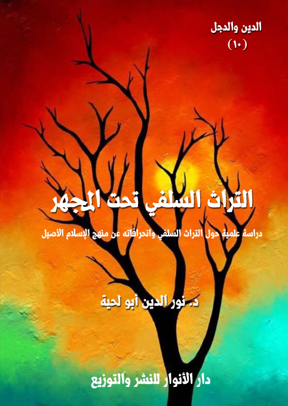

الكتاب: التراث السلفي تحت المجهر
المؤلف: أ.د. نور الدين أبو لحية
الناشر: دار الأنوار للنشر والتوزيع
الطبعة: الأولى، 1437 هـ
عدد الصفحات: 418
ISBN: 978-3-330-84833-7
لمطالعة الكتاب من تطبيق مؤلفاتي المجاني وهو أحسن وأيسر: هنا

التعريف بالكتاب
يتناول هذا الكتاب عرضا موجزا للتراث السلفي في أهم مجالاته من علوم القرآن والحديث والعقيدة والفقه والسيرة والتاريخ والعلوم العقلية والعلوم الكونية.
وهو يسلط مجهر النقد على ما تضمنه هذا التراث من انحرافات عن المنهج القرآني في عرض الحقائق والتعامل معها.
وهو يوظف للدلالة على ذلك الكثير من الشواهد والأدلة والأمثلة التي تكفي لبيان ما جره هذا التراث على الأمة من ويلات ونكبات وتخلف وانحراف عن الدين الإلهي الأصيل.
وهو فوق ذلك كله نصيحة لأصحاب هذه المدرسة لمراجعة تراثها وتنقيته وتطهيره من تلك المعارضات التي تضع الحوائل الكثيرة بينها وبين الدين الأصيل الذي دل عليه القرآن الكريم أولا، ودلت عليه السنة المطهرة ثانيا، ودل عليه معهما العقل السليم الذي لا يمكن أن يفهم الدين إلا به.
التراث السلفي تحت المجهر (6)
يذكر السلفية بفخر واعتزاز الكتب الكثيرة التي تركها سلفهم الأول، والتي تشمل أكثر المعارف والعلوم، والتي لم يزاحمهم فيها أحد من المتقدمين أو المتأخرين.
فقد كتب سلفهم في علوم القرآن والحديث والعقيدة والفقه والسيرة والتاريخ والعلوم العقلية والعلوم الكونية الكتب الكثيرة التي لا يمكن عدها ولا إحصاؤها من كثرتها، وتشعب المجالات التي بحثت فيها.
وهم يرددون بفخر بأن كل علم من أعلام سلفهم وخلفهم ترك الكثير من التراث المعرفي في كل المجالات السابقة..
فقد كتب الطبري مثلا في التفسير كتايه المعروف الذي أثنى عليه ابن تيمية كثيرا (جامع البيان في تفسير القرآن) والذي طُبع في ثلاثين جزءًا، ويعتبر من أكبر التفاسير القديمة، بل يذكرون أنه رغب أن يُمليَ على طلابه فيه ثلاثين ألف ورقة، فما قدَرُوا، فلخَّصَه إلى ثلاثة آلاف ليسهل حفظه بنظرته.
وكتب في التاريخ كتابه المعروف (تاريخ الرسل والملوك)، وهو كتاب ضخم أيضا، وبدأ فيه من أخبار آدم عليه السلام إلى عصره.
وكتب في (تهذيب الآثار، وتفصيل معاني الثابت عن رسول الله صلى الله عليه وآله وسلم من الأخبار)، والذي جمع فيه الكثير من الآثار والأخبار.
وكتب في (اختلاف الفقهاء) كتابه المعروف (اختلاف علماء الأمصار في أحكام شرائع الإسلام)، والذي ذكر فيه المسائل الخلافية بين المجتهدين؛ كالأئمة الثلاثة: أبي حنيفة ومالك والشافعي، وذكر فيه قول الأوزاعي والليث ونحوهم.
وكتب في الأخلاق كتابه (أدب النفوس الجيدة والأخلاق النفيسة)، والمعنون أيضا بـ (أدب النفس الشريفة والأخلاق الحميدة)
التراث السلفي تحت المجهر (7)
وكتب في (آداب القضاة)، و(آداب المناسك)، و(بسيط القول في أحكام شرائع الإسلام)، و(التبصير في معالم الدين)، و(الخفيف في أحكام شرائع الإسلام)..
وغيرها من الكتب الكثيرة حتى قال فيه الخطيب البغدادي: (وكان قد جمع من العلوم ما لم يشاركه فيه أحد من أهل عصره، وكان حافظا لكتاب الله، عارفا بالقراءات بصيرا بالمعاني، فقيها في أحكام القرآن، عالما بالسنن وطرقها صحيحها وسقيمها وناسخها ومنسوخها، عارفا بأقوال الصحابة والتابعين، ومن بعدهم من الخالفين في الأحكام، ومسائل الحلال والحرام، عارفا بأيام الناس وأخبارهم، وله الكتاب المشهور في تارخ الأمم والملوك، وكتاب في التفسير لم يصنف أحد مثله، وكتاب سماه (تهذيب الآثار) لم أر سواه في معناه إلا أنه لم يتمه، وله في أصول الفقه وفروعه كتب كثيرة، واختيار من أقاويل الفقهاء) (1)
ويحكي عن بعضهم: أن محمد بن جرير مكث أربعين سنة يكتب في كل يوم منها أربعين ورقة.. وعن آخر أنه لو سافر رجل إلى الصين حتى يحصل له كتاب تفسير محمد بن جرير لم يكن ذلك كثيرا، وعن أبي القاسم بن عقيل الوراق، أن أبا جعفر الطبري قال لأصحابه: أتنشطون لتفسير القرآن؟ قالوا: كم يكون قدره؟ فقال: ثلاثون ألف ورقة. فقالوا: هذا مما تفنى الأعمار قبل تمامه، فاختصره في نحو ثلاثة آلاف ورقة. ثم قال: هل تنشطون لتاريخ العالم من آدم إلى وقتنا هذا؟ قالوا: كم قدره؟ فذكر نحوا مما ذكره في التفسير فأجابوه بمثل ذلك، فقال: إنا لله ماتت الهمم (2).
وهكذا يذكرون باعتزاز قول الذهبي في ابن تيمية: (إنه صار من أكابر العلماء في حياة شيوخه... ولعل تصانيفه في هذا الوقت تكون أربعةَ آلاف كُرَّاسٍ وأكثر، وفسَّر كتاب الله
__________
(1) تاريخ بغداد (2/ 548)
(2) تاريخ بغداد (2/ 548)
التراث السلفي تحت المجهر (8)
- تعالى- مدة سنين من صدره أيامَ الجُمَع، وكان يتوقَّد ذكاءً، وسماعاته من الحديث كثيرة، وشيوخه أكثر من مائتي شيخ، ومعرفته بالتفسير إليها المنتهى، وحفظه للحديث ورجاله وصحيحه وسقيمه مما لا يُلحق فيه، وأما نقله للفقه ولمذاهب الصحابة والتابعين، فضلاً عن المذاهب الأربعة، فليس له نظير، وأما معرفتُه بالملل والنِّحَل، والأصول والكلام، فلا أعلم له فيه مثيلاً، ويدري جملةً صالحة من اللغة، وعربيَّتُه قوية جدًّا، وأما معرفته بالتاريخ والسير فعجبٌ عجيب) (1)
ويذكرون قول تلميذه ابن عبدالهادي: (وللشيخ رحمه الله من المصنفات والفتاوى والقواعد والأجوبة والرسائل وغير ذلك من الفوائد ما لا ينضبط، ولا أعلم أحداً من متقدمي الأئمة ولا متأخريها جمع مثل ما جمع، ولا صنّف نحو ما صنّف ولا قريباً من ذلك) (2)
هذه مجرد أمثلة ونماذج عن اجتهاد السلفية سلفهم وخلفهم في التأليف في كل المجالات المعرفية.. وهو مما لا يمكن أن ينازعهم فيه أحد، فالمكتبات مليئة بكتبهم، والمواقع الإلكترونية المختصة بكتب التراث لا تكاد تعرف غير آثارهم، ومثل ذلك الكتب الحديثة، فهي من الكثرة بحيث لا يمكن إحصاؤها أو التقليل من شأنها.
ولكن المشكلة التي نريد طرحها في كتابنا هذه ليست في الكم، وإنما في الكيف.. فهل هذه الكتب أو هذا التراث العريض الذي يفخرون به، والذي يزعمون ارتباطه بالكتب والسنة، بل يزعمون أنه لا يمكن أن يفهم الكتاب والسنة إلا من خلاله، ينتسب حقا للكتاب والسنة، وأنه شرح لهما، وتفصيل لمجملهما، وكشف لغامضمها، أم أنه ليس سوى اجتهادات بشرية أثرت فيها البيئة والثقافة والعادات والتقاليد، وأنه بذلك أصبح خليطا
__________
(1) انظر: الأعلام العلية في مناقب ابن تيمية ص 26.
(2) العقود الدرّية في بعض مناقب ابن تيمية، ص 37..
التراث السلفي تحت المجهر (9)
من المقدس والمدنس والهوى والحقيقة؟
والتساؤل الذي يأتي بعد هذا عن علاقة هذا التراث بالعقل، وخاصة العقل الحديث الذي كشفت له الكثير من المعارف والعلوم التي لم يكن يتسنى للسلف الأول الاطلاع عليها، وهل يستطيع التراث السلفي ـ وخاصة وهو يقحم أنفه في كل شيء ـ أن يصمد أمام هذا الواقع العلمي، أم أنه سينهار، كما انهارت نظريات بطليموس أمام علم الفلك الحديث؟
والتساؤل الذي يأتي بعد هذا.. وهو من أهم التساؤلات.. هو عن نوع الشخصية التي يشكلها من يتقوت من هذا التراث.. وهل هي شخصية علمية عقلانية قرآينة ممتلئة بالأدب والتواضع، أم أنها شخصة مشحونة بالأحقاد، تخلط التدين بكل الأمراض النفسية والعقد العصبية، ولا تستطيع أن تنسجم مع واقعها، ولا تستطيع أن تتعايش معه؟
هذه هي التساؤلات الكبرى التي يحاول هذا الكتاب أن يجيب عليها، كما تحاول هذه السلسلة جميعا [الدين.. والدجل] أن تجيب عليها.
وقد قسمنا الكتاب بحسب أقسام التراث السلفي إلى سبعة أقسام، كل قسم يتناول صنفا من أصناف العلوم الكبرى التي اهتم بها السلفية وصنفوا فيها.
ونحب في هذه المقدمة أن نجيب باختصار على شبهة قد تعرض لمن يقرأ هذا الكتاب، وخاصة لمن يطلع على سعة التراث السلفي، فيتعجب عن كيفية عرض هذا التراث ونقده في هذه الصفحات المحدودة.. والجواب على ذلك من وجوه:
أولها: أن التراث السلفي مع كثرته وسعته ممتلئ بالتكرار.. فكل سلفي يكرر سلفه ويعيد إحياءه من جديد، إما بهيئته التي ظهر بها أول مرة، أو ببعض النفخ فيه ليتحول إلى شخص مقدس، بعد أن كان شخصا عاديا.. فابن خزيمة مثلا كان في عصره عالما كسائر العلماء، ومحدثا كسائر المحدثين.. لكن من بعده حوله إلى إمام.. ومن بعده حوله إلى إمام
التراث السلفي تحت المجهر (10)
الأئمة.. فصار الآن يعرف بإمام الأئمة.
وهكذا ابن تيمية وابن القيم والذهبي.. وغيرهم.. والذين تحولوا جميعا إلى أيقونات مقدسة لا ينقص السلفية سوى أن يصلوا عليهم متى ذكروهم، بل لا ينقصهم سوى أن يضيفوا إليهم ما يضيفونه إلى الله من عزة وتعال وجلال.
ثانيا ـ أننا في هذا الكتاب سنركز على القضايا الكبرى التي تميز بها التراث السلفي، ولا نهتم كثيرا بالتفاصيل.. اللهم إلا إذا احتجنا إليها للدلالة على أمر، أو توضيح قضية.. والهدف منها ليس التفاصيل في حد ذاتها، وإنما القضية التي نريد إثباتها، والتي لم نر وسيلة للدلالة عليها سوى تلك التفاصيل.
ثالثا ـ نحن لا ننكر أن يكون في التراث السلفي بعض المحاسن، أو الكثير من المحاسن.. ولكنها وحدها لا تكفي، فمفسدة واحدة قد تقضي على المحاسن جميعا، والشيطان لا يضع سم مكره إلا في عسل كثير من المحاسن.. ولهذا حاولنا في هذا الكتاب أن نسلط مجهر التحقيق على تلك الفيروسات التي تكمن في التراث السلفي لتنحرف به إلى خدمة المشروع الشيطاني، ومواجهة المشروع الرباني.
وفي ختام هذه المقدمة نذكر أن هذا جهد المقل، وأن مثل هذه الأعمال تحتاج إلى دراسات نقدية كثيرة، مع جرأة كبيرة، لأنه لا يمكن تمييز الدين من الدجل إلا بالبحث الجريء الصادق الذي يعتمد القرآن والعقل وسائل للتصحيح والسير على الصراط المستقيم.
التراث السلفي تحت المجهر (11)
لا ينكر أحد من الناس اهتمام السلفية بالقرآن الكريم حفظا وتلاوة وترتيلا، حتى أنه روي عن سلفهم أنه كان منهم من يختم القرآن كل يوم مرة، وكان بعضهم يختم في قيام رمضان كل ثلاث ليال، وبعضهم في كل سبع، وبعضهم في كل عشر.. ويروون عن قتادة أنه كان يختم في كل سبع دائمًا، وفي رمضان في كل ثلاث، وفي العشر الأواخر في كل ليلة.. وكان الزهريُّ إذا دخل رمضان يفرُّ من قراءة الحديث، ومجالسة أهل العلم، ويُقبِل على تلاوة القرآن من المصحف.. وكان سفيان الثوري إذا دخل رمضان ترك جميع العبادة وأقبل على قراءة القرآن (1).
وهكذا نجدهم في عصرنا الحديث يهتمون بتلاوة القرآن الكريم، وترتيله، ولهم قنواتهم الكثيرة المختصة بذلك، بالإضافة لكثرة قرائهم ومرتليهم الذين لقوا شهرة كبيرة بسبب أصواتهم العذبة، وأدائهم الماهر، وتدقيقهم الكبير في مخارج الحروف وأحكام التلاوة.
بالإضافة إلى هذا نجد اهتمامهم الشديد ـ من لدن سلفهم الأول ـ بالتصنيف في تفسير القرآن الكريم وعلومه، بل إننا نجدهم أول من بادر إلى ذلك.. فمن أوائل ما صنف في التفسير يزيد بن هارون السلمى المتوفى سنة 117 هـ، وشعبة بن الحجاج المتوفى سنة 160 هـ، ووكيع بن الجراح المتوفى سنة 197 هـ وسفيان بن عيينة المتوفى سنة 198 هـ، وروح عن عبادة البصرى المتوفى سنة 205 هـ، وعبد الرزاق بن همام المتوفى سنة 211 هـ، وآدم بن أبى إياس المتوفى سنة 220 هـ، وعبد بن حميد المتوفى سنة 249 هـ وغيرهم، (وهؤلاء جميعاً كانوا من أئمة الحديث، فكان جمعهم للتفسير جمعاً لباب من أبواب الحديث، ولم يكن جمعاً
__________
(1) انظر: ابن رجب الحنبلي: لطائف المعارف ص 318.
التراث السلفي تحت المجهر (12)
للتفسير على استقلال وانفراد، وجميع ما نقله هؤلاء الأعلام عن أسلافهم من أئمة التفسير نقلوه مسنداً إليهم) (1)
ثم عندما بدأت مرحلة التدوين في التفسير بشكل منفصل عن الحديث كان سلف السلفية أول من بادر إلى ذلك، وكانوا أول من وضع التفسير لكل آية من القرآن، ورُتَّب ذلك على حسب ترتب المصحف، فقد كان من أوائل من وضع كتبا في التفسير ابن ماجه المتوفى سنة 273 هـ، وابن جرير الطبرى المتوفى سنة 310 هـ، وأبو بكر بن المنذر النيسابورى المتوفى سنة 318 هـ، وابن أبى حاتم المتوفى سنة 327 هـ، وأبو الشيخ بن حبان المتوفى سنة 369 هـ، والحاكم المتوفى سنة 405 هـ، وأبو بكر بن مردويه المتوفى سنة 410 هـ، وغيرهم من أهل الحديث الذين هم سلف السلفية (2)
وهكذا عندما نذهب للبحث عن الكتب المصنفة في أسباب النزول أو الناسخ والمنسوخ أو غريب القرآن أو غيرها من علوم القرآن الكريم، فإننا نجد سلف السلفية هم أول من بادر إلى ذلك، فقد كتب علي بن المديني شيخ البخاري المتوفى سنة (234 هـ) كتابا في (أسباب النزول)، وكتب أبو عبيد القاسم بن سلّام المتوفى سنة (224 هـ) في (الناسخ والمنسوخ)، وكتب أبو بكر السجستاني المتوفى (330 هـ) في (غريب القرآن)، وكتب عليّ بن سعيد الحوفي في (إعراب القرآن)
وهكذا نجد في العصور التالية: ابن تيمية المتوفى سنة (728 هـ) يكتب رسالة في أصول التفسير، وهي مشتملة على بعض موضوعات علوم القرآن (3).
وقد كان جل اعتماد هذه الكتب على النقل عن الصحابة والتابعين ومن بعدهم،
__________
(1) التفسير والمفسرون للذهبي (1/ 104)
(2) التفسير والمفسرون للذهبي (1/ 105)
(3) الواضح في علوم القرآن (ص: 9)
التراث السلفي تحت المجهر (13)
ولذلك لقيت عناية كبيرة من طرف السلفية الذين أثنوا عليها، بل اعتبروها مصادرهم الأساسية في فهم القرآن الكريم، بل لم يحلوا لأحد من الأمة أن يتجاوزها إن أراد أن يفهم كتابه المقدس غضا طريا كما أنزل.
يقول ابن تيمية، وهو يوضح منهج سلفه في التفسير: (إذا لم نجد التفسير في القرآن ولا في السنة رجعنا في ذلك إلى أقوال الصحابة فإنهم أدرى بذلك لما شاهدوه من القرآن والأحوال التي اختصوا بها؛ ولما لهم من الفهم التام والعلم الصحيح والعمل الصالح؛ لا سيما علماؤهم وكبراؤهم كالأئمة الأربعة الخلفاء الراشدين والأئمة المهديين) (1)
وهذا الكلام من ابن تيمية ـ مع جماله الظاهري ـ يحوي مغالطة عظيمة ذلك أن المروي عن هؤلاء الراشدين المهديين ـ كما يقول ـ محصور جدا في كتب التفسير، بل لا يكاد يوجد.. حتى قال السيوطي ـ وهو من أكبر المهتمين بجمع كل ما روي من التفسير بالمأثور ـ: (لا أحفظ عن أبي بكر في التفسير إلا آثارا قليلة جدا لا تكاد تجاوز العشرة) (2)، بل إنهم يروون عنه أنه سئل عن آية، فقال: (أي أرض تسعني؟ أو أي سماء تظلني؟ إذا قلت في كتاب الله ما لم يرد الله؟) (3)
ومثله روي أن عمر قرأ على المنبر قوله تعالى: {فَأَنْبَتْنَا فِيهَا حَبًّا (27) وَعِنَبًا وَقَضْبًا (28) وَزَيْتُونًا وَنَخْلًا (29) وَحَدَائِقَ غُلْبًا (30) وَفَاكِهَةً وَأَبًّا} [عبس: 27 - 31]، ثم قال: كل هذا قد عرفناه فما الأب؟ ثم رفع عصا كانت في يده فقال: هذا لعمر الله هو التكلف فما عليك أن لا تدري ما الأب، اتبعوا ما بين لكم هداه من الكتاب، فاعملوا به، وما لم تعرفوه فكلوه إلى ربه) (4)
__________
(1) مجموع الفتاوى (13/ 364)
(2) الإتقان (2/ 493)
(3) ذكره القرطبي في تفسيره 1 ص 29.
(4) رواه سعيد بن منصور وابن جرير وابن سعد وعبد بن حميد وابن المنذر وابن مردويه والبيهقي في شعب الإيمان والخطيب والحاكم وصححه، انظر: الدر المنثور في التفسير بالمأثور (8/ 421)
التراث السلفي تحت المجهر (14)
وهكذا لا نجد الصحابة الذين ذكرهم ابن تيمية في مصادر التفسير، فلا نجد بلالا ولا عمارا، ولا غيرهم من أهل بدر أو أحد.. ولو أن السلفية اكتفوا بهؤلاء لما وصل تفسير الطبري إلى 25 مجلدا.
لذلك فقد لجأ السلفية إلى التابعين، كما قال ابن تيمية: (إذا لم تجد التفسير في القرآن ولا في السنة ولا وجدته عن الصحابة فقد رجع كثير من الأئمة في ذلك إلى أقوال التابعين كمجاهد بن جبر فإنه كان آية في التفسير كما قال محمد بن إسحاق: حدثنا أبان بن صالح عن مجاهد قال: عرضت المصحف على ابن عباس ثلاث عرضات من فاتحته إلى خاتمته أوقفه عند كل آية منه وأسأله عنها وبه إلى الترمذي قال: حدثنا الحسين بن مهدي البصري حدثنا عبد الرزاق عن معمر عن قتادة قال: ما في القرآن آية إلا وقد سمعت فيها شيئا وبه إليه قال حدثنا ابن أبي عمر حدثنا سفيان بن عيينة عن الأعمش قال: قال مجاهد: لو كنت قرأت قراءة ابن مسعود لم أحتج أن أسأل ابن عباس عن كثير من القرآن مما سألت. وقال ابن جرير: حدثنا أبو كريب قال: حدثنا طلق بن غنام عن عثمان المكي عن ابن أبي مليكة قال: رأيت مجاهدا سأل ابن عباس عن تفسير القرآن ومعه ألواحه قال: فيقول له ابن عباس اكتب حتى سأله عن التفسير كله ولهذا كان سفيان الثوري يقول: إذا جاءك التفسير عن مجاهد فحسبك به. وكسعيد بن جبير وعكرمة مولى ابن عباس وعطاء بن أبي رباح والحسن البصري ومسروق بن الأجدع وسعيد بن المسيب وأبي العالية والربيع بن أنس وقتادة والضحاك بن مزاحم وغيرهم من التابعين وتابعيهم ومن بعدهم) (1)
وكل هؤلاء الذين ذكرهم ابن تيمية هم في الحقيقة أركان التفسير الذي يعتمد عليه السلفية، لأن تفسيرهم القرآن بالقرآن محدود جدا، وفي آيات مخصوصة فقط، ومثله
__________
(1) مجموع الفتاوى (13/ 368)
التراث السلفي تحت المجهر (15)
التفاسير المنقولة عن رسول الله صلى الله عليه وآله وسلم، بل لا يكاد يذكر منها شيء، ولو ذكر فإن سند الرواية فيه عن أولئك الذين تشبعوا بالروايات الإسرائيلية أو اختلطت أحاديثهم بأحاديث بني إسرائيل، فصارت الأحاديث المرفوعة في ذلك كأحاديث كعب الأحبار نفسها.
وبناء على هذا، فإن التفاسير السلفية معتمدة أساسا على التابعين، وكلهم بلا استثناء تتلمذوا على اليهود، بطريقة مباشرة أو غير مباشرة، واختلطت رواياتهم عن الصحابة برواياتهم عن اليهود.
ولذلك نجد علما كبيرا في التفسير كمجاهد والذي أثنى عليه ابن تيمية كثيرا باعتباره من تلاميذ ابن عباس، وقال فيه ابن سعد: (ثقة فقيه عالم، كثير الحديث)، وقال فيه يحيى القطان: (أجمعت الأمة على إمامة مجاهد والاحتجاج به)، وقال فيه الذهبي: (أجمعت الأمة على إمامة مجاهد والاحتجاج به)، وقال ابن كثير: (أحد أئمة التابعين والمفسرين، كان من أخصاء أصحاب ابن عباس، وكان أعلم أهل زمانه بالتفسير حتى قيل: إنه لم يكن أحد يريد بالعلم وجه الله إلا مجاهد وطاووس) (1)
نجد هذا العلم الكبير الثقة مثله مثل سائر السلف يروي الكثير من الإسرائيليات، وهو دليل على أنه نقلها من أهل الكتاب، فقد كان يجمع بين تلمذته على ابن عباس، وتلمذته على الكثير من أهل الكتاب الذين أسلموا وخصوصا من اليهود منهم، كعطية القرظى.
ومن الأمثلة على هذا تفسيره لقوله تعالى: {وَقُولُوا حِطَّةٌ} [البقرة: 58]، فقد قال في تفسيرها: (باب حطة باب إلياء بيت المقدس، أمر قوم موسى أن يدخلوا الباب سجدا، ويقولوا: حطة، وطؤطيء الباب ليخفضوا رؤوسهم، فلما سجدوا قالوا: حنطة) (2)، وفسر
__________
(1) انظر ترجمته في: تهذيب الكمال (27/ 228)، وسير أعلام النبلاء (4/ 257)، والبداية والنهاية (9/ 224)
(2) تفسير مجاهد (ص: 203)
التراث السلفي تحت المجهر (16)
قوله تعالى: {أَنْزَلَ السَّكِينَةَ} [الفتح: 4] قال: (السكينة من الله عز وجل كهيئة الريح لها رأس مثل رأس الهرة وجناحان) (1)
وفسر قوله تعالى: {وَقَالَ لَهُمْ نَبِيُّهُمْ إِنَّ اللَّهَ قَدْ بَعَثَ لَكُمْ طَالُوتَ مَلِكًا} [البقرة: 247] بقوله: (فكان طالوت على الجيش أميرا، فبعث أبو داود مع داود بشيء إلى إخوته، فقال داود لطالوت: ماذا لي وأقتل جالوت؟، قال: لك ثلث ملكي وأنكحك ابنتي، فأخذ داود مخلاة فجعل فيها ثلاث مروات - يعني ثلاثة أحجار - وسمى أحجاره إبراهيم، وإسحاق، ويعقوب، فخرج الذي على اسم إبراهيم فجعله في مرجمته فرمى بها جالوت فخرق ثلاثا وثلاثين بيضة على رأسه، وقتل ما وراءه ثلاثين ألفا، يقول: {{وَاللَّهُ يُؤْتِي مُلْكَهُ مَنْ يَشَاءُ} [البقرة: 247]، يعني: سلطانه، وقال ابن أبي نجيح: وسمعت مجاهدا يقول: أقبلت السكينة والصرد وجبريل عليه السلام مع إبراهيم خليل الرحمن عز وجل من الشام، قال مجاهد فبلغني أن السكينة لها رأس كرأس الهرة وجناحان) (2)
بل إننا نجد أعلام السلفية يدافعون عمن وصفهم سلفهم بالكذب وبرواية الإسرائيليات بل بالبدع المختلفة، ومن ذلك دفاعهم المستميت عن عكرمة مولى ابن عباس على الرغم من تصريح بعض السلف بكونه كذابا، وذلك كاف لرده لو طبقوا منهجهم في الحكم على الأحاديث، وفي تقديم الجرح على التعديل.
يقول السمعوني في ترجمته: (احتج به البخاري وأصحاب السنن وتركه مسلم فلم يخرج له سوى حديث واحد في الحج مقرونا بسعيد بن جبير، وإنماتركه لكلام مالك فيه، وقد تعقب جماعة من الأئمة ذلك وصنفوا في الذب عن عكرمة منهم أبو جعفر بن جرير الطبري ومحمد بن نصر المروزي وأبو عبد الله بن مندة وأبو حاتم ابن حبان وابن عبد البر
__________
(1) تفسير مجاهد (ص: 607)
(2) تفسير مجاهد (ص: 241)
التراث السلفي تحت المجهر (17)
وغيرهم) (1)
ثم ذكر التهم الخطيرة الموجهة له، فقال ـ مستصغرا لها ـ: (ومدار طعن الطاعنين فيه على ثلاثة أشياء: وهي الكذب، وموافقة الخوارج في مذهبهم، وقبول جوائز الأمراء) (2)
ثم ذكر جواب المدافعين عنه من أعلام السلفية، فقال: (ومدار جواب الذابين عنه على أن قبول جوائز الأمراء لا يوجب القدح إلا عند المشددين، وأهل العلم على جواز ذلك وقد صنف في ذلك ابن عبد البر، وأما البدعة فإن ثبتت عنه فلا تضر في روايته، لأنه لم يكن داعية، مع أنها لم تثبت عليه، وأما نسبته إلى الكذب، فأشد ما ورد في ذلك ما روي عن عبد الله بن عمر أنه قال لنافع: (لا تكذب علي، كما كذب عكرمة على ابن عباس)، قال ابن حبان: (أهل الحجاز يطلقون كذب في موضع أخطأ، ويؤيد ذلك قول عبادة بن الصامت: كذب أبو محمد، لما أخبر أنه يقول: إن الوتر واجب، مع أنه لم يقله راوية وإنما قاله اجتهادا، ولا يقال للمجتهد فيما أداه إليه اجتهاده إنه كذب فيه، وإنما يقال أخطأ فيه، وقد ذكر ابن عبد البر أمثلة كثيرة تدل على أن كذب تأتي بمعنى أخطأ، ويتلو ما روي عن ابن عمر في الشدة ما يروي عن ابن سيرين من قوله لمولاه برد لا تكذب علي كما كذب عكرمة على ابن عباس وقد عرفت ان كذب قد يكون بمعنى أهخطأ، وقال بعض العلماء: كان عكرمة ربما سمع الحديث من رجلين فيحدث به عن احدهما تارة وعن الآخر تارة أخرى فربما قالوا ما أكذبه فربما قالوا ما أكذبه وه صادق، وقال أيوب قال عكرمة أرأيت هؤلاء الذين يكذبونني من خلفي أفلا يكذبونني في وجهي، يعني انهم إذا واجهوه بذلك أمكنه الجواب عنه والمخرج منه، وأما طعن مالك فيه فقد بين سببه أبو حاتم قال ابن أبي حاتم: سألت أبي عن عكرمة فقال ثقة قلت يحتج بحديثه قال نعم إذا روى عنه الثقات والذي أنكر عليه به مالك إنما هو
__________
(1) توجيه النظر إلى أصول الأثر (1/ 264)
(2) توجيه النظر إلى أصول الأثر (1/ 264)
التراث السلفي تحت المجهر (18)
بسبب رأيه على انه لم يثبت عنه من وجه قاطع أنه كان يرى ذلك، وإنما كان يوافقهم في بعض المسائل فنسبوه إليهم وقد برأه أحمد والعجلي من ذلك) (1)
وهكذا استطاع العقل السلفي أن يحتال له كما احتال لغيره، لأنه إن لم يحتل له، ولم يدافع عنه، فستضيع ثروة حديثية كثيرة، وتنقص معها صفحات كثيرة من تراث السلفية في التفسير والعقائد والفقه وغيرها.
وقد ذكر الطبري هذا المبرر عند دفاعه عنه، فقال: (لو كان كل من ادعي عليه مذهب من المذاهب الرديئة ثبت عليه ما ادعي به وسقطت عدالته وبطلت شهادته بذلك للزم ترك أكثر محدثي الأمصار لأنه ما منهم إلا وقد نسبه قوم إلى ما يرغب به عنه) (2)
وهكذا نجد أمثال هذه المرافعات الطويلة عن كل المفسرين من التابعين، والذين اعتمد عليهم التراث السلفي بالدرجة الأولى.. فلا نكاد نجد أحدا منهم إلا وتكلم فيه، ولا نجد أحدا منهم إلا ودافع السلفية عنه دفاع المستميت مستعملين كل أدوات الحيلة التي استفادوها نتيجة تواصلهم الدائم مع اليهود أو تلاميذهم.
وليس الأمر قاصرا على الروايات الإسرائيلية، بل تعداه إلى أمور خطيرة كثيرة، ساهمت في تشويه المعاني القرآنية، بتحويلها إلى معان بشرية مدنسة بالانحرافات التي وقعت فيها سائر الأديان.
لذلك فإن ما يعتبره السلفية مكرمة لسلفهم بالمبادرة لتفسير القرآن الكريم، نراها أكبر بدعة وانحراف ساهم في تحريف القرآن الكريم، وإبعاد الأمة عن معانيه السامية، نتيجة خلطه بتراث الأديان الأخرى، وبالمفاهيم البشرية القاصرة.
ومن العجيب أن السلفية الذين ذكروا من أسباب نهي سلفهم عن تدوين الحديث
__________
(1) توجيه النظر إلى أصول الأثر (1/ 264)
(2) توجيه النظر إلى أصول الأثر (1/ 266)
التراث السلفي تحت المجهر (19)
خشية اختلاطه بالقرآن الكريم، نجدهم هم أنفسهم يخلطون تراث الأمم الأخرى، ومفاهيمهم القاصرة بالقرآن الكريم.. فلا تجد آية حتى لو كانت واضحة الدلالة لا تحتاج إلى تفسير إلا وأمامها ما قال مجاهد أو عكرمة أوقتادة أو كعب أو غيره.
فمع وضوح معنى الكلب في قوله تعالى: {وَكَلْبُهُمْ بَاسِطٌ ذِرَاعَيْهِ بِالْوَصِيدِ} [الكهف: 18] لأن العرب كانت ولا تزال تطلقه على الحيوان المعروف، إلا أن مفسر السلفية الثقة والمشهور ابن جرير يقول في تفسير معنى [الكلب]: (اختلف أهل التأويل في الذي عنى الله بقوله: (وكلبهم باسط ذراعيه) فقال بعضهم: هو كلب من كلابهم كان معهم، وقد ذكرنا كثيرا ممن قال ذلك فيما مضى، وقال بعضهم: كان إنسانا من الناس طباخا لهم تبعهم) (1).. وهكذا نرى كيف يحرف القرآن الكريم.. فيتحول الإنسان المحترم المبجل إلى كلب.
وهكذا نراه عند تفسير قوله تعالى: {إِنَّ هَذَا أَخِي لَهُ تِسْعٌ وَتِسْعُونَ نَعْجَةً وَلِيَ نَعْجَةٌ وَاحِدَةٌ} [ص: 23]، فقد قال: (وإنما كنى بالنعجة ها هنا عن المرأة، والعرب تفعل ذلك، ومنه قول الأعشى:
قَدْ كُنْتُ رَائِدَهَا وَشاةِ مُحَاذِرٍ... حَذرًا يُقِلُّ بعَيْنِهِ إغْفَالَهَا
يعني بالشاة: امرأة رجل يحذر الناس عليها، وإنما يعني: لقد ظلمت بسؤال امرأتك الواحدة إلى التسع والتسعين من نسائه) (2)
بناء على هذا، سنحاول هنا أن نسلط مجهر التحقيق والنقد على التراث السلفي المتعلق بالقرآن الكريم لنرى أهم الانحرافات التي سربها للأمة من خلال هذا المصدر العظيم من مصادر الدين.
__________
(1) تفسير الطبري (17/ 624)
(2) تفسير الطبري (21/ 179)
التراث السلفي تحت المجهر (20)
وقد رأينا أنه يمكن جمعها في انحرافين كبيرين: الأول: هو تشويه الحقائق القرآنية، والثاني: وهو تشويه القيم القرآنية.. وسنتحدث عن هذين المعنيين في المبحثين التاليين:
أولا ـ تشويه الحقائق القرآنية.
مع ورود النهي في القرآن الكريم عن سؤال أحد من الناس عن الحقائق القرآنية، وخاصة اليهود منهم، كما قال تعالى: {وَلَا تَسْتَفْتِ فِيهِمْ مِنْهُمْ أَحَدًا} [الكهف: 22]، وقد فسرها مجاهد بأن المراد منهم اليهود (1).
وهكذا نجد النصوص الكثيرة التي تحذر من خلط الحقائق القرآنية الناصعة بغيرها، إلا أننا نجد التراث السلفي، لم يصغ إلى كل تلك التنبيهات والتحذيرات، وانشغل بسبب هيامه بالحشو والرواية والتصنيف والمبالغة فيها إلى تشويه الحقائق القرآنية تشويها عظيما خلطها بالخرافة والدجل، فأصبح القرآن الكريم بذلك مطية لكل الأساطير والأوهام البشرية.
ومن العجيب أن السلفية ـ مع تشددهم الكبير ـ في فروع الأحكام الفقهية، وخاصة ما يتعلق منها بالشعائر التعيدية من الطهارة والصلاة وغيرها، حيث أنهم يتشددون مع الرواة، ويقومون بالكثير من المقارنات والتحقيقات، ويؤلفون في ذلك الكتب والرسائل، إلا أنهم وفي حقائق القرآن تساهلوا تساهلا عظيما، فأخذوها من كل من هب ودب، حتى قال الإمام أحمد: (ثلاثة كتب ليس لها أصول المغازي والملاحم والتفسير) (2)، وقد علق عليه الزركشي بقوله: (قال المحققون من أصحابه: ومراده أن الغالب أنها ليس لها أسانيد صحاح متصلة) (3)
__________
(1) تفسير مجاهد (ص: 446)
(2) البرهان في علوم القرآن (2/ 156)
(3) البرهان في علوم القرآن (2/ 156)
التراث السلفي تحت المجهر (21)
وهكذا نرى السيوطي ينقل عن الشافعي قوله: (لم يثبت عن ابن عباس في التفسير شبيهٌ بمئة حديث) (1)
وهكذا قال عبد الرحمن بن مهدي، وهو من من أعلام السلفية الكبار: (إذا روينا في الثواب والعقاب وفضائل الأعمال، تساهلنا في الأسانيد، وتسامحنا في الرجال، وإذا روينا في الحلال والحرام والأحكام، تشدَّدنا في الأسانيد، وانتقدنا الرجال)
بل هكذا نرى ابن تيمية نفسه يعتبر التحقيق في هذا نوعا من الفضول، وكأن الحقائق القرآنية لا أهمية لها حتى يتحدث فيها من شاء كما شاء، يقول في ذلك: (الاختلاف في التفسير على نوعين: منه ما مستنده النقل فقط، ومنه ما يعلم بغير ذلك، إذ العلم إما نقل مصدق، وإما استدلال محقق، والمنقول إما عن المعصوم، وإما عن غير المعصوم، والمقصود بأن جنس المنقول سواء كان عن المعصوم أو غير المعصوم، وهذا هو النوع الأول منه ما يمكن معرفة الصحيح منه والضعيف ومنه ما لا يمكن معرفة ذلك فيه. وهذا القسم الثاني من المنقول، وهو ما لا طريق لنا إلى الجزم بالصدق منه عامته مما لا فائدة فيه فالكلام فيه من فضول الكلام، وأما ما يحتاج المسلمون إلى معرفته فإن الله نصب على الحق فيه دليلا فمثال ما لا يفيد ولا دليل على الصحيح منه اختلافهم في لون كلب أصحاب الكهف، وفي البعض الذي ضرب به موسى من البقرة، وفي مقدار سفينة نوح وما كان خشبها، وفي اسم الغلام الذي قتله الخضر ونحو ذلك، فهذه الأمور طريق العلم بها النقل، فما كان من هذا منقولا نقلا صحيحا عن النبي صلى الله عليه وآله وسلم كاسم صاحب موسى أنه الخضر فهذا معلوم وما لم يكن كذلك بل كان مما يؤخذ عن أهل الكتاب - كالمنقول عن كعب ووهب ومحمد بن إسحاق وغيرهم ممن يأخذ عن أهل الكتاب - فهذا لا يجوز تصديقه ولا تكذيبه إلا بحجة.. وكذلك ما نقل عن بعض التابعين وإن لم يذكر أنه أخذه عن أهل الكتاب فمتى اختلف التابعون لم يكن
__________
(1) الإتقان (2/ 188 - 189)
التراث السلفي تحت المجهر (22)
بعض أقوالهم حجة على بعض وما نقل في ذلك عن بعض الصحابة نقلا صحيحا فالنفس إليه أسكن مما نقل عن بعض التابعين لأن احتمال أن يكون سمعه من النبي صلى الله عليه وآله وسلم أو من بعض من سمعه منه أقوى؛ ولأن نقل الصحابة عن أهل الكتاب أقل من نقل التابعين ومع جزم) (1)
ونحب أن ننقل هنا للدلالة على هذا التساهل أو الحرص على الحفاظ على التراث الإسرائيلي في تفسير القرآن الكريم رسالة كتبها أحد أعلام السلفية المعاصرين، وهو أبو إسحق الحويني لشيخه الألباني.. وسبب كتابته لها هو أنه عندما أراد أن يخضع الروايات الواردة في التفسير عن السلف إلى منهج المحدثين ـ مع ما فيه من قصور ـ لقي معارضة على ذلك، فأرسل للألباني ليزكي عمله هذا.
قال الشيخ أبو إسحاق الحويني في مقدّمة تحقيقه لتفسير ابن كثير: (توقفتُ طويلاً في الحكم على الآثار التي يوردها ابن كثير: هل أخضعها لقواعد المحدّثين من النظر في رجال السند، واعتبار ما قيل فيهم من جرحٍ وتعديلٍ، أم أتساهل في ذلك وأداني البحثُ والتأمل أنه لا بد من إخضاع كل ذلك لقواعد المحدّثين، إذ الكل نقلٌ، وأصول الحديث إنما وضعها العلماء لذلك، ولأني أشعر بخطورة الأمر، عرضتُ ما وصلتُ إليه على مَن أثق بعلمه ورأيه من شيوخي وإخواني، فكتبتُ لشيخنا الشيخ الإمام، حسنة الأيام، أبي عبد الرحمن ناصر الدين الألباني حفظه الله ومتّع به أذكر له ما انتهى إليه بحثي، وما اخترتُهُ منهجاً لي في العمل.. فأجابني إلى ما أردتُ برغم مرضه الشديد - آنذاك - عافاه الله ورفع عنه) (2)
ونص رسالة الألباني ـ كما نقلها عنه الحويني ـ هي: (أما بعدُ، فقد ذكرتَ أنك في
__________
(1) مجموع الفتاوى (13/ 344)
(2) أبو إسحاق الحويني في مقدّمة تحقيقه لتفسير ابن كثير (1/ 8 / ط. ابن الجوزي)
التراث السلفي تحت المجهر (23)
صدد تحقيق تفسير الحافظ ابن كثير، وأن العلماء وطلبة العلم اختلفوا عليك في إخضاع أسانيد التفسير كلِّها لقواعد المحدّثين إلى فريقين: أحدهما: يرى أن الإخضاع المذكور فيه تضييع للتفسير، إذ غالبُهُ نسخ وكتبٌ؛ كنسخة علي بن أبي طلحة عن ابن عباس، وكتفسير السدّي وغيرها، ومن حجّتهم المقالةُ التي تُنسَب إلى الإمام أحمد قال: ثلاثة لا أصل لها؛ منها: التفسير، قالوا: معنى لا أصل لها؛ يعني: لا إسناد لها، فهذا يدلُّ على عدم اعتبار الإسناد في التفسير، فهل هذا صحيح؟.. والآخر: يرى - معك - ضرورة إخضاع ذلك لقواعد المحدّثين، ثم رجوتَ أن أسطر لك جوابي عليه، فأقول مستعيناً بالله، ومعتذراً لك عن الإيجاز فيه نظراً لظروفي الخاصّة: لا أرى - البته - عدم تطبيق قواعد علم الحديث على الآثار السلفيّة؛ كيف؟ وهي في المرتبة الثانية بعد السنّة المحمديّة في تفسير الآيات الكريمة، فينبغي أن تُساق مساقها في تحقيق الكلام على أسانيدها، وهو الذي جرى عليه مجرى العلماءُ المحقّقون، وقد فصّل السيوطي القول في نسخة (علي بن أبي طلحة عن ابن عباس)، وفي غيرها من الروايات، وبيّن ما يصحُّ منها وما لا يصحُّ على تساهل منه في التصحيح معروف، ثم نقل عن الشافعي أنه قال: (لم يثبت عن ابن عباس في التفسير شبيهٌ بمئة حديث) (1)، وكلمة الإمام أحمد التي احتجّ بها الفريقُ الأول هي - إن صحَّت - حجّةٌ عليهم إذا فسِّرت على ظاهرها، لأنه لا يجوز الجزم بما لا أصل له اتفاقاً، ولذلك فسّرها المحققون من أصحابه بأن مراده: أن الغالب أنه ليس لها أسانيد صحاحٌ متصلة، وإلا فقد صحَّ من ذلك كثيرٌ، وعليه فلا يجوز أيضاً التسوية في تفسير كلام الله بين ما صحَّ من الآثار وما لم يصحّ، وأن تساق مساقاً واحداً، هذا ما لا يقوله عالمٌ، وإن قال خلافه عالم، فله وجهة نظر عنده، ولا يُجعل قاعدةً.. وختاماً: فإني أرى أنه لا بد من إخضاع أسانيد التفسير كلّها للنقد العلميِّ الحديثي، وبذلك نتخلّص من كثيرٍ من الآثار الواهية التي لا تزال في بطون كتب التفسير،
__________
(1) الإتقان (2/ 188 - 189)
التراث السلفي تحت المجهر (24)
وما كان سكوت العلماء عنها إلاّ لكثرتها وصعوبة التفرّغ لها) (1)
انطلاقا من هذا سنحاول هنا، وباختصار، أن نذكر نموذجين عن تأثير المنهج السلفي المعتمد في التفسير على الحقائق القرآنية، وهما يمثلان أصول الحقائق القرآنية، والتأثير فيهما تأثير في الدين جميعا، وقد اعتمدنا في الأمثلة والنماذج على التفاسير المعتبرة عند أعلام السلفية القدامى والمحدثين.
ربما يكون المنطلق الأول الذي بدأ فيه تشويه التراث السلفي للحقائق العقدية هو عدم إعمالهم للتفريق بين المحكم والمتشابه في القرآن الكريم، أو خلطهم بينهما، وسبب ذلك هو عدم رجوعهم للراسخين في العلم، والذين ذكر القرآن الكريم أنهم هم وحدهم الذين يستطيعون التفريق بينهما، كما قال تعالى: {هُوَ الَّذِي أَنْزَلَ عَلَيْكَ الْكِتَابَ مِنْهُ آيَاتٌ مُحْكَمَاتٌ هُنَّ أُمُّ الْكِتَابِ وَأُخَرُ مُتَشَابِهَاتٌ فَأَمَّا الَّذِينَ فِي قُلُوبِهِمْ زَيْغٌ فَيَتَّبِعُونَ مَا تَشَابَهَ مِنْهُ ابْتِغَاءَ الْفِتْنَةِ وَابْتِغَاءَ تَأْوِيلِهِ وَمَا يَعْلَمُ تَأْوِيلَهُ إِلَّا اللَّهُ وَالرَّاسِخُونَ فِي الْعِلْمِ يَقُولُونَ آمَنَّا بِهِ كُلٌّ مِنْ عِنْدِ رَبِّنَا وَمَا يَذَّكَّرُ إِلَّا أُولُو الْأَلْبَابِ} [آل عمران: 7]
فالله تعالى في هذه الآية الكريمة أخبر أن في القرآن الكريم نوعين من الآيات، آيات محكمات واضحات هي الأصل والمرجع وأم الكتاب الذي يصار إليه عند التنازع، ومنه متشابهات، وهي ـ كما يعبر الزركشي ـ (أن يشتبه اللفظ [فيها] في الظاهر مع اختلاف المعاني، ويقال للغامض متشابه لأن جهة الشبه فيه، والمتشابه مثل المشكل لأنه أشكل ودخل في شكل غير شكله) (2)
وهي على نوعين: (أحدُهُما إذا رُدَّ إلى المُحْكَم عُرِف معناه، والآخر ما لا سبيل إلى
__________
(1) أبو إسحاق الحويني في مقدّمة تحقيقه لتفسير ابن كثير (1/ 8)
(2) البرهان: 2/ 69.
التراث السلفي تحت المجهر (25)
معرفة حقيقته. فالمُتَتَبِّع له مُبْتَغ لِلْفتنَة، لأنه لا يكادُ ينتهي إلى شيءٍ تسكن نَفْسُه إليه) (1)
وعلى عكس ذلك المحكم، لأنه (لا اختلاف فيه ولا اضطراب، وما لا يحتمل الوجوه وعُرف بنفسه) (2)
وقد ذكرت الآية الكريمة أن من أغراض وجود المتشابه في القرآن الكريم هو الفتنة والابتلاء ليميز الراسخون في العلم من الذين في قلوبهم مرض، كما قال قال محمد بن جعفر بن الزبير (3): (المحكمات هي التي فيها حجة الرب، وعصمة العباد ودفع الخُصُوم والباطل، ليس لها تصريف ولا تحريف عما وضعن عليه. والمتشابهات لهنّ تصريف وتحريف وتأويل، ابتلى الله فيهنّ العباد)
وبناء على هذا كان الأصل في التعريف بالحقائق المرتبطة بالألوهية الاكتفاء بما ورد في القرآن الكريم من حقائق قطعية لا خلاف فيها، والتي تضمنتها أسماؤه الحسنى الكثيرة، وفيها غنية وكفاية لمن يريد التعرف على الله بحسب الطاقة المحدودة.
لكن العقل السلفي لم يهضم ذلك، ولم يكتف به، بل لم يعره أي أهمية، وراح إلى ألفاظ متشابهات تحمل معاني متعددة ليستنتج منها ما يسميه صفات الله تعالى.
ومن الأمثلة على ذلك ما ورد من النصوص القرآنية في ذكر اليد مضافة لله تعالى، لأن العرب عندما تضيف اليد لأي كان قد تريد بذلك اليد التي هي الجارحة، وتريد بها أيضا معاني أخرى مثل: القوة والنعمة والعطاء والثواب والهداية والنصرة والحفظ وغيرها.
وبما أن الأمر كذلك، فاليد المنسوبة لله، تعتبر من المتشابهات، والتي لا يمكن القطع بمعناها إلا للراسخين في العلم، ولهذا وقفت الأمة ـ من غير السلفية ـ موقفين: أحدهما
__________
(1) النهاية في غريب الحديث والأثر 2/ 442.
(2) أنظر: غريب الحديث (حكم) 1/ 419.
(3) - محمد بن جعفر بن الزبير بن العوام الأسدي، المدني، ثقة، من السادسة، مات سنة بضع عشرة ومائة. ابن حجر – تقريب التهذيب:1/ 471.
التراث السلفي تحت المجهر (26)
تفويض المراد منها لله تعالى، والثاني هو تأويلهما بما يتناسب مع كلام العرب، وقد قال الزركشي عند حديثه عن المحكم والمتشابه، (وممن نقل عنه التأويل علي بن أبي طالب وابن مسعود وابن عباس وغيرهم. وهو اختيار ابن برهان من الأشعرية.. وإنما حملهم على التأويل وجوب حمل الكلام على خلاف المفهوم من حقيقته لقيام الأدلة على استحالة المتشابه والجسمية في حق البارئ تعالى، والخوض في كل هذه الأمور خطر عظيم) (1).
لكن السلفية وحدهم من بين الأمة رفضوا اعتبار ذلك من المتشابه، بل اعتبروه محكما، قال ابن تيمية: (ما وجدت أحدا من أهل العلم من السلف جعل آيات الصفات من المتشابه) (2)
ثم فسر المتشابه ـ كما تتصوره المدرسة السلفية ـ فقال: (المعنى الذي يراد به هذا في حق المخلوقين لا يجوز أن ثم يكون نظيره ثابتا لله، فلهذا صار متشابها، وكذلك قوله: {ثم استوى على العرش} فإنه قد قال: {واستوت على الجودي} وقال: {فاستوى على سوقه} وقال: {فإذا استويت أنت ومن معك على الفلك} وقال: {لتستووا على ظهوره} فهذا الاستواء كله يتضمن حاجة المستوي إلى المستوى عليه، وأنه لو عدم من تحته لخر، والله تعالى غني عن العرش وعن كل شيء، بل هو سبحانه بقدرته يحمل العرش وحملة العرش.. فصار لفظ الاستواء متشابها يلزمه في حق المخلوقين معاني ينزه الله عنها، فنحن نعلم معناه وأنه العلو والاعتدال، لكن لا نعلم الكيفية التي اختص بها الرب التي يكون بها مستويا من غير افتقار منه إلى العرش، بل مع حاجة العرش وكل شيء محتاج إليه من كل وجه، وأنا لم نعهد في الموجودات ما يستوي على غيره مع غناه عنه وحاجة ذلك المستوى عليه إلى المستوي، فصار متشابها من هذا الوجه، فإن بين اللفظين والمعنيين قدرا مشتركا، وبينهما قدرا فارقا
__________
(1) أنظر: الزركشي- البرهان في علوم القرآن: 2/ 78 - 80
(2) مجموع الفتاوى (17/ 378)
التراث السلفي تحت المجهر (27)
هو مراد في كل منهما، ونحن لا نعرف الفارق الذي امتاز الرب به فصرنا نعرفه من وجه ونجهله من وجه، وذلك هو تأويله، والأول هو تفسيره) (1)
وهكذا صار المتشابه عنده ليس كونه مجهولا غير معلوم بسبب الاحتمالات الكثيرة الواردة على اللفظ، وإنما هو متشابه من حيثية واحدة وهي عدم معرفة الكيفية..
فالاستواء عندهم والذي له في اللغة دلالات كثيرة بإقرارهم وإقرار مفسريهم المعتبرين مثل الطبري، الذي قال في شرحه للاستواء: (الاستواء في كلام العرب منصرف على وجوه: منها انتهاء شباب الرجل وقوّته، فيقال إذا صار كذلك: قد استوى الرجل، ومنها: استقامة ما كان فيه أَوَدٌ من الأمور والأسباب، يقال منه: استوى لفلان أمره: إذا استقام له بعد أود. ومنها: الإقبال على الشيء بالفعل، كما يقال: استوى فلان على فلان بما يكرهه ويسوءه بعد الإحسان إليه. ومنها: الاحتياز والاستيلاء كقولهم: استوى فلان على المملكة، بمعنى احتوى عليها وحازها. ومنها: العلوّ والارتفاع، كقول القائل: استوى فلان على سريره، يعني به علوّه عليه) (2)
لكن السلفية وابن تيمية ـ كما رأينا ذلك بتفصيل في كتاب [السلفية والوثنية المقدسة] يفسرون الاستواء بالقعود والجلوس، ويجعلون المتشابه فيه هو عدم معرفتهم لكيفية القعود والجلوس.
وبناء على هذا راح السلفية لكل الآيات المحكمة في القرآن الكريم يحولونها آيات متشابهة، لأنه إذا اعتبرت الآية المتشابهة محكمة، فإنه لابد أن يؤول كل مخالف لها.
ومن هذا الباب أولوا كل الآيات التي تذكر استغناء الله عن المكان، قال أبو عمر الطلمنكي الأندلسي (339 - 429 هـ) في كتابه (الوصول إلى معرفة الأصول): (أجمع
__________
(1) مجموع الفتاوى (17/ 378)
(2) - الطبري:1/ 192.
التراث السلفي تحت المجهر (28)
المسلمون من أهل السنة على أن معنى قوله: وهو معكم أينما كنتم. ونحو ذلك من القرآن: أنه علمه، وأن الله تعالى فوق السموات بذاته مستو على عرشه كيف شاء) (1)
وقال أبو نصر السجزي (ت 444 هـ) في كتابه الإبانة: (فأئمتنا كسفيان الثوري ومالك وسفيان بن عيينة وحماد بن سلمة وحماد بن زيد وعبد الله بن المبارك وفضيل بن عياض واحمد بن حنبل وإسحاق بن إبراهيم الحنظلي متفقون على أن الله سبحانه بذاته فوق العرش وأن علمه بكل مكان وأنه يرى يوم القيامة بالأبصار فوق العرش، وأنه ينزل إلى سماء الدنيا وأنه يغضب ويرضى ويتكلم بما شاء فمن خالف شيئا من ذلك فهو منهم بريء وهم منه براء) (2)
وهكذا اعتبر ابن عبد البر (ت 463 هـ) كل تلك الإضافات المتشابهة محكمة يؤول كل القرآن لأجلها، قال: (أهل السنة مجمعون على الإقرار بالصفات الواردة كلها في القرآن والسنة، والإيمان بها وحملها على الحقيقة لا على المجاز، إلا انهم لا يكيفون شيئا من ذلك ولا يحدون فيه صفة محصورة وأما أهل البدع والجهمية والمعتزلة كلها والخوارج فكلهم ينكرها ولا يحمل شيئا منها على الحقيقة، ويزعمون أن من أقر بها مشبه، وهم عند من أثبتها نافون للمعبود، والحق فيما قاله القائلون بما نطق به كتاب الله وسنة رسوله وهم أئمة الجماعة والحمد لله) (3)
وبذلك تحول المحكم متشابها، والمتشابه محكما، وقد ذكر ابن القيم ذلك، فقال: (الذين يستمسكون بالمتشابه في رد المحكم، لهم طريقان في رد السنن: أحدهما: ردها بالمتشابه من القرآن أو من السنن، الثاني: جعلهم المحكم متشابها ليعطلوا دلالته، وأما
__________
(1) درء التعارض 6/ 250، الفتاوى 5/ 189، بيان تلبيس الجهمية 2/ 38، مختصر العلو 264.
(2) درء التعارض 6/ 250 ونقل الذهبي كلامه هذا في السير 17/ 656.
(3) فتح البر بترتيب التمهيد 2/ 7 –48.
التراث السلفي تحت المجهر (29)
طريقة الصحابة والتابعين وأئمة الحديث كالشافعي والإمام أحمد ومالك وأبي حنيفة وأبي يوسف والبخاري وإسحاق: فعكس هذه الطريق، وهي أنهم يردون المتشابه إلى المحكم، ويأخذون من المحكم ما يفسر لهم المتشابه ويبينه لهم، فتتفق دلالته مع دلالة المحكم وتوافق النصوص بعضها بعضا، ويصدق بعضها بعضا، فإنها كلها من عند الله، وما كان من عند الله فلا اختلاف فيه ولا تناقض، وإنما الاختلاف والتناقض فيما كان من عند غيره) (1)
فالمفاهيم هنا ـ في الظاهر ـ سليمة جدا، فالأصل أن نرجع المتشابه للمحكم، لكن ابن القيم وكل سلفه يخلطون في المصاديق، فيحولون المتشابه محكما، والمحكم متشابها.
ولهذا ذكر ابن القيم أمثلة يوضح بها مقصوده حتى لا يختلط بغيره، فقال: (ولنذكر لهذا الأصل أمثلة لشدة حاجة كل مسلم إليه أعظم من حاجته إلى الطعام والشراب.. المثال الأول: رد الجهمية النصوص المحكمة غاية الإحكام المبينة بأقصى غاية البيان أن الله موصوف بصفات الكمال من العلم والقدرة والإرادة والحياة والكلام والسمع والبصر والوجه واليدين والغضب والرضا والفرح والضحك والرحمة والحكمة وبالأفعال كالمجيء والإتيان والنزول إلى السماء الدنيا ونحو ذلك) (2)
فقد اعتبر الوجه واليدين والنزول وغيرها محكمات، ولا دليل على هذا، لا من العقل الذي يرفض ذلك رفضا تاما، ولا من النقل الذي لا يدل عليه دلالة قطعية، بل دلالته على ذلك من النوع المتشابه الذي يحتمل فيه اللفظ وجوها متعددة كما ذكرنا في الاستواء واليدين وغيرهما.
بل إنهم هم أنفسهم يقرون بالتأويل وضرورته فيما يتصورونه من صفات الله تعالى، فلهذا يؤولونها في نفس الوقت الذي ينكرون على غيرهم التأويل.
__________
(1) إعلام الموقعين عن رب العالمين (2/ 210)
(2) إعلام الموقعين عن رب العالمين (2/ 210)
التراث السلفي تحت المجهر (30)
ومن الأمثلة على ذلك ما أوردوه في تفسير قوله تعالى: {يَدُ اللَّهِ فَوْقَ أَيْدِيهِمْ} [الفتح: 10]، فقد قال الطبري: (وفي قوله: (يَدُ اللَّهِ فَوْقَ أيْدِيهِمْ) وجهان من التأويل: أحدهما: يد الله فوق أيديهم عند البيعة، لأنهم كانوا يبايعون الله ببيعتهم نبيه صلى الله عليه وآله وسلم والآخر: قوّة الله فوق قوّتهم في نُصرة رسوله صلى الله عليه وآله وسلم، لأنهم إنما بايعوا رسول الله صلى الله عليه وآله وسلم على نُصرته على العدوّ) (1)
وقال ابن تيمية: (ومعلوم أن يد النبيّ صلى الله عليه وآله وسلم كانت مع أيديهم كانوا يصافحونه ويصفقون على يده في البيعة، فعلم أن يد الله التي فوق أيديهم ليست هي يد النبيّ صلى الله عليه وآله وسلم ولكن الرسول عبد الله ورسوله فبايعهم عن الله وعاهدهم وعاقدهم عن الله، فالذين بايعوه بايعوا الله الذي أرسله وأمره ببيعتهم، ألا ترى أن كل من وكل شخصاً بعقد مع الوكيل كان ذلك عقداً مع الموكل ومن وكل نائباً له في معاهدة قوم فعاهدهم عن مستنيبه كانوا معاهدين لمستنيبه، ومن وكل رجلاً في نكاح أو تزوج كان الموكل هو الزوج الذي وقع له العقد؟) (2)
وبناء على هذا الخلط بين المحكم والمتشابه، صار تخبطهم الكبير في هذا الباب العقدي الخطير، بل صار القرآن الكريم عندهم محلا لتفسيرات غريبة متكلفة، ولو أنهم أعملوا المحكم واكتفوا بما ورد في القرآن الكريم من أسماء الله الحسنى لما تخبطواذلك التخبط الذي عبر عنه ابن القيم بقوله: (التشابه والإحكام نوعان: تشابه وإحكام يعم الكتاب كله، وتشابه وإحكام يخص بعضه دون بعض، فالأول كقوله تعالى: {اللَّهُ نَزَّلَ أَحْسَنَ الْحَدِيثِ كِتَاباً مُتَشَابِهاً} [الزمر 23] وقوله: {كِتَابٌ أُحْكِمَتْ آيَاتُهُ} [هود 1].. والثاني: كقوله: {هُوَ الَّذِي أَنْزَلَ عَلَيْكَ الْكِتَابَ مِنْهُ آيَاتٌ مُحْكَمَاتٌ هُنَّ أُمُّ الْكِتَابِ وَأُخَرُ مُتَشَابِهَاتٌ} [آل عمران 7]، فإن اردتم بتشابه آيات الصفات النوع الأول فنعم هي متشابهة غير متناقضة
__________
(1) تفسير الطبري (22/ 210)
(2) مجموعة الرسائل والمسائل لابن تيمية (1/ 98)
التراث السلفي تحت المجهر (31)
يشبه بعضها بعضا، وكذلك آيات الأحكام، وإن أردتم أنه يشتبه المراد بها بغير المراد فهذا وإن كان يعرض لبعض الناس فهو أمر نسبي إضافي فيكون متشابها بالنسبة إليه دون غيره، ولا فرق في هذا بين آيات الأحكام وآيات الصفات، فإن المراد قد يشتبه فيهما بغيره على بعض الناس دون بعض، وقد تنازع الناس في المحكم والمتشابه تنازعا كثيرا ولم يعرف عن أحد من الصحابة قط أن المتشابهات آيات الصفات، بل المنقول عنهم يدل على خلاف ذلك، فكيف تكون آيات الصفات متشابهة عندهم وهم لا يتنازعون في شيء منها، وآيات الأحكام هي المحكمة وقد وقع بينهم النزاع في بعضها؟! وإنما هذا قول بعض المتأخرين، وسيأتي إشباع الكلام في هذا في الفصل المعقود له إن شاء الله تعالى) (1)
وهكذا استدل ابن تيمية كعادته في إطلاق الحكم بالإجماع واتفاق الأمة على هذا، فقال: (أما الدليل على بطلان ذلك [أي اعتبار ما يسمونه آيات الصفات متشابهات] أني ما أعلم عن أحد من سلف الأمة ولا من الأئمة، لا أحمد بن حنبل ولا غيره أنه جعل ذلك من المتشابه الداخل في هذه الآية، ونفي أن يعلم أحد معناه وجعلوا أسماء الله وصفاته بمنزلة الكلام الأعجمي الذي لا يفهم، ولا قالوا: إن الله ينزل كلاما لا يفهم أحد معناه، وإنما قالوا كلمات لها معان صحيحة، قالوا في أحاديث الصفات: تمر كما جاءت ـ ونهوا عن تأويلات الجهمية وردوها وأبطلوها التي مضمونها تعطيل النصوص عما دلت عليه، ونصوص أحمد والأئمة قبله بينة في أنهم كانوا يبطلون تأويلات الجهمية، ويقرون النصوص على ما دلت عليه من معناها، ويفهمون منها بعض ما دلت عليه، كما يفهمون ذلك في سائر نصوص الوعد والوعيد والفضائل وغير ذلك، وأحمد قد قال في غير أحاديث الصفات: تمر كما جاءت) (2)
__________
(1) الصواعق المرسلة في الرد على الجهمية والمعطلة (1/ 213)
(2) مجموع الفتاوى (13/ 295)
التراث السلفي تحت المجهر (32)
وهكذا فإن الدليل الذي يذكره ابن تيمية كما يذكره جميع السلفية ليس هو في كون النص محتملا للتأويل أو غير محتمل، لأنهم هم أيضا يمارسون التأويل.. وإنما هو أقوال السلف، وقد وضحنا بالأدلة الكثيرة في كتاب [هكذا يفكر العقل السلفي] أن المركز الذي يجتمع عنده سلفهم جميعا هو اليهود وتلاميذ اليهود.
فهم الذين فسروا لهم الآيات القرآنية تفسيرا حسيا موغلا في التجسيم والتشبيه، ثم تلى ذلك عنهم أعلام الحديث الكبار الذين اشتغلوا بالحشو أكثر من اشتغالهم بالتحقيق.. وبمرور الزمن أصبحت تلك التشويهات العقيدة عقيدة سنية يكفر جاحدها، ويحكم عليه بالقتل.
وكمثال على ذلك أن ابن عباس الذي هو ترجمان القرآن الكريم ـ كما يعتقد السلفية ـ فسر {يَوْمَ يُكْشَفُ عَن سَاقٍ} [القلم: 42]، بشدَّة الهول والأمر، لكن السلفية يرفضون هذا التفسير، ويتعلقون بتفسير يرفعونه لرسول الله صلى الله عليه وآله وسلم فسر لهم الساق بأنها ساق الله، وأنه يكشفها يوم القيامة ليميز المؤمنين من الكافرين، فقد رووا عن رسول الله صلى الله عليه وآله وسلم أنه قال: (يكشف ربنا عن ساقه، فيسجد له كل مؤمن ومؤمنة، ويبقى من كان يسجد في الدنيا رياء وسمعة، فيذهب ليسجد، فيعود ظهره طبقا واحدا) (1)
هذا نموذج لأثر كتاباتهم في علم المحكم والمتشابه على عقيدة الأمة، بل على أهم مسألة عقدية وهي معرفة الله تعالى.. أما معرفة الرسل والملائكة.. فحدث على تحريفاتهم فيها ولا حرج.
مثلما حصل الوهم الكبير للسلفية حين وثقوا في سلفهم كل تلك الثقة العمياء التي جعلتهم يتركون آيات الله المحكمات ليتعلقوا بالمتشابهات، ليبنوا عليها جدرانا من الأوهام
__________
(1) أخرجه البخاري في التفسير (4919)، وفي التوحيد (7439)
التراث السلفي تحت المجهر (33)
جعلهتم أقرب إلى الوثنية منهم إلى التوحيد.. حصل لهم مع الحقائق الكونية التي تشكل جزءا مهما جدا في القرآن الكريم.
فقد تصور السلفية أن سلفهم ـ كما أحاطوا علما بالله وملائكته وكبته ورسله ـ فقد أحاطوا علما كذلك بالكون، ولذلك راحوا ينهلون منهم معارفهم في الفلك والجغرافيا والتاريخ والطب وكل العلوم، ويفسرون القرآن الكريم من خلالها.
وقد تناسوا خلال ذلك الانبهار بالسلف استحالة إحاطة أي جيل من الأجيال بالمعاني القرآنية.. لأن الله تعالى أخبر أن عطاء القرآن الكريم ممتد، وأن كل جيل ينهل منه بحسب استعداداته، كما قال تعالى: {سَنُرِيهِمْ آيَاتِنَا فِي الْآفَاقِ وَفِي أَنْفُسِهِمْ حَتَّى يَتَبَيَّنَ لَهُمْ أَنَّهُ الْحَقُّ أَوَلَمْ يَكْفِ بِرَبِّكَ أَنَّهُ عَلَى كُلِّ شَيْءٍ شَهِيدٌ} [فصلت: 53]
لكن السلفية الذين حصروا فهم القرآن الكريم في السلف الأول من أصحاب القرون الثلاثة الأولى، حجروا على غيرهم أن يتحدث في الحقائق القرآنية.
ولهذا كانوا أول من بادر إلى تحريم تفسير القرآن بمقتضيات العلم، باعتبار أن من شروط المفسر عندهم ألا يخالف ما ورد عن السلف.
كما نص على ذلك بعضهم، فقال: (إنَّ أي تفسير جاء بعد تفسير السلف، فإنه لا يقبل إلا بضوابط، وهذه الضوابط: أن لا يناقض (أي: يبطل) ما جاء عن السلف (أعني: الصحابة والتابعين وأتباع التابعين).. وذلك لأنَّ فهم السلف حجة يُحتكم إليه، ولا تجوز مناقضته البتة، فمن جاء بتفسير بعدهم، سواءً أكان مصدره لغة، أو بحثًا تجريبيًا، فإنه لا يقبل إن كان يناقض قولهم) (1)
وبناء على هذا صدرت الفتاوى الكثيرة من أعلامهم تحرم البحث في مثل هذا النوع من التفسير، لأن البحث فيه سيقضي على مصداقية السلف الذي أقحموا أنوفهم في كل
__________
(1) نقد ما يسمى بالإعجاز العلمي للقرآن، للدكتور مساعد الطيار.
التراث السلفي تحت المجهر (34)
شيء..
ومن الأمثلة على ذلك ما أجابت به اللجنة الدائمة للفتوى في السعودية عن سؤال يقول: (ماحكم الشرع في التفاسير التي تسمى بالتفاسير العلمية؟ وما مدى مشروعية ربط آيات القرآن ببعض الأمور العلمية التجريبية فقد كثر الجدل حول هذه المسائل؟)، فأجابت: (إذا كانت من جنس التفاسير التي تفسر قوله تعالى: {أَوَلَمْ يَرَ الَّذِينَ كَفَرُوا أَنَّ السَّمَاوَاتِ وَالْأَرْضَ كَانَتَا رَتْقًا فَفَتَقْنَاهُمَا وَجَعَلْنَا مِنَ الْمَاءِ كُلَّ شَيْءٍ حَيٍّ أَفَلَا يُؤْمِنُونَ} [الأنبياء: 30] بأن الأرض كانت متصلة بالشمس وجزءً منها ومن شدة دوران الشمس انفصلت عنها الأرض ثم برد سطحها وبقي جوفها حاراً وصارت من الكواكب التي تدور حول الشمس – إذا كانت التفاسير من هذا النوع فلا ينبغي التعويل ولا الاعتماد عليها، وكذلك التفاسير التي يستدل مؤلفوها بقوله تعالى: {وَتَرَى الْجِبَالَ تَحْسَبُهَا جَامِدَةً وَهِيَ تَمُرُّ مَرَّ السَّحَابِ صُنْعَ اللَّهِ الَّذِي أَتْقَنَ كُلَّ شَيْءٍ إِنَّهُ خَبِيرٌ بِمَا تَفْعَلُونَ} [النمل: 88] على دوران الأرض، وذلك أن هذه التفاسير تحرف الكلم عن مواضعه وتخضع القرآن الكريم لما يسمونه نظريات علمية، وإنما هي ظنيات أو وهميات وخيالات، وهكذا جميع التفاسير التي تعتمد على آراء جديدة ليس لها أصل في الكتاب والسنة ولا في كلام سلف الأمة لما فيها من القول على الله بلا علم) (1)
ومثل ذلك الشيخ صالح بن فوزان الفوزان، الذي كتب مقالا بعنوان (حكم تفسير القرآن بنظريات علمية حديثة)، ومما جاء فيه تعقيبا على كلام نقله عن ابن تيمية في التفسير: (انتهى ملخص كلام الشيخ في الرد على من فسّر آية في القرآن بتفسير لم يرد في الكتاب والسنة، وأنه تفسيرٌ باطلٌ.. وهذا ينطبق اليوم على كثيرٍ من جهّال الكتبة الذين يفسرون القرآن حسب أفهامهم وآرائهم.. أو يفسرون القرآن بنظريات حديثة من نظريات الطب
__________
(1) فتاوى اللجنة الدائمة: 4\ 145..
التراث السلفي تحت المجهر (35)
أو علم الفلك أو نظريات روّاد الفضاء ويسمّون ذلك: بالإعجاز العلميّ للقرآن الكريم.. وفي هذا من الخطورة والكذب على الله الشيء الكثير؛ وإن كان بعض أصحابه فعلوه عن حسن نيّة وإظهاراً لمكانة القرآن.. إلاّ أنّ هذا عملٌ لا يجوز، قال صلى الله عليه وآله وسلم: (من قال في القرآن برأيه وبما لا يعلم فليتبوأ مقعده من النار).. والقرآن لا يُفسّر إلاّ بالقرآن أو بالسنة أو بقول الصّحابيّ كما هو معلوم عند العلماء المحققين) (1)
وهنا يقضى العجب منهم، فما داموا يعتقدون حرمة القرآن الكريم، وحرمة تفسيره بالرأي والعلم، كيف أجازوا لسلفهم أن يفسر القرآن الكريم بالخرافة؟
هكذا هي المكاييل المزدوجة للعقل السلفي، فهو يقلب كل شيء.. يقلب المحكم متشابها، والمتشابه محكما، ويحرم التفسير العلمي في نفس الوقت الذي يجيز فيه التفسير الخرافي.
ولم يكتف التراث السلفي بتحريم البحث العلمي في القرآن الكريم، بل راح يفرض خرافات استفادها من الشعوب البدائية ليفسر بها القرآن الكريم، ويضع من خلالها خارطة للكون تختلف عن كل خرائط العالم.
وكمثال على ذلك أن من وجوه الاختلاف التي يمكننا أن نستفيدها من تراث السلفية عن خرائط العالم هو أن أعلى قمة على سطح الأرض ليست هي قمة إفرست، وإنما هي قمة جبل قاف، والذي رووا فيه الروايات الكثيرة التي توضح طوله وعرضه ووظائفه على هذه الأرض.
ومنها ما رووه عن ابن عباس أنه قال ـ وهو يوضح الخارطة السلفية للأرض ـ: (خلق الله تعالى من وراء هذه الأرض بحرا محيطا بها ثم خلق من وراء ذلك جبلا يقال له
__________
(1) حكم تفسير القرآن بنظريات علمية حديثة، مجلة الدعوة/ العدد 1447 الخميس 21 محرم 1415 هـ الموافق 30 يونيو 1994] صـ 23.
التراث السلفي تحت المجهر (36)
{ق} السماء الدنيا مترفرفة عليه ثم خلق من وراء ذلك الجبل أرضا مثل تلك الأرض سبع مرات، ثم خلق من وراء ذلك بحرا محيطا بها، ثم خلق من وراء ذلك جبلا يقال له ق السماء الثانية مترفرفة عليه، حتى عد سبع أرضين وسبعة أبحر وسبعة أجبل وسبع سموات قال: وذلك قوله {وَالْبَحْرُ يَمُدُّهُ مِنْ بَعْدِهِ سَبْعَةُ أَبْحُرٍ} [لقمان: 27]) (1)
بل ذكروا أن لهذا الجبل قدرة على الحديث، فقد رووا عن ابن عبّاس، أنه حدث عن وهب بن منبه أنه قال: إنّ ذا القرنين أتى على جبل قاف، فرأى حوله جبالا صغارا، فقال له: ما أنت؟ قال: أنا قاف، قال: وما هذه الجبال حولك؟ قال: هي عروقي، وليست مدينة من المدائن إلّا وفيها عرق منها، فإذا أراد الله أن يزلزل تلك الأرض أمرني، فحرّكت عرقي ذلك، فتزلزلت تلك الأرض، فقال له: يا قاف، فأخبرني بشيء من عظمة الله، قال: إنّ شأن ربّنا لعظيم، تقصر عنه الصفات، وتنقضي دونه الأوهام، قال: فأخبرني بأدنى ما يوصف منها. قال: إنّ ورائي لأرضا مسيرة خمسمائة عام في عرض خمسمائة عام من جبال ثلج يحطم بعضه بعضا، لولا ذاك الثلج لاحترقت من حرّ جهنّم. قال: زدني، قال: إنّ جبريل عليه السّلام واقف بين يدي الله سبحانه ترعد فرائصه، يخلق الله من كلّ رعدة مائة ألف ملك، وأولئك الملائكة صفوف بين يدي الله سبحانه، منكّسو رؤوسهم، فإذا أذن الله لهم في الكلام، قالوا: لا إِلهَ إِلَّا اللَّهُ) (2)
وقد فسروا بهذا الغثاء قوله تعالى: {يَوْمَ يَقُومُ الرُّوحُ وَالْمَلَائِكَةُ صَفًّا لَا يَتَكَلَّمُونَ إِلَّا مَنْ أَذِنَ لَهُ الرَّحْمَنُ وَقَالَ صَوَابًا} [النبأ: 38]
وبعد كل هذه الخرافات نجد ابن خلدون يعتذر لهم بكل احترام، ويقول ـ عند حديثه عن التفاسير السلفية ـ: (وصار التفسير على صنفين: تفسير نقلي مسند إلى الآثار
__________
(1) رواه ابن أبي حاتم كما في: الدر المنثور في التفسير بالمأثور (7/ 589)
(2) الكشف والبيان عن تفسير القرآن (9/ 93)
التراث السلفي تحت المجهر (37)
المنقولة عن السلف وهي معرفة الناسخ والمنسوخ وأسباب النزول ومقاصد الآي. وكل ذلك لا يعرف إلا بالنقل عن الصحابة والتابعين. وقد جمع المتقدمون في ذلك وأوعوا، إلا أن كتبهم ومنقولاتهم تشتمل على الغث والسمين والمقبول والمردود. والسبب في ذلك أن العرب لم يكونوا أهل كتاب ولا علم وإنما غلبت عليهم البداوة والأمية. وإذا تشوقوا إلى معرفة شيء مما تتشوق إليه النفوس البشرية في أسباب المكونات وبدء الخليقة وأسرار الوجود فإنما يسألون عنه أهل الكتاب قبلهم ويستفيدونه منهم وهم أهل التوراة من اليهود ومن تبع دينهم من النصارى. وأهل التوراة الذين بين العرب يومئذ بادية مثلهم ولا يعرفون من ذلك إلا ما تعرفه العامة من أهل الكتاب ومعظمهم من حمير الذين أخذوا بدين اليهودية. فلما أسلموا بقوا على ما كان عندهم مما لا تعلق له بالأحكام الشرعية التي يحتاطون لها مثل أخبار بدء الخليقة وما يرجع إلى الحدثان والملاحم وأمثال ذلك. وهؤلاء مثل كعب الأحبار ووهب بن منبه وعبد الله بن سلام وأمثالهم. فامتلأت التفاسير من المنقولات عندهم في أمثال هذه الأغراض أخبار موقوفة عليهم وليست مما يرجع إلى الأحكام فيتحرى في الصحة التي يجب بها العمل. وتساهل المفسرون في مثل ذلك وملأوا كتب التفسير بهذه المنقولات. وأصلها كما قلناه عن أهل التوراة الذين يسكنون البادية، ولا تحقيق عندهم بمعرفة ما ينقلونه من ذلك إلا أنهم بعد صيتهم وعظمت أقدارهم. لما كانوا عليه من المقامات في الدين والملة، فتلقيت بالقبول من يومئذ) (1)
ولم يقف الأمر عند حد تفسير القرآن الكريم بالخرافة، بل راح السلفية المتأخرون لا ليعتذروا بمثل ما اعتذر به ابن خلدون، وإنما راحوا يقررون ما ذكر سلفهم من الحقائق، ويربطونها بالقرآن الكريم، ليبنوا عليها أحكامهم التكفيرية.
ومن أمثلة ذلك قول الشيخ ابن عثيمين عند حديثه عن مسألة دوران الأرض،
__________
(1) مقدمة ابن خلدون (2/ 93)
التراث السلفي تحت المجهر (38)
وتطويعه للنصوص المقدسة في سبيل إثبات ذلك: (.. لكن الشيء الذي أرى أنه لا بد منه هو أن نعتقد أن الشمس هي التي تدور على الأرض، وهي التي يكون بها اختلاف الليل والنهار، لأن الله تعالى أضاف الطلوع والغروب إلى الشمس، فقال عز وجل: {وَتَرَى الشَّمْسَ إِذَا طَلَعَتْ تَزَاوَرُ عَنْ كَهْفِهِمْ ذَاتَ الْيَمِينِ وَإِذَا غَرَبَتْ تَقْرِضُهُمْ ذَاتَ الشِّمَالِ} [الكهف: 17]، فهذه أربعة أفعال أضيفت كلها إلى الشمس إذا طلعت، وإذا غربت، تزاور، تقرض، كلها أفعال أضيفت إلى الشمس، والأصل أن الفعل لا يضاف إلا إلى فاعله، أو من قام به، أي من قام به هذا الفعل فلا يقال: مات زيدٌ، ويراد مات عمرو.. فإذا قال الله (وَتَرَى الشَّمْسَ إِذَا طَلَعَتْ) ليس المعنى أن الأرض دارت حتى رأينا الشمس لأنه لو كانت الأرض هي التي تدور، وطلوع الشمس يختلف باختلاف الدوران ما قيل: إن الشمس طلعت، بل يقال نحن طلعنا على الشمس، أو الأرض طلعت على الشمس وكذلك قال الله تبارك وتعالى في قصة سليمان {إِنِّي أَحْبَبْتُ حُبَّ الْخَيْرِ عَنْ ذِكْرِ رَبِّي حَتَّى تَوَارَتْ بِالْحِجَابِ} [ص: 32] أي الشمس، ولم يقل حتى توارى عنها بالحجاب، وقال النبي صلى الله عليه وآله وسلم لأبي ذر: أتدري أين تذهب هذه الشمس؟) قلت: الله ورسوله أعلم، قال: (تذهب تسجد تحت العرش، فتستأذن، فيؤذن لها، ويوشك أن تسجد فلا يقبل منها، وتستأذن فلا يؤذن لها، فيقال لها: ارجعي من حيث جئت، فتطلع من مغربها) (1)، فأضاف الذهاب إلى الشمس) (2)
وهكذا، وبعد أن طوع ما شاء من النصوص القرآنية لقوته الوهمية، قال: (فظاهر القرآن والسنة أن اختلاف الليل والنهار يكون بدوران الشمس على الأرض، وهذا هو الذي يجب أن نعتقده ما لم يوجد دليلٌ حسيٌ قاطع يسوغ لنا أن نصرف النصوص عن
__________
(1) البخاري 8/ 416، ومسلم رقم (159)
(2) مجموع فتاوى ورسائل العثيمين (1/ 71)
التراث السلفي تحت المجهر (39)
ظواهرها إلى ما يوافق هذا النص القاطع، وذلك لأن الأصل في أخبار الله ورسوله أن تكون على ظاهرها حتى يقوم دليل قاطع على صرفها عن ظاهرها، لأننا يوم القيامة سنسأل عما تقتضيه هذه النصوص بحسب الظاهر، والواجب علينا أن نعتقد ظاهرها إلا إذا وجد دليلٌ قاطع يسوغ لنا أن نصرفها عن هذا الظاهر) (1)
وهكذا قال في تفسيره لقول الله تعالى: {وَلَئِنْ سَأَلْتَهُمْ مَنْ خَلَقَ السَّمَاوَاتِ وَالْأَرْضَ وَسَخَّرَ الشَّمْسَ وَالْقَمَرَ لَيَقُولُنَّ اللَّهُ فَأَنَّى يُؤْفَكُونَ} [العنكبوت: 61] عند ذكره لفوائد هذه الآية الكريمة، فقد قال: (وفي قوله تعالى: (وَسَخَّرَ الشَّمْسَ وَالْقَمَرَ) دليلٌ على أنهما هما اللذان يجريان حول الأرض يسِيرَان حول الأرض خلافًا لِمَن قال: إنَّهما لا يسيرَان على الأرض وأنَّ هذا -اختلاف الليل والنهار- بسبب دَوَران الأرض نفسِها وهذا لا شكَ أنَّ الذي لا يعتقد أنهما يدوران على الأرض أنَّه على خطر عظِيم ربما يصل به ذلك إلى الكفر لأنّ الذي نؤمن به ونعتقِدُه ما أخبرَنا الله عنه مِن أنَّ الشمس هي التي تدور على الأرض وكذلك القمر) (2)
ثم يرد ـ بمثل ما ردوا به على من أنكر عليهم تصوراتهم المرتبطة بالحقائق الدينية ـ فقال: (ومِن العجيب أنَّ هذا القول المخالف لِظاهِر القرآن أنَّه قد سرَى إلى أناسٍ لا تثِقُ في ديانَتِهم قصدي لا تشُكّ في ديانتهم، لكن غرَّهم السراب، فانخدعوا والواجِبُ علينا في هذه الأمور أن نمشِيَ على ظاهِر القرآن هذا الواجب حتى يتبَيَّن لنا ما يكون مخالِفًا لهذا الظاهر، أمَّا ما دلَّ عليه القرآن دلالة يقينية فإنَّه لا يمكن لِشيء أن يخالفه فدلالةُ القرآن إمَّا ظاهرة وإما صرِيحة الصريحة قطْعِيَّةُ الدلالة ولا يمكن لشيء أن يخالفَها، والظاهرة ظنِّيَّة الدلالة فنبقى على هذا الأصل نبقى على الظاهر حتى يتبيَّن لنا بأمرٍ قطعي خلافُه وحينئذٍ ما
__________
(1) مجموع فتاوى ورسائل العثيمين (1/ 71)
(2) مجموع فتاوى ورسائل العثيمين (1/ 72)
التراث السلفي تحت المجهر (40)
دام ظاهرًا فإنه يمكن أن يُؤَوَّل) (1)
بل إن بعض السلفية لم يكتف بإنكار دوران الأرض، بل راح ينكر كرويتها أيضا، استنادا إلى قوله تعالى: {وَإِلَى الْأَرْضِ كَيْفَ سُطِحَتْ} [الغاشية: 20]، وفي ذلك يقول القحطاني في نونيته التي لا يزال السلفية يهتمون بها ويحفظونها (2):
كذب المهندس والمنجم مثله... فهما لعلم الله مدعيان
الأرض عند كليهما كروية... وهما بهذا القول مقترنان
والأرض عند أولي النهى لسطيحة بدليل صدق واضح القرآن
والله صيرها فراشا للورى... وبنى السماء بأحسن البنيان
والله أخبر أنها مسطوحة... وأبان ذلك أيما تبيان
بل كان أئمة الوهابية في السعودية يتهمون القائل بكون الأرض كروية بالتجهم، حتى أنه اتهم تقي الدين محمد بن عبد القادر الهلالي (المغربي)، بذلك مع كونه سلفيا متشددا، حيث وشى به المسؤول عن مراقبة الدروس في المسجد النبوي للمسئولين لأنه يقول بكروية الأرض! واشتد نكيره عليه، وقال: (هذا لا يقوله إلا جهمي!) (3)
يمكننا تقسيم المحار الكبرى التي يدورها عليها القرآن الكريم إلى محورين كبيرين:
المحور الأول هو محور الحقائق الكبرى التي يتشكل منها الوجود بنوعيه الواجب والممكن، وهو ما تحدثنا عنه في المبحث السابق.
والمحور الثانية هو القيم التي يتنظم بها الإنسان في هذا الوجود انتظاما صحيحا
__________
(1) مجموع فتاوى ورسائل العثيمين (1/ 73)
(2) نونية القحطاني (ص: 32)
(3) مختصر اللفظ في مسألة دوران الأرض، ص 19.
التراث السلفي تحت المجهر (41)
وإيجابيا لينال بذلك حظه من الكمال والسعادة.
والقرآن الكريم تناول بتفصيل كلا الجانبين، وربطهما ببعضهما البعض ربطا محكما، فحقائق الوجود هي التي تغذي القيم، والالتزام بالقيم هو الذي يرفع الإنسان إلى آفاق الكمال التي تؤهله للتعرف على الوجود ونيل حظه من الفلاح والسعادة فيه، كما أشار إلى ذلك قوله تعالى: {لَقَدْ خَلَقْنَا الْإِنْسَانَ فِي أَحْسَنِ تَقْوِيمٍ (4) ثُمَّ رَدَدْنَاهُ أَسْفَلَ سَافِلِينَ (5) إِلَّا الَّذِينَ آمَنُوا وَعَمِلُوا الصَّالِحَاتِ فَلَهُمْ أَجْرٌ غَيْرُ مَمْنُونٍ} [التين: 4 - 6]
فقوله تعالى {إِلَّا الَّذِينَ آمَنُوا} يشير إلى الإيمان بحقائق الوجود كما ذكرها الله لا كما ذكرتها الخرافة، وقوله {وَعَمِلُوا الصَّالِحَاتِ} إشارة إلى الالتزام بالقيم القرآنية، لا القيم التي صاغها البشر لأنفسهم، أو صاغها لهم الشيطان.
وكما أن العبث أصاب الحقائق القرآنية من خلال سلف السلفية، فقد أصاب العبث القيم القرآنية أيضا، حيث جرى التلاعب بها باسم الناسخ والمنسوخ وأسباب النزول ونحوها من علوم القرآن الكريم التي ابتدعها سلف السلفية، وقيدوا بها المعاني القرآنية أو عطلوها، أو حرفوها.
وبما أن النماذج كثيرة جدا لكثرة القيم الواردة في القرآن الكريم، فسأكتفي هنا بقيمة واحدة هي قيمة السماحة، والتي عبث فيها باسم علمين من علوم القرآن، أولهما: أسباب النزول، والثاني: الناسخ والمنسوخ.
أما الأول فعبث بالآية الكريمة التي تضع قانون التعامل مع المخالف في الدين أيا كان كتابيا أو غير كتابي، وهي قوله تعالى: {لَا يَنْهَاكُمُ اللَّهُ عَنِ الَّذِينَ لَمْ يُقَاتِلُوكُمْ فِي الدِّينِ وَلَمْ يُخْرِجُوكُمْ مِنْ دِيَارِكُمْ أَنْ تَبَرُّوهُمْ وَتُقْسِطُوا إِلَيْهِمْ إِنَّ اللَّهَ يُحِبُّ الْمُقْسِطِينَ} [الممتحنة: 8]، فالآية الكريمة تدعو إلى البر والقسط بين المسلمين وغيرهم من أهل الأديان المختلفة، بل حتى مع الملحدين منهم، لأن القيد فيها مرتبط بالمحاربة، ولا علاقة له بالدين، وهي
التراث السلفي تحت المجهر (42)
بذلك تقسم الناس إلى معتدين ومسالمين، كما تقسمهم آيات أخرى إلى مستضعفين ومستكبرين.
لكن مفسري السلفية ـ وباسم علم أسباب النزول ـ عطلوا الآية الكريمة تعطيلا تاما، حيث أنهم جعلوها خاصة بقوم مخصوصين في زمان مخصوص، وأن علاقتنا بها لا تتعدى الترتيل مع اشتراط أن يكون الترتيل متناسبا مع مخارج الحروف وأحكامها.
وسأنقل هنا ما ذكره المفسرون من الأقوال في تفسير الآية الكريمة، أو بالأخرى في تحريفها، ومنها قول مجاهد أنهم (الذين آمنوا بمكة ولم يهاجروا) (1)
ومنها قول عبد الله بن الزبير، أنه (عني بها من غير أهل مكة من لم يهاجر) (2)، وقد روى عنه الطبري وغيره في سبب نزول الآية قوله: (نزلت في أسماء بنت أبي بكر، وكانت لها أم فى الجاهلية يقال لها قتيلة ابنة عبد العزى، فأتتها بهدايا وصناب وأقط وسمن، فقالت: لا اقبل لك هدية، ولا تدخلي علي حتى يأذن رسول الله صلى الله عليه وآله وسلم فذكرت ذلك عائشة لرسول الله صلى الله عليه وآله وسلم، فأنزل الله {لَا يَنْهَاكُمُ اللَّهُ عَنِ الَّذِينَ لَمْ يُقَاتِلُوكُمْ فِي الدِّينِ وَلَمْ يُخْرِجُوكُمْ مِنْ دِيَارِكُمْ أَنْ تَبَرُّوهُمْ وَتُقْسِطُوا إِلَيْهِمْ إِنَّ اللَّهَ يُحِبُّ الْمُقْسِطِينَ} [الممتحنة: 8]) (3)
ومنها قول بأنه (عني بها من مشركي مكة من لم يقاتل المؤمنين، ولم يخرجوهم من ديارهم؛ ونسخ الله ذلك بعد بالأمر بقتالهم)، وهو قول ابن زيد، فقد قال: (هذا قد نسخ، نسخه، القتال، أمروا أن يرجعوا إليهم بالسيوف، ويجاهدوهم بها، يضربونهم، وضرب الله لهم أجل أربعة أشهر، إما المذابحة، وإما الإسلام) (4)
وبناء على هذا فقد عطلت هذه الآية الكريمة تعطيلا تاما.. وعطل بنفس السبب
__________
(1) تفسير الطبري (23/ 322)
(2) تفسير الطبري (23/ 322)
(3) تفسير الطبري (23/ 322)
(4) تفسير الطبري (23/ 323)
التراث السلفي تحت المجهر (43)
قوله تعالى في شأن رقة النصارى مقارنة باليهود: {لَتَجِدَنَّ أَشَدَّ النَّاسِ عَدَاوَةً لِّلَّذِينَ آمَنُوا الْيَهُودَ وَالَّذِينَ أَشْرَكُوا وَلَتَجِدَنَّ أَقْرَبَهُمْ مَّوَدَّةً لِّلَّذِينَ آمَنُوا الَّذِينَ قَالُوَا إِنَّا نَصَارَى ذَلِكَ بِأَنَّ مِنْهُمْ قِسِّيسِينَ وَرُهْبَانًا وَأَنَّهُمْ لاَ يَسْتَكْبِرُون} [المائدة:82]، فقد ذكروا عن سلفهم أن هذا ليس عاما بكل النصارى، بل خاص بالنجاشي ووفده الذين أسلموا لما قدموا على النبي صلى الله عليه وآله وسلم وهم اثنان وثلاثون أو أربعون أو سبعون أو ثمانون رجلا، وليس المراد كل النصارى لأنهم في عداوتهم كاليهود (1).
وهكذا عطلت هذه الآيات الكريمة باستخدام سلاح أسباب النزول.. لكن لا بأس فهناك آيات أخرى كثيرة يمكن الرجوع إليها لإثبات سماحة الإسلام، ولقيام الفروع الفقهية على أساسها.
لكن سلف السلفية راحوا إلى تلك الآيات الكريمة أيضا يستخدمون في حقها سلاحا آخر أكثر تطورا، هو سلاح النسخ، فقد قال الشيخ مرعي بن يوسف المقدسي الحنبلى (المتوفى: 1033 هـ)، وهو من مشايخ السلفية الكبار في قوله تعالى: {فَاعْفُوا وَاصْفَحُوا حَتَّى يَأْتِيَ اللّهُ بِأَمْرِهِ إِنَّ اللّهَ عَلَى كُلِّ شَيْءٍ قَدِير} [البقرة:109]: (أصل العفو الترك والمحو والصفح الإعراض والتجاوز نسخ بقوله تعالى: {قَاتِلُوا الَّذِينَ لاَ يُؤْمِنُونَ بِاللّهِ وَلاَ بِالْيَوْمِ الآخِرِ وَلاَ يُحَرِّمُونَ مَا حَرَّمَ اللّهُ وَرَسُولُهُ} [التوبة:29]، وأمر الله القتل والسبي لبني قريظة، والجلاء والنفي لبني النضير، قال المحققون: إن مثل هذا لا يسمى منسوخا، لأن الله جعل العفو والصفح مؤقتا بغاية، وهو إتيان أمره بالقتال، ولو كان غير مؤقت بغاية لجاز أن يكون منسوخا) (2)
ومثل ذلك قالوا في قوله تعالى: {قُلْ أَتُحَاجُّونَنَا فِي اللّهِ وَهُوَ رَبُّنَا وَرَبُّكُمْ وَلَنَا أَعْمَالُنَا
__________
(1) قلائد المرجان في بيان الناسخ والمنسوخ في القرآن (ص: 100)
(2) قلائد المرجان في بيان الناسخ والمنسوخ في القرآن (ص: 54)
التراث السلفي تحت المجهر (44)
وَلَكُمْ أَعْمَالُكُمْ وَنَحْنُ لَهُ مُخْلِصُون} [البقرة:139]، فقد اعتبروها أيضا منسوخة، نسختها آية السيف (1).. فما حاجة المسلمين إلى محاجة خصومهم ومجادلتهم وحوارهم بعد أن أن أمدهم الله بقوة السيف؟ فكفى بالسيف شافيا، وكفى بالسيف محاورا.
ومثل ذلك قولهم في قوله تعالى: {لاَ إِكْرَاهَ فِي الدِّينِ قَد تَّبَيَّنَ الرُّشْدُ مِنَ الْغَيِّ} [البقرة:256]، فهي مثل سابقاتها.. نسختها آية السيف (2)..
ومثل ذلك قولهم في قوله تعالى: {أولَئِكَ الَّذِينَ يَعْلَمُ اللّهُ مَا فِي قُلُوبِهِمْ فَأَعْرِضْ عَنْهُمْ وَعِظْهُمْ وَقُل لَّهُمْ فِي أَنفُسِهِمْ قَوْلاً بَلِيغًا} [النساء:63]، فقد ذكروا أن هذا (كان في بدء الإسلام، ثم صار الوعظ والإعراض منسوخاً بآية السيف) (3)
ومثل ذلك قولهم في قوله تعالى: {فَاعْفُ عَنْهُمْ وَاصْفَحْ إِنَّ اللّهَ يُحِبُّ الْمُحْسِنِين} [المائدة:13]، فقد ذكروا أن سلفهم ذكر أنها (نزلت في اليهود، ثم نسخ العفو والصفح بآية السيف) (4)
ومثل ذلك قولهم في قوله تعالى: {وَإِن جَنَحُوا لِلسَّلْمِ فَاجْنَحْ لَهَا وَتَوَكَّلْ عَلَى اللّهِ إِنَّهُ هُوَ السَّمِيعُ الْعَلِيم} [الأنفال:61]، فقد نص سلفهم على أنها منسوخة بآية السيف (5).. فما حاجة المسلمين للسلام، وقد أعطاهم الله القوة التي يقهرون بها أعداءهم.
ومثل ذلك قولهم في قوله تعالى: {ادْعُ إِلِى سَبِيلِ رَبِّكَ بِالْحِكْمَةِ وَالْمَوْعِظَةِ الْحَسَنَةِ وَجَادِلْهُم بِالَّتِي هِيَ أَحْسَنُ إِنَّ رَبَّكَ هُوَ أَعْلَمُ بِمَن ضَلَّ عَن سَبِيلِهِ وَهُوَ أَعْلَمُ بِالْمُهْتَدِين}
__________
(1) الناسخ والمنسوخ للنيسابوري ص 44 - 45.
(2) الناسخ والمنسوخ للنيسابوري ص 96 - 97..
(3) الناسخ والمنسوخ للنيسابوري ص 135.
(4) الناسخ والمنسوخ للنيسابوري، ص 150.
(5) قلائد المرجان، ص 176 - 177.
التراث السلفي تحت المجهر (45)
[النحل:125]، فقد نصوا على أنها منسوخة نسختها آية السيف (1).. فما حاجة المسلمين للحكمة والموعظة وقد من الله عليهم بنعمة القوة والعزة والتسلط.
ومثل ذلك قولهم في قوله تعالى: {ادْفَعْ بِالَّتِي هِيَ أَحْسَنُ السَّيِّئَةَ نَحْنُ أَعْلَمُ بِمَا يَصِفُون} [المؤمنون:96]، فقد نصوا على أنها نسختها آية السيف (2).. وذلك واضح لكل عاقل.. فمن أعطاه الله القوة التي يقهر بها أعداءه لا يحتاج إلى أن يدفع بالتي هي أحسن.
ومثل ذلك قولهم في قوله تعالى: {قُلْ يَاأَيُّهَا النَّاسُ قَدْ جَاءكُمُ الْحَقُّ مِن رَّبِّكُمْ فَمَنِ اهْتَدَى فَإِنَّمَا يَهْتَدِي لِنَفْسِهِ وَمَن ضَلَّ فَإِنَّمَا يَضِلُّ عَلَيْهَا وَمَا أَنَا عَلَيْكُم بِوَكِيل} [يونس:108]، فقد نصوا على أن معناها نسخ لا لفظها بآية السيف (3).
ومثل ذلك قولهم في قوله تعالى: {وَإِذَا سَمِعُوا اللَّغْوَ أَعْرَضُوا عَنْهُ وَقَالُوا لَنَا أَعْمَالُنَا وَلَكُمْ أَعْمَالُكُمْ سَلاَمٌ عَلَيْكُمْ لاَ نَبْتَغِي الْجَاهِلِين} [القصص:55]، فهي الأخرى نسخت بآية السيف (4).. وهو واضح لمن تأمله.. أليس الإعراض نوعا من الضعف.. والمسلم قوي عزيز لا يحتاج أن يذل نفسه.
ومثل ذلك قولهم في قوله تعالى: {يَاأَيُّهَا النَّبِيُّ إِنَّا أَرْسَلْنَاكَ شَاهِدًا وَمُبَشِّرًا وَنَذِيرًا} [الأحزاب:45]، فهي مثل سابقاتها منسوخة بآية السيف (5).. وهي واضحة لا تحتاج إلى شرح يبين نسخها.
ومثل ذلك قولهم في قوله تعالى: {وَلاَ تَسْتَوِي الْحَسَنَةُ وَلاَ السَّيِّئَةُ ادْفَعْ بِالَّتِي هِيَ أَحْسَنُ فَإِذَا الَّذِي بَيْنَكَ وَبَيْنَهُ عَدَاوَةٌ كَأَنَّهُ وَلِيٌّ حَمِيم} [فصلت:34]، فقد نص سلفهم على
__________
(1) قلائد المرجان، ص 210..
(2) قلائد المرجان، ص 235..
(3) قلائد المرجان، ص 252..
(4) المصدر السابق ص 253.
(5) المصدر السابق ص 258.
التراث السلفي تحت المجهر (46)
أنها منسوخة بآية السيف (1).
ومثل ذلك قولهم في قوله تعالى: {فَلِذَلِكَ فَادْعُ وَاسْتَقِمْ كَمَا أُمِرْتَ وَلاَ تَتَّبِعْ أَهْوَاءهُمْ وَقُلْ آمَنتُ بِمَا أَنزَلَ اللَّهُ مِن كِتَابٍ وَأُمِرْتُ لأَعْدِلَ بَيْنَكُمُ اللَّهُ رَبُّنَا وَرَبُّكُمْ لَنَا أَعْمَالُنَا وَلَكُمْ أَعْمَالُكُمْ لاَ حُجَّةَ بَيْنَنَا وَبَيْنَكُمُ اللَّهُ يَجْمَعُ بَيْنَنَا وَإِلَيْهِ الْمَصِير} [الشورى:15]، فقد نصوا على أنها منسوخة بآية السيف (2).
وهكذا استطاعت آية واحدة أساء سلفهم فهمها أن ينسخوا بها كل قيم السماحة والرحمة التي جاء القرآن الكريم للدعوة إليها، ولهذا يذكرون في فضل آية السيف قول الحسن بن فضل: (نسخت هذه الآية كل آية في القرآن فيها ذكر الإعراض والصبر على أذى الأعداء..)، وقال ابن حزم في كتابه الناسخ والمنسوخ: (في القرآن مائة وأربع عشرة آية في ثمان وأربعين سورة نسخت الكل بقوله: اقتلوا المشركين حيث وجدتموهم..) (3)
ولهذا نجد فتاوى السلفية المرتبطة بالعلاقة مع الآخر تلغي كل آيات السماحة لكونها مخصوصة بزمن معين وقوم معينين، أو لكونها منسوخة لا يمكن تطبيقها، لأنها معطلة عن التنفيذ، ونجدهم بدل ذلك يستدلون بالآيات الكريمة في التعامل مع المحاربين.
وهكذا انتكس الأمر هنا أيضا، فتحول المسالمون الذين دعا القرآن الكريم إلى تأليف قلوبهم والمعاملة الحسنة معهم إلى محاربين لا يمكننا أن نتدين التدين الصحيح إلا إذا أريناهم وجوهنا الكالحة، تحت اسم [الولاء والبراء]
وسأسوق هنا بعض الأمثلة من فتاوى السلفية المعاصرين في حكم بعض المعاملات البسيطة التي تدخل ضمن البر والرحمة والسماحة والأخلاق الحسنة التي أمرنا القرآن
__________
(1) المصدر السابق ص 268.
(2) المصدر السابق ص 270.
(3) الناسخ والمنسوخ لابن حزم (ص: 12)
التراث السلفي تحت المجهر (47)
الكريم أن نتعامل بها مع الناس جميعا بغض النظر عن دينهم وعرقهم وأرضهم، لكن هؤلاء العلماء نظروا إلى المسألة كما نظروا إلى المتشابه والمحكم، حيث تحول المحكم متشابها، والمتشابه محكما، وهكذا تحول المسالمون عندهم إلى محاربين، كما تحول المحاربون عند أولياء أمورهم إلى مسالمين.
فمن الأمثلة على ذلك ما أجاب به الشيخ ابن باز عن سؤال يقول صاحبه: (يسكن معي شخص مسيحي، وهو يقول لي: يا أخي، ونحن إخوة، ويأكل معنا ويشرب، فهل يجوز هذا العمل أم لا؟)
فأجاب الشيخ بقوله: (الكافر ليس أخا للمسلم، والله يقول: {إِنَّمَا الْمُؤْمِنُونَ إِخْوَةٌ} [الحجرات:10]، ويقول صلى الله عليه وآله وسلم: (المسلم أخو المسلم) (1)، فليس الكافر -يهوديا أو نصرانيا أو وثنيا أو مجوسيا أو شيوعيا أو غيرهم- ليس أخا للمسلم، ولا يجوز اتخاذه صاحبا وصديقا، لكن إذا أكل معكم بعض الأحيان من غير أن تتخذوه صاحبا وصديقا، وإنما يصادف أن يأكل معكم، أو في وليمة عامة فلا بأس، أما اتخاذه صاحبا وصديقا وجليسا وأكيلا فلا يجوز، لأن الله قطع بيننا وبينهم المحبة والموالاة، فقال الله سبحانه وتعالى في كتابه العظيم: {قَدْ كَانَتْ لَكُمْ أُسْوَةٌ حَسَنَةٌ فِي إِبْرَاهِيمَ وَالَّذِينَ مَعَهُ إِذْ قَالُوا لِقَوْمِهِمْ إِنَّا بُرَآءُ مِنْكُمْ وَمِمَّا تَعْبُدُونَ مِنْ دُونِ اللَّهِ كَفَرْنَا بِكُمْ وَبَدَا بَيْنَنَا وَبَيْنَكُمُ الْعَدَاوَةُ وَالْبَغْضَاءُ أَبَدًا حَتَّى تُؤْمِنُوا بِاللَّهِ وَحْدَهُ} [الممتحنة:4]، وقال سبحانه: {لَا تَجِدُ قَوْمًا يُؤْمِنُونَ بِاللَّهِ وَالْيَوْمِ الْآخِرِ يُوَادُّونَ مَنْ حَادَّ اللَّهَ وَرَسُولَهُ} يعني يحبون {وَلَوْ كَانُوا آبَاءَهُمْ أَوْ أَبْنَاءَهُمْ أَوْ إِخْوَانَهُمْ أَوْ عَشِيرَتَهُمْ} [المجادلة:22]، فالواجب على المسلم البراءة من أهل الشرك وبغضهم في الله، ولكن لا يؤذيهم ولا يضرهم ولا يتعدى عليهم بغير حق، لكن لا يتخذهم أصحابا ولا أخدانا، ومتى صادف أن أكل معهم في وليمة عامة أو طعام عارض من غير صحبة ولا
__________
(1) صحيح البخاري (2310)،صحيح مسلم البر والصلة والآداب (2580)
التراث السلفي تحت المجهر (48)
ولاية ولا مودة فلا بأس) (1)
وعندما نشرت بعض الصحف مقالا جاء فيه هذه العبارة: (إننا لا نكن العداء لليهود واليهودية وإننا نحترم جميع الأديان السماوية) انبرى أكبر علم سلفي في ذلك الحين، وهو ابن باز، فكتب بيانا شديد اللهجة، جاء فيه: (.. ولما كان هذا الكلام في شأن اليهود واليهودية يخالف صريح الكتاب العزيز والسنة المطهرة، ويخالف العقيدة الإسلامية وهو تصريح يخشى أن يغتر به بعض الناس، رأيت التنبيه على ما جاء فيه من الخطأ نصحا لله ولعباده.. فأقول: قد دل الكتاب والسنة وإجماع المسلمين على أنه يجب على المسلمين أن يعادوا الكافرين من اليهود والنصارى وسائر المشركين، وأن يحذروا مودتهم واتخاذهم أولياء، كما أخبر الله سبحانه في كتابه المبين الذي لا يأتيه الباطل من بين يديه ولا من خلفه تنزيل من حكيم حميد.. ونظرا إلى ما في هذا الكلام من مصادمة الأدلة الشرعية الدالة على أنه لا أخوة ولا محبة بين المسلمين والكافرين، وإنما ذلك بين المسلمين أنفسهم، وأنه لا اتحاد بين الدينين الإسلامي والنصراني، لأن الدين الإسلامي هو الحق الذي يجب على جميع أهل الأرض المكلفين اتباعه، أما النصرانية فكفر وضلال بنص القرآن الكريم.. أما الكفار فيجب بغضهم في الله ومعاداتهم فيه سبحانه، وتحرم موالاتهم وتوليهم حتى يؤمنوا بالله وحده ويدعوا ما هم عليه من الكفر والضلال) (2)
وهكذا أجاب الشيخ الفوزان عندما سئل: (ما رأيُ فضيلتكم فيمن يتقرَّب إلى الكفَّار ويواليهم بحجَّة أنهم يفهمون في أمور المادَّة أكثر منَّا؟ وكيف يكون التعامل معه؟)، فأجاب بقوله: (التودُّدُ إلى الكفار لا يجوز، لا تجوز محبَّتُهم في القلوب، لأنهم أعداءُ الله ورسوله، تجبُ عداوتهم، قال تعالى: {لا تَجِدُ قَوْمًا يُؤْمِنُونَ بِاللَّهِ وَالْيَوْمِ الآخِرِ يُوَادُّونَ مَنْ
__________
(1) فتاوى نور على الدرب لابن باز بعناية الطيار (ص: 370)
(2) مجموع فتاوى ابن باز (2/ 178)
التراث السلفي تحت المجهر (49)
حَادَّ اللَّهَ وَرَسُولَهُ وَلَوْ كَانُوا آبَاءَهُمْ أَوْ أَبْنَاءَهُمْ أَوْ إِخْوَانَهُمْ أَوْ عَشِيرَتَهُمْ} [المجادلة:22.]، فلا يجوز للمسلم أن يحبَّ الكافر، أما التعامل معه في الأمور المباحة، فلا بأس إذا كان الكافر عنده تجارة تبيع معه وتشتري، لا بأس بالبيع والشِّراء معه، هذا من المعاملات المباحة، النبي صلى الله عليه وآله وسلم تعامل مع اليهود، اشترى منهم، استدان منهم عليه السلام، كذلك إذا كان عندهم خبرات في بعض الأمور، ولا يوجد عند المسلمين من يقوم بها، فلا بأس أن نستفيد من خبراتهم، لكن لا نحبُّهُم، ولا نواليهم، وإنما نؤاجِرُهم أجرةً، ي ؤدُّون لنا عملاً بالأجرة، مع بغضهم ومع عداوتهم) (1)
هذه مجرد أمثلة عن انهيار القيم القرآنية بسبب التراث السلفي في التفسير والناسخ والمنسوخ وأسباب النزول وغيرها، والتي يفخر السلفية بأن لهم الريادة فيها، وهم لا يعلمون أن لهم الريادة في تحريف القرآن الكريم وتشويه معانيه، بل محاربتها، ومناقضتها، ولو أن الأعداء اجتمعوا ليفعلوا بالقرآن الكريم ما فعله السلفية فيه ما استطاعوا.
ولهذا نرى من الغرابة أو من الجبن ذلك التركيز الشديد من بعض المثقفين والمفكرين على الرد على الحداثيين ومواقفهم من القرآن الكريم، مع الغفلة عن الرد عن هؤلاء الذين لولاهم ما كان الحداثيون ولا الليبراليون ولا العلمانيون.. بل إن هؤلاء جميعا ضحية لتلك المفاهيم الشيطانية التي ألصقها السلفيون وسلفهم بالقرآن الكريم.
__________
(1) المنتقى من فتاوى الفوزان (18/ 2) (148)
التراث السلفي تحت المجهر (50)
لا يستطيع أي عاقل في الدنيا أن ينكر اهتمام السلفية ـ سلفهم وخلفهم ـ بالحديث، فالحديث هو مهنتهم الأولى، وهو بضاعتهم التي يقدمونها للناس، كما أنه الأداة التي من خلالها يزنون من يقبلون من الناس، ومن يرفضون منهم.
ولأجل ذلك سمى أسلافهم أنفسهم [أهل الحديث]، والأثريين، بل إنهم ـ وبثقة عظيمة ـ أنزلوا كل ما ورد في السنة المطهرة حول شرف أهل الحديث عليهم.. فهم المقصودون بقوله صلى الله عليه وآله وسلم حتى ولو لم ينص الحديث على ذلك.. لأن سلفهم أخبروا بذلك، وما كان لسلفهم الربانيين المتقين أن يتقولوا على رسول الله صلى الله عليه وآله وسلم ما لم يقله.
ولذلك تراهم إذا قرأوا قوله صلى الله عليه وآله وسلم: (نضر الله امرأ سمع منا شيئا فبلغه كما سمع فرب مبلغ أوعى من سامع) (1) نقلوا معه قول أبي بكر بن العربي في تفسيره: (قال علماء الحديث ما من رجل يطلب الحديث إلا كان على وجهة نضرة لقول النبي صلى الله عليه وآله وسلم: (نضر الله امرأ سمع منا شيئا فبلغه كما سمع فرب مبلغ أوعى من سامع) الحديث.. وهذا دعاء منه عليه السلام لحملة علمه، ولابد بفضل الله من نيل بركته) (2)
ونقلوا معه قول أبي العباس العزفي (3):
أهل الحديث عصابة الحق... فازوا بدعوة سيد الخلق
فوجوههم زهر منضرة....... لألاؤها كتألق البرق
يا ليتني معهم فيدركني... ما أدركوه بها من السبق
وإذا قرأو قوله صلى الله عليه وآله وسلم: (يحمل هذا العلم من كل خلف عدوله، ينفون عنه تحريف
__________
(1) سنن الترمذى (2869)
(2) مقدمة تحفة الأحوذى ص 13.
(3) نفح الطيب من غصن الأندلس الرطيب (ج 2 / ص 36)
التراث السلفي تحت المجهر (51)
الغالين، وانتحال المبطلين، وتأويل الجاهلين) (1) نصوا على أن أهل هذا العلم هم أهل الحديث، وأنهم لذلك عدول بتعديل رسول الله صلى الله عليه وآله وسلم كما قال الحاكم: (لولا كثرة طائفة المحدثين على حفظ الأسانيد، لدرس منار الإسلام، ولتمكن أهل الإلحاد والمبتدعة من وضع الأحاديث وقلب الأسانيد) (2)
وقال بعده النووي: (هذا إخبار منه صلى الله عليه وآله وسلم بصيانة هذا العلم وحفظه وعدالة ناقليه، وإن الله تعالى يوفق له في كل عصر خلفا من العدول يحملونه وينفون عنه التحريف فلا يضيع، وهذا تصريح بعدالة حامليه في كل عصر، وهكذا وقع ولله الحمد، وهو من أعلام النبوة، ولا يضر كون بعض الفساق يعرف شيئا من علم الحديث، فإن الحديث إنما هو إخبار بأن العدول يحملونه لا أن غيرهم لا يعرف شيئا منه) (3)
وهكا إذا رووا قوله صلى الله عليه وآله وسلم: (أولى الناس بى يوم القيامة أكثرهم على صلاة) (4)، فإنهم وبتحد عجيب يحملونها على أنفسهم، لا على أصحاب الطرق الصوفية الذين اتخذوا الصلاة على رسول الله صلى الله عليه وآله وسلم وظيفة دائمة لا يتوقفون عنها، يقول أبو حاتم: (في هذا الخبر دليل على أن أولى الناس برسول الله صلى الله عليه وآله وسلم في القيامة يكون أصحاب الحديث، إذ ليس من هذه الأمة قوم أكثر صلاة عليه صلى الله عليه وآله وسلم منهم) (5).. ويقول أبو اليمن بن عساكر: (ليهن أهل الحديث هذه البشرى، فقد أتم الله نعمه عليهم بهذه الفضيلة الكبرى، فإنهم أولى الناس بنبيهم، وأقربهم إن شاء الله تعالى وسيلة يوم القيامة إلى رسول الله صلى الله عليه وآله وسلم، فإنهم يخلدون ذكره في دروسهم، ويجددون الصلاة والتسليم عليه في معظم الأوقات، في مجالس مذاكراتهم ودروسهم، فهم
__________
(1) الجامع لأخلاق الراوي وآداب السامع للخطيب البغدادي (135)
(2) الحطة ص 39، مقدمة تحفة الأحوذي ص 15.
(3) الحطة في ذكر الصحاح الستة ص 39.
(4) سنن الترمذى (486) والفتح 11/ 167.
(5) تحفة الأحوذي (ج 2 / ص 20)
التراث السلفي تحت المجهر (52)
إن شاء الله تعالى الفرقة الناجية، جعلنا الله منهم وحشرتنا في زمرتهم) (1).
وهكذا إذا رووا قوله صلى الله عليه وآله وسلم: (لا تزال طائفة من أمتى منصورين لا يضرهم من خذلهم حتى تقوم الساعة) (2)، فإنهم يروون معه قول على بن المدينى: (هم أصحاب الحديث) (3).. ويروون عن أحمد قوله لما سئل عن الطائفة المنصورة المذكورة في الحديث: (إن لم تكن هذه الطائفة المنصورة أصحاب الحديث، فلا أدري من هم)، وقول الحاكم معقبا: (فلقد أحسن أحمد بن حنبل في تفسير هذا الخبر، أن الطائفة المنصورة التي يدفع الخذلان عنهم إلى قيام الساعة هم أصحاب الحديث، ومن أحق بهذا التأويل من قوم سلكوا محجة الصالحين، واتبعوا آثار السلف من الماضين، ودفعوا أهل البدع والمخالفين، بسنن رسول الله صلى الله عليه وآله وسلم وعلى آله أجمعين) (4).
وهكذا نجدهم مع كل الأحاديث الواردة في فضل نقل السنة أو الاهتمام بها أو تمحيصها، فإنهم يعتبرون أنفسهم المقصودون بالحديث، ما عدا حديثا واحدا، فإنهم ـ ومع كونه صلى الله عليه وآله وسلم ذكر فيه أهل الحديث ـ إلا أنهم لا ينسبونه لهم، وهو قوله صلى الله عليه وآله وسلم: (سيخرج قوم في آخر الزمان، حدثاء الأسنان، سفهاء الأحلام، يقولون من قول خير البرية، يقرؤون القرآن، لا يجاوز إيمانهم حناجرهم، يمرقون من الدين كما يمرق السهم من الرمية) (5)
ونحن لا ننكر أن يكون لأهل الحديث ـ الذين يعتبرهم السلفية سلفهم الأول ـ جهودهم في البحث عن السنة وتدوينها ووضع القواعد المرتبطة بتمحيصها.. ولكنا ننكر عليهم ذلك الغرور العظيم الذي جعلهم ينفصلون عن الأمة انفصالا تاما، ليصبحوا طائفة
__________
(1) مقدمة تحفة الأحوذي ص 12 - 13.
(2) رواه أحمد: 5/ 34.
(3) سنن الترمذى (2351) صحيح
(4) معرفة علوم الحديث للحاكم ص 107 - 108.
(5) البخاري (3611) ومسلم (1066) وأبو داود (4767) والنسائي (7/ 119).
التراث السلفي تحت المجهر (53)
خاصة، وكأن رسول الله صلى الله عليه وآله وسلم لم يحدث سواهم، ولم تشمل رحمته التي وسعت العالمين غيرهم.
ولذلك فإن مبدأ الانحراف في التراث السلفي هو تلك الطائفية المقيتة التي جعلتهم يتصورون أنهم وحدهم أهل الحديث.. وأن غيرهم من الأمة ليس كذلك.. حتى لو أمضى حياته كلها متتبعا سنة رسول الله صلى الله عليه وآله وسلم بمفهومها القرآني الشامل..
لأن التصور السلفي أعطى لأهل الحديث شروطا، ووضع لهم قواعد، فمن كان معهم فيها، فهو من أهلهم، ومن أهل الحديث، وتنطبق عليه كل الأحاديث التي وردت في فضلهم، ومن لم يكن معهم، فلا حظ له من أجر، ولا حق له في ثواب.. لأنهم هم من يوزع الثواب.
يقول الخطيب البغدادي ـ مبينا سر ذلك ذلك الشرف الذي خص به أهل الحديث ـ: (لولا عناية أصحاب الحديث بضبط السنن وجمعها، واستنباطها من معادنها، والنظر في طرقها لبطلت الشريعة، وتعطلت أحكامها، إذ كانت مستخرجة من الآثار المحفوظة، ومستفادة من السنن المنقولة، فمن عرف للإسلام حقه، وأوجب للدين حرمته، أكبر أن يحتقر من عظم الله شأنه، وأعلى مكانه، وأظهر حجته، وأبان فضيلته، ولم يرتق بطعنه إلى حزب الرسول وأتباع الوحي وأوعية الدين، وخزنة العلم، الذين ذكرهم الله في كتابه فقال: {وَالَّذِينَ اتَّبَعُوهُمْ بِإِحْسَانٍ رَضِيَ اللَّهُ عَنْهُمْ وَرَضُوا عَنْهُ} [التوبة: 100] وكفى المحدث شرفا أن يكون اسمه مقرونا باسم رسول الله صلى الله عليه وآله وسلم، وذكره متصلا بذكره {ذَلِكَ فَضْلُ اللَّهِ يُؤْتِيهِ مَنْ يَشَاءُ} [الجمعة: 4]) (1)
ويقول ابن تيمية مبينا سر ذلك التميز الذي تميز به أهل الحديث عن غيرهم من الأمة: (من المعلوم أن أهل الحديث يشاركون كل طائفة فيما يتحلون به من صفات الكمال ويمتازون عنهم بما ليس عندهم. فإن المنازع لهم لا بد أن يذكر فيما يخالفهم فيه طريقا أخرى
__________
(1) الكفاية في علم الرواية (ج 1 / ص 5) والكفاية للخطيب البغدادي (1/ 51 - 52)
التراث السلفي تحت المجهر (54)
؛ مثل المعقول والقياس والرأي والكلام والنظر والاستدلال والمحاجة والمجادلة والمكاشفة والمخاطبة والوجد والذوق ونحو ذلك، وكل هذه الطرق لأهل الحديث صفوتها وخلاصتها: فهم أكمل الناس عقلا؛ وأعدلهم قياسا وأصوبهم رأيا وأسدهم كلاما وأصحهم نظرا وأهداهم استدلالا وأقومهم جدلا وأتمهم فراسة وأصدقهم إلهاما وأحدهم بصرا ومكاشفة وأصوبهم سمعا ومخاطبة وأعظمهم وأحسنهم وجدا وذوقا. وهذا هو للمسلمين بالنسبة إلى سائر الأمم ولأهل السنة والحديث بالنسبة إلى سائر الملل) (1)
ويقول باستعلاء وكبرياء كل حين: (وبهذا يتبيّن أنّ أحقّ الناس بأن تكون هي الفرقة الناجية: أهل الحديث والسنّة الذين ليس لهم متبوع يتعصّبون له إلا رسول الله صلى الله عليه وآله وسلم، وهم أعلم الناس بأقواله وأحواله وأعظمهم تمييزا بين صحيحها وسقيمها وأئمّتهم فقهاء فيها وأهل معرفة بمعانيها واتباعٌ لها: تصديقًا وعملاً وحبًّا وموالاةً لمن والاها ومعاداة لمن عاداها، الذين يَرُدون المقالات المجملةَ إلى ما جاء به من الكتاب والحكمة، فلا يُنَصِّبُون مقالةً ويجعلونها من أصول دينهم وجُمل كلامهم إن لم تكن ثابتةً فيما جاء به الرسول صلى الله عليه وآله وسلم بل يجعلون ما بعث به الرسول صلى الله عليه وآله وسلم من الكتاب والحكمة هو الأصل الذي يعتقدونه ويعتمدونه) (2)
وهكذا أصبح أهل الحديث بمنطق ابن تيمية وجميع السلفية هم زبدة الأمة وخلاصتها، لذلك فإنهم، وبهذا الاعتبار، لا يختلفون عن الصحابة، لأنهم تسنى لهم ـ بسبب الحديث ـ الإطلاع على جميع أحواله صلى الله عليه وآله وسلم كما قال قائلهم:
أهل الحديث هم أهل النبي وإن لم يصحبوا نفسه أنفاسه صحبوا
__________
(1) مجموع الفتاوى (ج 4 / ص 9)
(2) مجموع الفتاوى (347/3)
التراث السلفي تحت المجهر (55)
وما دام قد ورد النهي عن التعرض للصحابة ـ كما ينص السلفية ـ فقد ورد النهي عن التعرض لهم أيضا، بل إن حرمتهم تزيد على حرمة الصحابة الذين لم يكفر السلفية سابيهم ولاعنيهم والطاعنين فيهم (1)، بينما كفروا من يطعن في أهل الحديث.
فقد رووا عن محمد ابن إسماعيل الترمذي قوله: كنت أنا وأحمد بن الحسن الترمذي عند أبي عبد اللّه أحمد بن محمد بن حنبل فقال له أحمد بن الحسن: يا أبا عبد اللّه ذكروا لابن أبي قتيلة بمكة أصحاب الحديث، فقال: أصحاب الحديث قوم سوء. فقام أبو عبد اللّه وهو ينفض ثوبه فقال: (زنديق زنديق زنديق)، ودخل البيت (2).
ورووا عن أحمد بن سنان القطان قوله: (ليس في الدنيا مبتدع إلا وهو يبغض أهل الحديث وإذا ابتدع الرجل نزع حلاوة الحديث من قلبه)، وروى عن أحمد بن سلام الفقيه قوله: (ليس شيء أثقل على أهل الإلحاد ولا أبغض إليهم من سماع الحديث وروايته بإسناد) (3)
وقد علق الحاكم على هذين الأثرين بقوله: (وعلى هذا عهدنا في أسفارنا وأوطاننا كل من ينسب إلى نوع من الإلحاد والبدع لا ينظر إلى الطائفة المنصورة إلا بعين الحقارة، ويسميها الحشوية، سمعت الشيخ أبا بكر أحمد بن إسحاق الفقيه وهو يناظر رجلا، فقال: الشيخ: حدثنا فلان، فقال له الرجل: دعنا من حدثنا، إلى متى حدثنا، فقال له الشيخ: (قم يا كافر، ولا يحل لك أن تدخل داري بعد هذا)، ثم التفت إلينا، فقال: (ما قلت قط لأحد لا تدخل داري إلا لهذا) (4)
__________
(1) وخاصة سيد الصحابة الإمام علي الذي لم يتعرض أحد للإذية والسب والطعن مثلما تعرض له، وأول من تعرض له هم سلف السلفية، وعلى رأسهم ابن تيمية كما ذكرنا ذلك بتفصيل في كتاب [شيخ الإسلام في قفص الاتهاما]
(2) معرفة علوم الحديث للحاكم (ص: 4)
(3) معرفة علوم الحديث للحاكم (ص: 4)
(4) معرفة علوم الحديث للحاكم (ص: 4)
التراث السلفي تحت المجهر (56)
بناء على هذا، فإن جذور المشكلة في التراث السلفي تكمن في هذه الطائفية المقيتة، ولو أن السلفية وسلفهم تعاملوا مع الحديث النبوي الشريف كما تعاملت الأمة مع القرآن الكريم لما كان الأمر بهذه الصورة، ولما وقعوا في تلك الانحرافات الكثيرة.. ذلك أن القرآن والحديث كلاهما وحي إلهي، وكلاهما مصدر أساسي للدين.. فلم التمييز بينهما؟
ولكن المشروع الشيطاني في هذه الأمة، والذي لم يستطع أن يمس كتابها بالتحريف كما حرف كتب الأمم السابقة راح يحارب الكتاب بالحديث، ولينجح في مشروعه اتخذ له من هذه الطائفة الناجية أمة من الناس تفسر الدين بحسب ما وصلها من روايات اختلط فيها الحابل بالنابل والطيب بالخبيث والعقل بالخرافة والمقدس بالمدنس.
وسنحاول هنا باختصار أن نبين الانحرافات الكبرى التي وقع فيها التراث السلفي في تعامله مع الحديث النبوي الشريف، وقد رأينا من خلال الاستقراء أنها خمسة أخطاء كبرى تساهم جميعا في حرب السنة النبوية المطهرة، وإحلال السنة المذهبية بدلها، والسنة المذهبية ليست سوى تلك الآراء التي تبناها سلف السلفية، وراحوا يفسرون بها القرآن الكريم والحديث وكل شيء.
وهي مرتبة بهذا الترتيب:
أولا ـ الطائفية في التعامل مع الحديث رواية ودراية.
ثانيا ـ الذاتية في قبول الرواة ورفضهم.
ثالثا ـ الذاتية في تحديد علل الحديث.
رابعا ـ الذاتية في تفسير الأحاديث وتأويلها.
خامسا ـ مزاحمة الحديث بالرواية عن السلف.
وبهذا الترتيب لن ينجو من منخل أهل الحديث إلا ما يرتضونه من أحاديث، أو ما وضعه لهم سلفهم من الحديث.. اللهم إلا الأحاديث التي لا تضرهم، ولا تصيب مقاتلهم،
التراث السلفي تحت المجهر (57)
فإنهم يتركونها تمر، فالشيطان لا يأتي من أبواب الشر المجردة، بل يخلط الخير بالشر، حتى يعبث من خلال ذلك بالعقول.
وأول ما يبدؤون به فرزهم للحديث بحسب أهوائهم هو حرمانهم لمن لا ينتسب لهم من الكلام في الحديث حتى لو بلغ ما بلغ من الحفظ والإتقان.. وهكذا يتعاملون مع رواة الأحاديث، فمن حدث بما يوافق أهواءهم قبلوه ووثقوه، ومن خالفها ضعفوه ووهنوه واتهموا حديثه.. فإن نجا الحديث منهم بصحة السند، ذكروا أن السند لا يكفي وحده للصحة، بل قد يضعف لعلة خفية فيه.. ثم راحوا يذكرون أي علة، ولا يحاسبهم أحد في ذلك، لأن العلل الخفية قد لا يطاق التعبير عنها.. فإن نجا الحديث منهم بعد ذلك كله فسروه أو أولوه بما يتناسب مع مزاجهم.. فإن نجا من ذلك ولم يكن هناك محمل آخر يمكن حمله عليه زاحموه بأقوال السلف التي يعتبرونها أكثر حرمة من القرآن الكريم والسنة المطهرة.
هذا هو منهج السلفية وسلفهم في التعامل مع الأحاديث التي لا تتناسب مع معتقداتهم، وسنفصل الكلام في هذا وأدلته في المباحث التالية:
أولا ـ الطائفية في التعامل مع الحديث رواية ودراية
لعل أكبر انحراف وقع فيه التراث السلفي ورجاله هو تلك النبرة الطائفية المقيتة التي تعاملوا بها مع الحديث، ومع أهل الحديث، حيث أنهم وضعوا قوانين للمحدثين تفتقد للمصداقية والعلمية والموضوعية، وهي فوق ذلك تمتلئ بكل متطلبات الذاتية والقناعات الشخصية، فأصبح علم الحديث بذلك وسيلة لخدمة أغراضهم، لا كونه العلم الذي نعرف من خلاله السنة المطهرة.
التراث السلفي تحت المجهر (58)
ومن الأدلة على ذلك موقفهم من المحدثين الكبار الذين يخالفونهم في الرأي، أو يذهبون خلاف مذاهبهم العقدية الممتلئة بالتجسيم والوثنية، أو يخالفونهم لكونهم ارتضوا لأنفسهم منهجها معينا، أومدرسة معينة.
وقد أشار ابن حجر العسقلاني (ت 825 هـ) إلى هذه الطائفية المقيتة، فقال: (واعلم أنه قد وقع من جماعة الطعن بسبب اختلافهم في العقائد فينبغي التنبه لذلك وعدم الاعتداد به إلا بحق، وكذا عاب جماعة من الورعين جماعة دخلوا في أمر الدنيا فضعفوهم لذلك ولا أثر لذلك التضعيف مع الصدق والضبط، وأبعد ذلك كله من الاعتبار تضعيف من ضعف بعض الرواة بأمر يكون الحمل فيه على غيره أو للتحامل بين الأقران، وأشد من ذلك تضعيف من ضعّف من هو أوثق منه أو أعلى قدراً أو أعرف بالحديث فكل هذا لا يعتبر به) (1)
وبذلك تحولت غاية علم الحديث من كونه العلم الذي تعرف به سنة رسول الله صلى الله عليه وآله وسلم إلى العلم الذي ينتصر لأهواء المحدثين، ورغباتهم الشخصية، وكأنهم يشرطون على رسول الله صلى الله عليه وآله وسلم وعلى سنته أن توافق أهواء سلفهم من اليهود أو تلاميذ اليهود، أو يرمى بها عرض الجدار.
ومن الأمثلة على ذلك ما ذكره المحدث الكبير أحمد بن محمد بن الصديق الغماري في كتابه (المداوي لعلل المناوي) منتقدا تلك المواقف السلبية من علماء الجرح والتعديل من الرواة المتعلقين بحب أهل البيت مقارنة بموقفهم من أعدائهم، فقد قال عند حديثه عن بعضهم: (وهذا الرجل ـ يعني عبدالسلام بن صالح الهروي ـ ممن ظلمه أهل الجرح والتعديل لأجل تشيعه لأهل البيت، وقد وثقه أهل التحقيق منهم، كما بينته في (فتح الملك
__________
(1) انظر: ابن حجر العسقلاني (هدى الساري مقدمة فتح البارئ ص 385)
التراث السلفي تحت المجهر (59)
العلي) (1)
وقال منتقدا بشدة موقف الذهبي والمناوي من الإمام جعفر الصادق: (هذه غلطة شنيعة من الشارح وغفلة عظيمة راج عليه معها نصب الذهبي، فهل أنت يا مناوي مجنون تعلل الحديث بجعفر الصادق أحد كبار الأئمة وسادات الأمة وبحور العلم والمعرفة من آل البيت الأطهار؟! وتجعله في مصاف الضعفاء والمتروكين الذين يردُّ بهم الحديث.. غرضه الأكيد هو جلب الطعن فيه من إخوانه النواصب، وإدراج هذا الإمام ـ يعني جعفر الصادق ـ في دفتر الضعفاء والمتروكين، فإنه ذكر فيه أيضاً جميع الأئمة المشاهير المتبوعين من سادات أهل البيت رضي الله عنهم) (2)
وقال عند ذكره لبعض الرواة الذين اتهمهم الذهبي زورا وبهتانا: (والذهبي إنما أورده لما قيل فيه من التشيع، وهو لا يترك شيعياً إلا أورده في الضعفاء) (3)
وهكذا انتقد موقفهم من المحدثين والرواة الذين اختاروا لأنفسهم منهج التصوف كوسيلة للسلوك إلى الله، فقد قال منتقدا موقفهم من أبي عبدالرحمن السلمي الصوفي المشهور، صاحب الطبقات والأربعين وحقائق التفسير، وغيرها: (هو ثقة تكلم فيه بلا حجة، كما هي عادة أهل الحديث مع أمثاله من الصوفية، فيعاب على الشارح تعليل الحديث به لاسيما وهو من العارفين بقدر الرجل ومنزلته وجلالته) (4)
وقال: (تعليل الحديث بأبي عبدالرحمن السلمي من جهل الشارح، بل من قلة حيائه، لأنه يدعي التصوف وإجلال الصوفية، ومن يجهل قدر أبي عبدالرحمن السلمي ويقبل قول الخطيب فيه فلم يشم للتصوف رائحة ولا قرب من ساحة ميدان الحديث، والذهبي على
__________
(1) المداوي لعلل المناوي: 1/ 207.
(2) المداوي لعلل المناوي: 1/ 250.
(3) المداوي لعلل المناوي: 1/ 563.
(4) المداوي لعلل المناوي: 1/ 530.
التراث السلفي تحت المجهر (60)
بغضه للصوفية وتعنته عليهم قد أورده في (تذكرة الحفاظ) وامتدحه وأطراه، وتكلم فيه من أجل مالم يفهمه من تصوفه، ونقل كلام من تكلم فيه كما هو الشأن في كتب الرجال، فقال في (التذكرة): أبوعبدالرحمن السلمي الحافظ العالم الزاهد شيخ المشايخ محمد بن الحسين بن محمد بن موسى النيسابوري الصوفي الأزدي الأب السلمي الأم، سمع خلقاً كثيراً، وكتب العالي والنازل، وصنف وجمع، وسارت بتصانيفه الركبان، حمل عنه القشيري والبيهقي وأبوصالح المؤذن وخلق سواهم، إلا أنه ضعيف، قال الخطيب: محله كبير، وكان مع ذلك صاحب حديث مجوداً، جمع شيوخاً وتراجم وأبواب، وله دويرة للصوفية، وعمل سنناً وتفسيراً وتاريخاً) (1)
ومن الأمثلة على ذلك انتقادات العلامة المحدث محمود سعيد ممدوح لتفريط الأمة في تراث أهل البيت الحديثي لأسباب سياسية ومذهبية وطائفية، سواء في كتبه أو في محاضراته ولقاءاته، والتي كانت سببا في حرق كتبه في دول الخليج، وكانت سببا في الحملة الإعلامية الشديدة عليه على الرغم من إقرارهم له بالتمكن من علم الحديث.
فمما قال في بعض الحوارات التي أجريت معه جوابا عن سؤال حول حكم روايات آل بيت رسول الله صلى الله عليه وآله وسلم في غير دواوين أهل السنة: (المعول هنا على الإسناد فإذا ثبت الإسناد لأئمة آل البيت فهو كذلك وإلا فلا، ثم اعلم أن الله تعالى لم يقصر الثابت بأقسامه على كتب أهل السنة فقط ففي كتب السادة الزيدية جمع عظيم من الأحاديث النبوية الشريفة الثابتة، وعلى سبيل المثال بين يدي الآن شرح تجريد فتاوى الإمامين القاسم الرسي وحفيده الإمام الهادي عليهما السلام، والشرح للحافظ الفقيه الإمام المؤيد بالله أحمد بن الحسين بن هارون الحسني المتوفى سنة 416 هـ وهو مخطوط ومصور في ستة أجزاء ضخام بحجم مستدرك الحاكم، والكتاب قد امتلأ بالأحاديث المرفوعة المسندة من طريق آل البيت وغيرهم،
__________
(1) المداوي لعلل المناوي: 1/ 627.
التراث السلفي تحت المجهر (61)
والإمام المؤيد بالله له شيوخ كثيرون، وبينه وبين الطحاوي واسطة واحدة، وهذا الشرح أعني شرح التجريد، علق أسانيده الإمام المجتهد أحمد بن سليمان من ذرية الإمام الهادي يحي بن الحسين عليهم السلام المتوفى سنة 566 هـ وجمع متونه في كتاب مفرد اسمه أصول الأحكام الجامع لأدلة الحلال والحرام، وهو مطبوع في مجلدين.. وفقه وحديث آل البيت عليهم السلام يحتاج لتوجه صادق وبحث وجَلَد وقبل ذلك تقوى واستعانة بالله تعالى) (1)
وقال جوابا على سؤال حول رأيه في (مسند الإمام الشهيد زيد بن علي)، وهل تصح نسبته إليه: (مسند الإمام زيد بن علي عليهما السلام صحيح النسبة إليه، وقد تلقاه ائمة آل البيت عليهم السلام بالقبول، وجميعهم بالنسبة لأحاديثه وآثاره بين عامل به أو متأول له، وهذا معنى التلقي بالقبول، وراوي المسند عن الإمام زيد عليه السلام، هو أبو خالد الواسطي قد قدح فيه غير واحد من ائمة الجرح والتعديل، لكن جرحهم مردود بتلقي ائمة آل البيت للمسند بالقبول، وأحاديث المسند معروفة ومشهورة وقد شرحها عدد من العلماء وخرجت واعتبرت. وأرجوا من الأستاذ الهولي الشافعي مراجعة مقدمة الروض النضير للعلامة الكبير السياغي الصنعاني رحمه الله تعالى فقد أفاض وأجاد وأتى بالمراد وفيه غنية وكفاية لإثبات صحة ونسبة مسند الإمام زيد بن علي له. والمسند مطبوع بمصر وعليه تقريظات عدد من علماء الأزهر، ثم اعلم أنه إذا كان العمل على القبول رد الجرح، وأنت إذا تأملت الجرح الذي جاء في عدد من ائمة الفقه وأن العمل على خلافه انحلت لك المشكلة، فهذا هو الإمام أبو حنيفة النعمان قد قدح في عدالته وضبطه عدد كبير من الحفاظ والفقهاء، وصنف ابن حبان الحافظ في علل أحاديثه، وهذا لم يحدث لأبي خالد الواسطي راوي المسند ومع ذلك كان العمل على خلاف هذا الجرح، وهذان محمد بن شجاع الثلجي، والحسن بن زياد اللؤلؤي من أجل المجتهدين والرواة من أصحاب الإمام أبي حنيفة
__________
(1) من حوار مطول أجري معه في منتدى المنزهون من أهل الحديث.
التراث السلفي تحت المجهر (62)
معتمدان في النقل والفقه عند السادة الحنفية مع أنهما كذابان عند ائمة الجرح والتعديل بل قال أبوثور ما رأيت أكذب من اللؤلؤي، وللشيخ الكوثري رسالة خاصة اسمها (الإمتاع) خاصة بالثلجي واللؤلؤي فإنها مطبوعة، وللثلجي واللؤلؤي نظائر كالحارثي والحسن بن عمارة، وابن حبيب، والحاصل أن أبا خالد الواسطي حديثه مقبول عند قرناء الكتاب أعني ائمة آل البيت عليهم السلام طبقة بعد طبقة مع توفر كتب الرجال عندهم، وفي هذا القدر كفاية لقبول حديث الرجل) (1)
وقال جوابا عن سؤال حول رأيه في كتاب (العتب الجميل) الذي انتقد فيه صاحبه ذاتية المحدثين، وكيلهم بالمكاييل المزدوجة، حين وثقوا النواصب وضعفوا الموالين لأهل البيت: (كتاب (العتب الجميل على أهل الجرح والتعديل) لسيدي العلامة المبجل الشريف محمد بن عقيل بن يحيى باعلوي الشافعي، كتاب رائد في بابه، تعرض لمشكلة من أهم المشكلات في الجرح والتعديل، ألا وهي توهين وجرح وظلم آل البيت عليهم السلام وشيعتهم، وتوثيق ومدح النواصب المجرمين، وهي مسألة عظيمة تعرض لها السيد محمد بن عقيل، فأزاح الستار عن سببها وأثرها، وذكر نماذج لها، فلله دره) (2)
ولم يقتصر أمر السلفية على توهينهم المخالفين لهم من الرواة القدامى بسبب آرائهم ومواقفهم، بل شمل ذلك أيضا كبار علماء هذا العصر، ومن المحدثين الذي شهد لهم الجميع بالقدرة والوثاقة.
وسنسوق هنا بعض الأمثلة على ذلك للدلالة على أن العقل السلفي القديم هو نفسه العقل السلفي الجديد، وأن السلفية لم يطوروا أنفسهم، ولم يراجعوا آراءهم، ولم يصححوا منهجهم.
__________
(1) المرجع السابق.
(2) المرجع السابق.
التراث السلفي تحت المجهر (63)
المثال الأول موقف السلفية من الكوثري
يعتبر محمد زاهد الكوثري من كبار أعلام هذا العصر في كثير من العلوم الشرعية، ومنها علم الحديث، الذي ترك فيه آثار رائعة تدل على قدراته النقدية.
وقد شهد له بهذا كبار الأعلام المعاصرين، كتلميذه أحمد خيري، الذي شهد له بقوله: (كان ذا ذاكرة فذة، ولاسيما في حفظ الأسماء فكان إذا سمع شيئا أو رأى أحدا مرة واحدة ذكره ولو بعد سنوات، وهيأ له ذلك مع إطلاعه على المخطوطات النادرة في الآستانة ومصر والشام إلى أن أصبح حجة لا يبارى في علم الرجال وجمع إلى براعته في الحديث ورجاله مهارة فائقة في علم الكلام وتنزيه الله سبحانه وتعالى، كما كان أستاذ العصر في علمي الأصول والفقه، وكان على عبقريته المدهشة يحب أن يتعقّبه العلماء) (1)
وشهد له الشيخ الكبير محمد أبو زهرة، فقال: (لا أعرف عالما مات فخلا مكانه في هذه السنين كما خلا مكان الإمام الكوثري، لأنه بقية السلف الصالح الذين لم يجعلوا العلم مرتزقا ولا سلما لغاية.. لقد تحقق فيه القول المأثور (العلماء ورثة الأنبياء)، وما كان يرى تلك الوراثة شرفا يفتخر به ويتسلط به على الناس، بل كان يراه جهادا في إعلان الإسلام وبيان حقائقه وإزالة الأوهام التي لحقت جوهره) (2)
وقال فيه: (لم يكن الكوثري من المنتحلين لمذهب جديد أو داعيا إلى مذهب لم يسبق إليه، لهذا كان ينفر من من يسمهم العامة وأشباه المثقفين بسمة التجديد، ومع ذلك فقد كان من المجددين بالمعنى الحقيقي للتجديد والذي هو إعادة رونق الدين وجماله وإزالة ما علق به من الأوهام، إنه لمن التجديد أن تحي السنة وتموت البدعة ويقوم بين الناس عمود
__________
(1) مقدمة تاريخ الكوثري، ص 13.
(2) مقدمة تاريخ الكوثري، ص 14.
التراث السلفي تحت المجهر (64)
الدين) (1)
وقال فيه الأستاذ محمد بن يوسف البنوري، أستاذ الحديث بدار العلوم بباكستان، بعد أن ساق ما ذكره مسروق في حق عبد الله بن مسعود حيث قال: (لقد جالست أصحاب محمد صلى الله عليه وآله وسلم فوجدتهم كالإخاذ، فالإخاذ يروي الرجل، والإخاذ يروي الرجلين، والإخاذ يروي العشرة، والإخاذ لو نزل به أهل الأرض لأصدرهم، فوجدت عبد الله بن مسعود من ذلك الإخاذ): (إنها تصدق هذه الكلمة في محقق العصر، الجهبذ الناقد البحاثة الخبير... فكان رجلا يتجلى فيه بعصره هذه المزية بأجلى منظرها، رجل جمع بين غاية سعة العلم والاستبحار المدهش ودقة النظر، والحافظة الخارقة، والاستحضار المحيّر، والجمع بين علوم الرواية على اختلاف فروعها وشعبها، وعلوم الدراية على تفنن مراميها) (2)
لكن كل هذه الشهادات وغيرها للرجل، وقدرته، وعلمه، واجتهاده، وصدقه لم تنفعه عند السلفية لسبب بسيط، وهو أنه يخالفهم في عقائدهم التجسيمية، وفي مواقفهم من التوسل وفي عبوديتهم لابن تيمية، فهو من العلماء الكبار الذين ردوا عليه، فقد كتب كتابه (البحوث الوفية في مفردات ابن تيمية) تعقّبت فيه كتاب (منهاج السنة) لابن تيمية فيما أورده من مسائل منافية لأحاديث صحيحة وصريحة حول فضائل الإمام علي.. ومنها كتابه (التعقّب الحثيث لما ينفيه ابن تيمية من الحديث)، والذي تعقّبت فيه ما نفاه من أحاديث في كتابه منهاج السنة رغم وروده في كتب السنة.. ومنها كتابه (محق التقول في مسألة التوسل) والذي رد فيه على ابن تيمية والوهابية من رميهم المتوسلين برسول الله صلى الله عليه وآله وسلموأهل بيته بالشرك.. وغيرها من الكتب الكثيرة.
وبما أن السلفية يجعلون ابن تيمية قسيم الجنة والنار، فقد اعتبروا كلام الكوثري في
__________
(1) مقدمة تاريخ الكوثري، ص 15.
(2) مقدمة تاريخ الكوثري، ص 3.
التراث السلفي تحت المجهر (65)
ابن تيمية دليلا على أنه من أهل النار.
وقد كتبوا في الرد عليه والتحذير منه الكثير من الرسائل والكتب، ومن أمثلة ذلك قول بعضهم فيه: (رمز التعصب والتقليد حامل لواء الجهمية في هذا العصر ناشر للبدع ويثني على أهلها يعول عليه أهل البدع كثيرا وبخاصة الأشعرية والماتريدية والصوفية وغيرها من الفرق الضالة وبخاصة أهل الرفض يحتجون بكلامه ضد أهل السنة والجماعة ومحاربته لأهل الحديث وأعلام السنة والتوحيد) (1)
وقال الألباني عنه في مقدمة (التنكيل بما في تأنيب الكوثري من الأباطيل): (فإني أقدم اليوم إلى القراء الكرام كتاب التنكيل بما في تأنيب الكوثري من الأباطيل.. بين فيه بالأدلة القاطعة والبراهين الساطعة تجني الأستاذ الكوثري على أئمة الحديث ورواته ورميه إياهم بالتجسيم والتشبيه وطعنه عليهم بالهوى والعصبية المذهبية حتى لقد تجاوز طعنه إلى بعض الصحابة مصرحا بأن أبا حنيفة رغب عن أحاديثهم وأن قياسه مقدم عليها فضلا عن غمزه بفضل الأئمة وعلمهم فمالك مثلا عنده ليس عربي النسب بل مولى والشافعي كذلك بل هو عنده غير فصيح في لغته ولا متين في فقهه والإمام أحمد غير فقيه وابنه مجسم.. وهكذا لم يسلم من طعنه حتى مثل الحميدي وغيرهم، ثم هو إلى طعنه يضعف الثقات من الحفاظ والرواة وينصب العداوة بينهم وبين أبي حنيفة لمجرد روايتهم عنه بعض الكلمات التي لا تروق لعصبية الكوثري وجموده المذهبي وهو في سبيل ذلك لا يتورع ان يعتمد على مثل ابن النديم الوراق وغيره ممن لا يعتد بعلمه في هذا الشأن. وهو على النقيض من ذلك يوثق الضعفاء والكذابين إذا رووا ما يوافق هواه، ومنه يتبين للناس ما كان خافيا من حقيقة الكوثري وأنه كان يجمع في نفسه بين صفتين متناقضتين فهو في الفقهيات وعلم الكلام مقلد جامد وفي التجريح والتعديل والتوثيق والتضعيف وتصحيح الحديث وتوهينه ينحو
__________
(1) جهود الكوثري في علوم الحديث (ص 204 - 205)
التراث السلفي تحت المجهر (66)
منحى المجتهد المطلق غير أنه لا يلتزم في ذلك قواعد أصولية ولا منهجاً علمياً فهو مطلق عن كل قيد وشرط لذلك فهو يوثق من شاء من الرواة ولو أجمع أئمة الحديث على تكذيبه ويضعف من يشاء ممن أجمعوا على توثيقه ويصرح بأنه لا يثق بالخطيب وأبي الشيخ ابن حيان ونحوهما ويضعف من الحديث ما اتفقوا على تصحيحه ولو كان مما خرجه الشيخان في صحيحهما ولا علة قادحة فيه) (1)
وقال فيه سلفي آخر: (.. وهذه الدراسة تتناول علما من أعلام عصره وهو الشيخ محمد زاهد الكوثري (1296 - 1371 هـ) حيث إنه كان من أشد المنافحين عن مذهب الماتريدية وله أثر كبير على أبناء عصره.. والكوثري أدرك إحياء الدعوة السلفية بمصر، وكان شديد المعارضة لها، فتجده ينكر طبع المخطوطات السلفية ويتألم لإخراجها مثل (السنة) لعبدالله بن أحمد و(نقض الدرامي) للدارمي و(التوحيد) لابن خزيمة وكتب شيخ الإسلام وغيرها والتي نشط علماء السلف لإخراجها وطبعها حتى إنه كتب في ذلك مقالا بعنوان: (تحذير الأمة من دعاة الوثنية)، ويقصد به دعاة السلف رحمهم الله) (2)
وقال مبينا سبب طعن السلفية فيه: (إن الكوثري رد وطعن على كثير من أئمة السلف قديماً وحديثاً، فمنهم من طعن ورد عليه، ومنهم من طعن عليه وغمزه فعل ذلك لأجل إثباتهم صفات الله وفق معتقد السلف، فقد رد على ابن خزيمة وعلى سفيان الثوري والأوزاعي.. وعلى الحافظ صالح التميمي المشهور بصالح جزرة.. وعلى عبد الله بن أحمد وعلى الإمام ابن أبي حاتم فقد رد عليه مطولا متهما إياه بالجهل بالتوحيد وسوء المعتقد والتشبيه.. وعلى الإمام عبيد الله العكبري (ابن بطة).. وعلى عثمان الدارمي وعلى مجاهد بن جبر.. وعلى ابن المديني والدراقطني وابي حاتم.. ونعيم بن حماد طعن في معتقده.. وأما
__________
(1) مقدمة التنكيل بما في تأنيب الكوثري من الأباطيل (ص 3 - 7)
(2) زاهد الكوثري وآراؤه الاعتقادية، عرض ونقد (ص 8)
التراث السلفي تحت المجهر (67)
طعونه في شيخ الإسلام وتلميذه ابن القيم فشيء كثير متفرق في رسائله وتعليقاته) (1)
وهكذا صار الطعن في هؤلاء أو نقدهم سببا لتجريح كل عالم حتى لو كان محدثا كبيرا، لأن من أول شروط المحدث عند السلفية أن يكون سلفيا، وأن يقدم كل قرابين الطاعة لابن تيمية وابن بطة والدارقطني وكل مجسم ومشبه.
ولذلك كان من انتقاداتهم الشديدة عليه، والتي كفروه بسببها، هو ما ذكره بعضهم من أنه (حاول إرجاع معتقد من أثبت الصفات من السلف إلى جهل رواة الحديث وبساطتهم بسبب الأعراب وغيرهم، فنقلوا أساطير اليهود والنصارى والمجوس، وربما رفعوها إلى النبي صلى الله عليه وآله وسلم فوجد التشبيه وشاع) (2)
وبذلك صار قول الحقيقة التي يدل عليها كل شيء سببا في التجريح.. كما عبر عن ذلك الشيخ مقبل بن هادي، فقال: (محمد بن زاهد الكوثري مبتدع لا يعتمد عليه في علم الحديث) (3)
وهذا أكبر دليل على الذاتية والطائفية المسيطرة على السلفية، الذين يصدقون الكاذب المجسم، ويكذبون الصادق المنزه.
المثال الثاني موقف السلفية من الغماري
يعتبر الشيخ العلامة المحدث عبد الله بن محمد بن الصديق الغُماري من كبار محدثي هذا العصر، الذين شهد له الكل بتمكنه وقدراته، لكن السلفية وبسبب مواقفه من آل البيت الكرام، أو من الصوفية، أخرجوه من زمرة أهل الحديث، وحرموه من كل ما ورد في النصوص من فضلهم.
__________
(1) زاهد الكوثري وآراؤه الاعتقادية، عرض ونقد (ص 10 - 18)
(2) زاهد الكوثري وآراؤه الاعتقادية، عرض ونقد (ص 10 - 18)
(3) المخرج من الفتنة (ص 29)
التراث السلفي تحت المجهر (68)
ولم يكتفوا بذلك، بل راحوا يبدعونه ويكفرونه، هو وكل من سار على منهجه من المحدثين، غير مراعين ما يذكرونه كل حين من حرمة الطعن في أهل الحديث أو التعرض لهم، واعتبار التعرض لهم زندقة.
وممن تولى كبر ذلك منهم شيخهم الكبير المعاصر الشيخ الألباني الذي لم يكن يدع مناسبة إلا وهجم عليه فيها، ومن ذلك قوله في الرد عليه بسبب نصرته للمسبحة التي يستعملها جميع المسلمين في جميع العصور، وخاصة الصوفية منهم، لكن السلفية انفردوا دون الأمة جميعا بالقول ببدعيتها: (.. وجهل ذلك أو تجاهله بعض من ألف في سنية السبحة من أهل الأهواء من المعاصرين مقلداً في ذلك شيخه عبد الله الغماري الذي تجاهل هذه الحقائق وأورد هذا الحديث ليتوصل منه إلى تجويز السبحة لمريديه، ثم إلى تجويز تعليقها على العنق كما يفعل بعض مشايخ الطرق) (1)
وقال فيه: (هناك في المغرب رجل ينتمي إلى العلم، وله رسائل معروفة ويزعم أنه خادم الحديث الشريف، وهو الشيخ عبد الله بن الصدِّيق الغُماري.. معروف بعدائه الشديد منذ القديم لأنصار السنّة، ولِكل من ينتمي إلى عقيدة السلف، مما يدل العاقل أنه لم يستفد من الحديث إلا حمله! ولا أدل على ذلك من كتيب له طُبع بعنوان: (القول المقنع في الرد على الألباني المبتدع)، أقول: إن كل من يقرا هذا العنوان من القرَّاء همهما كان اتِّجاهه- يتسائل في نفسه متعجباً: ماذا ارتكب الألبانيُّ من البدع - وهو المعروف بمحاربته إياها في محاضراته وكتبه، ومن مشاريعه المعروفة (قاموس البدع)، وقد نص على الكثير منها في فصول خاصة في آخر بعض كتبه، مثل بدع الجنائز، وبدع الجمعة، وبدع الحج والعمرة، فما هي البدع التي جاء بها الألباني حتى وصمه الغُماري بـ (المبتدع)؟ مع أنه كان {أَحَقَّ بِهَا وَأَهْلَهَا} لأنه هو المعروف بالابتداع شي الدين، والانتصار للمبتدعة والطُرُقِيِّين، كما يشهد بذلك كل من
__________
(1) سلسلة الأحاديث الضعيفة والموضوعة وأثرها السيئ في الأمة (1/ 189)
التراث السلفي تحت المجهر (69)
اطلع على شيء من رسائله، وحسب القارئ دليلًا على ما أقول. أنه شيخ الطريقة الشاذلية الدرقاوية الصديقية، وهو يفخر بذلك في بعض كتاباته، كما يفخر بأنه خادم السنة، وليته كان خادماً لها. بل نقنع منه أن لا يكون من الهادمين لها) (1)
بل إن السلفية كعادتهم في كتابة الكتب في الرد على مخالفيهم أفردوه بالكثير من الكتب، ومنها كتاب (الفتح المبين بالرد على نقد عبد الله بن محمد الصديق الغماري لكتاب الأربعين) للشيخ علي ناصر الفقيهي، والذي انتقده في أمور كثيرة، يتبين من خلالها الذاتية والطائفية والغلو فيهما عند السلفية.
ومن الأمثلة على ذلك انتقادهم لموقفه من راو من الرواة اشتهر بالروايات التجسيمية هو حماد بن سلمة، وهو موقف طبيعي من محدث يتهم راويا من الرواة، وهم يمارسونه ذلك دائما، بل يستحيل أن يكون المحدث محدثا، وهو لا يوثق الرواة أو يضعفهم.. لكنهم لا يقبلون ذلك إلا منهم وفيهم وعلى منهجهم، فقد قال فيه: (ومن البلايا والطوام لعبد الله بن الصديق الغماري الوقيعة في الإمام حماد بن سلمة.. إن وقيعته في حماد بن سلمة يخشى عليه من قول ابن المديني: (من سمعتموه يتكلم في حماد فاتهموه).. وقال أحمد ويحيى: ثقة وقال ابن المديني: من سمعتموه يتكلم في حماد فاتهموه، إلا ان حماد بن سلمة كان شديدا على المبتدعة ولهذا لم يسلم من ألسنتهم كما فعل الكوثري قبل عبد الله الغماري وذلك سيكون زيادة في حسناته إن شاء الله تعالى) (2)
وهكذا أصبح الرأي والمذهب والأيديولوجيا هي الحكم، لا الموضوعية العلمية التي تتنزه عن كل ذاتية وطائفية.
وهكذا كان موقفه منه أيضا بسبب دعوته لعرض الحديث على القرآن الكريم، والتي
__________
(1) سلسلة الأحاديث الضعيفة والموضوعة وأثرها السيئ في الأمة (3/ 8)
(2) الفتح المبين في الرد على نقد كتاب الأربعين (ص 49 - 50)
التراث السلفي تحت المجهر (70)
يخالفها السلفية بشدة، فقد قال فيه: (ومما ينبغي الإشارة إليه هنا بمناسبة رد الناقد والاستدلال بالحديث بعد صحته بحجة إنه يخالف القرآن: أن رسول الله صلى الله عليه وآله وسلم قد أخبر عن جماعة يأتون آخر الزمان يردون سنته بحجة أنهم لم يجدوا ما أمر به أو نهي عنه صلى الله عليه وآله وسلم في القرآن ويسمون أنفسهم قرآنيين ومنهم جماعة في العصر الحاضر ولا أظن أن الناقد – عبد الله الغماري – منهم) (1)
ثانيا ـ الذاتية في قبول الرواة ورفضهم
يذكر السلفية كثيرا وبإعجاب شديد تورع سلفهم من أهل الحديث في الحكم على الأحاديث أو الحكم على رواتها الذين نقلوها، فهم يصورونهم وكأنهم معصومون لا يخطئون، مع أن أحدهم قد يحفظ مئات الآلاف من الأحاديث، وبأسانيدها ورجالها، مع اتصالها وانفصالها، ومواضع العلل فيها.
والعجيب في الأمر أن من يقول هذا هو نفسه من يجوز صدور المعاصي من الأنبياء عليهم الصلاة والسلام، قبل النبوة وبعدها، ويعتذر لذلك بأنهم ـ ومع كون الوحي يتنزل عليهم ـ إلا أنهم بشر.. وما داموا بشرا فلا مانع أن يخطئوا.. بل من الغلو أن نعتبرهم لا يخطئون.
لكنك إن قلت لأحدهم: قد يكون هذا الحديث الذي رواه البخاري أخطأ فيه، أو حصل له سهو في بعض ألفاظه، أو أنه وثق فيمن ليس أهلا لأن يثق فيه أقام الدنيا عليك ولم يقعدها، بل ونادى فيك، كما نادى سلفه: زنديق.. زنديق.. زنديق.
ثم ألقى عليك محاضرة في ورع المحدثين وعدم مداهنتهم ومجاملتهم لأي كان، وروى لك بسنده عن البيهقي أحمد بن الحسين (ت 458 هـ) قوله: (ومن أنعم النظر في
__________
(1) الفتح المبين في الرد على نقد كتاب الأربعين (ص 53)
التراث السلفي تحت المجهر (71)
اجتهاد أهل الحفظ في معرفة أحوال الرواة، وما يقبل من الأخبار وما يرد، علم أنهم لم يألوا جهداً في ذلك حتى إذا كان الابن يقدح في أبيه إذا عثر منه على ما يوجب رد خبره، والأب في ولده، والأخ في أخيه لا تأخذه في الله لومة لائم ولا تمنعه في ذلك شجنة رحم ولا صلة مال، والحكايات عنهم في ذلك كثير) (1).
فإن رأى في وجهك بعض الاستغراب أخبرك أن علي بن عبد الله بن المديني شيخ البخاري (ت 234 هـ) سئل عن أبيه فقال: (اسألوا غيري، فقالوا: سألناك، فأطرق ثم رفع رأسه وقال: هذا هو الدين، أبي ضعيف) (2)
ثم أردف بأن حمزة بن يوسف السهمي (ت 427 هـ) قال: سمعت أبا مسعود الدمشقي يقول: سمعت الزينبي ببغداد يقول: دخلت على محمد بن محمد الباغندي فسمعته يقول: لا تكتبوا عن ابني فإنه يكذب، فدخلت على ابنه فسمعته يقول: لا تكتبوا عن أبي فإنه يكذب) (3)
ثم روى لك أن شعبة بن الحجاج أبو بسطام الواسطي (ت 160 هـ) قال: (سميت ابني سعداً، فما سعد ولا فلح، كنت أقول له: اذهب إلى هشام الدستوائي فيقول: اليوم أريد أن أرسل الحمام) (4)
ثم حدثك عن هشام بن حسان القردوسي، (ت 148 هـ) أن ابن عدي روى عنه، فقال: (لو حابيت أحداً لحابيت هشام بن حسان كان ختني (5)، ولكن لم يكن يحفظ) (6)
__________
(1) انظر: دلائل النبوة ومعرفة أحوال صاحب الشريعة 1/ 47)
(2) انظر: محمد بن حبان البستني (المجروحين 2/ 15)
(3) حمزة السهمي (سؤالات حمزة بن يوسف السهمي للدار قطني وغيره من المشايخ في الجرح والتعديل ص 132)
(4) محمد بن عمرو العقيلي (الضعفاء الكبير 2/ 118)
(5) هو أبو امرأة الرجل وأخو امرأته وكل من كان من قبل امرأته.
(6) الكامل في ضعفاء الرجال 7/ 2570.
التراث السلفي تحت المجهر (72)
ثم حدثك عن أبي عروبة الحسين بن محمد الحرّاني (318 هـ) أنه جرّح خال أمه: الحسين بن أبي السري العسقلاني (240 هـ) حيث قال: كذاب هو خال أمي (1).
ثم حدثك كيف كانت صلابة المحدثين إذا ما طلب منهم أن يكفوا عن بعض من يتهمونهم، وروى لك من أخبار ذلك عن عباد بن عباد المهلبي قال: أتيتُ شعبة أنا وحماد بن زيد فكلمناه في أبان بن أبي عياش فقلنا له: يا أبا بسطام تمسك عنه، فلقيهم بعد فقال: ما أراني يسعني السكوت عنه (2).
بل إنهم لصلابتهم في مواقفهم لم يكونوا يبالون بتلك الأيدي التي ترفع للسماء للدعاء عليهم، وروى لك من ذلك أن الحسن بن عمارة ـ وهو أحد الذين اتهمهم شعبة ـ كان يقول: (الناس كلهم مني في حل، خلا شعبة فإني لا أجعله في حل حتى أقف أنا وهو بين يدي الله عز وجل فيحكم بيني وبينه) (3)، ومع ذلك فإن شعبة لم يهم بذلك، بل ظل على اتهامه له (4).
لكن كل هذا الذي ذكروه ليس سوى زخرف من القول، لا يصح الاعتماد عليه، أو هو مجرد خطب مؤثرة يضحكون بها على أصحاب العقول الضعيفة، وليس لها حظ من الحقيقة، لأنهم هم أنفسهم يرمي بعضهم بعضا، ويتهم بعضهم بعضا، ولو طبقنا عليهم المقاييس التي يتعاملون بها مع خصومهم، فلن يبقى أحد منهم أهلا للرواية، ولا أهلا
__________
(1) عبد الرحمن بن أبي حاتم (الجرح والتعديل 2/ 289)
(2) الكامل في ضعفاء الرجال: 1/ 377.
(3) الجرح والتعديل 9/ 130.
(4) ذكر أبو حاتم محمد بن حبان البستي سبب اتهام شعبة له، فقال: (كان بلية الحسن بن عمارة أنه كان يدلس عن الثقات ما وضع الضعفاء، كان يسمع من موسى بن مطير وأبي العطوف وأبان بن أبي عياش وأضرابهم، ثم يسقط أسماءهم ويرويها عن مشايخهم الثقات، فلما رأى شعبة تلك الأحاديث الموضوعة التي يرويها عن أقوام ثقات أنكرها عليه، وأطلق الجرح، ولم يعلم أن بينه وبينهم هؤلاء الكذابين، فكان الحسن بن عمارة هو الجاني على نفسه بتدليسهم عن هؤلاء وإسقاطهم من الأخبار، حتى التزقت الموضوعات به) (انظر: الجرح والتعديل 1/ 299)
التراث السلفي تحت المجهر (73)
للحكم على الأحاديث.
لكن عند البحث بموضوعية وجرأة في كتب علم الحديث، وخاصة علم الرجال وعلم الجرح والتعديل ـ وهما العلمان اللذان يقوم عليهما الحكم على الحديث قبولا ورفضا ـ نجد كل أنواع المكاييل المزدوجة التي تخول للمحدث التلاعب برفض ما يشاء من الأحاديث، وقبول ما يشاء منها، لأنه لا يوجد راو في الدنيا إلا وهناك من ضعفه، وبذلك يتسنى للمحدث أن يستعمل هذا السلاح مع المخالف إن أورد أي حديث لا يوافق هواه.
وقد حاول المتقدمون والمتأخرون من المحدثين أن يسدوا هذه الثغرة، لكن لم يستطيعوا، فراحوا يضعون قواعد لأنفسهم تمكنهم من استعمال هذا السلاح متى شاءوا، من دون أن يسمحوا لخصومهم باستعماله.
ومن أمثلة ذلك ما نص عليه ابن البر (ت 463 هـ) بقوله عند الحديث عن تجريح أهل الحديث لبعضهم بعضا: (.. هذا باب قد غلط فيه كثير من الناس وضلت به نابتة جاهلة لاتدري ما عليها في ذلك، والصحيح في هذا الباب أن من صحت عدالته، وثبتت في العلم أمانته، وبانت ثقته وعنايته بالعلم، لم يلتفت فيه إلى قول أحد إلا أن يأتي في جرحته ببينة عادلة تصح بها جرحته علي طريق الشهادات والعمل فيها من المشاهدة والمعاينة لذلك بما يوجب قوله من جهة الفقه والنظر، وأمّا من لم تثبت إمامته ولا عرف عدالته، ولا صحت لعدم الحفظ والإتقان روايته، فإنه ينظر فيما اتفق أهل العلم عليه ويجتهد في قبول ما جاء به على حسب ما يؤدي النظر إليه والدليل، على أنه لايقبل فيمن اتخذه جمهور من جماهير المسلمين إماماً في الدين قول أحد من الطاغين، أن السلف رضوان الله عليهم قد سبق من بعضهم في بعض كلام كثير في حال الغضب ومنه ما حمل عليه الحسد كما قال ابن عباس ومالك بن دينار وأبو حازم، ومنه على جهة التأويل مما لا يلزم القول فيه ما قاله القائل فيه، وقد حمل بعضهم على بعض السيف تأويلاً واجتهاداً لا يلزم تقليدهم في شيء من دون
التراث السلفي تحت المجهر (74)
برهان ولا حجة توجبه (1).
وقال عبد الله بن وهب (ت 197 هـ): (لا يجوز شهادة القارئ على القارئ – يعني العلماء – لأنهم أشد الناس تحاسداً وتباغضاً، وقاله سفيان الثوري ومالك بن دينار) (2).
وقال أحمد بن صالح المصري (ت 284 هـ): قلت لابن وهب: ما كان مالك يقول في ابن سمعان – يعني عبد الله بن زياد بن سمعان – قال: (لا يقبل قول بعضهم في بعض (3).قلت: وإن كان ابن سمعان من معاصري الإمام مالك إلا أن كلام الإمام مالك فيه كان بحجة، بدليل أن العلماء مجمعون على ترك حديثه وكذّبه غير واحد منهم (4).
ولهذا نرى الذهبي (ت 748 هـ) المشهور بعلم الرجال، وبتشدده في الأحكام عليهم يستعمل هذا السلاح الخطير في تراجمه، فمن كان على مذهبه في التجسيم ونحوه دافع عنه، ومن كان مخالفا لمنهجه نقل فيه أحكام خصومه وأقرها، ومن ذلك موقفه من أبي نعيم (ت 430 هـ) الذي روى الكثير من الأحاديث التجسيمية في كتبه، فقد قال مدافعا عنه ضد من جرحه من كبار المحدثين: (وكلام ابن مندة في أبي نعيم فظيع لا أحب حكايته ولا أقبل قول كل منهما في الآخر بل هما عندي مقبولان، لا أعلم لهما ذنباً أكثر من روايتهما الموضوعات ساكتين عنها، قرأت بخط يوسف ابن أحمد الشيرازي الحافظ، رأيت بخط ابن طاهر المقدسي يقول أسخن الله عين أبي نعيم، يتكلم في أبي عبد الله بن مندة وقد أجمع الناس على إمامته، وسكت عن لاحق وقد أجمع الناس على أنه كذّاب، قلت: كلام الأقران بعضهم في بعض لا يعبأ به لا سيما إذا لاح لك أنه لعداوة أو لمذهب أو لحسد، ما ينجو منه إلا من
__________
(1) نزهة النظر بشرح نخية الفكر، ص 442.
(2) تاج الدين السبكي (قاعدة في الجرح والتعديل – ضمن أربعة رسائل في علوم الحديث، ص
(15 - 16)
(3) انظر: تهذيب التهذيب 5/ 220.
(4) انظر: الامصدر السابق 5/ 219/-221.
التراث السلفي تحت المجهر (75)
عصم الله، ما علمت أن عصراً من الأعصار سلم أهله من ذلك سوى الأنبياء والصديقين، ولو شئت لسردت من ذلك كراريس، اللهم فلا تجعل في قلوبنا غلاً للذين آمنوا ربنا إنك رؤوف رحيم (1).
وقال في ترجمة أبي عبدالله محمد بن حاتم بن ميمون السمين (ت 316 هـ): (وذكره أبو حفص الفلاس فقال: ليس بشيء، قلت: هذا من كلام الأقران الذي لا يسمع له فإن الرجل ثبت حجة) (2).
وقال في ترجمة أبي بكر بن أبي داود السجستاني (ت 316 هـ): (قلت: لا ينبغي سماع قول ابن صاعد فيه كما لم نعتد بتكذيبه لابن صاعد، وكذا لا يسمع قول ابن جرير فيه فإن هؤلاء بينهم عداوة بينة فقف في كلام الأقران بعضهم في بعض) (3)
وقد كان ابن تيمية يستعمل هذا المنهج في رده ما يشاء من الأحاديث، وقبوله ما يشاء منها، حتى عاتبه عليه كبار المحدثين، كقول الألباني في نقد رد ابن تيمية لبعض الأحاديث: (من العجيب حقاً أن يتجرأ شيخ الإسلام ابن تيمية على إنكار هذا الحديث وتكذيبه في منهاج السنة كما فعل بالحديث المتقدم هناك، مع تقريره رحمه الله أحسن تقرير أن الموالاة هنا ضد المعاداة وهو حكم ثابت لكل مؤمن وعليّ رضي الله عنه من كبارهم يتولاهم ويتولونه، ففيه رد على الخوارج والنواصب) (4)
وقال مبينا سبب إطالته في بيان صحة الحديث: (فقد كان الدافع لتحرير الكلام على الحديث وبيان صحته أنني رأيت شيخ الإسلام ابن تيمية، قد ضعّف الشطر الأول من الحديث، وأما الشطر الآخر فزعم أنه كذب! وهذا من مبالغاته الناتجة في تقديري من
__________
(1) ميزان الإعتدال 1/ 111.
(2) سير أعلام النبلاء 11/ 451.
(3) تذكرة الحفاظ 2/ 772.
(4) سلسلة الأحاديث الصحيحة وشيء من فقهها وفوائدها (5/ 264)
التراث السلفي تحت المجهر (76)
تسرعه في تضعيف الأحاديث قبل أن يجمع طرقها ويدقق النظر فيها، والله المستعان) (1)
وقد ساعدهم على كل هذا المنهج الذي اختاروه في الجرح والتعديل، وفي الكلام في الرجال، فقد كانوا يضعون المحاسن والمساوئ، والمناقب والمثالب عند ذكر كل راوية حتى يتخير المحدث بعد ذلك ما شاء لرفض الحديث أو قبوله، وهم يعدون أن ذلك من محاسنهم، ويغفلون عن الآثار الخطيرة التي جلبها هذه المنهج.
يقول ظفر بن أحمد العثماني التهانوي (ت 1394 هـ) في بيان ذلك: (إذا كان الراوي مختلفاً فيه، وثقه بعضهم، وضعّفه بعضهم فالاقتصار على ذكر التضعيف والسكوت عن التوثيق عيب شديد، وكذا بالعكس، إلا أن يكون ممن ثبتت عدالته وأذعنت الأمة لإمامته فلا بأس بالاقتصار على التوثيق إذاً، بل قد يجب ذلك إذا تبين صدور الجرح فيه من متعصب أو متعنت أو مجروح ينفسه أو متحامل عليه للمعاصرة أو المنافرة الدنيوية، أو ممن لا يلتفت إلى كلامه لكونه جاهلاً بحال الراوي، وهذا كله ظاهر بعد التأمل فيما ذكرنا من أصول الجرح والتعديل) (2)
وبناء على هذا عاب الذهبي المنهج الذي اعتمده ابن الجوزي في كتابه (الضعفاء والمتروكين)، والذي كان يورد الجرح في الراوي ولا يورد التعديل، ومن الأمثلة على ذلك اعتراضه عليه في ترجمته لأبان بن يزيد العطار إذ قال: (وقد أورده العلامة أبو الفرج ابن الجوزي في الضعفاء ولم يذكر فيه أقوال من وثّقه، وهذا من عيوب كتابه، يسرد الجرح ويسكت عن التوثيق) (3)
وبناء على هذا نجد المحدثين يقعون في تناقضات كثيرة في أحكامهم على الأحاديث
__________
(1) سلسلة الأحاديث الصحيحة وشيء من فقهها وفوائدها (4/ 344)
(2) ظفر بن أحمد التهانوي (قواعد في علوم الحديث ص 281)
(3) الذهبي محمد بن أحمد (ميزان الإعتدال في نقد الرجال 1/ 16)
التراث السلفي تحت المجهر (77)
بسبب تغليب الذاتية، وكون علم الحديث أدة طيعة لتحقيق الذاتية.
ثالثا ـ الذاتية في تحديد علل الحديث
لم يكتف المحدثون بما وضعوه من قواعد تتعلق بالسند تخول لهم التحكم في الأحاديث قبولا ورفضا، بل أضافوا إلى ذلك قاعدة أخرى، وهي أنه ليس كل ما صح سنده صح متنه، أو كما عبر ابن القيم، فقال: (وقد علم أن صحة الإسناد شرط من شروط صحة الحديث وليست موجبة لصحته فإن الحديث إنما يصح بمجموع أمور منها صحة سنده وانتفاء علته وعدم شذوذه ونكارته وأن لا يكون روايه قد خالف الثقات أو شذ عنهم) (1)
وهي قاعدة مهمة لو أحسنوا تطبيقها، فاعتبروا العلة مخالفة الحديث للقرآن الكريم، أو للمتواتر المشهور من السنة، أو لما اتفق عليه العقلاء، أو أن الحديث يحتاج إلى نقل كثير باعتباره مما تعم به البلوى.
لكنهم لم يفعلوا ذلك، بل تركوا العلة لمزاجهم، وأذواقهم التي قد تختلف بين حين وحين، فإن سئلوا عن سر رفضهم لبعض الأحاديث قالوا: لعلة خفية فيه، فإن سئلوا: ما العلة؟ نقلوا له من كلام أئمتهم أنها (الإلهام) (2)
أو يقولون له ما قال ابن كثير: (وإنما يهتدي إلى تحقيق هذا الفن الجهابذة النقاد منهم، يميزون بين صحيح الحديث وسقيمه، ومعوجه ومستقيمه، كما يميز الصيرفي البصير بصناعته بين الجياد والسيوف، والدنانير والفلوس، فكما لا يتمارى هذا، كذلك يقطع ذاك بما ذكرناه، ومنهم من يظن، ومنهم من يقف، بحسب مراتب علومهم وحذقهم واطلاعهم على طرق الحديث، وذوقهم حلاوة عبارة الرسول صلى الله عليه وآله وسلم التي لا يشبهها غيرها من ألفاظ
__________
(1) الفروسية (ص: 245)
(2) فتح المغيث شرح ألفية الحديث للشيخ شمس الدين محمد بن عبد الرحمن السخاوي ج 1 ص 235.
التراث السلفي تحت المجهر (78)
الناس) (1)
أو يقولون له ما قال الحاكم: (إن الصحيح لا يعرف بروايته فقط، وإنما يعرف بالفهم والحفظ وكثرة السماع، وليس لهذا النوع من العلم عون أكثر من مذاكرة أهل الفهم والمعرفة، ليظهر ما يخفى من علة الحديث، فإذا وجد مثل هذه الأحاديث بالأسانيد الصحيحة غير المخرجة في كتابي الإمامين البخاري ومسلم، لزم صاحب الحديث التنقير عن علته، ومذاكرة أهل المعرفة لتظهر علته) (2)، وقال: (وإنما يعلل الحديث من أوجه ليس للجرح فيها مدخل، فإن حديث المجروح ساقط واه، وعلة الحديث، يكثر في أحاديث الثقات أن يحدثوا بحديث له علة، فيخفى عليهم علمه، فيصير الحديث معلولا، والحجة فيه عندنا الحفظ، والفهم، والمعرفة لا غير) (3)
أو ما قال الخطيب عن علم العلل: (فإنه علم يخلقه الله تعالى في القلوب بعد طول الممارسة له والاعتناء به) (4)
أو ما قال ابن حجر: (هو من أغمض أنواع علوم الحديث، وأدقها، ولا يقوم به إلا من رزقه الله فهما ثاقبا، وحفظا واسعا، ومعرفة بمراتب الرواة، وملكة قوية بالأسانيد والمتون. ولذا لم يتكلم فيه إلا القليل من أهل هذا الشأن كعلي بن المديني وأحمد بن حنبل والبخاري ويعقوب بن شيبة وأبي حاتم وأبي زرعة الرازيين والدارقطني.. وقد تقصر عبارة المعلل عن إقامة الحجة على دعواه، كالصيرفي في نقد الدينار والدرهم) (5)
أو ما قال السخاوي: (ولخفائه (يعني علم العلل) كان بعض الحفاظ يقول: معرفتنا
__________
(1) اختصار علوم الحديث (ص: 64)
(2) معرفة علوم الحديث: 1/ 59.
(3) معرفة علوم الحديث: 1/ 112.
(4) الجامع (2/ 255)
(5) نزهة النظر 1/ 114.
التراث السلفي تحت المجهر (79)
بهذا كهانة عند الجاهل، وقال ابن مهدي: هي إلهام، لو قلت للقيم بالعلل: من أين لك هذا؟ لم تكن له حجة، يعني يعبر بها غالبا، وإلا ففي نفسه حجج للقول وللدفع) (1)
وقال: (ومن تعاطى تحرير فن غير فنه فهو متعن، فالله تعالى بلطيف عنايته أقام لعلم الحديث رجالا نقادا تفرغوا له، وأفنوا أعمارهم في تحصيله، والبحث عن غوامضه، وعلله، ورجاله، ومعرفة مراتبهم في القوة واللين. فتقليدهم، والمشي وراءهم، وإمعان النظر في تواليفهم، وكثرة مجالسة حفاظ الوقت مع الفهم، وجودة التصور، ومداومة الاشتغال، وملازمة التقوى والتواضع يوجب لك إن شاء الله معرفة السنن النبوية، ولا قوة إلا بالله) (2)
وبناء على هذا أصبح كل محدث متحكما في الحديث كما يشاء، لا يسأل عن قوله، ولا عن حكمه، وكيف يسأل الخبير عن ذلك، كما قال الزركشي عند حديثه عن زيادة الثقة وموقف المحدثين منها: (الذي يظهر من كلامهم خصوصا المتقدمين كيحيى بن سعيد القطان وعبد الرحمن بن مهدي ومن بعدهما كأحمد بن حنبل وعلي بن المديني ويحيى بن معين وهذه الطبقة ومن بعدهم كالبخاري وأبي زرعة وأبي حاتم الرازيين ومسلم والترمذي والنسائي وأمثالهم والدارقطني والخليلي كل هؤلاء مقتضى تصرفهم في الزيادة قبولا وردا الترجيح بالنسبة إلى ما يقوى عند الواحد منهم في كل حديث ولا يحكمون في المسألة بحكم كلي يعم جميع الأحاديث وهذا هو الحق) (3)
وبناء على هذه كله أعطى السلفية لأنفسهم حق التحكم في الأحاديث قبولا ورفضا بحسب ما يمليه عليهم مزاجهم، ولهذا نراهم يهشون ويبشون للأحاديث الممتلئة
__________
(1) فتح المغيث 1/ 289.
(2) فتح المغيث 1/ 289.
(3) النكت على مقدمة ابن الصلاح لبدر الدين الزركشي ج 2 ص 175 ــ 176.
التراث السلفي تحت المجهر (80)
بالتجسيم، لأن بصائرهم ترى من خلال كل لفظة منها نور النبوة.
وكمثال على ذلك موقفهم من الحديث الطويل الذي رووه عن لقيط بن عامرٍ مرفوعا إلى النبي صلى الله عليه وآله وسلم وفيه: (فأصبح ربك يطوف في الأرض وخلت عليه البلاد) (1)
وهو حديث يخالف القرآن الكريم والعقل والفطرة السليمة وحتى الموازين التي وضعها المحدثون للتمييز بين الصحيح والضعيف، ولكن بسبب موافقته مزاج المحدثين في التجسيم، أقروه ودافعوا عنه، كما قال ابن القيم تلميذ ابن تيمية النجيب بعد إيراده الرواية: (هذا حديث كبير جليل تنادي جلالته وفخامته وعظمته على أنه قد خرج من مشكاة النبوة لا يعرف إلا من حديث عبد الرحمن بن المغيرة بن عبد الرحمن المدني رواه عنه إبراهيم بن حمزة الزبيري، وهما من كبار علماء المدينة ثقتان محتج بهما في الصحيح، احتج بهما إمام أهل الحديث محمد بن إسماعيل البخاري. ورواه أئمة أهل السنة في كتبهم وتلقوه بالقبول وقابلوه بالتسليم والانقياد ولم يطعن أحد منهم فيه ولا في أحد من رواته. فممن رواه الإمام ابن الإمام أبو عبد الرحمن عبد الله بن أحمد بن حنبل في مسند أبيه وفي كتاب السنة.. ومنهم الحافظ الجليل أبو بكر أحمد بن عمرو بن أبي عاصم النبيل في كتاب السنة له، ومنهم الحافظ أبو أحمد محمد بن أحمد بن إبراهيم بن سليمان العسال في كتاب المعرفة، ومنهم الحافظ أبو محمد عبدالله بن محمد بن حيان أبو الشيخ الأصبهاني في كتاب السنة، ومنهم الحافظ أبو عبدالله محمد بن إسحاق بن محمد بن يحيى بن مندة حافظ أصبهان،.. وجماعة من الحفاظ سواهم يطول ذكرهم) (2)
بل إنه يرتب على منكر هذا حكما خطيرا، فينقل عن سلفه أبي عبد الله بن مندة مقرا
__________
(1) أحمد (16206) وابن أبي عاصمٍ في (السنَّة) (636)، وابن خزيمة في (التوحيد) (1/ 460، 470)، والآجريُّ في (كتاب التصديق بالنظر)، وأبو داود (3266)، وعبد الله بن أحمد في (السنَّة) (2/ 485)، والطبرانيُّ في (الكبير) (19/ 211، 214)، والحاكم في (المستدرك) (4/ 560)
(2) زاد المعاد 3/ 677 - 682.
التراث السلفي تحت المجهر (81)
له: (ولا ينكر هذا الحديث إلا جاحد أو جاهل أو مخالف للكتاب والسنة) (1)
ثم لا يكتفي بذلك.. بل يذهب يفسر الحديث حرفا حرفا يستنبط منه كل صنوف التجسيم والتشبيه، فيقول: (وقوله فيظل يضحك هو من صفات أفعاله سبحانه وتعالى التي لا يشبهه فيها شيء من مخلوقاته كصفات ذاته، وقد وردت هذه الصفة في أحاديث كثيرة لا سبيل إلى ردها كما لا سبيل إلى تشبيهها وتحريفها.. وكذلك فأصبح ربك يطوف في الأرض هو من صفات فعله.. والكلام في الجميع صراط واحد مستقيم إثبات بلا تمثيل بلا تحريف ولا تعطيل.. وقوله: فيأخذ ربك بيده غرفة من الماء فينضح بها قبلكم فيه إثبات صفة اليد له سبحانه بقوله وإثبات الفعل الذي هو النضح) (2)
وما فعله سلف السلفية هو نفس ما فعله خلفهم حين استنهضوا هذه الخاصية الممنوحة لهم من طرف سلفهم ليبحثوا في الحديث من جديد، فيضعفوا ما شاءوا ويصححوا ما شاءوا.
وقد أشار الشيخ حبيب الرحمن الأعظمي عند رده على الألباني إلى استغلاله لهذه الناحية للتعامل مع الحديث بمزاجية، فقال: (الشيخ ناصر الدين الألباني شديد الولوع بتخطئة الحذاق من كبار علماء المسلمين ولا يحابي في ذلك أحدا كائنا من كان، فتراه يوهم البخاري ومسلما ومن دونهما.. ويكثر من ذلك حتى يظن الجهلة والسذج من العلماء أن الألباني نبغ في هذا العصر نبوغا يندر مثله. وهذا الذي ينم عنه ما يتبجج به الألباني في كثيرمن المواطن، ويلفت إليه أنظار قارئيه، فتارة يقول: أغتنم هذا التحقيق فإنك لا تجده في غير هذا الموضع ـ يعني عند غيره من المصنفين ـ وتارة يدعي أنه خصه الله تعالى في هذا العصر بالوقوف على زيادات الحديث الواردة في مختلف طرقه المنتشرة في الكتب المبعثرة،
__________
(1) زاد المعاد 3/ 677 - 682.
(2) زاد المعاد 3/ 677 - 682.
التراث السلفي تحت المجهر (82)
وبذلك وصل إلى ما لم يصل إليه غيره من المحققين السابقين ولا اللاحقين.. هذا مبلغ علم الألباني، فإذا نظرت في كتبه تجد الدليل فإنه يذكر فيما يسميها بالصحيحة ما يناقض ما يسميها بالضعيفة، فتراه يغير على الأحاديث النبوية الشريفة بما لا يجوز عند أهل العلم بالحديث، فيضعف الصحيح، ويجود الضعيف، وهذا شأن من لم يشم رائحة العلم، وسبيل من لم يعرف له شيوخ الحديث، وسماع من ألفاظهم، ولا أراه إلا مطالعا من المطالعين الذين ظنوا أن الكتب تغني عن الشيوخ والتلقي، فإنا لم نجد في ترجمة لحافظ أو محدث أنه اقتصر على المطالعة من غير أن يدور على الشيوخ، ويسمع منهم كما سمعوا ممن قبلهم على عادة أهل الإسناد، ومن معايبه تطاوله على الأئمة الكبار، ويكفيه ذما أنه تطاول على البخاري ومسلم فأغار على صحيحيهما ولم يسلما منه، وليته ضعف تلك الأحاديث بعلم ومعرفة، ولكن بجهل ووقاحة، ومن نظر في كتبه وكان له معرفة وفهم وبعدعن التعصب الأعمى والجهل القتال تبين له أن الألباني ضعيف في علم الحديث متنا ورجالا.. ومن معايبه أيضا لمزه لن يخالفه بالابتداع فهو ومن كان معه على زعمه سني يستحق الجنة، ومن خالفه فهو مبتدع يستحق النار، وقصده بهذا الشهرة، ومراده أنه أوحد عصره، وأنه سبق معاصريه، وتفوق على متقدميه.. وبالجملة فالألباني في فتاويه واستنباطاته بلايا وطامات، وسقطات عظيمة تراه يبدع من يذكر بالسبحة، أو يقرأ القرءان على الميت، وتجد في كتبه ولا سيما شرح الطحاوي الضلال والفساد) (1)
بل إننا نجد هذا النقد من نفس المدرسة السلفية، فقد قال الشيخ مقبل الوادعي منتقدا منهج الألباني في الحكم على الحديث: (.. العلماء المتقدمون مقدمون في هذا، لأنهم كما قلنا قد عرفوا هذه الطرق، ومن الأمثلة على هذا: ما جاء أن الحافظ يقول في حديث المسح على الوجه بعد الدعاء: أنه بمجموع طرقه حسن، والإمام أحمد يقول: إنه حديث لا
__________
(1) الألباني أخطاؤه وشذوذه 1/ 9..
التراث السلفي تحت المجهر (83)
يثبت، وهكذا إذا حصل من الشيخ ناصر الدين الألباني هذا؛ نحن نأخذ بقول المتقدمين ونتوقف في كلام الشيخ ناصر الدين الألباني، فهناك كتب ما وضعت للتصحيح والتضعيف، وضعت لبيان أحوال الرجال مثل: الكامل لابن عدي والضعفاء للعقيلي، وهم وإن تعرضوا للتضعيف، فهي موضوعة لبيان أحوال الرجال، وليست بكتب علل، فنحن الذي تطمئن إليه نفوسنا أننا نأخذ بكلام المتقدمين، لأن الشيخ ناصر الدين الألباني ما بلغ في الحديث مبلغ الإمام أحمد بن حنبل، ولا مبلغ البخاري، ومن جرى مجراهما. ونحن ما نظن أن المتأخرين يعثرون على مالم يعثر عليه المتقدمون اللهم إلا في النادر، فالقصد أن هذا الحديث إذا ضعفه العلماء المتقدمون الذين هم حفاظ، ويعرفون كم لكل حديث من طريق، فأحسن واحد في هذا الزمن هو الشيخ ناصر الدين الألباني، فهو يعتبر باحثا، ولا يعتبر حافظا، وقد أعطاه الله من البصيرة في هذا الزمن ما لم يعط غيره، حسبه أن يكون الوحيد في هذا المجال، لكن ما بلغ مبلغ المتقدمين) (1)
رابعا ـ الذاتية في تفسير الأحاديث وتأويلها
المنهج الرابع الذي يعتمده المحدثون لحرب الأحاديث التي لا تتناسب مع أمزجتهم هو تفسيرها وتأويلها وحملها على ما يتناسب مع أهوائهم.
وكمثال على ذلك موقف السلفية من الأحاديث التي تثبت جواز التوسل برسول الله صلى الله عليه وآله وسلم، فهم بعد أن رموا الكثير منها بالضعف والكذب والوضع، مع كونها ليس كذلك، راحوا إلى حديث لم يمكنهم أن يكذبوه، فلذلك استبدلوا تكذيبه بتأويله تأويلا باردا يجعله خاصا بشخص معين، وفي زمن معين مع أن صيغة الحديث لا تحتمل ذلك.
وسأورد الحديث، ثم أورد أقوالهم في تأويله ليتبين لنا كيفية تلاعب السلفية الحديث
__________
(1) المقترح في أجوبة أسئلة المصطلح، ص 41.
التراث السلفي تحت المجهر (84)
سندا ومتنا.
والحديث هو ما روي عن عثمان بن حنيف أن رجلا ضريرا أتى النبي صلى الله عليه وآله وسلم، فقال: (ادع الله أن يعافني)، فقال: (إن شئت أخرت ذلك وهو خير، وإن شئت دعوت)، قال: (فادعه) قال: فأمره أن يتوضأ فيحسن، ثم يصلي ركعتين، ويدعو بهذا الدعاء، فيقول: (اللهم إني أسألك وأتوجه إليك بنبيك محمد نبي الرحمة، يا محمد إني توجهت بك إلى ربي في حاجتي هذه فتقضى لي، اللهم شفعه في وشفعني فيه) (1)
فالحديث ـ كما هو ظاهر ـ ورد مطلقا، ومن التأويل تقييده بما لم يدل الدليل على تقييده، بل إن رسول الله صلى الله عليه وآله وسلم يصف فيه هيئة خاصة بصلاة الحاجة، وذكر فيه صيغة خاصة بها، وهو لا يحتاج بعد ذلك إلى أي دليل خارجي يدل على أنه عام يصلح تطبيقه في كل الأزمنة، ومع ذلك ورد ذلك الدليل الخارجي.
ففي الحديث عن عثمان بن حنيف: أن رجلا كان يختلف إلى عثمان بن عفان في حاجة له فكان عثمان لا يلتفت إليه، ولا ينظر في حاجته، فلقي عثمان بن حنيف فشكا إليه ذلك، فقال له عثمان بن حنيف: ائت الميضأة فتوضأ ثم ائت المسجد، فصل فيه ركعتين، ثم قل: (اللهم إني أسألك وأتوجه إليك بنبيك محمد صلى الله عليه وآله وسلم نبي الرحمة، يا محمد أني أتوجه بك إلى ربي فتقضي لي حاجتي)، وتذكر حاجتك، ورح إلي حتى أروح معك. فانطلق الرجل فصنع ما قال له، ثم أتى باب عثمان بن عفان فجاء البواب حتى أخذ بيده، فأدخله على عثمان بن عفان فأجلسه معه على الطنفسة، وقال له ما حاجتك فذكر حاجته، فقضاها له، ثم قال: ما ذكرت حاجتك حتى كانت هذه الساعة، وقال: ما كانت لك من حاجة فائتنا. ثم إن الرجل خرج من عنده فلقى عثمان بن حنيف، فقال له: جزاك الله خيرا، ما كان ينظر في حاجتي ولا يلتفت إلي حتى كلمته في. فقال عثمان بن حنيف: والله ما كلمته ولكن شهدت رسول الله صلى الله عليه وآله وسلم
__________
(1) رواه الترمذي وقال: حسن صحيح غريب، ورواه أحمد وابن ماجة والحاكم وابن السني.
التراث السلفي تحت المجهر (85)
وأتاه رجل ضرير فشكا إليه ذهاب بصره. فقال له النبي صلى الله عليه وآله وسلم: أو تصبر؟ فقال: يا رسول الله إنه ليس لي قائد وقد شق علي. فقال له النبي صلى الله عليه وآله وسلم: ائت الميضأة فتوضأ ثم صل ركعتين، ثم ادع بهذه الدعوات) قال عثمان بن حنيف: فوالله ما تفرقنا وطال بنا الحديث، حتى دخل علينا الرجل كأنه لم يكن به ضر قط (1).
ومع كل ذلك نرى ابن تيمية وجميع السلفية يؤولون الحديث بصنوف من التأويلات ليصرفوه عن ظاهره الذي لا يروقهم، فمن التأويلات البعيدة التي أول بها ابن تيمية الحديث قوله: (وكذلك لو كان كل أعمى توسل به، ولم يدع له الرسول صلى الله عليه وآله وسلم بمنزلة ذلك الأعمى لكان عميان الصحابة أو بعضهم يفعلون مثل ما فعل الأعمى، فعدولهم عن هذا إلى هذا مع أنهم السابقون الأولون المهاجرون والأنصار والذين اتبعوهم بإحسان، فإنهم أعلم منا بالله ورسوله وبحقوق الله ورسوله، وما يشرع من الدعاء وينفع وما لم يشرع ولا ينفع، وما يكون أنفع من غيره وهم في وقت ضرورة ومخمصة وجدب يطلبون تفريج الكربات وتيسير العسير وإنزال الغيث بكل طريق ممكن دليل على أن المشروع ما سلكوه دون ما تركوه) (2)
وما ذكره ابن تيمية من التأويل بعيد جدا ذلك أن من الصحابة من رضي بحاله، ولم يسأل الله تغييره رضى بقسمة الله، بل في حديث الأعمى دليل على استحباب ذلك، وقد ورد في الحديث أن امرأة جاءت إلى النبي صلى الله عليه وآله وسلم، وبها طيف، فقالت: (يا رسول اللّه إني أصرع، وأتكشف، فادع اللّه أن يشفيني)، فقال: (إن شئت دعوت لك أن يشفيك، وإن شئت صبرت ولك الجنة)، فقالت: (بل أصبر ولي الجنة، ولكن ادع اللّه لي أن لا أتكشف)، فدعا
__________
(1) الطبراني في المعجم الكبير (9/ 17)
(2) الرد على البكري، ابن تيمية، 1/ 268.
التراث السلفي تحت المجهر (86)
لها فكانت لا تتكشف (1).
بالإضافة إلى أن اشتراط تأييد كل ما ورد من الأحاديث القولية أو الفعلية لرسول الله صلى الله عليه وآله وسلم بالآثار الدالة على الفعل به من الصحابة يكلفنا شططا، بل يلغي أكثر السنن.
وهكذا نجد الألباني في كتابه الذي خص به التوسل يتلاعب بكل صنوف التأويلات ليخرج الحديث من مضمونه، فقد قال ـ بعد ذكر الحديث، وعدم قدرته على تضعيفه ـ: (يرى المخالفون: أن هذا الحديث يدل على جواز التوسل في الدعاء بجاه النبي صلى الله عليه وآله وسلم أو غيره من الصالحين، إذ فيه أن النبي صلى الله عليه وآله وسلم علم الأعمى أن يتوسل به في دعائه، وقد فعل الأعمى ذلك فعاد بصيراً، وأما نحن فنرى ان هذا الحديث لا حجة لهم فيه على التوسل المختلف فيه، وهو التوسل بالذات، بل هو دليل آخر على النوع الثالث من أنواع التوسل المشروع الذي أسلفناه، لأن توسل الأعمى إنما كان بدعائه. والأدلة على ما نقول من الحديث نفسه كثيرة، وأهمها: أن الأعمى إنما جاء إلى النبي صلى الله عليه وآله وسلم ليدعو له، وذلك قوله: (أدعُ الله أن يعافيني) فهو توسل إلى الله تعالى بدعائه صلى الله عليه وآله وسلم، لأنه يعلم أن دعاءه صلى الله عليه وآله وسلم أرجى للقبول عند الله بخلاف دعاء غيره، ولو كان قصد الأعمى التوسل بذات النبي صلى الله عليه وآله وسلم أو جاهه أو حقه لما كان ثمة حاجة به إلى أن يأتي النبي صلى الله عليه وآله وسلم، ويطلب منه الدعاء له، بل كان يقعد في بيته، ويدعو ربه بأن يقول مثلاً: (اللهم إني أسألك بجاه نبيك ومنزلته عندك أن يشفيني، وتجعلني بصيراً). ولكنه لم يفعل.. ثانياً: أن النبي صلى الله عليه وآله وسلم وعده بالدعاء مع نصحه له ببيان ما هو الأفضل له.. ثالثاً: إصرار الأعمى على الدعاء وهو قوله: (فادع) فهذا يقتضي أن الرسول صلى الله عليه وآله وسلم دعا له، لأنه صلى الله عليه وآله وسلم خير من وفى بما وعد، وقد وعده بالدعاء له إن شاء كما سبق، فقد شاء الدعاء وأصر عليه، فإذن لا بد أنه صلى الله عليه وآله وسلم دعا له، فثبت المراد، وقد وجه النبي صلى الله عليه وآله وسلم الأعمى بدافع من رحمته، وبحرص منه أن يستجيب الله تعالى دعاءه فيه، وجهه إلى النوع الثاني من التوسل المشروع،
__________
(1) رواه ابن مردويه وغير واحد من أهل السنن وأخرجه الحاكم وقال: صحيح على شرط مسلم.
التراث السلفي تحت المجهر (87)
وهو التوسل بالعمل الصالح، ليجمع له الخير من أطرافه، فأمره أن يتوضأ ويصلي ركعتين ثم يدعو لنفسه وهذه الأعمال طاعة لله سبحانه وتعالى يقدمها بين يدي دعاء النبي صلى الله عليه وآله وسلم له.. وهكذا فلم يكتف الرسول صلى الله عليه وآله وسلم بدعائه للأعمى الذي وعده به، بل شغله بأعمال فيها طاعة لله سبحانه وتعالى وقربة إليه، ليكون الأمر مكتملاً من جميع نواحيه) (1)
وهكذا يمضي الألباني كما مضى قبله ابن تيمية في رد الحديث والتلاعب بتأويله ليصرف صرفا تاما عن معناه الواضح الذي لا يحتاج إلى كل ذلك التكلف.
هذا موقفهم من حديث التوسل الذي لا يرضيهم، فلذلك تلاعبوا به كما شاءت لهم أهواؤهم، في نفس الوقت نجد حديثا آخر، يرتبط بحادثة خاصة، وموقف خاص، ولكن لكونه يرتبط بأهواء سلفية، عمموه ولم يقولوا بتخصيصه، وأطلقوه ولم يقولوا بتقييده، بل لم يكتفوا باعتباره من مسائل الفروع، وإنما حولوه إلا مسائل الأصول التي يرتبط بها الكفر والإيمان.
والحديث هو ما رواه أبو سعيد الخدري قال: كان بين خالد بن الوليد وبين عبد الرحمن بن عوف شيء فسبه خالد فقال رسول الله صلى الله عليه وآله وسلم: (لا تسبوا أحدا من أصحابي؛ فإن أحدكم لو أنفق مثل أحد ذهبا ما أدرك مد أحدهم ولا نصيفه) (2)
ففي هذا الحديث يقول صلى الله عليه وآله وسلم لخالد ـ الذي أسلم متأخرا، أي بعد الفتح ـ: (لا تسبوا أصحابي)، يقصد عبد الرحمن بن عوف وأمثاله، لأن عبد الرحمن ونحوه هم السابقون الأولون، وهم الذين أسلموا قبل الفتح وقاتلوا، وهم أهل بيعة الرضوان؛ والحديث يقصدهم، لأن الرسول صلى الله عليه وآله وسلم لم يقل لخالد: (أنت من أصحابي فلا تسب أصحابي)
وهذا بظاهره يدل على أن الصحبة خاصة بالسابقين الأولين ـ باعتبار عبد الرحمن بن
__________
(1) التوسل أنواعه وأحكامه، ص 60.
(2) مسلم رقم 2540 وغيره.
التراث السلفي تحت المجهر (88)
عوف هو المراد في الحديث بالنهي عن سبه، أو قد تعمم إلى كل من أسلم قبل الفتح، كما أشار إلى ذلك قوله تعالى: {لَا يَسْتَوِي مِنْكُمْ مَنْ أَنْفَقَ مِنْ قَبْلِ الْفَتْحِ وَقَاتَلَ أُولَئِكَ أَعْظَمُ دَرَجَةً مِنَ الَّذِينَ أَنْفَقُوا مِنْ بَعْدُ وَقَاتَلُوا} [الحديد: 10]
لكن السلفية يعممون هذا الحديث على كل من رأى رسول الله صلى الله عليه وآله وسلم حتى الذين سماهم رسول الله صلى الله عليه وآله وسلم طلقاء مثل سهيل بن عمرو والحارث بن هشام وأبي سفيان بن حرب وابنيه يزيد ومعاوية وأبي سفيان بن الحارث وعكرمة بن أبي جهل وصفوان بن أمية وغيرهم.
وهذا هو التناقض والمزاجية والهوى بعينه.. فإما أن يقولوا بتعميم الجميع، وإما أن يسمحوا بتخصيص الجميع.. أو يسمحوا على الأقل لغيرهم أن يخصص كما سمحوا لأنفسهم، ويعتبروا ذلك من مسائل الاجتهاد.. لكنهم لا يفعلون.
وهكذا في التصرف في الحديث بإطلاق معناه مع كونه مقيدا بمعنى خاص، وهو تحريم السب.. والسب معروف، وهو بذاءة اللسان والفحش.. لكن السلفية يطلقونه على كل ناقد محقق حتى لو انتقد خطأ لبعض الصحابة بأدب، فإن القيامة تقوم عليه، بينما لو نزه لسانه عن تخطئة الأنبياء عليهم السلام، فإنهم يعتبرونه مبتدعا، لأن عصمة الأنبياء عندهم بدعة.
خامسا ـ مزاحمة الحديث بالرواية عن السلف
لم يكتف السلفية بكل تلك المناخل التي يميزون بها الأحاديث التي تتناسب مع أهوائهم عن غيرها، بل راحوا إلى الأحاديث التي صحت، ولم يجدوا كيف يدفعوها إلى اشتراط موافقة السلف على العمل بها وإقرارها، وكأن السلف هم رسل الله لا محمد صلى الله عليه وآله وسلم.
ولهذا نرى كتبهم المسماة بكتب السنة مشحونة بأقوال سلفهم، مع اعتبار الجميع واحدا، وكأن رسول الله صلى الله عليه وآله وسلم ليس سوى فرد من أفراد السلف.
التراث السلفي تحت المجهر (89)
وليته كان كذلك عندهم، فلعله ينال من الحرمة ما ناله سلفهم، ذلك أنهم إذا تناقض قوله مع قولهم قدموه عليهم، لأنهم الأدرى، وهم الأعلم، ولا يمكن لأحد أن يفهم من الحديث ما لم يفهموه.
وقد اتفق سلفهم وخلفهم على هذا الاعتبار الخطير الذي يعزل رسول الله صلى الله عليه وآله وسلم عزلا تاما، وعن كبرى القضايا ليدع له هامشا محدودا في فضائل الأعمال ونحوها.
وهم يروون في هذا عن مالك بن أنس قوله: (سمعت من ابن شهاب أحاديث لم أحدث بها إلى اليوم، قلت: لِمَ يا أبا عبد الله؟ قال: لم يكن العمل عليها فتركتها) (1)
ويروون عن الإمام أحمد قوله لبعض أصحابه: (إياك أن تتكلم في مسألة ليس لك فيها إمام) (2)، ويروون قوله في رواية الميموني: (من تكلم في شئ ليس له فيه إمام أخاف عليه الخطأ) (3) والإمام كما يفهمونه هنا هو سلفهم الذي يشاركهم في عقائدهم ومواقفهم.
ولهذا نراهم يعتبرون من يرجع للسنة وحدها دون أقوال السلف فيها مبتدعا ومنحرفا، فلذلك يعتبرون من عيوب أبي القاسم عبد العزيز بن عبد الله الشافعي المعروف بالدّاركي أنه (ربما أفتى على خلاف مذهب الإمامين الشافعي وأبي حنيفة، فيقال له في ذلك، فيقول: ويحكم! حدث فلان عن فلان عن رسول الله صلى الله عليه وآله وسلم بكذا وكذا، والأخذ بالحديث أولى من الأخذ بقول الشافعي وأبي حنيفة) (4)
وقد علق الذهبي على كلام الدّاركي بقوله: (قلت: هذا جيد، لكن بشرط أن يكون قد قال بذلك الحديث إمام من نظراء هذين الإمامين مثل مالك، أو سفيان، أو الأوزاعي، وبأن يكون الحديث ثابتاً سالماً من علة، وبأن لا يكون حجة أبي حنيفة والشافعي حديثاً
__________
(1) رواه أبو نعيم في الحلية (6/ 322)، انظر السير للذهبي (8/ 107)
(2) إعلام الموقعين (4/ 266)
(3) الآداب الشرعية لابن المفلح (2/ 60)
(4) وفيات الأعيان (3/ 189)
التراث السلفي تحت المجهر (90)
صحيحاً معارضاً للآخر، أما من أخذ بحديث صحيح وقد تنكبه سائر أئمة الاجتهاد، فلا) (1)
وقد عبر ابن رجب عن موقف السلفية من هذا الشرط، فقال: (فأما الأئمة وفقهاء أهل الحديث فإنهم يتبعون الحديث الصحيح حيث كان، إذا كان معمولاً به عند الصحابة ومن بعدهم، أو عند طائفة منهم، فأما ما اتفق السلف على تركه فلا يجوز العمل به لأنهم ما تركوه إلا على علم أنه لا يعمل به) (2)
وهكذا نرى ابن تيمية يشترط على من يسميهم المبتدعة مراعاة إجماع سلفه، فلا يكفي تحاكمهم للقرآن والحديث دون مراعاة ما قال السلف، يقول في ذلك: (كان الإمام أحمد يقول: أكثر ما يخطئ الناس من جهة التأويل والقياس، ولهذا نجد المعتزلة المرجئة والرافضة وغيرهم من أهل البدع يفسرون القرآن برأيهم ومعقولهم، وما تأولوه من اللغة، ولهذا لا تجدهم يعتمدون على أحاديث النبي صلى الله عليه وآله وسلم والصحابة والتابعين وأئمة المسلمين، فلا يعتمدون لا على السنة، ولا على إجماع السلف وآثارهم، وإنما يعتمدون على العقل واللغة، وتجدهم لا يعتمدون على كتب التفسير المأثورة والحديث وآثار السلف، وإنما يعتمدون على كتب الأدب والكلام التي وضعتها رؤوسهم، وهذه طريقة الملاحدة أيضا، إنما يأخذون ما في كتب الفلاسفة، وكتب الأدب واللغة، وأما كتب القرآن والحديث والآثار فلايلتقون، وهؤلاء يعرضون عن نصوص الأنبياء إذ هي عندهم لا تفيد العلم، وأولئك يتأولون القرآن برأيهم، وفهمهم بلا آثار عن النبي صلى الله عليه وآله وسلم وأصحابه، وقد ذكرنا كلام أحمد وغيره في إنكار هذا وجعله طريقة أهل البدع) (3)
__________
(1) سير أعلام النبلاء (16/ 405)
(2) فضل علم السلف على الخلف، ص 31.
(3) كتاب الإيمان (ص 113 - 114)
التراث السلفي تحت المجهر (91)
ويقول: (وكل قول قيل في دين الإسلام مخالف لما مضى عليه الصحابة والتابعون، لم يقله أحد منهم، بل قالوا على خلافه، فإنه قول باطل) (1)
ويقول: (فمن بنى الكلام في العلم: الأصول والفروع على الكتاب والسنة والآثار المأثورة عن السابقين فقد أصاب طريق النبوة) (2)
ويقول: (وقد نص أحمد على هذا في رواية عبد الله وأبي الحارث في الصحابة إذا اختلفوا لم يخرج عن أقاويلهم، أ رأيت إن أجمعوا له أن يخرج من أقاويلهم؟ هذا قول خبيث، قول أهل البدع، لا ينبغي لأحد أن يخرج من أقاويل الصحابة إذا اختلفوا) (3)
ويقول: (ومن عدل عن مذاهب الصحابة والتابعين وتفسيرهم إلى ما يخالف ذلك كان مخطئاً في ذلك، بل كان مبتدعاً وإن كان مجتهداً مغفوراً له خطؤه، فالمقصود بيان طرق العلم وأدلته، وطرق الصواب، ونحن نعلم أن القرآن قرأه الصحابة والتابعون وتابعوهم، وأنهم أعلم بتفسيره ومعانيه، كما أنهم أعلم بالحق الذي بعث الله به رسوله صلى الله عليه وآله وسلم، فمن خالف قولهم وفسر القرآن بخلاف تفسيرهم فقد أخطأ في الدليل والمدلول جميعاً) (4)
وقد سار على هذا المنهج خلفهم من السلفية المحدثين، وقد قال الألباني: (فقد قلنا: إن العلم النافع يجب أن يكون على منهج السلف الصالح، فحينما يحيد كثير من الدعاة الإسلاميين اليوم عن التقيد بهذا القيد الثابت، الذي أشار إليه الإمام ابن القيم في شعره السابق حين قال: العلم قال الله قال رسوله قال الصحابة ليس بالتمويه، فعدم الالتفات إلى ما كان عليه السلف الصالح يعود بالناس بعد أن اتفقوا إلى الفُرقة التي تُبَاعِدُ بينهم، كما
__________
(1) منهاج السنة (5/ 262)
(2) مجموع الفتاوى (10/ 363)
(3) المستدرك على مجموع الفتاوى (2/ 113)
(4) مجموع الفتاوى (13/ 361)
التراث السلفي تحت المجهر (92)
باعدت من قبل بين كثير من المسلمين، فجعلتهم شيعاً وأحزاباً) (1)
وقال ردا على الصوفية الذين يحتجون بقوله صلى الله عليه وآله وسلم: (لا تقوم الساعة وعلى وجه الأرض من يقول الله، الله) على جواز بل على استحباب ذكر الله عز وجل باللفظ المفرد (الله، الله): (إن هذا التفسير لو كان صحيحاً لجرى عليه عمل سلفنا الصالح رضي الله عنهم، فإذْ لم يفعلوا دل إعراضهم عن الفعل بهذا التفسير على بطلان هذا التفسير)
قال عند شرحه لحديث جابر بن عبد الله (كنا في سفر مع رسول الله صلى الله عليه وآله وسلم فلما قدمنا المدينة قال لي: ائت المسجد فصلِّ فيه ركعتين): (وظاهر الأمر يفيد وجوب صلاة القدوم من السفر في المسجد، لكني لا أعلم أحدا من العلماء ذهب إليه، فإن وجد من قال به صرنا إليه، والله أعلم) (2)، وهكذا لم يكتف الألباني بالحديث، بل تصور أنه يحتاج إلى سلفه ليؤكدوه له.
وهكذا قال الشيخ مشهور بن حسن آل سلمان: (كان جواب شيخنا الألباني على سؤال له: لم الإقتصار على القول بكراهة الجماعة الثانية، وقد قامت الأدلة على منعها، والأصل في العبادات التوقيف، فما المانع من القول بحرمتها أو بدعتها؟ فقل حفظه الله: ما رأينا في ذلك لنا سلفا) (3)
وقد سئل الألباني: (هل هناك مسألة علمية أخذ بها المتأخر لم يقل بها من المتقدمين أحد أعني في علم الحديث؟)، فأجاب: (لا أعتقد أنه يوجد شيء من هذا، هذا علمي، لكني لا أستبعد أن يكون هناك قول قديم أخذ به بعض المتأخرين مرجحين له على غيره، هذا ممكن وهذا في الحقيقة الذي أنا أفهمه كأن القول في هذه المسألة الحديثيه كالقول في غيرها
__________
(1) في شريط الأجوبة الألبانية على الأسئلة الكويتية.
(2) الثمر المستطاب (2/ 628)
(3) إعلام العابد (ص 10) بالهامش.
التراث السلفي تحت المجهر (93)
من المسائل الفقهية، أي: أنه كما أنه لا يجوز أن يتبنى الفقيه حقاً في هذا الزمان قولاً محدثاً لم يسبق إليه من أحد الأئمة المتقدمين كذلك لا يجوز لمن كان عالما بعلم الحديث أن يتبنى رأياً جديداً لم يسبق إليه من أحد من العلماء المتقدمين، كل ما يجوز لهؤلاء وهؤلاء هو أن يرجحوا أو يتبنوا رأيا ًمن رأيين أو أكثر أما أن يبتدعوا فلا، وعلى هذا أقول: لا أعتقد أن هناك مسألة لم يقل بها أحد أو رأى لم يقل به أحد) (1)
هذه خلاصة موجزة، أو مفاتيح لمنهج تعامل التراث السلفي مع السنة النبوية المطهرة، والتي يغلب عليها المزاج والذاتية وإقصاء الآخر.. فأفكارهم ومذاهبهم وطائفتهم هي السنة، وما رسول الله صلى الله عليه وآله وسلم في تراثهم إلا خادم بسيط لتلك المذاهب والأفكار، فإن لم تتوافق أقواله أو أفعاله صلى الله عليه وآله وسلم مع مزاجهم رموا بما قال عرض الجدار، أو أولوه، أو حرفوه، أو كتموه وتواصوا على كتمانه.
__________
(1) شريط رقم (852) من سلسلة الهدى والنور.
التراث السلفي تحت المجهر (94)
يعتبر المنهج السلفي في الدراسات العقدية منهجا قائما بذاته خلافا للمناهج التي اعتمدتها سائر المذاهب الإسلامية، ولذلك يمكن اعتبار السلفية في هذه الناحية طائفة خاصة، واعتبار سائر المسلمين طائفة أخرى.
وذلك الخلاف يشمل كل شيء ابتداء من المصادر العقدية، ومنهج الاستنباط منها، وانتهاء بالقضايا العقدية نفسها.
فالسلفية جعلوا من مصادرهم العقدية أحاديث الآحاد حتى لو كانت ضعيفة، أو موقوفة على الصحابي، أو لم ترفع أصلا إلى رسول الله صلى الله عليه وآله وسلم.. بل حتى لو كانت اجتهادا اجتهدوه أو اجتهده سلفهم.. وهم في ذلك كله مخالفون لكل المدارس الإسلامية التي تشددت في العقائد، فلم ترتض منها إلا القطعي الوارد عن المعصوم مع وضوح دلالته، وثبوت سنده.
وهم كذلك وضعوا تصنيفات خاصة في العقائد، وخاصة في أبواب الإلهيات منه تخالف ما عهده سائر المسلمين من تصنيفات.. بل تخالف نفس ما ورد في النصوص المقدسة من تصنيفات.
بالإضافة إلى ذلك كله أضافوا الكثير من الفروع الفقهية، والمسائل الخلافية، فجعلوها من المسائل العقدية الكبرى التي تفرق بينهم وبين سائر المسلمين.
ولذلك كله، كثرت تصانيفهم في العقائد، بل لا يكاد يوجد علم من أعلامهم إلا وترك الكتب الكثيرة فيها، لأنهم يحتاجون كل حين للرد على كل الذين يخالفونهم، وما أكثرهم، لأنهم يشملون كل من عداهم.
ولكن مع ذلك فإن استعراض ما كتبوه، والاطلاع على فهارسه ومحتوياته وأغراض
التراث السلفي تحت المجهر (95)
مؤلفيه تكاد تجعل من كل ذلك التراث العقدي الكبير شيئا واحدا، أو عملا مكررا، يمكن جمعه في مجامع محدودة كما فعل ابن تيمية عندما جمع في كتبه العقدية كل ما كتبه سلفه، إما مشيرا إليهم، أو ناقلا من غير إشارة.
وحتى لا يدعي علينا مدع بأننا نقولهم ما لم يقولوا، فإننا نذكر هنا المصادر الكبرى التي نرجع إليها عند حديثنا عن عقائدهم أو غيرها، وهي مصادر معتمدة لديهم، ويكنون لها كل الاحترام والتقدير.. وهي كذلك مطبوعة، وأكثرها محقق تحقيقا جيدا، وأكثرها إن لم نقل كلها منشور على النت، يمكن مطالعته أو تحميله.. ولذلك يمكن للقارئ الكريم أن يتأكد من كل ما نقوله عنهم.
فمن هذه المصادر ـ وهي مرتبة بحسب وفيات مؤلفيها ـ: الإيمان لأبي عبيد القاسم بن سلام المتوفى سنة 224 هـ، والرد على الجهمية لعبد الله بن محمد بن عبد الله الجعفي المتوفى سنة 229 هـ، والإيمان لابن أبي شيبة المتوفى 235 هـ، والحيدة في الرد على الجهمية لعبد العزيز بن يحيى المكي المتوفى سنة 240 هـ، والسنة للإمام أحمد بن حنبل المتوفى سنة 241 هـ، والرد على الجهمية والزنادقة للإمام أحمد، والتوحيد في صحيح البخاري للبخاري المتوفى سنة 256 هـ، والرد على الجهمية للبخاري، والسنة لأبي بكر الأثرم المتوفى سنة 272 هـ، والسنة لأبي علي حنبل بن إسحاق بن حنبل بن هلال تلميذ الإمام أحمد المتوفى سنة 273 هـ، والسنة لأبي داود سليمان بن الأشعث السجستاني المتوفى سنة 275 هـ، والاختلاف في اللفظ والرد على الجهمية والمشبهة لعبد الله بن مسلم بن قتيبة المتوفى سنة 276 هـ، والرد على الجهمية لعثمان بن سعيد الدارمي المتوفى سنة 280 هـ، والرد على بشر المريسي لعثمان بن سعيد الدارمي المتوفى سنة 280 هـ، وإنكار البدع والحوادث لمحمد بن وضاح المتوفى سنة 286 هـ، والسنة لأبي بكر عمرو بن أبي عاصم المتوفى سنة 287 هـ، والسنة لعبد الله بن أحمد بن حنبل المتوفى سنة 290 هـ، والسنة لأبي بكر أحمد بن علي بن سعيد المروزي المتوفى سنة
التراث السلفي تحت المجهر (96)
292 هـ، والسنة لمحمد بن نصر المروزي المتوفى سنة 294 هـ، والسنة لأحمد بن محمد بن هارون الخلال المتوفى سنة 311 هـ، والتوحيد لابن خزيمة المتوفى سنة 311 هـ، والعقيدة الطحاوية (1) للإمام أبي جعفر الطحاوي المتوفى سنة 321 هـ، والرد على الجهمية لعبد الرحمن بن أبي حاتم المتوفى سنة 327 هـ، وشرح كتاب السنة للحسن بن علي البربهاري المتوفى سنة 329 هـ، والسنة لأبي أحمد محمد بن أحمد بن إبراهيم الأصفهاني العسال المتوفى سنة 349 هـ، والسنة لأبي القاسم سليمان بن أحمد بن أيوب اللخمي الطبراني المتوفى سنة 360 هـ، والشريعة لأبي بكر الآجري المتوفى سنة 360 هـ، والسنة لعبد الله بن محمد الأصبهاني المتوفى سنة 369 هـ، والسنة لعمر بن أحمد بن عثمان البغدادي (ابن شاهين) المتوفى سنة 385 هـ، والإبانة لابن بطة المتوفى سنة 387 هـ، والتوحيد لمحمد بن إسحاق بن مندة المتوفى سنة 395 هـ، والرد على الجهمية لمحمد بن إسحاق بن مندة المتوفى سنة 395 هـ، وشرح السنة لأبي عبد الله محمد بن عبد الله بن أبي زمنين المتوفى سنة 399 هـ، وشرح أصول اعتقاد أهل السنة والجماعة لأبي القاسم هبة الله بن الحسن بن منصور اللالكائي المتوفى سنة 418 هـ، والأصول لأبي عمر الطلمنكي المتوفى سنة 429 هـ، والسنة والصفات لأبي ذر عبد الله بن أحمد بن محمد الأنصاري الهروي المتوفى سنة 434 هـ، وعقيدة السلف وأصحاب الحديث لإسماعيل بن عبد الرحمن الصابوني المتوفى سنة 449 هـ، والاعتقاد
__________
(1) يقول السقاف عنها: (اعلم أن متن الطحاوية وهو الكتاب الذي صنفه الامام أبو جعفر الطحاوي رحمه الله تعالى كتاب صحيح مستقيم من أحسن كتب العقيدة التي تمثل اعتقاد السلف الصالح، ولانه أيضا - أعني الطحاوي - ذكر في مقدمة ذلك الكتاب أنه عقيدة الامام الاعظم أبو حنيفة رضي الله عنه وصاحبيه محمد بن الحسن والقاضي أبو يوسف رحمهما الله تعالى، وأما شرحه المنتشر في الاسواق لابن أبي العز ففيه أمور كثيرة مخالفة للكتاب الاصلي - متن الطحاوية -، وفيه أيضا عقائد فاسدة كإثبات قدم العالم بالنوع وتسلسل الحوادث الى غير أول، وإثبات الحد لذات الله تعالى، وإثبات الحرف والصوت لكلامه سبحانه وقيام الحوادث بذات الله سبحانه إلى غير ذلك من أخطاء جسيمة، وأغلاط أليمة، فتنبهوا) (التنديد بمن عدد التوحيد - حسن بن علي السقاف ص 15)
التراث السلفي تحت المجهر (97)
والهداية إلى سبيل الرشاد للبيهقي المتوفى سنة 458 هـ، ولمعة الاعتقاد الهادي إلى سبيل الرشاد لعبد الله بن أحمد بن قدامة المتوفى سنة 620 هـ.
بالإضافة إلى ذلك مؤلفات ابن تيمية المتوفى سنة 728 هـ، الكثيرة في العقيدة كالعقيدة الواسطية والفتوى الحموية والرسالة التدمرية.. ومؤلفات تلميذه ابن القيم المتوفى سنة 751 هـ، كاجتماع الجيوش الإسلامية والكافية الشافية والصواعق المرسلة، وشفاء العليل.. ومؤلفات الشيخ محمد بن عبد الوهاب المتوفى سنة 1206 هـ في الاعتقاد مثل كتاب التوحيد وله شروح كثيرة، كتيسير العزيز الحميد، وفتح المجيد، وكشف الشبهات، وأصول الإيمان.
بالإضافة إلى ذلك ما كتبه المعاصرون في شكل شروح لكتب سلفهم، أو في شكل رسائل مستقلة، أو كتب أكاديمية ونحو ذلك مثل: شرح العقيدة الواسطية للشيخ محمد خليل الهراس، والعقيدة الصحيحة وما يضادها للشيخ عبد العزيز بن عبد الله ابن باز، وعقيدة أهل السنة والجماعة للشيخ محمد بن صالح العثيمين، وشرح أصول الإيمان له، ومفهوم عقيدة أهل السنة والجماعة للدكتور ناصر العقل، ومباحث في عقيدة أهل السنة والجماعة له، ومن أصول عقيدة أهل السنة والجماعة للشيخ صالح بن فوزان الفوزان، ومجمل اعتقاد أهل السنة والجماعة، للدكتور ناصر العقل، وعقيدة أهل السنة والجماعة: مفهومها وخصائصها، وخصائص أهلها للشيخ محمد بن إبراهيم، وغيرها كثير.
والملاحظة العامة في هذه الكتب جميعا أنها لا تستعمل المناهج العقلية التي استعملها المتكلمون أو الفلاسفة، بل هي في أكثرها نقول وروايات عن سلف السلفية الأوائل، والتي فسروا بها القرآن الكريم أو الأحاديث النبوية، أو ابتدعوها ابتداعا، بالإضافة إلى تلك الأحكام الشديدة القاسية التي تختم بها كل عقيدة، وهي تبدأ بالحكم بالبدعة، وتنتهي بالحكم بالزندقة.
التراث السلفي تحت المجهر (98)
ولذلك فإن هذه الكتب تشكل شاحنا مهما للأحقاد ولجميع الأمراض النفسية، فلا يخرج قارئها بطمأنينة الإيمان، ولا تسليم الإسلام، وإنما يخرج منها بقلب ممتلئ بالغيظ، حانق على الجميع لا يكاد يطيق نفسه.
انطلاقا من هذا سنحاول هنا أن نذكر أهم الانحرافات التي وقع فيها التراث السلفي في هذه الناحية المهمة من الدين.. بل هي أهم ناحية فيه لأنها تتعلق بالتصورات التي يبني عليها المؤمن دينه ومواقفه جميعا.
وقد لاحظنا من خلال الاستقراء أنه يمكن تصنيفها إلى انحرافين كبيرين: أولهما يتعلق بتحريف العقائد الإسلامية التي ورد بها القرآن الكريم، إما عن طريق التأويل والتفسير، أو عن طريق الروايات الكثيرة وخاصة الإسرائيلية منها، والثاني هو ابتداع عقائد جديدة لم ترد في القرآن الكريم، ولا في السنة المطهرة، ومع ذلك أولاها السلفية وسلفهم أهمية كبرى، صنفوا المؤمنين على أساسها.
أولا ـ تحريف العقائد الإسلامية
لا يسعى الشيطان ـ عند قيامه بتحريف دين من الأديان ـ كما يسعى لتحريف العقائد، لأنه إن حرفها انحرفت معها رؤية الإنسان للوجود، ولنفسه وللكون جميعا.. وانحرف معها بعد ذلك سلوكه ومواقفه لأنها جميعا وليدة الفكر.. والفكر وليد الرؤية الكونية التي يتشكل من خلالها وعي الإنسان ولاوعيه، أو عقله الظاهر وعقله الباطن.
وقد ضرب لنا القرآن الكريم مثلا على ذلك بما حصل لليهود من تقديمهم للسامري الوثني على هارون المنزه، ومن تقديمهم للعجل المصنوع من الذهب على الله الذي ليس كمثله شيء.
وهكذا دخل الشيطان إلى هذه الأمة عندما عزلت هارونها، وعزلت معه الخلف
التراث السلفي تحت المجهر (99)
الصالح الذي خلف النبي صلى الله عليه وآله وسلم، وراحت تستبدلهم بمن رق دينهم، وضعف عقلهم، فلم يجدوا في القرآن الكريم ما يغنيهم، فلجأوا إلى سامريين كثيرين يخلطون دينهم بدينهم، وعقائدهم بعقائدهم.
وقد كان سلف السلفية هم الثغرة التي شكلت فرصة الشيطان لتغيير عقائد الإسلام وتحريفها.. وسنحاول هنا من خلال التراث السلفي أن نرى بعض المظاهر الكبرى لهذا التحريف، والذي خصصناه بكتابين من هذه السلسلة [السلفية والوثنية المقدسة] وهو يتعرض بتفصيل للتحريفات المرتبطة بالعقيدة في الله.. وكتاب [السلفية والنبوة المدنسة]، ويتعرض بتفصيل للتحريفات المرتبطة بالعقيدة في الرسل عليهم الصلاة والسلام.
ومن خلالنا اطلاعنا على التراث العقدي السلفي نجد أن تحريفاتهم امتدت لكل أبواب العقيدة ابتداء من العقيدة في الله، وانتهاء بالعقيدة في القضايا الغيبية المختلفة.
يقسم السلفية العقيدة في الله، والتي يطلقون عليها كثيرا لقب [التوحيد] إلى ثلاثة أقسام: (توحيد الألوهية وتوحيد الربوبية وتوحيد الأسماء والصفات)، وهذا التقسيم ليس تقسيما تصنيفيا فقط، بل هو تقسيم له دلالاته التحريفية الخطيرة التي أشار إلى بعضها الباحث الكبير المتحرر الشيخ حسن بن علي السقاف، فقال: (لقد أرسل الله تعالى سيدنا محمدا صلى الله عليه وآله وسلم بكلمة التوحيد (لا إله إلا الله محمد رسول الله صلى الله عليه وآله وسلم)، وحث عليها ووعد قائلها ومعتقدها الجنة، وقد وردت بذلك الآيات والاخبار الصحيحة.. فمن هذه الآيات الكريمة والأحاديث الشريفة يتضح وضوحا جليا أن الله سبحانه بين لنا أن التوحيد هو (لا إله إلا الله محمد رسول الله)، ولم يذكر الله تعالى في كتابه، ولا النبي صلى الله عليه وآله وسلم في سنته أن التوحيد ينقسم إلى ثلاثة أقسام: توحيد ربوبية وتوحيد ألوهية وتوحيد أسماء وصفات، بل لم ينطق بهذا التقسيم أحد من الصحابة، بل ولا أحد من التابعين، بل ولا أحد من السلف الصالح..
التراث السلفي تحت المجهر (100)
بل إن هذا التقسيم بدعة خلفية مذمومة حدثت في القرن الثامن الهجري، أي بعد زمن النبي صلى الله عليه وآله وسلم بنحو ثمانمائة سنة، ولم يقل بهذا التقسيم أحد من قبل، والهدف من هذا التقسيم عند من قال به هو تشبيه المؤمنين الذين لا يسيرون على منهج المتمسلفين بالكفار، بل تكفيرهم بدعوى أنهم وحدوا توحيد ربوبية كسائر الكفار بزعمهم، ولم يوحدوا توحيد ألوهية، وهو توحيد العبادة الذين يدعونه) (1)
فالهدف ـ كما يشير السقاف، وكما سنشرحه بتفصيل ـ من هذا التقسيم ثلاثة أمور:
الأول: احتقار ما ورد في القرآن الكريم من أسماء حسنى باعتبارها لا تدل عند السلفية سوى على توحيد الربوبية الذي يشترك فيه المسلمون مع المشركين، كما يذكرون.
الثاني: الاهتمام بالتجسيم ومقتضياته وربطه بالعقيدة، باعتباره هو التوحيد بالأسماء والصفات، ولهذا كفروا جميع مذاهب الأمة بسبب قولها بالتنزيه.
الثالث: تكفير من بقي من المسلمين ممن لم يكفر بسبب تنزيهه بما يسمى بتوحيد الألوهية، أو إضافة كفر جديد للمنزهة بسبب توسلهم بالأنبياء والأولياء أو زيارتهم للأضرحة أو نحو ذلك.
وبذلك فإن العقيدة السلفية ابتداء وانتهاء عقيدية تكفيرية، تركز على ما تسميه نواقض الإيمان أكثر من تركيزها على ما يساهم في ترسيخه وتثبيته وطمأنينة القلب به.
ونحب قبل أن نتحدث عن هذه الأنواع الثلاثة من التوحيد كما نص عليها التراث السلفي أن نلخص ردودا ذكرها الشيخ السقاف في رسالته [التنديد بمن عدد التوحيد] على هذا التقسيم، فقد ذكر لذلك وجوها، هذا ملخصها (2):
الوجه الأول: لا يعرف في الشرع اطلاق اسم موحد على من كفر ولو بجزء من
__________
(1) التنديد بمن عدد التوحيد - حسن بن علي السقاف ص 8.
(2) انظر: التنديد بمن عدد التوحيد - حسن بن علي السقاف ص 9، فما بعدها.
التراث السلفي تحت المجهر (101)
العقيدة الإسلامية، وذلك بنص الكتاب والسنة، بل لا يجوز أن نقول الشرع ما لم يقل ولم يرد، فلا يحل لنا أن نطلق على من كان يقر بوجود الله ويدرك أنه هو الإله المستحق للعبادة دون أن يذعن ويدخل في هذا الدين بأنه موحد، بل نطلق عليه أنه كافر، بدليل قول الله تعالى: {أَلَا لِلَّهِ الدِّينُ الْخَالِصُ وَالَّذِينَ اتَّخَذُوا مِنْ دُونِهِ أَوْلِيَاءَ مَا نَعْبُدُهُمْ إِلَّا لِيُقَرِّبُونَا إِلَى اللَّهِ زُلْفَى إِنَّ اللَّهَ يَحْكُمُ بَيْنَهُمْ فِي مَا هُمْ فِيهِ يَخْتَلِفُونَ إِنَّ اللَّهَ لَا يَهْدِي مَنْ هُوَ كَاذِبٌ كَفَّارٌ} [الزمر: 3]، فقد وصفهم الله تعالى بالكذب وبالكفر، بل وصفهم بصيغة مبالغة وهى (كفار).. فكيف يقال إنهم موحدون توحيد ربوبية والله تعالى وصفهم بالكفر صراحة؟!
الوجه الثاني: هؤلاء الكفار الذين كانوا يقولون فيما وصفهم الله تعالى بقوله: {وَلَئِنْ سَأَلْتَهُمْ مَنْ خَلَقَ السَّمَاوَاتِ وَالْأَرْضَ لَيَقُولُنَّ اللَّه} [الزمر: 38]، والذين كانوا يقولون: {مَا نَعْبُدُهُمْ إِلَّا لِيُقَرِّبُونَا إِلَى اللَّهِ زُلْفَى} [الزمر: 3]، ما كانوا يقرون بتوحيد ربوبية لو سلمنا جدلا بقسم توحيد الربوبية، وما كانوا يقرون بوجود الله تعالى، وإنما قالوا ذلك عند محاججة النبي صلى الله عليه وآله وسلم ومجادلته إياهم وإفحامه لهم بالأدلة التي تثبت وجود الله تعالى وتبطل إلهية ما يعبدون من دون الله سبحانه.
فلما كان صلى الله عليه وآله وسلم يثبت لهم وجود الله ووحدانيته وأن لا إله إلا هو سبحانه ويلزمهم بترك عبادة هذه الاصنام التي كانوا يعبدونها ويسجدون لها من دون الله، كانوا يتحرجون ولا يعرفون بماذا سيجيبون فكانوا يقولون عند سؤال النبي صلى الله عليه وآله وسلم لهم: من خلق السموات والارض؟ (الله).. وهذا كذب صريح منهم لأنهم ما كانوا يعتقدون بوجود الله الذي خلق السموات والارض البتة بدليل أن الله أمرهم في القرآن الكريم أن يتفكروا في خلق السموات والارض ليعرفوا أن لها إلها خلقها وأوجدها فيؤمنوا به، كما قال تعالى: {أَفَلَا يَنْظُرُونَ إِلَى الْإِبِلِ كَيْفَ خُلِقَتْ (17) وَإِلَى السَّمَاءِ كَيْفَ رُفِعَتْ (18) وَإِلَى الْجِبَالِ كَيْفَ نُصِبَتْ (19) وَإِلَى الْأَرْضِ كَيْفَ سُطِحَتْ} [الغاشية: 17 - 20]، فكانوا يردون قائلين:
التراث السلفي تحت المجهر (102)
{أَجَعَلَ الْآلِهَةَ إِلَهًا وَاحِدًا إِنَّ هَذَا لَشَيْءٌ عُجَابٌ} [ص: 5]، ولو كانوا مقرين بأن الله سبحانه هو خالق السموات والأرض وما فيهن، لما ذكر الله لهم تلك الآيات الآمرة بالتفكر في الابل كيف خلقت، وفي الجبال كيف نصبت، وفي الأرض كيف سطحت، وفي السماء كيف رفعت، فقولهم عند سؤال النبي صلى الله عليه وآله وسلم لهم وقت إلزامهم الحجة في المناظرة: (من خلق السموات والارض؟!) فيقولون: الله، ما هو إلا كذب وكفر بنص القرآن الكريم، حيث قال الله تعالى في آخر الآية: {إِنَّ اللَّهَ لَا يَهْدِي مَنْ هُوَ كَاذِبٌ كَفَّارٌ} [الزمر: 3] وكما قال تعالى: {يُرْضُونَكُمْ بِأَفْوَاهِهِمْ وَتَأْبَى قُلُوبُهُمْ وَأَكْثَرُهُمْ فَاسِقُونَ} [التوبة: 8] فلا يجوز أن يستنبط بعد هذا البيان أنهم كانوا موحدين توحيدا يسمى توحيد ربوبية، بل هذا استنباط معارض لنص القرآن الذي حكم عليهم بالكفر بل بالمبالغة بالكفر.
الوجه الثالث: أن أولئك الكفار اشتهر عنهم أنهم كانوا يعبدون تلك الاصنام ويحجون لها ويتقربون إليها: {وَاتَّخَذُوا مِنْ دُونِ اللَّهِ آلِهَةً لَعَلَّهُمْ يُنْصَرُونَ} [يس: 74]، بل واشتهر عنهم أنهم كانوا يقولون: ما هي إلا أرحام تدفع وأرض تبلع وما يهلكنا إلا الدهر، كما قال تعالى مخبرا لنا عنهم: {وَقَالُوا مَا هِيَ إِلَّا حَيَاتُنَا الدُّنْيَا نَمُوتُ وَنَحْيَا وَمَا يُهْلِكُنَا إِلَّا الدَّهْرُ} [الجاثية: 24]، بل قال أحدهم للنبي صلى الله عليه وآله وسلم: {مَنْ يُحْيِ الْعِظَامَ وَهِيَ رَمِيمٌ} [يس: 78]، فرد الله عليه: {قُلْ يُحْيِيهَا الَّذِي أَنْشَأَهَا أَوَّلَ مَرَّةٍ وَهُوَ بِكُلِّ خَلْقٍ عَلِيمٌ} [يس: 79]، فهل يجوز لنا بعد هذا أن نصف من لا يقر بأن الله خالق ومحيي بأنه موحد توحيد ربوبية.
بل بلغ من كفرهم ما أخبر الله تعالى عنهم في كتابه العزيز إذ قال: {وَإِذَا قِيلَ لَهُمُ اسْجُدُوا لِلرَّحْمَنِ قَالُوا وَمَا الرَّحْمَنُ أَنَسْجُدُ لِمَا تَأْمُرُنَا وَزَادَهُمْ نُفُورًا} [الفرقان: 60]، فهل هؤلاء يقولون بوجود الرحمن الرحيم؟! ولو كانوا يقرون أن الله هو الخالق لما قال الله لهم: {مَا اتَّخَذَ اللَّهُ مِنْ وَلَدٍ وَمَا كَانَ مَعَهُ مِنْ إِلَهٍ إِذًا لَذَهَبَ كُلُّ إِلَهٍ بِمَا خَلَقَ وَلَعَلَا بَعْضُهُمْ عَلَى بَعْضٍ سُبْحَانَ اللَّهِ عَمَّا يَصِفُونَ} [المؤمنون: 91]، وعبر بالاله أيضا ولم يعبر بالرب إشارة
التراث السلفي تحت المجهر (103)
الى أنهم لا يوحدون لا الرب ولا الإله، ولأن الرب هو الاله، والاله هو الرب.
الوجه الرابع: أن ابن تيمية الذي اخترع تقسيم التوحيد الى ألوهية وربوبية يقول إن المشركين كانوا يقرون بتوحيد الربوبية دون توحيد الألوهية وأن المسلمين الذين يخالفونه في آرائه كذلك وحدوا ربوبية ولم يوحدوا ألوهية، فهو يكفرهم بذلك، وهذا مراده من هذا التقسيم، كما قال في (منهاج السنة) بعد أن دمج وخلط بعض أئمة الاسلام كالسهروردي وأبي حامد الرازي والآمدي وغيرهم بمن يخالفهم في آرئهم من الفلاسفة كأرسطو والفارابي وابن سينا ما نصه: (دخلوا في بعض الباطل المبدع، وأخرجوا من التوحيد ما هو منه كتوحيد الالهية وإثبات حقائق أسماء الله ولم يعرفوا من التوحيد إلا توحيد الربوبية وهو الإقرار بأن الله خالق كل شئ وهذا التوحيد كان يقر به المشركون) (1)، وهذه مغالطة منه وتلبيس، وهل يعقل عاقل أو يقول إنسان بأن فرعون الذي كان من جملة المشركين كان يوحد ربوبية ولا يوحد ألوهية، وهو الذي يقول: {مَا عَلِمْتُ لَكُمْ مِنْ إِلَهٍ غَيْرِي} [القصص: 38]، ولو كان يقر بالربوبية لما قال: {أَنَا رَبُّكُمُ الْأَعْلَى} [النازعات: 24]، بل قال بدلها: (أنا إلهكم الأعلى)
ولو تذكر ابن تيمية قول الله تعالى: {قَالَ الَّذِينَ اسْتَكْبَرُوا إِنَّا بِالَّذِي آمَنْتُمْ بِهِ كَافِرُونَ} [الأعراف: 76]، وقول يوسف عليه السلام {أَأَرْبَابٌ مُتَفَرِّقُونَ خَيْرٌ أَمِ اللَّهُ الْوَاحِدُ الْقَهَّارُ} [يوسف: 39]، وقول ابراهيم عليه السلام: {أَئِفْكًا آلِهَةً دُونَ اللَّهِ تُرِيدُونَ} [الصافات: 86]، وقول الكفار حينما دعاهم الرسول صلى الله عليه وآله وسلم إلى كلمة التوحيد: {أَجَعَلَ الْآلِهَةَ إِلَهًا وَاحِدًا إِنَّ هَذَا لَشَيْءٌ عُجَابٌ} [ص: 5] لاستحيا أن يتفوه بذلك.
انطلاقا من هذا سنحاول هنا أن نشرح هذه الأقسام الثلاثة، والانحرافات الخطيرة التي حواها التراث السلفي حولها.
__________
(1) منهاج السنة (2/ 62)
التراث السلفي تحت المجهر (104)
يعتبر توحيد الألوهية بالمفهوم السلفي الذي نظر له ابن تيمية، وركز عليه خصوصا الشيخ محمد بن عبد الوهاب، وتبنته بعد ذلك كل التنظيمات الإرهابية هو الأداة الكبرى التي حكم بها هذا الاتجاه على أكثر المسلمين بالشرك ومقتضياته.
فمفهوم الشرك المرتبط بهذا النوع من التوحيد ـ عند السلفية ـ يختلف عن مفهومه عند جميع المدارس والفرق الإسلامية، ذلك أنه لا يعني فقط جعل الند مع الله تعالى، وإنما يضيفون إليه الكثير من السلوكات التي يمارسها المسلمون سلفهم وخلفهم بنية تعظيم من أمر الله بتعظيمه من الصالحين والأولياء ونحو ذلك، فيعتبرون تلك السلوكات التعظيمية شركا جليا بالله تعالى.
ولهذا يدخل في الشرك الجلي عندهم التوسل بالأولياء، أو الاستغاثة بهم، أو النذر لهم، أو القسم بهم، أو طلب الشفاعة منهم، أو زيارة أضرحتهم، أو البناء على قبورهم.. وغير ذلك، مما يسمونه (نواقض التوحيد)
فكل من فعل هذا عندهم مشرك، وإن صلى وصام وحج وعمل بكل ما طلبته الشريعة من تكاليف، يقول محمد بن عبد الوهاب في رسالة له في (معنى لا إله إلا الله): (إن الكفار الذين قاتلهم رسول الله صلى الله عليه وآله وسلم كانوا يتصدقون ويحجون ويعتمرون ويتعبدون ويتركون أشياء من المحرمات خوفا من الله عز وجل، ولكنهم لم يشهدوا لله بتوحيد الألوهية، وذلك أن المشركين كانوا يدعون الصالحين مثل الملائكة وعيسى وعزير وغيرهم من الأولياء، فكفروا بهذا مع اقرارهم بأن الله هو الخالق الرازق المدبر، واذا عرفت هذا عرفت معنى (لا اله الا الله)، وعرفت أن من دعا نبيا أو ملكا أو ندبه او استغاث به، فقد خرج من الإسلام) (1)
__________
(1) نقلا عن: عقيدة محمد بن عبد الوهاب السلفية وأثرها في العالم الإسلامي، صالح بن عبد الله العبود.
التراث السلفي تحت المجهر (105)
وهم لأجل هذا يعتبرون جميع المسلمين في جميع البلاد الاسلامية كفارا ومشركين، وقد ورد في (الدرر السنية) الذي يعتبر المصدر الأكبر للفكر السلفي في (رسالة الأمير عبد العزيز بن سعود إلى أهل المخلاف السليماني يعرفهم بدين الإسلام): (إن الله تبارك وتعالى، أرسل محمدا صلى الله عليه وآله وسلم إلينا على حين فترة من الرسل، فهدى الله به إلى الدين الكامل، والشرع التام؛ وأعظم ذلك وأكبره، وزبدته، هو: إخلاص الدين، لله، بعبادته وحده لا شريك له، والنهي عن الشرك؛ وهو: أن لا يدعى أحد من دونه، من الملائكة، والنبيين، فضلا عن غيرهم; فمن ذلك: أن لا يسجد إلا لله، ولا يركع إلا له; ولا يدعى لكشف الضر إلا هو، ولا لجلب الخير إلا هو، ولا ينذر إلا له، ولا يحلف إلا به، ولا يذبح إلا له؛ وجميع العبادة لا تصلح إلا له وحده لا شريك له؛ وهذا معنى قول لا إله إلا الله ; فإن المألوه هو: المقصود، المعتمد عليه; وهذا أمر هين عند من لا يعرفه، كبير عظيم عند من عرفه. فمن عرف هذه المسألة، عرف أن أكثر الخلق قد لعب بهم الشيطان، وزين لهم الشرك بالله، وأخرجه في قالب حب الصالحين وتعظيمهم) (1)
بل إنه يرى أن المسلمين في زمانه – بسبب تلك السلوكات – أكثر شركا من المشركين الذين أرسل إليهم رسول الله صلى الله عليه وآله وسلم، يقول في ذلك: (المشركون في زماننا أضل من الكفار الذين في زمن رسول الله صلى الله عليه وآله وسلم من وجهين: أحدهما: أن الكفار إنما يدعون الأنبياء والملائكة في الرخاء; وأما في الشدائد، فيخلصون لله الدين، كما قال تعالى: {وَإِذَا مَسَّكُمُ الضُّرُّ فِي الْبَحْرِ ضَلَّ مَنْ تَدْعُونَ إِلَّا إِيَّاهُ} الآية [سورة الإسراء آية: 67]. والثاني: أن مشركي زماننا، يدعون أناسا لا يوازنون عيسى والملائكة) (2)
__________
(1) الدرر السنية في الأجوبة النجدية (1/ 265)
(2) الدرر السنية في الأجوبة النجدية (2/ 41)
التراث السلفي تحت المجهر (106)
ولا يزال السلفية إلى الآن يتبنون هذه المواقف المتشددة من عموم المسلمين (1)، يقول محمد حامد الفقي - وهو علم من كبار أعلام السلفية في مصر-: (كما جرى لأهل مصر وغيرهم؛ فإن أعظم آلهتهم أحمد البدوي، وهو لا يعرف له أصل ولا فضل ولا علم ولا عبادة. ومع هذا فصار أعظم آلهتهم.. وكان أهل العراق ومن حولهم كأهل عمان يعتقدون في عبد القادر الجيلاني; كما يعتقد أهل مصر في البدوي. وعبد القادر من متأخري الحنابلة.. كما جرى من الرافضة مع أهل البيت.. وهكذا حال أهل الشرك مع من فتنوا به، وأعظم من هذا عبادة أهل الشام لابن عربي، وهو إمام أهل الوحدة الذين هم أكفر أهل الأرض وأكثر من يعتقد فيه هؤلاء لا فضل له ولا دين كأناس بمصر وغيره، وجرى في نجد قبل هذه الدعوة مثل هذا.. وفي الحجاز واليمن وغيرها من عبادة الطواغيت والأشجار والأحجار والقبور ما عمت به البلوى، كعبادتهم للجن وطلبهم للشفاعة منهم) (2)
وبذلك لم يبق أحد من المسلمين – في نظر هؤلاء - إلا وهو كافر أو مشرك، ولم يسلم من هذا التكفير إلا الدولة السعودية – في شقها الوهابي (3) - والتي اعتبرها علم كبير كأبي بكر جابر الجزائري الدولة الوحيدة الممثلة للإسلام، يقول: (هذه الدّولة الّتي كانت معجزة القرن الرّابع عشر، هذه الدّولة التي لا يواليها إلاّ مؤمن ولا يعاديها إلاّ منافق كافر مادامت قائمة بأمر الله) (4)
ويقول: (إنّه لا يوجد مسلم صحيح الإسلام، ولا مؤمن صادق الإيمان وفي أي بلد إسلامي، كان، إلاّ ويتمنّى بكلّ قلبه أن يحكمه ابن السعود وإنّه لو يدعى إلى مبايعته مَلِكاً
__________
(1) لا نحتاج إلى استدلال على هذا الكلام، لأن الذي يزعم أنه سلفي أو وهابي ثم لا يقف هذا الموقف من المسلمين لا يعتبر سلفيا ولا وهابيا، لأن النصوص الواردة عنهم تقيد السلفي والوهابي بهذا القيد، فيما يسمى عندهم بالولاء والبراء.
(2) فتح المجيد شرح كتاب التوحيد، عبد الرحمن بن حسن بن محمد بن عبد الوهاب، ص 220.
(3) لأن هؤلاء يكفرون شيعة السعودية ومن فيها من الصوفية.
(4) وجاءوا يركضون مهلاً يا دعاة الضلالة، أبو بكر جابر الجزائري، دار الحرمين، 1413، ص 17.
التراث السلفي تحت المجهر (107)
أو خليفةً للمسلمين لما تردد طرفة عين، كان ذلك من أجل أنّ هذه الدّولة تمثّل الإسلام وتقوم به وتدعو إليه...) (1)
ويقول عن دورها في تهديم الآثار والأضرحة: (وهيهات هيهات أن يتنكر آل سعود لمبدأ الحق الذي أقاموا ملكهم عليه، ووقفوا حياتهم على حمايته ونصرته ونصرة الدّاعين إليه، والهادين إلى مثله، إنه لو لم يبق إلاّ عجوزٌ واحدة من آل سعود لم يكن لها أن تتنازل عن مبدأ الحقّ) (2)
ولهذا نرى هؤلاء يفتون بجواز الخروج على الحكام، والمشاركة في المظاهرات، بل والخروج المسلح على الحكام، ما عدا السعودية، باعتبارها في تصورهم تمثل الحكومة الإلهية العادلة التي لا يحل الخروج عليها، أو كما عبر أبو بكر الجزائري، فقال: (هذه الدّولة الإسلامية تمثّل العدالة الإلهية في الأرض) (3)
ونحب أن ننقل هنا بعض التعليقات التي كتبها الشيخ حسن بن فرحان المالكي (4) على بعض كتب الشيخ محمد بن عبد الوهاب على هذا النوع من التوحيد، وخصوصا كتابه الذي يعتبر إنجيل السلفية في الحكم على المخالفين [كشف الشبهات]
وقد اخترنا كلامه هنا باعتباره ابن هذه المدرسة، وابن البيئة السلفية الوهابية المتشددة، وهو لذلك أدرى بها وبأهلها..
قال في تعليقه على مقدمة الكتاب، عند ذكر الشيخ محمد بن عبد الوهاب بأن دعوته امتداد لدعوة الرسل عليهم الصلاة والسلام، وهو ما يذكره السلفية عادة عند افتخارهم
__________
(1) الإعلام بأن العزف والغناء حرام. أبوبكر جابر الجزائري، ص 57.
(2) وجاءوا يركضون، ص 17.
(3) الإعلام بأن العزف والغناء حرام، ص 62.
(4) وذلك في كتابه [داعية وليس نبياً!] (قراءة لمذهب الشيخ محمد بن عبد الوهاب في التكفير مع نقد تفصيلي لكتابه كشف الشبهات)
التراث السلفي تحت المجهر (108)
بدعوتهم وبمشايخهم: (كان الشيخ يُواجه من خصومه، بأن من تقاتلهم وتكفرهم مسلمون يصلون ويصومون ويحجون فكان الرد منه على هذه الشبهة - وهي شبهة قوية- حاضرة في ذهن الشيخ عند تأليفه الكتب أو كتابته الرسائل؛ فبالغ في تأكيده من باب ردة الفعل.. وتكرر عرضه لمحاسن كفار قريش وأصحاب مسيلمة والمنافقين في عهد النبوة والغلاة الذين قيل أن الإمام علياً حرقهم، فتكرر من الشيخ تفضيلهم على المسلمين في عصره من علماء وعامة! حتى يبرهن أنه لم يقاتل إلا أناساً أقل فضلاً من كفار قريش ومن المنافقين ومن أصحاب مسيلمة! وهذا خطأ بلا شك، مع ما في مقارناته التي يكتبها بين هؤلاء وهؤلاء من أقيسة تهمل فوارق كبيرة، فلذلك تجد استهلاله السابق ينبئ عن قلقله من الشبهة القوية التي كان الخصوم يواجهونه بها) (1)
وأورد قول الشيخ محمد بن عبد الوهاب: (وآخر الرسل محمد صلى الله عليه وآله وسلم وهو الذي كسر صور هؤلاء الصالحين، أرسله إلى قوم يتعبدون ويحجون ويتصدقون ويذكرون الله..) (2)
ثم علق عليه بقوله: (هكذا يرسم الشيخ سامحه الله صورة جميلة وغير صحيحة عن كفار قريش ليبني على ذلك تكفير مسلمين (يتعبدون ويحجون ويتصدقون ويذكرون الله..!!)، وهذا قياس مع الفارق الكبير.. ثم ذكر الشيخ الصفة التي يرى أنه من أجلها قاتل الرسول صلى الله عليه وآله وسلم الكفار وقاتل الشيخ المسلمين فقال: (لكنهم – يعني كفار قريش - يجعلون بعض المخلوقات وسائط بينهم وبين الله!) يعني فجاز قتالهم ويجوز لنا نحن قتالهم للسبب نفسه.. سبحان الله، كفار قريش الذين لا يقولون (لا إله إلا الله) ولا يؤمنون بيوم القيامة ولا البعث ولا جنة ولا نار ولا يؤمنون بنبي ويعبدون الأصنام ويقتلون ويظلمون ويشربون الخمور ويزنون ويأكلون الربا ويرتكبون المحرمات مثلهم مثل المسلمين المصلين
__________
(1) داعية وليس نبياً!، ص 67.
(2) كشف الشبهات، ص 5 - 6.
التراث السلفي تحت المجهر (109)
الصائمين الحاجين المزكين المتصدقين المجتنبين للمحرمات والفاعلين مكارم الأخلاق.. {أَفَنَجْعَلُ الْمُسْلِمِينَ كَالْمُجْرِمِينَ (35) مَا لَكُمْ كَيْفَ تَحْكُمُونَ} [القلم: 35، 36]) (1)
ثم يبين الفوارق الكثيرة بين المسلمين والمشركين الذين يحرص السلفية على تشبيههم بهم، فيقول: (لا، ليسوا سواء، المسلمون ليسوا كالكفار حتى وإن تأول علماؤهم وجهل عوامهم فالتأويل والجهل باب واسع لكن لا يساوى فيه من يقوم بأركان الإسلام مع من ينكرها.. ولا يتساوى من يؤمن بالنبي صلى الله عليه وآله وسلم نبياً ورسولاً ومن يكذبه ويظنه ساحراً أو كاهناً.. ولا يتساوى من يتوسل بالنبي صلى الله عليه وآله وسلم ويتبرك بالصالحين – وإن أخطأ- مع من يرجم النبي صلى الله عليه وآله وسلم ويقتل الصالحين.. لا يتساوى من يؤمن باليوم الآخر والجنة والنار مع من يقول: (إن هي إلا حياتنا الدنيا نموت ونحيا..).. لا يتساوى من قال: (لا إله إلا الله) مع من قال: (أجعل الآلهة إلهاً واحداً).. لا، لا يتساوى من آمن ومن كفر.. من صدق الرسل ومن كذبهم.. من آمن بالبعث ومن كفر به.. لا يتساوى من طلب شفاعة الأنبياء والصالحين ممن يطلب شفاعة الجماد.. لا يتساوى ممن يطلب شفاعة الأنبياء وهو يعرف أنهم عبيد الله ممن يطلب شفاعة الأصنام ويجعلهم مشاركين لله في الألوهية... لا يا شيخنا هناك فرق كبير بين هؤلاء وهؤلاء) (2)
ويورد قول الشيخ محمد بن عبد الوهاب: (وإلا فهؤلاء المشركون –يعني كفار قريش- يشهدون أن الله هو الخالق وحده، لا شريك له، وأنه لا يرزق إلا هو، ولا يحي إلا هو، ولا يميت إلا هو، ولا يدبر الأمر إلا هو، وأن جميع السماوات ومن فيهن والأرضين السبع ومن فيها، كلهم عبيده وتحت تصرفه وقهره..) (3) ثم سرد الآيات في ذلك.
__________
(1) داعية وليس نبياً!، ص 71.
(2) داعية وليس نبياً!، ص 73.
(3) كشف الشبهات، ص 7.
التراث السلفي تحت المجهر (110)
ثم يعلق عليه بقوله: (هنا أيضاً رسم صورة زاهية للمشركين؛ ولم يذكر تكذيبهم بالبعث، ولا اعتقادهم أن الذي يهلكهم هو الدهر، ولا اعتقادهم أنهم يمطرون بنوء كذا وكذا، ولا أكلهم الربا، وقتلهم النفس، ودفنهم البنات ولا غير ذلك من المظالم والجرائم؛ ولا ذكر وصفهم للنبي صلى الله عليه وآله وسلم بأقبح الأوصاف وتكذيبهم له، وتعذيبهم المسلمين وقتلهم المستضعفين.. فالشيخ محمد أخذ الآيات التي تدل على إيمانهم على وجه الجملة بأن الله هو الخالق الرازق. مع أن هذه الاعترافات التي اعترف بها المشركون؛ قد أجاب عنها بعض العلماء؛ وذكروا أن المشركين إنما اعترفوا بها من باب (الإفحام والانقطاع)، وليس من باب الاقتناع، ولو كانوا صادقين في اعترافهم؛ لأتوا بلوازم هذا الاعتراف؛ فلذلك يأمر الله نبيه صلى الله عليه وآله وسلم أن يذكّرهم بلوازم هذا الاعتراف كما في قوله تعالى: (فقل: أفلا تتقون) (قل: أفلا
تذكرون)؟!.. فكأن الله عز وجل يوبخهم بأنهم كاذبون، وأنهم لا يؤمنون بالله عز وجل خالقاً ورازقاً، كما لا يستطيعون في الوقت نفسه أن يقولوا أن الأصنام هي التي خلقت السماوات والأرض!! فبقوا بين الاعتراف بالقول (انقطاعاً) وممارسة ما يخالفه واقعاً، وهذا الجواب الذي أجاب به بعض العلماء إن كان ضعيفاً فأضعف منه الزعم بأن كفار قريش أفضل من المسلمين في عصر الشيخ، والحاصل: أنه لا يجوز للشيخ ولا لغيره أن يذكر فضائل الكفار ويهمل أخطاءهم، بينما يختار أخطاء المسلمين وينسى فضائلهم!. ولا يجوز أن نختار الآيات التي قد نوهم بها العوام – ولو دون قصد- بأن فيها ثناء على الكفار، ونترك الآيات التي تذمهم وتبين كفرهم وظلمهم وتكذيبهم بالبعث.. لا يجوز أن نقوم بكل هذا حتى نسوغ به قتالنا للمسلمين الركع السجود؛ بزعمنا أنهم مثل الكفار تماماً الذين (يصلون ويحجون ويتصدقون ويذكرون الله..) (1)
وفي موضع آخر يرد ردا بليغا على تشبيه الوهابية المسلمين بالمشركين بقوله: (.. ثم
__________
(1) داعية وليس نبياً!، ص 77.
التراث السلفي تحت المجهر (111)
إن المسلمين لا يعبدون إلا الله بخلاف هؤلاء المشركين؛ الذين يسجدون للأصنام؛ وإذا لم يكن هذا واضحاً؛ فلن نستطيع التفريق بين أمور أخرى أشد التباساً، ومن تلك الأمور الملتبسة اتهام بعض العلماء للشيخ محمد وأصحابه بأنهم خوارج؛ فهم يرون أن خصائص الخوارج مجتمعة فيهم لأنهم: يكفرون المسلمين.. ويستبيحون دماءهم.. وأنهم في آخر الزمان.. ويخرجون من قبل المشرق.. وينزلون الآيات التي نزلت في المشركين على المسلمين.. وأنهم يقرأون القرآن بما فيه من أوامر ونواه، فلا يتجاوز حناجرهم فلذلك لم تمنعهم هذه القراءة من تكفير المسلمين واستحلال دمائهم وظلمهم مع النهي عن ذلك في النصوص القرآنية ومع نهي القرآن عن الظلم ولبس الحق بالباطل!.. وأن سيماهم التحليق.. فإذا كانت التسوية بين الخوارج والوهابية ظلماً – مع وجود هذا التشابه عند المخالفين لهم- فالتسوية بين كفار قريش والمسلمين أكثر ظلماً، وأبعد عن الحق، وإن كان الشيخ معذوراً في تفضيل كفار قريش على علماء زمانه؛ فالذي يجعل علماء الدعوة من الخوارج يكون أولى بالعذر؛ لأن الخوارج - مع هذا- مسلمون على الراجح، ولم يكفرهم الصحابة بينما كفار قريش لا يشك أحد في كفرهم) (1)
هذه نماذج عن بعض تعليقات الشيخ حسن بن فرحان المالكي على أقوال الشيخ محمد بن عبد الوهاب التي صرح فيها بالحكم بالشرك على جميع المسلمين قياسا لهم على مشركي قريش وغيرهم.. ويوجد أمثالها كثير من أعلام المسلمين الذين عاصروا الشيخ محمد بن عبد الوهاب أو عاصروا أبناءه وتلاميذه الذين أكملوا مسار الشيخ في تكفير المسلمين وقتالهم بسبب هذا النوع من التوحيد.
ومن بين تلك الردود المهمة ردود الشيخ سليمان بن عبد الوهاب، وهو أخ للشيخ محمد بن عبد الوهاب، وكان يشغل منصب القضاء في (حريملاء)، وقد ألف رسالة في نقد
__________
(1) داعية وليس نبياً!، ص 82.
التراث السلفي تحت المجهر (112)
أخيه سماها (الصواعق الإلهيّة في الرّد على الوهابيّة) (1)، ومما جاء فيها قوله: (ابتلى الناس بمن ينتسب الى الكتاب والسنة ويستنبط من علومهما، ولا يبالي من خالفه، واذا طلبت منه ان يعرض كلامه على أهل العلم لم يفعل، بل يوجب على الناس الأخذ بقوله ويمفهومه، ومن خالفه فهو عنده كافر، هذا وهو لم يكن فيه خصلة واحدة من خصال اهل الاجتهاد، ولا والله عشر واحدة ومع هذا، فراج كلامه على كثير من الجهال فإنا لله وانا اليه راجعون، الأمة كلها تصيح بلسان واحد، ومع هذا لا يرد لهم في كلمة، بل كلهم كفار أو جهال (اللهم) اهدالضال ورده الى الحق) (2)
وهم – كما يذكر سليمان بن عبد الوهاب - لم يكتفوا بالحكم عليهم بالكفر فقط، بل حكموا على البلاد التي يسكنونها بأنها بلاد حرب، فيقول: (تكفرون عوام المسلمين وتستبيحون دماءهم وأموالهم، وتجعلون بلادهم بلاد حرب، ولم يوجد منهم عشر معشار ما وجد من هولاء، وإن وجد منهم شئ من أنواع الشرك سواء شرك أصغر أو أكبر فهم جهال، لم تقم عليهم الحجة الذي يكفر تاركها) (3)
ونجد من خلال رسالته حرقة كبيرة تدل على مدى الألم الذي أصاب الناس بسبب أخيه، فهو يقول: (ياعباد الله تنبهوا وارجعو الى الحق وامشوا حيث مشى السلف الصالح وقفوا حيث وقفوا، ولا يستغركم الشيطان ويزين لكم تكفير أهل الإسلام، وتجعلون ميزان كفر الناس مخالفتكم وميزان الاسلام موافقتكم) (4)
ويقول: (يا عباد الله.. اتقوا الله خافوا ذا البطش الشديد لقد آذيتم المؤمنين والمؤمنات {وَالَّذِينَ يُؤْذُونَ الْمُؤْمِنِينَ وَالْمُؤْمِنَاتِ بِغَيْرِ مَا اكْتَسَبُوا فَقَدِ احْتَمَلُوا بُهْتَانًا وَإِثْمًا مُبِينًا} [
__________
(1) ويسمى أيضا (فصل الخطاب في الرد على محمد بن عبد الوهاب)، وذكر بعضهم أنه عنوان لكتاب آخر.
(2) الصواعق الإلهيّة في الرّد على الوهابيّة، الشيخ سليمان بن عبد الوهاب النجدي، ص 4.
(3) الصواعق الإلهيّة، ص 28.
(4) الصواعق الإلهيّة، ص 24.
التراث السلفي تحت المجهر (113)
الأحزاب: 58]، والله ما لعباد الله عند الله ذنب إلا أنهم لم يتبعوكم على تكفير من شهدت النصوص الصحيحة بإسلامه وأجمع المسلمون على إسلامه فإن اتبعوكم أغضبوا الله تعالى ورسوله صلى الله عليه وآله وسلم وإن عصوا آراءكم حكمتم بكفرهم وردتهم) (1)
ويقول: (فأنتم الآن تكفرون بأقل القليل من الكفر، بل تكفرون بما تظنون أنتم أنه كفر، بل تكفرون بصريح الإسلام، فإن عندكم أن من توقف عن تكفير من كفرتموه خائفاً من الله تعالى في تكفير من رأى عليه علامات الإسلام فهو عندكم كافر) (2)
هذا موقفهم من توحيد الألوهية وإنما أطلنا الحديث عنه، وأكثرنا من ذكر النقول ردا على احتيال السلفية لأنفسهم ولمشايخهم بأنهم ليسوا من المكفرة، مع أنه لا يوجد في الأمة من كفر الأمة، وفعل بها الأفاعيل مثلهم..
يقصد السلفية بتوحيد الربوبية كل ما ورد من معاني الأسماء الحسنى في القرآن الكريم كرزق الله لعباده، ورحمته بهم، وإحسانه إليهم، ونحو ذلك.. وككون الله تعالى هو الخالق البارئ المصور.. وهكذا..
ومع كون القرآن الكريم أعطى هذا النوع من المعرفة بالله الحظ الأعلى، بل جعله هو الباب الوحيد لمعرفة الله تعالى، إلا أن السلفية ـ كما رأينا ـ يحتقرون هذا النوع من المعرفة، لأنهم يتصورون أن المشركين يشاركونهم فيها.. ولهذا فإن التوحيد الكامل عندهم هو إما توحيد الألوهية ـ كما رأينا ـ أو توحيد الأسماء والصفات.. وهو كما سنرى لا يقصدون منه إلا التجسيم والتشبيه.
وقد حاولت كثيرا أن أجد كتابا سلفيا في شرح الأسماء الحسنى غير مختلط بالتجسيم
__________
(1) الصواعق الإلهيّة، ص 27..
(2) الصواعق الإلهيّة، ص 29.
التراث السلفي تحت المجهر (114)
فلم أجد.. وأتحدى من يجد هذا النوع من الكتب.. لأنهم ـ حتى لو ذكروا الأسماء الحسنى ـ فإنهم يمرون عليها مرور الكرام، ليتفرغوا بعدها للساق والضرس والحقو والقعود والجري والهرولة.
ولهذا لا نجد كتابا من كتبهم خصوه لأي اسم من أسماء الله الحسنى، بينما خصوا الصورة والوجه والحد والقعود والجلوس ونحوها بكتب ورسائل كثيرة كما شرحنا ذلك في [السلفية والوثنية المقدسة]
وسأستعرض هنا للدلالة على هذا فهرس كتاب سلفيا في التوحيد ألفه من يسمونه إمام الأئمة: أبو بكر محمد بن إسحاق بن خزيمة السلمي النيسابوري (المتوفى: 311 هـ)، وهو [كتاب التوحيد وإثبات صفات الرب عز وجل] لنرى من خلاله حظ هذا الكتاب من أسماء الله الحسنى، أو مما يسمونه توحيد الربوبية:
[ذكر البيان من خبر النبي صلى الله عليه وآله وسلم في إثبات النفس لله عز وجل.. باب ذكر إثبات العلم لله بالوحي المنزل على النبي المصطفى صلى الله عليه وآله وسلم، الذي يقرأ في المحاريب والكتاتيب من العلم الذي هو من علم العام، لا بنقل الأخبار التي هي من نقل علم الخاص، ضد قول الجهمية المعطلة الذين لا يؤمنون.. ذكر إثبات وجه الله الذي وصفه بالجلال والإكرام.. باب ذكر البيان من أخبار النبي المصطفى صلى الله عليه وآله وسلم في إثبات الوجه لله جل ثناؤه.. باب ذكر صورة ربنا جل وعلا وصفة سبحات وجهه عز وجل تعالى ربنا أن يكون وجه ربنا كوجه بعض خلقه، وعز ألا يكون له وجه، إذ الله قد أعلمنا في محكم تنزيله أن له وجها، ذواه بالجلال والإكرام، ونفى عنه الهلاك.. باب ذكر أخبار رويت عن النبي صلى الله عليه وآله وسلم: تأولها بعض من لم يتحر العلم على غير تأويلها ففتن عالما من أهل الجهل والغباوة، حملهم الجهل - بمعنى الخبر - على القول بالتشبيه، جل وعلا عن أن يكون وجه خلق من خلقه مثل وجهه، الذي وصفه الله بالجلال والإكرام.. باب ذكر إثبات العين لله جل وعلا على ما ثبته الخالق البارئ لنفسه في محكم
التراث السلفي تحت المجهر (115)
تنزيله، وعلى لسان نبيه صلى الله عليه وآله وسلم.. باب إثبات السمع والرؤية لله جل وعلا الذي هو كما وصف نفسه: سميع بصير، ومن كان معبوده غير سميع بصير، فهو كافر بالله السميع البصير.. باب البيان من سنن النبي صلى الله عليه وآله وسلم على تثبيت السمع والبصر لله.. باب ذكر إثبات اليد للخالق البارئ جل وعلا والبيان: أن الله تعالى له يدان.. باب ذكر البيان من سنة النبي صلى الله عليه وآله وسلم على إثبات يد الله جل وعلا موافقا لما تلونا من تنزيل ربنا لا مخالفا قد نزه الله نبيه.. باب ذكر قصة ثابتة في إثبات يد الله جل ثناؤه بسنة صحيحة عن النبي صلى الله عليه وآله وسلم بيانا أن الله خط التوراة بيده لكليمه موسى، وإن رغمت أنوف الجهمية.. باب ذكر سنة ثالثة في إثبات اليد لله الخالق البارئ وكتب الله بيده على نفسه أن رحمته تغلب غضبه، وفي هذه الأخبار التي نذكرها في هذا الباب إثبات صفتين لخالقنا البارئ، مما ثبتها الله لنفسه في اللوح المحفوظ والإمام المبين ذكر النفس واليد جميعا وإن رغمت أنوف.. باب ذكر سنة رابعة مبينة ليدي خالقنا عز وجل مع البيان: أن لله يدين، كما أعلمنا في محكم تنزيله، أنه خلق آدم بيديه، وكما أعلمنا أن له يدين مبسوطتين، ينفق كيف يشاء.. باب ذكر سنة خامسة تثبت أن لمعبودنا يدا يقبل بها صدقة المؤمنين عز ربنا وجل عن أن تكون يده كيد المخلوقين.. باب ذكر صفة خلق الله آدم عليه السلام والبيان الشافي أنه خلقه بيديه، لا بنعمتيه، على ما زعمت الجهمية المعطلة، إذ قالت: إن الله يقبض بنعمته من جميع الأرض قبضة، فيخلق منها بشرا، وهذه السنة السادسة في إثبات اليد للخالق البارئ جل وعلا.. باب ذكر سنة سابعة تثبت يد الله والبيان أن يد الله هي العليا، كما أخبر الله في محكم تنزيله.. باب ذكر سنة ثامنة تبين وتوضح: أن لخالقنا جل وعلا يدين كلتاهما يمينان، ولا يسار لخالقنا عز وجل، إذ اليسار من صفة المخلوقين، فجل ربنا عن أن يكون له يسار.. باب ذكر سنة تاسعة تثبت يد الله جل وعلا وهي إعلام النبي صلى الله عليه وآله وسلم أن الله غرس كرامة أهل الجنة بيده وختم عليها.. باب ذكر سنة عاشرة تثبت يد الله وهو إعلام النبي صلى الله عليه وآله وسلم أمته قبض الله الأرض يوم القيامة، وطيه جل وعلا سماواته بيمينه،
التراث السلفي تحت المجهر (116)
مثل المعنى الذي هو مسطور في المصاحف، متلو في المحاريب، والكتاتيب، والجدور.. باب ذكر إمساك الله تبارك وتعالى اسمه وجل ثناؤه السماوات والأرض وما عليها على أصابعه جل ربنا عن أن تكون أصابعه كأصابع خلقه.. باب ذكر إثبات الرجل لله عز وجل وإن رغمت أنوف المعطلة الجهمية.. باب ذكر استواء خالقنا العلي الأعلى الفعال لما يشاء، على عرشه فكان فوقه.. باب ذكر البيان أن الله عز وجل في السماء.. باب ذكر سنن النبي صلى الله عليه وآله وسلم المثبتة أن الله جل وعلا فوق كل شيء وأنه في السماء.. باب ذكر الدليل على أن الإقرار بأن الله عز وجل في السماء من الإيمان.. باب ذكر أخبار ثابتة السند صحيحة القوام رواها علماء الحجاز والعراق عن النبي صلى الله عليه وآله وسلم في نزول الرب جل وعلا إلى السماء الدنيا كل ليلة..
وهكذا يستمر الكتاب من أوله إلى آخره في بحث هذه المسائل، وفي الدلالة عليها من أخبار الرواة المجسمة، سواء كانوا عقلاء أو مجانين عربا أو عجما مسلمين أو يهود.. فالهدف هو إثبات تلك الأعضاء لله، ولا يهم المصدر المثبت لها.
وهذا هو التوحيد الذي يعطيه السلفية أهمية كبرى بعد توحيد الألوهية باعتباره أكبر مصدر تكفيري للأمة جميعا، لأن السلفية وحدهم من بين الأمة من يقول بهذا النوع من التوحيد.. فالصفات عندهم لا تقتصر على الصفات المعنوية أو المعاني كما ينص الأشاعرة، وإنما تشمل اليد والأصابع والوجه ونحوها.. بل هذه الصفات، وهي التي يسمونها صفات الذات من الأهمية ما لا تعدله أي صفات أخرى.
وهم في تصنيفهم للصفات ينطلقون من الإنسان، باعتبار الله تعالى ـ كما يرون ـ خلق الإنسان على صورته.. ولذلك فإن كل ما للإنسان من صفات وأعضاء يوجد مثله لله.
ولهذا نرى علما كبيرا من أعلامهم هو القاضي أبو يعلى، محمد بن الحسين بن محمد بن خلف ابن الفراء (المتوفى: 458 هـ) ينطلق من حديث الصورة الذي يعظمونه كثيرا
التراث السلفي تحت المجهر (117)
ليصف الله تعالى بكل ما تقتضيه الجسيمة من أوصاف.
ومثلما استعرضنا في العنوان السابق فهرس كتاب التوحيد لابن خزيمة، نستعرض باختصار فهرس أبواب كتاب [إبطال التأويلات لأخبار الصفات]، وهو مطبوع ومحقق ومنتشر على النت بكثرة:
[فصل في الدلالة على أنه لا يجوز الاشتغال بتأويلها وتفسيرها.. فصل في إطلاق القول بأنه خلق آدم على صورته وأن الهاء راجعة على الرحمن.. فصل في إثبات رؤيته لله سبحانه في تلك الليلة.. فصل وضع الكف بين كتفيه.. فصل جواز إطلاق تسمية الصورة عليه.. فصل إثبات صفة الساق لربنا سبحانه.. فصل إثبات صفة الشخص والغيرة لربنا جل شأنه.. فصل إثبات صفة اليد واليمين والقبض لله تعالى.. فصل إثبات الرجل والقدم لربنا جل شأنه.. فصل إثبات صفة الضحك لربنا، تبارك وتعالى.. فصل صفة العلو لربنا، تبارك وتعالى.. فصل إثبات صفة الفرح لربنا جل شأنه.. فصل إثبات صفة العجب لربنا، تبارك وتعالى.. فصل إثبات صفة النزول لربنا، تبارك وتعالى.. فصل بيان أن الله تعالى حجابه النور أو النار.. فصل إثبات رؤية المؤمنين لربهم جل وعز في الآخرة.. فصل إثبات صفة الكف للرحمن جل شأنه.. فصل إثبات صفة الأصابع للرحمن سبحانه.. فصل إثبات صفة القبض والبسط لربنا تعالى.. فصل إثبات السمع والبصر لله تعالى.. فصل إثبات صفة العينين لربنا جل شأنه.. فصل إثبات صفة الحياء لربنا جل شأنه.. فصل إثبات صفة النفس لربنا جل شأنه.. فصل في المقام المحمود لنبينا صلى الله عليه وآله وسلم]
وحتى لا يتصور القارئ أن الفصل الأخير لا علاقة له بالتجسيم، وأنه يذكر فقط مكانة رسول الله صلى الله عليه وآله وسلم والمقام المحمود الذي خصه به، نذكر الروايات التي أوردها المؤلف في هذا الفصل لنعلم من خلالها أن التجسيم والوثنية السلفية دخلت في كل محل..
فمن الروايات التي أوردها ما رواه عن ابن عمر، عن النبي صلى الله عليه وآله وسلم في قوله تعالى: {عَسَى
التراث السلفي تحت المجهر (118)
أَنْ يَبْعَثَكَ رَبُّكَ مَقَامًا مَحْمُودًا} [الإسراء: 79] قال: (يجلسه معه على السرير) (1)
وروى عن عائشة قالت: سألت رسول الله صلى الله عليه وآله وسلم عن المقام المحمود فقال: (وعدني ربي القعود على العرش) (2)
وروى عن عن عبد الله بن سلام أنه قال: (إذا كان يوم القيامة جيء بنبيكم صلى الله عليه وآله وسلم فأقعد بين يدي الله تعالى على كرسيه)، قال: فقلت: يا أبا مسعود إذا كان على كرسيه أليس هو معه؟ قال: (ويلكم هذا أقر حديث في الدنيا لعيني)، قال حجاج في حديثه: (إذا كان يوم القيامة نزل الجبار جل اسمه على عرشه، وقدماه على الكرسي، ويؤتي بنبيكم صلى الله عليه وآله وسلم، فيقعد بين يديه على الكرسي، فقالوا للحسن: إذا كان على الكرسي هو معه؟ قال: نعم، ويلكم هو معه هو معه) (3)
وقد علق الشيخ أبو يعلى على هذه الروايات وغيرها بقوله: (اعلم أنه غير ممتنع حمل هذا الخبر على ظاهره، وأنه يجلسه معه على عرشه وسريره بمعنى يدنيه من ذاته ويقربه منها) (4)
2 ـ التصورات الإسرائيلية للنبوة
لم يكتف السلفيون بما ورد في القرآن الكريم من تلك الحقائق الجميلة الطاهرة حول الأنبياء عليهم السلام، ولم يسمعوا لقوله تعالى وهو ينهى المؤمنين عن سؤال أهل الكتاب أو غيرهم عن تلك الحقائق الجميلة، كما قال تعالى: {وَلَا تَسْتَفْتِ فِيهِمْ مِنْهُمْ أَحَدًا} [الكهف: 22]
بل راحوا يحادون الله تعالى، ويستفتون من هب ودب عن الأنبياء عليهم السلام،
__________
(1) إبطال التأويلات (ص: 476)
(2) إبطال التأويلات (ص: 476)
(3) إبطال التأويلات (ص: 477)
(4) إبطال التأويلات (ص: 479)
التراث السلفي تحت المجهر (119)
ليشوهوا صورتهم الجميلة التي رسمها القرآن الكريم لتكون للمؤمنين موضع قدوة.
وكان منطلقهم في ذلك هو نفس منطلق اليهود من قبلهم.. وهو أن الأنبياء بشر.. وما داموا بشرا، فلا حرج أن يكونوا قدوة للمؤمنين في المعصية، كما أنهم قدوة لهم في الطاعة.
وقد عبر ابن تيمية عن ذلك، فقال: (إن القول بأن الأنبياء معصومون عن الكبائر دون الصغائر هو قول أكثر علماء الإسلام وجميع الطوائف.. وهو أيضا قول أكثر أهل التفسير والحديث والفقهاء، بل هو لم ينقل عن السلف والأئمة والصحابة والتابعين وتابعيهم إلا ما يوافق هذا القول ولم ينقل عنهم ما يوافق القول وإنما نقل ذلك القول في العصر المتقدم عن الرافضة ثم عن بعض المعتزلة ثم وافقهم عليه طائفة من المتأخرين. وعامة ما ينقل عن جمهور العلماء أنهم غير معصومين عن الإقرار على الصغائر ولا يقرون عليها ولا يقولون إنها لا تقع بحال وأول من نقل عنهم من طوائف الأمة القول بالعصمة مطلقا وأعظمهم قولا لذلك: الرافضة فإنهم يقولون بالعصمة حتى ما يقع على سبيل النسيان والسهو والتأويل.. فهؤلاء وأمثالهم من الغلاة القائلين بالعصمة، وقد يكفرون من ينكر القول بها، وهؤلاء الغالية هم كفار باتفاق المسلمين، فمن كفر القائلين بتجويز الصغائر عليهم كان مضاهيا لهؤلاء الإسماعيلية والنصيرية والرافضة والاثني عشرية) (1)
ونحب أن نذكر تعليقا على هذا بأن المغالطة الكبرى الموجودة في هذا الكلام هو عن مفهوم العصمة عند ابن تيمية وعند سلفه.. فإن كان هذا المفهوم قاصرا على ترك الكبائر، فإن الأمة جميعا إلا ما شذ منها معصوم.. ولا مزية في هذا.. بل إنهم في تراجمهم لمن يسمونهم أئمة السلف يذكرون تنزههم منذ صغرهم عن الصغائر، فكيف بالكبائر، في نفس الوقت الذي يجيزون فيه على الأنبياء الوقوع في الكبائر حال صغرهم.
__________
(1) مجموع الفتاوى (4/ 319)
التراث السلفي تحت المجهر (120)
فمن الأمثلة التي يوردونها كثيرا في خطبهم قولهم: (قال البخاري: ما اغتبت مسلماً منذ احتلمت.. وقال الشافعي: لو أعلم أن الماء يفسد عليَّ مروءتي ما شربته.. وقالوا لمحمد بن واسع: ألا تتكيء، فقال: إنما يتكيء الآمن، وأنا لا زلت خائفاً.. وحج مسروق فما نام إلا ساجداً..).. وهكذا نجد أمثال هذه الأوصاف عند ذكرهم لأئمتهم المعصومين.
ولم يكتف ابن تيمية بما ذكره من اتفاق سلفه ومن شايعهم في هذه المسألة، بل يضيف إليه اعتبار ما قاله المنزهة من تنزيه الأنبياء تحريفا للدين، يقول في (منهاج السنة): (تبعهم في هذا الباب، بل كتب التفسير والحديث والآثار والزهد وأخبار السلف مشحونة عن الصحابة والتابعين بمثل ما دل عليه القرآن، وليس فيهم من حرف الآيات كتحريف هؤلاء، ولا من كذب بما في الأحاديث كتكذيب هؤلاء، ولا من قال هذا يمنع الوثوق، أو يوجب التنفير ونحو ذلك كما قال هؤلاء، بل أقوال هؤلاء الذين غلوا بجهل من الأقوال المبتدعة في الإسلام.. وهم قصدوا تعظيم الأنبياء بجهل كما قصدت النصارى تعظيم المسيح وأحبارهم ورهبانهم بجهل، فأشركوا بهم واتخذوهم أربابا من دون الله وأعرضوا عن اتباعهم فيما أمروهم به ونهوهم عنه) (1)
وهكذا أصبح تنزيه الأنبياء بدعة.. وأصبح رميهم بالكبائر والصغائر والموبقات عند ابن تيمية والسلفية سنة..
ولو أننا بحثنا جيدا في مصدر هذه المقولة لوجدناهم اليهود.. فاليهود الذين تتملذ عليهم أسلاف السلفية الأوائل هم الذين رووا تلك الروايات الكثيرة التي استند إليها السلفية في إثبات المعاصي للأنبياء عليهم الصلاة والسلام.
وقد ورد في (سفر الملوك: إصحاح 8، عدد 46): (لأنه ليس إنسان لا يخطئ)، وورد في (سفر أيوب: إصحاح 15، عدد 14 - 16) (من هو الإنسان حتى يزكو، أو مولود المرأة
__________
(1) منهاج السنة النبوية (2/ 435)
التراث السلفي تحت المجهر (121)
حتى يتبرر؟. هوذا قديسوه لا يأتمنهم، والسماوات غير طاهرة بعينيه، فبالحري مكروه وفاسد الإنسان الشارب الإثم كالماء!)، وورد في (سفر المزامير، المزمور 14، 1: 53، 2: 53، 3: 53) (فسدوا ورجسوا بأفعالهم، وليس من يعمل صلاحا، الله من السماء أشرف على بني البشر لينظر: هل من فاهم طالب الله؟ كلهم قد ارتدوا معا، فسدوا. ليس من يعمل صلاحا، ليس ولا واحد)
وبناء على هذه النصوص وغيرها كثير يقصر اليهود العصمة على التبليغ، يقول ابن كمونه (وأما داود وسليمان فلم يكونا من المعصومين عن الخطأ لأنهما لم يكونا من المرسلين، وإنما يجب عصمة النبي المرسل فيما أرسل فيه، وفيما عدا ففي العصمة شك) (1).
وما ذكره ابن كمونة هو نفس ما يذكره السلفية الذين يقصرون العصمة على التبليغ، يقول الشيخ عبد العزيز بن باز: (قد أجمع المسلمون قاطبة على أن الأنبياء عليهم الصلاة والسلام – ولاسيما محمد صلى الله عليه وآله وسلم – معصومون من الخطأ فيما يبلغونه عن الله عز وجل.. فنبينا محمد صلى الله عليه وآله وسلم معصوم في كل ما يبلغ عن الله قولاً وعملاً وتقريراً، هذا لا نزاع فيه بين أهل العلم) (2)
وقال ابن تيمية: (فإن الآيات الدالة على نبوة الأنبياء دلت على أنهم معصومون فيما يخبرون به عن الله عز وجل فلا يكون خبرهم إلا حقاً وهذا معنى النبوة وهو يتضمن أن الله ينبئه بالغيب وأنه ينبئ الناس بالغيب والرسول مأمور بدعوة الخلق وتبليغهم رسالات ربه) (3)
ولم يكتف السلفية بهذا الاقتباس من أهل الكتاب، بل راحوا في تفاصيل حديثهم
__________
(1) ابن كمونه، سعد بن منصور، تنقيح الأبحاث للملل الثلاث اليهودية والمسيحية والإسلام، دار الأنصار، ص، 15 - 18 بتصرف.
(2) فتاوى ابن باز ج 6/ 371.
(3) مجموع الفتاوى ج 18/ 7.
التراث السلفي تحت المجهر (122)
عن الأنبياء يذكرون نفس ما يذكره أهل الكتاب، ويصورون الأنبياء بتلك الصورة المشوهة التي صور بها الأنبياء، مبتعدين عن الصورة الجميلة التي صورهم بها القرآن الكريم.
بل إننا نجد من أعلامهم أو المتأثرين بهم من ذهب إلى جواز النقل المباشر من كتب أهل الكتاب بدل الاكتفاء بما يقوله كعب الأحبار أو وهب بن منبه..
وقد ذكرنا في كتاب [السلفية والنبوة المدنسة] الكثير من الأمثلة عن تلك التحريفات الخطيرة التي شوه بها السلفية وسلفهم النبوة والأنبياء عليهم الصلاة والسلام إلى درجة قولهم بجواز الكفر عليهم، بل وقوعه منهم.
بل إلى درجة اعتبار إبراهيم عليه السلام وبعد تلك الابتلاءات العظيمة التي مر بها ونجح فيها جميعا متشككا في قدرة الله تعالى، كما فسروا بذلك قوله تعالى: {وَإِذْ قَالَ إِبْرَاهِيمُ رَبِّ أَرِنِي كَيْفَ تُحْيِ الْمَوْتَى قَالَ أَوَلَمْ تُؤْمِنْ قَالَ بَلَى وَلَكِنْ لِيَطْمَئِنَّ قَلْبِي قَالَ فَخُذْ أَرْبَعَةً مِنَ الطَّيْرِ فَصُرْهُنَّ إِلَيْكَ ثُمَّ اجْعَلْ عَلَى كُلِّ جَبَلٍ مِنْهُنَّ جُزْءًا ثُمَّ ادْعُهُنَّ يَأْتِينَكَ سَعْيًا وَاعْلَمْ أَنَّ اللَّهَ عَزِيزٌ حَكِيمٌ} [البقرة: 260]
فقد رووا أن إبراهيم عليه السلام حصل له شك في قدرة الله على إحياء الموتى، ولهذا أراد أن يتأكد، وقد رجح الطبري هذا كما رجحه الكثير من السلفية، بناء على حديث يرفعونه إلى رسول الله صلى الله عليه وآله وسلم يقول فيه: (نحن أحق بالشك من إبراهيم، قال: رب أرني كيف تحيي الموتى، قال أولم تؤمن؟ قال بلى ولكن ليطمئن قلبي) (1)
بل إنهم يذكرون في هذا أمرا عمليا خطيرا، وهو أن الشك لا يؤثر في الإيمان، ولذلك يعتبرون أن حكاية الله لشك إبراهيم عليه السلام وعدم عقوبته عليه أرجى آية في القرآن الكريم، وقد رووا في ذلك عن سعيد بن المسيب، قال: اتعد عبد الله بن عباس وعبد الله بن عمرو أن يجتمعا. قال: ونحن يومئذ شببة، فقال أحدهما لصاحبه: أي آية في كتاب الله أرجى لهذه
__________
(1) رواه البخاري (4/ 179، 6/ 39) ومسلم (ص/ 133، 1839) وابن ماجة (ح/ 4026) وأحمد (2/ 326)
التراث السلفي تحت المجهر (123)
الأمة؟ فقال عبد الله بن عمرو: {قُلْ يَاعِبَادِيَ الَّذِينَ أَسْرَفُوا عَلَى أَنْفُسِهِمْ لَا تَقْنَطُوا مِنْ رَحْمَةِ اللَّهِ إِنَّ اللَّهَ يَغْفِرُ الذُّنُوبَ جَمِيعًا إِنَّهُ هُوَ الْغَفُورُ الرَّحِيمُ} [الزمر: 53]، فقال ابن عباس: أما إن كنت تقول: إنها، وإن أرجى منها لهذه الأمة قول إبراهيم صلى الله عليه وآله وسلم: {وَإِذْ قَالَ إِبْرَاهِيمُ رَبِّ أَرِنِي كَيْفَ تُحْيِ الْمَوْتَى قَالَ أَوَلَمْ تُؤْمِنْ قَالَ بَلَى وَلَكِنْ لِيَطْمَئِنَّ قَلْبِي} [البقرة: 260] (1)
وقد رجح الطبري هذا القول، فقال تعقيبا على الروايات التي أوردها في ذلك: (وأولى هذه الأقوال بتأويل الآية، ما صح به الخبر عن رسول الله صلى الله عليه وآله وسلم أنه قال: (نحن أحق بالشك من إبراهيم، قال: رب أرني كيف تحيي الموتى؟ قال أولم تؤمن؟)، وأن تكون مسألته ربه ما سأله أن يريه من إحياء الموتى لعارض من الشيطان عرض في قلبه، كالذي ذكرنا عن ابن زيد آنفا: من أن إبراهيم لما رأى الحوت الذي بعضه في البر وبعضه في البحر، قد تعاوره دواب البر ودواب البحر وطير الهواء، ألقى الشيطان في نفسه فقال: متى يجمع الله هذا من بطون هؤلاء؟ فسأل إبراهيم حينئذ ربه أن يريه كيف يحيي الموتى، ليعاين ذلك عيانا، فلا يقدر بعد ذلك الشيطان أن يلقي في قلبه مثل الذي ألقي فيه عند رؤيته ما رأى من ذلك. فقال له ربه: (أولم تؤمن)؟ يقول: أولم تصدق يا إبراهيم بأني على ذلك قادر؟ قال: بلى يا رب! لكن سألتك أن تريني ذلك ليطمئن قلبي، فلا يقدر الشيطان أن يلقي في قلبي مثل الذي فعل عند رؤيتي هذا الحوت) (2)
وبهذا أعطى السلفية المبرر لكل من يطلب الشواهد الحسية ليؤمن، كما فعل بنو إسرائيل عندما طلبوا أن يروا الله جهرة..
3 ـ التصورات الخرافية للعوالم الغيبية
لم يكتف السلفية بتشويه العقائد المرتبطة بالله تعالى، وبرسله عليهم الصلاة والسلام،
__________
(1) تفسير الطبري (5/ 489)
(2) تفسير الطبري (5/ 491)
التراث السلفي تحت المجهر (124)
بل راحوا يشوهون جميع الحقائق الغيبية التي وردت في القرآن الكريم حول عوالم الغيب من الملائكة والجن وغيرها، فقد حولوا من تلك العوالم خرافات ممتلئة بالغرابة.
فقد حولوا الملائكة من مخلوقات نورانية مقدسة لا نعرف حقيقتها، وإنما نعرف فقط بعض صفات كمالها، وبعض الوظائف التي انتدبت لها إلى مخلوقات غريبة ضخة تتشكل بأشكال الحيوانات المختلفة، وتتصرف التصرفات الغريبة.
ومن تلك الأحاديث التي رووها في الدلالة على ذلك ما رووه عن العباس بن عبد المطلب قال: كنا بالبطحاء في عصابة فيهم رسول الله صلى الله عليه وآله وسلم، فمرت سحابة، فقال: تدرون ما هذه، قالوا: سحاب، قال: والمزن، قا لوا: والمزن، قال: والعنان، ثم قال: تدرون كم بعد ما بين السماء والأراضين، قالوا: لا، قال: إما واحدة أو اثنتين أو ثلاث وسبعين سنة، ثم السماء فوق ذلك، حتى عد سبع سموات، ثم فوق السابعة بحر بين أعلاه وأسفله مثل ما بين سماء إلى سماء، ثم فوق ذلك كله ثمانية أملاك أوعال، ما بين أظلافهم إلى ركبهم مثل ما بين سماء إلى سماء، ثم فوق ظهورهم العرش بين أعلاه وأسفله مثل ما بين سماء إلى سماء، والله تعالى فوق ذلك) (1)
وعلى الرغم من الغرابة الشديدة لهذا الحديث إلا أن ابن تيمية انتصر له انتصارا شديدا، ومما قاله في الانتصار له: (إن هذا الحديث قد رواه إمام الأئمة ابن خزيمة في كتاب التوحيد الذي اشترط فيه أنه لا يحتج فيه إلا بما نقله العدل عن العدل موصولا إلى النبي صلى الله عليه وآله وسلم، والإثبات مقدم على النفي، والبخاري إنما نفى معرفة سماعه من الأحنف، ولم ينف معرفة الناس بهذا، فإذا عرف غيره كإمام الأئمة ابن خزيمة ما ثبت به الإسناد، كانت معرفته وإثباته مقدما على نفي غيره وعدم معرفته) (2)
__________
(1) رواه وأبو داود في سننه، كتاب السنة، باب في الجهمية: (5/ 93)، والدارمي في الرد على بشر المريسي: ص 448..
(2) الفتاوى (3/ 192)، ومثله مال تلميذه ابن القيم إلى تصحيحه، انظر: تهذيب التهذيب: (7/ 92، 93)
التراث السلفي تحت المجهر (125)
بل انتصر له كل المعاصرين يقول ابن جبرين: (فهذا وما أشبهه مما أجمع السلف على نقله وقبوله ولم يتعرضوا لرده ولا تأوله ولا تشبيهه ولا تمثيله) (1)
ومع هذا، فقد نقلوا في روايات أخرى أن حملة العرش كانو بصور أخرى.. وهي (ملك في صورة رجل، وملك في صورة ثور، وملك في صورة أسد، وملك في صورة نسر) (2)، ورووا عن ابن الكواء أنه قال لعلي بن أبي طالب: يا أمير المؤمنين إن في كتاب الله لآية قد أفسدت علي قلبي، وشككتني في ديني، فقال له أمير المؤمنين: (ويحك يابن الكواء، وما هذه الآية التي أفسدت عليك قلبك وشككتك في دينك؟ فقال له ابن الكواء: قول الله تعالى: {وَالطَّيْرُ صَافَّاتٍ كُلٌّ قَدْ عَلِمَ صَلَاتَهُ وَتَسْبِيحَهُ وَاللَّهُ عَلِيمٌ بِمَا يَفْعَلُونَ} [النور: 41]، ما هذه الصلاة؟ وما هذا الصف؟ وما هذا التسبيح؟ فقال له أمير المؤمنين: يابن الكواء إن الله تعالى خلق الملائكة في صور شتى، وإن لله ملكا في صورة ديك أشهب، براثنه في الأرض السفلى السابعة، وعرفه مثنى تحت عرش الرحمن، له جناح بالمشرق من نار، وجناح بالمغرب من ثلج، فإذا حضر وقت كل صلاة قام على براثنه، وأقام عرفه تحت العرش، ثم صفق بجناحيه كما تصفق الديكة في منازلكم، فلا الذي من النار يذيب الثلج، ولا الذي من الثلج يطفئ الذي من النار، ثم نادى بأعلى صوته: لا إله إلا الله وحده لا شريك له، وأشهد أن محمدا عبده ورسوله، سبوح قدوس رب الملائكة والروح، وأشهد أن محمدا خير النبيين، فتسمعه الديكة في منازلكم فتصفق بأجنحتها فتقول كنحو من قوله، فهو قول الله عز وجل في كتابه: {وَالطَّيْرُ صَافَّاتٍ كُلٌّ قَدْ عَلِمَ صَلَاتَهُ وَتَسْبِيحَهُ وَاللَّهُ عَلِيمٌ بِمَا يَفْعَلُونَ} [النور: 41]) (3)
__________
(1) وهو عبد الله الجبرين في التعليقات على متن لمعة الاعتقاد 84
(2) رواه ابن خزيمة في كتاب التوحيد: ص 198، والآجري في الشريعة: ص 494..
(3) العرش وما روي فيه لابن أبي شبية (ص: 448)
التراث السلفي تحت المجهر (126)
ورووا عن رسول الله صلى الله عليه وآله وسلم قوله: (العرش على ملك من لؤلؤة في صورة ديك رجلاه في التخوم السفلى وعنقه مثنية تحت العرش، وجناحاه في المشرق والمغرب فإذا سبح الله ذلك الملك لم يبق شيء إلا سبح) (1)
هذا حديثهم عن عالم الملائكة، أما حديثهم عن عالم الجن، فأعجب وأغرب، فهم لا يستندون فيه لا إلى الإسرائيليات ولا إلى غيرها، بل يستندون إلى اتصالهم المباشر بهذا العالم، لأنهم يعتبرون إمكانية التواصل مع هذا العالم عبر الرقية المبتدعة التي يمارسونها أو عبر غيرها.
ولهذا نرى ابن تيمية عند حديثه عن الجن يطرح كل أدواته الاستدلالية التي يسخر من خصومه بسبب عدم تمسكهم بها، لأنه لا يحتاج إليها في التعرف عليهم، وكيف يحتاج إليها وهو يتواصل مباشرة معهم هو وجميع إخوانه من السلفيين.. وقد ذكر ذلك في مواضع كثيرة منها قوله: (.. أما كونه لم يتبين له كيفية الجن وماهياتهم، فهذا ليس فيه إلا إخباره بعدم علمه، لم ينكر وجودهم؛ إذ وجودهم ثابت بطرق كثيرة غير دلالة الكتاب والسنة، فإن من الناس من رآهم، وفيهم من رأى من رآهم، وثبت ذلك عنده بالخبر واليقين، ومن الناس من كلمهم وكلموه، ومن الناس من يأمرهم وينهاهم ويتصرف فيهم، وهذا يكون للصالحين وغير الصالحين، ولو ذكرت ما جرى لي ولأصحابي معهم لطال الخطاب، وكذلك ما جرى لغيرنا، لكن الاعتماد على الأجوبة العلمية يكون على ما يشترك الناس في علمه، لا يكون بما يختص بعلمه المجيب، إلا أن يكون الجواب لمن يصدقه فيما يخبر به) (2)
ويذكر ابن تيمية رؤيته لخط الجن وكتابتهم مرات متعددة، فيقول: (وأصحاب الحلاج لما قتل كان يأتيهم من يقول أن الحلاج فيرونه في صورته عيانا وكذلك شيخ بمصر
__________
(1) أورده السيوطي في الحبائك: ص 59، و68، وعزاه إلى ابن مردويه والديلمي في مسند الفردوس.
(2) مجموع الفتاوى: 4/ 232.
التراث السلفي تحت المجهر (127)
يقال له الدسوقي بعد أن مات كان يأتي أصحابه من جهته رسائل وكتب مكتوبة وأراني صادق من أصحابه الكتاب الذي أرسله فرأيته بخط الجن وقد رأيت خط الجن غير مرة وفيه كلام من كلام الجن) (1)
بل إن ابن تيمية يذكر حب بعض الجن له، وسعيهم في خدمته، ومن تلك الحكايات قوله: (كما جرى مثل هذا لي كنت في مصر في قلعتها وجرى مثل هذا إلى كثير من الترك من ناحية المشرق وقال له ذلك الشخص أنا ابن تيمية فلم يشك ذلك الأمير أني أنا هو وأخبر بذلك ملك ماردين وأرسل بذلك ملك ماردين إلى مصر رسولا وكنت في الحبس فاستعظموا ذلك وأنا لم أخرج من الحبس ولكن كان هذا جنيا يحبنا فيصنع بالترك التتر مثل ما كنت أصنع بهم لما جاؤوا إلى دمشق كنت أدعوهم إلى الإسلام فإذا نطق أحدهم بالشهادتين أطعمتهم ما تيسر فعمل معهم مثل ما كنت أعمل وأراد بذلك إكرامي ليظن ذاك أني أنا الذي فعلت ذلك، قال لي طائفة من الناس فلم لايجوز أن يكون ملكا قلت لا إن الملك لا يكذب وهذا قد قال أنا ابن تيمية وهو يعلم أنه كاذب في ذلك) (2)
وبناء على هذا التواصل المباشر من السلفية ومن ابن تيمية خصوصا مع عالم الجن، نجدهم يذكرون عنهم معلومات كثيرة لا توجد لا في الكتاب ولا في السنة، ولا حتى في الإسرائيليات نفسها، لأنهم استفادوها مباشرة من التواصل مع إخوانهم من الشياطين وعالم الجن.
ومن تلك المعلومات ذكرهم لأنواع التواصل مع الجن وأغراضه، كما عبر ابن تيمية على ذلك، فقال: (.. والمقصود هنا أن الجن مع الإنس على أحوال: فمن كان من الإنس يأمر الجن بما أمر الله به ورسوله من عبادة الله وحده وطاعة نبيه ويأمر الإنس بذلك فهذا
__________
(1) دقائق التفسير: 2/ 143.
(2) دقائق التفسير (2/ 142)
التراث السلفي تحت المجهر (128)
من أفضل أولياء الله تعالى، وهو في ذلك من خلفاء الرسول ونوابه. ومن كان يستعمل الجن في أمور مباحة له فهو كمن استعمل الإنس في أمور مباحة له وهذا كأن يأمرهم بما يجب عليهم وينهاهم عما حرم عليهم ويستعملهم في مباحات له فيكون بمنزلة الملوك الذين يفعلون مثل ذلك وهذا إذا قدر أنه من أولياء الله تعالى فغايته أن يكون في عموم أولياء الله مثل النبي الملك مع العبد الرسول: كسليمان ويوسف مع إبراهيم وموسى وعيسى ومحمد صلوات الله وسلامه عليهم أجمعين. ومن كان يستعمل الجن فيما ينهى الله عنه ورسوله إما في الشرك وإما في قتل معصوم الدم أو في العدوان عليهم بغير القتل كتمريضه وإنسائه العلم وغير ذلك من الظلم وإما في فاحشة كجلب من يطلب منه الفاحشة فهذا قد استعان بهم على الإثم والعدوان ثم إن استعان بهم على الكفر فهو كافر وإن استعان بهم على المعاصي فهو عاص: إما فاسق وإما مذنب غير فاسق وإن لم يكن تام العلم بالشريعة فاستعان بهم فيما يظن أنه من الكرامات: مثل أن يستعين بهم على الحج أو أن يطيروا به عند السماع البدعي أو أن يحملوه إلى عرفات ولا يحج الحج الشرعي الذي أمره الله به ورسوله وأن يحملوه من مدينة إلى مدينة ونحو ذلك فهذا مغرور قد مكروا به) (1)
ومن ذلك قول ابن تيمية عند حديثه عن أسباب الصرع: (وصرعهم للإنس قد يكون عن شهوة وهوى وعشق كما يتفق للإنس مع الإنس، وقد يتناكح الإنس والجن ويولد بينهما ولد وهذا كثير معروف.. وقد يكون عن عبث منهم وشر بمثل سفهاء الإنس وحينئذ فما كان من الباب الأول فهو من الفواحش التى حرمها الله تعالى كما حرم ذلك على الإنس، وإن كان برضى الآخر فكيف إذا كان مع كراهته فإنه فاحشة وظلم، فيخاطب الجن بذلك، ويعرفون أن هذا فاحشة محرمة، أو فاحشة وعدوان لتقوم الحجة عليهم بذلك، ويعلموا أنه يحكم فيهم بحكم الله ورسوله الذى أرسله إلى جميع الثقلين الإنس والجن، وما
__________
(1) مجموع الفتاوى (11/ 307)
التراث السلفي تحت المجهر (129)
كان من القسم الثانى فان كان الإنسي لم يعلم فيخاطبون بأن هذا لم يعلم ومن لم يتعمد الأذى لا يستحق العقوبة، وإن كان قد فعل ذلك فى داره وملكه عرفوا بأن الدار ملكه فله أن يتصرف فيها بما يجوز، وأنتم ليس لكم أن تمكثوا فى ملك الإنس بغير أذنهم، بل لكم ما ليس من مساكن الإنس كالخراب والفلوات، ولهذا يوجدون كثيرا فى الخراب والفلوات ويوجودون فى مواضع النجاسات كالحمامات والحشوش والمزابل والقمامين والمقابر والشيوخ الذين تقترن بهم الشياطين وتكون أحوالهم شيطانية لا رحمانية يأوون كثيرا الى هذه الأماكن التى هى مأوى الشياطين) (1)
بل إن ابن تيمية وتلاميذه من السلفية لا يكتفون بإمكانية التواصل مع عالم الجن فقط، بل يضمون إلى ذلك إمكانية الاستعانة بهم والاستفاده منهم، يقول ابن تيمية في [النبوات]: (والجني قد يحب الإنسي كما يحب الأنسي الانسي وكما يحب الرجل المرأة، والمرأة الرجل ويغار عليه ويخدمه بأشياء واذا صار مع غيره فقد يعاقبه بالقتل وغيره كل هذا واقع ثم الذي يخدمونه تارة يسرقون له شيئا من أموال الناس مما لم يذكر اسم الله عليه ويأتونه إما بطعام وإما شراب واما لباس واما نقد وإما غير ذلك وتارة يأتونه في المفاوز بماء عذب وطعام وغير ذلك وليس شيء من ذلك من معجزات الانبياء ولا كرامات الصالحين فإن ذلك انما يفعلونه بسبب شرك وظلم وفاحشة وهو لو كان مباحا لم يجز أن يفعل بهذا السبب فكيف اذا كان في نفسه ظلما محرما لكونه من الظلم والفواحش ونحو ذلك وقد يخبرون بأمور غائبة مما رأوه وسمعوه ويدخلون في جوف الانسان قال النبي صلى الله عليه وآله وسلم: (ان الشيطان يجري من الانسان مجرى الدم) (2)
ويقول في [دقائق التفسير]: (وتارة يخدم هؤلاء لهؤلاء فى أغراضهم وهؤلاء لهؤلاء
__________
(1) مجموع الفتاوى: (19/ 39)
(2) النبوات: (1/ 279)
التراث السلفي تحت المجهر (130)
فى أغراضهم فالجن تأتيه بما يريد من صورة او مال أو قتل عدوه والانس تطيع الجن فتارة تسجد له وتارة تسجد لما يأمره بالسجود له وتارة تمكنه من نفسه فيفعل به الفاحشة وكذلك الجنيات منهن من يريد من الانس الذى يخدمنه ما يريد نساء الانس من الرجال وهذا كثير فى رجال الجن ونسائهم فكثير من رجالهم ينال من نساء الانس ما يناله الانسى وقد يفعل ذلك بالذكران) (1)
وسئل الشيخ عبدالله بن عبد الرحمن الجبرين عن الحكم الشرعي للاستعانة بالجن في الكشف عن الجرائم والسرقات الخطيرة ونحو ذلك، فقال: (لا شك أن في الجن مسلمون وصالحون، ولا شك أنهم جميعا يروننا ونحن لا نراهم، وأنهم يتكلمون وقد نسمع كلامهم وقد لا نسمعه، فعلى هذا لا ينكر أنهم يخبرون بعض البشر بأشياء لا يعلمها الإنس لأنهم لخفتهم يقطعون المسافات الطويلة في زمن قصير، وقد حكى الله عنهم قولهم: {وَأَنَّا لَمَسْنَا السَّمَاءَ فَوَجَدْنَاهَا مُلِئَتْ حَرَسًا شَدِيدًا وَشُهُبًا (8) وَأَنَّا كُنَّا نَقْعُدُ مِنْهَا مَقَاعِدَ لِلسَّمْعِ فَمَنْ يَسْتَمِعِ الْآنَ يَجِدْ لَهُ شِهَابًا رَصَدًا} [الجن: 8، 9]، ففي الإمكان أن يعلموا عن السارق ومكان الضالة ومجتمع أهل الإجرام ومكائد الأعداء وموضع ذخائرهم ونوعها، ولكنهم لا يعلمون الغيب.. فأما الاستعانة بهم فأرى أنه لا يجوز لأن في ذلك استخدام لهم وقد لا يخدمون إلا بتقرب إليهم واستضعاف لهم، فأما إن تلبس أحدهم بإنسان وسألناه عن بعض ما لا نعلمه فلا مانع من اعتبار خبره، مع أنه قد يظن ظنا، وقد يتعمد الكذب أما إن تحقق من بعض الصالحين منهم خبر بواسطة بعض الصالحين من البشر فلا مانع من قبوله دون طلب ذلك من أحدهم وقد تواتر عن بعض الصالحين من الناس أن هناك من يوقظهم للصلاة آخر الليل ولا يرون أحدا وإنما هم من صالحي الجن) (2)
__________
(1) دقائق التفسير: (2/ 137)
(2) القول المعين في مرتكزات معالجي الصرع والسحر والعين، وانظر: الفتاوى الذهبية، ص 198.
التراث السلفي تحت المجهر (131)
وقال الشيخ صالح بن عبدالعزيز آل الشيخ: (والاستعانة بالجن الأصل فيها المنع، وقد أجاز بعض العلماء أنه إذا عرض الجني أحيانا وهذه نادرة للمسلم في إبداء إعانة له فإن له أن يفعل ذلك وهذا ليس من هدي النبي صلى الله عليه وآله وسلم ولا صحابته، وقد أدت الاستعانة بمن زعموا أنهم من مسلمين الجن من قبل بعض الراقين إلى فتن وشحناء ومشكلات بين الناس فيقول الراقي إن الجن يقول إن الحاسد أو العائن هو الزوجة الثانية أو السحر من قبل أهل الزوجة أو من فلان من الأقرباء وهكذا، مما يؤدي إلى القطيعة والشحناء والشرور.. وهنا أمر نلفت إليه وهو أن عدالة الجن لا تعلم حتى لو كان قرينا للإنسان وهل الجن فيما يخبر به عدل أو غير عدل، ولهذا ذكر علماء الحديث في كتب المصطلح أن رواية مسلمي الجن ضعيفة لأن الرواية في صحتها موقوفة على معرفة العدالة والثقة في الراوي، وهذا لا سبيل للوصول إليه بالنسبة للجن فكيف يقبل من يقولون بأنهم مسلمي الجن إما فلان مسحور على يد فلان أو أنه محسود بعين فلان) (1)
وقال الدكتور أحمد بن ناصر بن محمد الحمد: (إن المؤمنين من الجن كالمؤمنين من الإنس من حيث أنهم مأمونو الجانب، فلا يدعون إلى غير عبادة الله تعالى، ولا يكونون عونا على الظلم والعدوان، وحصول الخير منهم غير مستنكر، بل هو مأمول، وعونهم لإخوانهم من الإنس ممكن، وقد يحصل من غير أن يراهم الإنس، أو يشعروا بمساعدتهم حسيا بحسب قدرتهم، كما يعين الإنس بعضهم بعضا، وكثيرا ما يعدم التعاون بين الإنس مع اتحاد جنسهم، فعدمه حال اختلاف الجنس أقرب وأحرى، لكن أن تحصل السيطرة والتسخير من الإنسي للجني فهذا أمر ليس ممكنا للاختلاف في الخلقة، من حيث أن الإنسي لا يرى الجن، ومن ثم لا يستطيع السيطرة والتحكم، وهذا الأمر ليس من متطلبات النفوس، فلا أحد تميل نفسه إلى أن يسخر ويكون عبدا إلا بالقوة والقهر، وعليه.. فلن يرضى هذا الأمر
__________
(1) مجلة الدعوة، العدد 1683 من ذي القعدة 1419 هـ، ص 23.
التراث السلفي تحت المجهر (132)
أحد رغبة له. ويحصل من الشياطين نتيجة سيطرة بعضهم على بعض فيكون المسخر للإنسي من الجن مستذلا من قبل أمثاله من ذوي السيطرة من الشياطين، وذلك مقابل تحقيق الإنسي لذلك المسيطر من الشياطين ما يريد منه، من الكفر والفسوق والعصيان، والخروج على تعليمات الدين، فيكون المستعبد في الحقيقة الإنسي للشيطان) (1)
بل إن السلفية وابن تيمية لا يكتفون بكل ذلك، بل يضمون إليه إمكانية ضرب الجن، وإلحاق مختلف العقوبات بهم، يقول ابن تيمية: (ولهذا قد يحتاج في إبراء المصروع ودفع الجن عنه إلى الضرب، فيضرب ضربا كثيرا جدا، والضرب إنما يقع على الجني، ولا يحس به المصروع حتى يفيق المصروع، ويخبر أنه لم يحس بشيء من ذلك، ولا يؤثر في بدنه، ويكون قد ضرب بعصا قوية على رجليه نحو ثلاثمائة أو أربعمائة ضربة وأكثر وأقل، بحيث لو كان على الإنسي لقتله، وإنما هو على الجني والجني يصيح ويصرخ، ويحدث الحاضرين بأمور متعددة كما قد فعلنا نحن هذا وجربنا مرات كثيرة يطول وصفها بحضرة خلق كثيرين) (2)
وقال: (وإذا ضرب بدن الإنسي؛ فإن الجني يتألم بالضرب ويصيح ويصرخ ويخرج منه ألم الضرب، كما قد جرب الناس من ذلك ما لا يحصى، ونحن قد فعلنا من ذلك ما يطول وصفه) (3)
وقال: (فإنه يصرع الرجل؛ فيتكلم بلسان لا يعرف معناه، ويضرب على بدنه ضرباً عظيماً لو ضرب به جمل لأثَّر به أثراً عظيماً، والمصروع مع هذا لا يحس بالضرب، ولا بالكلام الذي يقوله) (4)
__________
(1) السحر بين الحقيقة والخيال – ص 211.
(2) مجموع الفتاوى 19/ 60.
(3) مجموع الفتاوى 10/ 349.
(4) مجموع الفتاوى 24/ 277.
التراث السلفي تحت المجهر (133)
بل إن ابن تيمية نفسه استعمل هذه الوسيلة في عقاب الجن، فقد حكى ابن مفلح – وهو تلميذ لابن تيمية– فقال: (كان شيخنا – يعني شيخ الإسلام ابن تيمية – إذا أتي بالمصروع وعظ من صرعه وأمره ونهاه، فإذا انتهى وفارق المصروع أخذ عليه العهد أن لا يعود، وإن لم يأتمر ولم ينته ولم يفارق؛ ضربه حتى يفارقه) (1)
ولم يكن هذا خاصا بابن تيمية، فقد قال القاضي أبو الحسن بن أبي يعلى بن الفراء الحنبلي: سمعت أحمد بن عبيد الله قال: سمعت أبا الحسن علي بن علي بن أحمد بن علي العكبري قدم علينا من عكبرا في ذي القعدة سنة اثنتين وثلاثمائة قال: حدثني أبي عن جدي قال: كنت في مسجد أبي عبدالله أحمد ابن حنبل، فأنفذ إليه المتوكل صاحبا له يعلمه أن له جارية بها صرع وسأله أن يدعو الله لها بالعافية، فأخرج له أحمد نعلي خشب بشراك من خوص للوضوء فدفعه إلى صاحب له وقال له: امض إلى دار أمير المؤمنين وتجلس عند رأس هذه الجارية وتقول له - يعني للجني - قال لك أحمد: أيما أحب إليك تخرج من هذه الجارية أو تصفع بهذه النعل سبعين، فمضى إليه وقال له مثل ما قال الإمام أحمد، فقال له المارد على لسان الجارية: السمع والطاعة لو أمرنا أحمد أن لا نقيم بالعراق ما أقمنا به.. وخرج من الجارية.. وهدأت ورزقت أولادا، فلما مات أحمد عاودها المارد فأنفذ المتوكل إلى صاحبه أبي بكر المروزي وعرفه الحال.. فأخذ المروزي النعل ومضى إلى الجارية فكلمه العفريت على لسانها: لا أخرج من هذه الجارية ولا أطيعك ولا أقبل منك، أحمد بن حنبل أطاع الله فأمرنا بطاعته) (2)
أما خلف السلفية والمعاصرون منهم، فقد قال الشيخ عبدالعزيز بن عبدالله بن باز جوابا لمن سأله عن جواز الضرب والخنق والتحدث مع الجن لمن يعالج المرضى بقراءة
__________
(1) الفروع 1/ 607.
(2) أحكام الجان - نقلا عن طبقات أصحاب الإمام أحمد - ص 152.
التراث السلفي تحت المجهر (134)
القرآن؟ فأجاب: (هذا قد وقع شيء منه من بعض العلماء السابقين مثل شيخ الإسلام ابن تيمية – يرحمه الله تعالى – فقد كان يخاطب الجني ويخنقه ويضربه حتى يخرج، وأما المبالغة في هذه الأمور مما نسمعه عن بعض القراء فلا وجه لها) (1)
وقال: (يجب الحذر كل الحذر من مسألة الضرب فهي مسألة خطيرة يترتب عليها آثار خطيرة خصوصا إذا لجأ إليها من لا يعرف استخدام الضرب.. فقد يضرب المصروع على أن به جن وما به جن فيقع الضرب على بدن الآدمي وينتج عن ذلك أمور خطيرة. وقد يضرب المريض في أماكن خطيرة، إلى غير ذلك من المحاذير، وقد بالغ بعض القراء في مسألة الضرب وبعضهم يستخدم الصعق الكهربائي وهذا خطأ.. والحاصل أن مسألة الضرب تحتاج إلى مقياس ومعرفة بحيث يعرف متى يضرب وأين يضرب ومقدار الضرب وهل هو محتاج إليه؟ إلى غير ذلك من القيود والضوابط) (2)
وقال الأستاذ وائل آل درويش مبينا كيفية التعامل مع الجن قبل عقوبته: (والحاصل أنه يؤمر – يعني الجني الصارع – بالمعروف وينهى عن المنكر فتبدأ معه بالترغيب والترهيب والنصح والإرشاد والعلم والتعريف ثم الزجر ثم قد يصل الأمر إلى الضرب والعقاب ثم الحرق بآيات الكتاب، إلا أنه ينبغي أن يتفطن المعالِج فلا يستخدم الضرب إلا عن بصيرة وقلب حاضر ونظر ثاقب، إذ من الجن من يفر ويهرب، وقد يترك الجسم ويخرج عند نزول الضرب عليه، فيقع الضرب على المريض فيشعر به، وهذا واقع مشاهد) (3)
لم يكتف السلفية بتلك التحريفات الخطيرة التي شوهوا بها العقيدة الإسلامية
__________
(1) الدعوة – العدد 1456 - فتاوى العلاج بالقرآن والسنة - ص 69.
(2) فتح الحق المبين في علاج الصرع والسحر والعين، ص 133.
(3) منة الرحمن في العلاج بالقرآن ص 44، 45.
التراث السلفي تحت المجهر (135)
الصافية، وإنما أضافوا إلى ذلك عقائد جديدة ممتلئة بالغرابة، ليس لها دليل لا من العقل ولا من النقل.. وإنما دليلها الوحيد هو سلف السلفية..
ولم يكتف السلفية بذكر تلك العقائد، ويخيروا الناس بين قبولها ورفضها، بل ألزموهم بها إلزاما شديدا، وكأنها هي الدين بأصوله وفروعه.
ويمكننا تصنيف تلك العقائد الجديدة إلى ركنين كبيرين: أولهما العقيدة في الصحابة، والثاني العقيدة في بعض الفروع الفقهية الخلافية.
يعتبر السلفية العقيدة في الصحابة الركن السابع من أركان الإيمان، إن لم تكن الركن الأول منه، ذلك أن النبي صلى الله عليه وآله وسلم عندما ذكر الأركان الست للإيمان في حديث جبريل نسي أو أخطأ ـ باعتباره بشرا في تصورهم ـ فلم يذكر هذه العقيدة الخطيرة التي تعتبر أهم العقائد، لكن سلف السلفية بحمد الله استدركوا ذلك لاحقا، فأضافوا هذه العقيدة العظيمة إلى العقائد الإسلامية.
وسبب إضافة هذه العقيدة هو أن من أغراض رسالة النبي صلى الله عليه وآله وسلم الكبرى ـ كما يصور السلفية بطريقة مباشرة أو غير مباشرة ـ بيان فضل الصحابة، وأن انتقادهم أو تخطئتهم ونحو ذلك كفر وضلال وزندقة.
ومن النصوص القطعية المتواترة التي يستدل بها السلفية على هذه العقيدة الجديدة، قول الإمام العظيم أيوب السختياني: (من أحب أبا بكر فقد أقام الدين، ومن أحب عمر فقد أوضح السبيل، ومن أحب عثمان استنار بنور الله عز وجل، ومن أحب عليا فقد أخذ بالعروة الوثقى، ومن أحسن الثناء على أصحاب رسول الله صلى الله عليه وآله وسلم فقد برئ من النفاق ومن ينتقص أحدا منهم أو يبغضه لشيء كان منه فهو مبتدع مخالف للسنة والسلف الصالح،
التراث السلفي تحت المجهر (136)
والخوف عليه أن لا يرفع له عمل إلى السماء حتى يحبهم جميعا ويكون قلبه لهم سليما) (1)
ولست أدري من أين له كل هذه الأحكام الخطيرة التي تحتاج إلى معصوم لإثبات أي حرف منها، فهل صارت إقامة الدين جميعا متوقفة على حب أبي بكر.. وهل صار حب عثمان سببا للاستنارة بنور الله.. ومن أين استنبط كل هذه الأنواع العجيبة من الجزاء والعقوبة، أم أن الجزاء والعقوبة محل اجتهاد، ويحق للسلف أن يتحدثوا فيها بما شاءوا، ويفرضوا على الله أن يجزي بها من شاءوا؟
ومثل ذلك ما رواه ابن كثير عن بعض السلف قال: (بينما أنا على جبل بالشام إذ سمعت هاتفا يقول: من أبغض الصديق فذاك زنديق، ومن أبغض عمر فإلى جهنم زمر، ومن أبغض عثمان فذاك خصمه الرحمن، ومن أبغض علي فذاك خصمه النبي، ومن أبغض معاوية سحبته الزبانية، إلى جهنم الحامية، يرمى به في الحامية الهاوية) (2)
ومثل ذلك أو أخطر منه ما يروونه كل حين عن أبي زرعة من قوله: (إذا رأيت الرجل ينتقص أحدا من أصحاب رسول الله صلى الله عليه وآله وسلم فاعلم انه زنديق، وذلك أن الرسول صلى الله عليه وآله وسلم عندنا حق، والقرآن حق، وإنما أدى إلينا هذا القرآن والسنن أصحاب رسول الله صلى الله عليه وآله وسلم، وإنما يريدون أن يجرحوا شهودنا ليبطلوا الكتاب والسنة، والجرح بهم أولى وهم زنادقة) (3)
ويروون عن عبدالله بن المبارك قوله: (خصلتان من كانتا فيه نجا: الصدق، وحب أصحاب محمد صلى الله عليه وآله وسلم) (4)
ورووا عن بشر بن الحارث قوله: (من شتم أصحاب رسول الله صلى الله عليه وآله وسلم فهو كافر وإن
__________
(1) الاعتصام (1/ 60 - 68)، الكبائر للذهبي (1/ 236)، كتاب الشفا (2/ 47).
(2) البداية والنهاية 6/ 184.
(3) الكفاية في علم الرواية (1/ 49)
(4) كتاب الشفا (2/ 43)
التراث السلفي تحت المجهر (137)
صام وصلى وزعم أنه من المسلمين) (1)
وعند تتبعنا لحقيقة كلامهم ومرادهم منها لا نجد اهتماما كبيرا بأولئك الصادقين السابقين الذين أوذوا في الله، والذين لا يعيرهم السلفية أي اهتمام، بل إنهم مجهولون عندهم، لا قيمة لتضحياتهم، ولا عبرة بجهادهم.. وإنما العبرة عندهم بأولئك الطلقاء الذين قضوا حياتهم في حرب رسول الله صلى الله عليه وآله وسلم.
ولذلك نراهم يؤلفون الكتب الكثيرة في فضل معاوية وهو الطليق بن الطليق الذي قضى حياته كلها في حرب رسول الله صلى الله عليه وآله وسلم هو وأبوه وأمه وأهله جميعا، لكنهم لم يؤلفوا ولا نصف كتاب في عمار بن ياسر ذلك الرجل العظيم الذي اعتبره رسول الله صلى الله عليه وآله وسلم محكا ومعيارا لتمييز الفئة الباغية الظالمة من الفئة المحافظة على دين الله الأصيل.
ولهذا ـ أيضا ـ نراهم في كتب العقائد التي وضعها سلفهم يضمنون العقائد في معاوية إلى جانب العقيدة في الله ورسله وملائكته، كما قال الآجري في (الشريعة): (معاوية رحمه الله كاتب رسول الله صلى الله عليه وآله وسلم على وحي الله عز وجل وهو القرآن بأمر الله عز وجل وصاحب رسول الله صلى الله عليه وآله وسلم ومن دعا له النبي صلى الله عليه وآله وسلم أن يقيه العذاب ودعا له أن يعلمه الله الكتاب ويمكن له في البلاد وأن يجعله هادياً مهدياً.. وهو ممن قال الله عز وجل {يَوْمَ لا يُخْزِي اللَّهُ النَّبِيَّ وَالَّذِينَ آمَنُوا مَعَهُ} (التحريم: 8) فقد ضمن الله الكريم له أن لا يخزيه لأنه ممن آمن برسول الله صلى الله عليه وآله وسلم) (2)
وقال ابن بطة في (الإبانة الصغرى): (تترحم على أبي عبد الرحمن معاوية بن أبي سفيان أخي أم حبيبة زوج النبي صلى الله عليه وآله وسلم خال المؤمنين أجمعين وكاتب الوحي وتذكر فضائله) (3)
__________
(1) الشرح والإبانة للإمام ابن بطة (162).
(2) الشريعة [3/ 496.
(3) الإبانة الصغرى [ص: 299].
التراث السلفي تحت المجهر (138)
ولهذا ـ أيضا ـ نراهم يجيزون نقد عمار والطعن فيه وتأويل ما ورد في فضله من نصوص، بينما يعتبرون الكلام في معاوية طامة كبرى، وزندقة عظمى، وبدعة ليس لصاحبها قرار سوى في النار.. لأن سلفهم هو الذي قرر ذلك، ولا راد لقراره.
فقد رووا عن سلفهم عبد الله بن المبارك قوله: (معاوية عندنا محنة، فمن رأيناه ينظر إلى معاوية شَزْراً؛ اتهمناه على القوم، أعني على أصحاب محمد صلى الله عليه وآله وسلم) (1)
ورووا عن الربيع بن نافع قوله: (معاوية بن أبي سفيان ستر أصحاب رسول الله صلى الله عليه وآله وسلم فإذا كشف الرجل الستر اجترئ على ما وراءه) (2)
ورووا كذبا وزورا عن النسائي أنه سُئِلَ عن معاوية، فقال: (إنما الإسلام كدار لها باب، فباب الإسلام الصحابة فمن آذى الصحابة إنما أراد الإسلام، كمن نقر الباب إنما يريد دخول الدار، قال: فمن أراد معاوية؛ فإنما أراد الصحابة) (3)
أما ما ورد من النصوص في الدعاء عليه، فإنهم يفرضون على المسلم تأويله حتى يصير من الفرقة الناجية، قال الألباني: (.. فسره بعض المحبين قال: لا أشبع الله بطنه، حتى لا يكون ممن يجوع يوم القيامة، لأن الخبر عنه أنه قال: (أطول الناس شبعا في الدنيا أطولهم
__________
(1) تاريخ دمشق 59/ 209.
(2) تاريخ بغداد 1/ 209.
(3) تهذيب الكمال 1/ 339 - 340، وهذا من الكذب عليه، لأن المؤرخين يذكرون تعرضه لمحنة سببها كتابه في في فضل الإمام علي بن أبي طالب الذي جمع فيه الاحاديث الواردة في فضل الامام علي وأهل بيته.. فقد ذكر المؤرخون أنه بعد أن ترك مصر في أواخر عمره قصد دمشق ونزلها، فوجد الكثير من أهلها منحرفين عن الامام علي بن أبي طالب، فأخذ على نفسه وضع كتاب يضم مناقبه وفضائله رجاء أن يهتدي به من يطالعه أو يلقى إليه سمعه، فأتى به والقاه على مسامعهم بصورة دروس متواصلة.. وبعد ان فرغ منه سئل عن معاوية وما روي من فضائله، فقال: (أما يرضى معاوية ان يخرج رأسا برأس حتى يفضل؟)، وفي رواية: (ما أعرف له فضيلة إلا لا أشبع الله بطنك)، فهجموا عليه وداسوه حتى أخرجوه من المسجد، فقال: احملوني إلى مكة، فحمل إليها، فتوفى بها، انظر: تذكرة الحفاظ للذهبي ص 699،ووفيات الأعيان لابن خلكان ج 1 ص 77 والمقفى الكبير للمقريزي ج 1 ص 402، والبداية والنهاية لابن كثير ج 11 ص 124 وغيرها كثير.
التراث السلفي تحت المجهر (139)
جوعا يوم القيامة) (1).. وقد يستغل بعض الفرق هذا الحديث ليتخذوا منه مطعناً في معاوية، وليس فيه ما يساعدهم على ذلك.. ولذلك قال الحافظ ابن عساكر (إنه أصح ما ورد في فضل معاوية) فالظاهر أن هذا الدعاء منه صلى الله عليه وآله وسلم غير مقصود، بل هو ما جرت به عادة العرب في وصل كلامها بلا نية كقوله صلى الله عليه وآله وسلم في بعض نسائه (عقرى حلقى) و(تربت يمينك)، ويمكن أن يكون ذلك منه صلى الله عليه وآله وسلم بباعث البشرية التي أفصح عنها هو نفسه عليه السلام في أحاديث كثيرة متواترة، منها حديث عائشة قالت: (دخل على رسول الله صلى الله عليه وآله وسلم رجلان، فكلماه بشيء لا أدري ما هو فأغضباه، فلعنهما وسبهما، فلما خرجا قلت: يا رسول الله من أصاب من الخير شيئا ما أصابه هذان؟ قال: وما ذاك؟ قالت: قلت: لعنتهما وسببتهما، قال: (أو ما علمت ما شارطت عليه ربي؟ قلت: اللهم إنما أنا بشر، فأي المسلمين لعنته أو سببته فاجعله له زكاة وأجراً) (2)
بل إنهم ولمبالغتهم في شأن معاوية حرموا الكثير من علماء المسلمين من الانتماء للفرقة الناجية بسبب نقدهم لمعاوية ولاستبداده وطغيانه.
ومن أمثلة ذلك تلك الانتقادات الشديدة لسيد قطب بسبب نقد علمي بسيط ذكره في كتابه (كتب وشخصيات) عن معاوية بن أبي سفيان، وعمرو بن العاص، قال فيه: (إن معاوية وزميله عمراً لم يغلبا علياً لأنهما أعرف منه بدخائل النفوس، وأخبر منه بالتصرف النافع في الظرف المناسب، ولكن لأنهما طليقان في استخدام كل سلاح، وهو مقيد بأخلاقه في اختيار وسائل الصراع. وحين يركن معاوية وزميله إلى الكذب والغش والخديعة والنفاق والرشوة وشراء الذمم لايملك علي أن يتدلى إلى هذا الدرك الأسفل، فلا عجب ينجحان
__________
(1) رواه الترمذي وابن ماجة وهو حديث قوي بشواهده، كما في سير أعلام النبلاء 3/ 123.
(2) السلسلة الصحيحة 1/ 164.81.
التراث السلفي تحت المجهر (140)
ويفشل. وإنه لفشل أشرف من كل نجاح) (1)
وهو كلام طبيعي يبين فيه سيد قطب فضل السابق على الطليق، وأن أخلاق تلاميذ رسول الله صلى الله عليه وآله وسلم لا يمكن أن يعادلها أحد غيرهم.. لكن السلفية لم يعجبهم هذا، لأن النصب الذي ورثوه من أسلافهم جعلهم يفضلون من حيث لا يشعرون معاوية على علي، لأن معاوية هو الذي آوى سلفهم أبا هريرة وكعب الأحبار وغيرهما، بينما كان علي بن أبي طالب هو عدو سلفهم من اليهود وتلاميذ اليهود.
والعجب أن الذين ينكرون هذا في حق معاوية مع ما فعله من جرائم في حق هذه الأمة هم أنفسهم الذين يجيزون الكبائر على الأنبياء، ويرون أن نقدهم فيها سنة، والدفاع عنهم والقول بعصمتهم المطلقة بدعة.
يقول الشيخ عبد العزيز بن باز تعليقا على النص الذي أوردناه لسيد قطب: (هذا كلام قبيح سب لمعاوية وسب لعمرو بن العاص؛ كل هذا كلام قبيح، وكلام منكر.. معاوية وعمرو ومن معهما مجتهدون أخطأوا. والمجتهدون إذاأخطأوافالله يعفوا عنا وعنهم).
وعندما سئل: ألا ينهى عن هذه الكتب التي فيها هذاالكلام؟ أجاب: (ينبغي أن تمزق) (2) مع أنه هو نفسه يثني ويحقق الكتب الممتلئة بسب الأنبياء، بل بسب سيد الأنبياء صلى الله عليه وآله وسلم.
هذا مجرد نموذج عن موقف كبير من كبار سلفية العصر من سيد قطب بسبب هذا الموقف البسيط، أما صغار السلفية، وما كتبوه في ذلك، فحدث ولا حرج.
بناء على هذه الرؤية في الصحابة، والتي تخص الطلقاء أكثر من السابقين، والمنحرفين أكثر من المعتدلين، والمشوهين لرسالة رسول الله صلى الله عليه وآله وسلم أكثر من المحافظين عليها نرى السلفية
__________
(1) كتب وشخصيات) (ص 242)
(2) شرح رياض الصالحين، بتاريخ يوم الأحد 18/ 7/1416.
التراث السلفي تحت المجهر (141)
يضعون في كتب عقائدهم هذه العقيدة المخالفة للقرآن والعقل والفطرة ولكل شيء.
يقول الذهبي معبرا عن هذه العقيدة: (فمن طعن فيهم، أو سبهم فقد خرج من الدين، ومرق من ملة المسلمين، لأن الطعن لا يكون إلا عن اعتقاد مساويهم، وإضمار الحقد فيهم، وإنكار ما ذكره الله تعالى في كتابه من ثنائه عليهم، وما لرسول الله صلى الله عليه وآله وسلم من ثنائه عليهم، وفضائله، ومناقبهم، وحبهم، ولأنهم أرضى الوسائل من المأثور، والوسائط من المنقول، والطعن في الوسائط طعن في الأصل، والازدراء بالناقل ازدراء بالمنقول، هذا ظاهر لمن تدبره وسلم من النفاق، ومن الزندقة، والإلحاد في عقيدته، وحسبك ما جاء في الأخبار والآثار) (1)
وكما أن كل عقيدة تحتاج إلى تفاصيل وفروع، فقد وضع السلفية الكثير من الفروع لهذه العقيدة الجديدة، ومنها عقيدة وجوب السكوت عن تلك الحروب المستعرة التي راح ضحيتها عشرات الآلاف من الناس، لأن كل الذين كانوا يحاربون كانوا يستعملون سيوفهم فقط، أما قلوبهم فقد كانت ممتلئة بالطهارة والنبل والصفاء.. فقد رروا وعن شهاب بن خراش قوله: (أدركت من أدركت من صدر هذه الأمة وهم يقولون: اذكروا مجالس أصحاب رسول الله - صلى الله عليه وسلم - ما تألف عليه القلوب، ولا تذكروا الذي شجر بينهم فتحرشوا عليهم الناس) (2)
ويقول ابن حجر بجرأة عجيبة: (واتفق أهل السنة على وجوب منع الطعن على أحد من الصحابة بسبب ما وقع لهم من ذلك ولو عرف المحق منهم لأنهم لم يقاتلوا في تلك الحروب إلا عن اجتهاد وقد عفا الله تعالى عن المخطئ في الاجتهاد بل ثبت أنه يؤجر أجرا
__________
(1) الكبائر للذهبي (1/ 236)
(2) سير أعلام النبلاء (8/ 285)
التراث السلفي تحت المجهر (142)
واحدا وان المصيب يؤجر أجرين) (1)
وهكذا أصبح القاتل الظالم المحرف لدين الله مأجورا على ذلك رغم أنف كل الأحاديث المطهرة التي تحذر من تلك الفتنة العظيمة التي حولت دين الله إلى دين البشر.
ومن تلك العقائد عقيدة التفاضل بين الصحابة.. فلا يحل لأحد عند السلفية أن يختار من يشاء من الصحابة، ويعطيه المزيد من المحبة، بل عليه أن يعطيهم من المحبة بحسب ما تمليه العقيدة السلفية، فقد رووا أن الإمام أحمد سئل عن رجل ذكر أنه يحب أصحاب رسول الله صلى الله عليه وآله وسلم ولا يفضل بعضهم على بعض، فقال: (السنة أن يفضل أبا بكر وعمر وعثمان وعلي من الخلفاء) (2)
وبناء على هذا فقد وضعوا سلما للتفاضل بين الصحابة عبر عنه ابن كثير بقوله: (وأفضل الصحابة، بل أفضل الخلق بعد الأنبياء - عليهم السلام -: أبو بكر الصديق ثم من بعده عمر بن الخطاب ثم عثمان بن عفان ثم علي بن أبي طالب) (3)
وقال: (هذا - أي الترتيب بين الأربعة في الفضل كالترتيب بينهم في الخلافة - رأي المهاجرين والأنصار، حين جعل عمر الأمر من بعده شورى بين ستة، فانحصر في عثمان، وعلي، واجتهد فيهما عبد الرحمن بن عوف ثلاثة أيام بلياليها حتى سأل النساء في خدورهن على علي، وولاه الأمر قبله، قال: ولهذا قال الدارقطني: من قدم عليا على عثمان فقد أزرى بالمهاجرين والأنصار، وصدق رضي الله عنه وأكرم مثواه، وجعل جنة الفردوس مأواه) (4)
وقد حصل الخلاف بين السلف الأول في المفاضلة بين عثمان وعلي، لكن ذلك الخلاف ترجح أخيرا لصالح عثمان، وهذا شيء طبيعي، لأن سلف السلفية لا يعيرون
__________
(1) فتح الباري (13/ 34)
(2) رواه الخلال في (السنة) (2/ 372).
(3) الباعث الحثيث (ص: 183).
(4) الباعث الحثيث (ص: 183)، وانظر (محاسن الاصطلاح) (ص: 433).
التراث السلفي تحت المجهر (143)
اهتماما كبيرا لعلي بن أبي طالب، ويجيزون سبه خلافا لسائر الصحابة، بل إنه لولا توليه الخلافة لتلك الفترة القصيرة لكان شأنه شأن عمار وبلال وزنيرة وسمية وغيرهم من الصحابة الذين لا يسمع بهم أحد.
وقال ابن تيمية في (منهاج السنة) في ذكر الخلاف الحاصل بين أيهما أفضل علي أم عثمان؟: (وأما جمهور الناس ففضلوا عثمان، وعليه استقر أمر أهل السنة، وهو مذهب أهل الحديث ومشايخ الزهد والتصوف وأئمة الفقهاء كالشافعي وأصحابه وأحمد وأصحابه وأبي حنيفة وأصحابه وإحدى الروايتين عن مالك وأصحابه، وذكر أن هذا هو مذهب جماهير أهل الكلام، ونقل عن أبي أيوب السختياني قوله: من لم يقدم عثمان على علي فقد أزرى بالمهاجرين والأنصار قال: وهكذا قال أحمد والدارقطني وغيرهما) (1)
ويفسر ابن تيمية سر ذلك التقديم بأنه: (لو لم يكن عثمان أحق بالتقديم وقد قدموه كانوا إما جاهلين بفضله، وإما ظالمين بتقديم المفضول من غير ترجيح ديني، ومن نسبهم إلى الجهل والظلم فقد أزرى بهم) (2)
بل إن السلف الأول كانوا متوقفين في الأفضل بعد عثمان، فقد روى اللالكائي في عقيدته عن الإمام أحمد قوله: (وخير الأمة بعد نبيها صلى الله عليه وآله وسلم أبو بكر الصديق، ثم عمر بن الخطاب، ثم عثمان بن عفان. نقدم هؤلاء الثلاثة كما قدمهم أصحاب رسول الله صلى الله عليه وآله وسلم لم يختلفوا في ذلك، ثم بعد هؤلاء الثلاثة أصحاب الشورى الخمسة: علي بن أبي طالب، وطلحة، والزبير، وعبد الرحمن بن عوف، وسعد كلهم يصلح للخلافة وكلهم إمام، ونذهب إلى حديث ابن عمر (كنا نعد ورسول الله صلى الله عليه وآله وسلم حي وأصحابه متوافرون أبو بكر، ثم
__________
(1) منهاج السنة) (4/ 202).
(2) مجموع الفتاوى) (4/ 428).
التراث السلفي تحت المجهر (144)
عمر، ثم عثمان) (1)
لكن السلفية ومراعاة للأحاديث الكثيرة في مناقب الإمام علي وفضله، والتي لم يظفر سائر الصحابة بعشر عشيرها اضطروا لأن يجعلوه الرابع مع إتاحة المجال لمن يجعله الخامس أو السادس، فقد روى الخلال عن الإمام أحمد قوله: (من قال: أبو بكر وعمر وعثمان فقد أصاب. وهو الذي العمل عليه، ومن قال: أبو بكر وعمر وعثمان وعلي رضي الله عنهم فصحيح أيضا جيد لا بأس به وبالله التوفيق) (2)
وفي رواية أخرى عن محمد بن عوف الحمصي: (وخير الناس بعد رسول الله صلى الله عليه وآله وسلم: أبو بكر ثم عمر، ثم عثمان، ثم علي، فقلت له يا أبا عبد الله، فإنهم يقولون: إنك وقفت على عثمان؟ فقال: كذبوا والله علي، إنما حدثتهم بحديث ابن عمر - وذكر الحديث - ولم يقل النبي صلى الله عليه وآله وسلم: لا تخايروا بعد هؤلاء بين أحد، ليس لأحد في ذلك حجة، فمن وقف على عثمان ولم يربع بعلي فهو على غير السنة يا أبا جعفر) (3)
وقد قال ابن تيمية معبرا على ما انتهى إليه الخلاف السلفي: (فليس في أهل السنة من يقدم عليه - أي علي - أحدا غير الثلاثة، بل يفضلونه على جمهور أهل بدر، وأهل بيعة الرضوان، وعلى السابقين الأولين من المهاجرين والأنصار، وما في أهل السنة من يقول: إن طلحة والزبير وسعدا وعبد الرحمن بن عوف أفضل منه، بل غاية ما يقولون السكوت عن التفضيل بين أهل الشورى) (4)
وبناء على هذا فقد وقع خلافهم أيضا في تبديع من قدم عليا على عثمان، وقد عبر الخلال بعد ذكره لعدة روايات عن أحمد بن حنبل فيمن قدم عليا على عثمان فقال: (فاستقر
__________
(1) شرح أصول اعتقاد أهل السنة والجماعة) (1/ 159).
(2) السنة) للخلال (2/ 410).
(3) طبقات الحنابلة (1/ 313).
(4) منهاج السنة (2/ 206).
التراث السلفي تحت المجهر (145)
القول من أبي عبد الله أنه يكره هذا القول ولم يجزم في تبديعه، وإن قال قائل: هو مبتدع لم ينكر عليه) (1)
بناء على الأنانية والطائفية التي تشكل لب العقل السلفي، فقد راح إلى بعض القضايا الفرعية الفقهية التي وقع الخلاف فيها بين علماء الأمة إلى اعتبارها من أصول الدين وعقائده الكبرى، في نفس الوقت الذي راح فيه إلى آراء لمخالفيه استنبطوها من القرآن الكريم يحكم باعتبارها من العقائد المبتدعة، مع كونها من فروع الدين، بل مع كونها وردت الدلالة عليها في القرآن الكريم، وهذا يؤكد ما ذكرناه في كتاب [هكذا يفكر العقل السلفي] من تقديمهم المدنس على المقدس، والهوى على الشرع.
ومن الأمثلة على ذلك اعتبارهم للمسح على الخفين سنة يتميز بها السني عن المبتدع، بينما المسح على القدمين بدعة ضلالة حتى لو ورد للدلالة عليه القرآن الكريم.
ولهذا نجد في كل كتب عقائدهم المسندة وغير المسندة عقيدة المسح على الخفين، فقد ذكرها الطحاوي في عقيدته المشهورة (2)، وأبو عثمان الصابوني (توفي 449 هـ) في (عقيدة أهل الحديث)، وقوام السنة الأصفهاني (توفي 534 هـ) في كتابه (الحجة في بيان المحجة) وابن بطة في الإنابة الصغرى (3)، والبربهاري في شرح السنة (4)، وابن خفيف في عقيدته (5)، وأبو عمرو الداني في الرسالة الوافية (6).. وغيرهم كثير.
__________
(1) السنة للخلال (2/ 382).
(2) شرح العقيدة الطحاوية 2/ 552.
(3) انظر الإنابة الصغرى ص 287.
(4) شرح السنة ص 30.
(5) انظر الفتوى الحموية، لابن تيمية ص 443.
(6) انظر الرسالة الوافية ص 145.
التراث السلفي تحت المجهر (146)
وقد رووا في ذلك عن سلفهم سفيان الثوري – مخاطباً من سأله عن معتقده -: (يا شعيب بن حرب، لا ينفعك ما كتبت لك حتى ترى المسح على الخفين دون خلعهما أعدل عندك من غسل قديمك) (1)، ورووا عنه قوله: (من لم يسمح على الخفين فاتهموه على دينكم) (2).
وقد ذكروا من أسباب إيراد هذه المسألة الفرعية في كتب العقائد مخالفة الروافض والخوارج الذين لا يجيزون المسح على الخفين، كما قال الإمام محمد بن نصر المروزي (توفي 294 هـ): (وقد أنكر طوائف من أهل الأهواء والبدع من الخوارج والروافض المسحَ على الخفين) (3)
وقد قال صالح بن فوزان بن عبد الله الفوزان تعليقا على ما جاء في الطحاوية: (ونرى المسح على الخفين، في السفر والحضر، كما جاء في الأثر) مجيبا عن التساؤل عن سر وضع هذه المسألة الفقهية في العقيدة: (لأن هذه المسألة أنكرها المبتدعة، وأثبتها أهل السنة، والمسح على الخفين تواترت به الأحاديث عن النبي صلى الله عليه وآله وسلم. وممن اشتهر عنهم إنكار المسح على الخفين: الرافضة، ويخالفون أهل السنة والجماعة في ذلك، ويخالفون الأحاديث الثابتة، فالمسح ثابت، يوم وليلة للمقيم، وثلاثة أيام بلياليهن للمسافر، وهذه رخصة وتسهيل من الله على عباده. فالرافضة ينكرون المسح على الخفين، ويقولون بالمسح على الرجلين، وهذا من أكبر المغالطة، فلا أحد يقول بالمسح على الرجلين، وهكذا من ترك الحق ابتلاه الله بالباطل) (4)
__________
(1) أخرجه شرح أصول اعتقاد أهل السنةفي أصول السنة 1/ 154، وانظر منهاج السنة النبوية لابن تيمية 4/ 151.
(2) أخرجه أبو نعيم في الحلية 7/ 32.
(3) السنة ص 104، وانظر المجموع للنووي 1/ 500، والمغني لابن قدامة 1/ 360، ومقالات الإسلاميين للأشعري 2/ 161، وفقه الإمامية للسالوس ص 112.
(4) التعليقات المختصرة على متن العقيدة الطحاوية (ص: 184)
التراث السلفي تحت المجهر (147)
ثم راح ينتقد الرافضة بسبب قولهم بالمسح على الرجلين، فقال: (استدل الرافضة على المسح على الرجلين: بقوله تعالى: {وَامْسَحُوا بِرُءُوسِكُمْ وَأَرْجُلَكُمْ} [المائدة: 6] بقراءة الجر، حيث عطف الأرجل على الرؤوس في هذه القراءة، والرؤوس ممسوحة وعندهم الكعبان معقد الشراك، مجمع القدم مع العقب ويسمى عرش الرِّجْل. وعند أهل السنة والجماعة أن المراد بالكعبين: العظمان الناتئان في أسفل الساق، مجمع الساق مع الرجل) (1)
ثم قال مستدلا بهذا الاستدلال العجيب الذي يخطئ من خلاله قراءة صحيحة متواترة: (فالمسح للرجلين باطل؛ لأن المشهور من قراءة الآية: الفتح، عطف على المغسولات، على {وُجُوهَكُمْ وَأَيْدِيَكُمْ} [المائدة: 6] وأدخل الممسوح بين المغسولات من أجل الترتيب، ولو أخر لفهم أن مسح الرأس يكون بعد غسل الرجلين) (2)
ثم راح يؤول النص القرآني الصريح الدال على المسح بصنوف من التأويل التي يحرم على خصومه أن يستعملوها، فقد قال: (أما قراءة (وأرجلكم) بالجر فهي صحيحة، ولكن عنها أربعة أجوبة: الأول أن وجه الجر هنا على المجاورة، وهذه لغة عند العرب، مثل أن تقول: هذا جحر ضب خربٍ، خربٍ ليست صفة لضب، إنما هي صفة لجحر، وجحر مرفوع. ولكن من أجل المجاورة، ومن أجل سهولة النطق جُرّت للمجاورة.. والثاني: أن المراد بالمسح: الغسل، فالغسل يسمى مسحاً، تقول: تمسحت بالماء، يعني اغتسلت به، فالمراد بمسح الرجلين غسلهما، بدليل قراءة النصب.. الثالث: أن المشهور من القراءتين: قراءة النصب وهنا لا إشكال.. الرابع: أن غسل الرجلين هو صفة وضوء رسول الله صلى الله عليه وآله وسلم التي نقلها عنه أصحابه، لم يرد في حديث واحد -ولو ضعيف- أن رسول الله عليه الصلاة
__________
(1) التعليقات المختصرة على متن العقيدة الطحاوية (ص: 184)
(2) التعليقات المختصرة على متن العقيدة الطحاوية (ص: 184)
التراث السلفي تحت المجهر (148)
والسلام مسح رجليه، وكذلك ما ثبت ذلك عن أصحابه، بل لما رأى صلى الله عليه وآله وسلم رجلاً في رجله لمعة لم يصبها الماء، أمره بإعادة الوضوء، وقال عليه الصلاة والسلام: (ويل للأعقاب من النار) (1)؛ لأن صاحبها يغفل عنها، وقد لا يصيبها الماء وذلك بسبب التساهل والغفلة، والأمر في هذا واضح) (2)
وليته بعد هذا اعتبر المسألة خلافية بناء على الدليل القرآني القوي (3)، والأدلة الأخرى من الأحاديث التي تؤكد هذا، والتي رويت من ثقاة الشيعة المعتبرين لديهم، بل فيها ما رواه المحدثون من السنة (4).. لكن العقل السلفي لا يقبل هذا، فهو يقبل فقط من
__________
(1) أخرجه البخاري (رقم 60، 96، 163) ومسلم (رقم 241)
(2) التعليقات المختصرة على متن العقيدة الطحاوية (ص: 185)
(3) يذكر الشيعة أنه على كلا القراءتين فإن النص القرآني يدل على المسح: أمّا قراءة الجر (وَأَرْجُلِكُمْ) وجه هذه القراءة واضح، لانّ الواو عاطفة، تعطف الارجل على الرؤوس، الرؤوس ممسوحة فالارجل أيضاً ممسوحة (وَامْسَحُوا بِرُؤُوسِكُمْ وَأَرْجُلِكُمْ)، بناء على هذه القراءة تكون الواو عاطفة، والارجل معطوفة على الرؤوس، وحينئذ تكون الاية دالّة على المسح بكلّ وضوح.
أمّا بناء على القراءة بالنصب (وَأَرْجُلَكُمْ) الواو عاطفة، وأرجلكم معطوفة على محلّ الجار والمجرور، على محلّ رؤوسكم، ومحلّ رؤوسكم منصوب، والعطف على المحل مذهب مشهور في علم النحو وموجود، ولا خلاف في هذا على المشهور بين النحاة، وكما أنّ الرؤوس ممسوحة، فالارجل أيضاً تكون ممسوحة.. فبناء على القراءتين المشهورتين تكون الاية دالّة على المسح دون الغسل.
(4) من ذلك ما ورد في الحديث عن عبد الله بن عمرو قال: تخلف النبي (عنا في سفرة سافرناها، فأدركنا وقد أرهقنا العصر (أي أخرنا العصر) فجعلنا نتوضأ ونمسح على أرجلنا، فنادى بأعلى صوته: (ويل للأعقاب من النار مرتين أو ثلاثا) رواه البخاري (163) ومسلم (241)
فمن هذا الحديث يظهر أنّ أصحاب النبي (لم يغسلوا أرجلهم في الوضوء، وإنّما مسحوا، لكنّهم لمّا مسحوا لم يمسحوا كلّ ظهر القدم وبقيت الاعقاب لم يمسّها الماء، فاعترض عليهم رسول الله (، لأنهم لم يمسحوا كلّ ظهر القدم، ولم يقل رسول الله (: لماذا لم تغسلوا؟
ولهذا قال ابن رشد تعقيبا على الحديث: (هذا الاثر وإنْ كانت العادة قد جرت بالاحتجاج به في منع المسح، فهو أدلّ على جوازه منه على منعه، وجواز المسح أيضاً مروي عن بعض الصحابة والتابعين. (بداية المجتهد 1/ 16)
وقال صاحب المنار: هذا أصحّ الاحاديث في المسألة، وقد يتجاذب الاستدلال به الطرفان أي القائلون بالمسح والقائلون بالغسل (تفسير المنار 6/ 228)
التراث السلفي تحت المجهر (149)
سلفه من اليهود وتلاميذ اليهود، أما المحبين لعترة النبي صلى الله عليه وآله وسلم، فهم محرومون مطرودون لا يحق لهم الحديث في الدين حتى في أبسط فروعه المسح على الرجلين.
ولهذا نراهم ابتداء من سلفهم الأول يقرنون اليهود بالشيعة بسبب إنكارهم للمسح على الخفين، حيث يروون عن الشعبي (توفي 104 هـ) قوله: (واليهود لا يرون المسح على الخفين، وكذلك الرافضة) (1)، ولست أدري هل عند اليهود المسح على الرأس وسائر أركان الوضوء.. أم لا؟
ولم يكتف السلفية بهذا، بل راحوا إلى فروع كثيرة وقع فيها الخلاف، وللمخالفين فيها من الأدلة ما لا يقل عن الأدلة التي يستند إليها السلفية، ومع ذلك نراهم يتشددون عليهم، ويعتبرون المسائل الفرعية مسائل عقدية يبدع المخالف لها.
ومن تلك المسائل (ترك الجهر بالبسملة في الصلاة الجهرية)، حيث اعتبروها من عقائد أهل السنة خلافا للشيعة، ولمن تبعهم في ذلك من أهل السنة، وقد حصلت بسبب ذلك الفتن الكثيرة في التاريخ الإسلامية.
يقول سفيان الثوري في اعتقاده: (وإخفاء البسملة أفضل من الجهر) (2)، ويقول ابن بطة: (من السنة ألا تجهر ببسم الله الرحمن الرحيم) (3).
بل إن من سلف السلفية من اتهم الشافعي بالرفض بسبب قوله بالجهر بالبسملة، واعتبر ذلك من تأثير رحلته للعراق، ولهذا اعتبر السلفية من السنة ترك السنة إذا صارت شعارا للمبتدعة وخاصة الرافضة منهم، يقول ابن تيمية: (إنه إذا كان في فعل مستحب مفسدة راجحة لم يصر مستحباً، ومن هنا ذهب من ذهب من الفقهاء إلى ترك بعض
__________
(1) منهاج ا السنة النبوية 1/ 33.
(2) أخرجه شرح أصول اعتقاد أهل السنةفي أصول السنة 1/ 152.
(3) الإنابة الصغرى ص 288، وانظر الإبانة الكبرى 2/ 287.
التراث السلفي تحت المجهر (150)
المستحبات إذا صارت شعاراً لهم، فإنه لم يترك واجباً بذلك، لكن قال في إظهار ذلك مشابهة لهم، فلا يتميَّز السني من الرافضي، ومصلحة التمييز عنهم لأجل هجرانهم ومخالفتهم أعظم من مصلحة هذا المستحب، وهذا الذي ذهب إليه يُحتاج إليه في بعض المواضع إذا كان في الاختلاط والاشتباه مفسدة راجحة على مصلحة فعل ذلك المستحب، لكن هذا أمر عارض لا يقتضي أن يُجعل المشروع ليس بمشروع دائماً) (1)
ومن هذا الباب فقد شرع السلفية الكثير من الشعائر التي تخالف السنة بسبب ممارسة غيرهم لها، فالأولوية عندهم للتميز وليس للسنة، يقول ابن عبد البر: (وقد كان التختم في اليمين مباحا حسنا، لأنه قد تختم به جماعة من السلف في اليمين، كما تختم منهم جماعة في الشمال وقد روي عن النبي صلى الله عليه وآله وسلم الوجهان جميعا، فلما غلبت الروافض على التختم في اليمين ولم يخلطوا به غيره كرهه العلماء منابذة لهم، وكراهية للتشبه بهم، لا أنه حرام ولا أنه مكروه وبالله التوفيق) (2)
ويقول ابن تيمية: (وإنما كثر الكذب في أحاديث الجهر لأن الشيعة ترى الجهر، وهم أكذب الطوائف، فوضعوا في ذلك أحاديث لبسوا بها على الناس دينهم، ولهذا يوجد في كلام أئمة السنة من الكوفيين كسفيان الثوري أنهم يذكرون من السنة المسح على الخفين وترك الجهر بالبسملة كما يذكرون تقديم أبي بكر وعمر ونحو ذلك لأن هذا كان من شعار الرافضة، ولهذا ذهب أبو علي بن أبي هريرة أحد الأئمة من أصحاب الشافعي إلى ترك الجهر بها قال: لأن الجهر بها صار من شعار المخالفين كما ذهب من ذهب من أصحاب الشافعي إلى تسنمة القبور لأن التسطيح صار من شعار أهل البدع) (3)
__________
(1) منهاج السنة النبوية 4/ 149، 150، 154 باختصار.
(2) التمهيد (6/ 80)
(3) الفتاوى الكبرى (2/ 166)
التراث السلفي تحت المجهر (151)
ومن المسائل الفرعية التي وضعها السلفية وسلفهم في العقائد: اعتبارهم المبادرة بصلاة المغرب بمجرد غياب قرص الشمس، ولو بجبل، ومثل ذلك الفطر، ولهذا نراهم ينكرون التوقيت الفلكي في الغروب (1)، يقول ابن بطة: (ومن السنة المبادرة بصلاة المغرب إذا غاب حاجب الشمس قبل ظهور النجوم) (2)
وهذا خلافا للشيعة الذين يستدلون لتأخير صلاة المغرب والإفطار بقوله تعالى: {ثُمَّ أَتِمُّوا الصِّيَامَ إِلَى اللَّيْلِ} [البقرة: 187]، فقد رووا عن الشعبي قوله: (واليهود لا يصلون المغرب حتى تشتبك النجوم.. وكذلك الرافضة) (3)
وقال ابن تيمية عن الخلاف الشيعي في المسألة: (فلهذا تجد فيما انفردوا به عن الجماعة أقوالاً في غاية الفساد، مثل تأخيرهم صلاة المغرب حتى يطلع الكوكب مضاهاة لليهود، وقد تواترت النصوص عن النبي صلى الله عليه وآله وسلم بتعجيل المغرب) (4)
ومن المسائل الفرعية التي وضعها السلفية وسلفهم في العقائد: قولهم بوجوب صلاة الجمعة والجماعة خلف كل بر وفاجر خلافا للشيعة الذين يشترطون عدالة الإمام.
وقد نص على هذه العقيدة سفيان الثوري فقال: (يا شعيب، لا ينفعك حتى ترى الصلاة خلف بر وفاجر)، قال شعيب: فقلت لسفيان: يا أبا عبد الله! الصلاة كلها؟ قال: (لا؛ ولكن صلاة الجمعة والعيدين، صلِّ خلف من أدركت، وأما سائر ذلك فأنت مخيَّر، لا تصلِّ إلا خلف من تثق به وتعلم أنه من أهل السنة والجماعة) (5)
__________
(1) لأهمية المسألة سنتحدث عنها ببعض التفصيل عند حديثنا عن التراث السلفي والفقه..
(2) الإنابة الصغرى ص 287.
(3) منهاج السنة النبوية 1/ 31.
(4) منهاج السنة النبوية 5/ 173.
(5) أخرجه شرح أصول اعتقاد أهل السنة 1/ 154.
التراث السلفي تحت المجهر (152)
ومما ورد في اعتقاد الإمام أحمد بن حنبل: (وصلاة الجمعة خلفه (1) وخلف من ولي جائزة تامة ركعتين، من أعادهما فهو مبتدع تارك للأثر مخالف للسنة..) (2).
وقد نص ابن تيمية على وجه ذكر هذه العقيدة فقال ـ كعادته في الكذب على المخالفين ـ: (والرافضة لا يصلون إلا خلف المعصوم، ولا معصوم عندهم، وهذا لا يوجد في سائر الفرق أكثر مما يوجد في الرافضة، فسائر أهل البدع سواهم لا يصلون الجمعة والجماعة إلا خلف أصحابهم، كما هو دين الخوارج والمتعزلة وغيرهم، وأما أنهم لا يصلون ذلك بحال فهذا ليس إلا للرافضة) (3)
ومن المسائل الفرعية التي وضعها السلفية وسلفهم في العقائد: قولهم بضرورة الفصل بين الفرض والنفل في صلاة الجمعة، وقد علل ابن تيمية سر وضع هذه المسألة في العقيدة بقوله: (فإن كثيراً من أهل البدع لا ينوون الجمعة بل ينوون الظهر، ويظهرون أنهم سلَّموا، وما سلموا، فيصلون ظهراً، ويظن الظان أنهم يصلون السنة، فإذا حصل تمييز بين الفرض والنفل كان في هذا منع لهذه البدعة) (4)
ومن المسائل الفرعية التي وضعها السلفية وسلفهم في العقائد: قولهم بمشروعية إقامة صلاة التراويح وسنيتها خلافا للشيعة لاعتبارهم صلاة التراويح حدثت في عهد عمر بن الخطاب، وهي بذلك بدعة لا سنة، ولهذا نص أبو عبد الله محمد بن خفيف في (عقيدته) على هذه العقيدة، فقال: (والتراويح سنة) (5)، وقال قوام السنة الأصفهاني في عقيدته:
__________
(1) أي خلف إمام المسلمين.
(2) أخرجه شرح أصول اعتقاد أهل السنة 1/ 161، وانظر اعتقاد علي بن المديني في أصول السنة للالكائي 1/ 168.
(3) منهاج السنة 5/ 175.
(4) مجموع الفتاوى 24/ 203.
(5) الفتوى الحموية ص 444.
التراث السلفي تحت المجهر (153)
(ومن السنة صلاة التراويح في شهر رمضان في الجماعة) (1).
وفي فتاوى ابن تيمية أنه سئل عمن يصلي التراويح قبل العشاء الآخرة، كان من جوابه: (ولكن الرافضة تكره صلاة التراويح، فإذا صلوا قبل العشاء الآخرة لا تكون هي صلاة التراويح، فمن صلاها قبل العشاء فقد سلك سبيل المبتدعة المخالفين للسنة) (2).
ومن المسائل الفرعية التي وضعها السلفية وسلفهم في العقائد: كراهتهم للقنوت مع ورود السنة به، خلافا للشيعة، قال ابن بطة: (ومن السنة ألا تجهر ببسم الله الرحمن الرحيم، ولا تقنت في الفجر إلا أن يدهم المسلمين أمرٌ من عدوهم فيقنت الإمام فيتبعه) (3)
ومن المسائل الفرعية التي وضعها السلفية وسلفهم في العقائد: قولهم بمشروعية القتال مع أولي الأمر من المسلمين برّهم وفاجرهم إلى قيام الساعة، فقد قال سفيان الثوري عند بيانه لعقيدته: (والجهاد ماض إلى يوم القيامة، والصبر تحت لواء السلطان جائر أو عدل) (4)، وقال الإمام أحمد: (والغزو ماض مع الأمراء إلى يوم القيامة البر والفاجر لا يترك) (5)، وقال محمد بن أبي زمنين (توفي 399 هـ): (ومن قول أهل السنة أن الحج والجهاد مع كل برٍّ أو فاجر من السنة والحق، وقد فرض الله الحج فقال: (وَلِلّهِ عَلَى النَّاسِ حِجُّ الْبَيْتِ مَنِ اسْتَطَاعَ إِلَيْهِ سَبِيلاً) (آل عمران: 97)، وأعلمنا بفضل الجهاد في غير موضع من كتابه، وقد علم أحوال الولاة الذين لا يقوم الحج والجهاد إلا بهم، فلم يشترط ولم يبين وما كان ربك نسياً) (6).
__________
(1) الحجة في بيان المحجة 2/ 409.
(2) مجموع الفتاوى 23/ 120، 121، وانظر مختصر الفتاوى المصرية ص 81.
(3) الإبانة الصغرى ص 488.
(4) أخرجه شرح أصول اعتقاد أهل السنة 1/ 154.
(5) أخرجه شرح أصول اعتقاد أهل السنة 1/ 160.
(6) أصول الدين لابن أبي زمنين ص 288.
التراث السلفي تحت المجهر (154)
وقال قوام السنة الأصفهاني: (والجهاد ماضٍ منذ بعث الله نبيه صلى الله عليه وآله وسلم إلى آخر عصابة تقاتل الدجال) (1)
وهكذا نجد هذه العقيدة الخطيرة عند علي بن المديني (2)، والطحاوي (3)، وابن بطة (4)، والبربهاري (5)، والصابوني (6)، وابن قدامة في اللمعة (7)، وابن تيمية (8) وغيرهم.
وقد قرروا هذه المسألة في العقيدة خلافا للشيعة الذين يشترطون في جهاد الطلب توفر الإمام المعصوم، كما روي عن الإمام الصادق قوله: (القتال مع غير الإمام المفترض طاعته حرام مثل الميتة والدم ولحم الخنزير) (9)
وقد كانت تلك العقيدة سببا في كثرة الحروب في التاريخ الإسلامي، حيث أن الحاكم يجد في المسلمين المتبعين لمنهج السلف آذانا صاغية تأتمر لكل معركة يريد خوضها، ولا يسألونه عن السبب، لأن طاعة الإمام عندهم من طاعة الله، ولا يهم إن كان ذلك الإمام برا أو فاجرا.. بل حتى لو كان الحجاج نفسه.. وكيف لا يقولون هذا، وكل الملوك الذين يؤيدونهم ويدافعون عنهم ظلمة ومستبدون ومجرمون أولهم وآخرهم.
هذه بعض الفروع التي حولها السلفية من فروع فقهية إلى مسائل عقدية، ليخرجوا بها من شاءت لهم أهواؤهم من زمرة الفرقة الناجية، ليضعوهم في الزمر الهالكة.
__________
(1) الحجة 2/ 266.
(2) انظر: أصول السنة للالكائي 1/ 167.
(3) انظر شرح الطحاوية 2/ 555.
(4) انظر الإنابة الصغرى ص 278.
(5) انظر: شرح السنة للبربهاري ص 51.
(6) انظر عقيدة السلف للصابوني ص 294.
(7) انظر لمعة الاعتقاد ص 37.
(8) انظر: مجموع الفتاوى 28/ 260، 35/ 38.
(9) الكافي 1/ 334، وانظر مختصر التحفة الإثنى عشرية ص 221.
التراث السلفي تحت المجهر (155)
ولو طبقنا هذه القضايا العقدية جميعا، لأخلينا الجنة من سواهم، ولملأنا النار من غيرهم.. وبذلك فإن أهمية العقيدة عندهم تكمن في أنها السوط الذي يلهبون به ظهور مخالفيهم.. لأن الله تعالى ـ كما يذكرون ـ يعفو ويسمح في الفروع لكنه لا يفعل ذلك في الأصول.. وقد سلم الأصول لهم ولسلفهم حتى لا يجاورهم في الجنة غيرهم.
التراث السلفي تحت المجهر (156)
تشكل الأحكام الشرعية العملية التي يطلق عليها اصطلاحا [الفقه] ركنا أصيلا من أركان الاهتمامات السلفية، سواء من القدامى أو من المحدثين.. ولو أن اهتمامات المحدثين به أكثر بكثير من اهتمامات السابقين الذين كانوا يركزون على العقيدة أكثر من تركيزهم على الفقه.
ومثلما كانت الطائفية والأنانية والصراع هي الخاصية الأبرز في التراث العقدي السلفي، فإننا نراها كذلك هي الخاصية الأبرز في التراث الفقهي.. فالسلفي لا يستطيع أن يمارس تدينه بسلام، ومثل سائر الناس.. بل يريد أن يجعل من أبسط فروع تدينه وسيلة للصراع مع المجتمع ومع الأمة ومع كل شيء.
وهو يتخذ لهذا الصراع جلابيب لا تختلف كثيرا عن الجلابيب التي اتخذها في صراعه مع الأمة في الجوانب العقدية.. ذلك أنه يتصور أنه مثلما نال الحظوة في احتكار العقيدة الإسلامية، فله الحق أيضا في أن ينال حق احتكار الفقه.. فيعتبر كل مخالف له في أي مسألة من المسائل الفقهية لا مجرد مخالف، له رأيه المحترم، بل يراه مبتدعا وضالا ومنحرفا.
ولذلك نرى أنه مثلما أمكن تقسيم الأمة في الأصول العقدية إلى قسمين: منزهة وهم كل الأمة.. ومجسمة وهم الطائفة السلفية.. فإننا كذلك في الفروع الفقهية يمكن تقسيم الأمة إلى قسمين: قسم يحترم اجتهادات الآخر، ويرى أن له الحق في التعبد بها ما دام قد وصل إليها باجتهاده وهم كل الأمة بمذاهبها المختلفة.. وقسم لا يرى لأحد غيره الحق في الاجتهاد.. وهم الطائفة السلفية.
بناء على هذا كان أكثر ما كتبه السلفيون في هذا المجال من كتب أحكام أو فتاوى يغلب عليها الصراع.. الصراع مع كل شيء حتى مع النصوص المقدسة نفسها.. والتي
التراث السلفي تحت المجهر (157)
يقدمون عليها رجال سلفهم الذين اتخذوهم أندادا من دون الله.
وسنحاول هنا من خلال ذكر أهم الجوانب التي يتناولها الفقه أن نبين الأدلة التي تبرهن على ما ذكرناه من خواص الفقه السلفي.
وقد اخترنا لبيان ذلك أربعة جوانب كبرى: التعبدية، والشخصية، والاجتماعية، والسياسية.
من المقاصد الكبرى التي ذكرها القرآن الكريم للشعائر التعبدية أن تكون وسيلة لتطهير النفس من الأنانية والكبر وجميع الأمراض، ذلك أنه لا يمكن أن يسير المؤمن إلى الله، أو أن تحل معرفة الله في قلبه، وهو يضم في صدره ثعابين الكبر وحيات الحقد وعقارب الغرور.
ولهذا قال الله تعالى في الصلاة: {إِنَّ الصَّلَاةَ تَنْهَى عَنِ الْفَحْشَاءِ وَالْمُنْكَرِ وَلَذِكْرُ اللَّهِ أَكْبَرُ وَاللَّهُ يَعْلَمُ مَا تَصْنَعُونَ} [العنكبوت: 45]، وقال في الزكاة: {خُذْ مِنْ أَمْوَالِهِمْ صَدَقَةً تُطَهِّرُهُمْ وَتُزَكِّيهِمْ بِهَا وَصَلِّ عَلَيْهِمْ إِنَّ صَلَاتَكَ سَكَنٌ لَهُمْ وَاللَّهُ سَمِيعٌ عَلِيمٌ} [التوبة: 103]، وقال في الصيام: {يَاأَيُّهَا الَّذِينَ آمَنُوا كُتِبَ عَلَيْكُمُ الصِّيَامُ كَمَا كُتِبَ عَلَى الَّذِينَ مِنْ قَبْلِكُمْ لَعَلَّكُمْ تَتَّقُونَ} [البقرة: 183]، وقال في الحج: {الْحَجُّ أَشْهُرٌ مَعْلُومَاتٌ فَمَنْ فَرَضَ فِيهِنَّ الْحَجَّ فَلَا رَفَثَ وَلَا فُسُوقَ وَلَا جِدَالَ فِي الْحَجِّ وَمَا تَفْعَلُوا مِنْ خَيْرٍ يَعْلَمْهُ اللَّهُ وَتَزَوَّدُوا فَإِنَّ خَيْرَ الزَّادِ التَّقْوَى وَاتَّقُونِ يَا أُولِي الْأَلْبَابِ} [البقرة: 197].
وهكذا كانت الشعائر التعبدية هي وسيلة لتحقيق غايتين كبيرتين:
الأولى: التحقق بمعرفة الله، عبر التواصل المباشر معه، والذي وضعت له الشريعة الكثير من الشعائر التعبدية إما مطلقة: كالذكر وقراءة القرآن، أو مقيدة كالصلاة.
التراث السلفي تحت المجهر (158)
الثاني: التخلق بالأخلاق الإسلامية، ولذلك كان لبعض هذه الشعائر علاقة بالمجتمع، لأنها تؤدى أداء جماعيا، يملأ المجتمع بسكينة الإيمان، وروحانية التواصل مع الله.
وقد حاولت الأمة بمذاهبها المختلفة أن تسعى لتحقيق هذه المقاصد، بطرق مختلفة، وكان الانسجام بينها هو الأصل، حتى لا تضيع في متاهات الفروع عن حقيقة المقاصد الشرعية.
ولهذا لم تلق اهتماما كبيرا للخلافات الفرعية بينها، اهتماما بتحقيق المقاصد، حتى لا تصبح الفروع أداة لهدم الأصول.. ولهذا يروى عن الشافعي أنه صلى الصبح في مسجد أبي حنيفة، وكان الشافعي يرى القنوت في صلاة الصبح، ويرى الجهر بالبسملة، لكنه لم يقنت ولم يجهر ببسم الله تأدباً مع أبي حنيفة واحتراما لأصحابه (1)..
وقد ذكر القرطبي أن ذلك كان شأن أئمة المذاهب الفقهية، فقال: (كان أبو حنيفة وأصحابه والشافعي وغيرهم يصلون خلف أئمة أهل المدينة من المالكية وإن كانوا لا يقرؤون البسملة لا سراً ولا جهراً.. وصلى أبو يوسف خلف الرشيد وقد احتجم وأفتاه مالك بأنه لا يتوضأ فصلَّى خلفه أبو يوسف ولم يُعد، رغم أنه يرى أن خروج الدم بحجامة أو غيرها ينقض الوضوء) (2)
وهكذا كانت الخلافات الفرعية لا تؤثر على علاقاتهم الاجتماعية، قال يونس الصدفي متحدثا عن الشافعي: (ما رأيت أعقل من الشافعي، ناظرته يوماً في مسألة ثم افترقنا ولقيته فأخذ بيدي ثم قال: يا أبا موسى ألا يستقيم أن نكون إخواناً وإن لم نتفق في
__________
(1) طبقات الحنفية (1/ 433)
(2) الجامع لأحكام القرآن، للقرطبي (23/ 375)
التراث السلفي تحت المجهر (159)
مسألة) (1)
ولهذا كان من القواعد التي اتفقوا عليها [عدم الإنكار في مسائل الخلاف إذا كان للاجتهاد فيها مساغ]، وقد روي عن أحمد في ذلك قوله: (لا ينبغي للفقيه أن يحمل الناس على مذهب ولا يشدد عليهم) (2)
وقال النووي: (ليس للمفتي ولا للقاضي أن يعترض على من خالفه إذا لم يخالف نصاً أو إجماعاً أو قياساً جلياً) (3)
وسُئل القاسم بن محمد عن القراءة خلف الإمام فيما لم يجهر به فقال: (إن قرأت فلك في رجال من أصحاب محمد رسول الله صلى الله عليه وآله وسلم أسوة، وإذا لم تقرأ فلك في رجال من أصحاب رسول الله صلى الله عليه وآله وسلم أسوة) (4).
وقد ذكر أنس أن هذا كان شأن الصحابة لا يتدخل أحدهم في اختيار أخيه في الشؤون التعبدية، فقال: (إنا معشر أصحاب رسول الله صلى الله عليه وآله وسلم كنا نسافر، فمنا الصائم ومنا المفطر، ومنا المتم ومنا المقصر، فلم يعب الصائم على المفطر، ولا المفطر على الصائم، ولا المقصر على المتم، ولا المتم على المقصر) (5)
وعلى هذا المنهج نجد أئمة الشيعة الذين يعتبرون الوحدة الإسلامية فوق كل خلاف، ولهذا يجيزون أن يترك الموالي لهم ما يراه من أحكام شرعية حتى لو كانت مبطلة لعمله حرصا على عدم صدع وحدة الأمة، وهو ما يسمونه التقية.. فالتقية بمفهومها عندهم لا تعني الحرص على النفس فقط حتى لا تؤذى، بل تعني كذلك الحرص على حفظ وحدة
__________
(1) سير أعلام النبلاء (10/ 16 - 17)
(2) الآداب الشرعية (1/ 186)
(3) شرح النووي على صحيح مسلم (2/ 24)
(4) التمهيد، ابن عبد البر (11/ 54)
(5) السنن الكبرى للبيهقي (3/رقم 4652)
التراث السلفي تحت المجهر (160)
صف الأمة، وعدم التسبب في وقوع الشقاق بينها.
فمن الروايات في ذلك ما رواه جابر الجعفي، قال: سألت أبا جعفر الباقر ع: (إن لي جيراناً، بعضهم يعرف هذا الأمر ـ أي ولاية أهل البيت صلى الله عليه وآله وسلم ـ وبعضهم لا يعرف، قد سألوني أن أؤذّن لهم، وأصلي بهم، فخفت أن لا يكون ذلك موسَّعاً لي؟ فقال: (أذّن لهم، وصلِّ بهم، وتحرَّ الأوقات) (1)
وروي عن الصادق أنه قال: (من صلى معهم في الصف الأول كان كمَنْ صلى خلف رسول الله صلى الله عليه وآله وسلم في الصف الأول) (2)، وقال: (إذا صلَّيت معهم غفر لك بعدد مَنْ خالفك) (3)
وعن أبي علي قال: قلت لأبي عبدالله الصادق ع: إن لنا إماماً مخالفاً، وهو يبغض أصحابنا كلهم؟ فقال: (ما عليك من قوله، والله لئن كنت صادقاً لأنت أحق بالمسجد منه، فكُنْ أول داخل وآخر خارج، وأحسن خلقك مع الناس، وقُلْ خيراً) (4)
وعن إسحاق بن عمار، قال: قال لي أبو عبدالله الصادق ع: (يا إسحاق، أتصلي معهم في المسجد؟ قلت: نعم، قال: (صلِّ معهم؛ فإن المصلي معهم في الصف الأول كالشاهر سيفه في سبيل الله) (5)
وعن عبدالله بن سنان قال: سمعت أبا عبدالله ع يقول: (أوصيكم بتقوى الله عز وجل، ولا تحملوا الناس على أكتافكم فتذلّوا، إن الله تبارك وتعالى يقول في كتابه: {وَقُولُوا لِلنَّاسِ حُسْناً}، ثم قال: عودوا مرضاهم، واشهدوا جنائزهم، واشهدوا لهم وعليهم،
__________
(1) جامع أحاديث الشيعة، حديث رقم 10996.
(2) وسائل الشيعة، حديث رقم 10717.
(3) وسائل الشيعة، حديث رقم 10718.
(4) وسائل الشيعة، حديث رقم 10721.
(5) وسائل الشيعة، حديث رقم 10723.
التراث السلفي تحت المجهر (161)
وصلّوا معهم في مساجدهم) (1)
وعن زيد الشحّام، عن جعفر بن محمد ع، أنه قال له: (يا زيد، خالقوا الناس بأخلاقهم، صلّوا في مساجدهم، وعودوا مرضاهم، واشهدوا جنائزهم، وإن استطعتم أن تكونوا الأئمة والمؤذِّنين فافعلوا، فإنكم إذا فعلتم ذلك قالوا: هؤلاء الجعفرية، رحم الله جعفراً ما كان أحسن ما يؤدِّب أصحابه. وإذا تركتم ذلك قالوا: هؤلاء الجعفرية، فعل الله بجعفر ما كان أسوأ ما يؤدِّب أصحابه) (2)
وعن علي بن جعفر في كتابه، عن أخيه موسى بن جعفر، قال: (صلّى حسن وحسين خلف مروان، ونحن نصلّي معهم) (3)
وهكذا يفتي كبار علماء الشيعة ومراجعهم في القديم والحديث، فمن المتقدمين قال الشهيد الأول محمد بن مكي العاملي: (ويستحبّ حضور جماعة العامة، كالخاصة، بل أفضل، فقد روي: من صلى معهم في الصف الأول كان كمَنْ صلى خلف رسول الله‘ فيه. ويتأكد مع المجاورة. ويقرأ في الجهرية سرّاً، ولو مثل حديث النفس، وتسقط لو فجأه ركوعهم، فيتمّ فيه إن أمكن، وإلا سقط) (4)
ومن المتأخرين قال السيد شرف الدين الموسوي: (حاشا أمير المؤمنين ـ علياً ـ أن يصلّي إلا تقرُّباً لله وأداءً لما أمره الله به، وصلاته خلفهم ـ أي الخلفاء ـ ما كانت إلا خالصة لوجهه الكريم، وقد اقتدينا به ع، فتقرّبنا إلى الله عزّ وجلّ بالصلاة خلف كثير من أئمّة جماعة أهل السنّة، مخلصين في تلك الصلوات لله تعالى. وهذا جائز في مذهب أهل البيت. ويُثاب المصلّي منّا خلف الإمام السني كما يُثاب بالصلاة خلف الشيعي. والخبير بمذهبنا يعلم أنّا
__________
(1) وسائل الشيعة، حديث رقم 10724.
(2) جامع أحاديث الشيعة، حديث رقم 10995.
(3) وسائل الشيعة، حديث رقم 10725.
(4) محمد بن مكي العاملي، الدروس الشرعية، ضمن سلسلة الينابيع الفقهية، الصلاة 10: 651.
التراث السلفي تحت المجهر (162)
نشترط العدالة في إمام الجماعة إذا كان شيعيّاً، فلا يجوز الائتمام بالفاسق من الشيعة، ولا بمجهول الحال، أمّا السنّي فقد يجوز الائتمام به مطلقاً) (1)
وهكذا نجد كل الأمة بمذاهبها المختلفة يحترم بعضها بعضا، ويصلي بعضها خلف بعض إلا السلفية.. فإنهم ينفردون عنهم بذلك الغرور الذي يجعلهم يشعرون أنهم وحدهم على حق، وأن كل من عداهم على باطل، ولذلك نراهم يحولون الشعائر التعبدية إلى أداة لهدم العلاقات الاجتماعية، بل أداة لتفريق صف الأمة وتبديعها وتكفيرها بسبب فروع فقهية لكل فريق من الفقهاء أدلته عليها.
والعجب أنهم يعذرون الفئة الباغية التي انحرفت بمسيرة الأمة عن منهج النبوة، ويزعمون أن ذلك كان اجتهادا منها، وأنهم يؤجرون عليه، في نفس الوقت الذي ينكرون على الأمة الاجتهاد في فروع فقهية بسيطة لعل أدلتهم عليها أقوى بكثير من الأدلة التي يستند إليها السلفية أنفسهم.
وحتى لا يكون كلامنا دعوى لا دليل عليها، فسأذكر هنا أربعة أمثلة على مسائل لقيت اهتماما كبيرا من طرف التراث السلفي، لا لشيء إلا لأنهم يجدون فيها متعة الصراع مع الأمة، وإبراز أنانيتهم وطائفيتهم عليها.
المثال الأول تحريم السلفية الصلاة مع سائر المسلمين
مع أن من مقاصد الصلاة الكبرى أن تربي المؤمن على التواضع والخشوع والمسكنة، لتؤهله للتوحد مع إخوانه من المؤمنين، ليكونوا يدا واحدة وقلبا واحد كما ورد في في بعض الآثار: (إنما أتقبل الصلاة ممن تواضع بها لعظمتي، ولم يستطل على خلقي، ولم يبت مصرا على معصيتي، وقطع نهاره في ذكري، ورحم المسكين وابن السبيل والأرملة، ورحم المصاب، ذلك نوره كنور الشمس، أكلؤه بعزتي، وأستحفظه ملائكتي، وأجعل له في الظلمة
__________
(1) أجوبة مسائل موسى جار الله 4: 73.
التراث السلفي تحت المجهر (163)
نورا، وفي الجهالة حلما، ومثله في خلقي كمثل الفردوس في الجنة) (1)
إلا أن السلفية ببدعة تصورهم أنهم المستأثرون الوحيدون من دون الأمة بالاطلاع على الكيفية التامة لصلاة رسول الله صلى الله عليه وآله وسلم، بحيث لا يشركهم أحد في ذلك، حولوا هذه الصلاة إلى وسيلة للترفع والتباهي والكبرياء والغرور كما أشار صلى الله عليه وآله وسلم إلى هذه الخصلة فيهم إشارة صريحة، فقال: (يخرج قوم من أمتي يقرأون القرآن ليس قراءتكم إلى قراءتهم بشيء، ولا صلاتكم إلى صلاتهم بشيء، ولا صيامكم إلى صيامهم بشيء، يقرأون القرآن يحسبون أنه لهم وهو عليهم، لا تجاوز صلاتهم تراقيهم) (2)
ولذلك لم نر في التاريخ أحدا يؤلف كتابا بهذا العنوان الممتلئ بالغرور [صفة صلاة النبي صلى الله عليه وآله وسلم من التكبير إلى التسليم كأنك تراها] والذي ألفه شيخ مشايخ السلفية المحدثين محمد ناصر الدين الألباني، ليفرق به صف الأمة في مساجدها التي تعود كل منها على مذهب معين، أو هيئة معينة.. لكن الألباني والسلفية معه جاءوا ليقولوا للجميع: إما أن تصلوا مثلنا.. وإلا فسنعتبركم مبتدعة.
لقد ذكر الألباني ذلك بصراحة عندما ذكر دوافعه من تأليفه، فقال: (ولما كنت لم أقف على كتاب جامع في هذا الموضوع فقد رأيت من الواجب علي أن أضع لأخواني المسلمين ممن همهم الاقتداء في عبادتهم بهدي نبيهم صلى الله عليه وآله وسلم كتابا مستوعبا ما أمكن لجميع ما يتعلق بصفة صلاة النبي صلى الله عليه وآله وسلم من التكبير إلى التسليم بحيث يسهل على من وقف عليه من المحبين للنبي صلى الله عليه وآله وسلم حبا صادقا القيام بتحقيق أمره في الحديث: (صلوا كما رأيتموني أصلي)، ولهذا فإني شمرت عن ساعد الجد وتتبعت الأحاديث المتعلقة بما إليه قصدت من مختلف كتب الحديث
__________
(1) أبو نعيم في حلية الأولياء ح 4731.
(2) مسلم 2/ 748 وأبي داود 5/ 125 وأحمد 1/ 91 و92 والنسائي في الكبرى 5/ 163.
التراث السلفي تحت المجهر (164)
فكان من ذلك هذا الكتاب الذي بين يديك) (1)
وهذا الكلام العنصري الخطير الذي يحصر المحبين لرسول الله صلى الله عليه وآله وسلم في هذا التيار دون سائر الأمة يبين مفهوم المحبة الصادقة لرسول الله صلى الله عليه وآله وسلم عند السلفيين، فهي عندهم مجرد تقليد لما كان يفعله، لا التواصل الروحي والعاطفي الممتلئ بالمشاعر النبيلة.. ولهذا نراهم يجعلون السنة ـ كما يتصورونها ـ هي وسيلتهم للفرقة والكراهية.
وقد ذكر الألباني الآثار الخطيرة التي ستنجر عن كتابه هذا، فقال ـ بجرأة عجيبة متحديا كل الأمة وفقهائها ـ: (ولذلك فإن الكتاب سيكون إن شاء الله تعالى جامعا لشتات ما تفرق في بطون كتب الحديث والفقه - على اختلاف المذاهب مما له علاقة بموضوعه - بينما لا يجمع ما فيه من الحق أي كتاب أو مذهب، وسيكون العامل به إن شاء الله ممن قد هداه الله لما اختلفوا فيه من الحق بإذنه والله يهدي من يشاء إلى صراط مستقيم، ثم إني حين وضعت هذا المنهج لنفسي - وهو التمسك بالسنة الصحيحة - وجريت عليه في هذا الكتاب وغيره - مما سوف ينتشر بين الناس إن شاء الله - كنت على علم أنه سوف لا يرضي ذلك كل الطوائف والمذاهب بل سوف يوجه بعضهم أو كثير منهم ألسنة الطعن وأقلام اللوم إلي ولا بأس من ذلك علي فإني أعلم أيضا أن إرضاء الناس غاية لا تدرك، فحسبي أنني معتقد أن ذلك هو الطريق الأقوم الذي أمر الله تعالى به المؤمنين وبينه نبينا محمد سيد المرسلين وهو الذي سلكه السلف الصالح من الصحابة والتابعين ومن بعدهم) (2)
لقد ذكر هذا الكلام في مقدمته للطبعة الأولى، وبعد عشر سنين من نشر الكتاب، وبعد أن أصبحت الصلاة التي جعلها الله وسيلة لوحدة الأمة وعروجها إلى ربها وسيلة للفتنة والكراهية.. لم يتراجع، ولم يندم، بل ظل مصرا على ذلك.
__________
(1) صفة صلاة النبي (الألباني (ص: 40)
(2) صفة صلاة النبي ((ص: 43)
التراث السلفي تحت المجهر (165)
بل إنه راح يدعو أتباعه وأتباع مدرسته إلى التشدد أكثر، قال في مقدمته لطبعة جديدة من الكتاب: (ذلك ما كنت كتبته منذ عشر سنوات في مقدمة هذا الكتاب وقد ظهر لنا في هذه البرهة أن له تأثير طيب في صفوف الشباب المؤمن لإرشادهم إلى وجوب العودة في دينهم وعبادتهم إلى المنبع الصافي من الإسلام: الكتاب والسنة فقد ازداد فيهم - والحمد لله - العاملون بالسنة والمتعبدون بها حتى صاروا معروفين بذلك) (1)
لكنه بعد العشرية السوداء من الفتنة التي أحدثها كتابه، والتي أنشأت جيلا من الشباب معروفا بصلاته المميزة رأى في البعض بعض الورع عن استخدام الصلاة وسيلة لشق الصف الإسلامي، فراح ينصحهم، ويرفع عنهم ذلك الورع، بل راح ينفخ فيهم روح التحدي، تحدي الأمة جميعا في أقدس شعائرها، يقول في ذلك: (غير أني لمست من بعضهم توقفا عن الاندفاع إلى العمل بها لا شكا في وجوب ذلك بعد ما سقنا من الآيات والأخبار عن الأئمة في الأمر بالرجوع إليها، ولكن لشبهات يسمعونها من بعض المشايخ المقلدين، لذا رأيت أن أتعرض لذكرها والرد عليها لعل ذلك البعض يندفع بعد ذلك إلى العمل بالسنة مع العاملين بها، فيكون من الفرقة الناجية بإذن الله تعالى) (2)
وهكذا قسم الألباني المصلين إلى قسمين: ناجين وغير ناجين.. أما الناجون فليسوا أولئك الذين في صلاتهم خاشعون، ولا على صلاتهم دائمون.. وإنما أولئك الذي لكتاب الألباني قارئون، وله متبعون، وفي سبيله مضحون.. وأما الهالكون، فليسوا أولئك الذين عن صلاتهم ساهون، الذين هم يراؤون، وإنما هم الذين للألباني مخالفون، وعن كيفية صلاة رسول الله صلى الله عليه وآله وسلم ـ كما يراها الألباني ـ معرضون.
هذا ما يريد الألباني وغيره من أعلام السلفية تلقينه للأمة.. هم يدعونها للانشقاق
__________
(1) صفة صلاة النبي ((ص: 58)
(2) صفة صلاة النبي ((ص: 58)
التراث السلفي تحت المجهر (166)
باسم أقدس مقدساتها، كما دعوها للانشقاق باسم عقائدها ورسولها وكل أصول دينها وفروعه.
والعجيب أن الألباني يرد على أولئك الشباب ورعهم في تمزيق وحدة الأمة، فيقول حاكيا موقفه الذي لم يعجبه: (قال بعضهم: لا شك أن الرجوع إلى هدي نبينا صلى الله عليه وآله وسلم في شؤون ديننا أمر واجب لا سيما فيما كان منها عبادة محضة لا مجال للرأي والاجتهاد فيها لأنها توقيفية كالصلاة مثلا ولكننا لا نكاد نسمع أحدا من المشايخ المقلدين يأمر بذلك بل نجدهم يقرون الاختلاف ويزعمون أنها توسعة على الأمة ويحتجون على ذلك بحديث - طالما كرروه في مثل هذه المناسبة رادين به على أنصار السنة -: (اختلاف أمتي رحمة) فيبدو لنا أن هذا الحديث يخالف المنهج الذي تدعو إليه وألفت كتابك هذا وغيره عليه فما قولك في هذا الحديث) (1)
وهنا يدخل الألباني قدراته الحديثية التي تصحح ما يشاء وتضعف ما يشاء، ليقضي على الحديث، وبعدها يذهب ليقضي على ما ورد في الدعوة إلى الوحدة في القرآن الكريم، فيقول: (.. الثاني: أن الحديث مع ضعفه مخالف للقرآن الكريم فإن الآيات الواردة فيه - في النهي عن الاختلاف في الدين والأمر بالاتفاق فيه أشهر من أن تذكر) (2)
والعجيب أن الألباني كغيره من السلف يطبق ما يقول المثل بدقة: (رمتني بدائها وانسلت)، فهو يتصور أن الاتفاق والوحدة لابد أن تكون على مذهبه، لا على أي مذهب آخر.. أي أن الأمة جميعا سلفها وخلفها إن أرادت أن تتحد، فعليها أن تتحد على كتابه، وإلا فإنه لا يهمه اتحادها أو اختلافها.
ونحن لا ننكر عليه، ولا على السلفية جميعا، ولا على أي أحد من الناس أن يجتهد في
__________
(1) صفة صلاة النبي ((ص: 58)
(2) صفة صلاة النبي ((ص: 59)
التراث السلفي تحت المجهر (167)
أي مسألة، ولكن ننكر عليه ذلك الاحتكار لرسول الله صلى الله عليه وآله وسلم ولسنة رسول الله صلى الله عليه وآله وسلم وللصلاة.. فلو أنه ذكر أن كتابه هذا اجتهاد منه، وهو لا يلغي اجتهاد غيره، وأنه لا حرج على أي أحد أن يتبع ما شاء من الآراء، لما أنكرنا عليه هذا، لأن إنكارنا للفتنة، وليس للبحث العلمي.
وما فعله الألباني هو نفس ما فعله السلفية جميعا، وفي جميع مراحل التاريخ، فقد حفظ لنا المؤرخون الكثير من الحوادث التي كان الحنابلة سببا فيها بسبب فروع بسيطة في الصلاة وغيرها.
ومن الأمثلة على ذلك ما ذكره ابن الأثير في سنة 447 هـ، قال: (في هذه السنة وقعت الفتنة بين الفقهاء الشافعية والحنابلة ببغداذ، ومقدم الحنابلة أبو يعلى بن الفراء، وابن التميمي، وتبعهم من العامة الجم الغفير، وأنكروا الجهر ببسم الله الرحمن الرحيم، ومنعوا من الترجيع في الأذان، والقنوت في الفجر، ووصلوا إلى ديوان الخليفة، ولم ينفصل حال، وأتى الحنابلة إلى مسجد بباب الشعير، فنهوا إمامه عن الجهر بالبسملة، فأخرج مصحفا وقال: أزيلوها من المصحف حتى لا أتلوها) (1)
ومنها ما ذكره ابن كثير في أحداث سنة سنة 323 هجرية ـ فقد ذكر أن جماعة من الحنابلة ببغداد اعترضوا على من يجهر بالبسملة في الصلاة، مما جعل الشرطة تتدخل ضدهم، فأمرت بأن لا يُصلي حنبلي بالناس إلا إذا جهر بالبسملة في صلاتي الصبح والعشاء، لكن الحنابلة لم يرتدعوا، واستمروا في عنفهم تجاه الشافعية، ولم يُوقفوا ذلك إلا بعدما أصدر الخليفة الراضي بالله توقيعا عنيفا زجرهم فيه، وهددهم بالقتل والتنكيل، والتشريد وحرق البيوت (1).
ولم يكتف السلفية بكل هذا، بل راحوا يفتون بتحريم الصلاة في كثير من مساجد المسلمين، ووراء كل من عداهم من المسلمين.
__________
(1) الكامل في التاريخ (8/ 129)
التراث السلفي تحت المجهر (168)
نعم سيكذبون ذلك، ويذكرون أن من عقائدهم الصلاة وراء كل بر وفاجر.. وذلك صحيح.. ولكنه لا ينطبق إلا على الصلاة خلف معاوية ويزيد والحجاج بن يوسف أو غيرهم من المجرمين والطغاة والمستبدين.. أما الصلاة وراء البسطاء والمتواضعين من الصوفية والشيعة والأشاعرة والإباضية وكل من عداهم حتى لو كانوا علماء أجلاء فحرام وبدعة وضلالة، وفتاواهم في ذلك أكثر من أن تعد أو تحصر.
وسأضرب أمثلة عن فتاوى كبارهم في ذلك..
فمنها قول الشيخ ابن باز في بعض فتاواه: (الصلاة خلف المبتدع فيها تفصيل، فإذا كان مبتدعاً بدعة مكفرة كالجهمية؛ فهذا لا يُصلى خلفه، والمعتزلي الذي يؤول صفات الله والخوارج لا يُصلى خلفهم، أمَّا إذا كانت بدعته خفيفة لا تفضي إلى الشرك فالأمر في هذا سهل، ولكن إذا تيسر إزالته والتماس إمام من أهل السنة؛ فهذا أمر واجب، ولكن إذا دعت الضرورة أن يُصلى خلفه، كالتي بدعته لا تكفره كالعاصي فهذا يصلى خلفه ما دام مسلماً) (1)
وخطورة هذا الكلام ليس فقط في كون تطبيقه يشمل الأمة جميعا، لأنهم يقصدون بالجهمية كل من لا يقول بإثبات اليدين والعينين والرجلين والحقو والضرس لله.. وذلك يشمل الأمة جميعا.. وإنما خطورته في دعوته إلى إزالة الإمام البدعي باستعمال كل الطرق باعتباره واجبا، وهذا ما يثير الفتن في المساجد.. لأنهم وبمجرد أن يخالفهم الإمام يلصقون به أي تهمة، ويستعملون كل وسيلة لقلعه وإحلال أصحابهم بدله..
ولذلك تمتلئ المساجد التي يزورها السلفية بالفتن والصراعات.. وكيف لا يكون الأمر كذلك وهم رثة الفئة الباغية التي بغت على كل شيء حتى على أئمة المساجد.
ومن تلك الفتاوى فتوى الشيخ ابن عثيمين، والتي يقول فيها: (الصلاة خلف المبتدع، إن كان هذا مما يُغري الناس به، فيثقل ميزانه عند الناس وتقوى بدعته، فلا يجوز أن
__________
(1) نور على الدرب 364 ب د 25.
التراث السلفي تحت المجهر (169)
يُصلى معه مهما كانت البدعة، وإن كان ذلك لا يؤثر، فإن كانت بدعته مكفرة؛ فإنَّه لا يُصلى خلفه، وإن كانت بدعته مفسقة فإنه يُصلى خلفه كسائر العُصاة، ولكن إذا كان هذا يؤدي إلى اغتراره بنفسه واستمساكه ببدعته؛ فإنَّه لا يجوز أن يُصلى خلفه احتقاراً لبدعته ولئلا يضل الناس ببدعته) (1)
وقال في موضع آخر: (سأعطيك قاعدة، كل من صحت صلاته صحَّت إمامته، إلا المرأة للرجال، فحالق اللحية وشارب الخمر ومسبل الإزار، والذي كانت بدعته لا تكفره؛ فإنه يُصلى خلفه، لكن إذا كان صاحب بدعة وفسوق وصليت خلفه فاغتر بنفسه وأعجبته بدعته، أو اغتر به الناس فلا يجوز) (2)
ومن تلك الفتاوى الخطيرة الدالة على أن مرادهم من الجهمية كل المسلمين المنزهين لله عن الجهة والمكان والجسمية فتوى اللجنة الدائمة في السعودية برئاسة الشيخ ابن باز عن سؤال قال صاحبه: (في هذه القرية مسجد مبسط ويجتمع فيه حوالى خمسمائه من المسلمي، ن ولكن للأسف فإن إمام هذا المسجد يعتقد عقيدة فاسدة وحلولية، يعتقد أن الله في كل مكان. وهناك كثير من الخرافات والبدع تقام بهذا المسجد غلبتني نفسي حتى تناقشت مع إمام هذا المسجد وطرحت عليه الأدلة والبراهين بأن الله في السماء مستو على عرشه وفي هذا إذ لانكيف ولانمثل.. وكذلك ذكرت له ليلة الإسراء والمعراج وذكرت له حديث الجارية، وكذلك {إِلَيْهِ يَصْعَدُ الْكَلِمُ الطَّيِّبُ وَالْعَمَلُ الصَّالِحُ يَرْفَعُهُ} [فاطر: 10] ولم يقتنع بل ظل في عتوه وعقيدته هذه وبالعلم أن هناك مسجد آخر في هذه القرية ويحمل نفس الخرافات والبدع، حتى الآن لم أطرح سؤالي، وسؤالي هو، هل يجوز لي أن أصلي خلف هذا الإمام أم لا ومع أني أحب أن أصلي صلاة الجماعة؟)
__________
(1) نور على الدرب 285.
(2) سلسلة لقاء الباب المفتوح 148.
التراث السلفي تحت المجهر (170)
فمع كون هذه العقيدة هي عقيدة كل المسلمين ما عدا السلفية إلا أن أكبر هيئة سلفية للفتوى أجابت عن ذلك بقولها: (إنهم كفار، ولا تجوز الصلاة خلفهم ولا تصح) (1)
وهكذا سئلت هذه اللجنة عن الصلاة خلف الإباضية، فأجابت: (فرقة الأباضية من الفرق الضالة؛ لما فيهم من البغي والعدوان والخروج على عثمان بن عفان وعلي، ولا تجوز الصلاة خلفهم) (2)
وهكذا سئلت هذه اللجنة التي هي أكبر مجمع لكبار علماء السلفية عن الصلاة خلف رجال الطرق الصوفية، وخصوصا الطريقة التيجانية، والتي تشكل جزءا كبيرا من الأمة الإسلامية وخصوصا في القارة الإفريقية، فأجابت: (الفرقة التجانية من أشد الفرق كفرا وضلالا وابتداعا في الدين لما لم يأذن به الله، فلا تصح الصلاة خلف من هو على طريقتهم وبإمكان المسلم أن يلتمس له إماما غير متبع لطريقة التجانية وغيرها من طرق المبتدعة ممن لا تتسم عباداتهم وأعمالهم بالمتابعة لمحمد بن عبد الله صلوات الله وسلامه عليه، وإذا لم يجد إماما غير مبتدع فيقيم له جماعة في أي مسجد من مساجد المسلمين إذا أمن الفتنة والإضرار به من المبتدع، فإن كان في بلد يتسلط فيها مبتدع فيقيم الجماعة في أهله أو بأي مكان يأمن على نفسه، ومتى أمكنته الهجرة إلى بلد تقام فيها السنة وتحارب البدع وجب عليه ذلك) (3)
وهكذا سئل ابن باز عن الصلاة خلف من يحتفل بالمولد النبوي الشريف، فأجاب: (هذا فيه تفصيل إن كان مجرد الاحتفال بالموالد من دون شرك فهذا مبتدع فينبغي أن لا يكون إماماً لما ثبت في الحديث الصحيح عن النبي صلى الله عليه وآله وسلم أنه قال: (إياكم ومحدثات الأمور فإن كل محدثة بدعة وكل بدعة ضلالة)، والاحتفال بالموالد من البدع، أما إذا كان يدعو
__________
(1) فتاوى اللجنة الدائمة (7/ 365)
(2) فتاوى اللجنة الدائمة: (2/ 369)
(3) فتاوى اللجنة الدائمة (2/ 342)
التراث السلفي تحت المجهر (171)
الأموات ويستغيث بهم، أو بالجن، أو غيرهم من المخلوقات فيقول: يا رسول الله انصرني، أو اشف مريضي، أو يقول: يا سيدي الحسين، أو يا سيدي البدوي، أو غيرهم من الأموات، أو الجمادات كالأصنام، المدد المدد، فهذا مشرك شركاً أكبر لا يصلى خلفه، ولا تصح إمامته - نسأل الله العافية - أما إذا كان يرتكب بدعة كأن يحضر المولد ولكن لا يأتي بالشرك، أو يقرأ القرآن عند القبور، أو يصلي عندها، ولا يأتي بشرك فهذا يكون قد ابتدع في الدين فيعلم ويوجه إلى الخير وصلاته صحيحة إذا لم يفعلها عند القبور) (1)
وهم لم يكتفوا بكل هذا، بل راحوا يحرمون الصلاة في المساجد التي تحوي أضرحة أو قبورا حتى لو كان أئمتها من أهل سلفهم الصالح.. وبذلك لم يكتفوا بتحريم الصلاة خلف أئمة المسلمين.. بل أضافوا إلى ذلك تحريم الصلاة في مساجدهم، بل في كثير من مساجدهم (2).. وقد كتب الألباني في ذلك كتابه المعروف [تحذير الساجد من اتخاذ القبور مساجد] الذي أثار من الفتن ما لا يقل عن الفتن التي أثارها كتابه في كيفية صلاة رسول الله صلى الله عليه وآله وسلم.. ولو طبقنا مقولتهم هذه فإن أول المساجد التي يحرم عليهم الصلاة فيه هو مسجد رسول الله صلى الله عليه وآله وسلم، والذي يحوي أشرف مكان في الكون قبر رسول الله صلى الله عليه وآله وسلم.
ومن أمثلة فتاواهم المتداولة في ذلك ما ورد من فتاوى سلف الوهابية كما في [الدرر السنية]: (سئل الشيخ عبد الله بن الشيخ محمد بن عبد الوهاب: عن الصلاة في مسجد فيه قبر؟ فأجاب: إن كان مبنياً قبل أن يجعل فيه قبر، فينبش القبر، ويبعد عن المسجد; فإن كان المسجد لم يبن إلا لأجل القبر، فالمسجد يهدم، ولا يصلى فيه، لأنه ثبت عن رسول الله صلى الله عليه وآله وسلم أنه لعن الذين يتخذون المساجد على القبور؛ ولا تصح الصلاة فيه، ولا تجوز الصلاة عند
__________
(1) مجموع فتاوى ابن باز (9/ 374)
(2) من الأدلة على ذلك قول ابن باديس: (هذه هي حالتنا اليوم معشر مسلمي الجزائر وأحسب غيرنا مثلنا، تجد أكثر أو كثير من مساجدنا مبنية على القبور المنسوب أصحابها إلى الصلاح، ومنهم من كانوا معروفين بذلك ومنهم المجهولون) مجالس التذكير من حديث البشير النذير ص 149 - 156.
التراث السلفي تحت المجهر (172)
القبور، ولا عليها، لأنه عليه السلام نهى عن الصلاة في المقبرة.. وأجاب أيضاً: المسجد الذي بني على القبور، يجب هدمه، ولا تجوز الصلاة فيه.. وأما القبر الذي وضع في المسجد بعد بنائه، فينقل من المسجد) (1)
وتبعا لذلك أفتت اللجنة الدائمة للفتوى بالسعودية، عن سؤال وردها يقول صاحبه: (هل تجوز الصلاة في مسجد دفن فيه ميت أو أموات لضرورة عدم وجود غيره مع العلم أني إذا لم أصل فيه لم أصل الجماعة ولا الجمعة؟)، فأجابت: (يجب نبش قبر أو قبور من دفن فيه ونقلها إلى المقبرة العامة أو نحوها ودفنهم فيها، ولا تجوز الصلاة به والقبر أو القبور فيه، بل عليك أن تلتمس مسجدا آخر لصلاة الجمعة والجماعة قدر الطاقة) (2)
بل إنهم في فتوى أخرى أوجبت هدم المسجد، وبذلك تهدم أكثر مساجد الأمة العتيقة، بما فيها مسجد رسول الله صلى الله عليه وآله وسلم نفسه، فقد ورد في الفتوى: (إذا بني المسجد على قبر أو قبور وجب هدمه؛ لأنه أسس على خلاف ما شرع الله، والإبقاء عليه مع الصلاة فيه إصرار على الإثم في بنائه وزيادة غلو في الدين وفي تعظيم من بني عليه المسجد وذلك مما يفضي إلى الشرك والعياذ بالله، وقد قال تعالى: {لَا تَغْلُوا فِي دِينِكُمْ}، وقد قال صلى الله عليه وآله وسلم: (إياكم والغلو في الدين فإنما أهلك من كان قبلكم الغلو في الدين)، أما إذا بني المسجد على غير قبر ثم دفن فيه ميت فلا يهدم، ولكن ينبش قبر من دفن فيه ويدفن خارجه في مقبرة المسلمين؛ لأن دفنه بالمسجد منكر فيزال بإخراجه منه) (3)
ولم يكتف السلفيون ولا لجنتهم الدائمة بتلك الفتاوى المحرضة على الفتن، بل أضافوا إليها هذه الفتوى الخطيرة، التي تشق صف المسلمين شقا لا يمكن رأبه، فقد جاء
__________
(1) الدرر السنية: ج 4 ص 265.
(2) فتاوى اللجنة الدائمة (1/ 402)
(3) فتاوى اللجنة الدائمة (1/ 409)
التراث السلفي تحت المجهر (173)
فيها: (ليس لك أن تصلي الفريضة في بيتك، بل عليك أن تصليها جماعة مع بعض إخوانك في غير المسجد الذي بني على قبر ولو في الفضاء، وعليكم أن تؤسسوا مسجدا على ما شرع الله؛ لتؤدوا فيه الصلوات الخمس؛ عملا بنصوص الشرع، وبعدا عما نهى الله عنه) (1)
وهذا ما حصل في الكثير من المناطق عندما يبدأ أولئك الشباب بحميتهم وفراغ عقولهم في تأسيس مساجد خاصة بهم، يستقطبون لها أمثالهم من أصحاب العقول الفارغة والتدين العدواني، ليحولوا منهم بعد ذلك إلى ميليشيات تزرع الرعب في صفوف المسلمين.. وبذلك تصبح الصلاة أكبر وسيلة للإرهاب والعنف.
المثال الثاني مخالفة السلفية لسائر المسلمين في مواقيت الإفطار
لم يكتف السلفية بمخالفة المسلمين في الصلاة، بل راحوا يخالفونهم في الصيام أيضا، وفي أهم ركن فيه، هو الزمن الذي يكون فيه الصوم.
فمع أن الآية القرآنية واضحة في كون الصيام يبدأ من الفجر إلى الليل، كما قال تعالى: {ثُمَّ أَتِمُّوا الصِّيَامَ إِلَى اللَّيْلِ} [البقرة: 187]
لكن السلفية يرفضون ذلك.. ويكتفون بمجرد غياب قرص الشمس، ولا يعتبرون قول الفلكيين في ذلك.. وهذا يرينا العقل السلفي المستكبر المغرور الذي يترك النص القرآني الواضح في اعتبار بداية الليل هي الأساس للإفطار، ليذهب إلى أوهام توهمها، اعتبرها دينا وخالف كل الأمة على أساسها.
والسلفية لحبهم للصراع والخلاف لا يتورعون في المسألة حرصا على صومهم، بل تجدهم ببلاهة يرقبون قرص الشمس بمجرد أن يغيب بجبل أو بأي شيء ليسرعوا للإفطار، ولو على الملأ يتحدون بذلك مشاعر المسلمين الذين يحترمون مواقيت الإفطار والسحور، فلا يفطروا حتى يؤذن المؤذن.
__________
(1) فتاوى اللجنة الدائمة (1/ 410)
التراث السلفي تحت المجهر (174)
وكيف لا يفعلون ذلك وشيخهم الألباني هو قدوتهم في ذلك، فقد قال في [السلسلة الصحيحة]: (وهذه من السنن المتروكة في بلاد الشام، ومنها عَمَّان، فإنَّ داري في جبل هملان من جبالها، أرى بعيني طلوع الشمس وغروبها، وأسمعهم يؤذِّنون للمغرب بعد غروب الشمس بنحو عشر دقائق، علماً بأنَّ الشمس تغرب عمن كان في وسط عَمَّان ووديانها قبل أن تغرب عنا!!، وعلى العكس من ذلك فإنهم يؤذِّنون لصلاة الفجر قبل دخول وقتها بنحو نصف ساعة!!، فإنا لله وإنا إليه راجعون) (1)
وهم ينقلون قول ابن القيم في تعريف المبادرة ليفطروا على أساسها، يقول ابن القيم: (والفرق بين المبادرة والعجلة: أنَّ المبادرة انتهاز الفرصة في وقتها ولا يتركها حتى إذا فاتت طلبها، فهو لا يطلب الأمور في إدبارها ولا قبل وقتها، بل إذا حضر وقتها بادر إليها ووثب عليها وثوب الأسد على فريسته، فهو بمنزلة من يبادر إلى أخذ الثمرة وقت كمال نضلها وإدراكها) (2)
وهكذا تراهم يضعون أمامهم ماء أو طعاما، ثم يرقبوا الشمس، فإذا ما غيبها أي حائل أسرعوا كالأسود إلى فرائسهم، وهم يتصورون أنهم على شيء، وأنهم يحيون السنة التي ضيعها سائر المسلمين المساكين الذين يتنظرون إذن المؤذن لهم بالإفطار.
يقول الألباني: (.. في الحديث اهتمامه صلى الله عليه وآله وسلم بالتعجيل بالإفطار بعد أن يتأكد صلى الله عليه وآله وسلم من غروب الشمس، فيأمر من يعلو مكانا مرتفعا، فيخبره بغروب الشمس ليفطر صلى الله عليه وآله وسلم، وما ذلك منه إلا تحقيقا منه لقوله صلى الله عليه وآله وسلم: (لا يزال الناس بخير ما عجلوا الفطر)، وإن من المؤسف حقاً أننا نرى الناس اليوم، قد خالفوا هذه السنة، فإن الكثيرين منهم يرون غروب الشمس بأعينهم، ومع ذلك لا يفطرون حتى يسمعوا أذان البلد، جاهلين: أولاً: أنه لا يؤذن فيه على
__________
(1) السلسلة الصحيحة 5/ 300.
(2) الروح ص 258.
التراث السلفي تحت المجهر (175)
رؤية الغروب، وإنما على التوقيت الفلكي. ثانيا: أن البلد الواحد قد يختلف الغروب فيه من موضع إلى آخر بسبب الجبال والوديان، فرأينا ناساً لا يفطرون، وقد رأوا الغروب، وآخرين يفطرون والشمس بادية لم تغرب، لأنهم سمعوا الأذان) (1)
وقال في موضع آخر: (.. وهذه من السنن المتروكة في بلاد الشام، ومنها عمان، فإن داري في جبل هملان من جبالها، أرى بعيني طلوع الشمس وغروبها، وأسمعهم يؤذنون للمغرب بعد غروب الشمس بنحو عشر دقائق، علماً بأن الشمس تغرب عمن كان في وسط عمان ووديانها قبل أن تغرب عنا! وعلي العكس من ذلك فإنهم يؤذنون لصلاة الفجر قبل دخول وقتها بنحو نصف ساعة فإنا لله وإنا إليه راجعون) (2)
المثال الثالث تبديعهم لبعض الممارسات التعبدية الجماعية
مع أن السلفية لم يكتفوا باعتبار صلاة التراويح سنة فقط، مع كون رسول الله صلى الله عليه وآله وسلم لم يفعلها، وإنما ابتدعها عمر بحسب ما تنص عليه الرواية التي يصححونها (3)، وإنما راحوا يعتبرونها فوق ذلك من عقائد الإسلام حتى يتميزوا بها عن الشيعة الذين ينكرونها باعتبارها بدعة، يقول أبو عبد الله محمد بن خفيف في (عقيدته): (والتراويح سنة) (4)، ويقول قوام السنة الأصفهاني في عقيدته: (ومن السنة صلاة التراويح في شهر رمضان في
__________
(1) سلسلة الأحاديث الصحيحة وشيء من فقهها وفوائدها (5/ 118)
(2) سلسلة الأحاديث الصحيحة وشيء من فقهها وفوائدها (5/ 301)
(3) ففي الحديث عن عبد الرحمن بن عبد القاري أنه قال: خرجت مع عمر بن الخطاب ليلة في رمضان إلى المسجد، فإذا الناس أوزاع متفرقون يصلي الرجل لنفسه، ويصلي الرجل فيصلي بصلاته الرهط، فقال عمر: إني أرى لو جمعت هؤلاء على قارئ واحد لكان أمثل، ثم عزم فجمعهم على أبي بن كعب، ثم خرجت معه ليلة أخرى والناس يصلون بصلاة قارئهم، قال عمر: (نعمت البدعة هذه والتي ينامون عنها أفضل من التي يقومون) يريد آخر الليل، وكان الناس يقومون أوله. صحيح البخاري (3/ 58)
(4) الفتوى الحموية ص 444.
التراث السلفي تحت المجهر (176)
الجماعة) (1)، وسئل ابن تيمية عمن يصلي التراويح قبل العشاء الآخرة، فقال: (.. ولكن الرافضة تكره صلاة التراويح، فإذا صلوا قبل العشاء الآخرة لا تكون هي صلاة التراويح، فمن صلاها قبل العشاء فقد سلك سبيل المبتدعة المخالفين للسنة) (2)
لكنهم مع ذلك راحوا إلى كل ما يمارسه المسلمون من اجتماع على ذكر الله وقراءة القرآن الكريم يبدعونه، بل يعتبرونه من بدع الضلالة مع كون النصوص الواردة في هذه المحال مطلقة لا مقيدة.. بحيث تسمح لكل شخص بأن يمارس هذه الأنواع من الشعائر من غير قيود محددة لا بوقت ولا بهيئة ولا بعدد أو نحو ذلك.
بل إن منها ما يدل على مشروعية الأداء الجماعي لها، وهو ما يمكن استنباطه من قوله تعالى: {فَاذْكُرُونِي أَذْكُرْكُمْ} [البقرة: 152]، وقوله: {الَّذِينَ يَذْكُرُونَ اللَّهَ قِيَامًا وَقُعُودًا وَعَلَى جُنُوبِهِمْ} [آل عمران: 191]، وقوله: {وَالذَّاكِرِينَ اللَّهَ كَثِيرًا وَالذَّاكِرَاتِ أَعَدَّ اللَّهُ لَهُمْ مَغْفِرَةً وَأَجْرًا عَظِيمًا} [الأحزاب: 35]، وقوله: {يَا أَيُّهَا الَّذِينَ آمَنُوا اذْكُرُوا اللَّهَ ذِكْرًا كَثِيرًا (41) وَسَبِّحُوهُ بُكْرَةً وَأَصِيلًا} [الأحزاب: 41، 42]
ووجه الدلالة فيها واضح، وهو أن الله خاطب المؤمنين بصيغة الجمع التي لا تفيد فقط الأمر بأداء المطلوب، وإنما يضم إليه التعاون الجماعي عليه.
ومثل ذلك قوله تعالى: {وَاعْتَصِمُوا بِحَبْلِ اللَّهِ جَمِيعًا وَلَا تَفَرَّقُوا} [آل عمران: 103]، والأمر فيها واضح في الاعتصام بحبل الله، ومن حبله الذكر.
ومثل ذلك ما ورد من الأحاديث الشريفة التي يوردها الصوفية عادة كدليل على استحباب الذكر الجماعي والحث عليه.
ومنها: قوله صلى الله عليه وآله وسلم: (إن لله ملائكة يطوفون في الطريق يلتمسون أهل الذكر فإذا وجدوا
__________
(1) الحجة في بيان المحجة 2/ 409.
(2) مجموع الفتاوى 23/ 120، 121.
التراث السلفي تحت المجهر (177)
قوما يذكرون الله تنادوا: هلموا إلى حاجتكم. قال فيحفونهم بأجنحتهم إلى السماء الدنيا قال: فيسألهم ربهم – وهو أعلم بهم – ما يقول عبادي؟ قال: يقولون يسبحونك ويكبرونك ويحمدونك ويمجدونك قال فيقول هل رأوني؟ قال فيقولون لا والله ما رأوك قال فيقول كيف لو رأوني؟ قال يقولون لو رأوك كانوا أشد لك عبادة وأشد لك تمجيدا وأكثر لك تسبيحا اقل يقول فما يسألوني؟ قال يسألونك الجنة قال يقول وهل رأوها؟ قال يقولون لا والله يا رب ما رأوها قال يقول فكيف لو أنهم رأوها؟ قال يقولون لو أنهم رأوها كانوا أشد عليها حرصا وأشد لها طلبا وأعظم فيها رغبة قال: فمم يتعوذون؟ قال يقولون من النار قال يقول وهل رأوها؟ قال يقولون لا والله ما رأوها قال يقول فكيف لو رأوها؟ فقال: يقولون لو رأوها كانوا أشد منها فرارا وأشد لها مخافة قال فيقول فأشهدكم أني قد غفرت لهم قال يقول ملك من الملائكة: فيهم فلان ليس منهم إنما جاء لحاجة قال هم الجلساء لا يشقى بهم جليسهم) (1)
وقد عقب على هذا الحديث الشيخ ابن عليوة في معرض رده على السلفي المخالف بقوله: (فانظر بارك الله فيك هذه الجماعة التي أخبرت بها ملائكة ربّ العالمين، أليست هي نظيرة النكير فيما قال الله سبحانه وتعالى يوسّع على الذاكرين، ويعدهم بما لا عين رأت ولا أذن سمعت ولا خطر على قلب بشر، وأنتم قابلتموهم بالنقمة نظير ما قابلهم الله به من رحمة، فما بالك تركت ما أفتى به الحقّ سبحانه وتعالى في أهل مجالس الذكر على لسان رسوله، وبموجب لما وراء ذلك، فأخذت تقابل الشيء بنقيضه، أو ليس هذا منك تحريفا في شرع الله؟) (2)
ومنها قوله صلى الله عليه وآله وسلم: (إذا مررتم برياض الجنة فارتعوا قالوا يا رسول الله وما رياض
__________
(1) صحيح البخاري (8/ 108)
(2) ابن عليوة، القول المعروف في الرد على من أنكر التصوف، ص 34.
التراث السلفي تحت المجهر (178)
الجنة؟ قال: حلق الذكر) (1)
ومنها ما رواه عبد الرحمن بن سهل بن حنيف قال: نزلت على رسول الله صلى الله عليه وآله وسلم وهو في بضع أبياته: {وَاصْبِرْ نَفْسَكَ مَعَ الَّذِينَ يَدْعُونَ رَبَّهُمْ بِالْغَدَاةِ وَالْعَشِيِّ} [الكهف: 28]، فخرج يلتمسهم فوجد قومه يذكرون الله تعالى منهم ثائر الرأس، وجاف الجلد وذو الثوب الواحد فلما رآهم جلس معهم وقال: (الحمد لله الذي جعل في أمتي من أمرني أن أصبر نفسي معهم) (2)
وقد اعتبر الشيخ ابن عليوة هذا الحديث كاف في إثبات سنية ما يفعله الصوفية من الاجتماع على الذكر، فقال في خطابه لعثمان بن المكي السلفي: (ثمّ أقول: ولعلّك قد كنت في غفلة عن هذا فقد يقول الحقّ لك: {فَكَشَفْنَا عَنْكَ غِطَاءَكَ فَبَصَرُكَ الْيَوْمَ حَدِيدٌ} [ق: 22]، فتأمّل ما جاءك عن الرسول إن كنت تزعم أنّك من أمتّه، فحديث واحد يكفيك العمل به في مشروعيّة مجالس الذكر، والذي يزيدك يقينا من أنّها كانت على عهد النبّي صلى الله عليه وآله وسلم) (3)
ثم ذكر الحديث، وعقب عليه بقوله: (أو لا يكفيك هذا في مشروعيّة مجالس الذكر في زمانه صلى الله عليه وآله وسلم) (4)، وما ذكره الشيخ ابن عليوة صحيح، فللأسف نجد الكثير من المسائل يجوزها الفقهاء، وليس لهم من دليل عليها سوى قياس بعيد، أو سد الذرائع، فإذا جاءوا لمثل هذه المسائل تشددوا وتحرجوا وتورعوا ورعا باردا.
ومنها ما رواه أبو سعيد الخدري أن رسول الله صلى الله عليه وآله وسلم قال: يقول الله عز وجل يوم القيامة: (سيعلم أهل الجمع من أهل الكرم) فقيل: ومن أهل الكرم يا رسول الله؟ قال:
__________
(1) سنن الترمذي (5/ 532)
(2) مسند البزار (18/ 89)
(3) ابن عليوة، القول المعروف: ص 37.
(4) ابن عليوة، القول المعروف: ص 37.
التراث السلفي تحت المجهر (179)
(أهل مجالس الذكر) (1)
ومنها ما رواه أنس بن مالك قال: كان عبدالله بن رواحة إذا لقي الرجل من أصحاب رسول الله صلى الله عليه وآله وسلم قال: تعال نؤمن بربنا ساعة فقال ذات يوم لرجل فغضب الرجل فجاء إلى النبي صلى الله عليه وآله وسلم فقال: يا رسول الله ألا ترى إلى ابن رواحة يرغب عن إيمانك إلى إيمان ساعة فقال النبي صلى الله عليه وآله وسلم: (يرحم الله ابن رواحة إنه يحب المجالس التي تتباهى بها الملائكة) (2)
ومنها قوله صلى الله عليه وآله وسلم: (يقول الله تعالى: أنا عند ظن عبدي بي... وإن ذكرني في ملأ ذكرته في ملأ خير منه) (3)
ومنها قوله صلى الله عليه وآله وسلم: (لا يقعد قوم يذكرون الله عز وجل إلا حفتهم الملائكة وغشيتهم الرحمة ونزلت عليهم السكينة وذكرهم الله فيمن عنده) (4)
ومنها قوله صلى الله عليه وآله وسلم: (ما من قوم اجتمعوا يذكرون الله عز وجل لا يريدون بذلك إلا وجهه إلا ناداهم مناد من السماء أن قوموا مغفورا لكم قد بدلت سيئاتكم حسنات) (5)
وبناء على هذه الأحاديث وغيرها جرت الأعراف بأن يجتمع المسلمون في مساجدهم أو زواياهم أو بيوتهم يذكرون الله، ويصلون على رسول الله صلى الله عليه وآله وسلم، لينعموا بالروحانية الاجتماعية التي تزيد عقد الأخوة بينهم متانة، بل تحول علاقتهم إلى أخوة في الله، لا مجرد علاقات اجتماعية عادية.
لكن السلفية لا يحبون أن يجتمع المسلمون على عبادة الله.. فلذلك لم يكتفوا بقبول الخلاف في المسألة.. ولم يكتفوا بتحريم اجتماعهم فقط.. بل راحوا يحكمون على ذلك
__________
(1) مسند أحمد بن حنبل (3/ 68)
(2) مسند أحمد بن حنبل (3/ 265)
(3) صحيح البخاري (9/ 148)
(4) صحيح مسلم (8/ 72)
(5) مسند أحمد بن حنبل (3/ 142)
التراث السلفي تحت المجهر (180)
بالبدعة.. وبكونها بدعة ضلالة.. وأن الممارسين لتلك العبادات في النار..
وهم يروون في ذلك عن سلفهم الفضل بن مهران قال: سألت يحيى بن معين وأحمد بن حنبل قلت: إن عندنا قوماً يجتمعون، فيدعون، ويقرأون القرآن، ويذكرون الله تعالى، فما ترى فيهم؟ قال: فأما يحيى بن معين فقال: يقرأ في مصحف، ويدعو بعد الصلاة، ويذكر الله في نفسه، قلت: فأخ لي يفعل ذلك. قال: أنهه، قلت: لا يقبل، قال: عظه. قلت: لا يقبل. أهجره؟ قال: نعم. ثم أتيت أحمد فحكيت له نحو هذا الكلام فقال لي أحمد أيضاً: يقرأ في المصحف ويذكر الله في نفسه ويطلب حديث رسول الله. قلت: فأنهاه؟ قال: نعم. قلت: فإن لم يقبل؟ قال: بلى إن شاء الله، فإن هذا محدث، الاجتماع والذي تصف) (1)
أما المحدثون منهم، فقد كثرت فتاواهم في ذلك، قال الشيخ صالح الفوزان: (البدع التي أحدثت في مجال العبادات في هذا الزمان كثيرة، لأن الأصل في العبادات التوقيف، فلا يشرع شيء منها إلا بدليل. وما لم يدل عليه دليل فهو بدعة... ثم ذكر بعض البدع. وقال: ومنها الذكر الجماعي بعد الصلاة لأن المشروع أن كل شخص يقول الذكر الوارد منفردا) (2)
وقد ورد للجنة الدائمة هذا السؤال: (نود من سماحتكم الإفادة عن حكم التكبير في أيام التشريق وأيام عيد رمضان المبارك جماعيا، وذلك بأن يقول الإمام بعد كل صلاة: الله أكبر، الله أكبر، الله أكبر، لا إله إلا الله، الله أكبر، الله أكبر ولله الحمد. ثم يردد الجماعة بصوت واحد ومرتفع بلحن يكررونها ثلاث مرات بعد كل صلاة، ولمدة ثلاثة أيام، علما بأن ذلك سائد في بعض قرى المنطقة الجنوبية)، فأجابت: (التكبير مشروع في ليلتي العيدين، وفي عشر ذي الحجة مطلقا، وعقب الصلوات من فجر يوم عرفة إلى آخر أيام التشريق.. لكن التكبير الجماعي بصوت واحد ليس بمشروع بل ذلك بدعة.. ولم يفعله السلف الصالح، لا
__________
(1) الآداب الشرعية (2/ 75)
(2) الإرشاد إلى صحيح الاعتقاد (ص 389)
التراث السلفي تحت المجهر (181)
من الصحابة، ولا من التابعين ولا تابعيهم، وهم القدوة، والواجب الاتباع، وعدم الابتداع في الدين) (1)
والسلفية لا يراعون في هذا أي واقع حتى لو كان واقع شعب مستعمر استعمل عدوه معه كل الوسائل ليعزله عن هويته.. فلجأ الأذكياء من أهله إلى إحياء كل المناسبات التي تجمع المسلمين على ذكر الله.
ولهذا كان من أكبر من واجه هذه العادات الطيبة في المجتمع الجزائري إبان الاستعمار هي جمعية العلماء المسلمين الجزائريين نتيجة تبعيتها المطلقة للفكر السلفي والوهابي خصوصا.
ونحب هنا أن نسوق بعض الردود التي ذكرها شيخ كبير من مشايخ الصوفية في الجزائر في ذلك الحين، لنقارن بين الرؤيتين: الرؤية السلفية الحرفية المتحجرة المصطدمة بكل مقاصد الشريعة، وبين الرؤية الأخرى المنفتحة على النصوص جميعا.. وعلى الواقع بجميع أشكاله.
يقول الشيخ مخطابا بأدب مخالفيه من سلفية الجمعية وغيرهم، بعد أن أورد الكثير من النصوص الدالة على استحباب الذكر الجماعي: (وإذا تقرّر لديك ما تقدّم من الترغيب في مجالس الذكر، فقل لي: بالله عليك أين يوجد هذا الاجتماع المرغب فيه؟، هل هو في غير البسيطة، أم هو في غير أمّة محمد صلى الله عليه وآله وسلم؟، أم هو يسمع ولا يرى؟) (2)
وهذا رد مهم جدا، وهو يدل على مدى فقه الشيخ ابن عليوة، ذلك أن من حكمة الله أن الدين لا يزال قائما يتمثل في طوائف الأمة جميعا ومذاهبها، فإذا وجدنا أن رسول الله صلى الله عليه وآله وسلم حدثنا عن وجود مجالس الذكر – لا التذكير- فهذا يعني أنها موجودة، فنبحث عن
__________
(1) فتاوى اللجنة الدائمة (8/ 311)
(2) ابن عليوة، أعذب المناهل في الأجوبة والمسائل، نقلا عن: صفحات مطوية في التصوف الإسلامي، ص 162.
التراث السلفي تحت المجهر (182)
مصداقها الواقعي في الأمة، ولا يوجد مصداق واقعي لهذه المجالس إلا عند الصوفية، لأن غيرهم وإن جلس مجالس العلم والوعظ، واعتبرها مجالس ذكر لم يسلم له، فالذكر مصطلح شرعي له دلالته الخاصة، ولا تنفى الدلالة الخاصة بالدلالة العامة، لأن في ذلك نوع من تمييع المصطلحات الشرعية.
ثم رد الشيخ على عثمان بن المكي برد آخر أقوى، وهو ما تحدثه تلك المجالس من وحدة اجتماعية، وألفة روحية تعجز مجالس العلم عن إحداثها، بل لا نرى أكثر مجالس العلم للأسف لا تحدث إلا الشقاق والجدال والتناحر والانقسام، يقول الشيخ ابن عليوة: (وفي ظنّي إنّك احتقرت المنتسبين المجتمعين على الذكر، وإلاّ حسدتهم فيما هم عليه، أليس وهم المتحابّين الذين يقول فيهم الحقّ سبحانه وتعالى يوم القيامة ويناديهم، فعن معاذ بن جبل، قال: قال رسول الله صلى الله عليه وآله وسلم: (يقول الله عزّ وجلّ: المتحابّون في جلالي لهم منابر من نور يغبطهم النبيّيون والشهداء) (1) رواه الإمام أحمد في مسنده، والترمذي في سننه، ألم تعلم أن محبّة الله هي عبارة عن حبّ الذكر والذاكرين؟، ألم تعلم أنّ الله يغير على أهل نسبته ولو كانوا كاذبين؟) (2)
بل إن السلفية ولعدم فقههم للنصوص الشرعية، وعدم مراعاتهم لمقاصد الشريعة من العبادات راحوا إلى التلبية في الحج يفرضون على الأمة أن تؤديها أداء منفردا لا أداء جماعيا، لأن الأداء الجماعي لها يرمز إلى الوحدة الإسلامية، والسلفية لا يحبون أن تتوحد الأمة إلا عليهم.
فقد سئلت اللجنة الدائمة للإفتاء: (ما حكم التلبية الجماعية للحجاج؟ حيث أحدهم يلبي والآخرين يتبعونه؟)، فأجابت: (لا يجوز ذلك، لعدم وروده عن النبي صلى الله عليه وآله وسلم،
__________
(1) سنن الترمذي (4/ 597)
(2) ابن عليوة، القول المعروف في الرد على من أنكر التصوف، ص 34.
التراث السلفي تحت المجهر (183)
ولا عن خلفائه الراشدين رضوان الله عليهم، بل هو بدعة) (1)
وقال الشيخ محمد بن صالح العثيمين: (بعض الحجاج يلبون بصوت جماعي، فيتقدم واحد منهم أو يكون في الوسط أو في الخلف ويلبي ثم يتبعونه بصوت واحد، وهذا لم يرد عن الصحابة، بل قال أنس بن مالك: كنا مع النبي صلى الله عليه وآله وسلم - يعني في حجة الوداع- فمنا المكبّر، ومنا المهلّل، ومنا الملبِّي، وهذا هو المشروع للمسلمين؛ أن يلبي كل واحد بنفسه، وألا يكون له تعلق بغيره) (2)
وسئل: ما حكم التلبية الجماعية للحجاج؟ فأجاب: (هؤلاء أيضا عملهم لا أصل له في السنة، وهو بدعة ينبغي على طالب العلم أن يبين لهم هذا، وأنه ليس من هدي النبي صلى الله عليه وآله وسلم) (3)
وبذلك لم يترك السلفية وتراثهم شيئا من شعائر الدين يربط المسلمين بعضهم ببعض إلا سعوا لهدمه، ليحلوا بدله شعائرهم الممتلئة بالغرور والكبرياء والعتو.
نقصد بالجوانب الشخصية تلك الأمور التي ترتبط بالإنسان ورغباته وطموحاته المباحة، والتي أعطتها الشريعة السمحة الكثير من الحرية، حتى لا تضيق بالإنسان نفسه، ولا يشعر بالحرج نتيجة التزامه بدينه.
ولهذا وصف الله تعالى رسوله صلى الله عليه وآله وسلم كما بشر به الأنبياء السابقون، فقال: {الَّذِينَ يَتَّبِعُونَ الرَّسُولَ النَّبِيَّ الْأُمِّيَّ الَّذِي يَجِدُونَهُ مَكْتُوبًا عِنْدَهُمْ فِي التَّوْرَاةِ وَالْإِنْجِيلِ يَأْمُرُهُمْ بِالْمَعْرُوفِ وَيَنْهَاهُمْ عَنِ الْمُنْكَرِ وَيُحِلُّ لَهُمُ الطَّيِّبَاتِ وَيُحَرِّمُ عَلَيْهِمُ الْخَبَائِثَ وَيَضَعُ عَنْهُمْ إِصْرَهُمْ
__________
(1) فتاوى اللجنة الدائمة (11/ 358)
(2) فقه العبادات ص 343.
(3) دليل الأخطاء التي يقع فيها الحاج والمعتمر ص 43.
التراث السلفي تحت المجهر (184)
وَالْأَغْلَالَ الَّتِي كَانَتْ عَلَيْهِمْ} [الأعراف: 156 - 157]
ومثله قوله تعالى: {وَيَضَعُ عَنْهُمْ إِصْرَهُمْ وَالْأَغْلَالَ الَّتِي كَانَتْ عَلَيْهِمْ}، وقوله تعالى: {رَبَّنَا وَلاَ تَحْمِلْ عَلَيْنَا إِصْرًا كَمَا حَمَلْتَهُ عَلَى الَّذِينَ مِن قَبْلِنَا} [البقرة: 286] يدل على ما كان في الديانات السابقة ـ خاصة اليهودية ـ من أنواع الأغلال التي كلفوا بها بسبب عنتهم وجدلهم مع أنبيائهم، كما قال تعالى: {فَبِظُلْمٍ مِنَ الَّذِينَ هَادُوا حَرَّمْنَا عَلَيْهِمْ طَيِّبَاتٍ أُحِلَّتْ لَهُمْ وَبِصَدِّهِمْ عَنْ سَبِيلِ اللَّهِ كَثِيرًا} [النساء: 160]، وقال في بيان أنواع من المحرمات عليهم بسبب بغيهم: {وَعَلَى الَّذِينَ هَادُوا حَرَّمْنَا كُلَّ ذِي ظُفُرٍ وَمِنَ الْبَقَرِ وَالْغَنَمِ حَرَّمْنَا عَلَيْهِمْ شُحُومَهُمَا إِلاَّ مَا حَمَلَتْ ظُهُورُهُمَا أَوِ الْحَوَايَا أَوْ مَا اخْتَلَطَ بِعَظْمٍ ذَلِكَ جَزَيْنَاهُمْ بِبَغْيِهِمْ وَإِنَّا لَصَادِقُونَ} [الأنعام: 146].
بناء على هذا جاءت النصوص الكثيرة تبين حل كل ما يمارسه الناس في جوانبهم الشخصية من أنواع الاختيارات ما دام ذلك لا يضرهم هم ولا مجتمعهم.. بل ورد الأمر بأخذ الزينة والاهتمام بالهندام، كما قال تعالى: {يَا بَنِي آدَمَ خُذُوا زِينَتَكُمْ عِندَ كُلِّ مَسْجِد} (الأعراف: 31)
وقال ـ مخاطبا أولئك المتكلفين الذين يحرمون ما أحل الله ـ: {قُلْ مَنْ حَرَّمَ زِينَةَ اللّهِ الَّتِيَ أَخْرَجَ لِعِبَادِهِ وَالْطَّيِّبَاتِ مِنَ الرِّزْقِ قُلْ هِي لِلَّذِينَ آمَنُوا فِي الْحَيَاةِ الدُّنْيَا خَالِصَةً يَوْمَ الْقِيَامَةِ كَذَلِكَ نُفَصِّلُ الآيَاتِ لِقَوْمٍ يَعْلَمُونَ} (الأعراف: 32)
هذه هي الرؤية القرآنية لهذا الجانب الخطير من جوانب الحياة.. أما الرؤية السلفية له، فمختلفة تماما، فهي لا تنشئ إنسانا سويا طبيعيا يمارس تدينه الراقي بلطف ومودة ومحبة، من دون أن يصطدم مع تلك الرغبات الطبيعية التي جعلها الله فيه.. بل هي تنشئ إنسانا مريضا معقدا منفصلا عن نفسه وعن المجتمع.. ولذلك تكثر العقد النفسية عند هذا النوع من المتدينين، وهذا ما يجعلهم فريسة سهلة لتبني الجماعات السلفية المسلحة لهم.
التراث السلفي تحت المجهر (185)
لأن أول ما ينشئه تدينهم فيهم هو السخط على المجتمع الذي لم يستطيعوا أن يجمعوا بين تدينهم وبين التعايش الطبيعي معه.. فلذلك ينقمون عليه.. ولذلك يلجأون إلى الجماعات المسلحة التي تحولهم إلى قنابل موقوتة تهدم بها أخضر مجتمعهم ويابسه.
بناء على هذا، سنذكر صورة الحياة الشخصية للرجل والمرأة كما يبرزها التراث السلفي، وخاصة الحديث منه:
ينطلق السلفيون في تصورهم لأحكام الرجل من صورة خاطئة ممتلئة بالكثافة والتجسيم لرسول الله صلى الله عليه وآله وسلم.. فرسول الله صلى الله عليه وآله وسلم عندهم مختصر في تلك الصورة الحسية التي نقلها لهم سلفهم، ومختصرة في ذلك المظهر الذي كان يخرج به إلى الناس، ولذلك تجدهم يحرصون على تبني ذلك المظهر، واختصار السنة فيه.. حتى صارت السنة عندهم مجرد لحية طويلة، ولباس قصير، وعقل فارغ.
والرجل عندهم هو الذي لا يهتم إلا بذلك.. فلا همة له في علم، ولا طموح له في رقي فكري، أو رقي حضاري، أو أن يخترع شيئا يقدمه للإنسانية، أو يكتشف اكتشافا يعز به الإسلام.. بل يحتاج ـ حتى يطبق السنة ليكون سلفيا حقيقيا ـ إلى أن يقتل كل طموحات جيله، ويقبع في بعض المساجد يلقن الناس السنة ويرد على الجهمية والمعطلة وكل الناس.
وحتى لا يكون كلامي هذا مجرد دعوى، فسأنقل هنا من كلام كبارهم من المعاصرين وبياناتهم وفتاواتهم ما يدل على بعض ذلك:
فمن فتاواهم في هذا المجال حرمة تعلم اللغات الأجنية، لأنها لغات كفار.. وهم يستدلون لهذا بما ذكره ابن تيمية من اعتبار تعلم اللغات الأجنبية تشبها بالكفار، كما قال في كتابه [اقتضاء الصراط المستقيم لمخالفة أصحاب الجحيم]: (.. فإذا نهت الشريعة عن مشابهة الأعاجم؛ دخل في ذلك ما عليه الأعاجم الكفار، قديما وحديثا، ودخل فيه ما عليه
التراث السلفي تحت المجهر (186)
الأعاجم المسلمون، مما لم يكن عليه السابقون الأولون، كما يدخل في مسمى الجاهلية العربية ما كان عليه أهل الجاهلية قبل الإسلام، وما عاد إليه كثير من العرب من الجاهلية التي كانوا عليها. ومن تشبه من العرب بالعجم لحق بهم، ومن تشبه من العجم بالعرب لحق بهم، ولهذا كان الذين تناولوا العلم والإيمان من أبناء فارس، إنما حصل ذلك بمتابعتهم للدين الحنيف، بلوازمه من العربية وغيرها. ومن نقص من العرب إنما هو بتخلفهم عن هذا، وإما بموافقتهم للعجم، فيما السنة أن يخالفوا فيه، فهذا وجه.. وأيضا فإن الله تعالى لما أنزل كتابه باللسان العربي، وجعل رسوله مبلغا عنه للكتاب والحكمة بلسانه العربي، وجعل السابقين إلى هذا الدين متكلمين به؛ لم يكن سبيل إلى ضبط الدين ومعرفته إلا بضبط اللسان، وصارت معرفته من الدين، وصار اعتبار التكلم به أسهل على أهل الدين في معرفة دين الله، وأقرب إلى إقامة شعائر الدين، وأقرب إلى مشابهتهم للسابقين الأولين من المهاجرين والأنصار، في جميع أمورهم) (1)
وبناء على هذا جاءت الفتاوى السلفية تستنكر تعلم اللغات الأجنبية، بل تعتبره من النفاق، يقول ابن العثيمين في شرحه لزاد المستقنع: (.. ومعلوم أن اعتياد التكلم بغير العربية حتى يكون عادة أمر غير مشروع لأن يورث محبة أهل تلك اللغة من الكفرة وهو مخالف لعقيدة الولاء والبراء من الكفار. قال شيخ الإسلام ابن تيمية: (واعلم أن اعتياد اللغة يؤثر في العقل والخلق والدين تأثيرًا قويًا بينًا، ويؤثر أيضاً في مشابهة صدر هذه الأمة من الصحابة والتابعين، ومشابهتهم تزيد في العقل والدين والخلق).. والذي أراه أن الذي يعلم صبيّه اللغة الإنجليزية منذ الصغر سوف يُحاسب عليه يوم القيامة؛ لأنه يؤدي إلى محبة الطفل لهذه اللغة، ثم محبة من ينطق بها من الناس؛ هذا من أدخل أولاده منذ الصغر لتعلم اللغة الإنجليزية أو غيرها من اللغات، فليتق الله من يريد جلب هذه اللغة إلى أبناء
__________
(1) اقتضاء الصراط المستقيم لمخالفة أصحاب الجحيم (1/ 449)
التراث السلفي تحت المجهر (187)
المسلمين، والله الله أن يضيع من يعول، وليتذكر قوله صلى الله عليه وآله وسلم: (ما من عبد يسترعيه الله رعية يموت يوم يموت وهو غاشٌ لرعيته إلا حرم الله عليه الجنة) رواه مسلم. اللهم هل بلغت؟ اللهم فاشهد) (1)
ومن فتاواهم في هذا المجال حرمة التعلم في المدارس والجامعات المختلطة.. ولو طبقنا فتاواهم في هذا الجانب، فسيحرم كل شاب سلفي من الدراسة في أي ثانوية أو جامعة، لأنهم يشترطون أن تكون هذه الثانويات أو الجامعات غير مختلطة، وهذا لا يكاد يوجد.. ويشترطون أيضا أن لا تعلم علوم الكفار.. أي أنهم في الجغرافيا والفلك لا يجوز أن يذكروا أن الأرض تدور حول الشمس.. لأن ذلك من علوم الكفار.
ولو طبق أي سلفي هذين الضابطين فقط، فإنه سيتوقف عن الدراسة في أي ثانوية أو جامعة..
ومن فتاوى اللجنة الدائمة في هذا: (اختلاط الطلاب بالطالبات والمدرسين بالمدرسات في دور التعليم محرم لما يفضي إليه من الفتنة وإثارة الشهوة والوقوع في الفاحشة، ويتضاعف الإثم وتعظم الجريمة إذا كشفت المدرسات أو التلميذات شيئاً من عوراتهن، أو لبسن ملابس شفافة تشف عما وراءها، أو لبسن ملابس ضيقة تحدد أعضاءهن، أو داعبن الطلاب أو الأساتذة ومزحن معهم أو نحو ذلك مما يفضي إلى انتهاك الحرمات والفوضى في الأعراض) (2)
وسئل الشيخ ابن عثيمين: هل يجوز للرجل أن يدرس في جامعة يختلط فيها الرجال والنساء في قاعة واحدة علماً بأن الطالب له دور في الدعوة إلى الله؟ فأجاب: (الذي أراه أنه
__________
(1) شرح زاد المستقنع – كتاب النكاح – الشريط الثاني الوجه الثاني، وهو في الكتاب المطبوع مع بعض التغيير، انظر: الشرح الممتع على زاد المستقنع (12/ 43)
(2) فتاوى إسلامية (3/ 102، 103)
التراث السلفي تحت المجهر (188)
لا يجوز للإنسان رجلاً كان أو امرأة أن يدرس بمدارس مختلطة؛ وذلك لما فيه من الخطر العظيم على عفته ونزاهته وأخلاقه، فإن الإنسان مهما كان من النزاهة والأخلاق والبراءة إذا كان إلى جانبه في الكرسي الذي هو فيه امرأة – ولا سيما إذا كانت جميلة ومتبرجة – لا يكاد يسلم من الفتنة والشر، وكل ما أدى إلى الفتنة والشر: فإنه حرام ولا يجوز، فنسأل الله - سبحانه وتعالى - لإخواننا المسلمين أن يعصمهم من مثل هذه الأمور التي لا تعود إلى شبابهم إلا بالشر والفتنة والفساد، حتى وإن لم يجد إلا هذه الجامعة يترك الدراسة إلى بلد آخر ليس فيه هذا الاختلاط، فأنا لا أرى جواز هذا) (1)
وسئل الشيخ ربيع بن هادي المدخلي هذا السؤال: (انتشرت في بلادنا فتوى تحريم الدراسة في المدارس والجامعات المختلطة، فانقطع بعض الإخوة على اختلاف سنهم عن الدراسة ولكنهم تعرضوا لاضطهاد من والديهم يتمثل في الطرد من البيت والضرب والشتم واللعن والسباب فماهي نصيحتكم لهؤلاء الشباب حفظكم الله؟)
فأجاب بقوله: (العلماء يا أخي أفتوا بتحريم الاختلاط لما فيه من المفاسد الكثيرة، وهذا شيء معروف وملموس.. الآن الوظائف الحكومية ما لها قيمة، يتخرج بالشهادة ولا تنفعه، فيضيع دينه ودنياه بدون جدوى، فالأولى له أن يحافظ على دينه، والعوض عند الله في الآخرة، جنة عرضها السموات والأرض أعدت للمتقين، وهذا الذي يحصل دنيا، ويدرس في الاختلاط قد يهلك، يفسد في دينه، ويحرم من الدنيا. فننصح هؤلاء أن يصبروا، يؤذيه أبوه يومين أو ثلاثة وبعدها يتركه، يحاول إقناع أبيه بأن هذا دين الله، وأن الله حرم هذا، والعلماء أفتوا بتحريم هذا، وأنا أتضرر، يفسد ديني ودنياي.. يعني يقتنع، وإذا لم يقتنع يغضب أياماً ثم يرضى، فلابد أن يصبروا، يصبروا ويتعلموا، يطلبون العلم في المساجد على مشايخ العلم.
__________
(1) فتاوى إسلامية (3/ 103)
التراث السلفي تحت المجهر (189)
العلم قال الله قال رسوله... قال الصحابة ليس بالتمويه
ما العلم نصبك للخلاف سفاهة بين الرسول وبين رأي فقيه (1)
وسئل الشيخ عبيد الجابري: عن الدراسة في المدارس المختلطة بين البنين والبنات؟ فأجاب: (إذا كان ما توجد إلا هذه المدارس فلا تدرس فيها أولادك واجتهد بقدر ما تستطيع في تعليمهم القراءة والكتابة وتحفيظهم القرآن كتاب الله -تبارك وتعالى- هذا هو الذي يجب عليك نحوهم في التعليم، تعلمهم أحكام الشرع، تعلمهم كتاب الله -تبارك وتعالى- وأما بقية العلوم فهي من أمور التوسع فلا يدرسون في هذه المدارس وابحث لهم أو حاول الانتقال إذا ما وجدت في بلدك مدارس أهلية يكون فيها الفصل، حاول الانتقال إلى بلد أخرى، والله -سبحانه وتعالى- هو المعين) (2)
هذا بالنسبة لتحطيم طموحات الرجل السلفي العلمية.. أما تحطيمهم لحبه لتحسين مظهره، فيتجلى في فتاوى كثيرة خصصت لرسم صورة السلفي الذي لا يتجرأ حتى على تهذيب لحيته إذا طالت، أو أن يحلم بأن يلبس من الثيباب ما يلبسه أترابه ومجتمعه، أو أن يحلم حتى بتغطية ساقيه إذا ألهبهما صقيع الشتاء، لأنه إن فعل ذلك، فسيصير مبتدعا وضالا، وسيهجره أصحابه، ويصدرون فتاوى تضليله.
ومن تلك الفتاوى ما أجاب به الشيخ محمد صالح المنجد هذا الشاب المسكين الذي جرته قدماه إليه ليسأله هذا السؤال البريء: (أنا شاب في التاسعة عشرة، وقد بدأت لحيتي بالنمو - ولله الحمد - لكنها متجعدة بعض الشيء فيما يلي الأذنين، ووالدتي تكره أن تراها على هذه الصورة، لذلك طلبت مني تقصيرها حتى تذهب تلك التجعدات، غير أني رفضت رغبة مني في إبقائها على ما هي عليه ودون تعرض لها، كما أنها تريدني أن أقصرها
__________
(1) فتاوى فضيلة الشيخ ربيع بن هادي المدخلي (2/ 44)
(2) موقع ميراث الانبياء.
التراث السلفي تحت المجهر (190)
قليلاً من الأسفل حتى تتساوى من جميع الجهات. فلا أدري أيهما أولى بالتقديم، طاعتها أم ترك اللحية على ما هي عليه؟ علماً أنني قد استخدمت بعض الزيوت لإزالة تلك التجعدات لكن دون فائدة، ووالدتي تصر على موقفها، فما رأيكم؟) (1)
فأجابه الشيخ بكل غلظة قائلا: (يحرم حلق اللحية، كما يحرم الأخذ منها؛ لأن النبي صلى الله عليه وآله وسلم أمر بتوفيرها وإعفائها.. والمختار ترك اللحية على حالها وألا يتعرض لها بتقصير شيء أصلا.. وقال علماء اللجنة الدائمة للإفتاء: (ما يفعله بعض الناس من حلق اللحية أو أخذ شيء من طولها وعرضها فإنه لا يجوز؛ لمخالفة ذلك لهدي الرسول صلى الله عليه وآله وسلم وأمره بإعفائها، والأمر يقتضي الوجوب حتى يوجد صارف لذلك عن أصله، ولا نعلم ما يصرفه عن ذلك) (2).. وقال الشيخ ابن باز: (الواجب: إعفاء اللحية، وتوفيرها، وإرخاؤها، وعدم التعرض لها بشيء، وأما ما رواه الترمذي عن النبي صلى الله عليه وآله وسلم أنه كان يأخذ من لحيته من طولها وعرضها. فهو خبر باطل عند أهل العلم، فلا يجوز للمؤمن أن يتعلق بهذا الحديث الباطل، ولا أن يترخص بما يقوله بعض أهل العلم، فإن السنة حاكمة على الجميع) (3).. ووجود جعودة في بعض المواضع من اللحية ليس سببا للترخص في الأخذ منها، ما دامت لم تصل إلى حد تشويه الوجه وتقبيحه، وتعاهد اللحية بالتسريح، قد يذهب بهذه الجعودة، أو يخفف منها، ولا يجوز لأحد أن يأمر أحدا بحلق لحيته أو تقصيرها، فإن أمر الرسول صلى الله عليه وآله وسلم هو الملزم لكل مسلم، ولا طاعة لأحد إذا أمر بمعصية الله تعالى، ومن بدايات الطريق: أن تدرب نفسك على الالتزام بأحكام الشريعة، وعليك بمداراة والدتك، والتلطف في الرد عليها، وبيان الحكم الشرعي لها بأدب ولطف) (4)
__________
(1) انظر: موقع الإسلام سؤال وجواب، الشيخ محمد صالح المنجد، تم النشر بتاريخ: 2014 - 09 - 27.
(2) فتاوى اللجنة الدائمة (5/ 137)
(3) مجموع فتاوى ابن باز (10/ 96 - 97)
(4) انظر: موقع الإسلام سؤال وجواب، الشيخ محمد صالح المنجد، تم النشر بتاريخ: 2014 - 09 - 27.
التراث السلفي تحت المجهر (191)
وسألته امرأة هذا السؤال البريء: (زوجة ترى أن لحية زوجها غير جذابة ومنظمة، فهل لها أن تطلب منه أن يزيلها؟ وهل تأثم بذلك؟)
فأجابها بهذه الغلظة السلفية: (يحرم على الرجل حلق لحيته، وتقصيرها؛ للأدلة الآمرة بإعفائها.. والواجب على المؤمن أن يسلّم ويذعن لأمر الله تعالى، وأمر رسوله صلى الله عليه وآله وسلم، وألا يكون في نفسه حرج أو ضيق من ذلك.. وقد أحسن الزوج بإعفائه لحيته دون مبالاة بكونها جذابة أو غير جذابة. ولا يجوز للزوجة أن تطلب منه حلقها أو تقصيرها، وتأثم بذلك؛ لأنها دعوة إلى المعصية ومخالفة الشرع. ونصيحتنا لها أن تتقبل هذا الأمر براحة نفس وانشراح صدر، وأن تعلم أن امتثال أمر الشرع فيه الخير والفلاح والنجاح، وأن من أطلق لحيته فهو متشبه بسيد ولد آدم صلى الله عليه وآله وسلم وبالأنبياء قبله، وبالصحابة والتابعين ومن بعدهم من أهل الخير والفضل، فإن حلق اللحية لم يعرف إلا في الأزمنة المتأخرة جدا. وإن مما يعينها على قبول هذا الأمر أن تعلم أن الله يبتلي عباده بما شاء من السراء والضراء كما قال: {وَنَبْلُوكُمْ بِالشَّرِّ وَالْخَيْرِ فِتْنَةً وَإِلَيْنَا تُرْجَعُونَ} [الأنبياء: 35]، فإن كانت تنفر من اللحية، أولا يعجبها مظهر زوجها بها: فلتصبر على ذلك، وهي مأجورة إن شاء الله، وحسبها أن زوجها إنما أراد طاعة ربه وامتثال أمره)
ومن أعاجيب فتاواهم في هذا المجال اعتبارهم حلق اللحية من الكبائر مع كون ما ورد فيها من الأدلة لا يدل على ذلك.. ومع كونهم يعتبرون الكثير من الكبائر الحقيقة صغائر.. فقد سئل الشيخ ابن عثيمين: هل يعتبر حلق اللحية من الكبائر؟ فأجاب: (حلق اللحية من الكبائر باعتبار إصرار الحالقين، يعني أن الذين يحلقون لحاهم يصرون على ذلك، ويستمرون عليه، ويجاهرون بمخالفة السنة، فمن أجل ذلك صار حلق اللحى كبيرة من حيث الإصرار عليه، أما الأحاديث الواردة في ذلك فقد أخبر النبيصلى الله عليه وآله وسلم أنها من الفطرة، أي أن إعفاء اللحى من الفطرة، وبناء على ذلك يكون مَنْ حلقها مخالفاً لما فُطِرَ الناس عليه.
التراث السلفي تحت المجهر (192)
ثانياً: أخبر النبي صلى الله عليه وآله وسلم أن حلق اللحية من هدي المجوس والمشركين، ونحن مأمورون بمخالفة المجوس والمشركين، بل وكل كافر لقول النبي صلى الله عليه وآله وسلم: (مَنْ تشبه بقومٍ فهو منهم).. فالمسألة عظيمة فنحن نخاطب جميع إخواننا المسلمين أن يتقوا الله عز وجل، وأن يتمسكوا بهدي النبي صلى الله عليه وآله وسلم حتى يؤجروا على ذلك، ويحصل لهم مع طيب المظهر باللحية التي جمَّل الله بها وجه الرجل الطيب المبطن، وطيب القلب، لأن الإنسان كلما ازداد تمسكاً بدين الله ازداد قلبه طيباً) (1)
ومثل ذلك اعتبروا إطالة الثوب للرجال من الكبائر.. فقد سئل الشيخ العثيمين عن حكم إسبال الثياب، فقال: (حكم إسبال الثياب للنساء لا بأس به لأنه ستر لأقدامهنّ وأما إسبال الثياب للرجال فإنه محرم بل هو من كبائر الذنوب ويقع الإسبال على وجهين: أحداهما أن يكون للخيلاء والفخر والتعاظم فهذا جزاءه أن الله تعالى لا يكلمه يوم القيامة ولا ينظر إليه ولا يزكيه وله عذاب أليم.. أما الوجه الثاني فإن يقع الإسبال لا على وجه الفخر والخيلاء فعقوبته أهون.. فإن صاحبه يعذب عليه بالنار، فيكون العذاب على قدر النازل من الثوب على قدر النازل من الثوب عن الكعبين، وهذه العقوبة أهون من العقوبة الأولى، ومن ثم نقول: إنه لا يمكن أن يقيد هذا الحديث المطلق بالحديث السابق وهو من جر ثوبه خيلاء ذلك لأن العقوبتين مختلفتان، وإذا اختلفت العقوبتان امتنع حمل أحد الحديثين على الآخر لأنه يلزم منه تكذيب أحداهما بالآخر عقوبة هذا كذا وعقوبة هذا كذا مع أن العمل واحد وبهذا نعرف أن ما يتعلل به بعض الناس إذا نهيته عن إسبال ثوبه أو سرواله أو مشلحه قال أنا لم أفعله خيلاء فهذا التعلل الذي يتعلل به لا وجه له، وذلك لأن العقوبتين مختلفتان فلا يحمل أحدهما على الأخر) (2)
__________
(1) فتاوى نور على الدرب.
(2) فتاوى نور على الدرب للعثيمين (22/ 2)
التراث السلفي تحت المجهر (193)
وسئلت اللجنة الدائمة للفتوى هذا السؤال: (نهى النبي صلى الله عليه وآله وسلم عن السدل في اللباس، لكن إذا سدل الإنسان من غير عجب ولا كبرياء، فهل هذا حرام أيضا؟ كالملابس الأوربية التي نستعملها الآن، فإذا أنزل السروال عن الكعب قليلا فهل هذا يؤاخذنا الله عليه؟)
فأجابت: (إسبال الإزرة والقميص والسراويل ونحوها من الملابس وسدلها حتى تكون أسفل من الكعبين - حرام مطلقا، سواء قصد الخيلاء والإعجاب بالنفس أم لا؛ لكونه مظنة لذلك) (1)
والسلفية لا يكتفون برفع الثوب فوق الكعب فقط، بل يعتبرون الكمال في أن يصل رفع الثوب إلى نصف الساق.. ولا يهم أن يكون ذلك شتاء أو صيفا.. بل حتى لو كان في القطب الشمالي.. فقد سئلت اللجنة الدائمة للفتوى: (ما هي الحدود في جر الإزار وأين آخر جر الإزار؟)، فأجابت: (جر الإزار حرام على الرجال، ويعزر من يجر إزاره إذا لم يرتدع عن ذلك، وإزار المؤمن إلى نصف ساقيه، وما كان منه بين الساقين والكعبين فجائز، وما كان منه تحت الكعبين فحرام، يستحق فاعله العذاب في الآخرة، والتعزير في الدنيا) (2)
وهم لا يكتفون بتعزير من جر ثوبه فقط، بل يضيفون إليه تكفير من سخر أو ضحك ممن قصر ثوبه أو أطال لحيته.. فقد ورد في بعض فتاوى اللجنة الدائمة: (.. ومَن استهزأ بدين الإسلام، أو بالسنَّة الثابتة عن رسول الله صلى الله عليه وآله وسلم، كإعفاء اللحية، وتقصير الثوب إلى الكعبين، أو إلى نصف الساقين، وهو يعلم ثبوت ذلك: فهو كافر، ومن سخِر من المسلم، واستهزأ به، من أجل تمسكه بالإسلام: فهو كافر) (3)
وبذلك أصبح السلفي فتنة بين الناس.. فمن احتقره أو ضحك عليه أو سخر منه لم
__________
(1) فتاوى اللجنة الدائمة (24/ 6)
(2) فتاوى اللجنة الدائمة (24/ 8)
(3) فتاوى اللجنة الدائمة (2/ 43، 44)
التراث السلفي تحت المجهر (194)
يعص بذلك فقط، كما هو مع سائر الناس، وإنما يكفر أيضا.. أما إن فعل السلفي ذلك فسخر من الآخرين أو استهزأ بهم، فلا حرج عليه، لأنهم مبتدعة والسخرية من المبتدعة جائزة، بل واجبة، فهي من مقتضيات الولاء والبراء.
ولهذا لا نستغرب تلك الأحقاد التي تملأ قلوب السلفية على المجتمع.. لأنهم ينظرون إلى كل ضحكة أو مزاح أو أي شيء يصدر من غيرهم احتقار للسنة وسخرية من الدين.. لأن السلفي هو الدين، والسخرية منه سخرية من الدين.
ولم يكتف السلفية بكل هذا التضييق.. بل راحوا إلى كل لباس يلبسه سائر الناس يحرمونه ويتشددون في تحريمه، بحجة أنه لم يلبسه السلف، أو لأنه لباس الكفار.. مع العلم أن كل الألبسة العصرية هي ملابس كفار.. فلم يبق من المباح إلا لباس السلف.
فمن تلك الألبسة المحرمة البرنيطة، والتي اعتبرها الشيخ التويجري لبسها من التشبه (بأعداء الله لبس البرنيطة التي هي من لباس الإفرنج ومَن أشبههم من أمم الكفر والضلال، وتسمى أيضًا القبعة، وقد افتُتِن بلبسها كثير من المنتسبين إلى الإسلام في كثيرٍ من الأقطار الإسلامية، ولا سيما البلدان التي فشتْ فيها الحرية الإفرنجية وانطمست فيها أنوار الشريعة المحمدية.. ومن ذلك الاقتصار على لبس السترة والبنطلون، فالسترة قميصٌ صغيرٌ يبلغ أسفله إلى حدِّ السرَّة أو يزيد عن ذلك قليلاً، وهو من ملابس الإفرنج، والبنطلون اسمٌ للسراويل الإفرنجية، وقد عظمت البلوى بهذه المشابهة الذميمة في أكثر الأقطار الإسلامية.. ومَن جمع بين هذا اللباس وبين لبس البرنيطة فوق رأسه فلا فرق بينه وبين رجال الإفرنج في الشكل الظاهر، وإذا ضمَّ على ذلك حلق اللحية كان أتمَّ للمشابهة الظاهرة، ومَن تشبَّه بقوم فهو منهم) (1)
ثم راح التويجري ينتهج منهج سلفه في الرد على الشبهات المرتبطة بلبس البرنيطة،
__________
(1) الإيضاح والتبيين لما وقع فيه الأكثرون من مشابهة المشركين، ص 74.
التراث السلفي تحت المجهر (195)
فقال: (فإن ادَّعى المتشبِّهون بأعداء الله تعالى أنهم إنما يلبسون البرنيطات لتكون وقاية لرؤوسهم من حرِّ الشمس، ويلبسون البنطلونات والقمص القصار لمباشرة الأعمال، قيل: هذه الدعوى حيلة على استحلال التشبُّه المحرَّم والحِيَل لا تُبِيح المحرَّمات، ومَن استحلَّ المحرمات بالحِيَل فقد تشبَّه باليهود) (1)
وهكذا أصبحت البرنيطة والسروال هي علامة اليهودية لا تحويل اليهود إلى مفسرين للقرآن وشارحين للعقيدة، وقد رأينا سابقا كيف أن هذا التويجري نفسه يجيز الرجوع لكتب اليهود للتعرف على صورة الله.
هذه نماذج عن التضييق والتشديد في الأحكام الفقهية المرتبطة بالرجل في التراث السلفي، وهي كما رأينا تنتج شخصية معقدة ممتلئة بالأمراض النفسية، لتصبح فريسة سهلة للجماعات السلفية المسلحة..
مهما بلغ تضييق السلفية على الرجل، فإنه لن يبلغ معشار عشر ما ضيقوا به على المرأة.. فالمرأة عندهم عورة في كل شيء، ولهذا فإن أحسن محل لها أن تدفن نفسها في قبر الحياة قبل أن يضمها قبر المماة.
وأول دفن لها حرمانها من العلم إلا تلك العلوم الشرعية البسيطة التي تتلقاها من مشايخ السلفية، والتي بموجبها تصبح امرأة سلفية صالحة، ولا يحق لها أن تتجاوز ذلك.
فقد سئل الشيخ محمد ناصر الدين الألباني: (نحن مجموعة من طالبات العلم مشرفات على مدرسة كبيرة في تحفيظ القرآن وتعليم أحكامه، ماهي أهم الوسائل في نظركم التي يجب الإهتمام بها، وتعليمها للنساء، علما بأنهن على مستويات وأعمال مختلفة؟)
فأجاب: (لاشك أنهن فيما يتعلق بتعليم النساء إنما هي الأحكام التي تتعلق بعلمهن
__________
(1) الإيضاح والتبيين لما وقع فيه الأكثرون من مشابهة المشركين، ص 74.
التراث السلفي تحت المجهر (196)
– بصفتهن نساء- فيعلمن أحكام الحيض والنفاس وغسل النفاس، ومايتعلق بصيامهن وصلاتهن من الأحكام التي تتعلق بهن دون الرجال هذا من جهة، ويعلمن مايجب أن تكون معاملتهن لرجالهن من حيث طاعتهن وخدمتهن بما يتناسب مع قدرتهن، ولايستنكفن عن القيام بما فرض الله عليهن من الطاعة الواجبةكما جاء في الحديث الصحيح: (إن المرأةإذا صلت خمسها، وأحصنت فرجها، وأطاعت زوجها، دخلت جنة ربها من أي أبواب الجنة شاءت)، فهذا مجمل ماينبغي أن تُعلّم النساء مما يخصهن دونما يتعلق بسواء ذلك. وخلاصة الجواب: أن يعلمن مايجب عليهن علمه بخصوصهن من العلم، وليس العلم الكفائي الذي يجب على أهل العلم فقط من الرجال دون النساء، أما التوسع: فذلك يعود إلى نشاط المرأة في بيتها وإلى الظروف التي تحيط بها من توفر الكتب والاطلاع عليها فهنا بإمكان المرأة والحالة هذه أن توسع معلوماتها لمتابعتها الشخصية، وأما أن تضيع قسما من عمرها قاعدة في دارها وبخاصة إذا كانت متزوجة لأجل العلم الذي ليس علما، وإنما هو فرض كفائي فقيامها على خدمة زوجها وخدمة أطفالها إن رزقت شيء من أولادها فذلك أشرع لها وأفضل) (1)
وقال في موضع آخر ينكر بعض البدع التي حصلت في عهده في دمشق: (وما شاع هنا في دمشق في الآونة الأخيرة من إتيان النساء للمساجد في أوقات معينة ليسمعن درسًا من إحداهن ممن يتسمون بالداعيات -زعمن- فذلك من الأمور المحدثة التي لم تكن في عهد النبي صلى الله عليه وآله وسلم، ولا في عهد السلف الصالحين، إنما المعهود أن يتولى تعليمهن العلماء الصالحون في مكان خاص كما في هذا الحديث أن رسول الله صلى الله عليه وآله وسلم وعظ النساء، أو في درس الرجال حجزة عنهم في المسجد، فإن وجد في النساء اليوم من أوتيت شيئًا من العلم والفقه السليم المستقى من الكتاب والسنة فلا بأس من أن تعقد لهن مجلسًا خاصًا في بيتها أو في
__________
(1) نقلامن جامع مسائل النساء (5 - 6)
التراث السلفي تحت المجهر (197)
بيت أحداهن، ذلك خير لهن، كيف لا والنبي صلى الله عليه وآله وسلم قال في صلاة الجماعة في المسجد: (وبيوتهن خير لهن)، فإذا كان الأمر هكذا في الصلاة... ألا يكون العلم في البيوت أولى لهن لاسيما وبعضهن ترفع صوتها وقد يشترك معها غيرها، فيكون دوي في المسجد قبيح ذميم، ثم رأيت هذه المحدثة قد تعدت إلى بعض البلاد) (1)
بالإضافة إلى هذا، فإن فتاواهم المتعلقة بالاختلاط والتي ذكرنا بعضها سابقا تكفي في حرمان المرأة من التعليم، لأنها تحتاج إلى أن تدرس في مدارس خاصة بالإناث ابتداء من التعليم الابتدائي، وذلك غير ميسر في أكثر دول العالم.
وقد سئل الشيخ محمد صالح المنجد هذا السؤال: (أنا فتاة أبلغ من العمر 16 عاماً، انتقلت مؤخراً إلى مدرسة جديدة، هل من الممكن أن تخبرني كيف يجب عليّ أن أتصرف في المدرسة علماً بأن نسبة الذكور إلى الإناث غير متكافئة)، فأجاب بقوله: (وجودك – أختي السائلة - في مدرسة مختلطة حرام في الشرع؛ لأن الخلطة التي وصفتيها تكون عُرضة وسبباً للفساد المفضي إلى الفواحش المنكرة، وقد حذر الرسول صلى الله عليه وآله وسلم في كثير من أحاديثه الرجال من فتنة النساء، وعظم أمرهن حتى جعل فتنتهن أشد الفتن وأشد المضرات.. وقال ابن القيم: (ولا ريب أن تمكين النساء من اختلاطهن بالرجال أصل كل بلية وشر وهو من أعظم أسباب نزول العقوبات العامة كما أنه من أسباب فساد أمور العامة والخاصة واختلاط الرجال بالنساء سبب لكثرة الفواحش والزنا وهو من أسباب الموت العام والطواعين المتصلة.. فمن أعظم أسباب الموت العام كثرة الزنا بسبب تمكين النساء من اختلاطهن بالرجال والمشي بينهم متبرجات متجملات ولو علم أولياء الأمر ما في ذلك من فساد الدنيا والرعية قبل الدين لكانوا أشد شيء منعا لذلك) (2).. وفي الخلطة التي ذكرتها عدم التمكن
__________
(1) السلسلة الصحيحة) (6/ 401)
(2) الطرق الحكمية (ص 408)
التراث السلفي تحت المجهر (198)
من غض البصر، وفيه مدخل كبير لشهوة النساء للرجال وشهوتهم لهن وهذا لا يجوز بل هو رأس الفساد.. فكيف بنا نسمح لنساء هذا الزمان الذي انتشرت فيه أمراض القلوب وقلَّ الوازع الديني أن تجلس المرأة مع الرجل في مكان واحد مع عدم وجود المحرم وفي كل يوم لساعات طوال.. فاتقي الله تعالى يا أختي ولا تلتحقي بهذه المدرسة مهما كلف الأمر.. وليس هناك ضرورة تدعو إلى الخلطة، فالدراسة في هذه المدرسة ليست ضرورة ما دام أن المرأة تستطيع القراءة والكتابة، وتعلم أمور دينها فهذا يكفي؛ لأنها خلقت لهذا، أي: لعبادة الله تعالى وليس الذي بعد هذا ضرورة) (1)
وسئلت اللجنة الدائمة سؤالا قريبا من هذا، فأجابت: (اختلاط الطلاب بالطالبات والمدرسين بالمدرسات في دور التعليم محرم لما يفضي إليه من الفتنة وإثارة الشهوة والوقوع في الفاحشة، ويتضاعف الإثم، وتعظم الجريمة، إذا كشفت المدرسات أو التلميذات شيئا من عوراتهن، أو لبسن ملابس شفافة تشف عما وراءها، أو لبسن ملابس ضيقة تحدد أعضاءهن، أو داعبَّن الطلاب أو الأساتذة ومزحن معهم أو نحو ذلك مما يفضي إلى انتهاك الحرمات والفوضى في الأعراض) (2)
وقال الشيخ بكر بن عبد الله أبو زيد: (حُرِّم الاختلاط، سواء في التعليم، أم العمل، والمؤتمرات، والندوات، والاجتماعات العامة والخاصة، وغيرها؛ لما يترتب عليه من هتك الأعراض ومرض القلوب، وخطرات النفس، وخنوثة الرجال، واسترجال النساء، وزوال الحياء، وتقلص العفة والحشمة، وانعدام الغيرة) (3)
بل إنه حتى لو توفرت مثل تلك المدارس، فإنهم يحرمون وجود أساتذة ذكور فيها،
__________
(1) موقع الإسلام سؤال وجواب.
(2) فتاوى اللجنة الدائمة (17/ 53)
(3) حراسة الفضيلة، ص 97..
التراث السلفي تحت المجهر (199)
فقد سئلت اللجنة الدائمة للفتوى هذا السؤال: (هل يجوز أن يعلم الأستاذ الطالبات، وليس بينه وبينهن حجاب، بل يرونه، ويراهن، وإن كان لا يرى وجوه أكثرهن في الغالب؛ لأنهن مختمرات؟)
فأجابت: (أولاً: الاختلاط بين الرجال والنساء في المدارس أو غيرها من المنكرات العظيمة، والمفاسد الكبيرة في الدين والدنيا، فلا يجوز للمرأة أن تدرس أو تعمل في مكان مختلط بالرجال والنساء، ولا يجوز لوليها أن يأذن لها بذلك.. ثانيًا: لا يجوز للرجل أن يعلم المرأة وهي ليست متحجبة، ولا يجوز أن يعلمها خاليًا بها، ولو كانت بحجاب شرعي، والمرأة عند الرجل الأجنبي منها كلها عورة، أما ستر الرأس وإظهار الوجه فليس بحجاب كامل.. ثالثًا: لا حرج في تعليم الرجل المرأة من وراء حجاب في مدارس خاصة بالنساء، لا اختلاط فيها بين الطلاب والطالبات، ولا المعلم والمتعلمات، وإن احتجن للتفاهم معه؛ فيكون عبر شبكات الاتصال المغلقة، وهي معروفة ومتيسرة، أو عبر الهاتف، لكن يجب أن يحذر الطالبات من الخضوع بالقول بتحسين الكلام وتليينه) (1)
هذا بخصوص موقفهم من تعليم المرأة، أما موقفهم من حب المرأة للتزين حتى في بيتها ولزوجها، فإنهم يتشددون في ذلك تشددا غريبا، فمن فتاوى الشيخ الألباني حول الماكياج الذي تستعمله المرأة في بيتها ولزوجها، قوله: (لا يجوز للمرأة غير المتحجبة فضلا عن المتحجبة أن تستعمل المكياج الكافر، المكياج الفاسق، متى عرفتم شيء من زينة النساء يسمى باسم ماأنزل الله به من سلطان [المكياج] هذه لغة مانعرفها لا نحن ولا أباؤكم من قبل، وإنما هو لفظة أجنبية تعبر عن زينة لفساق، نساء فاسقات، نساء أوربا، فتشبهت نساؤنا مع الأسف إلا من عصم الله منهن بالتزين بهذه الزينة التي تأثر المجتمع الإسلامي
__________
(1) فتاوى اللجنة الدائمة (12/ 157)
التراث السلفي تحت المجهر (200)
بها ألا وهي المكياج فلا يجوز للمرأة) (1)
وسئل الشيخ مقبل بن هادي الوادعي: (شاع في هذه الأيام بين النساء عند خروجهن حمل حقائب يدوية وأحيانا لا يكون فيها شيء وليست بحاجة إليها، فما حكم هذه العادة، وهل يكن متشبهات بالكافرات أم لا؟)، فأجاب بقوله: (إذا كان هذا الأمر جاء من قبل أعداء الإسلام فهو تشبه بأعداء الإسلام، ومن تشبه بقوم فهو منهم، وكثيرا مايغتر النسوة والشباب بأعداء الإسلام) (2)
وسئلت اللجنة الدائمة للفتوى عن لبس المرأة الكعب العالي، فأجابت: (لبس الكعب العالي لا يجوز؛ لأنه يعرض المرأة للسقوط، والإنسان مأمور شرعا بتجنب الأخطار) (3)
وسئلت: (هل يجوز للمرأة شرعا أن تقص شعرها؟)، فأجابت: (لا يجوز لها أن تقص أو تحلق شعر حواجبها أو شعر رأسها إلا لضرورة تدعو إلى ذلك كعلاج جروح بالرأس أو الحاجب يتوقف علاجها على قص الشعر أو بعضه فيجوز ذلك بقدر الحاجة، ويجب لها أن تزيل شعر وجهها وسائر جسدها بنتف أو نورة أو نحو ذلك ما عدا الرأس والحاجبين) (4)
وسئلت عن (القصة ولف الرأس كالعمامة أو سدله على الظهر قرنان)، فأجابت: (جمع المرأة شعرها في أعلى رأسها لا يجوز لتحذير النبي صلى الله عليه وآله وسلم من ذلك.. وكذا جمع المرأة شعرها أو لفه حول رأسها حتى يصير كعمامة الرجل لا يجوز لما فيه من التشبه بالرجال، وأما جمعه وجعله قرنا واحدا أو أكثر وسدله على الظهر مضفورا وغير مضفور فلا حرج فيه ما دام
__________
(1) سلسلة الهدى والنور شريط (697)
(2) غارة الأشرطة (1/ 102)
(3) فتاوى اللجنة الدائمة (17/ 123)
(4) فتاوى اللجنة الدائمة (5/ 201)
التراث السلفي تحت المجهر (201)
مستورا عمن لا يحل لهم) (1)
وسئلت: (ما حكم عمل الرأس فرقة من الجنب وعمله ضفيره واحدة فقط تقصد بذلك التجمل لزوجها أو تقصد إظهارها بالمظهر اللائق؟)، فأجابت: (أما عمل الرأس فرقة من الجنب ففي ذلك تشبه بنساء الكفار، وقد ثبت تحريم التشبه بالكفار عن رسول الله صلى الله عليه وآله وسلم وأما عمله ضفيرة واحدة أو أكثر وسدله على ظهرها مضفورا أو غير مضفور فلا حرج فيه ما دام مستورا) (2)
وسئلت: (ما حكم الضفيرة الواحدة، فقد قيل لي إنها لا تجوز وأنها منهي عنها؟)، فأجابت: (جمع المرأة شعر رأسها وسدله وراءها جائز سواء جعلته ضفيرة واحدة أم أكثر أم سدلته وراءها غير مضفور لعدم ورود النهي عن ذلك) (3)
وسئل محمد بن صالح العثيمين: (هل يجوز للمرأة النشرة المائلة أم هي حرام؟)، فأجاب: (النشرة المائلة لا أتصورها لكن إذا كان المقصود فرق الرأس من جانبٍ واحد فإن هذا خلاف السنة أن يكون فرق الرأس من الوسط ليكون الشعر من الجانبين على السواء من جانب اليمين ومن جانب الشمال فهذا هو الذي ينبغي للمرأة أن تفعله أما فرقها من جانبٍ واحد فهذا لا ينبغي لا سيما إن كان يقتضي التشبه بغير المسلمات فإنه يكون حراما) (4)
هذا بالنسبة لشعرها الممتلئ بأصناف العورات، والذي ترتبط به في التراث السلفي الكثير من المحرمات.. أما صوتها.. فهو لا يقل عورة.. والمحرمات المرتبطة به كثيرة جدا، لذلك فإن الأسلم للمرأة أن تسد فمها بأي غراء لاصق، أو بأي وسيلة حتى لا ينبس لسانها بكلمة.
__________
(1) فتاوى اللجنة الدائمة (5/ 202)
(2) فتاوى اللجنة الدائمة (5/ 203)
(3) فتاوى اللجنة الدائمة (5/ 203)
(4) فتاوى نور على الدرب (22/ 2)
التراث السلفي تحت المجهر (202)
فقد سئلت اللجنة الدائمة للفتوى هذا السؤال: (ما حكم زغاريد النساء في الأفراح؟ وهل تحريمها إن كان ذلك لكون صوت المرأة عورة أم لكونها زغاريد؟)، فأجابت: (منعت لأنها زغاريد، لا لأن كل صوت للمرأة عورة، بل العورة من صوتها ما كان فيه خضوع بالقول في حديثها؛ لما في ذلك من إغراء الرجال بها، وطمعهم فيها) (1)
وقال الشيخ صالح بن فوزان بن عبد الله الفوزان: (لا يجوز للمرأة رفع صوتها بحضرة الرجال؛ لأن في صوتها فتنة؛ لا بالزغردة، ولا غيرها، ثم إن الزغردة ليست معروفة عند كثير من المسلمين لا قديمًا ولا حديثًا؛ فهي من العادات السيئة التي ينبغي تركها، ولما تدل عليه أيضًا من قلة الحياء) (2)
وسئل عبد المحسن العباد: (هل صوت المرأة عورة؟)، فأجاب: (صوت المرأة إذا كان يتلذذ به فإنه يكون عورة ولا يجوز سماعه، وأما إذا لم يكن كذلك فيجوز للحاجة وعلى قدر الحاجة، ولا يجوز الاسترسال فيه في التلفون ولا في غير التلفون، وإنما عند الحاجة يتكلم مع المرأة في الأمر الذي يقتضي ذلك دون أن يتجاوز إلى ما هو أكثر من الحاجة، وإذا كان الصوت فيه متعة وفيه لذة وفيه فتنة فليس للإنسان أن يسمع ذلك الصوت) (3)
هذا بالنسبة للصوت، والعقد المرتبطة به للتفريق بين العورة منه وغير العورة، لأنهم يشترطون في كونه غير عورة أن يصبح صوتا رجاليا خالصا، لا رقة فيه ولا أنوثة، أو أن تستعمل المرأة بعض الأجهزة لتغيير صوتها حتى يصبح رجاليا.. لأن السلفيين ـ وبسبب هوسهم بالنساء ـ يتأثرون لأدنى المؤثرات.
أما فتاواهم المرتبطة باللباس، وخاصة في مناسبات الفرح المختلفة التي أتاحت فيها
__________
(1) فتاوى اللجنة الدائمة (17/ 201)
(2) المنتقى من فتاوى الفوزان (60/ 10)
(3) شرح سنن أبي داود (101/ 37)
التراث السلفي تحت المجهر (203)
الشريعة السمحة الكثير من الحرية للناس، مثل الأعراس ونحوها، فحدث ولا حرج..
وسنذكر هنا فتاواهم مفرقة دون التعليق عليها، لنرى من خلالها حجم التضييق الذي يمارسه الفقهي السلفي على المرأة من دون أن يكون له دليل لا من الكتاب ولا من السنة، بل كل أدلته من باب سد الذرائع..
فمن فتاواهم المتعلقة بهذا تحريم لبس المرأة البياض، فقد سئل الشيخ محمد بن صالح العثيمين: (هل يجوز أن تلبس المرأة اللباس الأسود الشرعي في حالة إحرامها للحج بدل الأبيض؟)، فأجاب: (المرأة إذا أحرمت ليست كالرجل يلبس لباساً خاصاً إزاراً ورداء، بل المرأة تلبس ما شاءت من الثياب التي يباح له لبسها قبل الإحرام، فتلبس الأسود أو الأحمر، أو الأصفر، أو الأخضر وما شاءت، أما الأبيض فلا أعلم أن المرأة مطلوب منها أن تحرم بأبيض، بل إن الأبيض في الحقيقة من التبرج بالزينة فإن اللباس الأبيض للمرأة يكسوها جمالاً ويوجب انطلاق النظر إليها، لذلك كونها تلبس اللباس الأسود مع العباءة أفضل لها وأكمل) (1)
وسئل الشيخ محمد بن إبراهيم آل الشيخ: (ما حكم لبس الأَبيض للمرأَة تحت الثياب؟)، فأجاب: (للحاجة لا بأْس. ولغير الحاجة الأَولى تركه، ولا سيما إِذا كانت مشابهة للأَعاجم) (2)
وسئل الشيخ علي فركوس: (ماحكم لبس العروس العباءة البيضاء ليلة الزفاف؟)، فأجاب: (المعروف أنّ لبس الفستان الأبيض والعباءة البيضاء من خصائص أعراس النصارى ومن ألبستهم دينا ودنيا، وإذا كان من حقوق البراء أن لايشارك المسلم الكفار في أعيادهم وأفراحهم ولا يهنئهم عليها لكونها من الزور كما فسر بعض أهل العلم قوله تعالى:
__________
(1) مجموع فتاوى ورسائل العثيمين (22/ 180)
(2) مجموع الفتاوى والرسائل (2/ 167)
التراث السلفي تحت المجهر (204)
{والذين لا يشهدون الزور} [الفرقان: 72]، أي أعياد المشركين وأفراحهم، فإنه لايجوز التشبه بهم في صفة أعيادهم وطريقة ألبستهم فيها.. إذ المعهود في المجتمعات الإسلامية خصوصيته بالذكور دون الإناث، والعروس المتزينة بالبياض متشبهة بالرجال، وقد: لعن رسول الله صلى الله عليه وآله وسلم المتشبهات من النساء بالرجال، فضلا عن تضمنه للباس الشهرة المنهي عنه لذلك ينبغي تركه والعدول عنه إلى ما يساير اللباس الشرعي الخاص بالإناث على وجه يوافق النصوص ولا يخالفها) (1)
وسئل عن (البرنس الذي تلبسه العروس يوم زفافها)، فأجاب: (الذي يظهر أنّ فيه تشبها بالرجال، لأنه لا يعلم في العادة أنّ المرأة ترتدي (برنس)، بل هو من خصوصيات الرجال - فيما أعلم – ولايجوز للنساء مشاركة الرجال فيما هو من خصوصيّاتهم، ولا يجوز للرجال مشاركة النساء فيما هو من خصوصياتهن) (2)
وسئل عن (الحايك) الذي تغطى به العروس يوم زفافها، فأجاب: (إن كان هذا (الحايك) من باب السترة عن الناس فلا بأس مالم يكن في (الحايك) معتقد فاسد، ففي هذا الحال يجب أن يستغنى عنه ويترك هجرا للمعصية) (3)
وسئل عن كثرة تغيير العروس ملابسها عند التصديرة، فأجاب: (الملابس التي تتصدر بها العروس مجلسها فيها من الإسراف والتبذير في اللباس مالايخفى إذا معظم هذه الألبسة يترك استعمالها بعد الدخول فضلا عن كونها مدعاة للافتخار والمباهاة، ومن المفاسد أيضا أنّ المغلاق العمودي أو السلسلة توجد في أعلى ملابسها ووراء فساتينها الأمر الذي يتعذر عليها تغيير ملابسها لوحدها فترى عورتها الواجبة الستر، فالحاصل أنّ هذه الملابس
__________
(1) العادات الجارية في الأعراس الجزائرية (48 - 49)
(2) العادات الجارية في الأعراس الجزائرية (49)
(3) العادات الجارية في الأعراس الجزائرية (50)
التراث السلفي تحت المجهر (205)
– فضلا- عن تضمّنها الاسراف والتبذير والمباهاة والتفاخر، فإنه يزيد في تأكيد المنع ظهور عورتها حال تغيير ملابسها مع نسائها) (1)
والسلفية لا يكتفون بالتضييق على العروس في يوم عرسها فقط، بل يدخلون معها بيت الزوجية، ليفرضوا عليها فتاواهم المتشددة.. فقد سئل الشيخ محمد بن صالح العثيمين: (ماحكم لبس البنطلون للنساء، خاصة وإن هناك بنطالونات خاصة بالنساء؟)، فأجاب: (لايجوز مطلقا حتى وإن كان أمام الزوج فيوجد بنطالونات ضيقة تكون المرأة كأنها عارية، ولا تفتحوا لهن الباب، وكونها تكون عارية أمام زوجها أحسن من لبسها البنطلون، وإذا كان فيه شهوة سوف يشتهيها وإن لم تلبس البنطلون) (2)
أما بالنسبة لعقدهم المرتبطة بالحجاب، فحدث عنها ولا حرج، فهم لا يكتفون بما ورد في القرآن الكريم من شروط الحجاب البسيطة، والتي لا تضيق بها أي امرأة، فالله تعالى كما أمر بالستر ترك مساحة للعفو والحرية التي لا تضيق بها المرأة الطبيعية، بل أضافوا إلى ذلك الكثير من التشديدات المخالفة للقرآن الكريم والسنة المطهرة ليضيقوا بها على كل امرأة اغترت بمنهجهم، وتتلمذت على مدرستهم.
فمن تلك التشديدات اشتراطهم ـ لكمال الحجاب الشرعي ـ إرخاء المرأة له إلى الأرض حتى يجمع جميع النجاسات، وينظف جميع الطرقات، ويشم جميع الروائح.. فقد سئل الشيخ صالح بن فوزان بن عبد الله الفوزان: (هل إطالة المرأة لثوبها هل هو على سبيل الاستحباب أم الوجوب؟ وهل وضع الشراب على القدمين يكفي مع قصر الثوب بحيث لا يظهر شيء من الساق؟ وكيف تطيل المرأة ثوبها ذراعًا أتحت الكعب أم تحت الركبة؟)، فأجاب: (مطلوب من المرأة المسلمة ستر جميع أجزاء جسمها عن الرجال، ولذلك رخص
__________
(1) العادات الجارية في الأعراس الجزائرية (38 - 39)
(2) الكنز الثمين في سؤالات ابن سنيد لابن عثيمين (146)
التراث السلفي تحت المجهر (206)
لها في إرخاء ثوبها قدر ذراع من أجل ستر قدميها، بينما نهي الرجال عن إسبال الثياب تحت الكعبين، مما يدل على أنه مطلوب من المرأة ستر جسمها كاملاً، وإذا لبست الشراب كان ذلك من باب زيادة الاحتياط في الستر، وهو أمر مستحسن، ويكون ذلك مع إرخاء الثوب) (1)
وسئل الشيخ محمد بن صالح العثيمين: (هل يجوز تطويل ثوب المرأة من تحت القدم بحوالي خمسة سم أفيدونا؟)، فأجاب: (نعم يجوز للمرأة أن تنزل ثوبها إلى أسفل من الكعب، بل إن هذا هو المشروع في حقها من أجل أن تستر بذلك قدميها، فإن ستر قدمي المرأة أمرٌ مشروع بل واجبٌ عند أكثر أهل العلم فالذي ينبغي للمرأة أن تستر قدميها إما بثوبٍ سابغ وإما بلباس شرابٍ أو كنادر أو شبهها) (2)
وسئل الشيخ الشيخ محمد صالح المنجد: (إرخاء المرأة لثوبها شبرا ألا يؤدي إلى اتساخ ثيابها، وكيف تصلي به؟)، فأجاب: (إن مجتمع الصحابة كان أحرص ما يكون على الحفاظ على المرأة، وصيانتها، وستر عورتها، والمرأة كلها عورة كما قال النبي صلى الله عليه وآله وسلم، فإذا خرجت فالواجب أن تغطي جميع بدنها حتى أقدامها، ولهذا كانت الواحدة منهن تجعل لها ذيلاً- يعني أنها كانت تطيل ثيابها حتى يكون كالذيل خلفها - حتى لا يبدي شيئا من جسمها.. وما ذكرته – وفقك الله – من اتساخ ثوبها فهذا لا قيمة له مع الحفاظ على المرأة، وقطع باب الشر والفتنة عن المجتمع.. واعلم أن الأصل في النساء القرار في بيتها كما قال تعالى: {وَقَرْنَ فِي بُيُوتِكُنَّ} [الأحزاب: 33]، فهي لا تخرج إلا لما دعت إليه الحاجة، وأما ما ذكرته من اتساخ ثوبها، وأنه ربما أصابته النجاسة، فهذا وارد، وقد حصل هذا الاستشكال في زمن النبي صلى الله عليه وآله وسلم، فعن أم ولد لإبراهيم بن عبد الرحمن بن عوف قالت: كنت
__________
(1) المنتقى من فتاوى الفوزان (5/ 334)
(2) فتاوى نور على الدرب (22/ 2)
التراث السلفي تحت المجهر (207)
أجر ذيلي، فأمر بالمكان القذر والمكان الطيب، فدخلت عليّ أم سلمة فسألتها عن ذلك، فقالت: سمعت رسول الله صلى الله عليه وآله وسلم يقول: (يطهره ما بعده) (1) (2)
ومن تلك التشديدات تحريمهم أن تضع المرأة عباءتها على الكتف، فقد سئلت اللجنة الدائمة عن ذلك، فأجابت: (لا يجوز للمرأة وضع العباءة على الكتفين عند الخروج؛ لما في ذلك من التشبه بالرجال، وقد لعن رسول الله صلى الله عليه وآله وسلم المرأة تلبس لبسة الرجل، والرجل يلبس لبسة المرأة) (3)
ومن تلك التشديدات وأخطرها وأكثرها تكلفا وأبعدها عن المقاصد الشرعية إيجاب تغطية الوجه والكفين للمرأة مع ورود النص القرآني الصريح بإباحة كشف ذلك، كما قال تعالى: {وَقُلْ لِلْمُؤْمِنَاتِ يَغْضُضْنَ مِنْ أَبْصَارِهِنَّ وَيَحْفَظْنَ فُرُوجَهُنَّ وَلَا يُبْدِينَ زِينَتَهُنَّ إِلَّا مَا ظَهَرَ مِنْهَا} [النور: 31]
والتي فسرها سلف السلفية المعتمدين لديهم بأنها الوجه والكفان، كما قال ابن كثير في تفسيره: (وقال الأعمش، عن سعيد بن جبير، عن ابن عباس: {ولا يبدين زينتهن إلا ما ظهر منها} قال: وجهها وكفيها والخاتم. وروي عن ابن عمر، وعطاء، وعكرمة، وسعيد بن جبير، وأبي الشعثاء، والضحاك، وإبراهيم النخعي، وغيرهم -نحو ذلك) (4)
لكن السلفية كعادتهم في الانتقاء راحوا يرمون بأقوال سلفهم وما ورد في الدلالة عليها من الأحاديث عرض الجدار، فقد سئل الشيخ عبد المحسن العباد: (ما رأيكم في كتاب (الرد المفحم على الذين أوجبوا تغطية الوجه والكفين للمرأة) وهو للشيخ الألباني)
فأجاب: (لم أطلع عليه، ولكني أعرف أن رأي الألباني هو القول بكشف الوجه
__________
(1) الإمام أحمد (25949)، والترمذي (143)، وابن ماجه (531)
(2) انظر موقع الإسلام سؤال وجواب.
(3) فتاوى اللجنة الدائمة (17/ 107)
(4) تفسير ابن كثير (6/ 45)
التراث السلفي تحت المجهر (208)
والكفين، وهو مخطئ في ذلك، والله يغفر له ويتجاوز عنا وعنه، والحق هو وجوب تغطية المرأة وجهها وكفيها، ومعلوم أن الوجه هو محل زينة المرأة، والشريعة جاءت بإرخاء الثياب حتى تُغطي القدمين، بل وتجر مقدار شبر على الأرض فمن باب أولى أن تأمر بتغطية الوجه؛ لأنه محل الفتنة، ففيه المحاسن والجمال، فالشيخ الألباني نعتقد أنه قد أخطأ في هذا، وأن الصواب مع غيره، وكنت أقول: إن هذا الذي كان الشيخ الألباني يعتني به ويحرص عليه لو كان حقاً فإنه يكون من الحق الذي ينبغي إخفائه، ولو كان يرى أن تغطية الوجه والكقين ليست بواجبة فإنه ينبغي له أن يسكت، ويترك الناس على ما هم عليه من الحرص على السلامة، والبعد عن التكشف، والوقوع في أمور لا تنبعي، فنسأل الله تعالى يغفر له، وأن يتجاوز عنا وعنه) (1)
وقال الشيخ صالح الفوزان: (الصحيح الذي تدل عليه الأدلة: أن وجه المرأة من العورة التي يجب سترها، بل هو أشد المواضع الفاتنة في جسمها؛ لأن الأبصار أكثر ما توجه إلى الوجه، فالوجه أعظم عورة في المرأة، مع ورود الأدلة الشرعية على وجوب ستر الوجه) (2)
وسئل الشيخ محمد بن صالح العثيمين: (إننا نلبس قفازات لليد لونها أسود عندما نكون خارجين من المنزل أو عندما نكون ذاهبين إلى المدرسة فما حكم لبس مثل هذه القفازات مع العلم أنها تجعل شكل اليد أجمل من شكلها الطبيعي؟)، فأجاب: (إن الذي أرى أن لبس المرأة القفازين من باب تكميل الحجاب والتستر عن الرجال، وقلت قبلاً أرى ألا تلبسه المرأة لأنه يكون لباس شهرة ويوجب لفت النظر إليها، أما الآن وقد كثر والحمد لله لمن يلبسه من النساء فإني أرى أن لبسه من تمام التستر وموجبات الحياء.. ولا شك أنه
__________
(1) شرح سنن أبي داود (361/ 31)
(2) فتاوى المرأة المسلمة (1/ 396، 397)
التراث السلفي تحت المجهر (209)
أستر لليد وأبعد عن الفتنة سواء كان أسود أو أحمر أو أخضر والسواد في رأيي هو اللون المناسب لأنه يكون الأقرب إلى موافقة لون العباءة والخمار فيكون أولى من الألوان الأخرى أولى من البياض ولون الحمرة والخضرة وما أشبه ذلك، فلتسر نساؤنا بهذا وليحتجبن الحجاب الذي يبعدهنّ عن الفتنة) (1)
بل إن السلفية ـ ولحساسيتهم المفرطة تجاه النساء ـ اعتبروا البرقع الذي تغطي به المرأة وجهها فتنة، فقد سئل الشيخ محمد بن صالح العثيمين: (ما حكم البرقع إذا لم يتخذ للزينة وإنما للستر ومع ذلك يوضع غطاء؟)، فأجاب: (البرقع الذي للزينة، ولكن تغطي المرأة به وجهها لا بأس به؛ لأنه لا يشاهد فستغطيه بشيء فوقه، لكن البرقع الذي يظهر ولا يغطى لا نفتي بجوازه؛ لأنه فتنة، ولأن النساء لا يقتصرن على هذا، ولو كانت النساء تقتصر على فتحة العين لقلنا: إن هذا النقاب، وهو معروف في عهد الرسول صلى الله عليه وآله وسلم ولا بأس به، لكن ثق أنك إذا قلت: إنه يجوز للمرأة أن تنتقب لعينها وتنظر من وراء النقاب بعينها أنه بعد مدة قليلة سيكون هذا النقاب متسعاً يتسع إلى الجبهة وإلى الخد، ثم لا يزال يتضاءل المغطى من الوجه حتى يكشف كل الوجه، هذا هو المعروف من عادة النساء، فسد الباب أقرب للصواب) (2)
وسئل: (ما قولكم في لبس البرقع للنساء مع هذا التوسع الموجود الآن؟)، فأجاب: (أنا أمتنع عن الفتوى بذلك، وأرى ألا تلبسه المرأة لأنه فتنة، والنساء بعضهن يتهاون، يجعل الفتحة كبيرة بحيث ترى العين والجفن، وبعضهن تخرج العين وهي مكتحلة فتفتن، فأرى أن المرأة تبقى على ما هي عليه فيما سبق؛ تخمر وجهها كاملاً كما تخمر رأسها) (3)
__________
(1) فتاوى نور على الدرب للعثيمين (22/ 2)
(2) لقاء الباب المفتوح (14/ 49)
(3) اللقاء الشهري (65/ 26)
التراث السلفي تحت المجهر (210)
وهكذا يستمر التشدد السلفي حتى مع اضطرار المرأة لاستبدال ثيابها إن زارت أقاربها، أو خلعتها لتقيس أي لباس تريد شراءه، حتى لو كان ذلك في محل مستتر محصن بكل أنواع الحصون.
فقد سئل الشيخ عبد المحسن العباد: (هل يجوز تغيير ملابس الزوجة في بيت أختها أو أخيها مع الأمن من الفتنة والاختلاط؟)، فأجاب: (إذا احتيج إلى ذلك، بأن تكون مثلاً ماكثة عندهم مدة أسبوع أو قريباً من ذلك أو أقل واحتاجت إلى أن تغير ملابسها فلها أن تغير ما دام أنه لا أحد يراها، ولا مانع من ذلك) (1)
وسئل (إذا خلعت المرأة ثيابها في بيت جارتها لقياس فستان ونحوه)، فأجاب: (الفستان يقاس بدون خلع، فتقيس وعليها ثيابها، وبقاؤها في ثيابها واجب ولا حاجة إلى التعري، فالناس الآن عندما يأتون إلى الخياط لا يتعرون من أجل أن يقيسوا! بل يقيسون وعليهم الثياب) (2)
وسئل: (يوجد في بعض قصور الأفراح غرفة معدة للنساء حيث يقمن بتغيير ملابسهن، ولبس ثياب أخرى من أجل حفل الزواج، فهل يجوز ذلك، علماً بأن ذلك يتم في حشمة وتستر؟)، فأجاب: (هذا لا يجوز، المرأة تخرج من بيتها بلباسها وترجع بلباسها، لا تأتي وتغير وتبدل في تلك الأماكن) (3)
هذه مجرد أمثلة عن الأحكام المتشددة التي يمتلئ بها التراث السلفي الفقهي، كما تمتلئ بها مواقعهم ومنتدياتهم وقنواتهم.. وهي تعطي صورة سيئة عن المرأة تعرض على العالم أجمع باسم الإسلام.. ولذلك لا غرابة أن نعتبر السلفية هي المعول الذي استعمله
__________
(1) شرح سنن أبي داود (450/ 19)
(2) شرح سنن أبي داود (450/ 20)
(3) شرح سنن أبي داود (450/ 20)
التراث السلفي تحت المجهر (211)
الشيطان ليهدم الإسلام وكل القيم النبيلة التي جاء بها رسول الله صلى الله عليه وآله وسلم.
ولذلك لا غرابة أن نجد في التراث السلفي كتابا بهذا العنوان: (كشف الوعثاء بزجر الخبثاء الداعين إلى مساواة النساء بالرجال وإلغاء فوارق الأنثى)، والذي قال في مقدمته: (ألا وإن من أعظم ما يندى له الجبين، وتثلم به عرى الدين لهي هذه الدعوات من أوباش الخنا وأثمة الخائنين، تلك الدعوة البائرة التي لا تصدر إلا عن أحد اثنين: إما مائع مخنث، وإما دجال خبيث يتظاهر بالدعوة إلى إلغاء فوارق التأنيث، وهو يهدف إلى إشباع شهوته من نساء المسلمين، ويتقاضى من وراء ذلك مبالغ من الأموال عمالة من اليهود أو النصارى على إبعاد المرأة المسلمة عن كتاب ربها وسنة نبيها صلى الله عليه وآله وسلم بارتكاب أنواع الفواحش من تبرج واختلاط وخلع جلباب الحياء وغير ذلك من فنون الفساد وحيلها، فيا هول مصيبة المسلمين بهذا وهل كانت أول فتنة بني إسرائيل وهلاكهم إلا من ذلك.. هذا وليعلم أن الدعوة إلى إلغاء الفوارق بين الذكر والأنثى كفر أكبر مخرج من الملة، لأنه ردٌّ وتكذيبٌ لكتاب الله عز وجل وسنة رسوله صلى الله عليه وآله وسلم الثابتة الصريحة التي مبنى هذا البحث عليها) (1)
ثالثا ـ أحكام الجوانب الاجتماعية
تختلف الرؤية السلفية التي تمتلئ بها كتب التراث السلفي، سواء في قسمه العقدي أو الفقهي، عن الرؤية القرآنية في الجانب الاجتماعي اختلافا جذريا، لا يمكن تكلف التوفيق بينهما بحال من الأحوال إلا إذا تخلينا عن المنطق الصوري، واستبدلناه بالمنطق السلفي المبني على المغالطات.. حينها فقط يمكننا تنزيل القرآن الكريم لينسجم مع الفكر السلفي في هذا الجانب.
ذلك أن القرآن الكريم يدعو إلى التعارف والتعايش بين البشر جميعا، بغض النظر
__________
(1) كشف الوعثاء، ص 3.
التراث السلفي تحت المجهر (212)
عن أديانهم ومعتقداتهم وأفكارهم وأعراقهم كما قال تعالى: {يَاأَيُّهَا النَّاسُ إِنَّا خَلَقْنَاكُمْ مِنْ ذَكَرٍ وَأُنْثَى وَجَعَلْنَاكُمْ شُعُوبًا وَقَبَائِلَ لِتَعَارَفُوا إِنَّ أَكْرَمَكُمْ عِنْدَ اللَّهِ أَتْقَاكُمْ إِنَّ اللَّهَ عَلِيمٌ خَبِيرٌ} [الحجرات: 13]
وهو قائم على الحرية في المعتقد، كما قال تعالى: {وَقُلِ الْحَقُّ مِنْ رَبِّكُمْ فَمَنْ شَاءَ فَلْيُؤْمِنْ وَمَنْ شَاءَ فَلْيَكْفُرْ} [الكهف: 29]، وقال: {لَا إِكْرَاهَ فِي الدِّينِ قَدْ تَبَيَّنَ الرُّشْدُ مِنَ الْغَيِّ} [البقرة: 256]
وهو قائم على احترام عقائد الآخر أي آخر كان، وشعائره وطقوسه ومعابده، كما قال تعالى: {وَلَوْلَا دَفْعُ اللَّهِ النَّاسَ بَعْضَهُمْ بِبَعْضٍ لَهُدِّمَتْ صَوَامِعُ وَبِيَعٌ وَصَلَوَاتٌ وَمَسَاجِدُ يُذْكَرُ فِيهَا اسْمُ اللَّهِ كَثِيرًا} [الحج: 40]
وهو قائم على أساس أن الله هو الذي يحكم بين عباده يوم القيامة في كل ما اختلفوا فيه، كما قال تعالى: {إِنَّ الَّذِينَ آمَنُوا وَالَّذِينَ هَادُوا وَالصَّابِئِينَ وَالنَّصَارَى وَالْمَجُوسَ وَالَّذِينَ أَشْرَكُوا إِنَّ اللَّهَ يَفْصِلُ بَيْنَهُمْ يَوْمَ الْقِيَامَةِ إِنَّ اللَّهَ عَلَى كُلِّ شَيْءٍ شَهِيدٌ} [الحج: 17]، وقال: {فَذَكِّرْ إِنَّمَا أَنْتَ مُذَكِّرٌ (21) لَسْتَ عَلَيْهِمْ بِمُصَيْطِرٍ (22)} [الغاشية: 21، 22]
هذه هي الرؤية القرآنية، أما الرؤية السلفية، فتناقضها تماما، لأنها مبنية على تصنيف الناس على أساس عقائدهم.. فمن كان معهم في عقائدهم فروعها وأصولها تعاملوا معه وفق ما يمليه الفقه الإسلامي في جانبه الاجتماعي، ومن لم يكن معهم في تلك العقائد، تعاملوا معهم بغلظتهم وشدتهم وكبريائهم.
وبما أن الناس إما مسلمون أو غير مسلمين.. فسنذكر هنا مواقف التراث السلفي الفقهي من كلا الصنفين:
1 ـ العلاقات الاجتماعية مع المخالفين لهم من المسلمين
كما ذكرنا مرات كثيرة، فإن السلفية يقسمون المسلمين إلى قسمين: سنة ومبتدعة،
التراث السلفي تحت المجهر (213)
والسنة عندهم هم من يقول بتلك العقائد الكثيرة التي سطرها ابن بطة والبربهاري وابن خزيمة.. والتي اعتبروها المحك الذي يوزن بها الناس، أو كما عبر البربهاري عن ذلك بقوله في (شرح السنة): (وجميع ما وصفت لك في هذا الكتاب فهو عن الله تعالى وعن رسوله صلى الله عليه وآله وسلم وعن التابعين وعن القرن الثالث إلى القرن الرابع فاتق الله يا عبد الله وعليك بالتصديق والتسليم والتفويض والرضى بما في هذا الكتاب ولا تكتم هذا الكتاب احدا من أهل القبلة فعسى الله أن يرد به حيرانا من حيرته أو صاحب بدعة من بدعته أو ضالا عن ضلالته فينجو به فاتق الله وعليك بالأمر الأول العتيق وهو ما وصفت لك في هذا الكتاب فرحم الله عبدا ورحم والديه قرأ هذا الكتاب وبثه وعمل به ودعا إليه واحتج به فإنه دين الله ودين رسوله وأنه من استحل شيئا خلافا لما في هذا الكتاب فإنه ليس يدين الله بدين وقد رده كله كما لو أن عبدا آمن بجميع ما قال الله عز وجل إلا أنه شك في حرف فقد جميع ما قال الله وهو كافر كما أن شهادة أن لا إله إلا الله لا تقبل من صاحبها إلا بصدق النية وخالص اليقين وكذلك لا يقبل الله شيئا من السنة في ترك بعض ومن خالف ورد من السنة شيئا فقد رد السنة كلها فعليك بالقبول ودع المحال واللجاجة فإنه ليس من دين الله في شيء وزمانك خاصة زمان سوء فاتق الله) (1)
وبناء على هذا، فإن من مقتضيات الولاء والبراء عندهم التعامل مع المسلمين الذين يخالفونهم بما أوصاهم بهم سلفهم الأول.. وهو الشدة والعنف والهجر وتقطيب الجبين ونحو ذلك..
وقد كثرت مؤلفاتهم في هذا الباب وتفاصيله (2) حتى أصبح جزءا أساسيا من
__________
(1) البربهاري، شرح السنة، (ص: 47)
(2) من الكتب المؤلفة حولها، وحول كيفية التعامل مع المخالفين على أساسها: تحفة الإخوان للشيخ حمود التويجري، سبيل النجاة، للشيخ حمد بن عتيق، الولاء والبراء، للشيخ محمد سعيد القحطاني، الموالاة والمعاداة للشيخ محمد الجلعود، الولاء والبراء للشيخ عبد الرحمن عبد الخالق، وخمستها مطبوعة.
التراث السلفي تحت المجهر (214)
حياتهم.. فلا يمكن للسلفي أن يبقى سلفيا، وهو يحتفظ بسلفيته لنفسه، بل لابد أن يبرز بها أمام الملأ، فمن تبعه عليها فهو أخوه، له ما له، وعليه ما عليه، ومن خالفه، فهو عدوه اللدود، وعليه أن يظهر له كل صنوف العداوة، ابتداء من التحذير منه، كما قال ابن تيمية عند بيانه لوجوب النصح لصالح الإسلام والمسلمين: (ومثل أئمة البدع من أهل المقالات المخالفة للكتاب والسنة، أو العبادات المخالفة للكتاب والسنة، فإن بيان حالهم وتحذير الأمة منهم واجب باتفاق المسلمين حتى قيل لأحمد بن حنبل: الرجل يصوم ويصلي ويعتكف أحب إليك أو يتكلم في أهل البدع؟ فقال: إذا قام وصلى واعتكف فإنما هو لنفسه، وإذا تكلم في أهل البدع فإنما هو للمسلمين، هذا أفضل، فبيَّن أن نفع هذا عام للمسلمين في دينهم من جنس الجهاد في سبيل الله ودينه ومنهاجه وشرعته، ودفع بغي هؤلاء وعدوانهم على ذلك واجب على الكفاية باتفاق المسلمين، ولولا من يقيمه الله لدفع ضرر هؤلاء لفسد الدين، وكان فساده أعظم من فساد استيلاء العدو من أهل الحرب، فإن هؤلاء إذا استولوا لم يفسدوا القلوب وما فيها من الدين إلا تبعًا، وأما أولئك فهم يفسدون القلوب ابتداءً) (1)
وبناء على هذا أصبحت غيبة المخالف عندهم سنة مستحبة، بل واجبا شرعيا، لأنه لا يتم أمر السنة ـ كما يفهمها السلفية ـ إلا به.. بل لا تكفي الغيبة وحدها، بل السلفي الحقيقي هو الذي يضيف إليها النميمة والتجسس والتحسس وكل ما ورد في الشرع النهي عنه.. لأن النهي ـ بتصورهم ـ خاص بالمؤمنين.. والمؤمنون عندهم هم فقط من يؤمنون بأن الله قاعد على عرشه، وله يدان وعينان وساق.. ومن عداهم ليسوا سوى جهمية ومعطلة وكفرة.
والسلفية لا يكتفون بذلك فقط.. بل يضيفون إليه استعمال كل صنوف الأذى
__________
(1) مجموع الفتاوى 28/ 231 232.
التراث السلفي تحت المجهر (215)
للمخالف ابتداء من الأذى النفسي، وانتهاء بالأذى الجسدي.
ونحب أن ننقل هنا كلاما لرجل يعتبر في نظر الكثير من كبار معتدليهم.. لنرى ما يقول معتدلوهم في هذا المجال..
وهذا الرجل هو الشيخ بكر بن عبد الله أبو زيد، والكتاب الذي ننقل منه هو كتابه [هجر المبتدع]، وهو خاص بخلق من الأخلاق التي يفرضها الولاء والبراء السلفي.
يقول الشيخ بكر في مقدمة كتابة عند ذكره لدوافع تأليفه له: (.. إنه في حال من انفتاح ما كان يخشاه النبي صلى الله عليه وآله وسلم على أمته.. وانفتاح العالم بعضه على بعض، حتى كثرت في ديار الإسلام الأخلاط، وداهمت الأعاجم العرب، وكثر فيهم أهل الفرق، يحملون معهم جراثيم المرض العقدي والسلوكي.. وفي وسط من تداعي الأمم وأمام هذا: غياب رؤوس أهل العلم حينًا، وقعودهم عن تبصير الأمة في الاعتقاد أحيانًا، وفي حال غفلة سرت إلى مناهج التعليم بضعف التأهيل العقدي، وتثبيت مسلمات الاعتقاد في أفئدة الشباب، وقيام عوامل الصد والصدود عن غرس العقيدة السلفية وتعاهدها في عقول الأمة، في أسباب تمور بالمسلمين مورًا، يجمعها غايتان: الأولى: كسر حاجز (الولاء والبراء) بين المسلم والكافر، وبين السني والبدعي، وهو ما يسمى في التركيب المولَّد باسم: (الحاجز النفسي)، فيكسر تحت شعارات مضللة: (التسامح) (تأليف القلوب) (نبذ: الشذوذ والتطرف والتعصب)، (الإنسانية)، ونحوها من الألفاظ ذات البريق، والتي حقيقتها (مؤامرات تخريبية) تجتمع لغاية القضاء على المسلم المتميز وعلى الإسلام.. الثانية: فُشو (الأمية الدينية) حتى ينفرط العقد وتتمزق الأمة، ويسقط المسلم بلا ثمن في أيديهم وتحت لواء حزبياتهم، إلى غير ذلك مما يعايشه المسلمون في قالب: (أزمة فكرية غثائية حادة) أفقدتهم التوازن في حياتهم، وزلزلت السند الاجتماعي للمسلم (وحدة العقيدة)، كلٌّ بقدر ما علَّ من هذه الأسباب ونهل، فصار الدخل، وثار الدخن وضعفت البصيرة، ووجد أهل الأهواء والبدع
التراث السلفي تحت المجهر (216)
مجالًا فسيحًا لنثر بدعهم ونشرها، حتى أصبحت في كف كل لافظ، وذلك من كل أمر تعبدي محدث لا دليل عليه (خارج عن دائرة وقف العبادات على النص ومورده)، فامتدت من المبتدعة الأعناق، وظهر الزيغ، وعاثوا في الأرض الفساد، وتاجرت الأهواء بأقوام بعد أقوام، فكم سمعنا بالآلاف من المسلمين وبالبلد من ديار الإسلام يعتقدون طرقًا ونحلًا محاها الإسلام. إلى آخر ما هنالك من الويلات، التي يتقلب المسلمون في حرارتها، ويتجرعون مرارتها، وإن كان أهل الأهواء في بعض الولايات الإسلامية هم: مغمورون، مقموعون، وبدعهم مغمورة مقهورة، بل منهم كثير يؤوبون لرشدهم، فحمدًا لله على توفيقه، لكن من ورائهم سرب يحاولون اقتحام العقبة، لكسر الحاجز النفسي وتكثيف الأمية الدينية في ظواهر لا يخفى ظهور بصماتها في ساحة المعاصرة وأمام العين الباصرة. والشأن هنا في تذكير المسلم بالأسباب الشرعية الواقعية من المد البدعي، واستشرائه بين المسلمين، والوعاء الشامل لهذه الذكرى: القيام بواجب الدعوة إلى الله تعالى على بصيرة، والتبصير في الدين، وتخليص المنطقة الإسلامية من شوائب البدع والخرافات والأهواء والضلالات، وتثبيت قواعد الاعتقاد السلفي المتميز على ضوء الكتاب والسنة في نفوس الأمة) (1)
وبعد أن ذكر كل هذا، ذكر الحل الذي وضعه أسلافه لهذه النازلة الخاطرة، فقال: (ومن أبرز معالم التميز العقدي فيها، وبالغ الحفاوة بالسنة والاعتصام بها، وحفظ بيضة الإسلام عما يدنسها: نصب عامل (الولاء والبراء) فيها، ومنه: إنزال العقوبات الشرعية على المبتدعة، إذا ذكروا فلم يتذكروا، ونهوا فلم ينتهوا، إعمالًا لاستصلاحهم وهدايتهم وأوبتهم بعد غربتهم في مهاوي البدع والضياع، وتشييدًا للحاجز بين السنة والبدعة، وحاجز النفرة بين السني والبدعي، وقمعًا للمبتدعة وبدعهم، وتحجيمًا لهم ولها عن الفساد
__________
(1) هجر المبتدع، ص 3.
التراث السلفي تحت المجهر (217)
في الأرض، وتسرب الزيغ في الاعتقاد، ليبقى الظهور للسنن صافية من الكدر، نقية من علائق الأهواء وشوائب البدع، جارية على منهاج النبوة وقفو الأثر، وفي ظهور السنة أعظم دعوة إليها ودلالة عليها، وهذا كله عين النصح للأمة. فالبصيرة إذًا في العقوبات الشرعية للمبتدع: باب من الفقه الأكبر كبير، وشأنه عظيم، وهو رأس في واجبات الأمر بالمعروف والنهي عن المنكر، وأصل من أصول الاعتقاد بدلالة الكتاب والسنة والإجماع، ولهذا تراه بارز المعالم في كتب الاعتقاد السلفي (اعتقاد أهل السنة والجماعة)، كل هذا تحت سلطان القاعدة العقدية الكبرى (الولاء والبراء) التي مدارها على الحب والبغض في الله تعالى، الذي هو (أصل الدين) وعليه تدور رحى العبودية) (1)
ثم ذكر أنواع العقوبات التي شنها سلفه على مخالفيهم، فقال: (وهذه العقوبات الشرعية التي كان يتعامل بها السلف مع أهل البدع والأهواء، متنوعة ومتعددة في مجالات: الرواية، والشهادة، والصلاة خلفهم وعليهم، وعدم توليتهم مناصب العدالة كالإمامة والقضاء، والتحذير منهم ومن بدعهم وتعزيرهم بالهجر، إلى آخر ما تراه مرويًا في كتب السنة والاعتقاد، مما حررت مجموعه في (أصول الإسلام لدرء البدع عن الأحكام) (2)
ثم بين غايته من رسالته، وهي إحياء سنة الهجر، فقال: (وما في هذه الرسالة هو في خصوص (الزجر بالهجر للمبتدع ديانة) لأهميته في: التميز، والردع، وعموم المطالبة به، ولأنه أصبح في الغالب من السنن المهجورة) (3)
ثم بين في خلال الكتاب كيف يتم الهجر، أو مظاهره، أو ـ مفرداته كما عبر الشيخ السلفي المعتدل جدا ـ وهي: (1 - عدم مجالسته.. 2 - الابتعاد عن مجاورته.. 3 - ترك
__________
(1) هجر المبتدع، ص 3.
(2) هجر المبتدع، ص 4.
(3) هجر المبتدع، ص 5.
التراث السلفي تحت المجهر (218)
توقيره 5. ترك مكالمته.. 4 - ترك السلام عليه.. 5 - ترك التسمية له.. 6 - عدم بسط الوجه له مع عدم هجر السلام والكلام.. 7 - عدم سماع كلامه وقراءته.. 8 - عدم مشاورته.. وهكذا من الصفات التي يتأدى بها الزجر بالهجر، وتحصل مقاصد الشرع) (1)
وما ذكره هذا السلفي المعتدل هو نفس ما ذكره كل سلفه الأول في كتب عقائدهم التي اختلطت فيها الفروع بالأصول، كما اختلط المقدس بالمدنس، فمما ذكره إمامهم الكبير أبو إسماعيل الصابوني (توفي 449 هـ) عن خصائص أهل السنة المتمسكين بهدي السلف قوله: (ويبغضون أهل البدع الذين أحدثوا في الدين ما ليس منه، ولا يحبونهم ولا يصحبونهم، ولا يسمعون كلامهم، ولا يجالسونهم ولا يجادلونهم في الديني، ولا يناظرونهم، ويرون صون آذانهم عن سماع أباطيلهم التي إذا مرت بالآذان قَرّت بالآذان وقرت بالقلوب ضرّت وجرّت إليها من الوساوس والخطرات الفاسدة ما جَرَّت، وفيه أنزل الله عز وجل قوله: {وَإِذَا رَأَيْتَ الَّذِينَ يَخُوضُونَ فِي آيَاتِنَا فَأَعْرِضْ عَنْهُمْ حَتَّى يَخُوضُوا فِي حَدِيثٍ غَيْرِهِ وَإِمَّا يُنْسِيَنَّكَ الشَّيْطَانُ فَلَا تَقْعُدْ بَعْدَ الذِّكْرَى مَعَ الْقَوْمِ الظَّالِمِينَ} [الأنعام: 68]) (2)
ثم ذكر علامات أهل البدع، وعلامات أهل السنة، ثم قال: (واتفقوا مع ذلك على القول بقهر أهل البدع وإذلالهم وإخزائهم وإبعادهم وإقصائهم، والتباعد منهم ومن مصاحبتهم ومعاشرتهم والتقرب إلى الله عز وجل بمجانبتهم ومهاجرتهم...) (3)
وما ذكره الصابوني هو ما مارسه ودعا إليه سلفهم الأول الذين جعلوهم بدائل لرسول الله صلى الله عليه وآله وسلم وأولئك الطاهرين الصادقين من ورثته المحافظين على هديه..
__________
(1) هجر المبتدع، ص 13.
(2) عقيدة السلف أصحاب الحديث: 100، 112.
(3) عقيدة السلف أصحاب الحديث: 100، 112.
التراث السلفي تحت المجهر (219)
فلهذا يتركون الاستدلال بالقرآن الكريم الذي يدعو إلى الإخوة الإيمانية والإنسانية، ويتركون هدي رسول الله صلى الله عليه وآله وسلم الممتلئ بالسماحة، ليرووا لأتباعهم قول الفضيل بن عياض: (من جلس مع صاحب بدعة فاحذره، ومن جلس مع صاحب البدعة لم يُعطَ الحكمة، وأحب أن يكون بيني وبين صاحب بدعة حصن من حديد، آكل مع اليهودي والنصراني أحب إليَّ من أن آكل مع صاحب البدعة) (1).
ويروون عنه قوله: (من أتاه رجل فشاوره فدله على مبتدع فقد غش الإسلام، واحذروا الدخول على صاحب البدع فإنهم يصدون عن الحق) (2)
ويروون عن ابن المبارك قوله: (وإياك أن تجالس صاحب بدعة) (3)
ويروون عن سفيان الثوري قوله: (من أصغى بإذنه إلى صاحب بدعة خرج من عصمة الله ووكل إليها يعني إلى البدع) (4)
ويروون عن ابن أي الجوزاء قوله: (لأن يجاورني قردة وخنازير، أحب إليَّ من أن يجاورني أحد منهم يعني أصحاب الأهواء) (5)
ويروون من أفعال السلف المثبتة لذلك ما حدث به ابن زرعة عن أبيه قال: (لقد رأيت صبيغ بن عسل بالبصرة كأنه بعير أجرب يجيء إلى الحِلَق، فكلما جلس إلى حلقة قاموا وتركوه، فإن جلس إلى قوم لا يعرفونه ناداهم أهل الحلقة الأخرى: عزمة أمير المؤمنين) (6)
__________
(1) الحلية لأبي نعيم 8/ 103.
(2) شرح أصول اعتقاد أهل السنة برقم 261.
(3) الآجري في الشريعة 1/ 64.
(4) البربهاري في شرح السنة /60.
(5) شرح أصول اعتقاد أهل السنة برقم 231.
(6) شرح أصول اعتقاد أهل السنة 3/ 636.
التراث السلفي تحت المجهر (220)
ويروون عن طاوس أنه (جعل إصبعيه في أذنيه لما سمع معتزليًا يتكلم) (1)
وعن عبد الرزاق أنه (امتنع من سماع إبراهيم بن أبي يحيى المعتزلي، وقال: لأن القلب ضعيف وإن الدين ليس لمن غلب) (2)
وعن وعبد الله بن عمر السرخسي أن ابن المبارك هجر رجلا مدة لما أكل عند صاحب بدعة (3).
وقال سلاَّم: وقال رجل من أصحاب الأهواء لأيوب: أسألك عن كلمة، فولى أيوب وهو يقول: ولا نصف كلمة، مرتين يشير بإصبعيه (4).
هكذا يتعامل سلف السلفية وخلفهم مع المخالفين لهم.. وعلى هذا تنص مصادرهم ومراجعهم وسلوكاتهم.. وهذا يكفي للتعرف على نمط المجتمع الذي يسيطر عليه الفقه السلفي، والعقل السلفي.
ونحب أن نختم هذا الغثاء الذي نقلناه من مصادر السلفية بذكر هدي بعض صالحي الأمة الذين فقهوا جوهر العلاقات الاجتماعية كما ينص عليها القرآن الكريم، وكما ينص عليها هدي النبوة، وهدي آل بيت النبوة، كما عبر عنهم جميعا الإمام علي في عهده لمالك الأشتر لما ولاه مصر، فقال: (.. وأشعر قلبك الرحمة للرعية والمحبة لهم واللطف بهم، ولا تكونن عليهم سبعاً ضارياً تغتنم أكلهم، فإنهم صنفان إما أخ لك في الدين، أو نظير لك في الخلق، يفرط منهم الزّلل، وتعرض لهم العلل، ويؤتى على أيديهم في العمد والخطأ، فأعطهم من عفوك وصفحك مثل الذي تحب أن يعطيك الله من عفوه وصفحه) (5)
__________
(1) ابن بطة في الإبانة 1/ 40.
(2) ابن بطة في الإبانة 1/ 40.
(3) شرح أصول اعتقاد أهل السنة برقم 274.
(4) شرح أصول اعتقاد أهل السنة برقم 291.
(5) نهج البلاغة: 53.
التراث السلفي تحت المجهر (221)
ونبدأ بالشيخ جمال الدين القاسمي (1332 هـ)، وهو من علماء الحديث والتفسير، ولا يمكن للسلفية أن يزايدوا عليه في ذلك.. ولكنهم طبعا يرفضونه، ويتشددون في رفضه (1)، أولا لأنه أنكر على ابن تيمية تكفيره لابن عربي ونصير الطوسي، فقال: (لا عبرة برمي شيخ الإسلام ابن تيمية وابن القيم وأمثالهما رحمهم الله بالإلحاد مثل النصير الطوسي وابن عربي وبعض الأشاعرة المتأولين لآيات الصفات وآثارها فإن ذلك منه ومن أمثاله حمية مذهبية وغيرة على نصرة ما قوي لديه. وقد عهد في العالم الغيور الذي لا يتسع صدره لخلاف الخصم أن يحمل عليه أمثال هذا وأعظم. وإلا فالنصير قد علم أن له مؤلفات في فن الكلام خدمت وشرحت، وكلها مما يبرئه عن الإلحاد والزندقة. وعقيدته ومشربه وترجمته المحفوظة تبرئه من مثل ذلك. وابن عربي حق الباحث معه المنكر عليه أن ينكر عليه موضعا لا يحتمل التأويل، ويقول ظاهره إلحاد. إلا أن الرجل له عقيدة نشرها أولا، ومذهب في الفقه حسن. فمثله لا يسوغ رميه بالإلحاد) (2)
وثانيا لكونه من دعاة الترفع على الأحقاد، والتعامل مع الناس بإنسانية لا بما يقتضيه ولاؤهم وبراؤهم، فمن مقولاته في ذلك: (من المعروف في سنن الاجتماع أن كل طائفة قوي شأنها، وكثر سوادها، لا بد أن يوجد فيها الأصيل والدخيل، والمعتدل والمتطرف، والغالي والمتسامح، وقد وجد بالاستقراء أن صوت الغالي أقوى صدى، وأعظم استجابة، لأن التوسط منزلة الاعتدال، ومن يحرص عليه قليل في كل عصر ومصر، وأما الغلو فمشرب الأكثر، ورغيبة السواد الأعظم، وعليه درجت طوائف الفرق والنحل، فحاولت الاستئثار بالذكرى، والتفرد بالدعوى، ولم تجد سبيلاً لاستتباع الناس لها إلا الغلو بنفسها،
__________
(1) انظر أقوال الشيخ ربيع بن هادي في جمال الدين القاسمي في [بيان مافي نصيحة إبراهيم الرحيلي من الخلل والإخلال] ص (14-15)]
(2) نقلا عن: كتاب جمال الدين القاسمي وعصره ص 274.
التراث السلفي تحت المجهر (222)
وذلك بالحط من غيرها، والإيقاع بسواها، حسب ما تسنح لها الفرص، وتساعدها الأقدار، إن كان بالسنان، أو اللسان) (1).
ويقول مدافعا عن المتهمين بالبدعة: (ولكن لا يستطيع أحد أن يقول: أنهم تعمدوا الانحراف عن الحق، ومكافحة الصواب عن سوء نية، وفساد طوية، وغاية ما يقال في الانتقاد في بعض آرائهم: إنهم اجتهدوا فيه فأخطأوا، وبهذا كان ينتقد على كثير من الأعلام سلفاً وخلفاً لأن الخطأ من شأن غير المعصوم، وقد قالوا: المجتهد يخطئ ويصيب: فلا غضاضة ولا عار على المجتهد أن أخطأ في قول أو رأي، وإنما الملام على من ينحرف عن الجادة عامداً معتمداً، ولا يتصور ذلك في مجتهد ظهر فضله، وزخر علمه) (2).
ويذكر ثمرة التعامل الطيب مع المخالفين بحسب ما يدعو إليه القرآن الكريم والسنة المطهرة، فيقول: (قال بعض علماء الاجتماع: يختلف فكر عن آخر باختلاف المنشأ والعادة والعلم والغاية، وهذا الاختلاف طبيعي في الناس، وما كانوا قط متفقين في مسائل الدين والدنيا، ومن عادة صاحب كل فكر أن يحب تكثير سواد القائلين بفكره، ويعتقد أنه يعمل صالحاً، ويسدي معروفاً، وينقذ من جهالة، ويزع عن ضلالة، ومن العدل أن لا يكون الاختلاف داعياً للتنافر ما دام صاحب الفكر يعتقد ما يدعو إليه، ولو كان على خطأ في غيره، لأن الاعتقاد في شيء أثر الإخلاص، والمخلص في فكر ما إذا أخلص فيه يناقش بالحسنى، ليتغلب عليه بالبرهان، لا بالطعن وإغلاظ القول وهجر الكلام، وما ضر صاحب الفكر لو رفق بمن لا يوافقه على فكره ريثما يهتدي إلى ما يراه صواباً، ويراه غيره خطأ، أو يقرب منه، وفي ذلك من امتثال الأوامر الربانية، والفوائد الاجتماعية، ما لا يحصى، فإن أهل الوطن الواحد لا يحيون حياة طيبة إلا إذا قل تعاديهم، واتفقت على الخير كلمتهم،
__________
(1) الجرح والتعديل ـ ص 4.
(2) الجرح والتعديل ـ ص 10.
التراث السلفي تحت المجهر (223)
وتناصفوا وتعاطوا، فكيف تريد مني أن أكون شريكك ولا تعاملني معاملة الكفؤ على قدم المساواة!! (1).
ويقول: (دع مخالفك ـ إن كنت تحب الحق ـ يصرح بما يعتقد، فإما أن يقنعك وإما أن تقنعه ولا تعامله بالقسر فما انتشر فكر بالعنف أو تفاهم قوم بالطيش والرعونة. من خرج في معاملة مخالفه عن حد التي هي أحسن يحرجه فيخرجه عن الأدب ويحوجه إليه لأن ذلك من طبع البشر مهما تثقفت أخلاقهم وعلت في الآداب مراتبهم. وبعد فإن اختلاف الآراء من سنن هذا الكون، وهو من أهم العوامل في رقي البشر، والأدب مع من يقول فكره باللطف قاعدة لا يجب التخلف عنها في كل مجتمع. والتعادي على المنازع الدينية وغيرها من شأن الجاهلين لا العالمين، والمهوسين لا المعتدلين) (2)
وهكذا قال قبله صالح بن مهدي المقبلي (1087 هـ)، فقد قال: (فأقول اللهم إنه لا مذهب لي إلا دين الإسلام، فمن شمله فهو صاحبي وأخي، ومن كان قدوة فيه عرفت له حقه، وشكرت له صنعه، غير غالٍ فيه ولا مقصر، فإن استبان لي الدليل، واستنار لي السبيل، كنت غنياً عنهم في ذلك المطلب، وإن ألجأتني الضرورة إليهم وضعتهم موضع الإمارة على الحق، واقتفيت الأقرب في نفسي إلى الصواب بحسب الحادثة، بريئاً من الانتساب إلى إمام معين، يكفيني أني من المسلمين، فإن ألجأني إلى ذلك الله، ولم يبق لي من إجاباتهم بد، قلت: مسلم مؤمن، فإن مزقوا أديمي، وأكلوا لحمي، وبالغوا في الأذى، واستحلوا البذا، قلت: {سَلامٌ عَلَيْكُمْ لا نَبْتَغِي الْجَاهِلِينَ} [القصص: 55]، {لا ضَيْرَ إِنَّا إِلَى رَبِّنَا مُنقَلِبُونَ} [الشعراء: 50]، وأجعلك اللهم في نحورهم، وأعوذ بك من شرورهم، رب نجني مما فعله
__________
(1) الجرح والتعديل ـ ص 37.
(2) الجرح والتعديل ـ ص 38.
التراث السلفي تحت المجهر (224)
المفرقون لدينك، وألحقني بخير القرون من حزب أمينك صلى الله عليه وآله وسلم) (1)
وقبلهما بزمن طويل، وفي عهد السلف الأول للسلفية قال عمرو بن مرة الجملي (118 هـ) ما رواه عنه مسعر بن كدام قال: (ما أدركت من الناس من له عقل كعقل ابن مرة، جاءه رجل فقال: ـ عافاك الله ـ جئت مسترشداً، إنني رجل دخلت في جميع هذه الأهواء فما أدخل في هوى منها إلا القرآن أدخلني فيه ولم أخرج من هوى إلا القرآن أخرجني منه حتى بقيت ليس في يدي شيء، فقال له عمرو بن مرة: الله الذي لا إله إلا هو جئت مسترشداً؟ فقال: والله الذي لا إله إلا هو لقد جئت مسترشداً. قال: نعم أرأيت هل اختلفوا في أن محمداً رسول الله وأن ما أتى به من الله حق؟ قال: لا. قال: فهل اختلفوا في القرآن أنه كتاب الله؟ قال: لا. قال: فهل اختلفوا في دين الله أنه الإسلام؟ قال: لا. قال: فهل اختلفوا في الكعبة أنها قبلة؟ قال: لا. قال: فهل اختلفوا في الصلوات أنها خمس؟ قال: لا. قال: فهل اختلفوا في رمضان أنه شهرهم الذي يصومونه؟ قال: لا. قال: فهل اختلفوا في الحج أنه بيت الله الذي يحجونه؟ قال: لا. قال: فهل اختلفوا في الزكاة أنها من مائتي درهم خمسة؟ قال: لا. قال: فهل اختلفوا في الغسل من الجنابة أنه واجب؟ قال: لا. قال مسعر: فذكر هذا وأشباهه، ثم قرأ: {هُوَ الَّذِي أَنْزَلَ عَلَيْكَ الْكِتَابَ مِنْهُ آيَاتٌ مُحْكَمَاتٌ هُنَّ أُمُّ الْكِتَابِ وَأُخَرُ مُتَشَابِهَاتٌ} [آل عمران: 7]، فهل تدري ما المحكم؟ قال: لا، قال: فالمحكم ما اجتمعوا عليه والمتشابه ما اختلفوا فيه شد نيتك في المحكم وإياك والخوض في المتشابه. فقال الرجل: الحمد لله الذي أرشدني على يديك فوالله لقد قمت من عندك وإني لحسن الحال. قال: فدعا له وأثنى عليه (2).
هؤلاء هم السلف الذين كان على السلفية أن يتمسكوا بهم، وبهديهم، إن أبوا إلا أن
__________
(1) العلم الشامخ في تفضيل الحق على الآباء والمشايخ، المقبلي، صالح بن المهدي، ص 7 ـ 8،
(2) أحسن التقاسيم ص 366.
التراث السلفي تحت المجهر (225)
يختاروا لأنفسهم سلفا.. لكن النفوس العدوانية، والقلوب الممتلئة بالأحقاد لا ترضى أن تتدين تدينا مسالما، فلذلك تختار من العدوانيين من يلبون لها رغباتها، ويشرعون لها أحقادها وأمراضها.
2 ـ العلاقات الاجتماعية مع المخالفين لهم من غير المسلمين
سبق وأن تحدثنا في الفصل الأول من هذا الكتاب على الأسس التي تقوم عليها تصورات السلفية للعلاقة بين المسلمين وغير المسلمين في المجتمع الإسلامي أو غيره من المجتمعات، والتي تقوم على مبدأ [الولاء والبراء]، وكيف حرفوا القرآن الكريم لتستقيم لهم دعاواهم.
ونحب أن نضيف هنا بعض ما كتبوه في تراثهم الفقهي حول ذلك.. خاصة ما كتبه ابن القيم في كتابه عن أحكام أهل الذمة، وهو أكبر كتاب ممتلئ بالعنصرية التي كان الإسلام أول من حاربها.
وهي أحكام تتناقض مع القرآن الكريم والسنة المطهرة، بل تتناقض مع كل القيم الإنسانية التي يؤمن بها كل إنسان عاقل.
فمع أن القرآن الكريم نص على أن لكل دين الشرائع المرتبطة به، والتي لا يصير الإنسان متدينا إلا بالتقيد بها، كما قال تعالى: {لِكُلٍّ جَعَلْنَا مِنْكُمْ شِرْعَةً وَمِنْهَاجًا وَلَوْ شَاءَ اللَّهُ لَجَعَلَكُمْ أُمَّةً وَاحِدَةً وَلَكِنْ لِيَبْلُوَكُمْ فِي مَا آتَاكُمْ} [المائدة: 48]
بل صرح بأن الحرية مكفولة للأقليات في ممارسة ما يمليه عليه دينها في هذا الباب إلا إذا شاء هؤلاء أن يتحاكموا إلى قوانين المسلمين، فلهم ذلك، قال تعالى: {فَإِنْ جَاءُوكَ فَاحْكُمْ بَيْنَهُمْ أَوْ أَعْرِضْ عَنْهُمْ وَإِنْ تُعْرِضْ عَنْهُمْ فَلَنْ يَضُرُّوكَ شَيْئًا وَإِنْ حَكَمْتَ فَاحْكُمْ بَيْنَهُمْ بِالْقِسْطِ إِنَّ اللَّهَ يُحِبُّ الْمُقْسِطِينَ (42) وَكَيْفَ يُحَكِّمُونَكَ وَعِنْدَهُمُ التَّوْرَاةُ فِيهَا حُكْمُ اللَّهِ ثُمَّ يَتَوَلَّوْنَ مِنْ بَعْدِ ذَلِكَ وَمَا أُولَئِكَ بِالْمُؤْمِنِينَ (43)} [المائدة: 42، 43]
التراث السلفي تحت المجهر (226)
فهذه الآيات الكريمة تصرح بعدم جواز التدخل مطلقا في الشؤون الخاصة بالمعتقدات والأديان، بل تكفل لهذه الأقليات نوعا من الحكم الذاتي لشؤونها الخاصة بشرط ألا يتعارض ذلك مع المصالح العامة.
لكنا عندما نذهب إلى السلفية وإلى إمامهم ابن القيم نجد الأمر مختلفا تماما، حيث نجد الفروع الفقهية تتدخل تدخلا مباشرا في الكثير من الأحكام الخاصة بغير المسلمين، وكأن مفتي المسلمين يريد أن يفرض نفسه كمفت للملل والنحل الأخرى، ومن أمثلة ذلك ما رواه ابن القيم عن ضمرة قال: كتب عمر بن عبدالعزيز أن (امنعوا النصارى من رفع أصواتهم في كنائسهم، فإنها أبغض الأصوات إلى الله عز وجل وأولاها أن تخفض) (1)
ومن ذلك هذه الفتوى الخطيرة التي ينص عليها ابن القيم بقوله: (وللإمام أن يستولي على كل وقف وقف على كنيسة أو بيت نار أو بيعة كما له أن يستولي على ما وقف على الحانات والخمارات وبيوت الفسق بل أولى فإن بيوت الكفر أبغض إلى الله ورسوله من بيوت الفسق وشعار الكفر أعظم من شعائر الفسق وأضر على الدين. وإن كنا نقر بيوت الكفر الجائز إقرارها ولا نقر بيوت الفسق فما ذاك لأنها أسهل منها وأهون بل لأن عقد الذمة اقتضى إبرارهم عليها كما نقر الكافر على كفره ولا نقر الفاسق على فسقه فللأمام أن ينتزع تلك الأوقاف ويجعلها على القربات) (2)
وهذه الفتوى تتناقض تماما مع ما ورد في النصوص السابقة من إتاحة الحرية الدينية لهم، والقياس على الفسقة قياس مع الفارق، فالفاسق لم يقر في أي دين على فسقه، بل اعتبر في حال نشره الرذائل محاربا لله ورسوله بخلاف الكتابي المتعبد، فإن أمره إلى الله، وقد منعنا الله من التعرض له.
__________
(1) أحكام أهل الذمة (3/ 237)
(2) أحكام أهل الذمة (1/ 340)
التراث السلفي تحت المجهر (227)
ووجه الاستدلال الذي استدل به ابن القيم في هذه المسألة يدل على مدى تغليب المواقف والفهوم الشخصية والقياسات البعيدة على النصوص القطعية.
ولم يكتف ابن القيم وسلفه بهذا، بل نراهم يتدخلون في كل صغيرة وكبيرة تتعلق بالمجاورين لهم من أهل الكتاب، فمما ذكره ابن القيم من أحكامهم قوله: (أما حكم أبنيتهم ودورهم فإن كانوا في محلة منفردة عن المسلمين لا يجاورهم فيها مسلم تركوا وما يبنونه كيف أرادوا، وإن جاوروا المسلمين لم يمكنوا من مطاولتهم في البناء سواء كان الجار ملاصقا أو غير ملاصق بحيث يطلق عليه اسم الجار قرب أو بعد) (1)
وعلل هذا الحكم بقوله: (وهذا المنع لحق الإسلام لا لحق الجار حتى لو رضي الجار بذلك لم يكن لرضاه أثر في الجواز.. وليس هذا المنع معللا بإشرافه على المسلم بحيث لو لم يكن له سبيل على الإشراف جاز، بل لأن الإسلام يعلو ولا يعلى) (2)
وبين عموم هذا الحكم على كل الأحوال، فقال: (والذي تقتضيه أصول المذهب وقواعد الشرع أنهم يمنعون من سكنى الدار العالية على المسلمين بإجارة أو عارية أو بيع أو تمليك بغير عوض، فإن المانعين من تعلية البناء جعلوا ذلك من حقوق الإسلام واحتجوا بالحديث وهو قوله: (الإسلام يعلو ولا يعلى) (3) (4)
ولسنا ندري علاقة الحديث الشريف بالموضوع، فالحديث في حال صحته يدل على علو المسلم بأخلاقه وقيمه الرفيعة، وهذا العلو يدل على المعاني لا على المحسوسات، فالمسلم يعلو بخلقه وعلمه وتفكيره ومنهجه في الحياة، لا بالتطاول بالبنيان على غيره.
وللأسف نجد التطبيق الخاطئ لهذا الحديث ساريا في الكثير من المسائل حتى في
__________
(1) أحكام أهل الذمة (3/ 225)
(2) أحكام أهل الذمة (3/ 226)
(3) سنن الدارقطني، ج 4، ص 371.
(4) أحكام أهل الذمة (3/ 226)
التراث السلفي تحت المجهر (228)
المجالس التي يجلسون فيها، قال ابن القيم: (واحتجوا بأن في ذلك إعلاء رتبة لهم على المسلمين وأهل الذمة ممنوعون من ذلك.. ولهذا يمنعون من صدور المجالس ويلجؤون إلى أضيق الطرق فإذا منعوا من صدور المجالس والجلوس فيها عارض فكيف يمكنون من السكنى اللازمة فوق رؤوس المسلمين) (1)
وهكذا نرى ابن القيم وسلفه وخلفه يتدخلون في حرية لباس أهل الكتاب، كما تدخلوا في حرية لباس المسلمين، فقد نقل عن أبي القاسم قوله: (وجوب استعمال الغيار لأهل الملل الذين خالفوا شريعته صغارا وذلا وشهرة وعلما عليهم ليعرفوا من المسلمين في زيهم ولباسهم ولا يتشبهوا بهم) (2)
ومن مقتضيات هذا الغيار الذي هو نوع من التمييز العنصري منعهم من اللباس الطيب الجميل، فقال: (ولا يترك أهل الذمة يلبسون طيالسهم فوق عمائمهم، لأن هذا يفعله أشراف المسلمين وعلماؤهم للتمييز عمن دونهم في العلم والشرف وليس أهل الذمة أهلا لذلك فيمنعون منه) (3)
ومن مقتضياته أن (تكون نعالهم مخالفة لنعال المسلمين ليحصل كمال التمييز وعدم المشابهة في الزي الظاهر ليكون ذلك أبعد من المشابهة في الزي الباطن فإن المشابهة في أحدهما تدعو إلى المشابهة في الآخر بحسبها وهذا أمر معلوم بالمشاهدة) (4)
ومن مقتضياته ما نقله ابن القيم عن عمر بن عبد العزيز أنه كتب إلى أمصار الشام: (لا يمشي نصراني إلا مفروق الناصية ولا يلبس قباء ولا يمشي إلا بزنار من جلد ولا يلبس طيلسانا ولا يلبس سراويل ذات خدمة، ولا يلبس نعلا ذات عذبة ولا يركب على سرج
__________
(1) أحكام أهل الذمة (3/ 226)
(2) أحكام أهل الذمة (3/ 249)
(3) أحكام أهل الذمة (3/ 262)
(4) أحكام أهل الذمة (3/ 257)
التراث السلفي تحت المجهر (229)
ولا يوجد في بيته سلاح إلا انتهب ولا يدخل الحمام يوم الجمعة يهودي ولا نصراني حتى تصلى الجمعة) (1)
أما المرأة، فينقل ابن القيم عن أبي القاسم الطبري هذا الاجتهاد الغريب، الذي عبر عنه بقوله: (وأما المرأة إذا خرجت فيكون أحد خفيها أحمر حتى يعرف بأنها ذمية) (2)
والعجب ليس في كون الخف أحمر، ولكن العجب في كون أحد الخفين أحمر، بينما الآخر بلون مختلف.
بل إن الأمر لم يقتصر على الشروط المرتبطة باللباس، بل تعداه إلى شؤون خاصة جدا كتسريحة الشعر، فقد عقد ابن القيم فصلا حول أحكام شعر أهل الذمة جاء فيه: (والمقصود أن أهل الذمة يؤخذون بتمييزهم عن المسلمين في شعورهم إما بجز مقادم رؤوسهم وإما بسدلها، ولو حلقوا رؤوسهم لم يعرض لهم) (3)
وهكذا نراهم ـ كما حرموا أبناء المسلمين من التعلم بسبب الاختلاط وغيره ـ يحرمون أبناء غير المسلمين في مجتمعهم من تعلم اللغة العربية، فمما ذكره ابن القيم مؤيدا له من اجتهادات في هذا الباب قوله تعليقا على ما ورد في المعاهدة العمرية: (ولا نتكلم بكلامهم): (هذا الشرط في أهل الكتاب الذي لغتهم غير لغة العرب كنصارى الشام والجزيرة إذ ذاك وغيرهما من البلاد دون نصارى العرب الذين لم تكن لغتهم غير العربية، فمنعهم عمر من التكلم بكلام العرب لئلا يتشبهوا بهم في كلامهم كما منعوا من التشبه بهم في زيهم ولباسهم ومراكبهم وهيئات شعورهم فألزمهم التكلم بلسانهم ليعرفوا حين التكلم أنهم كفار فيكون هذا من كمال التميز مع ما في ذلك من تعظيم كلام العرب ولغتهم حيث لم يسلط عليها
__________
(1) أحكام أهل الذمة (3/ 254)
(2) أحكام أهل الذمة (3/ 269)
(3) أحكام أهل الذمة (3/ 261)
التراث السلفي تحت المجهر (230)
الأنجاس والأخابث بذلونها ويتكلمون بها.. كيف وقد أنزل الله بها أشرف كتبه ومدحه بلسان عربي.. فصان أمير المؤمنين هذا اللسان عن أهل الجحيم وغار عليه أن يتكلموا به، وهذا من كمال تعظيمه للإسلام والقرآن والعرب الذين نزل القرآن بلغتهم وبعث الله ورسوله من أنفسهم مع ما في تمكينهم من التكلم بها من المفاسد التي منها جدلهم فيها واستطالتهم على المسلمين) (1)
ولسنا ندري كيف يفهم هؤلاء الذين طولبنا بدعوتهم بالقرآن الكريم، وهم لا يعرفون العربية، ثم نجد من يحرم الترجمة، مع أن القرآن الكريم في أكثر خطابه يخاطب الإنسان مجردا من أي دين أو مذهب.
بل إن الأمر تعداه إلى ما هو أخطر من ذلك، حيث أن من الفقهاء من ذهب إلى حرمة تعلمهم القرآن الكريم، قال الباجي: (ولو أن أحدا من الكفار رغب أن يرسل إليه بمصحف يتدبره لم يرسل إليه به، لأنه نجس جنب ولا يجوز له مس المصحف، ولا يجوز لأحد أن يسلمه إليه ذكره ابن الماجشون، وكذلك لا يجوز أن يعلم أحد من ذراريهم القرآن، لأن ذلك سبب لتمكنهم منه، ولا بأس أن يقرأ عليهم احتجاجا عليهم به، ولا بأس أن يكتب إليهم بالآية ونحوها على سبيل الوعظ) (2)
بل إن ابن القيم وسلفه يضعون من الشروط المجحفة المميزة بين الأكثرية والأقلية ما يسميه بشرط الضيافة، وهو شرط لم يدل عليه أي نص من النصوص القطعية، وقد عبر ابن القيم عن أدلته والأحكام المرتبطة به، فقال: (وهذا الضيافة قدر زائد على الجزية، ولا تلزمهم إلا بالشرط.. واحتج الفقهاء بالشروط العمرية وأوجبوا اتباعها. هذا هو الصحيح.. كما أن شرطه عليهم في الجزية مستمر وإن لم يجدده عليهم إمام الوقت، وكذلك
__________
(1) أحكام أهل الذمة (3/ 270)
(2) المنتقى، ج 3، ص 165.
التراث السلفي تحت المجهر (231)
عقد الذمة لمن بلغ من أولادهم وإن لم يعقد لهم الإمام الذمة) (1)
ومن التفاصيل المرتبطة بهذا ما نقله عن الشافعي من أنه (وتقسم الضيافة على عدد أهل الذمة وعلى حسب الجزية التي شرطها فيقسم ذلك بينهم على السواء. وإن كان فيهم الموسر والمتوسط والمقل قسطت الضيافة على ذلك.. قال الشافعي: ويذكر ما يعلف به الدواب من التبن والشعير وغير ذلك.. قال: ويشترط عليهم أن ينزلوا في فضول منازلهم وكنائسهم ما يكنون فيه من الحر والبرد منها إذ الضيف محتاج إلى موضع يسكن فيه ويأوي إليه ما يحتاج إلى طعام يأكله) (2)
ولو أن مثل هذه الشروط طبقت على المسلمين إذا نزل عليهم أهل الكتاب لكان في ذلك نوعا من العدالة، لكن المؤسف قصر ذلك على الذميين بحيث يتحملون رغم أنوفهم طول السنة وحدهم كل ضيف يمر عليهم، ليس وحده، بل حتى بهائمه.
بل إن الشروط أكثر من ذلك، قال ابن القيم: (ومن نزل بهم لم يخل من ثلاثة أحوال: الأول إما أن ينزل بهم وهو مريض، الثاني أو ينزل بهم وهو صحيح، الثالث أو ينزل بهم وهو صحيح فيمرض. فإن نزل بهم وهو مريض فبرئ فيما دون الثلاث فهذا يجري مجرى الضيف وكما يجب عليهم إطعام الضيف وخدمته يجب عليهم القيام على المريض ومصالحه فإنه أحوج إلى الخدمة والتعاهد من الصحيح. فإن زاد مرضه على ثلاثة أيام وله ما ينفق على نفسه لم يلزمهم القيام بنفقته، ولكن تلزمهم معونته وخدمته وشراء ما يحتاج إليه من ماله، وإن لم يكن له ما ينفق على نفسه لزمهم القيام عليه إلى أن يبرأ أو يموت. فإن أهملوه وضيعوه حتى مات ضمنوه) (3)
__________
(1) أحكام أهل الذمة (3/ 285)
(2) أحكام أهل الذمة (3/ 285)
(3) أحكام أهل الذمة (3/ 286)
التراث السلفي تحت المجهر (232)
وهذا يجعل من الذميين مجرد عبيد مسخرين للمسلمين الذين يفدون عليهم شاءوا أم أبوا.
لا تختلف التناقضات الموجودة في المواقف الفقهية السلفية في الجوانب السياسية عن غيرها من الجوانب الأخرى، بل لعلها أخطر، لأن السياسة لا تتعلق بآحاد الأفراد، ولا بآحاد المجتمعات، بل تتعلق بالأمة جميعا، ولذلك فإن الخطأ فيها تتحمله الأمة جميعا.
وقد وضع السلفية ـ سلفهم وخلفهم ـ المسائل الفرعية المرتبطة بالسياسة في كتب الفقه والعقيدة، وهم فيها لا ينظرون لأي مشروع سياسي يمكن أن تطبقه الأمة، لتنفذ من خلاله القيم القرآنية السامية، ولتحقيق العدالة التي هي من أكبر غايات الرسل عليهم الصلاة والسلام.
وإنما كل ما وضعوه فيها هو إما تأييد مطلق للسلطة مهما كان نوعها وظلمها، حتى لو تمردت على كل قيم الأمة، وحاربت كل صالحيها وأوليائها.
وإما معارضة مطلقة.. لا بسبب مواقف تلك السلطة العملية، وعدم عدالتها، وعدم قيامها بمصالح الأمة، وإنما بسبب كون السلطان يميل إلى الجهمية أو المعتزلة.. أو كونه أساء لبعض أهل الحديث.. أو فعل شيئا لا يرضيهم.
ولذلك كان السلفية ـ سلفهم وخلفهم ـ مركبا سهلا للسلطان، يمكنه من خلالهم أن يمرر ما شاء من مشاريع، ويفعل ما يشاء من ظلم.. وليس عليه ليكونوا له سندا، بل ليعتبروه هاديا مهديا سوى أن يقرب رجلا مثل كعب الأحبار أو الإمام أحمد أو ابن باز أو العثيمين أو أبي بكر جابر، أو يؤسس هيئة لكبار العلماء، لتصدر له بعض الفتاوى التي تزكيه، وتحث الرعية على الطاعة المطلقة له، وتحرم من الجنة كل من انتقده أو عارضه.
التراث السلفي تحت المجهر (233)
وهو ـ إن أراد أن يكون أكثر جاذبية ـ لا يحتاج سوى تحقيق مشروعهم السياسي الكبير، وهو هدم كل أثر قديم، وقطع كل شجرة تاريخية، ليصبح رسولا من رسلا التوحيد، لا يكتفى بطاعته، بل يسبح بحمده بكرة وعشيا.
وحينذاك يمكنه أن يستعمل أولئك الذين ضمهم إلى بلاطه لضرب من شاء من خصومه من أهل البلاد الأخرى ليصدروا له فتاوى التكفير، وتعقبها فتاوى التحريض، وتعقبها فتاوى الدعوة للجهاد والنفير العام.
هذه هي قصة السلفية مع السياسة.. وسنذكر هنا باختصار بعض الأمثلة الدالة على ذلك من خلال التراث الفقهي والعقدي السلفي، وقد قسمناها إلى نوعين بحسب التناقض الموجود في مواقف السلفية السياسية: الولاء المطلق للسلطة، والمعارضة المطلقة لها.
ينطلق السلفية في هذا النوع من المواقف من الكثير من النصوص التي يروونها عن رسول الله صلى الله عليه وآله وسلم، والتي تدعو إلى الخضوع المطلق للسلطة مهما كان نوعها، ومهما ظلمت وعتت وطغت، وأكثر هذه النصوص يروونها عن أبي هريرة وغيره من الصحابة الذين كانوا تحت عين ورضى البلاط الأموي، وهي تتناقض تماما مع ما ورد في القرآن الكريم من عدم الركون للذين ظلموا، ومن الدعوة إلى القسط والعدالة، والتي يرويها السلفية أيضا، ولكنهم يستعملونها لضرب خصوم السلطة التي يخضعون لها.
فمن الأحاديث التي يروونها في هذا الجانب ما رووه عن أبي هريرة عن عن النبي صلى الله عليه وآله وسلم قال: (من أطاعني فقد أطاع الله، ومن عصاني فقد عصى الله، ومن أطاع أميري فقد أطاعني، ومن عصى أميري فقد عصاني) (1)، ويروونه عنه أنه روى عن النبي صلى الله عليه وآله وسلم قوله: (عليك السّمعُ
__________
(1) البخاري، برقم 7137، ومسلم، برقم 1835.
التراث السلفي تحت المجهر (234)
والطّاعةُ في عُسْرِك، ويُسرِك، ومَنشطك ومَكرهك، وأثرةٍ عليكَ) (1).
ويروون عن نافع قال: لما خلع أهل المدينة ـ وقد كانوا من الصحابة وأبناء الصحابة ـ يزيد بن معاوية جمع ابن عمر حشمه وولده، فقال: إني سمعت النبي صلى الله عليه وآله وسلم يقول: (ينصب لكل غادر لواء يوم القيامة)، وإنا قد بايعنا هذا الرجل على بيع الله ورسوله، وإني لا أعلم غدرا أعظم من أن يبايع رجل على بيع الله ورسوله ثم ينصب له القتال، وإني لا أعلم أحدا منكم خلعه، ولا بايع في هذا الأمر إلا كانت الفيصل بيني وبينه (2).
وبناء على هذا نص السلفية على الطاعة المطلقة للسطان حتى لو كان عاصيا، وقد ذكر ابن تيمية الخلاف الواقع في الأمة حول طاعة ولي الأمر الفاسق والجاهل، وذكر أنهم اختلفوا على ثلاثة أقوال: (1) أنه يطاع وينفذ حكمه.. 2) أنه لا يطاع في شيء ولا ينفذ شيء من حكمه.. 3) التفريق بين الإِمام الأعظم ونوابه، فالإِمام يطاع لأنه لا يمكن عزله إِلا بقتال وفتنة، أما نوابه من حاكم وقاض... فلا يطاعون لأنه يمكن عزلهم بدون قتال ولا فتنة (3).
ثم قال: (وأصحها عند أهل الحديث وأئمة الفقهاء هو القول الأول، وهو أن يطاع في طاعة اللَّه مطلقا.. وأضعفها عند أهل السنة هو رد جميع أمره وحكمه وقسمه) (4)
وما ذكره ابن تيمية هو ما ذكره الكثير من أئمة السلف في عقائدهم، وخصوصا فيما يتعلق بما يسمونه الجهاد معه، والذي لا يعني الجهاد الشرعي المعروف، لأن أكثر ما حصل من حروب في الأمة كان صراعا داخليا توسعيا، ففي عقيدة سفيان الثوري – كما رويت
__________
(1) مسلم، برقم 1836.
(2) البخاري برقم 7111، برقم 1735/ 10.
(3) منهاج السنة النبوية 2/ 86
(4) منهاج السنة النبوية 2/ 86
التراث السلفي تحت المجهر (235)
عنه–: (والجهاد ماض إلى يوم القيامة، والصبر تحت لواء السلطان جائر أو عدل) (1)، وقال الإمام أحمد بن حنبل في اعتقاده: (والغزو ماض مع الأمراء إلى يوم القيامة البر والفاجر لا يترك) (2)، وقال محمد بن أبي زمنين: (ومن قول أهل السنة أن الحج والجهاد مع كل برٍّ أو فاجر من السنة والحق.. وأعلمنا بفضل الجهاد في غير موضع من كتابه، وقد علم أحوال الولاة الذين لا يقوم الحج والجهاد إلا بهم، فلم يشترط ولم يبين وما كان ربك نسياً) (3)
وقال عبد الله بن حبيب (توفي 238 هـ): (سمعت أهل العلم يقولون: لا بأس بالجهاد مع الولاة، وإن لم يضعوا الخُمس موضعه، وإن لم يُوفوا بعهد إن عاهدوا، ولو عملوا ما عملوا، ولو جاز للناس ترك الغزو معهم بسوء حالهم لاستذل الإسلام، وتخيفت أطرافه، واستبيح حريمه، ولعَلى الشرك وأهله) (4)
وقال ابن تيمية: (وقد استفاض وتقرر في غير هذا الموضع ما قد أمر به صلى الله عليه وآله وسلم، من طاعة الأمراء في غير معصية الله، ومناصحتهم، والصبر عليهم في حكمهم، وقسمهم، والغزو معهم، والصلاة خلفهم، ونحو ذلك من متابعتهم في الحسنات التي لا يقوم بها إلاَّ هُم؛ فإنه من باب التعاون على البر والتقوى، وما نهى عنه من تصديقهم بكذبهم، وإعانتهم على ظلمهم، وطاعتهم في معصية الله ونحو ذلك، مما هو من باب التعاون على الإثم والعدوان) (5)
وهكذا نجد هذه العقيدة في جميع التراث السلفي العقدي، حيث نجدها عند علي
__________
(1) أخرجه شرح أصول اعتقاد أهل السنة 1/ 154.
(2) أخرجه شرح أصول اعتقاد أهل السنة 1/ 160.
(3) أصول الدين لابن أبي زمنين ص 288.
(4) أخرجه ابن أبي زمنين في أصول السنة ص 289.
(5) فتاوى شيخ الإسلام، 35/ 20 - 21.
التراث السلفي تحت المجهر (236)
بن المديني (1)، والطحاوي (2)، وابن بطة (3)، والبربهاري (4)، والصابوني (5)، وابن قدامة في اللمعة (6)، وابن تيمية (7) وغيرهم.
وقد وضح المرجع السلفي المعروف الشيخ عبد الرحمن بن ناصر السعدي كيفية تطبيق هذه العقيدة في الواقع، فقال: (وأما النصيحة لأئمة المسلمين: وهم ولاتهم من السلطان الأعظم إلى الأمير إلى القاضي، فهؤلاء لمّا كانت مهماتهم وواجباتهم أعظمَ من غيرهم، وجب لهم من النصيحة بحسب مراتبهم ومقاماتهم، وذلك باعتقاد إمامتهم، والاعتراف بولايتهم، ووجوب طاعتهم بالمعروف، وعدم الخروج عليهم، وحث الرعية على طاعتهم، ولزوم أمرهم الذي لا يخالف أمر الله ورسوله صلى الله عليه وآله وسلم، وبذل ما يستطيع الإنسان من نصيحتهم، وتوضيح ما خفي عليهم مما يحتاجون إليه في رعايتهم، كل أحد بحسب حاله، والدعاء لهم بالصلاح والتوفيق؛ فإن صلاحهم صلاح لرعيتهم، واجتناب سبِّهم، والقدح فيهم، وإشاعة مثالبهم؛ فإن في ذلك شرّاً، وضرراً، وفساداً كبيراً، فمن نصيحتهم الحذر والتحذير من ذلك، وعلى من رأى منهم ما لا يحل أن ينبههم سرّاً لا علناً، بلطفٍ وعبارة تليق بالمقام، ويحصل بها المقصود؛ فإن هذا هو المطلوب في حق كل أحد، وبالأخص ولاة الأمور؛ فإن تنبيههم على هذا الوجه فيه خير كثير، وذلك علامة الصدق والإخلاص، واحذر أيها الناصح لهم - على هذا الوجه المحمود - أن تفسد نصيحتك بالتمدح عند الناس
__________
(1) انظر: أصول السنة للالكائي 1/ 167.
(2) انظر شرح الطحاوية 2/ 555.
(3) انظر الإنابة الصغرى ص 278.
(4) انظر: شرح السنة للبربهاري ص 51.
(5) انظر عقيدة السلف للصابوني ص 294.
(6) انظر لمعة الاعتقاد ص 37.
(7) انظر: مجموع الفتاوى 28/ 260، 35/ 38.
التراث السلفي تحت المجهر (237)
فتقول لهم: إني نصحتهم، وقلت وقلت؛ فإن هذا عنوان الرياء، وعلامة ضعف الإخلاص، وفيه أضرار أُخر معروفة) (1)
ومن أهم فروع هذه العقيدة عدم التعرض للسلطة الحاكمة بالنقد أو التجريح أو الإساءة أو حتى النصح العلني.. بل يذكرون فقط ومن باب سد العتب ما يسمونه [النصح السري]، ولست أدري من هذا الحاكم الذي يسمح لهم بأن يختلوا به لينصحوه سرا.
يقول الشيخ عبد العزيز بن عبد الله بن باز: (ليس من منهج السلف التشهير بعيوب الولاة وذكر ذلك على المنابر؛ لأن ذلك يفضي إلى الانقلاب، وعدم السمع والطاعة في المعروف، ويفضي إلى الخروج الذي يضرّ ولا ينفع، ولكن الطريقة المتبعة عند السلف النصيحة فيما بينهم وبين السلطان، والكتابة إليه، أو الاتصال بالعلماء الذين يتصلون به حتى يوجه إلى الخير، وإنكار المنكر يكون من دون ذكر الفاعل، فينكر الزنى، وينكر الخمر، وينكر الربا، من دون ذكر من فعله، ويكفي إنكار المعاصي والتحذير منها من غير ذكر أن فلاناً يفعلها: لا حاكم ولا غير حاكم..) (2)
ولكن هذه القوانين التي يضعونها ليست عامة تشمل جميع الحكام، بل هي خاصة بمن يرضون عنهم، أو يرضى عنهم مشايخهم.. وتزداد تلك الطاعة بقدر ما يكون الحاكم مساندا لهم في تكفير المخالفين وإذيتهم أو هدم الأضرحة ونحوها مما يعتبرونه شركا.
ولهذا نجد لسلف السلفية تعظيما كبيرا للخليفة المتوكل العباسي بالرغم من جرائمه الكثيرة التي ذكرها المؤرخون، ولكن بسبب مواجهته للمعتزلة والشيعة، وهدمه لضريح الإمام الحسين وغيره من الأضرحة، نال عندهم مكانة رفيعة، غير ملتفتين لاستبداده
__________
(1) الرياض الناضرة والحدائق النيرة الزاهرة، ص 38 - 49.
(2) انظر: فتوى الشيخ مطبوعة في آخر رسالة (حقوق الراعي والرعية)، ص 27 - 28، وانظر: فوائد الآداب مع السلطان لنصيحته: الآداب الشرعية للإمام محمد بن مفلح المقدسي، 1/ 196 - 208.
التراث السلفي تحت المجهر (238)
وظلمه.
قال الحافظ خليفة بن خياط: (استخلف المتوكل فأظهر السنة، وتكلم بها في مجلسه، وكتب إلى الآفاق برفع المحنة، وبسط السنة، ونصر أهلها) (1)
وقال الذهبي: (وفي سنة 234 هـ أظهر المتوكل السنة، وزجر عن القول بخلق القرآن، وكتب بذلك إلى الأمصار، واستقدم المحدثين إلى سامراء، وأجزل صلاتهم، ورووا أحاديث الرؤية والصفات) (2)
وهكذا صار الحاكم الصالح عندهم هو الذي يستقدم المحدثين ليحدثوا الناس بأحاديث التشبيه والتجسيم، ولا يكفي ذلك بل يحتاج إلى أن يغضب على المخالفين أيضا، قال الذهبي: (وغضب المتوكل على أحمد بن أبي دؤاد، وصادره وسجن أصحابه، وحمل ستة عشر ألف درهم، وافتقر هو وآله) (3)
وقال ابن كثير: (وكان المتوكل محببا إلى رعيته، قائما في نصرة أهل السنة، وقد شبهه بعضهم بالصديق في قتله أهل الردة لأنه نصر الحق، ورده عليهم، حتى رجعوا إلى الدين، وبعمر بن عبد العزيز حين رد مظالم بني أمية، وقد أظهر السنة بعد البدعة، وأخمد أهل البدع وبدعتهم بعد انتشارها واشتهارها، فرحمه الله، وقد رآه بعضهم في المنام بعد موته وهو جالس في نور، قال: فقلت: المتوكل؟! قال: المتوكل. قلت: فما فعل بك ربك؟ قال: غفر لي. قلت: بماذا؟ قال: بقليل من السنة أحييتها) (4)
ولهذا نجد ملوك السعودية ـ الذين درسوا حياة المتوكل جيدا ـ يعرفون كيف يقتنصون علماء السلفية، فليس عليهم سوى أن يطلقوا أيديهم في المساجد ليحدثوا الناس
__________
(1) سير أعلام النبلاء (12/ 32)
(2) سير أعلام النبلاء (21/ 34).
(3) سير أعلام النبلاء (12/ 36)
(4) البداية والنهاية (10/ 387)
التراث السلفي تحت المجهر (239)
عن اليد والساق، ويطلقوا أيديهم على كل الآثار، وخاصة الآثار النبوية ليهدموها، ويخفوا معالمها.
بالإضافة إلى ذلك يسمحون لهم باستعمال كل الوسائل لإلحاق الإذية بخصومهم، مثلما فعل سلف السلفية مع خصومهم في عهد المتوكل، فقد روي البيهقي في [مناقب أحمد] عن محمد بن أحمد بن منصور المروذي أنه استأذن على أحمد بن حنبل، فأذن له، فجاء أربعة رسل المتوكل يسألونه فقالوا: الجهمية يستعان بهم على أمور السلطان قليلها وكثيرها أولى أم اليهود والنصارى؟ ففقال أحمد: (أما الجهمية فلا يستعان بهم على أمور السلطان قليلها وكثيرها، وأما اليهود والنصارى فلا بأس أن يستعان بهم في بعض الأمور التي لا يسلطون فيها على المسلمين حتى لا يكونوا تحت أيديهم، قد استعان بهم السلف)، قال محمد بن أحمد المروذي: أيستعان باليهود والنصارى وهما مشركان، ولا يستعان بالجهمي؟ قال: (يا بني يغتر بهم المسلمون وأولئك لا يغتر بهم المسلمون) (1)
ولأجل هذا نجد الشيخ محمد بن عبد الوهاب وأبناءه وتلاميذه ومدرسته جميعا يقفون في صف آل سعود على الرغم من كونهم خرجوا على الحاكم الذي كانوا يرون شرعيته، لأن آل سعود عرفوا من أين تؤكل كتفهم.
يقول الشيخ محمد بن عبداللطيف بن عبدالرحمن في رسالة كتبها مخاطبا الرعية الخاضعة قهرا في ذلك الوقت لآل سعود: (واشكروه أيضاً على ما منّ به في هذا الزمان من ولاية هذا الإمام الذي أسبغ الله عليكم على يديه من النعم العظيمة ودفع به عنكم من النقم الكثيرة وخولكم مما أعطاه الله وتابع عليكم إحسانه صغيركم وكبيركم، وقام بما أوجب الله عليه حسب الطاقة والإمكان، ونظره في مصالح المسلمين وما يعود نفعه عليهم، ودفع المضار عنهم وحسم مواد الشر أولى من نظركم، والكمال لم يحصل لمن هو أفضل منه، فالذي
__________
(1) نقلا عن الآداب الشرعية والمنح المرعية (1/ 256)
التراث السلفي تحت المجهر (240)
يطلب الأمور على الكمال وأن تكون على سيرة الخلفاء فهو طالب محالاً، فاسمعوا له وأطيعوا وراعوا حقه وولايته عليكم واحذروا غرور الشيطان وتسويله وخدعه ومكره، فإنه متكئ على شماله يدأب بين الأمة بإلقاء الشحناء والعداوة، وتفريق الكلمة بين المسلمين عادة له مذ كان ولا يسلم من مَكْرِه إلا من راقب الله في سره وعلانيته، ووقف عند أقواله وأعماله وحركاته وسكناته وتفكر في عاقبة ما يصير إليه في مآله، وراجع أهل البصائر والمعرفة من أهل العلم الذين لهم قدم راسخ في المعرفة والفهم، فإن كان أحد ممن يدعي العلم زين لكم ذلك وألقى عليكم التشكيكات والتشبيهات، وحسن لكم طريقة أهل البدع والضلالات فاعلموا أنه منفاخ سوء يبدي لكم ما يخفيه كيره ويلبس عليكم دينكم، فإن كان يدعي أن معه دليلاً من الكتاب والسنة في الطعن على الأئمة والولاة وعلمائهم، فليبرز إلينا بما لديه فنحن له مقابلون ومناظرون بالحجج القاطعة والبراهين الساطعة من كتاب الله وسنة نبيه محمد صلى الله عليه وآله وسلم وسيرة الخلفاء المهديين التي تجلو عن القلب عماه وترد المعارض عن انتكاسه، فوالله ثم والله إنا لا نعلم على وجه الأرض شرقاً وغرباً وشمالاً وجنوباً شخصاً أحق وأولى بالإمامة منه، ونعتقد صحة إمامته وثبوتها لأن إمامته إمامة إسلامية وولايته ولاية دينية، فلو نعلم أن عليه من المثالب والمطاعن شيئاً يوجب مخالفته ومنابذته لكنا أولى منكم بالنصح له وتحذيره ومراجعته، فإنه ولله الحمد يقبل الحق ممن جاء به ولا يستنكف من الناصح، ومقاماته ونصحه ومدافعته عن الإسلام وأهله وبذل إحسانه وعفوه وعدم انتقامه شهيرة بين الورى لا يجحدها إلا معاندٌ مماحلٌ) (1)
وكتب الشيخ سعد بن حمد بن عتيق: (ومما انتحله بعض هؤلاء الجهلة المغرورين الاستخفاف بولاية المسلمين والتساهل بمخالفة إمام المسلمين، والخروج عن طاعته، والافتيات عليه بالغزو وغيره، وهذا من الجهل والسعي في الأرض بالفساد بمكان، يعرف
__________
(1) الدرر السنية (7/ 282)
التراث السلفي تحت المجهر (241)
ذلك كل ذي عقل وإيمان، وقد علم بالضرورة من دين الإسلام أنه لا دين إلا بجماعة، ولا جماعة إلا بإمامة، ولا إمامة إلا بسمع وطاعة، وإن الخروج عن طاعة ولي أمر المسلمين من أعظم أسباب الفساد في البلاد والعباد والعدول عن سبيل الهدى والرشاد – ثم قال – ومن ذلك ما وقع من غلاة هؤلاء من اتهام أهل العلم والدين، ونسبتهم إلى التقصير وترك القيام بما وجب عليهم من أمر الله سبحانه وتعالى، وكتمان ما يعلمون من) (1)
وفي رسالة كتبها الشيخ عبدالله بن عبدالعزيز العنقري: (وقد بلغنا أن الذي أشكل عليكم أن مجرد مخالطة الكفار ومعاملتهم بمصالحة ونحوها وقدومهم على ولي الأمر؛ لأجل ذلك أنها هي موالاة المشركين المنهي عنها في الآيات والأحاديث، وربما فهمتم ذلك من الدلائل التي صنف الشيخ سليمان بن عبدالله بن الشيخ، ومن سبيل النجاة للشيخ حمد بن عتيق.. أولاً: نبين لكم سبب تصنيف الدلائل فإن الشيخ سليمان صنفها لما هجمت العساكر التركية على نجد في وقته وأرادوا اجتثاث الدين من أصله، وساعدهم جماعة من أهل نجد من البادية والحاضرة وأحبوا ظهورهم، وكذلك سبب تصنيف الشيخ حمد بن عتيق سبيل النجاة هو لما هجمت العساكر التركية على بلاد المسلمين وساعدهم من ساعدهم حتى استولوا على كثير من بلاد نجد، فمعرفة سبب التصنيف مما يعين على فهم كلام العلماء، فإنه بحمد الله ظاهر المعنى فإن المراد به موافقة الكفار على كفرهم، وإظهار مودتهم ومعاونتهم على المسلمين، وتحسين أفعالهم وإظهار الطاعة والانقياد لهم على كفرهم، والإمام وفقه الله لم يقع في شيء مما ذكر فإنه إمام المسلمين، والناظر في مصالحهم، ولابد له من التحفظ على رعاياه وولايته من الدول الأجانب، والمشائخ – رحمهم الله – كالشيخ سليمان بن عبدالله والشيخ عبداللطيف والشيخ حمد بن عتيق إذا ذكروا موالاة المشركين فسروها بالموافقة والنصرة والمعونة والرضى بأفعالهم، فأنتم وفقكم الله راجعوا
__________
(1) الدرر السنية (7/ 302)
التراث السلفي تحت المجهر (242)
كلامهم تجدوا ذلك كما ذكرنا) (1)
وفي رسالة كتبها مجموعة من العلماء من سعد بن حمد بن عتيق وسليمان بن سحمان وصالح بن عبدالعزيز وعبدالعزيز بن عبد اللطيف وعمر بن عبداللطيف وعبدالرحمن بن عبداللطيف ومحمد بن إبراهيم: (.. فأشرفنا على كتابكم الذي أرسلتم إلى الإمام عبدالعزيز – سلمه الله تعالى - ذكرتم في آخره أنا لا نجتمع وإياك إن خالفت شيئاً مما ذكرنا إلا كما يجتمع الماء والنار، وهذه كلمة ذميمة وزلة وخيمة، تدل على أنكم أضمرتم شراً وعزمتم على الخروج على ولي أمر المسلمين، والتخلف عن سبيل أهل الهدى، وسلوك مسلك أهل الغي والردى، ونحن نبرأ إلى الله من ذلك وممن فعله أو تسبب فيه أو أعان عليه، لأنا ما رأينا من الإمام عبدالعزيز ما يوجب خروجكم عليه ونزع اليد من طاعته، وإذا صدر منه شيء من المحرمات التي لا تسوغها الشريعة فحسب طالب الحق الدعاء له بالهداية وبذل النصيحة على الوجه المشروع، وأما الخروج ونزع اليد من طاعته فهذا لا يجوز، وأنتم تزعمون أنكم على طريقة مشائخكم وأنكم ما تخالفونهم في شيء يرونه لكم، ولا ندري من هؤلاء المشائخ أهم مشائخ المسلمين أم غيرهم؟ ممن سلك غير سبيلهم، ويريد فتح باب الفتن على الإسلام والمسلمين، أين الخط الذي قد شرفتمونا عليه؟ أين السؤال الذي سألتمونا عنه وأفتيناكم فيه؟ أين الأمر الذي شاورتمونا عليه؟ حتى الخط الذي تدعون أنكم تنصحون الإمام عبدالعزيز عن أمور يفعلها أنتم مشائخ أنفسكم تحللون وتحرمون على أنفسكم، ولا ترفعون لنا خبراً في شيء، ودعواكم أنكم على طريقة المشائخ يكذبه ما صدر منكم، وقد علمتم حقيقة ما عندنا وما نعتقده من حين ما حدث منكم الخوض وكثرت منكم الخطوط والمراسلات للإمام، وعرفناكم بما عندنا، وما نعتقده وندين الله به، وهو وجوب السمع والطاعة لمن ولاه الله أمر المسلمين، ومجانبة الوثوب عليه، ومحبة اجتماع
__________
(1) الدرر السنية (7/ 309)
التراث السلفي تحت المجهر (243)
المسلمين عليه، والبغض لمن رأى الخروج عليه ومعاداته.. والذي نرى لكم التوبة إلى الله سبحانه والاستغفار وعدم التمادي والاسترسال مع دواعي الجهل والغي والضلال، وأن تلتزموا ما أوجبه الله عليكم من القيام بالواجبات واجتناب المحرمات وملازمة طاعة من ولاه الله أمركم) (1)
وبناء على هذا، فإن الحاكم الذي يعرف كيف يجر هؤلاء إلى صفه يستطيع من خلالهم أن يعقد أي صفقة مع أي كان، بل يستطيع أن يبيع بلده بأهلها ومالها، لأنه لا يسأل عما يفعل، ومن يتعرض له، سيفتي العلماء بكونه من الخوارج، أو يضيفوا إليه بعض العقائد ليكفروه على أساسها، وليضحوا به كما ضحى سلفهم بالجعد بن درهم.
ولهذا نرى الفتاوى السياسية لهيئة كبار علماء السعودية تتماشى تماما مع طموحات وأحلام المجرمين من آل سعود، الذين خربوا بلادهم وجميع بلاد العالم الإسلامي بما نشروه من فوضى.
ومن الأمثلة القريبة على ذلك فتاواهم الكثيرة بجواز الاستعانة بالأمريكان لضرب العراق، وقد قدموا لذلك بتكفير صدام حسين.. ثم أصدروا الفتاوى الكثيرة تستجدي أمريكا لضرب العراق.
يقول الشيخ ابن باز: (وأما ما اضطرت إليه الحكومة السعودية من الأخذ بالأسباب الواقية من الشر والاستعانة بقوات متعددة الأجناس من المسلمين وغيرهم للدفاع عن البلاد وحرمات المسلمين وصد ما قد يقع من العدوان من رئيس دولة العراق فهو إجراء مسدد وموفق وجائز شرعا، وقد صدر من مجلس هيئة كبار العلماء- وأنا واحد منهم- بيان بتأييد ما اتخذته الحكومة السعودية في ذلك، وأنها قد أصابت فيما فعلته، عملا بقوله سبحانه: {يَاأَيُّهَا الَّذِينَ آمَنُوا خُذُوا حِذْرَكُمْ} [النساء: 71] وقوله سبحانه: {وَأَعِدُّوا لَهُمْ
__________
(1) الدرر السنية (7/ 321)
التراث السلفي تحت المجهر (244)
مَا اسْتَطَعْتُمْ مِنْ قُوَّةٍ} [الأنفال: 60] ولا شك أن الاستعانة بغير المسلمين في الدفاع عن المسلمين وعن بلادهم وحمايتها من كيد الأعداء أمر جائز شرعا بل واجب متحتم عند الضرورة إلى ذلك لما في ذلك من إعانة للمسلمين وحمايتهم من كيد اعدائهم وصد العدوان المتوقع عنهم) (1)
وهكذا كان علماء السلفية يدا طيعة بيد أسيادهم من آل سعود، يصدرون لهم كل حين ما شاءوا من الفتاوى.. كما سنرى في العنوان التالي.
بناء على أن الفقه السياسي السلفي لا ينطلق من مشروع الدولة، وإنما ينطلق من شخص الحاكم، فلذلك من السهولة على من يريد أن يخرب بلدا أن ينشر بعض الوثائق الحقيقية أو المزورة التي تثبت أن حاكم ذلك البلد تلفظ لفظ كفر، أو قصر في صلاة، أو أهان رجلا من أهل الحديث، وبعدها مباشرة تصدر الفتاوى، ويصدر الأمر لأذناب السلفية المنتشرين في كل مكان ليشيعوا الفوضى، وينشروا الخراب.
ومن الأمثلة القريبة على ذلك موقف علماء السلفية من القذافي حاكم ليبيا في ذلك الحين، والذين كانت له خلافات كبيرة مع آل سعود الذين لجأوا إلى أدواتهم الطيعة من السلفية لتكفير القذافي، وتشريع الخروج عليه.
فقد صدر عن مجلس هيئة كبار العلماء بدورته التاسعة عشرة المنعقدة في الفترة ابتداء من يوم 11 - 5 - 1402 هـ هذا البيان: (.. وفي طليعة هذه الطوائف المنحرفة والموجهة طاغية ليبيا معمر القذافي ذلك الرجل الذي نذر نفسه لخدمة الشر وإشاعة الفوضى وإثارة الشغب والتشكيك في الإسلام، لقد استعرض المجلس أطوار هذا الرجل وسرعة استجابته لعناصر الشر والكيد والحسد حيث صار يهذي في أجهزة إعلامه يما يستحي من ذكره من
__________
(1) مجموع فتاوى ابن باز (6/ 134)
التراث السلفي تحت المجهر (245)
له ذوق سليم أو عقل مستقيم، يتضح ذلك في أقواله وأفعاله وتقلباته في جميع ميادين عمله داخل بلاده وخارجها وفي مقدمة ذلك تعرضه للعقيدة الإسلامية. فلقد أقبر هذا الرجل السنة النبوية وسخر من الحج إلى بيت الله الحرام ومن المسلمين الذين يقفون في عرفات وصدرت بتفنيذه فتاوى شرعية من هيئات ومجالس إسلامية عليا ومع ذلك لا يزال هذا المسكين يتخبط في متاهات من الزيف والضلال تعطي القناعة التامة إنه ضال ملحد. إن مجلس هيئة كبار العلماء وهو يستنكر تمادي هذا الدعي على الإسلام والمسلمين ليقرر ويؤكد أنه بإنكاره لسنة رسول الله صلى الله عليه وآله وسلم واستفتاءه بالحج واستهانته ببعض التعاليم الإسلامية واتجهاته الآثمة الباطلة يعتبر بذلك كافراً وضالاً مضلاً. فضلاً عن ظلمه وطغيانه واجرامه وتجريح عباد الله ورميه إياهم زوراً وبهاتاً بالصفات الذميمة) (1)
بل إن الألباني الذي يفتي بحرمة المظاهرات لأنها تشبّه بالكفار، والذي يُفتي بحرمة الخروج على الحاكم الجائر الذي لم يظهر منه الكفر البواح، أو (الكافر) إنْ لم تتوفّر القدرة على الخروج عليه؛ إلا أنه كفر القذافي، بل أفتى بوجوب الهجرة من ليبيا حتى إنه قال في بعض دروسه: (يجب الهجرة من هذه البلدة (ليبيا) حتى ولو إلى دولة كافرة كأي دولة من الدول الأخرى التي فيها شيء من الحرية الدينية، أو - كما يقولون اليوم في العصر الحاضر – الديمقراطية) (2)
وقد ذكر بعضهم أن شاباً ليبيّاً حضر إلى الشيخ ليُحاول إقناعه بالتراجع عن فتواه بوجوب الهجرة من ليبيا بسبب ظلم طاغيتها، فأخبره أن الصورة التي وصلت إليه عن الواقع الليبي مبالَغٌ فيها، وأن فتواه كانت متعجّلة، فطلب الشيخ منه أن يضعه في الصورة الحقيقية، وحين أخبره بها علّق الشيخ قائلاً: (ما تذكره عن ليبيا أسوأ من بريطانيا وأسوأ
__________
(1) الرد الشافي على مفتريات القذافي: ص 99.
(2) شريط (521) من سلسلة الهدى والنور.
التراث السلفي تحت المجهر (246)
من ألمانيا، فهذا السوء يجعل الهجرة واجبة على من لم يتمكن من إقامة الشعائر الدينية والدعوة الإسلامية) (1)
وهكذا كان الأمر مع صدام حسين الذي أصدروا الفتاوى الكثيرة بتكفيره، بل اعتبره ابن باز أكفر من اليهود والنصارى وأضل منهم، فقد سئل: هل حاكم العراق كافر ويجوز لعنه؟ فأجاب: هو كافر وإن قال لاإله إلا الله، حتى ولو صلى وصام مادام لم يتبرأ من المبادئ البعثية الالحادية ويعلن أنه تاب إلى الله منها وماتدعو اإليه (2).
وهم عندما يذكرون هذه الفتاوى التحريضية لا يتركون للحاكم أي فرصة للإصلاح، لأنهم أصلا لا يؤمنون بالإصلاح، ولا بالانتخابات ولا بالديمقراطية ولا بالمؤسسات.. وإنما يؤمنون فقط بالحاكم الذي يقرب مشايخهم ويذبح الجهمية ويشرد الصوفية وينكل بالقبورية ويدمر كل أثر، ويهدم كل ضريح.
__________
(1) شريط رقم 726 من سلسلة الهدى والنور.
(2).مجموع فتاوي ومقالات متنوعة تأليف الشيخ ابن باز: 6/ 152.
التراث السلفي تحت المجهر (247)
التراث السلفي.. والسيرة والتاريخ
من المعارف التي اهتم بها التراث السلفي، وخصص لها جزءا كبيرا من مؤلفاته، واشتهر بها الكثير من أعلامه المعارف التاريخية، سواء ما ارتبط منها بسيرة رسول الله صلى الله عليه وآله وسلم، أو سير الأنبياء عليهم الصلاة والسلام من قبله أو التاريخ عموما.
لكنا عندما نطلع على تلك الدراسات التي تمتلئ بها عشرات المجلدات المسندة وغير المسندة نجد مخالفات صريحة للمنهج القرآني في الدراسات التاريخية.
ذلك أن المنهج القرآني في هذا النوع من الدراسات يقوم على دعامتين أساسيتين:
الدعامة الأولى: التحقق من الأحداث التاريخية، بحيث لا نقبلها إلا من مصادر أمينة موثوقة، لأن التاريخ ليس مجرد أحداث، بل هو أحداث تنبني عليها مواقف وعبر، والخطأ في التعرف على الأحداث بدقة سيجر لا محالة إلى الخطأ في الاعتبار والموقف.
ولهذا نهى الله تعالى المؤمنين في سورة الكهف عن البحث عن تفاصيل أخبار فتية أهل الكهف، لعدم وجود مصادر أمينة موثوقة يمكنها أن تعرف بحقيقتهم، أو تدل على الأحداث المرتبطة بهم، كما قال تعالى: {سَيَقُولُونَ ثَلَاثَةٌ رَابِعُهُمْ كَلْبُهُمْ وَيَقُولُونَ خَمْسَةٌ سَادِسُهُمْ كَلْبُهُمْ رَجْمًا بِالْغَيْبِ وَيَقُولُونَ سَبْعَةٌ وَثَامِنُهُمْ كَلْبُهُمْ قُلْ رَبِّي أَعْلَمُ بِعِدَّتِهِمْ مَا يَعْلَمُهُمْ إِلَّا قَلِيلٌ فَلَا تُمَارِ فِيهِمْ إِلَّا مِرَاءً ظَاهِرًا وَلَا تَسْتَفْتِ فِيهِمْ مِنْهُمْ أَحَدًا} [الكهف: 22]
فقد اعتبر القرآن الكريم مجرد الحديث عن عددهم من غير بينة رجما بالغيب، وهو من أعظم الكذب والزور والبهتان.
وهكذا الأمر عندما ذكر مدة لبثهم في الكهف، كما قال تعالى: {وَلَبِثُوا فِي كَهْفِهِمْ ثَلَاثَ مِائَةٍ سِنِينَ وَازْدَادُوا تِسْعًا (25) قُلِ اللَّهُ أَعْلَمُ بِمَا لَبِثُوا لَهُ غَيْبُ السَّمَاوَاتِ وَالْأَرْضِ أَبْصِرْ بِهِ وَأَسْمِعْ مَا لَهُمْ مِنْ دُونِهِ مِنْ وَلِيٍّ وَلَا يُشْرِكُ فِي حُكْمِهِ أَحَدًا} [الكهف: 25، 26]
التراث السلفي تحت المجهر (248)
وهكذا الأمر في كل الحقائق التي مصدرها الخبر، فلا يكفي فيها النقل من أي كان، كما قال تعالى: {يَاأَيُّهَا الَّذِينَ آمَنُوا إِنْ جَاءَكُمْ فَاسِقٌ بِنَبَإٍ فَتَبَيَّنُوا أَنْ تُصِيبُوا قَوْمًا بِجَهَالَةٍ فَتُصْبِحُوا عَلَى مَا فَعَلْتُمْ نَادِمِينَ} [الحجرات: 6]
وهذه الآية الكريمة تشير إلى ناحية خطيرة تتعلق بالأحداث التاريخية، وهي ما عبر عنه القرآن الكريم بـ {أَنْ تُصِيبُوا قَوْمًا بِجَهَالَةٍ فَتُصْبِحُوا عَلَى مَا فَعَلْتُمْ نَادِمِينَ}، فالأحداث التاريخية تنشأ عنها مواقف، وتلك المواقف يحاسب عليها الإنسان، لأن الظلم واحد سواء للحي أو للميت.
وبناء على هذا كله يذكرنا القرآن الكريم بحقيقة البحث في أي مسألة من المسائل سواء ما تعلق منها بالتاريخ أو غيره، وهي الآية الجامعة لكل مناهج البحث العلمي: {وَلَا تَقْفُ مَا لَيْسَ لَكَ بِهِ عِلْمٌ إِنَّ السَّمْعَ وَالْبَصَرَ وَالْفُؤَادَ كُلُّ أُولَئِكَ كَانَ عَنْهُ مَسْئُولًا} [الإسراء: 36]
الدعامة الثانية: الاعتبار وأخذ الموعظة من الأحداث التاريخية وإعطاء المواقف الصحيحة حولها، وقد أشار القرآن الكريم إلى هذه النواحي في آيات كثيرة، منها قوله تعالى في الدعوة للبحث في التاريخ والاستفادة من تجارب السابقين وأخذ العبرة مما حصل لهم بسبب تكذيبهم وعتوهم وظلمهم: {قَدْ خَلَتْ مِنْ قَبْلِكُمْ سُنَنٌ فَسِيرُوا فِي الْأَرْضِ فَانْظُرُوا كَيْفَ كَانَ عَاقِبَةُ الْمُكَذِّبِينَ} [آل عمران: 137]
وقال تعالى مخبرا عن عاقبة الذين كذبوا الرسل، أو حرفوا ما جاءوا به: {وَلَقَدْ أَرْسَلْنَا مِنْ قَبْلِكَ رُسُلًا إِلَى قَوْمِهِمْ فَجَاؤُوهُمْ بِالْبَيِّنَاتِ فَانْتَقَمْنَا مِنَ الَّذِينَ أَجْرَمُوا وَكَانَ حَقًّا عَلَيْنَا نَصْرُ الْمُؤْمِنِينَ} [الروم: 47]
وقال تعالى مخبرا عن الغاية من ذكر قصة فرعون وما حصل له: {فَكَذَّبَ وَعَصَى (21) ثُمَّ أَدْبَرَ يَسْعَى (22) فَحَشَرَ فَنَادَى (23) فَقَالَ أَنَا رَبُّكُمُ الْأَعْلَى (24) فَأَخَذَهُ اللَّهُ نَكَالَ
التراث السلفي تحت المجهر (249)
الْآخِرَةِ وَالْأُولَى (25) إِنَّ فِي ذَلِكَ لَعِبْرَةً لِمَنْ يَخْشَى} [النازعات: 21 - 26]
وهكذا عندما ذكر أخبار جملة من الأمم الذين كذبوا أنبياءهم وسخروا منهم، فقد ختم كل قصة من قصصهم بقوله تعالى: {إِنَّ فِي ذَلِكَ لَآيَةً وَمَا كَانَ أَكْثَرُهُمْ مُؤْمِنِينَ} [الشعراء: 8]
وسر هذا الاعتبار أن سنة الله في التعامل مع المجتمعات جميعا واحدة، لأن ذلك من مقتضيات عدالته المطلقة، ولهذا يخاطب الله تعالى قوم النبي صلى الله عليه وآله وسلم بأنهم ليسوا أحسن حالا ولا أجمل موقعا من غيرهم من الكفار الذين أخبر عنهم، كما قال تعالى: {أَكُفَّارُكُمْ خَيْرٌ مِنْ أُولَئِكُمْ أَمْ لَكُمْ بَرَاءَةٌ فِي الزُّبُرِ} [القمر: 43]
وهكذا ذكر القرآن الكريم وجوب الاستفادة من التاريخ في جانبه الجميل المشرق المتمثل في رسل الله وأوليائه، كما قال تعالى: {وَكُلًّا نَقُصُّ عَلَيْكَ مِنْ أَنْبَاءِ الرُّسُلِ مَا نُثَبِّتُ بِهِ فُؤَادَكَ وَجَاءَكَ فِي هَذِهِ الْحَقُّ وَمَوْعِظَةٌ وَذِكْرَى لِلْمُؤْمِنِينَ} [هود: 120]، وقال: {وَلَقَدْ كُذِّبَتْ رُسُلٌ مِنْ قَبْلِكَ فَصَبَرُوا عَلَى مَا كُذِّبُوا وَأُوذُوا حَتَّى أَتَاهُمْ نَصْرُنَا وَلَا مُبَدِّلَ لِكَلِمَاتِ اللَّهِ وَلَقَدْ جَاءَكَ مِنْ نَبَإِ الْمُرْسَلِينَ} [الأنعام: 34]
وقد أشار القرآن الكريم في قوله تعالى: {لَقَدْ كَانَ فِي قَصَصِهِمْ عِبْرَةٌ لِأُولِي الْأَلْبَابِ مَا كَانَ حَدِيثًا يُفْتَرَى وَلَكِنْ تَصْدِيقَ الَّذِي بَيْنَ يَدَيْهِ وَتَفْصِيلَ كُلِّ شَيْءٍ وَهُدًى وَرَحْمَةً لِقَوْمٍ يُؤْمِنُونَ} [يوسف: 111] إلى كلا الدعامتين: التحقق من الأحداث، وأخذ العبرة منها.
بناء على هذا المنهج القرآني في التعامل مع الأحداث التاريخية، سنحاول في هذا الفصل إبراز أهم الأخطاء التي وقع فيها التراث السلفي في هذا الجانب.
أولا ـ جانب التحقق من الأحداث التاريخية
من أبرز مخالفات التراث السلفي في الجانب التاريخي هو تلك الاستهانة بالتحقق
التراث السلفي تحت المجهر (250)
من الأحداث التاريخية، حيث شحنوا أسفارهم الكثيرة بكل ما هب ودب من الأخبار، وبنوا عليها أسوارا من الأوهام والمواقف، مع كونها جميعا لا تستند إلى ركن متين من الحقيقة، بل إنها فوق ذلك مملوءة بالكذب والدجل والخرافة.
ولم يكتفوا بذلك، بل راحوا بمنهجهم الانتقائي الذي مارسوه مع كل العلوم والمعارف، ينتقون من الأحداث والرواة ما يضربون به خصومهم، فاستعملوا التاريخ كما استعملوا العقيدة والفقه والحديث وغيرها من العلوم لطرد من يشاءون من الأمة أو تشويهه أو تخوينه.
انطلاقا من هذا سنذكر هنا بعض الأمثلة عن أهم النواحي التي وقع فيها الخلل في التراث السلفي في جانبه التحققي:
لقد كانت البداية في أكثر ما كتب من المدونات التاريخية القديمة من لدن سلف السلفية الأوائل الذين رضوا عنهم، وانتقوهم من دون غيرهم من السلف، فقد صنف عبيد بن شرية الجرهمي كتابه في تاريخ ملوك اليمن القدامى، وأمره معاوية أن يصنف له كتابا في تاريخ العرب أسماه (كتاب الملوك وأخبار الماضين).. وهكذا كتب وهب بن منبه كتابه (التيجان وملوك حمير) الذي اعتبر بعد ذلك من أهم المصادر في تاريخ اليمن.
وهكذا نجد أكثر الكتب في السيرة النبوية المسندة قد ألفت من طرف سلف السلفية الأوائل من أمثال أبان بن عثمان بن عفان (ت 105 هـ) الذي تتلمذ على يديه كثير من المحدثين الأوائل كابن شهاب الزهري وابن إسحاق المطلبي، ومن الأمور التي تقدمه لدى السلفية مشاركته في وقعة الجمل في حرب الإمام علي، وتوليه إمارة المدينة في أيام عبدالملك بن مروان (1).. ولهذا نال الحظوة لدى السلفيين باعتباره مصدرا من مصادر السيرة النبوية
__________
(1) الطبقات لابن سعد، 5/ 152.
التراث السلفي تحت المجهر (251)
المطهرة، فقد قال ابن سعد وهو يترجم للمغيرة بن عبدالرحمن بن الحارث: (كان ثقة قليل الحديث، إلا مغازي رسول الله صلى الله عليه وآله وسلم أخذها عن أبان بن عثمان) (1)
ومثله عروة بن الزبير بن العوام (ت 93 هـ)، والذي كانت له صلة وثيقة ببني أمية، وقد نقل لنا الطبري نصوصاً من كتاباته إلى عبدالملك بن مروان الخليفة الأموي (2).. وقد قال عنه الواقدي: (كان عروة فقيهاً عالماً حافظاً ثبتاً حجة عالماً بالسير، وهو أول من صنف في المغازي) (3)
وبعدهما كان ابن شهاب الزهري (ت 124 هـ) الذي كان محل احترام كبير من طرف الأمويين، فقد أمر الخليفة هشام بن عبدالملك اثنين من كتابه بمرافقة ابن شهاب الزهري فرافقاه عاماً في مجالسه التي يحاضر فيها، ثم أودع ذلك النقل خزانة هشام (4).
وبعد ذلك بفترة ظهر ابن إسحاق (ت 151 هـ) صاحب السيرة النبوية، والذي يعتبر من كبار من كتب فيها، وأكثر مصادر السيرة ترجع إليه، مع أن الذهبي قال عنه: (إنه أول من دون العلم بالمدينة قبل مالك وذويه، وكان في العلم بحراً عَجَّاجاً، ولكنه ليس بالمجود كما ينبغي) (5)، وذكر أنه أهل الجرح والتعديل اعتبروه صدوقا يدلس.
ويظهر ذلك بوضوح لمن طالع سيرته، حيث أنه يعتمد على مجهولين في أسانيده، فيقول مثلا: (حدثني بعض أهل العلم) أو (حدثني بعض أهل مكة) أو (حدثني من لا أتهم)، وإذا ما شك في صحة الرواية عبر عن ذلك بقوله: (فيما يذكرون) أو (فيما يزعمون).. كما أنه يجمع الروايات أحياناً مع بعضها دون تمييز لها، ويقدم لها بذكر الأسانيد مجموعة،
__________
(1) الطبقات لابن سعد، 5/ 210..
(2) تاريخ الأمم والرسل للطبري، 2/ 328، 421، 422.
(3) نقلا عن: البداية والنهاية لابن كثير، 9/ 101.
(4) حلية الأولياء لأبي نعيم الأصفهاني، 3/ 361.
(5) سير أعلام النبلاء للذهبي، 7/ 53.
التراث السلفي تحت المجهر (252)
ويسوق ملخصها.
هذا استعراض مختصر لأهم مصادر السيرة النبوية، والتي يبدوا فيها التساهل والنبرة الطائفية واضحة لا يمكن سترها، ذلك أن الأمويين الذين كانوا يسيطرون في ذلك الحين على الأمة، حاولوا أن يضعوا التاريخ، وخصوصا أحداث السيرة منه بما يتناسب مع أمزجتهم، فلهذا عزلوا عن الكتابة تلاميذ الصحابة السابقين الذين أحسنوا الصحبة، واستبدلوهم بالطلقاء ومن رضي عنهم الطلقاء.
وقد أشار أكرم ضياء العمري إلى ذلك التساهل في الرواية، فقال: (أما اشتراط الصحة الحديثية في قبول الأخبار التاريخية التي لا تمس العقيدة والشريعة ففيه تعسُّف كثيرٌ، والخطر الناجم عنه كبير؛ لأن الروايات التاريخية التي دوَّنها أسلافنا المؤرخون لم تُعامَل معاملة الأحاديث، بل تمَّ التساهل فيها، وإذا رفضنا منهجهم فإن الحلقات الفارغة في تاريخنا ستمثِّل هوَّة سحيقة بيننا وبين ماضينا، مما يولد الحيرة والضياع والتمزق والانقطاع... لكن ذلك لا يعني التخلي عن منهج المحدثين في نقد أسانيد الروايات التاريخية؛ فهي وسيلتنا إلى الترجيح بين الروايات المتعارضة، كما أنها خير مُعين في قبول أو رفض بعض المتون المضطربة أو الشاذة عن الإطار العام لتاريخ أمتنا، ولكن الإفادة منها ينبغي أن تتم بمرونة، آخذين بعين الاعتبار أن الأحاديث غير الروايات التاريخية، وأن الأُولى نالت من العناية ما يمكِّنها من الصمود أمام قواعد النقد الصارمة) (1)
وأشار إلى ذلك كذلك الشيخ حسن بن فرحان المالكي في كتابه (نحو إنقاذ التاريخ الإسلامي) الذي أثار ردود فعل شديدة من لدن السلفيين، فقال: (.. لكن التاريخ الاسلامي ابتلي بكثير من أبنائه الذين لم يفهموا الاهداف الحقيقية من دراسته، ولم يقفوا على جواهر فوائده، ولم يعرفوا المنهج الصحيح في الاستفادة منه، تلك الاستفادة التي تتصاحب
__________
(1) دراسات تاريخية: ص 27..
التراث السلفي تحت المجهر (253)
فيها معرفة الاخطاء وبدايات الانحراف مع معرفة الايجابيات وجوانب الاشراق. التاريخ الاسلامي مبتلى بأعدائه، الذين يعممون الخاص، ويخصصون السائد، وينشرون المثالب الظالمة في ثياب عدل وتحقي!!. التاريخ الاسلامي مبتلى بكثير من الصالحين، الذين يجمعون بين العاطفة الصادقة والجهل المركب، وقديما قال بعفى السلف (لم نر الصالحين في شئ أكذب منهم في الحديث)!! ويقصد القائل ذلك الصلاح (العاطفي) الذي لم يتسلح بسلاح العلم فانطلت على هؤلاء الصالحين أكاذيب الكذابين وأخطاء الجاهلين وأوهام النقلة فأصبحوا يرددونها وتجري بها ألسنتهم وهم لا يعرفون أنها أباطيل، ولا يهتدون لمواطن الضعف فيها، منخدعين بشيوعها وانتشارها، محسنين الظن بكل ما سمعوا.. التاريخ الاسلامي مبتلى ببعض العلماء الذين يجازفون بإصدار الاحكام المستعجلة، حول الاحداث، والمواقف، والشخصيات، والنتائج، متناسين الطريقة الصحيحة والمثلى، في البحث عن الحقيقة، ذلك البحث الذي يحترم العلم، ويلتزم النقل الصحيح، ويحترم العقل، ولا يهمل الاستيفاء في جمع شتات المادة، العلمية، من مختلف المصادر. ثم يتبع ذلك بتصنيف هذه المادة، من حيث القبول والرد ذلك التصنيف، الذي يبحر في مناهج المحدثين وأهل العلم من محدثين وأصوليين ومؤرخين، ويغوص في دلائل القواعد والالفاظ، ويستوعب الاقوال في الراوي الواحد، ثم يجتهد في معرفة القول الصحيح، المتفق مع سبر مرويات الراوي وأحاديثه، وما يتفق معها من مرويات الاخرين ثم وزن ذلك بميزان العدل فلا هضم لجوانب الخير ولا مجاملة لنوازع الشر، ثم ياتي بعد ذلك مرحلة التحليل والاستنتاجات، وجمع ملخص المادة ومتفرقات المعرفة، وتقديم هذا كله ليسهم في تصحيح معرفتنا بهذا التاريخ، ثم تنمية هذه المعرفة وزيادتها ومتابعتها ونقدها، لتسهم هذه المعرفة بدورها في علاج مشاكلنا المعاصرة، ونسترشد بها في استشراف المستقبل، وبالتالي وضع
التراث السلفي تحت المجهر (254)
الحلول (الوقائية) للقضايا والمشكلات المتوقعة) (1)
وهكذا نجد الانتقادات الكثيرة توجه للمنهج الذي كتبت به السيرة والتاريخ، وإهمال التحقيق فيهما مع أهميتهما وخطرهما.
ومن الأمثلة على ذلك أن ابن حجر بالرغم من موقفه المتشدد مع ابن إسحق الذي قال فيه: (إمام في المغازي صدوق يدلّس) (2)، وقوله في الواقدي: (متروك مع سعة عمله) (3) وقوله في سيف بن عمر (ضعيف في الحديث عمدة في التاريخ) (4)
إلا أنه اعتبرهم في السيرة والروايات التاريخية حتى لو تناقضت رواياتهم مع الثقاة الذين يعتمدهم، ففي (كتاب المغازي، باب غزوة العشيرة) ذكر عدد غزوات الرسول صلى الله عليه وآله وسلم وعدد بعوثه وسراياه، وعدد الغزوات التي وقع فيها القتال، فاستشهد بأقوال أهل السير مثل ابن إسحاق والواقدي وابن سعد وذكر خلافهم، وجمع بين أقوالهم وأقوال من هم أوثق منهم من رواة الصحيح (5).
وهكذا جعل رواية ابن إسحاق جامعة بين الروايات رغم مخالفتها لما في الصحيح الذي يعتمده، وذلك عند حديثه عن مقتل أبي جهل يوم بدر فقد قال: (فهذا الذي رواه ابن إسحاق يجمع بين الأحاديث، لكنه يخالف ما في الصحيح من حديث عبدالرحمن بن عوف أنه رأى معاذاً ومعوذاً شدّا عليه جميعاً حتى طرحاه – يعني أبا جهل) (6)
وهكذا في حديثه عن قصة بني النضير ومتى كان حصارهم، فقد نقل عن ابن
__________
(1) نحو إنقاذ التاريخ الإسلامي، ص 5.
(2) ابن حجر: طبقات المدلسين، ص 51..
(3) ابن حجر: التقريب، ج 2، ص 194.
(4) ابن حجر: التقريب، ج 1، ص 344.
(5) فتح الباري ج 7، ص 279 - 280..
(6) فتح الباري، ج 7، ص 292..
التراث السلفي تحت المجهر (255)
إسحاق أنها كانت بعد أحد، وبعد استشهاد القرّاء في بئر معونة. وذكر أن الذي في البخاري عن عروة أنها كانت على رأس ستة أشهر من وقعة بدر، أي قبل أحد، لكن ابن حجر مال إلى ترجيح رواية ابن إسحاق برغم إيراده سبباً للغزوة غير الذي ذكره ابن إسحاق وصححه، بقوله: (فهذا أقوى مما ذكر ابن إسحاق من أن سبب غزوة بني النضير طلبه صلى الله عليه وآله وسلم أن يعينوه في دية الرجلين، لكن وافق ابن إسحاق جل أهل المغازي) (1)
بناء على هذا، سنذكر هنا راوية اعتمد المؤرخون السلفيون عليه كثيرا في الأحداث المرتبطة بالفتنة وغيرها مع كون أهل الجرح والتعديل منهم يتهمونه.. ولكن مع ذلك قبلوه، ولا يزالون يرددون رواياته، لأن أخباره تجري بحسب ما تهوى سفن أهوائهم.
فقد أخرج له الطبري كتابيه (الفتوح) و(الجمل) موزعا على حوادث السنين في تاريخه أكثر من (800 رواية) وأخرج له ابن عساكر موزعا على تراجمه دون ذكر لتآليفه، وأخرج له الذهبي في تاريخه الكبير مع التصريح باسم تآليفه في المقدمة، ومثله ابن عبد البر في التمهيد.
وهكذا استخرج المهتمون بتراجم الصحابة أسماء كثيرة من أساطيره وترجموا لتلك الأسماء ضمن تراجم الصحابة كابن عبد البر وابن الأثير وابن حجر والذهبي وغيرهم.
واستخرج الحموي أيضا من أساطيره أسماء أماكن وترجمها في معجمه والحميري وترجمها في الروض ومن الحموي اخذ عبد المؤمن.
وهكذا دخل سيف بن عمر كل الدواوين على الرغم من المواقف المتشددة من أهل الجرح والتعديل حوله، يقول حسن بن فرحان المالكي في الرد على السلفية الذين بنوا الكثير من أوهامهم على هذا الراوية، وحاولوا كل جهدهم أن يلتمسوا أي سبيل لتوثيقه: (أود أن أقول انه قد أجمع المحدثون الذين ترجموا أو تكلموا عن سيف بن عمر على ضعفه وتفاوتت
__________
(1) فتح الباري، ج 7، ص 329 - 332..
التراث السلفي تحت المجهر (256)
عباراتهم في جرحه بين (ضعيف) و(متروك) و(يضع الحديث) و(متهم بالزندقة) و(مخالفة الاجماع).. ولم يوثقه أحد منهم كما توهم البعض من بعض عبارات الحافظ بن حجر أو الذهبي) (1)
ثم ساق أقوال العلماء الجرح والتعديل فيه، ومنها (2):
1. إمام اهل الجرح والتعديل يحيى بن معين (232 ه) قال عن سيف: (فلس خير منه) وقال في موضع آخر (ضعيف)
2. الإمام أبو زرعة الرازي (264 ه) قال: (ضعيف الحديث)
3. الإمام أبو داود (275 ه) (صاحب السنن) قال في سيف (ليس بشئ) وهذا جرح شديد.
4. الإمام أبو حاتم الرازي (277 هـ) قال: (متروك يشبه حديثه حديث الواقدي)
5. الإمام يعقوب بن سفيان الفسوي (277 هـ) قال عن سيف: (حديثه وروايته ليس بشئ)
6. الإمام النسائي (303 ه) (صاحب السنن) في كتابه (الضعفاء والمتروكين) وقال عنه: ضعيف.
7. الإمام الطبري (310 هـ). مع أن الطبري قد روى عن سيف مثلما روى عن غيره من الضعفاء ورغم أن الطبري لم يورد في تاريخه أقوالا في الجرح والتعديل إلا في النادر ولم يجرح الضعفاء الذين يروي عنهم إلا أنه صرح بضعف سيف بن عمر فذكر مخالفة سيف للاجماع في أكثر من موضع مع أن الطبري لم يذكر هذا عن رواة آخرين ضعفاء كأبي مخنف والواقدي، فيعد الطبري من مضعفي سيف بن عمر، أما روايته عنه فقد
8.
__________
(1) إنقاذ التاريخ الإسلامي، ص 52.
(2) إنقاذ التاريخ الإسلامي، ص 53.
التراث السلفي تحت المجهر (257)
9. روى عن غيره من المؤرخين الضعفاء من باب جمع المادة أو جمع أمثل ما رواه هؤلاء المؤرخون يظهر ذلك من كلامه في المقدمة ثم قد روى للكلبي وأبي مخنف والواقدي والهيثم بن عدي والهذلي وغيرهم من الضعفاء والمتروكين فليس روايته عن سيف استثناء من هولاء.
10. العقيلي (322 ه) صاحب كتاب الضعفاء الكبير قال في سيف (لا يتابع على كثير من حديثه)
11. الإمام عبد الرحمن بن أبي حاتم (327 ه) صاحب كتاب الجرح والتعديل قال في سيف (متروك الحديث)
12. ابن السكن (353 ه) قال عنه: سيف بن عمر ضعيف. وأقره الحافظ ابن حجر.
13. ابن حبان (354 ه) أورد سيفا في كتابه (المجروحين) وقال عنه (يروي الموضوعات عن الاثبات وقالوا: انه كان يضع الحديث وكان قد اتهم بالزندقة)
14. الإمام ابن عدي (365 س) أورده في كتابه (الكامل في ضعفاء الرجال) وقال (بعض أحاديث سيف مشهورة وعامتها منكرة) يعني أكثرها، ولا يوجد كذاب في الدنيا إلا وبعض أحاديثه صحيحة لكنها قلة نسبة إلى الغرائب (المكذوبة)، ولا يستطيع الكذاب أن يكذب في كل أقواله، هذا مستحيل.
15. الإمام الدارقطني (385 ه) صاحب العلل قال عن سيف: (متروك) وقال مرة (ضعيف)
16. الإمام الحاكم (405 ه) صاحب المستدرك قال في سيف (متهم بالزندقة وهو في الرواية ساقط)
17. البرقاني (425 ه) قال (متروك) وتابع الدارقطني على هذا.
18. أبو منصور الصيرفي عد سيفا من الضعفاء والمتروكين، اتفق مع الدارقطني والبرقاني
19.
التراث السلفي تحت المجهر (258)
20. في ذلك.
21. ابن نمير (234 ه): نقل عنه الذهبي وابن حبان قوله (سيف الضبي تميمي وكان جميع يقول: حدثني رجل من بني تميم وكان سيف يضع الحديث وكان قد اتهم بالزندقة.
22. ذكره ابن الجوزي (571 ه) في (الضعفاء)
23. الذهبي (748 ه) قال في الكاشف (1/ 371): (تركوه واتهم بالزندقة)
24. الحافظ بن حجر (852 ه) في التقريب (ضعيف في الحديث عمدة في التاريخ) واللفظ الأخيرة مما تمسك به موثقو سيف من السلفية المعاصرين، وهذه اللفظة لا تعني التوثيق، كيف وابن حجر نفسه قد ضعف سيفا في روايات تاريخية بحتة، ويعد المتساهل الوحيد في الإكثار من روايات سيف مع حكمه عليه بالضعف. وهو ينقل عن ضعفاء غير سيف مثل الكلبي وأبي مخنف والهيثم بن عدي مع حكمه عليهم بالضعف والترك أيضا. لكنه يجتهد في اختيار بعض الاختيار من رواياتهم.
25. المحدث محمد العربي التباني (توفي نحو 1390 ه) في كتابه القيم (تحذير العبقري من محاضرات الخضري): (سيف بن عمر الوضاع المتهم بالزندقة المتفق على أنه لا يروي إلا عن المجهولين) (1)، وقال: (وقد اتفق أئمة النقد على أن سيفا لا يروي إلا عن المجهولين وعلى طرحه) (2)، وقال: (وهذا التدافع والتخبط والطعن في الصحابة قد استقريناه في كل خبر يرويه الطبري عن سيف بن عمر المتهم بالزندقة الذي لا يروي إلا عن المجهولين) (3)، وأشار أنه بسبب روايات سيف بن عمر اتهم أبو ذر بالاشتراكية، فقال في رده على الذين يوثقون سيفا في التاريخ دون الحديث قال الشيخ
26.
__________
(1) تحذير العبقري من محاضرات الخضري (1/ 275)
(2) تحذير العبقري من محاضرات الخضري (1/ 272)
(3) تحذير العبقري من محاضرات الخضري (1/ 256)
التراث السلفي تحت المجهر (259)
27. المحدث محمد العربي: (وإذا كان وضع الاخبار الكثيرة على النبي صلى الله عليه وآله وسلم سهلا على الوضاعين فالوضع على الصحابة والتابعين يكون أسهل) (1)
28. قام بعض الباحثين بدراسات خاصة عن سيف بن عمر ضمن أبحاثهم ومؤلفاتهم في التاريخ الاسلامي واعتقد أن من قام بدراسة عن الرجل أولى بقبول الرأي ممن لم يقم بذلك ومن هؤلاء الدكتور عبد العزيز بن صالح الهلابي وقد توصل إلى نتائج تتفق مع أحكام أهل الحديث المضعفة لسيف بن عمر بل المتهمة له بالكذب واختلاق الروايات.
هذه أحكام علماء الجرح والتعديل في هذا الرجل الذي يعتبره السلفيون مصدرا في الكثير من الأحداث الخطيرة المرتبطة بالأمة، وخاصة بطائفة محترمة منها هي الشيعة، حيث أنهم من خلال راوايته عن عبد الله بن سبأ بنى السلفية كل مواقفهم من الشيعة، وراحوا يرجمون كل حين بمرويات هم أنفسهم وبناء على منهجهم في الجرح والتعديل يعتقدون كذبها.
وقد ختم المالكي تلك النصوص التي جمعها من علماء الجرح والتعديل بقوله: (وخلاصة هذا.. أنك قد رأيت أن المحدثين قديما وحديثا قد أجمعوا على ضعف سيف بن عمر، وأنه قد يضع الأحاديث ويكذب على النبي صلى الله عليه وآله وسلم ومن كذب على النبي صلى الله عليه وآله وسلم فكيف ينتظر منه ان يصدق في أخبار الجمل والقعقاع بن عمرو؟! كما رأيت ان الدراسات المعاصرة تتفق مع ما اتفق عليه المحدثون.. وكنت أظن ان الدراسات (الأكاديمية) قد طوت صفحة سيف منذ زمن فلم تعد أباطيله تنطلي على أحد ولا تخدع ذا لب وإذا بنا نفاجأ من وقت لآخر بكتابات تتهم (المحدثين) بدلا من (سيف) وتجعلهم (متحيزين) وتجعل من سيف (معتمدا لهم)، فكيف نجمع بين (تحيزهم ضده) و(اعتمادهم عليه)؟ وهكذا نستخرج سيفا من
__________
(1) تحذير العبقري من محاضرات الخضري (1/ 272)
التراث السلفي تحت المجهر (260)
أحكامهم كما تستخرج الشعرة من العجين ولتبقى أحكامهم صالحة ضد بقية المؤرخين كالواقدي وأبي مخنف، فالمحدثون (معتدلون) في الحكم عليهم، لكنهم (متحيزون) في حكمهم على سيف بن عمر، وهكذا فلتكن العلمية والمقالات الاكاديمية المتخصصة؟ وبهذا تبدأ الازدواجية، ولا تنتهي عن سيف بن عمر ومروياته) (1)
ثم بين الشيخ حسن بن فرحان المالكي ناحية أخرى مهمة تبين مدى ازدواجية السلفية في المعايير وفي التعامل مع الرواة وكل شيء، وأن هدفهم الأول والأخير هو الوصول إلى غايتهم، لا ما يفرزه التحقيق العلمي من نتائج، فالغاية عندهم تبرر الوسيلة، يقول ـ مخاطبا ذلك السلفي الذي راح يلتمس كل السبل لتوثيق سيف بن عمر من أجل أن يصحح أكاذيبه حول عبد الله بن سبأ: (وهب أننا وافقناه على قوله واتهمنا المحدثين بدلا من سيف وقلنا بأن سيف بن عمر (ثقة ثبت حافظ حجة إمام)، وجعلناه بمرتبة البخاري أو الإمام احمد، فإننا بعد هذا كله لن نستطيع توثيق روايات سيف بن عمر فإنها ستبقى ضعيفة أيضا.. لأن الأسانيد لا تصح إلى سيف ولا تصح روايته عن شيوخه.. لأن تلميذ سيف المتخص في نقل مروياته هو شعيب بن ابراهيم الكوفي وهو (مجهول) و(في رواياته منكرات وتحامل على السلف) وانظر ترجمته في الميزان للذهبي وقبله في الكامل في الضعفاء لابن عدي فهو أخو سيف في الضعف والمنكرات؟ وشعيب هذا قد روى أكثر من 90 من روايات سيف بن عمر وانفرد بكثر هذه النسبة فقد روى 730 رواية من أصل 800 رواية - أو أكثر بقليل - هي كل ما رواه الطبري في تاريخه سيف بن عمر. كما ان الكتاب المحقق الذي أخرجه السامرائي كله عن طريق (شعيب عن سيف)؟! فلو كان هذا الكتاب للبخاري لما أمكن الوثوق في رواياته لان (ضعف التلميذ) لا يزيله (صدق الشيخ) والعكس صحيح أيضا. ومعنى هذا كله أننا نقول للروايات ال (730) وللكتاب المحقق
__________
(1) إنقاذ التاريخ الإسلامي، ص 59.
التراث السلفي تحت المجهر (261)
السلام عليكما ونلقيهما في مهملات التاريخ ومنكراته اللهم إلا روايات معدودة في تاريخ الطبري) (1)
وقد ذكر الشيخ حسن بن فرحان المالكي السر الذي جعل السلفية يميلون إليه مع كونه يطعن في كبار الصحابة والتابعين، فقال: (سيف مغرم بالطعن في بعض الصحابة والتابعين الذين كانت لهم مواقف من بني أمية كعمار بن ياسر وأبي ذر الغفاري وزيد بن صوحان والاشتر والاسود بن يزيد وأمثالهم، فأنت تجد في رواياته أن أباذر وعمار بن ياسر من تلاميذ عبد الله بن سبأ يسلط الأول على معاوية ويحرض الثاني ضد عثمان وكلاهما (أبو ذر وعمار) آذان صاغية وأيد منفذة لهذا اليهودي النكرة؟ سبحان الله، أين الولاء والبراء؟ أين عقيدة عمار وأبي ذر؟ هل كل هذا من أجل يهودي يلعب بهما كيف شاء، ويسخرهما لطاعته.. سبحان الله، (أصدق الناس لهجة أبو ذر) يردد أكاذيب هذا اليهودي (والطيب المطيب عمار) يتلوث بهذه الافكار اليهودية.. يتحولان بعد صحبة النبي صلى الله عليه وآله وسلم وشهادته لهما بالجنة إلى متآمرين مع اليهود ضد المسلمين.. هذه ردة فإن من نواقض (لا إله إلا الله) مظاهرة المشركين ضد المسلمين.. فهل يريد سيف أن يطعن فيهما بهذا الطعن مما يصلح للاستدلال به على اتهامه بالزندقة، فهو يطعن في هؤلاء الأخيار بينما يدافع عن معاوية وزياد بن أبيه وسعيد بن العاص والوليد بن عقبة (الفاسق) وأبي الاعور السلمي وبسر بن أبي أرطأة (السفاك) ومروان وأمثالهم.. فكيف يتهم سيف البرئ ويبرئ المتهم إلا لهوى وفساد عقل ودين) (2)
بالإضافة إلى تلك المواقف من السابقين من الصحابة الذين شهد لهم رسول الله صلى الله عليه وآله وسلم بالصدق والثبات، والذي لا يجد السلفية حرجا في الطعن فيهم بسبب مواقفهم من حبيبهم
__________
(1) إنقاذ التاريخ الإسلامي، ص 62.
(2) إنقاذ التاريخ الإسلامي، ص 71.
التراث السلفي تحت المجهر (262)
وخالهم معاوية، يذكر الشيخ حسن بن فرحان عاملا آخر مهما على أساسه يتعامل السلفية مع الرواة والعلماء وكل شيء، وهو ما عبر عنه بقوله: (.. من طالع روايات سيف يجده أموي النزعة وتجده يبني (الأموي) من عهد النبي صلى الله عليه وآله وسلم ويذكر له من الأمجاد والبطولات وحسن الرأي ما يجعل القارئ يتمنى أن يصل ذلك (الأموي) للحكم، ولذلك أكثر عنه أمويو عصرنا كمحب الدين الخطيب وأمثاله.. فسيف يفعل ما سبق، بينما يطعن في مخالفي الأمويين.. طالعوا أي شخصية أموية في تاريخ الطبري واستخرجوا أخبارها وقارنوا ما كتبه سيف عنها وما كتبها غيره وستجدون العجب، خذوا أي شخصية أموية، معاوية مثلا، الوليد بن عقبة، زياد بن أبيه،.. في المقابل خذوا أي شخصية معادية لبني أمية أو لبعضهم أو لهم مواقف معهم كأبي ذر وعمار وقارنوا أخبارهم في كتب الحديث والتاريخ مع ما كتبه سيف ستجدون غاية العجب وغاية الخبث فعمار وأبو ذر من أتباع ابن سبأ عند سيف بن عمر، وجندب بن زهير شاهد زور لأنه ضد الوليد بن عقبة، وزيد بن صوحان إنما قطعت يده في السرقة عند سيف، ولم تقطع في الجهاد في سبيل الله، وهكذا لانه كان ضد بني أمية.. فمن خالف بني أمية أو له مواقف معهم نجد سيفا يجدعه تجديعا ويظهره بهذا المظهر المزري، هذه أقوال سيف في عمار وأمثاله فكيف بالأشتر وغيره من التابعين الذين كانوا مع علي فنحن في هذا العصر خاصة مغرمون بالرد على المذهب الشيعي، وبالتالي قبول كل ما يخالفه وإن كان باطلا، ورد كل ما يوافقه وإن كان حقا، وهذا خطأ منهجي كبير يقع فيه كثير من المؤرخين بعلم أو بجهل) (1)
هذا هو موقف الشيخ حسن بن فرحان المالكي، والذي تتلمذ على أيدي أساتذة المدرسة السلفية لكن صدقه وتحقيقه جعله يتحري إلى أن يصل إلى الحقيقة في هذا الباب، كما وصل إليها في أبواب كثيرة، لأن أول طريق الحقيقة هي التحرر من سلطة الطائفة
__________
(1) إنقاذ التاريخ الإسلامي، ص 72.
التراث السلفي تحت المجهر (263)
والمذهب والعشيرة، وقد لاقى بسبب ذلك من الأذى ما يلاقيه كل متحرر.
هذا مجرد نموذج عن المكاييل المزدوجة التي يتعامل بها السلفية مع الرواة، والذي رأينا بعض الأمثلة عنه في منهجهم في علم الحديث.. لكنهم في هذا المجال خصوصا تركوا لأنفسهم العنان لتنتقي ما تشاء، وخاصة فيما يرضي نزواتهم التضليلية والتكفيرية.
بناء على ما سبق، فإن السلفية يتخذون من التاريخ مطية ووسيلة لضرب المخالفين لهم وتجريحهم والحط من شأنهم، مثلما يفعلون في العقائد والفقه عندما يكذبون على كل مخالف لهم، ويتهمونه بالبدعة.
والأمثلة على ذلك أكثر من أن تحصر، ولكني سأسوق هنا مثالا يردده الكثير من المعاصرين، ويبنون عليه جدرا كثيرة من الأوهام والأحكام الجزافية مع كون الحادثة لو صحت كما ذكروا لا تعدو أن تكون مرتبطة بأصحابها، ولا يحق لأحد من الناس أن يعمم ما فعل الفرد والفردان لطائفة محترمة من الأمة.
والمثال هو ما يذكره السلفية قديما وحديثا من قصة ابن العلقمي ونصير الدين الطوسي وطعنهما لسائر المسلمين في الظهر.. ثم يبنون على هذا أن كل الشيعة خونة وجند للشيطان ليستأصل الفرقة الناجية والطائفة المنصورة.. ولم يكلف أحد منهم نفسه بالتحقيق في مدى صدق الروايات التاريخية المرتبطة بهذا.
وبناء عليه سأسوق هنا ما ذكره السلفية حول تلك الأحداث، ثم أسوق ما يذكره غيرهم من المؤرخين حولها، لنرى الإزدواجية والكذب الذي تعلمه السلفية من أساتذتهم القدامى من اليهود.
أما السلفية، فقد عبر ابن تيمية عنهم بقوله ـ متحدثا عن تلك الحادثة، ومتهما بها الشيعة جميعا سلفهم وخلفهم ـ: (هم يستعينون بالكفار على المسلمين، فقد رأينا ورأى
التراث السلفي تحت المجهر (264)
المسلمون أنه إذا ابتلي المسلمون بعدو كافر كانوا معه على المسلمين، كما جرى لجنكزخان ملك التتر الكفار، فإن الرافضة أعانته على المسلمين، وأما إعانتهم لهولاكو ابن ابنه لما جاء إلى خراسان والعراق والشام فهذا أظهر وأشهر من أن يخفى على أحد، فكانوا بالعراق وخراسان من أعظم أنصاره ظاهرا وباطنا، وكان وزير الخليفة ببغداد الذي يقال له ابن العلقمي منهم، فلم يزل يمكر بالخليفة والمسلمين، ويسعى في قطع أرزاق عسكر المسلمين وضعفهم، وينهى العامة عن قتالهم، ويكيد أنواعا من الكيد، حتى دخلوا فقتلوا من المسلمين ما يقال: إنه بضعة عشر ألف ألف إنسان، أو أكثر أو أقل، ولم ير في الإسلام ملحمة مثل ملحمة الترك الكفار المسمين بالتتر، وقتلوا الهاشميين وسبوا نساءهم من العباسيين وغير العباسيين، فهل يكون مواليا لآل رسول الله صلى الله عليه وآله وسلم من يسلط الكفار على قتلهم وسبيهم وعلى سائر المسلمين؟) (1)
هذا كلام ابن تيمية، ومثله كلام جميع السلفية حول الحادثة، والتي تفنن المعاصرون في صناعة سيناريوهاتها، كمثل هذا السيناريو الذي رسمه ناصر بن عبد الله بن علي القفاري في كتابه (أصول مذهب الشعية الإمامية الإثني عشرية عرض ونقد)، فقد صور فيه الحادثة كما يلي: (وملخص الحادثة أن ابن العلقمي كان وزيراً للخليفة العباسي المستعصم، وكان الخليفة على مذهب أهل السنة، كما كان أبوه وجده، ولكن كان فيه لين وعدم تيقظ، فكان هذا الوزير الرافضي يخطط للقضاء على دولة الخلافة، وإبادة أهل السنة، وإقامة دولة على مذهب الرافضة، فاستغل منصبه، وغفلة الخليفة لتنفيذ مؤامراته ضد دولة الخلافة، وكانت خيوط مؤامراته تتمثل في ثلاث مراحل: المرحلة الأولى: إضعاف الجيش، ومضايقة الناس.. حيث سعى في قطع أرزاق عسكر المسلمين، وضعفتهم: قال ابن كثير: (وكان الوزير ابن العلقمي يجتهد في صرف الجيوش، وإسقاط اسمهم من الديوان، فكانت
__________
(1) منهاج السنة النبوية (5/ 155)
التراث السلفي تحت المجهر (265)
العساكر في أخر أيام المستنصر قريباً من مائة ألف مقاتل.. فلم يزل يجتهد في تقليلهم، إلى أن لم يبق سوى عشرة آلاف) (1).. المرحلة الثانية: مكاتبة التتار: يقول ابن كثير: (ثم كاتب التتار، وأطمعهم في أخذ البلاد، وسهل عليهم ذلك، وحكى لهم حقيقة الحال وكشف لهم ضعف الرجال) (2).. المرحلة الثالثة: النهي عن قتال التتار وتثبيط الخليفة والناس، فقد نهى العامة عن قتالهم وأوهم الخليفة وحاشيته أن ملك التتار يريد مصالحتهم، وأشار على الخليفة بالخروج إليه والمثول بين يديه لتقع المصالحة على أن يكون نصف خراج العراق لهم، ونصفه للخليفة) (3)
هذا هو الكلام الذي يردده السلفية كثيرا يذكرنا بموقفهم الآن من غزو العراق وأفغانستان، فمع أن الطائرات الأمريكية وغيرها كانت ترتفع من القواعد الخليجية لضرب تلك البلاد الإسلامية، ومع أن الفتاوى صدرت من هيئة كبار العلماء بذلك، ومع أن كل شيء طبخ بتنسيق بين أولي الأمر ممن يسمون أنفسهم زورا وبهتانا [أهل السنة] وأعدائهم، وبفتاوى كبار العلماء الذين يستند إليهم السلفية، ومع ذلك.. وبعد فترة قصيرة، صار السلفية يرددون بأن العراق وأفغانستان ضربت من الشيعة بحجة أن بعض التصريحات صدرت من إيرانيين من أنه لولاهم لما تمكنت أمريكا من غزو العراق ولا أفغانستان.. ولسنا ندري أيهما نصدق: هل تلك الطائرات والقواعد التي لا تزال جاثمة على أرض الجزيرة تمطر كل حين بلاد العالم الإسلامي بأنواع القتل والدمار، أم نصدق تلك التصريحات التي أسيء فهمها، أو استغلت استغلالا خاطئا.
وهكذا حصل مع ابن العلقمي ونصير الدين الطوسي.. فقد برأ السلفية الخليفة
__________
(1) البداية والنهاية: 13/ 202.
(2) البداية والنهاية: 13/ 202.
(3) أصول مذهب الشعية الإمامية الإثني عشرية عرض ونقد (3/ 1159)
التراث السلفي تحت المجهر (266)
وبرأو قادة الجيش، وبرأت جميع أجهزة الحكم، ثم بحث عن رجل واحد كان من الشيعة لتلصق جميع التهم به، وكأنهم كانوا بين يديه مجرد دمى يحركها كيف يشاء.
بناء على هذا سأذكر هنا بعض النصوص التاريخية من مصادر متعددة، ويمكن للقارئ أن يعود إليها ليحقق فيها جيدا، ليرى مدى صدق ما يقوله السلفية في هذا، وكأنه حقائق قطعية لا جدل فيها.
يقول أبو الفداء (المتوفى: 732 هـ): (ولما مات المستنصر اتفقت آراء أرباب الدولة مثل الدوادار والشرابي على تقليد الخلافة ولده عبد الله ولقبوه المستعصم بالله، وهو سابع ثلاثينهم وآخرهم، وكنيته أبو أحمد بن المستنصر بالله منصور، وكان عبد الله المستعصم ضعيف الرأي فاستبد كبراء دولته بالأمر، وحسنوا له قطع الأجناد، وجمع المال ومداراة التتر، ففعل ذلك وقطع أكثر العساكر) (1).
وقال القلقشندي: (وأبطل أكثر العساكر، وكان التتر من أولاد جنكزخان قد خرجوا على بلاد الإسلام على ما تقدم، وملكوا أكثر بلاد الشرق والشمال... وكان عسكر بغداد قبل ولاية المستعصم مائة ألف فارس، فقطعهم المستعصم ليحمل الى التتر متحصل إقطاعاتهم! فصار عسكرها دون عشرين ألف فارس) (2)
وقال الذهبي في تاريخه: (وكان المستنصر بالله (والد المستعصم) قد استكثر من الجند حتى بلغ عدد عساكره مائة ألف فيما بلغنا، وكان مع ذلك يصانع التتار ويهاديهم ويرضيهم) (3)
وهذه النصوص تدل على أنه لا علاقة لابن العلقمي بحل الجيش، بل هناك من
__________
(1) تاريخه/804.
(2) مآثر الإنافة:2/ 89.
(3) تاريخه:48/ 34.
التراث السلفي تحت المجهر (267)
الوثائق التاريخية المعتبرة لدى السلفية ما يدل على أن ابن العلقمي حاول أن يعيد تشكيل الجيش فلم يسمعوا له، وقد شهد الذهبي وغيره بذلك عن غير قصد، كما شهدوا بأن الخليفة وقائد (جيشه) لم يكونا يسمعان لابن العلقمي قال: (كان وزيراً كافياً، قادراً على النظم، خبيراً بتدبير الملك ولم يزل ناصحاً لمخدومه حتى وقع بينه وبين حاشية الخليفة وخواصه منازعة فيما يتعلق بالأموال والإستبداد بالأمر دونه، وقويت المنافسة بينه وبين الدويدار الكبير وضعف جانبه حتى قال عن نفسه:
وزيرٌ رضي من بأسه وانتقامه بِطَيِّ رُقاعٍ حشوُها النظمُ والنثرُ
كما تسجع الورقاءُ وهي حمامةٌ وليس لها نهيٌ يطاعُ ولا أمرُ) (1)
لكن ابن كثير السلفي المتعصب لم يستسغ هذا، فراح يضع كل شيء في عنق ابن العلقمي، فقال: (فأحاطوا ببغداد من ناحيتها الغربية والشرقية وجيوش بغداد في غاية القلة ونهاية الذلة، لا يبلغون عشرة آلاف فارس وهم وبقية الجيش كلهم قد صرفوا عن إقطاعاتهم، حتى استعطى كثير منهم في الأسواق وأبواب المساجد، وأنشد فيهم الشعراء قصائد يرثون لهم، ويحزنون على الإسلام وأهله! وذلك كله عن آراء الوزير ابن العلقمي الرافضي) (2)
يقول الكوراني تعليقا على هذا النص: (فاعجب لتعصبهم على ابن العلقمي الذي لم يكن يملك شيئاً من القرار، وتبرئتهم للمجرمين الحقيقيين الخليفة المستنصر والمستعصم وقادة الجيش الأتراك الذين أصروا على حل الجيش، وفرضوا خليفة ضعيفاً يطيعهم في استمرار حل الجيش وتوفير ميزانيته، بينما كان خطر المغول واضحاً للعيان) (3)
__________
(1) تاريخه:48/ 290.
(2) البداية والنهاية:13/ 234.
(3) كيف ردَّ الشيعة غزو المغول: دراسة لدور المرجعين نصير الدين الطوسي والعلامة الحلي في رد الغزو المغولي، علي الكوراني العاملي، ص 61.
التراث السلفي تحت المجهر (268)
وقد شهد ابن الطقطقي المعاصر لهم بنزاهة ابن العلقمي وبراءته، قال: (وكان مؤيد الدين الوزير عفيفاً عن أموال الديوان وأموال الرعية متنزهاً مترفعاً. قيل إن بدر الدين صاحب الموصل أهدى إليه هدية تشتمل على كتب وثياب ولطائف قيمتها عشرة آلاف دينار، فلما وصلت إلى الوزير حملها إلى خدمة الخليفة، وقال: إن صاحب الموصل قد أهدى لي هذا واستحييت منه أن أرده إليه، وقد حملته وأنا أسأل قبوله فَقَبل. ثم إنه أهدى إلى بدر الدين عوض هديته شيئاً من لطائف بغداد قيمته اثنا عشر ألف دينار، والتمس منه ألا يهدي إليه شيئاً بعد ذلك! وكان خواص الخليفة جميعهم يكرهونه ويحسدونه! وكان الخليفة يعتقد فيه ويحبه وكثروا عليه عنده فكفَّ يده عن أكثر الأمور ونسبه الناس إلى أنه خامر (تآمر مع هولاكو) وليس ذلك بصحيح) (1).
بل قد ورد في الروايات التاريخية أن ابن العلقمي حاول إنقاذ الخلافة فمنعوه، ذلك أنه عندما اقتربت حملة المغول استشار الخليفة وزيره ابن العلقمي فأشار عليه أن يرسل الى طاغيتهم هولاكو هدايا وفيرة، ويطمئنه بأنه يعترف به سلطاناً كالسلطان البويهي والسلجوقي، ليعترف هولاكو بالخليفة ولا يهاجم بغداد! وقد اقتنع الخليفة بهذا الرأي وأمرهم فباشروا بتهيئة الهدايا والرسل، لكن القائد السني الدويدار وبقية البطانة استكثروا الهدية ومنعوا الخليفة من إرسالها فأطاعهم، وأحبطوا بذلك محاولة إنقاذ الخلافة، كما ذكر ابن العبري ذلك، فقال: (وفيها في شهر شوال رحل هولاكو عن حدود همذان نحو مدينة بغداد، وكان في أيام محاصرته قلاع الملاحدة قد سيَّر رسولاً إلى الخليفة المستعصم يطلب منه نجدة، فأراد أن يسيِّر ولم يقدر، لم يمكنه الوزراء والأمراء وقالوا: إن هولاكو رجل صاحب احتيال وخديعة وليس محتاجاً إلى نجدتنا، وإنما غرضه إخلاء بغداد عن الرجال فيملكها بسهولة. فتقاعدوا بسبب هذا الخيال عن إرسال الرجال! ولما فتح هولاكو تلك القلاع
__________
(1) الآداب السلطانية/233.
التراث السلفي تحت المجهر (269)
أرسل رسولاً آخر إلى الخليفة وعاتبه على إهماله تسيير النجدة، فشاوروا الوزير فيما يجب أن يفعلوه فقال: لا وجه غير إرضاء هذا الملك الجبار ببذل الأموال والهدايا والتحف له ولخواصه. وعندما أخذوا في تجهيز مايُسَيِّرونه من الجواهر والمرصعات والثياب والذهب والفضة والمماليك والجواري والخيل والبغال والجمال، قال الدويدار الصغير وأصحابه: إن الوزير إنما يدبر شأن نفسه مع التاتار وهو يروم تسليمنا إليهم فلا نمكنه من ذلك! فأبطل الخليفة بهذا السبب تنفيذ الهدايا الكثيرة، واقتصر على شئ نزر لا قدر له، فغضب هولاكو وقال: لا بد من مجيئه هو بنفسه أو يسيِّر أحد ثلاثة نفر: إما الوزير وإما الدويدار وإما سليمان شاه. فتقدم الخليفة إليهم بالمضي فلم يركنوا إلى قوله، فسيَّر غيرهم مثل ابن الجوزي وابن محيي الدين، فلم يُجديا عنه) (1)
وقال الذهبي: (وفي سنة خمس (655) سار هولاكو من همدان قاصداً بغداد، فأشار ابن العلقمي الوزير على الخليفة ببذل الأموال والتحف النفيسة إليه، فثناه عن ذلك الدويدار وغيره وقالوا: غرض الوزير إصلاح حاله مع هولاكو فأصغى إليهم وبعث هدية قليلة مع عبد الله بن الجوزي فتنمر هولاكو، وبعث يطلب الدويدار وابن الدويدار وسليمان شاه فما راحوا، وأقبلت المُغُل كالليل المظلم. وكان الخليفة قد أهمد حال الجند وتعثروا وافتقروا وقطعت أخبازهم، ونظم الشعر في ذلك! فلا قوة إلا بالله) (2)
يقول الكوراني تعليقا على هذا النص: (فلماذا يتعامى أتباع الخلافة عن حقيقة أن مركز القرار والميزانية كانا بيد الخليفة وبطانته، ويضعون المسؤولية على شيعي مدني لايملك القرار؟! ولماذا لايُدينون الخليفة البخيل المنهار الذي عرف أن المغول قصدوا العراق فأرسل معتمده محتسب بغداد الفقيه السني ابن الجوزي الى هلاكو ليسلمه الأهواز التي كانت
__________
(1) تاريخ مختصر الدول/240.
(2) تاريخه:48/ 32.
التراث السلفي تحت المجهر (270)
خاضعة للخليفة مباشرة! قال الذهبي: (وقد أرسله المستعصم إلى خراسان إلى هولاكو ثم رجع وأخبر بصحة عزمه على قصد العراق في جيش عظيم، فلم يستعدوا للقائه! ولما خرج المستعصم إليه طلب منه أن ينفذ إلى خورستان من يسلمها، فنفذ شرف الدين هذا بخاتم الخليفة فتوجه مع جماعة من المغول وعرفهم حقيقة الحال) (1)، ومع كل ذلك ظل (الخليفة) مستغرقاً في خمره حتى عندما أحاط جيش هولاكو بقصره وأصابت سهامهم راقصته، فكان جوابه أن قال: قتلوا راقصتي فكثِّفوا الستائر، قال ابن كثير: (وأحاطت التتار بدار الخلافة يرشقونها بالنبال من كل جانب حتى أصيبت جارية كانت تلعب بين يدي الخليفة وتضحكه، وكانت من جملة حظاياه وكانت مولَّدَةً تسمى عَرَفة، جاءها سهم من بعض الشبابيك فقتلها وهي ترقص بين يدي الخليفة، فانزعج الخليفة من ذلك وفزع فزعاً شديداً! وأحضر السهم الذي أصابها بين يديه فإذا عليه مكتوب: إذا أراد الله إنفاذ قضائه وقدره أذهب من ذوي العقول عقولهم)! فأمر الخليفة عند ذلك بزيادة الإحتراز وكثرة الستائر (الجُدُر) على دار الخلافة) (2)) (3)
هذا هو الخليفة السني المنشغل بالراقصة في تلك الأيام الشديدة، والذي أقام السلفية الدنيا من أجله، واعتبروا كل الشيعة خونة بسبب ذلك الوزير المسكين الذي ابتلي بالوزارة في دولة العابثين والراقصين والماجنين، وكأنه هو الذي حال بين الخليفة وبين صيرورته زعيما حقيقيا، أو صيرورة قادة الجند أبطالا شجعانا.. لكن العقل السلفي يقبل كل شيء، ويكذب على كل شيء.
ونحن لا ندافع هنا عن ابن العلقمي، ولا عن غيره.. ولكنا نتعجب من تلك العقول
__________
(1) سير أعلام النبلاء:23/ 374.
(2) البداية والنهاية:13/ 233.
(3) كيف ردَّ الشيعة غزو المغول: دراسة لدور المرجعين نصير الدين الطوسي والعلامة الحلي في رد الغزو المغولي، علي الكوراني العاملي، ص 65.
التراث السلفي تحت المجهر (271)
الممتلئة بالأحقاد، فلذلك تصدق كل ما يردها من دون تحليل ولا تحقيق ولا ورع.
ثم لا تكتفي بالتعامل مع الحادثة، وكأنها حادثة فردية، بل تعممها على طائفة كبيرة محترمة، فإذا ما ذكر المخالف لهم قائدا أو حاكما أو وزيرا سنيا قام بخيانة في وقت من الأوقات ذكروا له أن ذلك الوزير لا يمثل إلا نفسه.. فكيف يستقيم أن يمثل الوزير السني نفسه فقط، بينما يمثل الوزير الشيعي جميع الشيعة في كل زمان ومكان؟
هذا مجرد مثال وقريب منه مثال العلامة الكبير نصير الدين الطوسي الذي راح ضحية الأكاذيب والتضليلات السلفية الكثيرة، والتي تدل الحقائق التاريخية على عكسها تماما.
فقد قال ابن تيمية عنه: (هذا الرجل قد اشتهر عند الخاص والعام أنّه كان وزيراً الملاحدة الباطنية الاسماعيليّة في الالموت، ثمّ لمّا قدم الترك المشركون إلى بلاد المسلمين، وجاؤوا إلى بغداد دار الخلافة، كان هذا منجّماً مشيراً لملك الترك المشركين هولاكو، أشار عليه بقتل الخليفة وقتل أهل العلم والدين، واستبقاء أهل الصناعات والتجارات الذين ينفعونه في الدنيا، وأنّه استولى على الوقف الذي للمسلمين، وكان يعطي منه ما شاء الله لعلماء المشركين وشيوخهم من البخشية السحرة وأمثالهم. وأنّه لمّا بنى الرصد الذي بمراغة على طريقة الصابئة المشركين، كان أبخس الناس نصيباً منه من كان إلى أهل الملل أقرب، وأوفرهم نصيباً من كان أبعدهم عن الملل، مثل الصابئة المشركين ومثل المعطلة وسائر المشركين) (1)
هذا كلام ابن تيمية عنه، ولسنا ندري من أين نقله لأن كل الذين عايشوا الحادثة، وعاصروها لم يذكروها مع كونهم من الثقاة لدى السلفية.
فممن عاصر الحادثة الشيخ ابن الفوطي الحنبلي البغدادي (المتوفى 723 هـ)، والذي
__________
(1) منهاج السنة النبوية (3/ 445)
التراث السلفي تحت المجهر (272)
ترجم له الذهبي قائلاً: (ابن الفوطي العالم البارع المتفنّن المحدّث المفيد، مؤرخ الافاق، مفخر أهل العراق، كمال الدين أبوالفضائل عبدالرزاق بن أحمد بن محمّد بن أبي المعالي الشيباني ابن الفوطي، مولده في المحرّم سنة 642 ببغداد، وأُسر في الوقعة وهو حَدَث ـ أُسر في الوقعة: وقعة بغداد ـ ثمّ صار إلى أُستاذه ومعلّمه خواجة نصير الدين الطوسي في سنة 660، فأخذ منه علوم الأوائل، ومهر على غيره في الأدب، ومهر في التاريخ والشعر وأيام الناس، وله النظم والنثر، والباع الأطول في ترصيع تراجم الناس، وله ذكاء مفرط، وخط منسوب رشيق، وفضائل كثيرة، سمع الكثير، وعني بهذا الشأن) (1)
وقال صاحب فوات الوفيات ابن شاكر الكتبي: (الشيخ الامام المحدّث المؤرّخ الاخباري الفيلسوف) (2)
أمّا ابن كثير، فقد قال عنه: (الامام المؤرّخ كمال الدين ابن الفوطي أبوالفضل عبدالرزاق، ولد سنة 642 ببغداد، وأُسر في واقعة التتار، ثمّ تخلّص من الأسر، فكان مشرفاً على الكتب بالمستنصريّة، وقد صنّف تأريخاً في خمس وخمسين مجلّداً، وآخر ـ أي كتاباً آخر ـ في نحو عشرين، وله مصنّفات كثيرة، وشعر حسن، وقد سمع الحديث من محي الدين ابن الجوزي، وتوفي في ثالث المحرّم في السنة التي ذكرناها) (3)
فهذا المؤرّخ، بشهادة أعلام السلفية ومؤرخيهم شاهد الحادثة، وهو إمام مؤرّخ معتمد، وله كتاب الحوادث الجامعة الذي تعرّض فيه لسقوط بغداد على يد هولاكو، ومع ذلك لم يذكر أي علاقة لنصيرالدين بذلك مع أنه ألّف كتابه هذا بعد الحادثة بسنة واحدة، أي سنة 657 تاريخ تأليف كتاب الحوادث الجامعة.
__________
(1) تذكرة الحفاظ 4/ 1493.
(2) فوات الوفيات 2/ 319.
(3) البداية والنهاية 14/ 106.
التراث السلفي تحت المجهر (273)
ولعل من أسباب حنق ابن تيمية عليه بالإضافة إلى تشيعه هو اهتماماته العلمية الكثيرة بالرياضيات والفلك وغيرها، والتي كان السلفية ولا زالوا يقفون منها موقفا متشددا.
فقد ذكر محمد بن شاكر في كتابه (فوات الوفيات) أن للطوسي مؤلفات قيمة في الرياضيات، ولعل كتاب (شكل القطاع) أجلها، فهو كتاب وحيد في نوعه ترجمه الغربيون إلى اللاتينية والفرنسية والإنجليزية، وبقي قروناً عديدة مصدراً لعلماء أوروبا يستقون منه معلوماتهم في المثلثات الكرية والمستوية، وقد اعتمد عليه (ريجيو مونتانوس) كثيراً عند وضعه كتاب المثلثات، ونقل عنه (عن كتاب شكل القطاع) بعض البحوث والموضوعات.
وقد أحكم الطوسي ترتيب موضوعات هذا الكتاب وتبويب نظرياته والبرهنة عليها، ووضع كل هذا في صورة واضحة لم يسبق إليها، والطوسي أول من استعمل الحالات الست للمثلث القائم الزاوية، وقد أدخلها في كتابه الذي نحن الآن بصدده، ومن يطالع هذا الكتاب يجد فيه ما يجده في أحسن الكتب الحديثة في المثلثات.
وله كتاب (تحرير إقليدس) الذي أظهر فيه براعة فائقة ولاسيما عند البحث في بعض القضايا التي تتعلق بالمتواليات.
وفي كتاب (التذكرة) أدخل الطوسي بعض الأعمال الهندسية فقد برهن المسألة الآتية: دائرة تمس أخرى من الداخل قطرها ضعف الأولى، تحركتا في اتجاهين متضادين وبانتظام بحيث تكونان دائماً متماستين وسرعة الدائرة الصغيرة ضعف سرعة الدائرة الكبرى، برهن على ان نقطة الدائرة الصغرى تتحرك على قطر الدائرة الكبرى.
ولهذا يعترف (سارطون) في كتابه (مقدمة لتاريخ العلم) بأن الانتقاد الذي وضعه نصير الدين للمجسطي يدل على عبقريته وطول باعه في الفلك ويتضح من مؤلفاته في الهيئة أنه أضاف إليها إضافات مهمة، فقد تمكن من إيجاد مبادرة الاعتدالين ومن استنباط براهين
التراث السلفي تحت المجهر (274)
جديدة لمسائل فلكية عويصة، كما حاول أن يوضح بعض النظريات، لكنه لم يوفق في تبسيطها وهذا هو السبب في كثرة الشروح التي وضعها علماء المسلمين والعرب لأزياجه ورسائله، ويتبين من مؤلفاته أنه انتقد كتاب المجسطي، وأنه اقترح نظاماً جديداً للكون أبسط من النظام الذي وضعه بطليموس، ويؤكد (سارطون) أن هذا الانتقاد يدل على عبقرية وطول باع في الفلك، وهو في الواقع خطوة تمهيدية للإصلاحات التي تقدم بها (كوبر نيكس) في ما بعد (1).
وأحب قبل أن أختم هذا العنوان أن أشيد بباحث سعودي متحرر هو أ. د. سعد بن حذيفة الغامدي أستاذ التاريخ الإسلامي ودراساته الشرقية في كلية الآداب قسم التاريخ جامعة الملك سعود الذي رد على الكثير من الأوهام التي يتعلق بها السلفية هذا الجانب، وذلك في كتابه (سقوط الدولة العباسية ودور الشيعة بين الحقيقة والإتهام)، والذي نال بسببه حظه من النقد والطرد والحرمان السلفي الذي لا يفرق في الطرد بين المسائل العقدية والتاريخية.. ولو أن الذي صنفوا الكتب الأولى في العقائد عادوا إلى الوجود لوضعوا قصة ابن العلقمي والطوسي من ضمن العقائد التي يكفر جاحدها.. ولو عاش علماء الجرح والتعديل ورأوا أهمية سيف بن عمر وغيره من الكتبة الكذبة لحولوه ثقة عدلا ضابطا لا يتكلم فيه إلا مبتدع.
ومن أمثلة ذلك ما كبته سليمان بن صالح الخراشي في منتدى صيد الفوائد وردا على كتاب الدكتور الغامدي فقد كتب مقالا بعنوان: (دكتور في جامعة الملك سعود يردد أكذوبة شيعية)، ومما جاء فيه: (سقوط الدولة العباسية ودور الشيعة بين الحقيقة والإتهام) كتابٌ للأستاذ الدكتور سعد بن حذيفة الغامدي أحد منسوبي جامعة الملك سعود قسم التاريخ، صدر قريبًا وكتب على طرته (دراسة جديدة لفترة حاسمة من تاريخ أمتنا) وهذا ما أغراني
__________
(1) انظر: إسهامات العلماء العرب والمسلمين في تقدم الحضارة الإنسانية، الدكتور محمود الحمزة، وغيره.
التراث السلفي تحت المجهر (275)
لاقتنائه منتظرًا ماسيجود به قلم الدكتور من جديد في هذه القضية، إلا أنني تفاجأت عندما رأيته يردد ما ردده الشيعة الرافضة من تكذيب لأي خيانة لأسلافهم، وهو ما تتابع عليه ثقات المؤرخين، فهذا الجديد عنده، يقول الدكتور محاولاً دفع تهمة الخيانة عن الرافضة: (ومع هذا فإن سؤالاً يتبادر إلى الذهن وهذا السؤال هو: هل كان هولاكو محتاجاً إلى مساعدة المسلمين الشيعة ضد المسلمين السنة حتى نقبل أنهم كانوا أحد العوامل التي أدت إلى سقوط بغداد؟ في الحقيقة لم يكن هولاكو محتاجاً إلى مساعدة من أي فرد شيعياً كان أم سنياً، لذلك فإننا نجد كما يظهر لنا أنه من غير المحتمل إن لم يكن من المستحيل أن يكون لهذه الطائفة من المسلمين أي دور فعال، سواء من داخل أو من خارج بغداد في هجوم المغول ضد العاصمة العباسية بغداد وخلافتها السنية)
ومما ذكره هذا الباحث الفاضل المتحرر: (إن للمرء أن يقول بأن هذه الإتهامات لاأساس لها من الصحة؛ إذ لم تدعم أو تثبت بأي دليل قاطع، يقوم أساساً على تقرير شاهد عيان معاصر؛ كما أنها لم تظهر هذه الإتهامات أو الشائعات بمعنى أدق إلا بعد سنوات طوال من بعد سقوط العاصمة بغداد، وانقراض أسرتها الحاكمة العباسية، جاءت هذه الإتهامات التي وجهت ضد أتباع المذاهب الشيعي عامة ووزير الخليفة المستعصم ابن العلقمي خاصة، في جميع المراجع السنية تقريباً والتي تسنى لنا الرجوع إليها، والتي كتبها مؤرخونا أولئك الذين جاؤا فيما بعد. إذ نجد أن كل مؤرخ يأخذ عن المؤرخ الذي سبقه ثم يضيف كما سبقت الإشارة إلى هذه الحقيقة إلى ما نقله من سلفه، ثم إضافة كلام من عنده هو إشاعات أكثر منه حقيقة تاريخية ثابتة، ولكننا نجد أن هذه الإتهامات تظهر أيضاً في مؤلف لمؤرخ غير مسلم وهذا المؤرخ هو المكين بن العميد جرجس المسيحي الديانة، حيث يقول بتآمر الوزير مع المغول ضد الخلافة العباسية، وقد أخذ بعض مؤرخينا الحديثين رواية ابن العميد تلك على أنها دليل قاطع بلا ريب أو شك عندهم، على أن الوزير مذنب! كان ابن
التراث السلفي تحت المجهر (276)
العميد مؤرخاً مسيحياً معاصراً عاش في مصر وكتب تاريخه باللغة العربية عن بني أيوب. ولكننا عندما نرجع إلى حقيقة ما قاله ابن العميد في هذا الشأن فإن المرء سيجد أن هذا المؤرخ لم يكن على علم بما وقع فعلاً وأنه لم يكن يروي في كتابته عن هذه المسألة إلا مجرد شائعات وأقاويل جارية لم يثبتها تقرير من شاهد عيان، وفي هذا الخصوص يقول ابن العميد ما يلي: وقيل إن وزير بغداد كتب إلى هولاؤون (يعني بذلك هولاكو) بأن يصل إلى بغداد ويأخذ البلاد) (1)
ذكرنا مرات عديدة وخاصة في كتاب [هكذا يفكر العقل السلفي] أن السلفية من أكثر الناس قبولا للخرافة، بل لا يكاد يعدلهم أحد في تسليمهم لها حتى لو ناقضت كل المعارف والعلوم، بل حتى لو ناقضت كل العقول، فيكفي أن تنسبها لأحد من سلفهم ليسجد لها السلفي خاضعا، فإن أبى عقله الصغير أن يسلم لها ضرب به عرض الجدار.
وبناء على ذلك كان التاريخ السلفي، والذي يبدأ من آدم عليه السلام كله مبنيا على الوهم والخرافة والأساطير، لأن الذين نقل عنهم ذلك، وسلم لهم في ذلك كانوا أكثر الناس كذبا وزورا وبهتانا.
وأحب أن أضع هنا ملخصا تاريخيا مختصرا للبشرية جميعا في هذه الصفحات المحدودة، للذين يتلهفون لقراءة التاريخ كما ينقله سلف السلفية حتى لا يقعوا في البدع والمحدثات، وخاصة تلك المحدثات التي جلبتها العلوم العصرية الكثيرة كعلم الآثار ونحوه.. والذي يعود بالبشرية إلى أحقاب تاريخية بعيدة تتناقض مع ما ورد عن السلف الصالح بشأنها.. فتاريخ البشرية جميعا من مبتدئه إلى منتهاه بحسب التقويم السلفي لا يتعدى سبعة آلاف سنة..
__________
(1) نقلا عن: [دكتور في جامعة الملك سعود يردد أكذوبة شيعية!!] موقع صيد الفوائد.
التراث السلفي تحت المجهر (277)
وسأستعير هذا الملخص من كتاب بعنوان [أعلام النبوة] ألفه رجل سلم عقله تسليما كاملا لكل ما ذكره الطبري وغيره من المؤرخين، وهو أبو الحسن علي بن محمد بن محمد الماوردي (المتوفى: 450 هـ)
والعنوان الذي ذكر فيه هذا الملخص بإيجاز شديد عنونه بـ[الباب الخامس في مدة العالم وعدة الرسل]، وقد قال في مدته جازما غير مستثن ولا رادا علم ذلك لله: (مدة الدنيا من ابتداء خلق العالم إلى انقضائه وفنائه سبعة آلاف سنة على ما جاءت به التوراة المنزلة على موسى عليه السلام وذكره أنبياء بني إسرائيل، وقد وافق عليه من قال بتسيير الكواكب، وأنها مسير الكواكب السبعة فسير كل كوكب منها ألف سنة، وقد روي عن رسول الله صلى الله عليه وآله وسلم أنه قال: (الدنيا سبعة آلاف سنة أنا في آخرها ألفا) وقال صلى الله عليه وآله وسلم: (بعثت والساعة كهاتين)، وجمع بين أصبعيه الوسطى والسبابة يعني أن الباقي منها كزيادة الوسطى على السبابة، وروى سلمة بن عبد الله الجهنى عن أبى مسجعة الجهني عن أبي رحاب الجهني أنه قال للنبي صلى الله عليه وآله وسلم رأيتك على منبر فيه سبع درجات وأنت على أعلاها فقال: (الدنيا سبعة الاف سنة أنا في آخرها ألفا)، وروى أبو نضرة عن أبي سعيد الخدري قال: سمعت رسول الله صلى الله عليه وآله وسلم بعد صلاة العصر يقول: (أيها الناس إن الدنيا خضرة حلوة وأن الله مستخلفكم فيها فناظر كيف تعملون)، وأخذ في خطبته إلى أن قال: (لأعرفن رجلا منعته مهابة الناس أن يتكلم بحق إذا رآه وشهده) ثم قال: (وقد أزف غروب الشمس أن مثل ما بقي من الدنيا فيما مضى منه كبقية يومكم هذا فيما مضى منه يوفى بكم سبعون أمة قد توفي تسع وستون وأنتم آخرها)، فصارت هذه المدة القدرة في عمر الدنيا سبعة آلاف سنة متفقا عليها فيما تضمنته الكتب الإلهية ووردت به الأنباء النبوية مع ما سلك به الموافق من تسيير الكواكب السبعة، وإن كان المعول في المغيب على الأنباء الصادقة الصادرة عن علام الغيوب الذي لم يشرك في غيبه إلا من أطلعه عليه من رسله فخلق العالم في ستة أيام ابتداؤها يوم الأحد وانقضاؤها يوم
التراث السلفي تحت المجهر (278)
الجمعة) (1)
وبناء على هذا الدجل والخرافة والكذب المنسوب زورا وبهتانا لرسول الله صلى الله عليه وآله وسلم أخذ الماوري ينقل آراء السلف الصالح في بداية التاريخ، وذكر لذلك ثلاثة أقوال (2):
القول الأول: وهو قول طائفة من السلف كالشعبي، وهو أن الله تعالى بدأ (بخلق الأرض في يوم الأحد والاثنين لقول الله تعالى: {قُلْ أَئِنَّكُمْ لَتَكْفُرُونَ بِالَّذِي خَلَقَ الْأَرْضَ فِي يَوْمَيْنِ وَتَجْعَلُونَ لَهُ أَنْدَادًا ذَلِكَ رَبُّ الْعَالَمِينَ} [فصلت: 9]، وخلق الجبال في يوم الثلاثاء، وخلق الماء والشجر في يوم الأربعاء، وخلق السماء في يوم الخميس، وخلق الشمس والقمر والنجوم والملائكة وآدم في يوم الجمعة.. قال الشعبي: (ولذلك سمي يوم الجمعة لأنه جمع فيه خلق كل شيء) (3)
القول الثاني: وهو قول فريق آخر من السلف وهو (أنه بدأ بخلق السموات قبل الأرض في يوم الأحد والاثنين لقول الله تعالى: {فَقَضَاهُنَّ سَبْعَ سَمَاوَاتٍ فِي يَوْمَيْنِ وَأَوْحَى فِي كُلِّ سَمَاءٍ أَمْرَهَا} [فصلت: 12] في ثلاثة أوجه: أحدها: أسكن في كل سماء ملائكتها. والثاني: خلق في كل سماء ما أودعه فيها من شمس وقمر ونجوم. والثالث: أوحى إلى أهل كل سماء من الملائكة ما أمرهم به من العبادة ثم خلق الأرض والجبال في يوم الثلاثاء والأربعاء وخلق ما سواهما من العالم في يوم الخميس والجمعة) (4)
القول الثالث: وهو قول سلف آخرين، وهو أنه خلق السماء دخانا قبل الأرض ثم فتقها سبع سموات بعد الأرض لقول الله تعالى: {ثُمَّ اسْتَوَى إِلَى السَّمَاءِ وَهِيَ دُخَانٌ فَقَالَ لَهَا وَلِلْأَرْضِ ائْتِيَا طَوْعًا أَوْ كَرْهًا قَالَتَا أَتَيْنَا طَائِعِينَ} [فصلت: 11]، فيه ثلاثة تأويلات:
__________
(1) أعلام النبوة: (1/ 53)
(2) أعلام النبوة: (1/ 53)
(3) أعلام النبوة: (1/ 53)
(4) أعلام النبوة: (1/ 54)
التراث السلفي تحت المجهر (279)
أحدها: أي أعطيا الطاعة في السير المقدر لكما باختيار أو إجبار قاله سعيد ابن جبير. والثاني: أخرجا ما فيكما طوعا أو كرها. والثالث: كونا كما أردت أن تكونا، وفي قولهما ذلك وجهان: أحدهما: أن ظهور الطاعة منهما قام مقام قولهما. والثاني: أنه خلق فيهما كلاما نطق بذلك. قال أبو النضر السكسي: فنطق من الأرض موضع الكعبة ونطق من السماء بحيالها فوضع الله فيها حرمة) (1)
هذه بداية الكون حسب الرؤية السلفية التي استمدوها من سلفهم الأول.. ولذلك لا مكان هنا لكل تلك النظريات التي يتعب علماء الفلك أنفسهم في الدلالة عليها بسب تفريطهم في علوم السلف، واحتقارهم لهم.. ولو أنهم جلسوا بين أيديهم لأغلقوا كل مراصدهم ومختبراتهم.. فلا حاجة بهم إليها.
أما آدم، فقد ذكر السلف الأول أنه آخر ما خلق الله تعالى في يوم الجمعة، (خلقه من تراب الأرض، ونفخ في أنفه من نسمة الحياة، فهو أنفس من كل ذي حياة) (2)
أما حواء فلم تخلق أصالة، وإنما خلقت فقط لأجل أن تؤنس آدم، فلذلك هي ـ حسب النظرة السلفية ـ نعمة من النعم التي أسديت لآدم مثل نعمة الطعام والشراب ونحوهما، فلذلك كفر الحجوري السلفي كما ذكرنا كل من يقول بمساواة الذكر بالأنثى، وكيف يتساوى المخلوق أصالة والمخلوق تبعا، ذلك أنه ـ كما ينص السلف ـ (لما تكامل خلق آدم استوحش فخلق له حوّاء) (3)
وقد اختلف السلف كعادتهم في الوقت الذي خلقت فيه على قولين: (الأول: أنها خلقت منه في الجنة بعد أن استوحش من وحدته وهذا قول ابن عباس وابن مسعود..
__________
(1) أعلام النبوة: (1/ 54)
(2) أعلام النبوة: (1/ 55)
(3) أعلام النبوة: (1/ 55)
التراث السلفي تحت المجهر (280)
والقول الثاني: أنها خلقت من ضلعه قبل دخوله الجنة ثم أدخلا معا إليها) (1)
ويذكر السلف الحزن الشديد الذي أصاب آدم عليه السلام عندما خرج من الجنة، وهو حزن لا يرتبط بالله، وإنما يرتبط بـ (ما كانا فيه من النعيم في الجنة إلى ما صارا إليه من النكد في الأرض فحزن آدم حين أهبط إلى الأرض وبقي في حزنه مائة سنة لا يقرب فيه حوّاء، ثم غشيها فولدت له بعد المائة قابيل ثم غشيها فولدت له هابيل فقتل هابيل قابيل فحزن آدم لذلك حزنا شديدا وقيل أنه جعل حزنه جزاء على معصيته في الأكل.. ثم خف حزنه فغشى حوّاء فولدت له شيثا) (2)
وقد اختلف سلف السلفية من أهل الكتاب في علاقة الموت بآدم، وهل (هل خلق في ابتدائه قابلا للموت أو جعل الموت عقوبة له على معصيته.. فقال بعضهم: خلق آدم في ابتداء نشأته على الطبيعة الباقية والطبيعة الميتة ليكون إن مال إلى الشهوات الجسمانية وآثرها وقع في التغايير الجسمانية وناله الموت، وإن آثر فضائل النفس الأمارة بالخير نال البقاء الذي سعدت به الملائكة فلم يمت فلما عصى بأكل الشجرة عدل إلى التغايير فناله الموت، واستشهدوا عليه من التوراة بما ذكر فيها أنك إن أكلت من الشجرة يوم تأكل منها فموتا تموت فلم يجز أن يتوعده بالموت عند معاقبته وهو يموت لو لم يعاقب.. وقال آخرون منهم وهو أشبه بمقتضى العقول أنه خلق في ابتداء إنشائه قابلا للموت في الدنيا وإن لم يعص لأنه أحوجه إلى الغذاء كذريته وليس شيء من الجواهر التي لا ينالها الموت محتاجة إلى الغذاء ولم يجعل الموت عقوبة على المعصية ولذلك لم يمت من عصى من الملائكة وإن في التوراة مكتوبا أن مد يده في الجنة إلى شجرة الحياة وأكل منها حيي الدهر كله فدل على أنه مطبوع على قبول
__________
(1) أعلام النبوة: (1/ 56)
(2) أعلام النبوة: (1/ 57)
التراث السلفي تحت المجهر (281)
الموت) (1)
ويذكر السلف أن آدم عليه السلام بقي مدبرا لأولاده مدة حياته حتى مات بعد تسعمائة وثلاثين سنة من عمره، ثم قام بالأمر من بعده شيث ابن آدم فبرع في الحكمة وفاق في علم النجوم بما أخذه عن أبيه آدم وبما استفاده بالتجربة ومرور الزمان.
وقد ولد بعد مائتين وثلاثين سنة من عمر أبيه آدم، ومات وله تسعمائة واثنتا عشرة سنة، فكان قيامه بالأمر بعد موت آدم مائتين وإثنتي عشرة سنة.. ثم قام بالأمر بعد شيث ولده أنوش بن شيث، وكان مولده بعد مائتين وخمسين سنة من عمر شيث ومات أنوش وله تسعمائة وخمسون سنة فكان قيامه بالأمر بعد شيث مائتين وثماني وثمانين سنة.
ثم قام بالأمر بعد أنوش ولده قينان بن أنوش وولد بعد مائة وتسعين سنة من عمر أنوش ومات قينان وله تسعمائة وعشرون سنة فكان قيامه بالأمر بعد أنوش مائة وتسعين سنة.
ثم قام بالأمر بعد قينان ولده معلاييل وولد بعد ثمانمائة وخمس وسبعين سنة فكان قيامه بالأمر بعد قينان مائة وعشر سنين.
ثم قام بالأمر بعد مهلاييل ولده يارد بن مهلاييل، وولد بعد مائة وخمس وستين سنة من عمر مهلاييل، ومات يارد وله تسعمائة وإثنان وستون سنة فكان قيامه بالأمر بعد مهلاييل مائتين وإثنين وخمسين سنة.
ثم قام بالأمر بعد يارد ولده أخنوخ بن يارد وهو ادريس، وولد بعد مائة وإثنين وستين سنة من عمر يارد وهو نبي في قول جميع أهل الملل.
ويروي سلف السلفية أن الناس افترقوا بعد ادريس وزادوا إلى زمن نوح بن لمك بن متوشلخ بن أخنوخ وهوإ وهو آخر نبي بعث قبل الطوفان على قول من زعم أن شيثا نبي
__________
(1) أعلام النبوة: (1/ 57)
التراث السلفي تحت المجهر (282)
ونزل الطوفان بعد ستمائة سنة (20) من عمره وأنذر قومه فكذبوه وصنع السفينة فسخروا منه وأمره الله تعالى أن يصنعها في طول ثلاثمائة ذراع وعرض خمسين ذراعا وعلو ثلاثين ذراعا وتكون ثلاث طبقات ليركب فيها هو وأهله ويأخذ من كل جنس من الحيوان زوجين ذكرا وأنثى ليكونوا أصولا لنسلهم فيحيا بهم العالم ثم وعده أن يستمطره بعد سبعة أيام أربعين يوما وأربعين ليلة فلم يبق في الأرض ذو روح إلّا من ركبها وغاض الطوفان بعد مائة وخمسين يوما فاستوت على الجودي وهو جبل بأرض الجزيرة شهرا وسمي الماء طوفانا لأنه طفا فوق كل شيء.
وقد اختلف سلف السلفية كعادتهم في العمر الذي عاشه نوح بعد الطوفان (فقال الأكثرون ثلاثمائة وخمسين سنة وهو ظاهر ما نزل به القرآن، وقال آخرون ستمائة وخمسون سنة لأنه لبث تسعمائة وخمسين سنة داعيا لقومه وكان له قبل دعائه ثلاثمائة سنة) (1)
واختلفوا أيضا في المدة بين هبوط آدم من الجنة إلى مجيء الطوفان (فقال اثنان وسبعون حبرا من بني إسرائيل نقلوا التوراة إلى اليونانية بينهما ألفان ومائتان وإثنتان وأربعون سنة ثم تبلبلت الألسن بعد الطوفان بستمائة وسبعين سنة فافترق إثنان وسبعون لسانا في اثنتين وسبعين أمة.. قال وهب بن منبه منها في ولد سام بن نوح تسعة عشر لسانا، وفي ولد حام سبعة عشر لسانا. وفي ولد يافث ستة وثلاثون لسانا من تبلبل الألسن إلى مولد إبراهيم الخليل عليه السلام أربعمائة وأحد عشر سنة ومن مولد إبراهيم إلى موسى بن عمران عليه السلام أربعمائة وخمس وعشرون سنة وأخرج بني إسرائيل من مصر بعد ثمانية سنة ودبر أمرهم أربعين سنة ومات وله مائة وعشرون سنة فصار من هبوط آدم إلى وفاة موسى ثلاثة آلاف وثمانمائة وثماني وستين سنة) (2)
__________
(1) أعلام النبوة: (1/ 61)
(2) أعلام النبوة: (1/ 61)
التراث السلفي تحت المجهر (283)
وذهب آخرون إلى غير هذا القول، فقد رووا عن أبي أمامة أن رجلا قال: (يا رسول الله أنبيٌّ كان آدم؟ قال: نعم، مكلَّم، قال: فكم كان بينه وبين نوح؟ قال: عشرة قرون) (1)
أما تاريخ الأنبياء بعد نوح عليه السلام، فهكذا يعبرون عنه: (أول نبي بعد نوح إبراهيم، وهو أول من قص شاربه واستحد واختتن وقلم أظفاره واستاك وتمضمض واستنشق واستنجى بالماء، وأول من أضاف الضيف وأطعم المساكين وثرد الثريد. وكان داعيا إلى عبادة الله تعالى وتوحيده) (2)، وهم يقصدون إبراهيم عليه السلام، ويختصرون كل صفاته في تلك الصفات.
ثم يليه (إسحاق بن إبراهيم، ولد له عيصو ويعقوب توأمين في بطن واحد فخرج عيصو ثم خرج بعده يعقوب ويده عالقة على عقبه فسمي يعقوب، فعيصو أبو الروم وكان أصفر اللون فلذلك سميت الروم بني الأصفر، ويعقوب هو إسرائيل أبو الأسباط، وأيوب بن بولص كان أبوه ممن آمن بإبراهيم يوم أحرق وكان في زمن يعقوب وكان صهره زوجه يعقوب بنته ليا وهي التي ضربها بالضغث) (3)
أما أول نبي من بني إسرائيل فهو ـ كما ينص سلف السلفية ـ (موسى وآخرهم عيسى وكانت نبوة يعقوب بن إسحاق بن إبراهيم ومن بعده من ولده قبل موسى مقصورة على أنفسهم حتى دعا موسى إلى نبوّته بني إسرائيل ومن وفاة موسى إلى ملك بختنصر تسعمائة وثمان وسبعون سنة، وإلى ملك الاسكندر ألف وأربعمائة وثلاث عشرة سنة) (4)
أما المسيح عليه السلام، فقد ولد (ليلة الأربعاء الخامس والعشرين من كانون الأول
__________
(1) رواه ابن حبان في صحيحه (14/ 69) والحاكم (2/ 262) وقال صحيح على شرط مسلم ووافقه الذهبي، وقال ابن كثير في البداية والنهاية (1/ 94): هذا على شرط مسلم ولم يخرجه..
(2) أعلام النبوة: (1/ 61)
(3) أعلام النبوة: (1/ 62)
(4) أعلام النبوة: (1/ 62)
التراث السلفي تحت المجهر (284)
لسبعمائة وتسع وثلاثين سنة من ملك بختنصر ولثلاثمائة وأربع سنين من ملك الاسكندر. ومن ملك بختنصر إلى ابتداء الهجرة ألف وثلثمائة وتسع وستون سنة، ومن ملك الاسكندر إلى ابتداء الهجرة ألفان وثلثمائة وسبع وأربعون سنة فكان بين موت موسى وابتداء الهجرة ألفان وثلثمائة وسبع وأربعون سنة ومولد عيسى بعد ألف وسبعمائة وسبع عشرة سنة من موت موسى وقيل بعد ستمائة وثلاثين سنة من ابتداء الهجرة) (1)
هذه خلاصة موجزة جدا لتاريخ البشرية الذي بثه سلف السلفية لخلفهم، والذي تمتلئ به أسفارهم، ورواياتهم الكثيرة..
وبناء على تلك الحسابات التي ذكرناها، وبناء على عمر الدنيا الذي لا ينبغي أن يتجاوز سبعة آلاف سنة راح الماوردي يحسب المدة الباقية، مستعملا كل مهاراته العقلية، فقال في فصل بعنوان [فصل في عمر الدنيا إلى قيام الساعة]: (فإذا تقرر ما ذكرناه من مدة الدنيا أنها مقدرة في الكتب الإلهية بسبعة آلاف سنة كان الماضي منها إلى ابتداء الهجرة محمولا على ما قدمناه من اختلاف أهل التوراة فيكون على القول الأول المأخوذ عن الأحبار الناقلين لها إلى اليونانية ستة آلاف ومائتين وست عشرة سنة والباقي من عمر الدنيا على قولهم بعد الهجرة سبعمائة وأربعا وثمانين سنة وهو موافق لقول رسول الله صلى الله عليه وآله وسلم: (الدنيا سبعة آلاف سنة بعثت في آخرها ألفا)، ويكون الماضي منها على القول الثاني المأخوذ عن التوراة العبرانية أربعة آلاف وثمانمائة وإحدى وأربعين سنة والباقي من عمر الدنيا على هذا القول بعد الهجرة ألفين ومائة وتسعا وخمسين سنة وقيل أنهم قالوا ذلك ليكون رسول الله صلى الله عليه وآله وسلم في خامسها ألفا فيدفعوه بنقصان التاريخ عن صفته في التوراة أنه مبعوث في آخر الزمان، ويكون الماضي على القول الثالث في توراة السامرة خمسة آلاف ومائة وسبعا وثلاثين سنة والباقي من عمر الدنيا على هذا القول بعد الهجرة ألفا وثمانمائة وثلاثا وثلاثين سنة ليكون
__________
(1) أعلام النبوة: (1/ 62)
التراث السلفي تحت المجهر (285)
الرسول في سادسها ألفا لما قيل من سنيه) (1)
وبناء على هذا قام بعضهم ببعض الحسابات البسيطة التي يمكن من خلالها التعرف على ما بقي من الدنيا، أو من [عمر الأمة] كما يعبر، وقد استخرج ذلك من كتب الحديث التي يعتمد عليها السلفية.
فقد رووا عن عبد الله بن عمر قال: سمعت رسول الله صلى الله عليه وآله وسلم وهو قائم على المنبر يقول: (إنما بقاؤكم فيما سلف قبلكم من الأمم، كما بين صلاة العصر إلى غروب الشمس، أعطي أهل التوراة التوراة، فعملوا بها حتى انتصف النهار ثم عجزوا، فأعطوا قيراطاً قيراطاً، ثم أعطي أهل الإنجيل الإنجيل، فعملوا به حتى صلاة العصر ثم عجزوا، فأعطوا قيراطاً قيراطاً، ثم أعطيتم القرآن، فعملتم به حتى غروب الشمس، فأعطيتم قيراطين قيراطين. قال أهل التوراة: ربنا هؤلاء أقلُّ عملاً وأكثر أجراً؟ قال: هل ظلمتكم من أجركم من شيء؟ قالوا: لا، فقال: فذلك فضلي أوتيه من أشاء) (2).
ورووا عن أبي موسى الأشعري، عن النبي صلى الله عليه وآله وسلم أنه قال: (مثل المسلمين واليهود والنصارى، كمثل رجل استأجر قوما، يعملون له عملا إلى الليل، فعملوا إلى نصف النهار فقالوا: لا حاجة لنا إلى أجرك، فاستأجر آخرين، فقال: أكملوا بقية يومكم ولكم الذي شرطت، فعملوا حتى إذا كان حين صلاة العصر، قالوا: لك ما عملنا، فاستاجر قوما، فعملوا بقية يومهم حتى غابت الشمس، واستكملوا أجر الفريقين) (3)
وبما أن عمر اليهود (من الفجر حتى منتصف النهار) قد اتفق عليه المؤرخون بأنه من 2000 - 2100 سنة.. قال القرطبي (واختلف في قدر مدة تلك الفترة فذكر محمد بن
__________
(1) أعلام النبوة: (1/ 64)
(2) أحمد 2/ 121 (6029) وفي 2/ 129 (6133) والبخاري: [1/ 146 (557)
(3) البخاري (1/ 146 و3/ 118)
التراث السلفي تحت المجهر (286)
سعد في كتاب الطبقات عن ابن عباس قال: كان بين موسى بن عمران وعيسى بن مريم عليهما السلام ألف سنة وسبعمائة سنة ولم يكن بينهما فترة وأنه أرسل بينهما ألف نبي من بني إسرائيل سوى من أرسل من غيرهم وكان بين ميلاد عيسى والنبي صلى الله عليه وآله وسلم خمسمائة سنة وتسع وتسعون سنة) (1)، وقال ابن حجر: (وقد اتفق أهل النقل على أن مدة اليهود إلى بعثة النبي صلى الله عليه وآله وسلم كانت أكثر من ألفي سنة ومدة النصارى من ذلك ستمائة) (2)
أما عمر النصارى (من منتصف النهار حتى صلاة العصر)، فقد ورد في الحديث في البخاري عن سلمان قال: (فترة بين عيسى ومحمد صلى الله عليه وآله وسلم ستمائة سنة) (3)
فالنتيجة هي أن عمر أمة الإسلام = عمر اليهود (2000 أو 2100) - عمر النصارى (600) = (1400 أو 1500)
إذا عمر أمة الإسلام ـ بحسب الحسابات السلفية ـ يتراوح من 1400 سنة إلى 1500 كحد أقصى.
وللسلفية طرق أخرى في الحساب كلها تستند لروايات صححها الألباني أو غيره من المحدثين، ومنها ما ذكره بعضهم في كتابه الذي خصصه عن عمر الأمة، فذكر أنه (صحّ عن أبي هريرة موقوفا أنه قال، في قوله تعالى: {لَابِثِينَ فِيهَا أَحْقَابًا} [النبأ: 23]: (الحَقْبُ ثمانون عاما اليوم منها كسدس الدنيا) (4)
وقد علق الطبري على هذا الحديث بقوله: (فبيّن في هذا الخبر أن الدنيا كلها ستة
__________
(1) تفسير القرطبي (6/ 121)
(2) فتح الباري (4/ 449)
(3) البخاري (3732)
(4) رواه عبد بن حميد وابن جرير في التاريخ بلفظه مرفوعا وفي إسناده مقال، وفي التفسير بمعناه موقوفا. ورواه البزار مرفوعا مقتصرا على الفقرة الأولى منه. وروى الفقرة الأولى منه الحاكم في المستدرك 2/ 556 عن عبد الله بن مسعود وصححه ووافقه الذهبي.
التراث السلفي تحت المجهر (287)
آلاف سنة، وذلك أن اليوم الذي هو من أيام الآخرة إذا كان مقداره ألف سنة من سنيِّ الدنيا وكان اليوم الواحد من أيام (الحقب) سدس الدنيا كان معلوما بذلك أن جميع الدنيا ستة أيام من أيام الآخرة وذلك ستة آلاف سنة) (1)
لكن هذا لا يتفق مع ما رووا عن ابن عباس من أن يهودًا كانوا يقولون: (مدة الدنيا سبعة آلاف سنة) (2)
لكن السلفية عرفوا كيف يتجاوزون هذا الخلاف، فذكروا أن هذا المنقول عن ابن عباس بسند حسن عن أهل الكتاب هو خلاف ما صحَّ عن أبي هريرة من أنها 6000 سنة مما يدل على اختلاف المصدر عندهما. والراجح ما رواه أبو هريرة موقوفا وله حكم الرفع. وقد روى الفقرة الأولى منه عبد الله بن مسعود وهو ممن لم يعرف بالرواية عن أهل الكتاب.
وهناك طريقة لجأوا إليها، وهي الجمع بين القولين (قول ابن عباس وقول أبي هريرة) بأن يحمل قول أبي هريرة بأن عمر الدنيا (6000 سنة) أي دون الزيادة ودون يوم القيامة، والزيادة مقدارها نصف يوم (500 سنة) ويوم القيامة مقداره نصف يوم (500 سنة) ويحمل قول ابن عباس (7000 سنة) على فنائها.
وهم يستدلون لهذه الزيادة بحديث يرفعونه إلى رسول الله صلى الله عليه وآله وسلم يقول فيه: (إني لأرجو أن لا تعجز أمتي عند ربها أن يؤخرهم نصف يوم... قيل لسعد: كم نصف يوم، قال: خمسمائة سنة) (3)
بناء على هذا، فإن عمر الدنيا = 7000 سنة.. وبما أنهم رووا عن رسول الله صلى الله عليه وآله وسلم أنه
__________
(1) تاريخ الطبري ج 1 ص 17.
(2) رواه ابن جرير وابن أبي حاتم والواحدي من طريق ابن اسحق قال حدثنا محمد بن أبي محمد مولى آل زيد بن ثابت عن سعيد بن جبير عن عكرمة أو عن ابن عباس به. وحسَّن هذا الطريق الإمام السيوطي في الإتقان 2/ 242 والحافظ ابن حجر في الفتح 7/ 332..
(3) رواه أحمد وأبو داود والحاكم وأبو نعيم في الحلية. وهو في صحيح الجامع برقم 2481 و1811 قال الألباني: صحيح.
التراث السلفي تحت المجهر (288)
قال: (كان عمر آدم ألف سنة. قال ابن عباس: وبين آدم ونوح ألف سنة وبين نوح وإبراهيم ألف سنة وبين إبراهيم وموسى 700 سنة وبين موسى وعيسى 1500 سنة وبين عيسى ونبينا 600 سنة) (1)
وبناء على هذا فإن جملة المدد من آدم عليه السلام إلى محمد صلى الله عليه وآله وسلم = 4800 سنة
وبناء على أن (انتهاء عمر أمة الإسلام) يبدأ من طلوع الشمس من مغربها، وهو إلى قيام الساعة وهو 120 سنة، كما رووا عن عبد الله بن عمرو قال: (يمكث الناس بعد طلوع الشمس من مغربها 120 سنة) (2)
وباعتبار أن المدة بين النفختين = 40 سنة، كما رووا عن رسول الله صلى الله عليه وآله وسلم: (بين النفختين أربعون) (3)
وباعتبار أن المدة التي يمكثها الناس شخوصا إلى السماء ينتظرون فصل القضاء 40 سنة كما رووا عن رسول الله صلى الله عليه وآله وسلم: (يجمع الله الأولين والآخرين لميقات يوم معلوم أربعين سنة شاخصة أبصارهم إلى السماء ينتظرون فصل القضاء وينزل الله في ظلل من الغمام) (4)
وبناء على أن مقدار يوم القيامة = 500 سنة، كما رووا عن رسول الله صلى الله عليه وآله وسلم: (يوم يقوم الناس لربّ العالمين: مقدار نصف يوم) (5)
بهذه الاعتبارات جميعا، فإن مجموع المدد من طلوع الشمس من مغربها إلى انقضاء
__________
(1) رواه الحاكم من حديث ابن عباس موقوفا وصححه الحاكم ووافقه الذهبي وقال على شرط البخاري. والفقرة الأخيرة من الحديث صحّت من حديث سلمان عند البخاري) (ونقله عن السيوطي في الدر 2/ 248)
(2) رواه أحمد وابن أبي شيبة وعبد الرزاق والطبراني وقال الهيثمي رجاله ثقات..
(3) متفق عليه عن أبي هريرة.
(4) ذكره الإمام الذهبي في العُلوّ وحسّن إسناده عن ابن مسعود. وكذلك الألباني. انظر مختصر العلو للألباني ص 110 - 111..
(5) انظر صحيح الجامع برقم 8076..
التراث السلفي تحت المجهر (289)
الحساب = 700 سنة
وحيث أن: جملة عمر الدنيا (من بعثة آدم وإلى انقضاء الحساب) = جملة الماضي من عمر الأمم إلى بعثة محمد صلى الله عليه وآله وسلم + عمر أمة محمد صلى الله عليه وآله وسلم + المدة من انتهاء عمر أمة محمد صلى الله عليه وآله وسلم (طلوع الشمس من مغربها تقريبا) إلى انقضاء الحساب..
إذن: 7000 = 4800 + عمر أمة محمد صلى الله عليه وآله وسلم + 700.
إذن: عمر امة محمد صلى الله عليه وآله وسلم = 7000 - 4800 – 700 = 1500 سنة.
وقد أشار إلى هذه الحسابات جميعا الحافظ ابن رجب في شرحه لحديث (إنما بقاؤكم فيما سلف قبلكم من الأمم كما بين صلاة العصر إلى غروب الشمس) (1) فقال: (إنما أراد به - والله أعلم - أتباع موسى وعيسى عليهما السلام.... وإنما قلنا: إن هذا هو المراد من الحديث، لأن مدة هذه الأمة بالنسبة إلى مدة الدنيا من أولها إلى آخرها لا يبلغ قدر ما بين العصر إلى غروب الشمس بالنسبة إلى ما مضى من النهار بل أقل من ذلك بكثير) (2)
وقال: (وقد قدمنا أن المراد بهذا الحديث مدة أمة محمد صلى الله عليه وآله وسلم مع مدة أمة موسى وعيسى عليهم السلام. فمدة هذه الأمم الثلاث كيوم تام ومدة ما مضى من الأمم في أول الدنيا كليلة هذا اليوم فإن الليل سابق للنهار وقد خُلق قبله على أصح القولين وتلك الليلة السابقة كان فيها نجوم تضيء ويُهتدى بها وهم الأنبياء المبعوثون فيها، وقد كان - أيضا - فيها قمر منير وهو إبراهيم الخليل عليه السلام إمام الحنفاء ووالد الأنبياء وكان بين آدم ونوح ألف سنة وبين نوح وإبراهيم ألف سنة وبين إبراهيم وموسى ألف سنة قال ذلك غير واحد من المتقدمين.. وأما ابتداء رسالة موسى عليه السلام فكانت كابتداء النهار فإن موسى وعيسى ومحمدا صلى الله عليه وآله وسلم هم أصحاب الشرائع والكتب المتبعة... فكانت مدة عمل بني إسرائيل إلى ظهور
__________
(1) رواه البخاري عن ابن عمر.
(2) فتح الباري لابن رجب حديث رقم 557 ص 333..
التراث السلفي تحت المجهر (290)
عيسى كنصف النهار الأول، ومدة عمل أمة عيسى كما بين الظهر والعصر، ومدة عمل المسلمين كما بين العصر إلى غروب الشمس) (1)
بناء على هذا كله، فإن الحسابات السلفية تنذر البشرية بأنه لم يبق بيننا وبين القيامة إلا بعض العقود من السنين.. وهي عقود ستحصل فيها جميع علامات الساعة، بما فيها الدجال وغيره.. وبعدها مباشرة ستقع القيامة بكل تفاصيلها.
هذه هي النتيجة المنطقية للتاريخ السلفي الذي لا يكتفي فقط بالكذب على الماضي، بل يضيف إليه الكذب على المستقبل، ويجعل من نهاية التاريخ نهاية مأساوية فاشلة يتحقق فيها المشروع الشيطاني، ويخيب المشروع الرباني..
وذلك كله نتيجة ذلك العقل المغلق الذي راح يسلم للسلف كل الخرافات والأحلام والأوهام التي كانوا يفسرون بها القرآن الكريم، ويشرحون بها الحديث، بل يرفعونها إلى رسول الله صلى الله عليه وآله وسلم.. وفي الكتب التي يعتبرونها أصح كتاب بعد كتاب الله.. وهم في الحقيقة لا يقصدون سوى بعدية الشرف، أما بعدية الرتبة، فالبخاري عندهم أدق من كتاب الله، لأن الله تعالى قال عن القيامة: {يَسْأَلُونَكَ عَنِ السَّاعَةِ أَيَّانَ مُرْسَاهَا (42) فِيمَ أَنْتَ مِنْ ذِكْرَاهَا (43) إِلَى رَبِّكَ مُنْتَهَاهَا (44) إِنَّمَا أَنْتَ مُنْذِرُ مَنْ يَخْشَاهَا (45) كَأَنَّهُمْ يَوْمَ يَرَوْنَهَا لَمْ يَلْبَثُوا إِلَّا عَشِيَّةً أَوْ ضُحَاهَا} [النازعات: 42 - 46]
بينما إذا ذهبنا إلى البخاري وغيره من كتب الحديث نستطيع أن نعرف بدقة كل شيء، حتى الساعة وزمان رسوها.
من خصائص العقل الخرافي الفضول والتطلع للتفاصيل الكثيرة التي لا حاجة له في معرفتها إلا أنه يتصور لسذاجته أنه بقدر علمه بها يكون علمه، وبقدر حفظه لتفاصيلها
__________
(1) فتح الباري لابن رجب، ص 339 - 340.
التراث السلفي تحت المجهر (291)
تكون منزلته، وقد شرحنا سابقا أن هذه الخاصية من أهم خصائص العقل السلفي، وبناء عليها كتب أكثر تراثه في المجالات المختلفة.
وبما أن التاريخ أحد هذه المجالات التي رأينا فيها عشرات بل مئات من كتب سلف السلفية الأوائل، فقد كان من الطبيعي أن تمتلئ هذه الأسفار الضخمة بالكثير من أنواع التفاصيل الغريبة التي يحتار العقل فيمن سجلها أو حفظها.
وسأذكر هنا لبعض العقول التي تحب هذا النوع من العلم بعض التفاصيل التي استطاع العقل السلفي أن يكتشفها مع أنها في العصور الغابرة البعيدة.. وذلك كله بفضل تمسكه بالسلف الصالح من أصحاب القرون الثلاثة الأولى.. الذين هم أعلم القرون.
فمن تلك التفاصيل التاريخية التفاصيل المرتبطة بقوله تعالى: {وَقَالَ لَهُمْ نَبِيُّهُمْ إِنَّ آيَةَ مُلْكِهِ أَنْ يَأْتِيَكُمُ التَّابُوتُ فِيهِ سَكِينَةٌ مِنْ رَبِّكُمْ وَبَقِيَّةٌ مِمَّا تَرَكَ آلُ مُوسَى وَآلُ هَارُونَ تَحْمِلُهُ الْمَلَائِكَةُ} [البقرة: 248]، فقد ذكر مؤرخو السلفية من أمثال ابن جرير، والبغوي، وابن كثير، وغيرهم الكثير من الأخبار عن الصحابة والتابعين، وعن وهب بن منبه، وغيره من أهل الكتاب في وصف التابوت، وكيف جاء، وعلام يشتمل، وعن السكينة وكيف صفتها (1).
فقد ذكروا في شأن التابوت: أنه كان من خشب الشمشاد، نحوا من ثلاثة أذرع في ذراعين، كان عند آدم إلى أن مات، ثم عند شيث، ثم توارثه أولاده، إلى إبراهيم، ثم كان عند إسماعيل، ثم يعقوب، ثم كان في بني إسرائيل، إلى أن وصل إلى موسى عليه السلام فكان يضع فيه التوراة ومتاعا من متاعه، فكان عنده إلى أن مات، ثم تداوله أنبياء بني إسرائيل إلى وقت شمويل، وكان عندهم حتى عصوا، فغلبوا عليه؛ غلبهم عليه العمالقة.
__________
(1) انظر على سبيل المثال: تفسير الطبري (5/ 321)، تفسير البغوي (1/ 334)، تفسير الثعلبي = الكشف والبيان عن تفسير القرآن (2/ 210) وغيرها.
التراث السلفي تحت المجهر (292)
أما السكينة فهي ـ كما يروون عن مجاهد ـ عبارة عن حيوان كالهر، لها جناحان، وذنب، ولعينيه شعاع، إذا نظر إلى الجيش انهزم، وقال محمد بن إسحاق، عن وهب بن منبه: السكينة: رأس هرة ميتة، إذا صرخت في التابوت بصراخ هر أيقنوا بالنصر، وعن وهب بن منبه: السكينة: روح من الله تتكلم، إذا اختلفوا في شيء تتكلم، فتخبرهم ببيان ما يريدون، وعن ابن عباس: السكينة طست من ذهب، كانت تغسل فيه قلوب الأنبياء، أعطاه الله موسى عليه السلام.
أما كيفية مجيء التابوت، فقد ذكروا أقوالا كثيرة منها أن التابوت كان بأريحاء، وكان الذين استولوا عليه وضعوه في بيت آلهتهم: تحت صنمهم الأكبر، فأصبح التابوت على رأس الصنم، فأنزلوه، فوضعوه تحته، فأصبح كذلك، فسمروه تحته، فأصبح الصنم مكسور القوائم، ملقى بعيدا، فعلموا أن هذا أمر من الله لا قبل لهم به، فأخرجوا التابوت من بلدهم فوضعوه في بعض القرى، فأصاب أهلها أمراض في رقابهم، فتحيروا في الأمر، فقالت لهم امرأة كانت عندهم من سبي بني إسرائيل، من أولاد الأنبياء: لا تزالون ترون ما تكرهون ما دام هذا التابوت فيكم، فأخرجوه عنكم، فأتوا بعجلة، بإشارة تلك المرأة، وحملوا عليها التابوت، ثم علقوها على ثورين، وضربوا جنوبهما، فأقبل الثوران يسيران، ووكل الله بهما أربعة من الملائكة يسوقونهما، فأقبلا حتى وقفا على أرض بني إسرائيل، فكسرا نيريهما، وقطعا حبالهما، ووضعا التابوت في أرض فيها حصاد بني إسرائيل، ورجعا إلى أرضهما، فلم يرع بني إسرائيل إلا التابوت، فكبروا، وحمدوا الله تعالى.
هذا مجرد مثال عن ولع سلف السلفية بالتفاصيل، ومن شاء المزيد يمكنه أن يرجع إلى تلك الأسفار الكثيرة التي يدعون إلى قراءتها والاكتفاء بها حتى لا يقع السلفي في خرافات المؤرخين والباحثين وعلماء الآثار وجميع علماء الدنيا.. فما ترك السلف لغيرهم بعدهم كلاما.
التراث السلفي تحت المجهر (293)
ثانيا ـ جانب العبرة من الأحداث التاريخية
كما استطاع السلفية أن يتجاوزوا التاريخ الذي أمروا بالسير في الأرض للبحث عنه والتحقيق فيه لأجل العظة والعبرة بتلك الأساطير التي نقلوها عن سلفهم، والتي حالت بينهم وبين الاستفادة والاعتبار منها، فقد وضعوا أسوارا كثيرة من الكذب تحول بين المؤمن والاعتبار بتاريخ المسلمين باعتبارهم له تاريخا مقدسا، والحديث فيه غيبة ونميمة.
فإذا ما أراد عقل من العقول أن يفكر في جذور الخلل التي حولت خير أمة أخرجت للناس إلى هذه الحالة المزرية من التخلف والانحدار والضعة والذلة قيل له: {تِلْكَ أُمَّةٌ قَدْ خَلَتْ لَهَا مَا كَسَبَتْ وَلَكُمْ مَا كَسَبْتُمْ وَلَا تُسْأَلُونَ عَمَّا كَانُوا يَعْمَلُونَ} [البقرة: 134]
فإذا قيل لهم بأن رسول الله صلى الله عليه وآله وسلم نفسه تحدث عن ذلك، وأخبر عن وقوع الفتن بعده، وعين مواضعها، وذكر أسماء أصحابها وجرائمهم.. فكيف نرغب عن سنة رسول الله صلى الله عليه وآله وسلم.. قيل لهذا العقل: نحن نتقيد بسنة رسول الله صلى الله عليه وآله وسلم بحسب فهم السلف.. وما دام السلف لم يلتفتوا لتلك السنن، فنحن أولى بألا نلتفت لها.
وهكذا يفحم السلفي خصمه، لأنه لا يعود للعقل، ولا للنص المقدس، بل يحكي له ما قال سفيان ووهب وكعب والطبري وابن تيمية.. ليخرسه بهذه الأسماء جميعا.
وكمثال بسيط على ذلك ما ورد من النصوص المقدسة في أن الأمة ستنحرف عن قريب، وأن الحكم فيها سيتحول إلى ملك عضوض، وقد ذكرت بدقة تواريخ ذلك ومدده، ففي الحديث عن حذيفة بن اليمان قال رسول الله صلى الله عليه وآله وسلم: (تكون النبوة فيكم ما شاء الله أن تكون ثم يرفعها إذا شاء أن يرفعها ثم تكون خلافة على منهاج النبوة فتكون ما شاء الله أن تكون ثم يرفعها إذا شاء الله أن يرفعها ثم تكون ملكا عاضّاً فيكون ما شاء الله أن يكون ثم يرفعها إذا شاء أن يرفعها ثم تكون ملكا جبرية فتكون ما شاء الله أن تكون ثم يرفعها إذا
التراث السلفي تحت المجهر (294)
شاء أن يرفعها ثم تكون خلافة على منهاج النبوة ثم سكت) (1)
وعن سفينة أبي عبد الرحمن مولى رسول الله صلى الله عليه وآله وسلم قال: سمعت رسول الله صلى الله عليه وآله وسلم يقول: (الخلافة ثلاثون سنة ثم يكون بعد ذلك ملكا)، قال سفينة: (فخذ، سنتين أبو بكر، وعشرا عمر، واثنتي عشرة عثمان، وستا علي) (2)
لكن السلفية مع ذلك يصرون على تسمية فترات الحكم الإسلامي التي سماها رسول الله صلى الله عليه وآله وسلم ملكا عاضا، بالخلافة.. ثم يدافعون عن كل أنواع الاستبداد التي مارسها بنو أمية أو بنو العباس أو غيرهم من الذين ابتلي بهم تاريخ المسلمين نتيجة إعراضهم عن وصايا رسول الله صلى الله عليه وآله وسلم.
وليس هذا خاصا فقط بالسلفية العلمية، بل حتى السلفية الحركية، أو الذين تصوروا أنفسهم قد تحرروا وتنوروا لكن عقولهم التي لا تزال مقيدة بالسلف حالت بينهم وبين البحث التاريخي الجاد الذي يجتهد في البحث عن مكامن العلل ليجد من خلال تشخيصه لها الدواء الذي أنزله الله، لا الذي اخترعه البشر.
ومن الأمثلة على ذلك شخصيتان علميتان لهما وزنهما في البحث التاريخي، ولكنهما نتيجة القيود السلفية التي قيدتهما راحا يحولان بتكلف عجيب من كل أنواع الاستبداد والظلم التي مر بها المسلمون في تاريخهم عدالة ورحمة وإنسانية رغم أنف كل تلك الأحاديث التي أخبرت عن وقوع الاستبداد في هذه الأمة، وذكرت أن السلطان والقرآن يفترقان.
وهاتان الشخصيتان هما: الدكتور عبد الحليم عويس، والأستاذ المؤرخ محمود
__________
(1) مسند أحمد (4 ت:273) ومسند الطيالسي (58 ـ 59 رقم 438)
(2) سنن الترمذي: 4/ 436، سنن أبي داوود: 5/ 36، فضائل الصحابة- للامام أحمد بن حنبل ص 17، مسند احمد بن حنبل ج 5 ص 221.
التراث السلفي تحت المجهر (295)
شاكر، وسأنقل ببعض التصرف مقالا في الرد عليهما كتبه الشيخ حسن بن فرحان المالكي بحرقة وهو يرى كيف يتلاعب هذان المؤرخان بالتاريخ وبالحقائق لأجل زخرفة المشوه، وتبييض المسود.
يقول الشيخ المالكي: (يا أصحاب الحديت: انقذوا التاريخ الاسلامي! لا تنقذوه من تلفيقات المستشرقين وأذنابهم من المستغربين، بل من بعض المؤرخين الاسلاميين الذين دخلوا ميدان التحقيق العلمي للتاريخ بلا سلاح ورفعوا لواء (إعادة كتابة التاريخ الاسلامي)، وهم يفتقدون أبسط أركان التحقيق العلمي. يا علماء الحديث: لقد سئمنا من الردود على المؤرخين المستغربين الذين يؤرخون بأقلامهم ما تمليه أهواؤهم وعقولهم فان هؤلاء المستغربين لن يجدوا عند المسلمين إلا آذانا صماء وأعينا عمياء، والقارئ المسلم الواعي لن ينجرف في تياراتهم ولن تخدعه ترهاتهم فقد طويت دونهم الكشوح منذ زمن فلم تعد أباطيلهم تنطلي على أحد.. ولكن الانكى عندما (يؤتى من مأمنه الحذر) فقد نشأ في زمننا الحاضر كثير من المؤرخين الاسلاميين الذين يريدون تنقية تاريخنا الاسلامي من الشوائب، فأتوا بالعجائب، وطمسوا الحقائق، وأدخلوا أنفسهم في علم الحديث تصحيحا وتضعيفا وضعفوا الثقات، ووثقوا الهالكين، وأحجموا أنفسهم بين رفض النقل، وتحكيم العقل، وفتحوا بذلك شرخا عميقا في منهج أهل الحديث - ولهذا جئت مستنجدا - فإن لم يتدارك هذا الأمر أهل الاختصاص فسيؤول بنا الامر إلى رفض المؤرخين العقلانيين (ومن سار في ركبهم) للمنهج الذي وصلنا عن طريقه كتاب الله وسنة رسوله صلى الله عليه وآله وسلم) (1)
ثم أخذ يتحدث عن اللغة السلفية الجديدة في التعامل مع الأحداث التاريخية، والتي تلغي كل أدوات البحث التي يتصور السلفية أنها لهم وحدهم، فقال: (وقد بدت بوادر هذه المجازفات فرأينا في هذه الايام من الاساتذة المؤرخين أو تلاميذهم من يتلاعبون بتاريخنا
__________
(1) إنقاذ التاريخ الإسلامي، ص 18.
التراث السلفي تحت المجهر (296)
الاسلامي، فيصححون الضعيف، ويضعفون المتواتر لأن العقل - بزعمهم - يعقل هذا ولا يعقل ذاك، مع ادعائهم بأنهم رجال ثغور التاريخ، وأنه يقع على عواتقهم تنقية هذا التاربخ وإعادة كتابته وتصحيحه.. فإذا حاولت أن تبحث عن منهجهم وجدته (يعقل، ولا يعقل) و(ممكن، ولا أظن)، ويبدأون تحقيقاتهم بـ (لست أدري، ومما يخيل إلي) لكنهم ينتهون بـ (من المؤكد) وبفعلهم هذا يكونون قد هدموا ما بناه المحدثون منذ القرون الاولى مع أنهم ـ أي المؤرخون - يتفقون نظريا مع أهل الحديث في أن (أفضل منهج لكتابة التاريخ الاسلامي هو منهج أهل الجرح والتعديل وأن هذا المنهج هو المعيار الحقيقي لقبول الخبر أو رده).. وهذه حقيقة لا جدال فيها ولا يشك فيها منصف، لكن المؤرخين الاسلاميين هم أبعد الناس عن هذا المنهج عن التطبيق العملي الواقعي مع اعترافهم بالمنهج نظريا، ومؤلفاتهم شاهدة تنضح بما ذكرت من تناقضاتهم، فهم يدعون إلى تطبيق منهج المحدثين، وبدعوتهم هذه يكونون قد جعلوا على مؤلفاتهم صبغة أهل الحديث ظاهريا) (1)
وبعد هذه المقدمة الخطابية المهمة التي تنبئ عن الحرقة التي أصابت صاحبها نتيجة ذلك العبث والازدواجية التي يمارسها التراث السلفي، أخذ يضرب الأمثلة على ذلك مما مارسه هذان المؤرخان الكبيران، ومثلهما أكثر مؤرخي السلفية.
ومن تلك الأمثلة ما يردده كل السلفية، ومثلهم من الحركيين المغرمين ببني أمية، وخصوصا بمعاوية، والذين عبر على لسانهم عبد الحليم عويس، فقال: (لا يعقل قبول ما يشاع عن بني أمية من أنهم كانوا يسبون عليا كرم الله وجهه على المنابر لأن ذلك يتنافي مع طبيعة البيئة الإسلامية)
ثم رد عليه بقوله: (فأنتم ترون أنه هنا يتحاكم إلى العقل ولم يبحث عن النص في الصحاح الستة وكتب المحدثين والفقهاء التي أغفلت من بعض المؤرخين، ولو رجع إلى
__________
(1) إنقاذ التاريخ الإسلامي، ص 18.
التراث السلفي تحت المجهر (297)
بعض منها لوجد في أكثرها ما يخالف قوله أو نفيه السابق، وحتى لا يكون اتهامي له أو ردي عليه عائما فتعال معي أخي القارئ لنفتش في الكتب الستة وبعض كتب المحدثين والفقهاء حتى لا نتهم باغفالها ولا نغفلها كما أغفلها الدكتور لنرى الحق الذي فيها هل يتوافق مع قوله السابق أم لا في هذه القضية) (1)
ثم أرود بعض النصوص الدالة على ذلك، والتي من العجيب أن يغفل عنها مؤرخ لتلك الفترة:
النص الأول: وقد ورد في صحيح البخاري والذي يكفر السلفية لأجل الحديث الواحد منه الطوائف من المسلمين، ففيه هذا الحديث (عن عبد العزيز بن أبي حازم عن أبيه أن رجلا دعا سهل بن سعد فقال: هذا فلان أمير المدينة يدعوه عليا عند المنبر).. الحديث
وقد فسر ابن حجر هذا القول برواية أخرى عند الطبراني من وجه آخر عن عبد العزيز نفسه، وهي (يدعوك لتسب عليا!) (2)
النص الثاني: وقد ورد في صحيح مسلم (عن عبد العزيز بن أبي حازم عن أبي حازم عن سهل بن سعد قال: استعمل على المدينة رجل من آل مروان قال (أبو حازم): فدعا سهل بن سعد فأمره أن يشتم عليا قال: فأبى سهل فقال له (الامير) أما إذا أبيت فقل لعن الله أبا التراب، فقال سهل: ما كان لعلي اسم أحب إليه من أبي التراب، وما سماه إلا النبي صلى الله عليه وآله وسلم.. الحديث (3).
وقد علق حسن بن فرحان المالكي على النصين بقوله: (فهذا صحيح مسلم يفسر رواية البخاري بأن والي المدينة وهو مروان بن الحكم في زمن معاوية كان يسب ويأمر بسب
__________
(1) فتح الباري (7/ 70)..
(2) انظر فتح الباري (7/ 70).
(3) صحيح مسلم (7/ 124)
التراث السلفي تحت المجهر (298)
علي على المنابر، هذه حقيقة تاريخية ثابتة.. فأين التزام الدكتور بالنقل الصحيح، فلابد من قبول الحق وإن كان مرا، فأنا لا يهمني ثبوت التهمة ضد بني أمية أو غيرهم، ولا يهمني نفيها، بقدر ما يهمني حماية المنهج - منهج كتابة التاريخ الاسلامي - وتبرئته من الخلل الذي قد يصيبه بتحكيم العقل بعيدا عن النقل الصحيح. والمؤرخون يخلطون - غالبا - بين (ما وقع على الحقيقة) و(ما يجب أن يكون)، وهناك فرق بين (ما نحب) و(ما حصل فعلا) فليس التاريخ رواية مسرحية خيالية نشكلها كما نريد!! بل من كمال وصدق وموضوعية التاريخ الاسلامي أن نذكر الحق ولا نجامل فيه أحدا) (1)
النص الثالث: عن عامر بن سعد بن أبي وقاص عن أبيه قال (عامر): أمر معاوية سعدا فقال: ما منعك أن تسب أبا تراب.. الحديث (2)
النص الرابع: ما ورد في سن ابن ماجه عن عامر بن سعد عن أبيه قدم معاوية في بعض حجاته فدخل عليه سعد فذكروا عليا فنال منه فغضب سعد وقال: تقول هذا لرجل سمعت رسول الله صلى الله عليه وآله وسلم يقول فيه: من كنت مولاه فعلي مولاه.. الحديث، قال الالباني: صحيح (3).
وهكذا نجد النصوص الكثيرة الصحيحة تدل على هذا، ومع ذلك لا يزال يصر السلفية على تنزيه بني أمية، وتنزيه معاوية خصوصا، لأنهم لو طبقوا عليه مقاييسهم في سب الصحابة لكان أول من يكفرونه، لأنه لم يكن يكتفي بالسب، بل كان يضيف إليه اللعن.. ولم يكن يكتفي بفعل نفسه، بل كان يدعو إلى ذلك ويحرض عليه.. ولكن الإمام علي لا قيمة له عندهم، فلذلك يرضون أن يسب ويلعن وعلى المنابر ولا يرضون أن يمس معاوية
__________
(1) إنقاذ التاريخ الإسلامي، ص 23.
(2) وقد روى مسلم هذا الحديث أيضا واتفق مع الترمذي سندا ومتنا، وقال الالباني صحيح، انظر: صحيح مسلم (7/ 120)
(3) انظر صحيح سنن ابن ماجه للالباني (1/ 26)
التراث السلفي تحت المجهر (299)
بشعرة.. بل يفتدونه بالبخاري ومسلم وكل كتاب الصحاح التي ملأوا الدنيا صراخا لمن مسها ببنت شفة.
يقول الشيخ حسن بن فرحان المالكي مخاطبا عبد الحليم عويس بعد إيراده لتلك النصوص وغيرها: (كيف نقول بكل سهولة (لا يعقل) ونضرب بهذه الصحاح عرض الحائط من أجل تبرئة بعض الناس بلا وجه حق، أليست هذه هي الصحاح وكتب المحدثين التي يدعو الدكتور بعدم إغفالها.. من المتهم الآن بإغفالها؟ ثم إن تعليل الدكتور لدعواه هذه (بأن هذا يتنافى مع طبيعة البيئة الاسلامية) دعوى هلامية عائمة، لأنه بهذا التعليل المطاط يمكن أن ننكر أن الرسول صلى الله عليه وآله وسلم أقام الحد على من زنا (لأن الزنا يتنافى مع طبيعة البيئة الاسلامية)، ويمكن أن نقول إن الرسول صلى الله عليه وآله وسلم لم يقطع يد المخزومية، ولا جلد شارب الخمر، لأن هذه الذنوب (تتنافى مع طبيعة البيئة الاسلامية ولا تطيقها)، وهكذا هلم جرا. بل يمكن أن ننكر جميع (المخالفات) التي حدثت في عهد الصحابة بهذا التعليل المطاط الذي لا يقوله من يعرف حقيقة التاريخ الاسلامي وفوائد دراسته) (1)
بعد هذا يطرح الشيخ حسن تساؤلا مهما حول الفائدة في إثبات أو نفي مثل هذه الزلات في تاريخنا)، ثم يجيب عليها بقوله: (ليست القضية بهذه السهولة، لأن القضية ليست اتهام فلان أو تبرئة فلان بقدر ما هي حماية للمنهج الذي تسير عليه الأمة والاستفادة من حقائق تاريخنا كما وقعت لا كما كنا نحب أن تقع، ثم إن أبدى المؤرخون آراءهم ونفوا بعقولهم روايات ثابتة في الصحيحين وجعلوا الحكم مجرد (تخمينات العقل) فهذا (يهدم القاعدة) من أساسها ونصبح هكذا (كل في فلك) نشرق بروايات ونغرب بأخرى وننفي ما نشاء ونثبت ما نشاء دون ضابط يحكم قولنا وتفكيرنا.. فالقضية أعظم مما قد يتصوره
__________
(1) إنقاذ التاريخ الإسلامي، ص 27.
التراث السلفي تحت المجهر (300)
بعض الإخوة الفضلاء من تبرئة أو إتهام) (1)
ثم يذكر سببا آخر يعتبره السلفيون من أسباب كتم الحقائق أو تشويهها أو تحريفها، وهو ما عبر عنه بقوله: (وقد يقول قائل: إن كلامك هذا قد يفرح به بعض أهل الاهواء ويتخذونه سلاحا ضدنا في معركة لسنا بحاجة إليها، أقول: وهل كلامي هذا جديد؟ فصحيح البخاري ومسلم موجودان منذ القرون الاولى يقرأهما الخاصة والعامة، الصديق والعدو، وقضية سب بني أمية لعلي لا تخفى على العامة فضلا عن الخاصة. فكيف تخفى على المؤرخين من الخاصة، ثم نحن أمام خيارات ثلاثة: أما نجعل التاريخ الاسلامي مسجلا للحقائق نافيا للأكاذيب، ونترك اللعب على الأذقان ونثبت الروايات الصحيحة وما يقتضيه مضمونها، ثم نوجهها التوجيه السليم، وهذه الروايات ليست بدعا من عندنا فقد عقلها البخاري ومسلم وابن تيمية وابن باز والائمة المحدثون قديما وحديثا.. الخيار الثاني: أن نترك التاريخ كلية ولا نبرئ زيدا ولا نتهم عمرا ولا ندرسه في مدارسنا ولا في جامعاتنا ونرمي به في البحر أو ندسه في التراب.. وهذا لا يقوله عاقل لكن هذا يضمن لنا إلا نتهم أو نثبت خطأ أحد السابقين كما يريد منا البعض أن نتعسف ونفعل ذلك.. وإذا لم نرض بهذا - وعدم الرضا به حق - فأمامنا خيار ثالث باطل وهو أن نؤلف من (عندياتنا) تاريخا محببا إلى نفوسنا ونعجنه كما نشاء ونذكر فيه أن يزيد بن معاوية مبشر بالجنة، وأن الحجاج صحابي جليل، وهكذا كما لا ننسى أن ناخذ حبرأ أسود ونطمس الروايات الصحيحة في الصحيحين التي تدين بعض نقاط الضعف في تاريخنا الاسلامي ونذعي أن هذا يشوه التاريخ، وبهذا لا نتحاكم إلى الصحاح الستة ولا العشرة، وهذا ظاهر البطلان فلم يبق إلا الخيار الأول) (2)
__________
(1) إنقاذ التاريخ الإسلامي، ص 27.
(2) إنقاذ التاريخ الإسلامي، ص 29.
التراث السلفي تحت المجهر (301)
ومثلما توجه الشيخ حسن بن فرحان بنقده لذلك التلاعب بالصحاح والسنن من أجل بني أمية.. انتقد المؤرخ الكبير الأستاذ محمود شاكر الذي تخلى عن وظيفته في التحقيق التاريخي ليصبح محاميا عن الطلقاء وأبناء الطلقاء، ولو على حساب السابقين الأولين من المهاجرين والأنصار..
يقول الشيخ حسن بن فرحان المالكي: (والأستاذ محمود شاكر من المبدعين في كتابه (التاريخ الحديث) و(هموم المسلمين والاقليات في العالم الاسلامي) لكنه حين دخل في ميدان تحقيق التاريخ الاسلامي في العهود السابقة لم نجد هذا الابداع إذ رأيناه يفند التهم الموجهة لبني أمية وبني العباس بلا منهج بل يفندها يمنة ومجمرة تارة بـ (لا يعقل) وأخرى بـ (لا يمكن) وكلها أخف وطاة من زعمه بأنها (ليس لها إسناد معروف ومعظمها مجهول المصدر مما يدل على كذبها)، فألفيت كتابه (العهد الاموي) مفتقدا لشررط التحقيق التي لا تخفى حتى على نجباء الطلبة) (1)
ثم ضرب مثالا على ذلك بما كتبه في كتابه (العهد الاموي)، والذي يقول فيه: (واتهم معاوية بادعاء زياد بن أبيه ونسبته إلى أبي سفيان.. فكيف قبل زياد هذا الكلام أمامه؟! وكيف قبل معاوية؟ وكيف رضي المسلمون بهذه المخالفة الصريحة من الامام؟ فهل ضاع الاحساس وضاع الدين ولا يزال الصحابة أحياء؟) (2)
ثم يعلق عليه بقوله: (مهلا مهلا يا أستاذنا الجليل! ما هكذا تورد الابل؟ أهذا هو التحقيق الذي تدعو إليه؟ أيكون التحقيق مجرد استفهامات انكارية؟!، ألست القائل (وإذا أخذنا بمنهج أهل الحديث في الجرح والتعديل وهو أفضل منهج للوصول إلى صحة الخبر..) ما الذي أخرك - يا أستاذي - هنا في تطبيق هذا المنهج الذي تثني عليه؟!، تعال
__________
(1) إنقاذ التاريخ الإسلامي، ص 30.
(2) (العهد الاموي) من ص 24 - 27.
التراث السلفي تحت المجهر (302)
معي لنطبق معا ونرى هل ثبت استلحاق زياد في الروايات الصحيحة أم لا؟) (1)
ثم أخذ يسرد عليه الروايات الصحيحة من البخاري وغيره الدالة على ذلك، والتي لا حاجة بنا إلى ذكرها هنا، لأن غايتنا من كل هذا، هو البرهنة على تلك الازدواجية في المعايير التي يتعامل بها السلفية مع كل شيء.
فعندما كان الأمر متعلقا بابن العلقمي، وهو مجرد وزير في دولة كبيرة مملوءة بالقادة والأمراء صبت كل اللعنات عليه لأنه شيعي تآمر على الخلافة السنية، وعلى الخليفة السني وعلى الراقصة السنية التي كانت ترقص له قبل أن يقتلها الظلمة من التتر وأعوانهم من الروافض، ويفجعوا بها قلب الخليفة، ومعه قلوب أهل السنة.
أما عندما يتعلق الأمر بمعاوية أو غيره من الظلمة، فيمكن أن تستعمل كل الحيل والخدع والمكر ولو على حساب ما يسمونه أصح كتاب في الدنيا بعد كتاب الله.
__________
(1) إنقاذ التاريخ الإسلامي، ص 30.
التراث السلفي تحت المجهر (303)
التراث السلفي.. والعلوم العقلية
نريد بالعلوم العقلية هنا العلوم التي تستخدم العقل إما استخداما مجردا لفهم القضايا وتحليلها واتخاذ المواقف منها، أو تستخدم العقل لتفهم به النقل، أو لتوفق بينه ويبن العقل، أو لتجمع به بين ما اختلف فيه من النقل، وخاصة في التمييز بين المحكم والمتشابه.
وعندما نطبق هذا المفهوم على التراث الإسلامي نجد أن كل طوائف الأمة استعملته، حيث نجد عقلا كثيرا عند فلاسفة المسلمين ومناطقتهم ومتكلميهم، بل حتى فقهائهم وصوفيتهم.. فكل هؤلاء استعملوا العقل في خطاباتهم وتحليلاتهم ومواقفهم.
وكمثال على ذلك نجد أبا حامد الغزالي، وهو رجل جمع بين الفقه والكلام والتصوف وغيرها، يستعمل العقل في كل شيء: إما استعمالا مجردا، كما استعمله في مباحثه الفلسفية، أو استعمالا ممزوجا بالنقل، كما استعمله في مباحثه الكلامية والأصوليه، أو ممزوجا بالتجربة كما استعمله في التصوف والأخلاق، فقد راح في كتبه الصوفية يحلل الأخلاق تحليلا علميا عقليا استفاد بعضه من الفلاسفة السابقين، وأضاف بعضه من خلال تجربته ونظره المتدبر في النصوص.
وهكذا الأمر عند فرق المسلمين جميعا حيث نجد عقلا كثيرا عند الشيعة والإباضية والزيدية والمعتزلة والأشاعرة والماتريدية وغيرهم، فكتبهم العقدية والفقهية وغيرها تستعمل العقل وتعتبره مصدرا أساسيا للمعرفة لا يمكن أن يستغنى عنه.
وهكذا نجد الجميع يشيدون بالعقل ويحترمونه، ويحاولون قدر ما استطاعوا مراعاته، باعتباره أداة أساسية لفهم الشرع، كما قال الغزالي في كتابه [معارج القدس في مدارج معرفه النفس] تحت فصل مهم عنونه بـ (تظاهر العقل والشرع وافتقار أحدهما الى الآخر)، قال فيه: (اعلم أن العقل لن يهتدي إلا بالشرع، والشرع لم يتبين إلا بالعقل، فالعقل
التراث السلفي تحت المجهر (304)
كالأس، والشرع كالبناء، ولن يغني أس ما لم يكن بناء، ولن يثبت بناء ما لم يكن أس.. وأيضا فالعقل كالبصر والشرع كالشعاع، ولن يغني البصر ما لم يكن شعاع من خارج ولن يغني الشعاع ما لم يكن بصر.. وأيضا فالعقل كالسراج والشرع كالزيت الذي يمده فما لم يكن زيت لم يحصل السراج وما لم يكن سراج لم يضئ الزيت، وعلى هذا نبه الله سبحانه بقوله: {اللَّهُ نُورُ السَّمَاوَاتِ وَالْأَرْضِ مَثَلُ نُورِهِ كَمِشْكَاةٍ فِيهَا مِصْبَاحٌ الْمِصْبَاحُ فِي زُجَاجَةٍ الزُّجَاجَةُ كَأَنَّهَا كَوْكَبٌ دُرِّيٌّ يُوقَدُ مِنْ شَجَرَةٍ مُبَارَكَةٍ زَيْتُونَةٍ لَا شَرْقِيَّةٍ وَلَا غَرْبِيَّةٍ يَكَادُ زَيْتُهَا يُضِيءُ وَلَوْ لَمْ تَمْسَسْهُ نَارٌ نُورٌ عَلَى نُورٍ} [النور: 35]، فالشرع عقل من خارج والعقل شرع من داخل وهما متعاضدان بل متحدان ولكون الشرع عقلا من خارج سلب الله تعالى اسم العقل من الكافر في غير موضع القرآن نحو قوله تعالى: {صُمٌّ بُكْمٌ عُمْيٌ فَهُمْ لَا يَعْقِلُونَ} [البقرة: 171] ولكون العقل شرعا من داخل قال تعالى في صفة العقل: {فِطْرَتَ اللَّهِ الَّتِي فَطَرَ النَّاسَ عَلَيْهَا لَا تَبْدِيلَ لِخَلْقِ اللَّهِ ذَلِكَ الدِّينُ الْقَيِّمُ} [الروم: 30]، فسمى العقل دينا ولكونهما متحدين قال: {نُورٌ عَلَى نُورٍ} [النور: 35]} أي نور العقل ونور الشرع، ثم قال: {يَهْدِي اللَّهُ لِنُورِهِ مَنْ يَشَاءُ} [النور: 35] فجعلها نورا واحدا، فالشرع إذا فقد العقل لم يظهر به شيء وصار ضائعا ضياع الشعاع عند فقد نور البصر، والعقل إذا فقد الشرع عجز عن أكثر الأمور عجز العين عند فقد النور) (1)
هذه مقتطفات من كلام الغزالي، وهي كما رأينا كلمات مضمخة بعطر القرآن الكريم الممتلئ بالدعوة لإعمال العقل والفكر وكل ما أتيح للإنسان من وسائل التعرف على الحقائق، لأنه لا يمكن أن يعرف الله ولا الوجود، ولا أي شيء، من لم يستعمل ما أتيح له من تلك الأدوات المقدسة.
لكن السلفية وحدهم ـ من بين الأمة جميعا ـ من وقف موقفا سلبيا من العقل، ومن
__________
(1) معارج القدس في مدارج معرفه النفس (ص: 57)
التراث السلفي تحت المجهر (305)
البحث العقلي، وذلك لأنهم رأوا من خلال التجربة، ومن خلال احتكاكهم بطوائف الأمة المختلفة أنهم لو جادلوا بالعقل لهزموا وبهتوا.. ولذلك كان الأسلم لهم هو ترك العقل والاكتفاء بالنقل.. فإن صعب هضم النقل ـ بالمفهوم السلفي ـ على العقل، قيل له: أمروه كما جاء.. أو ابلعوه كما هو بلحمه وعظمه.
وبهذا الاعتبار يمكن تقسيم الأمة الإسلامية إلى طائفة كبيرتين: طائفة عقلانية تقبل تدخل العقل في فهم النص، وتستعمله في تحليل القضايا ونحوها، وطائفة أخرى لا ترى استعمال العقل، لا استعمالا مجردا، ولا استعمالا ممزوجا.
وكمثال يبرهن على هذه القسمة لطوائف الأمة بهذا الاعتبار أننا نجد في تراث الأمة جميعا بمدارسها المختلفة منطقا، وتحليلات منطقية، بل نجد المنطق نفسه مقررا في مدارسها، وقد وضعت له المصنفات المختلفة التي تيسر على الطلبة تعلمه واستعماله إلا عند المدرسة السلفية، فهي وحدها التي شذت، فنظرت إلى المنطق نظرة سلبية ساخرة، كما نظرت إلى غيره من العلوم والأدوات التي تحتاج إلى العقل.
بناء على هذا كان التراث السلفي في العلوم العقلية معدوما، أو في حكم المعدوم، وما كتبه بعضهم حول هذه العلوم العقلية لا يعدو أن يكون محاولة لنقضها، أو إثبات عدم الحاجة إليها.
ولم يكتف السلفية بهذا.. بل ذهبوا إلى اتخاذ مواقف سلبية من كل العلوم المرتبطة بالعقل، حتى لو كانت علوما آلية مجردة.
بناء على هذا سنحاول في هذا الفصل أن نذكر مواقف السلفية سلفهم وخلفهم من أربع طوائف في الأمة، استعملت العقل إما استعمالا مجردا أو استعمالا ممزوجا، وهم المناطقة والفلاسفة والمتكلمون والعقلانيون، والتسمية الأخيرة استحدثها السلفية، ويقصدون بها المعاصرون من الذين ينتقدون التراث الإسلامي بسبب معارضته للعقل.
التراث السلفي تحت المجهر (306)
كما ذكرنا سابقا فإن الأمة جميعا بمختلف مدارسها وقراءاتها للإسلام اتفقت على اعتبار المنطق معيارا صالحا للتحاكم إليه في المسائل العقلية، ولذلك أدخلته في أكثر المعارف والعلوم، واستعملته كوسيلة لتيسير التواصل بين العقلاء، كما كان النحو وغيره من العلوم الآلية وسيلة لفهم الكلام.
ولهذا نرى أبا حامد الغزالي يضع في مقدمة كتابه في أصوال الفقه [المستصفى] مقدمة منطقية بعنوان [بيان حصر مدارك العلوم النظرية في الحد والبرهان]، ثم يذكر سبب وضعها في هذا الكتاب الأصولي، فيقول: (وليست هذه المقدمة من جملة علم الأصول ولا من مقدماته الخاصة به، بل هي مقدمة العلوم كلها، ومن لا يحيط بها فلا ثقة له بعلومه أصلا، فمن شاء أن لا يكتب هذه المقدمة فليبدأ بالكتاب من القطب الأول فإن ذلك هو أول أصول الفقه وحاجة جميع العلوم النظرية إلى هذه المقدمة لحاجة أصول الفقه) (1)
وهكذا نرى اهتمام علماء الأمة جميعا بمختلف تخصصاتهم بوضع كتب أو مقدمات لهذا العلم حتى تعصم العقل من الوقوع في الزلل، وحتى يتدرب طلبة العلم على استخدام عقولهم أثناء البحث والمناقشة والتحليل والنقد.
ففي مدرسة الأشاعرة: نجد الغزالي (ت 505 هـ) الذي ألف (معيار العلم في فن المنطق)، و(محك النظر)، و(القسطاس المستقيم)، وبعض فصول من مقدمة مقاصد الفلاسفة، ومقدمة المستصفى من علم الأصول، ومقدمة الاقتصاد في الإعتقاد، ومثله الرازي (ت 606 هـ) الذي ألف في المنطق كتابه (المنطق الكبير)، و(الملخص في الحكمة والمنطق)، و(المباحث المشرقية)، ومن كتبه الكلامية التي خلط فيها علم الكلام بالمنطق
__________
(1) المستصفى (ص: 10)
التراث السلفي تحت المجهر (307)
وغيره من العلوم العقلية (محصل أفكار المتقدمين والمتأخرين)، و(المطالب العالية في العلم الإلهي).. ومثلهما الآمدى (ت 631 هـ) صاحب كتاب (دقائق الحقائق في المنطق)، والخونجي (ت 646 هـ) صاحب كتاب (مختصر صغير في المنطق)، وهو مشهور له انتشار واسع، وعليه شروح كثيرة، و(الموجز) وهو مختصر آخر، و(كشف الأسرار في المنطق)، و(ملخص المطالب العالية)، وغيرهم كثير..
وهكذا نجد أعلام المدرسة الماتريدية الذين تركوا الآثار الكثيرة في المنطق، ومن أبرزهم التفتازاني (ت 792 هـ) صاحب (تهذيب المنطق والكلام)، و(شرح الرسالة الشمسية) كلاهما في المنطق، وخلط علم الكلام بالمنطق والفلسفة في (مقاصد علم الكلام)، و(شرح المقاصد).. ومنهم الشريف الجرجاني (ت 816 هـ) صاحب كتاب (تعريف العلم في المنطق).. ومجد الدين الرازي الملقب (مصنفك) (ت 875 هـ) صاحب حاشية على حاشية الجرجاني على (المطالع)، وغيرهم كثير.
وهكذا نجد أعلام المدرسة الصوفية كالغزالي الذي سبق ذكره، والسهروردي المقتول (سنة 587 هـ)، فقد ذكر المنطق في كتابه (حكمة الإشراق) و(اللمحات) و(التلويحات)، وابن سبعين (ت 669 هـ) في كتابه (بد العارف وعقيدة المحقق المقرب الكاشف، وطريق السالك المتبتل العاكف)
وهكذا نجد أعلام مدرسة الشيعة الإمامية، فمنهم نصير الدين الطوسي (ت 672 هـ) صاحب كتاب (تجريد الاعتقاد) وهو مثل كتاب (المواقف) و(المقاصد)، الثلاثة الأولى في الفلسفة والمنطق، والثلاثة الأخيرة في النبوة والإمامة والمعاد.. ونجد ابن المطهر الحلي (ت 726 هـ) صاحب (كشف المراد في شرح تجريد الاعتقاد)، و(الجوهر النضيد في شرح التجريد في المنطق)، و(القواعد الجلية في شرح الرسالة الشمسية)، وغيرها كثير.
التراث السلفي تحت المجهر (308)
هذه مجرد أمثلة بسيطة عن اهتمام طوائف الأمة بالمنطق، وتأليفهم فيه، ودراستهم له.. لكني لم أجد عند السلفية مع كثرة مؤلفاتها وكتبها كتابا في المنطق، أو أي اهتمام به اللهم إلا الكتب التي تشنع عليه وتحاول أن تنقضه أو تبين أنه لا قيمة له، والتي يفتخر بها السلفية كثيرا، ويتصورون أن إمامهم الأكبر ابن تيمية استطاع بذكائه الحاد أن يقضي على المنطق، ويبين عدم الحاجة إليه، وأنه لا ثمرة فيه، ولهذا نراهم يرددون دائما مقولته المعروفة في مقدمة رده على المناطقة: (فإني كنت دائما أعلم أن المنطق اليوناني لا يحتاج إليه الذكي ولا ينتفع به البليد ولكن كنت أحسب أن قضاياه صادقة لما رأيت من صدق كثير منها، ثم تبين لي فيما بعد خطأ طائفة من قضاياه وكتبت في ذلك شيئا ثم لما كنت بالإسكندرية اجتمع بي من رأيته يعظم المتفلسفة بالتهويل والتقليد فذكرت له بعض ما يستحقه من التجهيل والتضليل. واقتضى ذلك أني كتبت في قعدة بين الظهر من الكلام على المنطق ما علقته تلك الساعة. ثم تعقبته بعد ذلك في مجالس إلى أن تم ولم يكن ذلك من همتي فإن همتي إنما كانت فيما كتبته عليهم في الإلهيات. وتبين لي أن كثيرا مما ذكروه في أصولهم في الإلهيات وفي المنطق هو من أصول فساد قولهم في الإلهيات، مثل ما ذكروه من تركيب الماهيات من الصفات التي سموها ذاتيات وما ذكروه من حصر طرق العلم في ما ذكروه من الحدود والأقيسة البرهانية بل وفيما ذكروه من الحدود التي يعرف التصورات بل ما ذكروه من صور القياس ومواده اليقينيات. فأراد بعض الناس أن يكتب ما علقته إذ ذاك من الكلام عليهم في المنطق فأذنت في ذلك لأنه يفتح باب معرفة الحق، وإن كان ما فتح من باب الرد عليهم يحتمل أضعاف ما علقته تلك الساعة) (1)
وقد اكتفى السلفية بهذه الجلسة التي راح ابن تيمية فيها يرد ما شاء، ويقبل ما شاء من غير تثبت ولا تحقيق، ومن غير إدراك منه لغايات المنطق.. ومثله في ذلك مثل رجل مر
__________
(1) الرد على المنطقيين (ص: 3)
التراث السلفي تحت المجهر (309)
على قوم يتعلمون النحو.. فراح يسخر منهم، ويرى عدم أهمية ما يتعلمونه، غير مدرك للثمار العملية من ذلك.
وقد سئل ابن تيمية ـ كما في مجموع الفتاوى ـ عن (كتب المنطق)، فأجاب: (أما (كتب المنطق) فتلك لا تشتمل على علم يؤمر به شرعا وإن كان قد أدى اجتهاد بعض الناس إلى أنه فرض على الكفاية وقال بعض الناس: إن العلوم لا تقوم إلا به كما ذكر ذلك أبو حامد فهذا غلط عظيم عقلا وشرعا. أما (عقلا) فإن جميع عقلاء بني آدم من جميع أصناف المتكلمين في العلم حرروا علومهم بدون المنطق اليوناني. وأما (شرعا) فإنه من المعلوم بالاضطرار من دين الإسلام أن الله لم يوجب تعلم هذا المنطق اليوناني على أهل العلم والإيمان. وأما هو في نفسه فبعضه حق وبعضه باطل والحق الذي فيه كثير منه أو أكثره لا يحتاج إليه والقدر الذي يحتاج إليه منه فأكثر الفطر السليمة تستقل به والبليد لا ينتفع به والذكي لا يحتاج إليه ومضرته على من لم يكن خبيرا بعلوم الأنبياء أكثر من نفعه؛ فإن فيه من القواعد السلبية الفاسدة ما راجت على كثير من الفضلاء وكانت سبب نفاقهم وفساد علومهم) (1)
وهكذا نجد ابن قيم الجوزية يسير على خطى شيخه في ذم المنطق في كثير من كتبه كـ (مفتاح دار السعادة ومنشور ولاية أهل العلم والإرادة) و(إغاثة اللهفان من مصائد الشيطان) و(الصواعق المرسلة على الجهمية والمعطلة)، وغيرها، وخلاصة فكرته في هذا ـ والتي يتبناها السلفية جميعا، ويرددونها كل حين ليمنعوا أتباعهم من النظر العقلي أو التفكير المنطقي ـ هي أن من كيد الشيطان على المتكلمين المنزهة (وتحيله على إخراجهم من العلم والدين: أن ألقى على ألسنتهم أن كلام الله ورسوله ظواهر لفظية لا تفيد اليقين، وأوحى إليهم أن القواطع العقلية والبراهين اليقينية فى المناهج الفلسفية، والطرق الكلامية، فحال
__________
(1) الفتاوى الكبرى لابن تيمية (5/ 87)
التراث السلفي تحت المجهر (310)
بينهم وبين اقتباس الهدى واليقين من مشْكاة القرآن، وأحالهم على منطق يونان، وعلى ما عندهم من الدعاوى الكاذبة العريَّة عن البرهان، وقال لهم: تلك علوم قديمة صقلتها العقول والأذهان، ومرت عليها القرون والأزمان، فانظر كيف تلطف بكيده ومكره حتى أخرجهم من الإيمان والدين، كإخراج الشعرة من العجين) (1)
وهو يردد بفخر وجزم ما يردده السلفية من قدرة شيخهم على نقض المنطق، فيقول: (وزعم أرسطو وأتباعه أن المنطق ميزان المعانى، كما أن العروض ميزان الشعر، وقد بين نظار الإسلام فساد هذا الميزان وعوجه، وتعويجه للعقول، وتخبيطه للأذهان. وصنفوا فى رده وتهافته كثيرا. وآخر من صنف فى ذلك شيخ الإسلام ابن تيمية، ألف فى رده وإبطاله كتابين، كبيرا، وصغيرا، بين فيه تناقضه وتهافته وفساد كثير من أوضاعه) (2)
وقد عبر عن موقفه هذا في قصيدته التي يحفظها السلفية، ويعتنون بها كثيرا (3):
وعجبا لمنطق اليونان... كم فيه من إفك ومن بهتان
مخبّط لجيد الأذهان... ومفسد لفطرة الإنسان
مضطرب الأصول والمباني... على شفا هار بناه الباني
أحوج ما كان إليه العاني... يخونه في السر والإعلان
يمشي به اللسان في الميدان... مشي مقيّد على صفوان
متصل العثار والتواني... كأنه السراب بالقيعان
بدا لعين الظمى الحيراني... فأمه بالظن والحسبان
يرجو شفاء علة الظمآن... فلم يجد ثمّ سوى الحرمان
فعاد بالخيبة والخسران... يقرع سن نادم حيران
قد ضاع منه العمر في الأمان... وعاين الخفة في الميزان
وبناء على هذا أفتوا بحرمة تعلمه، وقد حكى ابن تيمية ذلك ـ كعادته ـ عن علماء الأمة وأئمتها، وكأن الغزالي وابن حزم وغيرهما كثير لم يكونا من علماء الأمة، يقول في ذلك: (ما زال علماء المسلمين وأئمة الدين يذمونه ويذمون أهله، وينهون عنه وعن أهله، حتى رأيت للمتأخرين فتيا فيها خطوط جماعة من أعيان زمانهم من أئمة الشافعية والحنفية وغيرهم، فيها كلام عظيم في تحريمه وعقوبة أهله، حتى إن من الحكايات المشهورة التي بلغتنا أن الشيخ أبا عمرو بن الصلاح أمر بانتزاع مدرسة معروفة من أبي الحسن الآمدي، وقال: أخذها منه أفضل من أخذ عكا. مع أن الآمدي لم يكن أحد في وقته أكثر تبحرا في العلوم الكلامية والفلسفية منه، وكان من أحسنهم إسلاما، وأمثلهم اعتقادا) (4)
وابن تيمية هنا يشيد بتشدد ابن الصلاح وبفتواه الخطيرة التي حرم فيها المنطق، والتي يرويها السلفية كثيرا، وكأنها نص قرآني معصوم، أو كأنها حديث من أحاديث أبي هريرة التي رواها البخاري.
وسأنقل هنا الفتوى كما وردت في فتاواه، فقد سئل عمن (يشتغل بالمنطق والفلسفة تعليما وتعلما وهل المنطق جملة وتفصيلا مما أباح الشارع تعليمه وتعلمه والصحابة والتابعون والأئمة المجتهدون والسلف الصالحون ذكروا ذلك أو أباحوا الاشتغال به أو سوغوا الاشتغال به أم لا، وهل يجوز أن يستعمل في إثبات الأحكام الشريعة الاصطلاحات المنطقية أم لا وهل الأحكام الشرعية مفتقرة إلى ذلك في إثباتها أم لا وما الواجب على من تلبس بتعليمه وتعلمه متظاهرا به ما الذي يجب على سلطان الوقت في أمره وإذا وجد في بعض البلاد شخص من أهل الفلسفة معروفا بتعليمها وإقرائها والتصنيف فيها وهو مدرس في مدرسة من مدارس العلم فهل يجب على سلطان تلك البلاد عزله وكفاية الناس
__________
(1) (إغاثة اللهفان من مصايد الشيطان (1/ 119)
(2) إغاثة اللهفان من مصايد الشيطان (2/ 260)
(3) ابن قيم الجوزية: مفتاح دار السعادة، ج 1 ص: 158.
(4) مجموع الفتاوى (9/ 8)
التراث السلفي تحت المجهر (311)
شره) (1)
فأجاب بقوله: (الفلسفة رأس السفه والانحلال ومادة الحيرة والضلال ومثار الزيغ والزندقة، ومن تفلسف عميت بصيرته عن محاسن الشريعة المؤيدة بالحجج الظاهرة والبراهين الباهرة، ومن تلبس بها تعليما وتعلما قارنه الخذلان والحرمان واستحوذ عليه الشيطان، وأي فن أخزى من فن يعمي صاحبه أظلم قلبه عن نبوة نبينا صلى الله عليه وآله وسلم كلما ذكره ذاكر وكلما غفل عن ذكره غافل مع انتشار آياته المستبينة ومعجزاته المستنيرة حتى لقد انتدب بعض العلماء لاستقصائها، فجمع منها ألف معجزة وعددناه مقصرا إذا فوق ذلك بأضعاف لا تحصى فإنها ليست محصورة على ما وجد منها في عصره صلى الله عليه وآله وسلم، بل لم تزل تتجدد بعده صلى الله عليه وآله وسلم.. وأما المنطق فهو مدخل الفلسفة ومدخل الشر شر، وليس الاشتغال بتعليمه وتعلمه مما أباحه الشارع ولا استباحه أحد من الصحابة والتابعين والأئمة المجتهدين والسلف الصالحين وسائر من يقتدي به من أعلام الأئمة وسادتها وأركان الأمة وقادتها قد برأ الله الجميع من مغرة ذلك وأدناسه وطهرهم من أوضاره.. وأما استعمال الاصطلاحات المنطقية في مباحث الأحكام الشرعية فمن المنكرات المستبشعة والرقاعات المستحدثة، وليس بالأحكام الشرعية والحمد الله افتقار إلى المنطق أصلا، وما يزعمه المنطقي للمنطق من أمر الحد والبرهان فقعاقع قد أغنى الله عنها بالطريق الأقوم والسبيل الأسلم الأطهر كل صحيح الذهن لا سيما من خدم نظريات العلوم الشرعية، ولقد تمت الشريعة وعلومها وخاض في بحار الحقائق والدقائق علماؤها حيث لا منطق ولا فلسفة ولا فلاسفة، ومن زعم أنه يشتغل مع نفسه بالمنطق والفلسفة لفائدة يزعمها فقد خدعه الشيطان ومكر به) (2)
ولم يكتف ابن الصلاح بهذه الحملة الشديدة على المنطق، بل راح يحرض السلطان
__________
(1) فتاوى ابن الصلاح (1/ 209)
(2) فتاوى ابن الصلاح (1/ 209)
التراث السلفي تحت المجهر (312)
على المناطقة كما حرضه سلفه على الجهمية والمعتزلة، يقول في ذلك: (فالواجب على السلطان أعزه الله وأعز به الإسلام وأهله أن يدفع عن المسملين شر هؤلاء المشائيم ويخرجهم من المدارس ويبعدهم ويعاقب على الاشتغال بفنهم ويعرض من ظهر منه اعتقاد عقائد الفلاسفة على السيف أو الاسلام لتخمد نارهم وتنمحي آثارها وآثارهم يسر الله ذلك وعجله، ومن أوجب هذا الواجب عزل من كان مدرس مدرسة من أهل الفلسفة والتصنيف فيها والإقراء لها ثم سجنه وإلزامه منزله ومن زعم أنه غير معتقد لعقائدهم فإن حاله يكذبه والطريق في قلع الشر قلع أصوله وانتصاب مثله مدرسا من العظائم جملة والله تبارك وتعالى ولي التوفيق والعصمة وهو أعلم) (1)
هذه هي فتوى ابن الصلاح، وقد طبقها ـ كما ذكر ابن تيمية ـ مع العلامة الكبير أبي الحسن الآمدي (المتوفى 631 هـ) بسبب طرحه المسائل العقدية بطريقة عقلانية، لأن العقيدة لا ينبغي أن تطرح في الرؤية السلفية إلا عبر الرواية عن كعب اليمني، لا الرواية عن أرسطو اليوناني.
ثانيا ـ التراث السلفي والفلسفة
نريد بالفلسفة هنا كل عمل عقلي تحليلي للقضايا بعيدا عن استخدام النقل، وهو منهج في التفكير، ولا حرج فيه ولا ضرر منه، لأن للعقل مجاله وللنقل مجاله.. ولكن السلفية يضعون ألف مشكلة ومشكلة في هذا ابتداء من سلفهم الأول.
حتى أنهم وضعوا من القواعد التي يجرح على أساسها الرواة استخدامهم التفلسف ـ كما يسمونه ـ ولهذا جرح الحافظ يحيى بن معين (ت ق: 3 ه) أحمد بن صالح المصري
__________
(1) فتاوى ابن الصلاح (1/ 210)
التراث السلفي تحت المجهر (313)
المعروف بابن الطبري، بقوله: كذاب يتفلسف (1).. ومثله قال الحافظ ابن ناصر السلامي البغدادي (ق: 6 ه) في الفقيه محمد بن زبيبة البغدادي (ت 511 ه): كان على عقيدة الفلاسفة لا تجوز الرواية عنه (2).
وقال شمس الدين الذهبي عن ابن سينا (ت 428 ه): (ما أعلم أنه روى شيئا من الحديث، ولو روى ما حلت الرواية عنه، لأنه فلسفي النحلة، ضال لا رضي الله عنه) (3)
وهكذا سار الخلف على درب السلف، وبناء على هذا لم يكن في تراث السلفية جميعا أي كتب فلسفية اللهم إلا الكتب التي حاول ابن تيمية أن ينظر بها للعقائد التجسيمية، وعلى أساسها استخرج حكمته المعروفة بالمكان العدمي، ونحو ذلك، وقد ذمه بسببها الذهبي ذما شديدا، فقال في رسالته [بيان زغل العلم والطلب]: (فإن برعت في الأصول وتوابعها من المنطق والحكمة والفلسفة وآراء الأوائل ومحارات العقول، واعتصمت مع ذلك بالكتاب والسُّنّة وأصول السلف، ولفقت بين العقل والنقل، فما أظنك في ذلك تبلغ رتبة ابن تيمية ولا والله تقاربها، وقد رأيتَ ما آل أمره إليه من الحطّ عليه والهجر والتضليل والتكفير والتكذيب بحقّ وبباطل، فقد كان قبل أن يدخل في هذه الصناعة منوَّرًا مضيئًا على مُحَيَّاه سِيْمَا السلف، ثم صار مظلما مكسوفا عليه قتمة عند خلائق من الناس، ودجّالاً أفّاكًا كافرًا عند أعدائه، ومبتدعًا فاضلاً محقّقًا بارعًا عند طوائف من عقلاء الفضلاء) (4)
بناء على هذا نرى ذلك الانغلاق الشديد من السلفية عن كل فلسفة وفكر شأنهم شأن أسلافهم الأوائل، فهم لا يقفون موقفا سلبيا من الفلك والعلوم الحديثة فقط، بل
__________
(1) الذهبي: السير، ج 12 ص 165.
(2) الذيل على طبقات الحنابلة، ص 323.
(3) ميزان الاعتدال، ج 2 ص 294.
(4) انظر نص الرسالة كاملا في (السيف الصقيل رد ابن زفيل) السبكي - هامش ص 211 - 219 - مكتبة زهران - ومعه تكملة الرد على نونية ابن القيم بقلم: محمد زاهد بن الحسن الكوثري - تقديم: لجنة من علماء الأزهر.
التراث السلفي تحت المجهر (314)
يقفون موقفا سلبيا من كل نشاط فكري بشري، لعدم ثقتهم في عقائدهم التي يمكن أن تزعزعها أي فكرة أو فلسلفة.
وسأنقل هنا نصوصا مهمة لباحث درس الواقع السعودي وموقفه من الفلسلفة، وقد اختار هذا الواقع باعتباره امتدادا لفكر ابن تيمية، وقد سمى بحثه هذا [الحكمة المصلوبة]، ومما جاء في مقدمته قوله: (تتجاوز أهمية هذا البحث مجرد كونه عرضاً لموقف ابن تيمية من الفلسفة إلى توضيح آثار هذا الموقف على الواقع العلمي والثقافي في السعودية، فبسبب هذا الموقف توجد في السعودية قرابة عشر جامعات وعشرات الكليات لا تحوي بين جنباتها قسماً واحداً لدراسة الفلسفة، واعتماداً على نظرة ابن تيمية إلى الفلسفة التي تراها كفراً وضلالاً لم تتجرأ أي جامعة سعودية على فتح قسم للفلسفة في أيٍ من كلياتها، ولا على تدريس مواد فلسفية، وإن مرَّ ذكر الفلسفة عَرَضاً فينبغي وصفها بالكفر والضلال، والتأكيد على أن تحكيم العقل هو طريق الهلاك) (1)
وهو يذكر أن هذا الموقف لا يقتصر على المواقف الدينية البسيطة، بل تجاوزتها إلى الدراسات المتلبسة بقشرة أكاديمية، وقد عرض للتمثيل لذلك ثلاث دراسات يجمع بينها أنها مكتوبة من قبل ثلاثة من الأكاديميين ينتمون إلى جامعة واحدة من جامعات السعودية، بل إلى كلية واحدة وقسم واحد، وهي: جامعة الإمام محمد بن سعود الإسلامية، كلية أصول الدين، قسم العقيدة والمذاهب المعاصرة.
أما الدراسة الأولى، فعنوانها [موقف شيخ الإسلام ابن تيمية من آراء الفلاسفة ومنهجه في عرضها]، وقد ذكر مؤلفها أن من أسباب اختياره للموضوع (أن من يسمون بفلاسفة الإسلام قد أدخلوا على الأمة شراً عظيماً، بما انتحلوه من أفكار فلسفية ضالة، عملوا جهدهم في تقريبها من دين الإسلام؛ لكي تُقبل في أوساط المسلمين، وقد ابتلينا في
__________
(1) الحكمة المصلوبة: ص 6.
التراث السلفي تحت المجهر (315)
هذا الزمان بمن يبرر هذه الأفكار الفلسفية من بعض المنتسبين إلى الإسلام والمستشرقين وغيرهم، على أنها تمثل فكر الإسلام الحقيقي ومنهجه الواقعي) (1)
وقد ذكر النتائج التي وصل إليها بحثه فكان منها: (كان لشيخ الإسلام اطلاع واسع على كتب الفلسفة، ومعرفة دقيقة بآراء الفلاسفة متقدميهم والمتأخرين، حتى إن خصومه منهم، ومن غيرهم، قد اعترفوا له بذلك، فصاروا يرجعون إليه في بيان دقائق مذاهبهم، وكشف خفايا أقوال أئمتهم) (2)، ويقول: (أرسطو لم يسلك مسالك الأساطين من الفلاسفة المتقدمين: كتاليس، وفيثاغورس، وسقراط، وأفلاطون، فإن هؤلاء كانوا يقولون بحدوث العالم، ويثبتون معاد الأبدان، وكانوا يثبتون الصفات والأمور الاختيارية للباري عز وجل. أما أرسطو فكان مشركاً، يعبد الأوثان، وهو أول من قال من الفلاسفة بقدم العالم، وسبب هذا الفرق بينه وبينهم هو أن أولئك المتقدمين كانوا يهاجرون إلى أرض الأنبياء بالشام، ويتلقون عن لقمان الحكيم، ومن بعده من أصحاب داود وسليمان، وأن أرسطو لم يسافر إلى أرض الأنبياء، ولم يكن عنده من العلم بآثار الأنبياء ما عند سلفه، والفلاسفة المنتسبون إلى الإسلام إنما نقلوا فلسفة أرسطو، وبآرائه تأثروا، فإنه كان معلمهم الأول) (3). هذا بعض ما جاء في هذه الرسالة التي نال بها صاحبها درجة الدكتوراه مع مرتبة الشرف الأولى (4).
أما الدراسة الثانية، فعنوانها [الآثار العقدية للوثنية اليونانية] وقد ذكر الباحث من نتائج بحثه هذا، أن من آثار الوثنية اليونانية في بلاد المسلمين (ما جلبه علينا المغرضون من بذر الخلاف بين المسلمين، وإحداث البدع والضلالة فيهم حتى وجد بين أهل الإسلام بدعٌ
__________
(1) موقف شيخ الإسلام ابن تيمية من آراء الفلاسفة ومنهجه في عرضها ص، د، من المقدمة.
(2) موقف شيخ الإسلام ابن تيمية من آراء الفلاسفة ومنهجه في عرضها، ص 590.
(3) المرجع نفسه.
(4) الحكمة المصلوبة، ص 7.
التراث السلفي تحت المجهر (316)
كفرية، تمثلت في كثير من الفرق والمقالات والمناهج كالفلسفة، والباطنية، والجهمية، والرافضة، وغلاة التصوف، وفروع كل منها.. ومنها ما نراه ونسمع به من آثار القوم مما يسمى بالدورة الأولمبية دورة الألعاب الأولمبية، والتي هي امتداد لأعياد الوثنيين ومناسباتهم الدينية، وأيضاً الثعبان الملتوي على كأس والذي أضحى علماً على الصيدليات، وربما المستشفيات الصغيرة والكبيرة.. يجب التنبيه والتحذير من السفر إلى تلك البلاد، لأنه ما زالت باقية معالم تلك الأمة الوثنية، في معابدها وملاعبها وتماثيل آلهتها ومساكنها ومواطن أعيادها، كما أن المتأخرين منهم قد اعتنوا بذلك وعدوه تراثاً وآثاراً مهمة لهم فحفظوها في متاحفهم وأماكن خاصة، ليرتادها الناس لا سيما السياح منهم –حيث بلاد اليونان من أكبر مراكز الاستقطاب السياحي في العالم) (1)
وأما الدراسة الثالثة: فهي [حقيقة الحضارة الإسلامية]، وقد كتب المؤلف بحثه هذا وهو معيد في قسم العقيدة والمذاهب المعاصرة، في كلية أصول الدين، وقد كفَّر واتهم بالزيغ والضلال كل فلاسفة الإسلام والمشتغلين منهم بعلوم الكيمياء والفلك ونحوها، وذكر أن هذا البحث إنما هو (جواب عمن جعل حضارة الإسلام هي النبوغ في علوم الفلاسفة والملاحدة وجعلها هي تشييد المباني وزخرفة المساجد، وجعل علماء الإسلام هم الملاحدة كابن سينا والفارابي ونحوهم، ويقول عن الفلسفة أنها: (منبع الضلالة، ومنجم الباطل، وقد عشَّش به الشيطان وضرب فيه قبابه، حرَّمه جميع المحققين من العلماء، ومن أدمن النظر فيه لم يسلم من الإلحاد، ودين أهل هذا العلم هو الكفر بالله) (2)
ثالثا ـ التراث السلفي وعلم الكلام
__________
(1) الآثار العقدية للوثنية اليونانية ص 83.
(2) الحكمة المصلوبة، ص 8.
التراث السلفي تحت المجهر (317)
قد يعذر السلفية في موقفهم من الفلسفة، باعتبارها بحثا عقليا مجردا عن النقل، ولكنهم لا يعذرون أبدا في موقفهم من علم الكلام، لأنه علم يحترم النقل، ويرجع إليه، بل هو يحاول أن يطبق تلك الآيات الكريمة الكثيرة التي تدعو إلى النظر والفكر وإعمال العقل للوصول إلى الحقائق، والبرهنة عليها.
وقد وضح أبو محمد البربهاري البغدادي الحنبلي (ت 329 هـ) في قانونه الذي وضعه للسلفية في كتابه [شرح السنة] سبب تشددهم في علم الكلام، فقال: (إذا أردت الاستقامة على الحق وطريق أهل السنة قبلك فاحذر الكلام، وأصحاب الكلام، والجدال والمراء، والقياس، والمناظرة في الدين، فإن استماعك منهم - وإن لم تقبل منهم - يقدح الشك في القلب، وكفى به قبولا فتهلك، وما كانت زندقة قط، ولا بدعة، ولا هوى، ولا ضلالة، إلا من الكلام، والجدال، والمراء، والقياس، وهي أبواب البدعة، والشكوك والزندقة.. فالله الله في نفسك، وعليك بالأثر، وأصحاب الأثر، والتقليد؛ فإن الدين إنما هو بالتقليد، ومن قبلنا لم يدعونا في لبس، فقلدهم واسترح، ولا تجاوز الأثر، وأهل الأثر، وقف عند المتشابه، ولا تقس شيئا، ولا تطلب من عندك حيلة ترد بها على أهل البدع، فإنك أمرت بالسكوت عنهم، ولا تمكنهم من نفسك) (1)
ثم نقل بعض مواقف سلفه في الصمت عن المناظرة والكلام فقال: (أما علمت أن محمد بن سيرين في فضله لم يجب رجلا من أهل البدع في مسألة واحدة، ولا سمع منه آية من كتاب الله، فقيل له، فقال: أخاف أن يحرفها فيقع في قلبي شيء) (2)
وهذا يدل على ما ذكرناه سابقا من أن السلفية يدركون البنيان الهش الذي تقوم عليه عقائدهم التجسيمية، فلذلك يصمون آذانهم عن أي تساؤل أو إشكال يطرح عليهم، يقول
__________
(1) شرح السنة للبربهاري (ص: 124)
(2) شرح السنة للبربهاري (ص: 124)
التراث السلفي تحت المجهر (318)
البربهاري: (وإذا سألك أحد عن مسألة في هذا الكتاب، وهو مسترشد فكلمه، وأرشده، وإذا جاءك يناظرك، فاحذره، فإن في المناظرة المراء، والجدال، والمغالبة، والخصومة، والغضب، وقد نهيت عن هذا جدا، بخرجان جميعا من طريق الحق، ولم يبلغنا عن أحد من فقهائنا، وعلمائنا أنه ناظر أو جادل أو خاصم) (1)
وليؤكد هذا المعنى لم يرجع ـ كعادته ـ إلى القرآن الكريم الممتلئ بأصناف المناظرات، وإنما رجع لسلفه، فقال: (قال الحسن: الحكيم لا يماري ولا يداري، حكمته ينشرها، إن قبلت حمد الله، وإن ردت حمد الله.. وجاء رجل إلى الحسن فقال له: أناظرك في الدين؟ فقال: الحسن: أنا عرفت ديني، فإن ضل دينك فاذهب فاطلبه) (2)
وهكذا نجد الحافظ أبو الحسن اللاكائي (ت 418 هـ) يعتبر من البدع الحادثة الخطيرة ظهور المتكلمين، فقال في كتابه [شرح أصول اعتقاد أهل السنة والجماعة]: (فمضت على هذه القرون ماضون، الأولون والآخرون، حتى ضرب الدهر ضرباته، وأبدى من نفسه حدثاته، وظهر قوم أجلاف زعموا أنهم لمن قبلهم أخلاف، وادعوا أنهم أكبر منهم في المحصول، وفي حقائق المعقول، وأهدى إلى التحقيق، وأحسن نظرا منهم في التدقيق، وأن المتقدمين تفادوا من النظر لعجزهم، ورغبوا عن مكالمتهم لقلة فهمهم، وأن نصرة مذهبهم في الجدال معهم، حتى أبدلوا من الطيب خبيثا، ومن القديم حديثا، وعدلوا عما كان عليه رسول الله - صلى الله عليه وآله وسلم - وبعثه الله عليه، وأوجب عليه دعوة الخلق إليه، وامتن على عباده إتمام نعمته عليهم بالهداية إلى سبيله، فقال تعالى: {وَاذْكُرُوا نِعْمَةَ اللَّهِ عَلَيْكُمْ وَمَا أَنْزَلَ عَلَيْكُمْ مِنَ الْكِتَابِ وَالْحِكْمَةِ يَعِظُكُمْ بِهِ} [البقرة: 231] فوعظ الله - عز وجل - عباده بكتابه، وحثهم على اتباع سنة رسوله، وقال في آية أخرى: {ادْعُ إِلَى سَبِيلِ رَبِّكَ بِالْحِكْمَةِ
__________
(1) شرح السنة للبربهاري (ص: 124)
(2) شرح السنة للبربهاري (ص: 125)
التراث السلفي تحت المجهر (319)
وَالْمَوْعِظَةِ الْحَسَنَةِ} [النحل: 125] لا بالجدال والخصومة، فرغبوا عنهما وعولوا على غيرهما، وسلكوا بأنفسهم مسلك المضلين وخاضوا مع الخايضين، ودخلوا في ميدان المتحيرين، وابتدعوا من الأدلة ما هو خلاف الكتاب والسنة؛ رغبة للغلبة وقهر المخالفين للمقالة، ثم اتخذوها دينا واعتقادا بعد ما كانت دلايل الخصومات والمعارضات، وضللوا من لا يعتقد ذلك من المسلمين، وتسموا بالسنة والجماعة، ومن خالفهم وسموه بالجهل والغباوة، فأجابهم إلى ذلك من لم يكن له قدم في معرفة السنة، ولم يسع في طلبها؛ لما يلحقه فيها من المشقة، وطلب لنفسه الدعة والراحة، واقتصر على اسمه دون رسمه لاستعجال الرياسة، ومحبة اشتهار الذكر عند العامة، والتلقب بإمامة أهل السنة، وجعل دأبه الاستخفاف بنقلة الأخبار، وتزهيد الناس أن يتدينوا بالآثار؛ لجهله بطرقها، وصعوبة المرام بمعرفة معانيها، وقصور فهمه عن مواقع الشريعة منها، ورسوم التدين بها، حتى عفت رسوم الشرائع الشريفة، ومعاني الإسلام القديمة، وفتحت دواوين الأمثال والشبه، وطويت دلايل الكتاب والسنة، وانقرض من كان يتدين بحججها؛ للأخذ بالثقة، ويتمسك بهما للضنة، ويصون سمعه عن هذه البدع المحدثة، وصار كل من أراد صاحب مقالة وجد على ذلك الأصحاب والأتباع، وتوهم أنه ذاق حلاوة السنة والجماعة بنفاق بدعته، وكلا أنه كما ظنه أو خطر بباله، إذ أهل السنة لا يرغبون عن طرايقهم من الاتباع وإن نشروا بالمناشير، ولا يستوحشون لمخالفة أحد بزخرف قول من غرور، أو بضرب أمثال زور) (1)
ثم ذكر النتائج الخطيرة التي أدت إليها مناظرة [المبتدعة]، فقال: (فما جني على المسلمين جناية أعظم من مناظرة المبتدعة، ولم يكن لهم قهر ولا ذل أعظم مما تركهم السلف على تلك الجملة يموتون من الغيظ كمدا ودردا، ولا يجدون إلى إظهار بدعتهم سبيلا، حتى
__________
(1) شرح أصول اعتقاد أهل السنة والجماعة (1/ 17)
التراث السلفي تحت المجهر (320)
جاء المغرورون ففتحوا لهم إليها طريقا، وصاروا لهم إلى هلاك الإسلام دليلا، حتى كثرت بينهم المشاجرة، وظهرت دعوتهم بالمناظرة، وطرقت أسماع من لم يكن عرفها من الخاصة والعامة، حتى تقابلت الشبه في الحجج، وبلغوا من التدقيق في اللجج، فصاروا أقرانا وأخدانا، وعلى المداهنة خلانا وإخوانا، بعد أن كانوا في الله أعداء وأضدادا، وفي الهجرة في الله أعوانا، يكفرونهم في وجوههم عيانا، ويلعنونهم جهارا، وشتان ما بين المنزلتين، وهيهات ما بين المقامين) (1)
وهم يستدلون لهذا التشدد بمواقف ينسبونها لأئمة الفقه وغيرهم لسنا ندري مدى صحتها، فمن الروايات التي يرددونها كل حين (2): أن أبا حنيفة سئل عما أحدث الناس من الكلام في الأعراض، والأجسام فقال: مقالات الفلاسفة عليك بالأثر وطريقة السلف وإياك، وكل محدثة فإنها بدعة.. وقال: لعن الله عمرو بن عبيد إنه فتح للناس الطريق إلي علم الكلام.. وقال محمد بن الحسن: كان أبو حنيفة يحثنا على الفقه، وينهانا عن الكلام.. وقال أبو يوسف: العلم بالكلام، والخصومة جهل، والجهل بالكلام علم.. وقال: من طلب الدين بالكلام تزندق.. وقال عبد الرحمن بن مهدي: من طلب الكلام فآخر أمره إلي الزندقة.. ودخل رجل على مالك بن أنس، فسأله عن القرآن. فقال لعلك من أصحاب عمرو بن عبيد، لعن الله عمراً، فإنه ابتدع هذه البدع من الكلام، ولو كان الكلام علماً لتكلم فيه الصحابة، والتابعون كما تكلموا في الأحكام، والشرائع، ولكنه باطل يدل على باطل.. وقال: إياكم وأهل البدع فقيل: يا أبا عبد الله، وما البدع؟ قال: أهل البدع الذين يتكلمون في أسماء الله، وصفاته، وكلامه، وعلمه، وقدرته، ولا يسكتون عما سكت عنه الصحابة والتابعون لهم بإحسان.. وقال الشافعي: لقد اطلعت من أهل الكلام على شيءٍ والله ما
__________
(1) شرح أصول اعتقاد أهل السنة والجماعة (1/ 19)
(2) الآثار التي ننقلها هنا كلها رواها العجلي في ذم الكلام وأهله ج 1 ص 85، فما بعدها.
التراث السلفي تحت المجهر (321)
توهمته قط، ولأن يبلى المرء بما نهى الله عنه خلا الشرك بالله خير من أن يبتلى بالكلام.. وقال: حكمي في أصحاب الكلام أن يضربوا بالجريد، ويحملوا على الإبل، ويطاف بهم في العشائر، والقبائل، ويقال هذا جزاء من ترك الكتاب، والسنة، وأخذ الكلام.
وغيرها من الروايات الكثيرة التي يتصور السلفية أنهم بمجرد روايتهم لها يكونون قد قضوا على علم الكلام قضاء نهائيا لا حياة له من بعده.
ولم يكتف السلفية بتلك التحذيرات التي يوردونها كل حين في ذم المتكلمين الذين يستعملون عقولهم في فهم عقائد الدين.. وإنما راحوا يستعملون أسلحتهم المختلفة في مواجهتهم، وأولها سلاحهم الذي استعملوه من أيام معاوية، وهو الاستعانة بالظلمة والمستبدين.
وسأنقل هنا نصوصا تاريخية لبعض الصراع الذي حصل بين المتكلمين المنزهين، والسلفية المجسمين، وحتى لا أتهم بالتحيز، فإني سأنقل الأحداث كما ذكرها باحث أكاديمي من النمط الذي يحاول أن يجمع جهده بين السلفية والأكاديمية.. فيزين تلك الأباطيل السلفية ببعض الزخارف الأكاديمية (1).
أما النص الأول، فقد صور فيه كيف انتصرت الطائفة المجسمة المنصورة على الطائفة المنزهة المخذولة، وكيف استطاع أبو يعلى الفراء الحنبلي البغدادي (ت 458 هـ) وكتابه التجسيمي الخطير [إبطال التأويلات] أن ينتصر على ما كتبه المتكلم المنزه أبو بكر بن فورك الأصبهاني الأشعري (ت 406 هـ) الذي صنف كتابا في تأويل النصوص المتشابهة، سيرا على نهج المتكلمين.
__________
(1) وذلك من كتاب [الأزمة العقيدية بين الأشاعرة وأهل الحديث - خلال القرنين:5 - 6 الهجريين- مظاهرها، آثارها، أسبابها، والحلول المقترحة لها] للباحث الدكتور خالد كبير علال - حاصل على دكتوراه دولة في التاريخ الإسلامي من جامعة الجزائر -.
التراث السلفي تحت المجهر (322)
وقد اتهمه الأشاعرة كما هو واضح في كتابه بتجسيم الله تعالى وتشبيهه بمخلوقات، وكان ذلك سنة 429 هـ (1).
ثم تجدد النزاع في سنة 432 هـ، وجرت بينهما مناقشات حول ما جاء في كتاب أبي يعلى، وكثر حوله الكلام، فتدخل الخليفة القائم بأمر الله (422 - 467 هـ)، وطلب الكتاب ليطّلع عليه، فقرأه ورده لمؤلفه، وأمر بعقد اجتماع للنظر فيما حدث بين المتنازعين من خصام، فاجتمع الفقهاء ودرسوا المسألة وناقشوها، وانتهوا إلى تأييد القاضي أبي يعلى الفراء، وكتبوا في ذلك محضرا نصروه فيه، كان في مقدمتهم الزاهد أبو الحسن القزويني (ت 442 هـ)، كتب فيه: (هذا قول أهل السنة، وهو اعتقادي، وعليه اعتمادي)، ثم أخرج الخليفة الاعتقاد القادري الذي كتبه والده القادر بالله، تأييدا وموافقة لمذهب أبي يعلى الفراء (2)، وهو اعتقاد يعجب به السلفية كثيرا لأنه يرضي نزواتهم التجسيمية.
ويعلق الأكاديمي السلفي على هذا الانتصار العظيم الذي نصرهم الله به، بقوله: (ويُعد هذا الاحتجاج أول محاولة جماعية علنية معروفة، قام بها الأشاعرة، انتصارا لمعتقدهم، ووقوفا في وجه الحنابلة وأهل الحديث، الذين وجدوا الدعم المطلق من الخليفة العباسي القائم بأمر الله.. لكن هذه التسوية لم يرض بها الأشاعرة-رغم تظاهرهم بها-، فأظهروا احتجاجهم مرة أخرى على نفس الكتاب سنة 445 هـ، فتدخل الخليفة القائم مرة أخرى وعقد اجتماعا للمتنازعين بدار الخلافة، حضره القضاة والأعيان، وتم الصلح بين الطرفين المتنازعين، وأُعلن إن القرآن كلام الله تعالى، وإن الصفات تُمر كما جاءت، وخرج القاضي أبو يعلى مرة أخرى منتصرا (3).. وإعلانهم هذا هو رد على الأشعرية وإن لم يُسمها،
__________
(1) الكامل في التاريخ، وابن تيمية: مجموع الفتاوى، ج 6 ص: 54.
(2) أبو الحسين بن أبي يعلى: طبقات الحنابلة، ج 2 ص: 197، 198.
(3) طبقات الحنابلة،، ج 2 ص: 198.
التراث السلفي تحت المجهر (323)
فقولهم إن القرآن الكريم كلام الله، يعني إنه ليس هو حكاية ولا عبارة عنه، على حد قول الأشعرية، وقولهم (إن أخبار الصفات تُمر كما جاءت)، يعني إنها لا تُؤوّل على طريقة الأشاعرة، وإنما تُثبت على ظاهرها بلا تشبيه. وواضح أيضا إن هذا الصلح هو أيضا لم يرض به الأشاعرة، لكنهم أُجبروا على قبوله والتظاهر به، لأن الاجتماع لم يكن في صالحهم ورد عليهم. وهو أيضا- أي الصلح- لم يضع حدا للأزمة العقيدية القائمة بين أهل الحديث والأشاعرة، مما يعني مزيدا من المصادمات والفتن) (1)
أما النص الثاني، فينقل الباحث الأكاديمي السلفي فيه حادثة أخرى، يمجد فيها سلفه الذين وقفوا بشدة في وجه المتكلمين، وكيف استثمروا العوام في ذلك كما استثمروا السلطات الحاكمة، فيقول: (الحادثة الثالثة: خصام بين الحنابلة والأشاعرة داخل جامع المنصور ببغداد (سنة: 461 ه) انفرد المؤرخ أبو علي ابن البناء الحنبلي، بذكر هذه الحادثة عن غيره من المؤرخين –الذين طالعت مصنفاتهم-، ومفادها إن مدرسا أشعريا جلس ذات يوم بجامع المنصور ببغداد، سنة 461 هـ، فشرع في التعريض بأهل السنة من الحنابلة وأهل الحديث، وأشار إلى فضل أبي الحسن الأشعري ومن وافقه، وأوهم الحاضرين بأن أصحاب الأثر –أي أهل الحديث- يُشبّهون صفات الله تعالى بصفات البشر، فقام إليه بعض أهل الحديث، وأنزله من على الكرسي، لكنه عاد إليه، فقاموا إليه ثانية، وكسروا كرسيه، وعوّضوه برجل منهم (2).. ولم يذكر ابن البناء تفاصيل هذه الحادثة، واكتفى بالعرض الإجمالي لها، وهي تعبير عن الأزمة التي كانت قائمة بين مذهبي السلف والخلف، وهي أيضا محاولة تدخل ضمن مساعي الأشاعرة الرامية إلى الجهر بمقالتهم، وإثبات ذاتيتهم
__________
(1) الأزمة العقيدية بين الأشاعرة وأهل الحديث، ص 18.
(2) ابن البناء: يوميات ابن البنا،، نشرها جورج مقدسي، في مجلة مدرسة الدراسات الشرقية والافريقية، بجامعة لندن مج 19 ص 15.
التراث السلفي تحت المجهر (324)
ولتحدي الحنابلة وأصحاب الحديث الذين فرضوا الاعتقاد القادري على طوائف بغداد بقوة السلطة، دون أن يجرؤوا على الاعتراض عليه علانية، لكنهم كانوا يتحينون الفرص المناسبة لنصرة مذهبهم بطرقهم الخاصة التي تناسبهم، وقد جاءتهم الفرصة الذهبية التي كانوا ينتظرونها، فعندما تُوفي الخليفة القادر بالله سنة 467 ه، كان الوزير السلجوقي نظام الملك (ت 485 ه)، قد تولى الوزارة في الدولة السلجوقية، وكان هو أشعري المذهب، تغيّر حالهم –بدعمه لهم- وتمكّنوا من التعبير عن مذهبهم علانية، في فتنة ابن القشيري التي أدخلت الأزمة العقدية- التي عصفت بالمذهب السني- طورا جديدا، أكثر حدة وعمقا واتساعا) (1)
أما النص الثالث، فيذكر فيه الباحث الأكاديمي السلفي حادثة عنونها بهذا العنوان الذي يصور المتكلمين الدعاة إلى تنزيه الله بكونهم أصحاب فتنة [فتنة الواعظ أبي الفتوح الإسفراييني ببغداد]
وعبر عن العمل الدعوي الذي قام به هذا المتكلم انتصارا للتنزيه في وجه التشبيه والتجسيم الذي كان ينشره السلفية بين العوام، فقال: (دخل المتكلم الواعظ أبو الفتوح محمد الإسفراييني الأشعري (ت 538 هـ) بغداد سنة 515، ومكث بها مدة طويلة، فحدثت بسببه فتن كثيرة كبيرة، بينه وبين الحنابلة، لأنه جعل شعاره إظهار مذهب الأشعري وذم الحنابلة والتهجم عليهم، وفي أحد الأيام مرّ بأحد شوارع بغداد مع جم غفير من أصحابه، وفيهم من يصيح ويقول: (لا بحرف ولا بصوت، بل عبارة)، فرجمه العوام، ثم تراجموا فيما بينهم وحدثت مصادمات عنيفة أدت إلى حدوث فتنة كبيرة لم تصلنا تفاصيلها) (2)
__________
(1) الأزمة العقيدية بين الأشاعرة وأهل الحديث، ص 20.
(2) العبر في خبر من خبر ج 4 ص: 105.
التراث السلفي تحت المجهر (325)
ثم علق على هذه الحادثة بقوله: (وهذا الواعظ كان متكلما، لذا وجدنا في أصحابه من يردد مقولة أشعرية كلامية، وهي: (لا بحرف ولا بصوت، بل عبارة)، ومعناها –عند الأشعرية- إن القرآن الكريم ليس كلام الله على الحقيقة، وليس بحرف ولا بصوت، بل هو عبارة وحكاية عن كلام الله النفسي القديم الذي لا يتعدد ولا يتبعّض، ولا ينفصل عن الذات الإلهية على ما تقوله الأشعرية، وهذه المسألة هي من أسباب الأزمة العقيدية التي عصفت بالمذهب السني، وهي مرتبطة بقضية الصفات، فأصبح العوام يخوضون فيها، ويرددونها كشعار للأشاعرة، وإغاضة للحنابلة وأهل الحديث، الذين يُعارضونهم في ذلك) (1)
وهكذا ذكر الأحداث الكثيرة، والتي لعب فيها العوام دورا كبيرا بسبب تلك التحريضات التي كان السلفية يقومون بها ضد المتكلمين..
ومن الأمثلة التي ذكرها على منهجه في رد اللوم على المتكلمين، واعتبارهم سبب الفتنة: (أن أحمد بن محمد سبط بن فورك (توفي قرن: 5 هـ)، وعظ بالمدرسة النظامية، وكان أشعريا داعية لمذهبه، فتسبب في حدوث فتن بين الحنابلة والأشاعرة) (2)
ومنها أن (المتكلم عيسى بن عبد الله الغزنوي الشافعي، دخل بغداد سنة 495 هـ وعظ بها وأظهر الأشعرية، فمن ذلك إنه وعظ ذات يوم بجامع المنصور وأظهر مذهب الأشعري، فمال إليه بعض الحاضرين، واعترض عليه الحنابلة، فنشب عراك بين الجماعتين داخل المسجد) (3)
ومنها أن (هذا الرجل-أي الغزنوي- مرّ ذات يوم برباط شيخ الشيوخ أبي سعد
__________
(1) الأزمة العقيدية بين الأشاعرة وأهل الحديث، ص 25.
(2) ابن حجر: لسان الميزان، ج 1 ص: 304.
(3) ابن الجوزي: المنتظم، ج 9 ص: 131.
التراث السلفي تحت المجهر (326)
الصوفي ببغداد ليذهب إلى بيته، فرجمه بعض الحنابلة من مسجد لهم هناك، فهب أصحابه لنجدته والتفوا حوله) (1)
ومنها أن (الفقيه أبا الحسن برهان الدين علي بن الحسن البلخي الحنفي (ت 548 ه)، شيخ الحنفية ببلده، قدم دمشق سنة 510 ه، وعقد بها مجلس وعظ وتذكير، وأظهر فيه خلافه للحنابلة وتكلم فيهم، فتصدوا له وتعصبوا عليه، فترك دمشق وتوجه إلى مكة المكرمة) (2)
ومنها أن (الواعظ الحسن بن أبي بكر النيسابوري الحنفي، دخل بغداد مع السلطان السلجوقي مسعود (ما بين سنتي: 515 - 530 هـ)، فجلس للوعظ بجامع القصر ولعن أبا الحسن الأشعري علانية، وكان يقول: (كن شافعيا ولا تكن أشعريا، وكن حنفيا ولا تكن معتزليا، وكن حنبليا ولا تكن مشبها) (3)
ومنها أن (الواعظ المتكلم أبا الفتوح حمد بن الفضل الاسفراييني الأشعري (ت 538 هـ)، دخل بغداد سنة 515 هـ، وتفرّغ للوعظ واتخذه وسيلة لإظهار مذهب الأشعري والدعوة إليه، ومهاجمة خُصومه، وقد مارس ذلك علانية وبالغ في التعصب للأشعرية والحط على الحنابلة، فكثُرت بينه وبينهم اللعنات والفتن، وفي سنة 5 ـ 21 ه رجمه العوام أكثر من مرة في الأسواق، ورموا عليه الميتات، ولعنوه وسبوه، لمبالغته في إظهار الأشعرية والدعوة إليها، فلما سمع بذلك الخليفة العباسي المسترشد بالله، منعه من الوعظ، وأمر بإخراجه من بغداد.. لكنه لما تُوفي الخليفة رجع إلى بغداد واستوطنها، وعاد إلى عادته القديمة، فأظهر الأشعرية وذم الحنبلية، وعادت الفتن واللعنات كما كانت عليه من قبل،
__________
(1) ابن الجوزي: المنتظم، ج 9 ص: 131.
(2) ابن عساكر: تاريخ دمشق، ج 41 ص: 339.
(3) ابن الجوزي: المنتظم،، ج 10 ص: 110.
التراث السلفي تحت المجهر (327)
فأُخرج ثانية من بغداد، وأُلزم بالمكوث ببلده) (1)
رابعا ـ التراث السلفي والعقلانية
مثلما وقف سلف السلفية ذلك الموقف المتشدد من المتكلمين، فقد وقف خلفهم والمعاصرون منهم ممن يسمونهم من باب التنابز بالألقاب [عقلانيين]، وقد يسمون بعضهم [قرآنيين] نتيجة دعوتتهم إلى التحاكم إلى القرآن الكريم عند الخلاف، أو [تقريبيين] نتيجة دعوتهم إلى الوحدة والتقارب بين المذاهب الإسلامية.
ومن هؤلاء المشايخ الكبار الذين تمتلئ المكتبة الإسلامية بتراثهم في الدعوة إلى الرجوع إلى الإسلام الإلهي بدل الإسلام البشري، والذين لقوا حملة شديدة من لدن السلفية: جمال الدين الأفغاني (1254 – 1315 هـ)، ومحمد عبده (1266 هـ – 1323 هـ)، ومحمد رشيد رضا (1282 - 1354 هـ) وعبد الرحمن الكواكبي (1270 - 1320 هـ) وعبد القادر المغربي (1284 - 1376 هـ) وعبد الوهاب النجار (1278 - 1360 هـ) ومحمد مصطفى المراغي (1298 - 1364 هـ) وعبد المجيد سليم (1299 - 1374 هـ) وشكيب أرسلان (1286 - 1366 هـ) ومحمد أبو زهرة (1316 - 1394 هـ) وعلى الخفيف (1308 - 1398 هـ) ومحمد فريد وجدي (1295/ 1373 هـ) وعباس العقاد (1306 - 1383 هـ) ومحمد الغزالي (1335 - 1416 هـ) ومحمد إقبال (1289 - 1307 هـ) وغيرهم من علماء مدرسة الإحياء والتجديد.
ومن الأمثلة على هذه المواقف موقف المحدث السلفي الكبير الشيخ أبي عبدالرحمن مقبل بن هادي الوادعي، فقد وجه له بعضهم هذا السؤال: (نسمع كثيراً من الشيوخ يتكلمون عن محمد عبده وجمال الدين الأفغاني بأنهما قدما للإسلام خدمات جليلة، بينما
__________
(1) ابن الجوزي: المنتظم، ج 10 ص: 110.
التراث السلفي تحت المجهر (328)
البعض الآخر يقدح فيهما بأنهما ضد الإسلام وأنهما عار وشنار عليه وأنهما أصحاب المدرسة العقلية، نرجو منكم أن تعطونا صورة عنهم وعن المدرسة العقلية وحتى يكون الشباب على بينة من أمرهم؟)
فأجاب الشيخ المحدث السلفي الجليل، وكأنه يستعيد مواقف سلفه الأبطال كابن بطة والبربهاري وابن تيمية وغيرهم: (.. فجمال الدين الأفغاني قيل: إن أصله من إيران، وأنه متأفغن وليس أفغانياً بل أراد أن يلبس على الناس حتى لا يُعلم أنه إيراني، لعلمه بأن المجتمع الإسلامي يَكره الرافضة، وهو يعتبر دسيسة على الإسلام، فله مواقف سيئة، وربما بقي في روسيا وفي غيرها من البلاد الكفرية أعواماً، وهو الذي أنشأ مدرسة الهوى، لا أقول المدرسة العقلية، وإن كنت لعلي قد كتبت في (ردود أهل العلم على الطاعنين في حديث السحر) المدرسة العقلية، ولكني تفكرت فيما بعد، فإذا العقل الصحيح لا يخالف النقل الصحيح، فهي مدرسة الهوى، و(جمال الدين الأفغاني) و(محمد عبده المصري)، وتبعهما على ذلك (محمد رشيد رضا) نقضوا عرى الإسلام عروة عروة.. وكان (جمال الدين الأفغاني) و(محمد عبده) عملاء لأعداء الإسلام في الإطاحة بالدولة العثمانية - على ما فيها من البلاء - فهي دولة إسلامية.. وهناك كتاب بعنوان (المدرسة العقلية وأثرها في التفسير)، وكتاب (جمال الدين الأفغاني في ميزان الإسلام)، وقد ذكرت نبذة طيبة في كتاب (ردود أهل العلم في الطاعنين في حديث السحر، وبيان بُعد محمد رشيد رضا عن السلفية)، وقد حذف هذه الجملة الأخيرة صاحب المطبعة لغرض دنيوي.. والحمد لله قد عرف هذا الشباب المصري، وعرفنا أنهم لأن يلقبوا بمجددي الضلال أولى من أن يلقبوا بمجددي الإسلام، وبعض الناس يقولون: إن (جمال الدين الأفغاني) و(محمد عبده المصري) دخلا في الماسونية من أجل أن يعرفا ما فيها، وبعض الناس يقولون: إنهما دخلا في الماسونية ثم تابا، فأين الأدلة على هذا وذاك، إنهزاميان، أقل أحوالهما أنهما انهزاميان، ولا أقول أنهما
التراث السلفي تحت المجهر (329)
انهزاميان، بل ضالان مضلان، وآله لأعداء الإسلام في هدم الإسلام) (1)
ويقول في موضع آخر مبينا موقفه المتشدد من الشيخ محمد رشيد رضا على الرغم من كونه يشاركه في تعظيم السلف، وفي الاهتمام بالحديث، وفي الموقف السلبي من الوحدة الإسلامية والتعايش بين المذاهب الإسلامية: (هذا ومما ينبغي أن يعلم أنه ليس بيني وبين محمد رشيد عداوة دنيوية، فهو شاميّ وأنا يمنيّ، وكلانا يجمعنا الإسلام، ولكني رأيت له ولجمال الدين الأفغاني ولمحمد عبده ومن سلك مسلكهم أخطاءً اشمأز منها قلبي، ورأيت أنه لا يجوز السكوت عليها، وأنا بحمد الله أعلم أنه ردّ على كثير من المبتدعة، منهم الرافضة فقد رأيت الرافضي الأثيم محسن أمين العاملي في كتابه (كشف الارتياب في أتباع محمد بن عبد الوهاب) ذلك الكتاب الذي يدعو إلى الوثنيّة، رأيته فيه يرد على محمد رشيد رضا، ويتوجع من ردود محمد رشيد رضا عليهم، لكني أريد أن أبيّن أن الرجل ليس ملتزمًا بمذهب السلف الذي هو قبول ما جاء عن الله وعن رسوله صلى الله عليه وآله وسلم، من غير تأويل ولا تحريف ولا تعطيل ولا تضعيف لأحاديث صحيحة، ولا تصحيح لأحاديث ضعيفة، وقد تقدمت بعض الآيات وتحريفها عما يخرجها عن تفسير السلف.. فإن قلت: أيهم أضر على الإسلام محمد عبده وجمال الدين الأفغاني، أم محمد رشيد رضا؟ قلت: محمد رشيد رضا، لأنه عالم بعلم الحديث، فهو يستطيع أن يلبّس على الجهال بعلم السنة ولذا فقد أكثر النقل عنه أبوريّة في ظلماته، ولما سئل عن ذلك قال ما معناه: إن محمد رشيد رضا عالم كبير ومشهور بالسلفية فأحب أن يكون كلامي مقبولاً) (2)
ويذكر من أسباب تهجمه عليه: (قدحه في كعب الأحبار ووهب بن منبه (3) وهو لم
__________
(1) تحفة المجيب ص 211.
(2) قمع المعاند 2/ 332.
(3) المنار (ج 9 ص 480)
التراث السلفي تحت المجهر (330)
يسبق إلى هذا، اللهم إلا قول معاوية رضي الله عنه في كعب الأحبار: إنه يكذب، ولكنه مؤول على أنه بمعنى الخطأ، كما في الفتح (1).. ووهب وثقه أبوزرعة والنسائي، وقال عمرو بن علي: كان ضعيفًا كما في تهذيب التهذيب، ووهب من رجال الشيخين، وكعب الأحبار روى له البخاري تعليقًا، ومسلم موصولاً، كما ذكره الحافظ في تهذيب التهذيب) (2)
وهكذا لا ينجو من معاول الهدم السلفية أي أحد حتى لو شاركهم في كل شيء، وخالفهم في شيء واحد، وخاصة إن كان ممن يستعمل عقله، فإنه لا محالة سيصطدم معهم طال الزمن أو قصر.
ثم يذكر الشيخ الوادعي آثار الحملة السلفية على دعاة الإحياء والتجديد، فيقول: (وفي هذا الزمن شاع وذاع أن جمال الدين الأفغاني، ومحمد عبده المصري، ومحمد رشيد رضا، من المجددين وأنّهم علماء الفكر الحر، فقام غير واحد من المعاصرين ببيان ضلالهم وأنّهم مجدّدون للضلال وترهات الإعتزال فعلمت حقيقتهم، وصدق الله إذ يقول: {فَأَمَّا الزَّبَدُ فَيَذْهَبُ جُفَاءً وَأَمَّا مَا يَنْفَعُ النَّاسَ فَيَمْكُثُ فِي الْأَرْضِ} [الرعد: 17]، فصارت معرفة ضلالهم كلمة إجماع بين أهل السنة، لكن محمد رشيد رضا لم يوفّ حقه واغترّ بعض الناس ببعض كلماته في الردود على بعض أهل البدع، وما يدري أن عنده من البدع والضلال ما يقاربهم، ولقد صدق مروان بن محمد الطاطري إذ يقول كما في ترجمته من (ترتيب المدارك) للقاضي عياض: ثلاثة لا يؤتمنون: الصوفي والقصاص والمبتدع يرد على المبتدعة) (3)
ثم يذكر بعض النماذج التي أخرج الشيخ رشيد رضا بسببها من السلفية والسنية، فقال: (وكون محمد رشيد خالف أستاذه بعد وفاة أستاذه كما ذكره في المنار (4).. فهل أقصر
__________
(1) الفتح (ج 13 ص 346)
(2) قمع المعاند 2/ 332.
(3) قمع المعاند 2/ 333.
(4) المنار ص (16)
التراث السلفي تحت المجهر (331)
عن رد الأحاديث التي لا توافق هواه؟ الجواب: لا، فقد انتهى شيخه محمد عبده عند تفسير: {وَكَانَ اللَّهُ بِكُلِّ شَيْءٍ مُحِيطًا} [النساء: 126] ثم مشى على تضعيف ما لم يوافق هواه، وهل تراجع عن الأحاديث التي وافق شيخه على تضعيفها، وكان الواجب عليه أن ينبّه في أثناء التفسير وعند مناسبات المواضيع من الأحاديث) (1)
وهو يذكر جهاده كجهاد إخوانه من السلفية في الرد على العقلانيين فيقول: (كنت أحذر من أئمة الضلال وذكرت منهم جمال الدين الإيراني المتأفغن، ومحمد عبده المصري، ومحمد رشيد رضا، وكان ذلك بمسجد (النزيلي) بصنعاء، وبعد أيام التقيت بأخ محب للخير فنصحني أن لا أذكرهم فإنّهم قدموا خدمات جليلة للإسلام، ولم يكن الوقت متسعًا لتفهيم الأخ ببعض ضلالهم.. وفى أخرى كتب إليّ من مصر بعض الإخوة يقول: إنه قيل له: لم ذكرت محمد رشيد في الصحيح المسند من دلائل النبوة؟ وشاركته مع أولئك في الضلال، وهو معروف بالسلفية، فكتبت للأخ: إقرأ كتابه المنار الذي هو بالظلام أشبه، وكذا مجلة المنار، وستقول إن شاء الله: أف لهذه السلفية، ستجده بعيدًا عن السلفية، والسلفية بعيدة عنه، فأنا أحيل طلبة العلم الذين قد عرفوا الحق من الباطل أن يرجعوا إلى كتبه، وأنا متأكد أنّهم سيعلمون أنه بريء من السلفية، والسلفية بريئة منه) (2)
هذه بعض مواقف شيخ واحد من مشايخ السلفية.. ولتأكيد هذا سأنقل مواقف شيخ آخر لا يزال حيا يرزق، ولا يزال أتباعه الكثيرون يجثون على بابه في كل بلاد العالم الإسلامي، يشيدون به وبمآثره في إحياء التجريح السلفي، الذي حاول البعض إماتته بمعايير الموازنات وتحمل الأخطاء.
وهذا العلم الكبير هو الشيخ ربيع بن هادي عمير المدخلي (ولد عام 1351 هـ)،
__________
(1) قمع المعاند 2/ 332.
(2) قمع المعاند 2/ 332.
التراث السلفي تحت المجهر (332)
وقد لقي من السلفية بسبب ردوده الكثيرة على الكثير من الأعلام حتى من المدرسة السلفية نفسها إقبالا شديدا، فقد كتب في الرد على سيد قطب وحده بسبب فكره العقلاني الكثير من الكتب منها (أضواء إسلامية على عقيدة سيد قطب وفكره)، و(مطاعن سيد قطب في أصحاب رسول الله صلى الله عليه وآله وسلم)، و(العواصم مما في كتب سيد قطب من القواصم)
وكتب في الرد المتشدد على غيره حتى لو كانوا سلفية (الحد الفاصل بين الحق والباطل حوار مع بكر أبو زيد)، و(مجازفات الحداد)، و(المحجة البيضاء في حماية السنة الغراء)، و(جماعة واحدة لا جماعات وصراط واحد لا عشرات: حوار مع عبد الرحمن عبد الخالق)، و(النصر العزيز على الرد الوجيز)، و(التعصب الذميم وآثاره. عني به سالم العجمي)، و(بيان فساد المعيار، حوار مع حزبي متستر)، و(التنكيل بما في توضيح المليباري من الأباطيل)، و(دحض أباطيل موسى الدويش)، و(إزهاق أباطيل عبداللطيف باشميل)، و(انقضاض الشهب السلفية على أوكار عدنان الخلفية) وغيرها من الكتب.
ومن بين هذه الكتب التي تناول فيها من يسميهم العقلانيين بسبب موقفهم من أحاديث الآحاد كتابه [حجية خبر الآحاد في العقائد والأحكام]، والذي قدح فيه بشدة على كل من يستعمل القرآن الكريم أو يستعمل عقله في تضعيف الأحاديث التي تسيء إلى الإسلام، أو يحاول أن يفهم القرآن الكريم بما هداه إليه تدبره فيه.. أو يستعمل عقله لأي غرض من الأغراض.
وحتى نعرف جيدا منهج النقد والنقض التي يقوم به السلفية للتفكير العقلاني، سأسوق هنا ردود الشيخ ربيع على بعض ما قاله الشيخ جمال الدين الأفغاني، لنقارن بين عقل الراد والمردود عليه، ونرى تهافت السلفي حين يضرب عملاقا كالأفغاني بقزم كربيع.
فمن النصوص التي ساقها الشيخ ربيع عن الأفغاني، واعتبرها من ضلالاته قوله: قرأت في القرآن أمراً تغلغل في فهمه روحي وتنبهت إليه بكليتي وهو {وَإِذْ قَالَ رَبُّكَ
التراث السلفي تحت المجهر (333)
لِلْمَلَائِكَةِ إِنِّي جَاعِلٌ فِي الْأَرْضِ خَلِيفَةً} [البقرة: 30]، فاندهشت الملائكة لهذا النبأ ولهذه المشيئة الربانية إذ علمت أن ذلك الخليفة سيكون الإنسان، وأن ذلك الإنسان - الخليفة- سيصدر منه موبقات وسيئات، أعظمها وأهمها أنه {يَسْفِكُ الدِّمَاءَ} [البقرة: 30]، فقالت بملء الحرية المتناسبة مع الملأ الأعلى وعالم الأنوار والأرواح الذي لا يصح أن يكون هناك شيء من رياء ونفاق: {أَتَجْعَلُ فِيهَا مَنْ يُفْسِدُ فِيهَا وَيَسْفِكُ الدِّمَاءَ} [البقرة: 30]، ووقفت الملائكة عند هذا الحد من الطعن في الإنسان ولم تذكر باقي السيئات من أعماله إذ رأتها لغواً بالنسبة لهذين الوصمين الفساد وسفك الدماء) (1)
ومع أن هذا الكلام لا شيء فيه، وهو يبين حرمة الدماء، وخطر سفكها، وقيمة الإنسان، ومع ذلك لم يرق هذا للشيخ ربيع، واعتبره من ضلالته.
وهكذا علق على قوله: (وبأبسط المعاني إن الله تعالى أفهم الملائكة أنكم علمتم ما في خليفتي في الأرض وهو الإنسان من الاستعداد لعمل الفساد وسفك الدماء، وجهلتم ما أعددته لصونه وصرفه عن الإتيان بالنقيصتين المذكورتين ألا وهو العلم فقال: {وَعَلَّمَ آدَمَ الْأَسْمَاءَ كُلَّهَا ثُمَّ عَرَضَهُمْ عَلَى الْمَلَائِكَةِ فَقَالَ أَنْبِئُونِي بِأَسْمَاءِ هَؤُلَاءِ إِنْ كُنْتُمْ صَادِقِينَ} [البقرة: 31]) بقوله: (وهذا تفسير ديمقراطي، كأن الملائكة حزب معارض) (2)
وهكذا اعتبر من مآخذه الكبيرة قوله في تدبر ما ورد في القرآن الكريم عن سليمان عليه السلام في سورة النمل: (غضب سليمان -عليه السلام- على الهدهد إذ تفقده ولم يجده فلما حضر قال: {وَجِئْتُكَ مِنْ سَبَأٍ بِنَبَأٍ يَقِينٍ} (النمل: 22)، غير ملفق ولا مشوب بالكذب كما تفعل أكثر الجواسيس مع الملوك والحكام {إِنِّي وَجَدْتُ امْرَأَةً تَمْلِكُهُمْ وَأُوتِيَتْ مِنْ كُلِّ شَيْءٍ وَلَهَا عَرْشٌ عَظِيمٌ} (النمل: 23).. فلما جاء الكتاب إلى ملكة سبأ جمعت فوراً مجلس
__________
(1) حجية خبر الآحاد في العقائد والأحكام (ص 34)
(2) حجية خبر الآحاد في العقائد والأحكام (ص 34)
التراث السلفي تحت المجهر (334)
الأمة {قَالَتْ يَا أَيُّهَا الْمَلأُ أَفْتُونِي فِي أَمْرِي مَا كُنْتُ قَاطِعَةً أَمْراً حَتَّى تَشْهَدُونِ} (النمل: 32)، وبعد أن تداول مجلس الأمة - الوزراء اليوم مثلاً- واستخرجوا إحصاءً من سجلاتهم بما عندهم من المعدات الحربية أعلنوا للملكة وأنبؤوها أنه في إمكانهم محاربة سليمان بما توفر لديهم من القوة إذا هي وافقت على إعلان الحرب {قَالُوا نَحْنُ أُولُو قُوَّةٍ وَأُولُو بَأْسٍ شَدِيدٍ وَالأَمْرُ إِلَيْكِ فَانْظُرِي مَاذَا تَأْمُرِينَ} (النمل: 33).. فرد سليمان الهدية وتحفز لإخراج الملكة وقومها أذلة بالحرب وأراد أن يريها ما لديه من القوى وما تسخر له من الريح يمتطيها وتجري بأمره -طيارات مثلاً- وسرعة نقل الأخبار والأشياء -التلغراف اللاسلكي مثلاً) (1)
فهذه القراءة التي حاول فيها الشيخ جمال الدين الأفغاني أن ينزل المعاني القرآنية إلى الواقع، اعتبرها الشيخ ربيع من الشطحات والضلالات، لأنه رغب عن تفسير السلف المملوء بالأساطير إلى هذا التفسير العقلاني.
ومن مآخذه على الشيخ جمال الدين الأفغاني قوله في تفسير قوله تعالى: {فَإِنْ خِفْتُمْ أَلَّا تَعْدِلُوا فَوَاحِدَةً} [النساء: 3] بأنه (قيد من خاف أن لا يعدل بالمرأة الواحدة وترك لمن يخشى أن لا يعدل -حتى مع المرأة الواحدة- عدم الزواج وهذا ما يستنتجه العقل مادام يحمله العاقل ويقول به الحق والعدل) (2)
وهذا طبعا لا يعجب الشيخ ربيع، ولا جميع مشايخ السلفية، لأنهم يتصورون حريتهم المطلقة في عالم النساء، اقتداء بما يصورونه عن الأنبياء عليهم السلام، وبناء على أن سلفهم استطاع أن يحتال لهم على العدالة التي شرطها القرآن الكريم بفنون من الحيل جعلتها لا قيمة لها، بل جعلتها لا تختلف عن الجور نفسه.
__________
(1) حجية خبر الآحاد في العقائد والأحكام (ص 36)
(2) حجية خبر الآحاد في العقائد والأحكام (ص 36)
التراث السلفي تحت المجهر (335)
ومن مآخذه على الشيخ جمال الدين الأفغاني قوله في تفسير قوله تعالى: {وَتَرَى الْأَرْضَ بَارِزَةً وَحَشَرْنَاهُمْ فَلَمْ نُغَادِرْ مِنْهُمْ أَحَدًا} [الكهف: 47]: (أي خارجة عن محورها غير راضخة للنظام الشمسي، وإذا ما حصل ذلك فلا شك يختلف ما عرف من الجهات اليوم فيصير الغرب شرقاً والجنوب شمالاً، وبذلك الخروج عن النظام الشمسي وما يحدث من الزلزال العظيم، لا شك تتبعثر الأرض لبعدها عن المركز، وتنسف الجبال نسفاً، وتتحول براكين هائلة، وبالنتيجة تخرب الكرة الأرضية ويعمها الفناء بما فيها من الحيوان وتقوم القيامة والله أعلم) (1)
ومع كون هذا مجرد اجتهاد من الشيخ، وهو أفضل بكثير من تلك الخرافات التي يسوقها سلف السلفية وخلفهم، إلا أن الشيخ ربيع رد على هذا بشدة، وقال: (.. ولماذا يتحدث على الطريقة الغربية لا على الطريقة الإسلامية المستمدة من القرآن -الذي يرى أنه وحده كتاب الهداية- فلماذا لا يهتدي به؟!. وهل يرى أزلية أو أبدية الكون فلا يلحقه التغير الذي تحدث عنه القرآن وآمن به المؤمنون؟!) (2)
ومن مآخذه عليه ـ وهي نفس مآخذ السلفية على كل دعاة التحرر ـ قوله، وهو يخاطب المصريين داعيا لهم إلى التحرر من نير الاستعباد: (إنكم معاشر المصريين قد نشأتم في الاستعباد وربيتم بحجر الاستبداد وتوالت عليكم قرون منذ زمن الملوك الرعاة حتى اليوم وأنتم تحملون عبء نير الفاتحين وتعنون لوطأة الغزاة الظالمين تسومكم حكوماتكم الحيف والجور، وتنزل بكم الخسف والذل، وأنتم صابرون بل راضون، وتنتزف قوام حياتكم ومواد غذائكم المجموعة بما يتحلب من عروق جباهكم بالمقرعة والسوط.. تناوبتكم أيدي الرعاة ثم اليونان والرومان والفرس ثم العرب والأكراد، والمماليك، ثم
__________
(1) حجية خبر الآحاد في العقائد والأحكام (ص 36)
(2) حجية خبر الآحاد في العقائد والأحكام (ص 38)
التراث السلفي تحت المجهر (336)
الفرنسيين والمماليك والعلويين كلهم يشق جلودكم بمبضع نهمه ويهيض عظامكم بأداة عسفه وأنتم كالصخرة الملقاة في الفلاة لا حس لكم ولا صوت، انظروا أهرام مصر وهياكل منفيس وآثار ثيبة ومشاهد سيون وحصون دمياط شاهدة بمنعة أجدادكم. وتشبهوا إن لم تكونوا مثلهم إنّ التشبه بالرشيد فلاح) (1)
ومع كون هذا حقيقة لا يمكن تفنيدها، لكن بسبب تقديس السلفية للتاريخ الإسلامي وللمستبدين خصوصا، اعتبروا أي نقد له، ولأولئك المستبدين الذين جلدوا ظهور الناس وملأوا حياتهم بأنواع الغصص نقدا للإسلام نفسه.
فلذلك يعلق عليه بقوله: (انظر كيف اعتبر الفتح الإسلامي دخول مستعمرين مستبدين لا يفرق بينه وبين الاستعباد والاستبداد اليوناني والروماني إلخ. وانظر كيف يشيد بحضارة الفراعنة ويحض المصريين على الاعتزاز بها، ورؤية الفلاح والرشد في التشبه بهم. إنّه لا يستغرب مثل هذا المكر والموقف من الإسلام من رجل فيلسوف رافضي ماسوني، وإنما المستغرب أن يكون له أتباع في بلاد الإسلام من مفكرين ومفسرين يعظمونه ويسيرون على منواله إن لم يكن في كل شيء ففي أصول ومناهج أثخنت في الإسلام والمسلمين) (2)
ومن مآخذه التي أخذها عليه ـ كما يعبر ـ اعتباره (سبب الهداية هو القرآن وحده وهو وحده العمدة)، وذلك عند قوله: (القرآن وحده سبب الهداية، أما ما تراكم عليه وتجمع حوله من آراء الرجال واستنباطهم ونظرياتهم، فينبغي ألا نعول عليه كوحي وإنما نستأنس به كرأي، ولا نحمله على أكفنا مع القرآن في الدعوة إليه وإرشاد الأمم إلى تعاليمه، لصعوبة ذلك وتعسره وإضاعة الوقت في عرضه، ألسنا مكلفين بالدعوة إلى الإسلام وحمل الأمم على قبوله؟ وهل تمكن الدعوة من دون ترجمة تعاليم الإسلام إلى لغة الأقوام الذين
__________
(1) حجية خبر الآحاد في العقائد والأحكام (ص 39)
(2) حجية خبر الآحاد في العقائد والأحكام (ص 39)
التراث السلفي تحت المجهر (337)
ندعوهم؟ هل في طاقة سكان البرازيل -مثلاً- إذا أردنا دعوتهم إلى الإسلام أن يفهموا كنه الإسلام من ترجمة علماء الإسلام وآرائهم المتشعبة في تفسير القرآن والحديث؟ ألق نظرك على فهرست أحد الكتب الدينية الكبرى، وتأمل فيها ما الذي يمكن عرضه والدعوة إليه من أحكامه وتعاليمه وما لا يمكن تجد أن ما لا يمكن العمل به ولا الدعوة إليه ولا تطبيق مفاصلة أصبح عبئاً يجب الاستغناء عنه بما يمكن والممكن هو ما في القرآن وحده) (1)
وهذا الكلام المنطقي الجميل العظيم لا يعجب السلفية، لأنهم لا يريدون من القرآن الكريم سوى تلك الحسنات التي ينالونها منه عند تلاوته، أو تلك الأموال التي ينالونها عند استخدامه في الرقية والصراع مع الجن.. أما التحاكم إليه شؤون الحياة وفي كل شيء، فهو مشروط عندهم بفهم السلف.. أو بعباره أخرى أدق، كلام السلف يغني عن القرآن الكريم.. والقرآن الكريم لا يغني عن السلف.
ولهذا علق على تلك الجواهر التي نطق بها الأفغاني في وقت كان فيه العالم الإسلامي مملوءا بكل أنواع التخلف والخرافة، بقوله: (وهذا فيه صرف الناس عن السنة النبوية التي لا يفهم كثير من نصوص القرآن ولا يمكن تطبيقها إلا بالسنة المبينة لمجملاته والمخصصة لعموماته والمقيدة لمطلقاته والمتحدثة عن كثير مما سكت عنه القرآن، كما هو إلغاءٌ لتفسير أئمة الإسلام، ومن سار على نهجهم من أعلام الأمة في فهم القرآن ومعرفة معانيه ومقاصده ومراميه... إن الرجل يريد أن يفك ارتباط المسلمين بسنة نبيهم صلى الله عليه وآله وسلم وتراث سلفهم الصالح ثم ربطهم بضلالاته وخرافاته بما فيها من إلحاد وهدم للإسلام تلك الطوام التي أسلفنا الإشارة إليها قريباً. هذا هو مغزى هذا الرجل ومن وراءه من الاستعماريين والماسونيين، وبهذا القول أخذ منكرو السنة النبوية) (2)
__________
(1) حجية خبر الآحاد في العقائد والأحكام (ص 39)
(2) حجية خبر الآحاد في العقائد والأحكام (ص 39)
التراث السلفي تحت المجهر (338)
هذه نماذج عن المسائل الكبرى التي اعتبرها الشيخ ربيع شطحات لجمال الدين الأفغاني، وبسببها اعتبره مهرطقا وزنديقا..
وهو يكيل نفس التهم للشيخ محمد عبده الذي لم يسلم هو الآخر من تجريحه مع كونه مصريا، وليس إيرانيا، وسنيا وليس شيعيا.. لأن السلفية يغيرون سيوفهم التي يطعنون بها العقلاء والعلماء بحسب الأحوال، فهذا هو حظهم الوحيد من العقل.
يقول الشيخ ربيع في التقديم للشطحات التي تصور أن محمد عبده وقع فيها: (وحامل لواء هذه المدرسة ومرسخ جذورها هو محمد عبده المصري الذي ضخمه النافخون في كير هذه الفتنة الكبيرة فسموه بالأستاذ الإمام فإنّ له مقالات تدل على فساد عقيدته وقبح منهجه) (1)
ثم أخذ يسرد هذه المقولات، وأولها قوله: (كنت فيمن دعا الأمة المصرية إلى معرفة حقها على حاكمها وهي هذه الأمة لم يخطر لها هذا الخاطر على بال من مدة تزيد على عشرين قرناً، دعوناهم إلى الاعتقاد بأن الحاكم وإن وجبت طاعته هو من البشر الذين يخطئون وتغلبهم شهواتهم، وأنه لا يرده عن خطئه ولا يوقف طغيان شهوته إلا نصح الأمّة له بالقول والفعل، جهرنا بهذا القول والاستبداد في عنفوانه، والظلم قابض على صولجانه، ويد الظالم من حديد، والنّاس كلّهم له عبيد أي عبيد) (2)
ثم عقب عليه بقوله: (أقول: سبحان الله!! دخلت مصر في الإسلام في مطالع القرن الأول الهجري ونعمت به طوال أربعة عشر قرناً، فلم تعرف طوال هذه الفترة ولم يخطر ببال علمائها ومفكريها وطلاب العلم حتى العوام حقها على الحاكم حتى جاء محمد عبده وعرفها هذا الحق!!، لعل هذا الحق الذي عرفه محمد عبده من غير الإسلام أليس الإسلام قد عرف
__________
(1) حجية خبر الآحاد في العقائد والأحكام (ص 40)
(2) تاريخ الأستاذ الإمام لمحمد رشيد رضا (1/ 12)
التراث السلفي تحت المجهر (339)
الأمة حقها على الحاكم وحق الحاكم عليها وحقوق المسلمين بعضهم على بعض وحقوق سائر البشر بل حقوق البهائم والطيور؟) (1)
وهكذا اعتبر من (كوارثه المزلزلة للإسلام وأهله: دعوته إلى التقريب بين الأديان السماوية، فبعد عودته من فرنسا إلى بيروت أنشأ جمعية سياسية دينية سرية هدفها التقريب بين الأديان الثلاثة السماوية (الإسلام واليهودية والنصرانية) وإزالة الشقاق من بين أهلها، والتعاون على إزالة ضغط أوربا عن الشرقيين، ولا سيما المسلمين منهم وتعريف الإفرنج بحقيقة الإسلام وحقيته من أقرب الطرق.. وكان الشيخ محمد عبده صاحب الرأي الأول في موضوعها ونظامها.. ودعا أعضاؤها إلى فكرتهم في صحفهم ورسائلهم) (2)
وعلق على هذا الموقف النبيل، والذي يتماشى مع ما يدعو إليه القرآن الكريم من تلاحم بين الإنسانية وتوحد بينها على القيم الرفيعة، بقوله: (ولا ندري إلى أي إسلام يدعى الإفرنج؟ أهو الإسلام الذي جاء به محمد صلى الله عليه وآله وسلم الذي أدان اليهود والنصارى وعقائدهم بالكفر والشرك؟ أم المزيج المركب من الرفض والماسونية وغيرها من الضلالات التي تحملها هذه الجمعية) (3)
هذه مجرد نماذج عن الردود التي يدندن حولها السلفية عند نقدهم لكل مفكر حر يريد أن يحرر الأمة من نير التخلف الذي أوقعه فيه سلفها، ويريد أن يظهر الإسلام بصورته الجميلة الناصعة المتسامحة، والتي يقف السلفية حجر عثرة دون تحققها، لأن تحققها يعني انهيار المشروع الشيطاني في هذه الأمة، ولا يمكن للسلفية أن يعيشوا مع انهياره، لأنهم أبرز أعمدته.
__________
(1) حجية خبر الآحاد في العقائد والأحكام (ص 40)
(2) حجية خبر الآحاد في العقائد والأحكام (ص 40)
(3) حجية خبر الآحاد في العقائد والأحكام (ص 42)
التراث السلفي تحت المجهر (340)
التراث السلفي تحت المجهر (341)
التراث السلفي.. والعلوم الكونية
نريد بالعلوم الكونية في هذا الفصل كل العلوم التي تتعلق بالتعرف على الكون والحياة والإنسان والظواهر المرتبطة بها، وهي علوم ورد في القرآن الكريم الكثير من الحديث عنها، والدعوة إلى الاهتمام بها، بل إن الآيات المرتبطة بها ـ كما يذكر بعض الباحثين ـ تشكل ما يقارب خمس القرآن الكريم، فهناك أكثر من (1200) آية قرآنية على الأقل تشير إلى المعارف العملية المختلفة، وكل آية منها تشير إلى حقائق الوجود الكبرى التي استغرقت من البشر قرونا طويلة للوصول إليها.. ولكن القرآن الكريم يعطيها لنا بسهولة ويسر، ويربطها بحقائق الوجود جميعا.
وقد أشار القرآن الكريم إلى ذلك في قوله تعالى: {سَنُرِيهِمْ آيَاتِنَا فِي الآفَاقِ وَفِي أَنفُسِهِمْ حَتَّى يَتَبَيَّنَ لَهُمْ أَنَّهُ الْحَقُّ أَوَلَمْ يَكْفِ بِرَبِّكَ أَنَّهُ عَلَى كُلِّ شَيْءٍ شَهِيد} [سورة فصلت: 53]، فهذه الآية الكريمة واضحة الدلالة على وعد الله لعباده بأن يكشف لهم في مستقبل أيامهم عن حقائق الآفاق والأنفس.. وهي واضحة الدلالة أيضا على أن تلك الحقائق تنسجم مع القرآن الكريم انسجاما تاما، بل إنها ستشهد له بالحق، وتدل على مصدره الإلهي، وسبب ذلك أن الله على كل شيء شهيد.. ولذلك يستحيل أن تتناقض المعارف المكتشفة مع المعارف التي أنزلها الله على عباده في كتابه.
وقد أشار القرآن الكريم إلى هذه الحقيقة العظيمة قوله تعالى: {وَقُلِ الْحَمْدُ لِلَّهِ سَيُرِيكُمْ آيَاتِهِ فَتَعْرِفُونَهَا وَمَا رَبُّكَ بِغَافِلٍ عَمَّا تَعْمَلُون} [سورة النمل: 93]
بل أخبر في مواضع مختلفة أن الزمن كفيل بأن يوضح من الحقائق القرآنية ما لم يكن مدركا في الزمن الذي أنزل فيه القرآن، قال تعالى: {لِّكُلِّ نَبَإٍ مُّسْتَقَرٌّ وَسَوْفَ تَعْلَمُون} [سورة الأنعام: 67]، وقال: {وَلَتَعْلَمُنَّ نَبَأَهُ بَعْدَ حِين} [سورة ص: 88]
التراث السلفي تحت المجهر (342)
بل أشار الله تعالى إلى تأثير الحقائق القرآنية في هداية أهل العلم، فقال: {وَيَرَى الَّذِينَ أُوتُوا الْعِلْمَ الَّذِي أُنْزِلَ إِلَيْكَ مِنْ رَبِّكَ هُوَ الْحَقَّ وَيَهْدِي إِلَى صِرَاطِ الْعَزِيزِ الْحَمِيدِ} [سبأ: 6]
وهكذا نجد القرآن الكريم يدفعنا دفعا للبحث العلمي لاكتشاف حقائق الكون، للاستفادة منها أولا، وللتعرف من خلالها على إبداع الخالق سبحانه وتعالى، لأن الله لا يعرف إلا بالعلم، كما قال تعالى: {فَاعْلَمْ أَنَّهُ لا إِلَهَ إِلا اللَّهُ} [محمد: 19]، وكما أخبر عن أصناف عباده العارفين به، فذكر منهم أولو العلم، فقال: {شَهِدَ اللَّهُ أَنَّهُ لا إِلَهَ إِلا هُوَ وَالْمَلائِكَةُ وَأُوْلُوا الْعِلْمِ قَائِمًا بِالْقِسْطِ لا إِلَهَ إِلا هُوَ الْعَزِيزُ الْحَكِيمُ} [آل عمران: 18]
وبناء على هذا يأمرنا الله تعالى بالنظر في كل الكائنات التي أبدعها لنزداد قربا منه، ومعرفة به، وخشية له، قال تعالى: {أَلَمْ تَرَى أَنَّ اللَّهَ أَنْزَلَ مِنْ السَّمَاءِ مَاءً فَأَخْرَجْنَا بِهِ ثَمَرَاتٍ مُخْتَلِفًا أَلْوَانُهَا وَمِنْ الْجِبَالِ جُدَدٌ بِيضٌ وَحُمْرٌ مُخْتَلِفٌ أَلْوَانُهَا وَغَرَابِيبُ سُودٌ وَمِنْ النَّاسِ وَالدَّوَابِّ وَالأَنْعَامِ مُخْتَلِفٌ أَلْوَانُهُ كَذَلِكَ إِنَّمَا يَخْشَى اللَّهَ مِنْ عِبَادِهِ الْعُلَمَاءُ إِنَّ اللَّهَ عَزِيزٌ غَفُورٌ} [فاطر: 27، 28]، فهذه الآيات الكريمة لم تذكر خشية العلماء لله أثناء ذكرها لأحكام الشريعة، وإنما ذكرتها في معرض بيان آيات الله في السموات والأرض، لتبين أن كمال الخشية يكون في تلك الرؤية المفصلة لآيات الله في الكون.
ولهذا فإن الله سبحانه وتعالى عندما ذكر أولي الألباب، وتوجههم إلى الله بالعبودية قدم الفكر في السموات والأرض على الذكر والعبادة نفسها، فقال: {إِنَّ فِي خَلْقِ السَّمَاوَاتِ وَالأَرْضِ وَاخْتِلاَفِ اللَّيْلِ وَالنَّهَارِ لآيَاتٍ لِّأُوْلِي الألْبَاب} [سورة آل عمران: 190].
بل إننا لو طبقنا مقاييس الفقهاء والأصوليين على الآيات الكريمة التي تتعلق بهذه الجوانب، فإننا نجد الحكم بالوجوب على تعلم هذه الحقائق، فالله تعالى يأمر فيها عباده بالنظر والتفكر في كونه، قال تعالى آمرا بالنظر: {قُلْ انْظُرُوا مَاذَا فِي السَّمَاوَاتِ وَالأَرْضِ}
التراث السلفي تحت المجهر (343)
[يونس: 101]، وقال آمرا بالسير: {قُلْ سِيرُوا فِي الأَرْضِ فَانْظُرُوا كَيْفَ بَدَأَ الْخَلْقَ} [العنكبوت: 20]
وبناء على هذه التوجيهات الإلهية المقدسة نشأ اهتمام المسلمين بالعلوم المختلفة، والذي تشكل منه بنيان الحضارة الإسلامية الحقيقي، وهو البناء المعتمد على البحث والنظر والفكر والتأمل واستعمال كل الأدوات لاكتشاف الحقائق الكونية في مجالاتها المختلفة.
وقد أشار الغزالي إلى سر ذلك، وارتباطه بالقرآن الكريم، فذكر في كتابه (جواهر القرآن) قبل أن تفتح خزائن العلوم التي فتحت في عصرنا أن العلوم كلها متشعبة من القرآن، فقال: (ثم هذه العلوم ما عددناها وما لم نعدها ليست أوائلها خارجة عن القرآن، فإن جميعها مغترفة من بحر واحد من بحار معرفة الله تعالى، وهو بحر الأفعال، وقد ذكرنا أنه بحر لا ساحل له، وأن البحر لو كان مدادا لكلماته لنفد البحر قبل أن تنفد) (1)
ثم ضرب أمثلة على ذلك، ومنها (الشفاء والمرض، كما قال الله تعالى حكاية عن إبراهيم عليه السلام: {وَإِذَا مَرِضْتُ فَهُوَ يَشْفِين} [سورة الشعراء: 80]، وهذا الفعل الواحد لا يعرفه إلا من عرف الطب بكماله، إذ لا معنى للطب إلا معرفة المرض بكماله وعلاماته، ومعرفة الشفاء وأسبابه) (2)
ومنها (أفعاله تبارك وتعالى في تقدير معرفة الشمس والقمر ومنازلهما بحسبان، وقد قال الله تعالى: {الشَّمْسُ وَالْقَمَرُ بِحُسْبَان} [سورة الرحمن: 5] وغيرها من الآيات.. ولا يعرف حقيقة سير الشمس والقمر بحسبان، وخسوفهما وولوج الليل في النهار، وكيفية تكور أحدهما على الآخر، إلا من عرف هيئات تركيب السماوات والأرض، وهو علم
__________
(1) جواهر القرآن (ص: 45)
(2) جواهر القرآن (ص: 45)
التراث السلفي تحت المجهر (344)
برأسه) (1)
وهكذا ذكر أنه لا يعرف كمال معنى قوله تعالى: {يَاأَيُّهَا الْإِنْسَانُ مَا غَرَّكَ بِرَبِّكَ الْكَرِيمِ (6) الَّذِي خَلَقَكَ فَسَوَّاكَ فَعَدَلَكَ (7) فِي أَيِّ صُورَةٍ مَا شَاءَ رَكَّبَكَ (8)} [الانفطار: 6 - 8] إلا من عرف تشريح الأعضاء من الإنسان ظاهرا وباطنا، وعددها وأنواعها وحكمتها ومنافعها، وقد أشار في القرآن في مواضع إليها، وهي من علوم الأولين والآخرين، وفي القرآن مجامع علم الأولين والآخرين) (2)
وهكذا نجد الأئمة من أهل بيت النبوة وورثة الكتاب يهتمون بالعلوم الكونية، ويدعون تلاميذهم إلى تعلمها، فقد كان جابر بن حيان الذي يعتبر أول من اشتغل بالكيمياء القديمة ونبغ فيها، وكانت له اكتشافاته المهمة التي أقر له بها الغرب والشرق، تلميذا بسيطا من تلاميذ الإمام جعفر الصادق، قال اليافعي في [مرآة الجنان] فيمن توفي عام 148 هـ: (وفيها توفي الامام السيد الجليل سلالة النبوّة ومعدن الفتوّة، أبو عبد اللّه جعفر الصادق، ودفن بالبقيع في قبر فيه أبوه محمّد الباقر، وجدّه زين العابدين وعمّ جده الحسن بن علي رضوان اللّه عليهم أجمعين، وأكرم بذلك القبر وما جمع من الأشراف الكرام اُولي المناقب، وإِنما لقّب بالصادق لصدقه في مقالته، وله كلام نفيس في علوم التوحيد وغيرها، وقد الّف تلميذه جابر بن حيّان الصوفي كتاباً يشتمل على ألف ورقة يتضمّن رسائله وهي خمسمائة رسالة) (3)
وهكذا نجد الإمام الرضا يترك رسالة مميزة في الطب، يقدم لها الطبيب الكبير المعروف الدكتور محمد علي البار بقوله: (تتميز هذه الرسالة بأنها أول رسالة في الطب يكتبها
__________
(1) جواهر القرآن (ص: 45)
(2) جواهر القرآن (ص: 46)
(3) مرآة الجنان (1: 304)
التراث السلفي تحت المجهر (345)
عربي مسلم.. ولم تكتب قبلها سوى رسائل مترجمة من اليونانية والسريانية.. وإذا علمنا أن الرضا توفي سنة 203 هوأنه كتب هذه الرسالة عندما استقدمه المأمون من المدينة إلى خراسان (أي أنها كتبت في حدود سنة 200 ه).. ولا تعتبر هذه أول رسالة في الطب يكتبها مسلم فحسب، بل تعتبر أول رسالة في الطب تؤلف في التاريخ الاسلامي.. حيث أن ما كتب قبلها لا يعدو ترجمات من كتب اليونان والسريان الطبية. وهذه الرسالة تختلف عن كل ما كتب أنها ضمت معلومات الإمام الرضا الطبية التي استفادت بدون شك من طب اليونان ولكنها أضافت إليها ما أخذه الامام عن أبيه عن جده، وما استفاده من كلام جده المصطفى صلوات الله وسلامه عليه وعلى آله كما أنها تضم أيضا ما استفاده الإمام الرضا من علوم آبائه موسى الكاظم، وجعفر الصادق ومحمد الباقر وعلي زين العابدين والامام السبط الحسين والإمام علي بن أبي طالب. ولم يكتف الإمام الرضا بذلك كله ولكنه أضاف إليها تجاربه الشخصية ومعارفه الذاتية.. واستطاع بعد ذلك كله أن يوجز هذه المعلومات إيجازا بليغا في 14 صفحة فقط.. ومع هذا فقد شرحها العلماء والحكماء في مئات الصفحات) (1)
وما ذكره الدكتور البار عن استفادتها من الطب اليوناني تفيد ذلك الانفتاح على الأمم الذي يدعو إليه القرآن الكريم، والذي تمسك به ورثته من هذه الأمة.
لكن السلفية يختلفون مع هذه الرؤية التي دل عليها القرآن الكريم، ودل عليها مع ذلك ورثته من العلماء والأولياء اختلافا تاما، ولهذا لم يترك السلفية مع اهتمامهم بالتأليف أي تراث في هذا الجانب.. اللهم إلا تلك الردود الشديدة التي ردوا بها على العلوم الكونية المختلفة باعتبارها علوم كفار، أو باعتبارها تتناقض مع ما ورد في القرآن الكريم والسنة النبوية والآثار الواردة عن سلفهم.
__________
(1) الإمام علي الرضا ورسالته في الطب النبوي، ص 121.
التراث السلفي تحت المجهر (346)
بالإضافة إلى ذلك اكتفاؤهم بما وردهم عن سلفهم من تفسيرات للظواهر الكونية المختلفة، ولذلك رأوا أن الأولى الاكتفاء بها، والحرص عليها، حتى لو اصطدمت بجميع علوم الدنيا ومعارفها.. فما كان للكفار أن ينافسوا مجاهدا ولا قتادة ولا عكرمة ولا ابن تيمية في علوم الدين أو علوم الدنيا.
بناء على هذا، سنتناول هذا الفصل كلا الجانبين: الأول: الموقف السلبي للسلفية من العلوم الكونية.. والثاني: المعارف السلفية التي ورثوها عن سلفهم في هذا النوع من العلوم.
أولا ـ الموقف السلبي من العلوم الكونية
بناء على بعض المغالطات التي تصور بها السلفية انحصار ما ورد من فضل متعلق بالعلم وبطلبته في العلوم الدينية.
وبناء على تفريقهم بين العلوم بحسب مصدرها، لا بحسب الحقائق التي تعالجها أو تبحث فيها، ولذلك قسموا العلوم إلى علوم مسلمين، وهي العلوم المرتبطة بالكتاب والسنة وما تفرع منهما، وعلوم كفار، وهي غيرها من العلوم.
وبناء على توهمهم بأن العلوم الدنيوية أو علوم الكفار أو العلوم العصرية تحجب عن علوم السلف، وتتناقض معها، ولذلك فإن من دخل فيها يوشك أن يخرج من ربقة السلف وتبعيتهم.
بناء على هذا كله وقف السلفية متقدموهم ومتأخروهم موقفا سلبيا من العلوم الكونية، وسنذكر الأدلة على ذلك في العنوانين التاليين:
1 ـ موقف المتقدمين من العلوم الكونية
يتجلى موقف المتقدمين من السلفية من العلوم الكونية من خلال موقفهم من
التراث السلفي تحت المجهر (347)
الفلسفة، أو ما يسمونه علوم الأوائل، أو العلوم المترجمة من الأمم الأخرى، وخاصة من اليونانية، لأنهم تصوروا أن ترجمة تلك الكتب بما فيها من خير وشر، وحق وباطل كان وبالا على المسلمين، لأن على المسلمين ـ كما يتصور السلفية ـ حتى يظلوا على هدي سلفهم الصالح أن ينغلقوا انغلاقا تاما عن كل الأمم والحضارات، لا يستفيدون منها، ولا يكتسبون من خبراتها، فإن احتاجوا إلى الطب لجأوا إلى أطباء اليهود والنصارى يداوونهم.. أما علم الفلك فلا يحتاجونه لأن سلفهم قد أعطاهم خارطة كاملة للكون من عرشه إلى فرشه، وهم لا يحتاجون معها إلى أي تفاصيل.. وهكذا في سائر العلوم.
وبناء على هذا اعتبروا من أسباب التجريح والطرد والحرمان من الانتساب للسنة وسلف الأمة الاشتغال بتعلم علوم الأوائل، كما قال ياقوت الحموي في ترجمة بعضهم ذاما له بسبب اشتغاله بالفلسفة وما ارتبط بها من علوم كونية: (وليس ذلك إلا لإعراضه عن نور الشريعة واشتغاله بظلمات الفلسفة، وقد كان بيننا محاورات ومفاوضات فكان يبالغ في نصرة مذاهب الفلاسفة والذبّ عنهم، وقد حضرت عدة مجالس من وعظه فلم يكن فيها لفظ قال الله، ولا قال رسول الله صلى الله عليه وآله وسلم ولا جواب عن المسائل الشرعية، والله أعلم بحاله) (1)
وقال الذهبي منتقدا الغزالي بسبب موقفه المسالم للمباحث العلمية التي وردت في كتب الفلاسفة: (ألف الرجل في ذم الفلاسفة كتاب (التهافت)، وكشف عوارهم، ووافقهم في مواضع ظنا منه أن ذلك حق، أو موافق للملة، ولم يكن له علم بالآثار ولا خبرة بالسنن النبوية القاضية على العقل، وحبب إليه إدمان النظر في كتاب (رسائل إخوان الصفا) وهو داء عضال، وجرب مرد، وسم قتال، ولولا أن أبا حامد من كبار الأذكياء، وخيار المخلصين، لتلف. فالحذار الحذار من هذه الكتب، واهربوا بدينكم من شبه الأوائل، وإلا وقعتم في الحيرة، فمن رام النجاة والفوز، فيلزم العبودية، وليدمن الاستغاثة بالله، وليبتهل
__________
(1) معجم البلدان (3/ 377)
التراث السلفي تحت المجهر (348)
إلى مولاه في الثبات على الإسلام وأن يتوفى على إيمان الصحابة، وسادة التابعين) (1)
والذهبي وابن تيمية وغيرهما من السلفية ينتقدون الغزالي بسبب موقفه الطيب من الجوانب العلمية والرياضية التي تشكل جزءا من الفلسفة القديمة، فقد كانوا يريدون من الغزالي أن يذكر تهافت الفلسفة جميعا، لا تهافت بعض طروحات الفلاسفة المتعلقة بالعقائد الإلهية.
وقد ذكر الغزالي هذا الصنف من السلفية وتشددهم مع العلوم الكونية التي لا يصح اعتبارها حكرا على أي من الأمم، فقال ـ عند بيانه للآفات الناشئة من الفلسفة ـ: (الآفة الثانية: نشأت من صديق للإسلام جاهل، ظن أن الدين ينبغي أن ينصر بإنكار كل علم منسوب إليهم. فأنكر جميع علومهم وادعى جهلهم فيها حتى أنكر قولهم في الكسوف والخسوف، وزعم أن ما قالوه على خلاف الشرع فلما قرع ذلك سمع من عرف ذلك بالبرهان القاطع، لم يشك في برهانه ولكن اعتقد أن الإسلام مبني على الجهل وإنكار البرهان القاطع، فازداد للفلسفة حباً وللإسلام بغضاً، ولقد عظم على الدين جناية من ظن أن الإسلام ينصر بإنكار هذه العلوم، وليس في الشرع تعرض لهذه العلوم بالنفي والإثبات، ولا في هذه العلوم تعرض للأمور الدينية. وقوله صلى الله عليه وآله وسلم: إن الشمس والقمر آيتان من آياتِ الله تعالى لا ينخسفان ِ لموتِ أحدٍ ولا لحياته، فإذا رأيتم فافزعوا إلى ذكر الله تعالى وإلى الصلاة)، وليس في هذا ما يوجب إنكار علم الحساب المعروف بمسير الشمس والقمر، واجتماعهما أو مقابلهما على وجه مخصوص.. فهذا حكم الرياضيات وآفتها) (2)
وهكذا بالنسبة لعلم الطبيعيات، والذي كان ركنا من أركان الفلسفة القديمة، فقد قال فيه الغزالي: (وأما علم الطبيعيات: فهو بحث عن عالم السماوات وكواكبها وما تحتها
__________
(1) سير أعلام النبلاء (14/ 270)
(2) المنقذ من الضلال (ص: 140)
التراث السلفي تحت المجهر (349)
من الأجسام المفردة: كالماء والهواء والتراب والنار، وعن الأجسام المركبة، كالحيوان والنبات والمعادن، وعن أسباب تغيرها وامتزاجها، وكذلك يضاهي بحث الطب عن جسم الإنسان، وأعضائهم الرئيسية والخادمة، وأسباب استحالة مزاجه وكما ليس من شرط الدين إنكار علم الطب، فليس من شرطه أيضاً إنكار ذلك العلم، إلا في مسائل معينة، وذكرناها في كتاب تهافت الفلاسفة وما عداها مما يجب المخالفة فيها، فعند التأمل يتبين أنها مندرجة تحتها، وأصل جملتها: أن تعلم أن الطبيعة مسخرة لله تعالى، لا تعمل بنفسها، بل هي مستعملة من جهة فاطرها. والشمس والقمر والنجوم والطبائع مسخرات بأمره لا فعل لشيء منها بذاته عن ذاته) (1)
وبناء على هذا لم نجد من الغزالي وأمثاله من العلماء أي موقف سلبي من أي عالم من علماء الطبيعة أو الرياضيات، والموقف السلبي الوحيد الذي وقفه هو موقفه من بعض المسائل الفلسفية المتعلقة بالإلهيات، وقد انتقدهم فيها كفيلسوف، وليس كعالم دين، ولذلك فإن نقده لهم بقي محل نظر، فمن العلماء من قبله، ومنهم من رفضه أو انتقده كما فعل ابن رشد، ولا حرج على الجميع.
فالحرج ليس في الانتقاد، ولكن الحرج في التشدد في تحريم تلك العلوم، واعتبارها كفرا وضلالا، كما فعل ابن تيمية مع علم الكيمياء، ومع العبقري الذي سبق زمانه فيها جابر بن حيان.
يقول الشيخ حسن بن فرحان المالكي حول [ابن تيمية وتحريم الكيمياء!]: (ابن تيمية لم يقتصر تطرفه على التحريض على الدماء، بل وصل للكيمياء فحرمها وشن عليها حملة، لأن مؤسسها جابر بن حيان! وسبب بغضه لجابر بن حيان أنه من تلاميذ الإمام جعفر الصادق؛ لكن ابن تيمية ذكي؛ فلا يصرح بأهدافه البعيدة! فقد أفتى ابن تيمية في تحريم
__________
(1) المنقذ من الضلال (ص: 141)
التراث السلفي تحت المجهر (350)
الكيمياء فتوى في مجموع الفتاوي (29/ 368) لا نستطيع كتابتها لطولها، ولكثرة ثرثرته ولكن نستعرض (فلاشات) من أقواله: 1- اهل الكيمياء من أعظم الناس غشا! 2- هم أهل ذلة وصغار! 3- الكيمياء محرمة باطلة! واستدل على بطلانها بقوله: (لم يكن في أهل الكيمياء أحد من الأنبياء ولا من علماء الدين ولا الصحابة ولا التابعين)! وأن جابر بن حيان: (مجهول لا يعرف! وليس له ذكر بين أهل العلم والدين)! و(الكيمياء أشدّ تحريما من الربا)، ثم يقول: (الكيمياء لم يعملها رجل له في الأمة له لسان صدق ولا عالم متبع ولا شيخ ولا ملك عادل ولا وزير ناصح، إنما يفعلها شيخ ضال مبطل).. بهذا الأسلوب يهوش ابن تيمية على العامة وفكره في التاريخ والعقائد كفكره في الكيمياء تماما! إلا ان الناس تجاوزوا هذا دون ذاك. ابن تيمية أول ما تقرأ له تقول: هذا رجل ذو عقلية جبارة متحررة! لكن ما أن تدقق حتى تعرف أنه يهول ويهوش فقط مع زيف كبير في التصور!) (1)
ونحب أن ننقل هنا من مصدر سلفي حديث ـ حتى لا نتهم بالتحيز ـ إشادة بعض الأكاديميين السلفيين المعاصرين بما فعله سلفه من مواقف سلبية من الفلسفة والعلوم المختلفة المرتبطة بها، وذلك في كتاب بعنوان [مقاومة أهل السنة للفلسفة اليونانية] (2)
فمن تلك المواقف حرق كتب الفلسفة ومنع بيعها، وقد ذكر الأكاديمي السلفي لذلك ثلاثة حوادث بالمشرق الإسلامي أُحرقت فيها كتب الفلسفة (3):
أولها أن السلطان محمود بن سبكتكين الغزنوي (ت 421 ه) لما ملك مدينة الري،
__________
(1) موقع الشيخ حسن بن فرحان المالكي، تحت عنوان: ابن تيمية وتحريم الكيمياء.
(2) العنوان الكامل للكتاب: مقاومة أهل السنة للفلسفة اليونانية -خلال العصر الإسلامي، ق:2 - 13 ه- للدكتور خالد كبير علال، حاصل على دكتوراه دولة في التاريخ الإسلامي من جامعة الجزائر.
(3) مقاومة أهل السنة للفلسفة اليونانية، ص 80.
التراث السلفي تحت المجهر (351)
أحرق كتب الفلاسفة والنجوم والاعتزال (1).. مع العلم أن المراد بالنجوم، علم الفلك.. وكتب الفلاسفة تعني كل أصناف كتبهم الرياضية والطبيعية والمنطقية والأخلاقية وغيرها.
والثانية أنه لما تولى الطبيب المتفلسف أبو الوفاء بن المرخم (ت 555 هـ) قضاء بغداد، وأساء السيرة في الرعية، أمر الخليفة العباسي المستنجد بالله بالقبض عليه سنة 555 هـ، فاستُصفيت أمواله، وأخذت منه كتبه، وأُحرق منها ما كان في علوم الفلسفة، كرسائل إخوان الصفا، وكتاب الشفاء لابن سينا وما يشاكلهما، وأُدخل ابن المرخم السجن فمات فيه (2).
والثالثة أنه عندما أُتهم المتفلسف الركن عبد السلام بن عبد الوهاب بن عبد القادر الجيلاني البغدادي (ت 611 ه) بالتعطيل ـ أي بتنزيه الله ـ واعتقاد عقيدة الفلاسفة، جمع الوزير ابن يونس البغدادي الحنبلي (ت 593 هـ) كتبه وعقد له محاكمة حضرها أعيان الناس، وفيها كان الطبيب أبو بكر بن المارستانية (ت 599 هـ) يقرأ بعض كتب عبد السلام على الحاضرين، ويقول: العنوا من كتبها ومن يعتقدها، فيصيح العوام باللعن حتى تعدى إلى جده الشيخ عبد القادر الجيلاني. ثم وجد محاكموه في بعض كتبه مخاطبة كوكب زُحل، بقوله: (أيها الكوكب المنير أنت مدبر الأفلاك، وتحي وتُميت وأنت إلهنا)، فقالوا له: أهذا خطك؟ قال: بلى، كتبته لأرد على قائله ومن يعتقده. فأمر الوزير بإحراق كتبه، من بينها: كتب الفلسفة والسحر وعبادة النجوم، ورسائل إخوان الصفا. وأدخل هو السجن مدة ثم أُفرج عنه بعد استتابته (3).
هذا ما حصل من حرق لكتب الفلاسفة بما اشتملت عليه من علوم كونية في المشرق،
__________
(1) ابن الأثير: الكامل في التاريخ، ج 8 ص: 170.
(2) ابن خلكان: وفيات الأعيان، ج 3 ص: 24.
(3) ابن العماد الحنبلي: شذرات، ج 7 ص: 85.
التراث السلفي تحت المجهر (352)
أما في المغرب، فقد ذكر الأكاديمي السلفي من الحوادت المرتبطة بذلك (1): أن الحاجب أبا عامر بن أبي عامر الأندلسي (ت 393 هـ) لما آلت إليه مقاليد الحكم الأموي بالأندلس عمد إلى خزانة كتب الخليفة المُتوفى: الحكم المستنصر، وأخرجها وفرز منها كتب الفلسفة، وكانت كثيرة جدا، فأحرق منها مجموعة وطمر أخرى بمشهد من العلماء، فعل ذلك تقبيحا للخليفة الحكم المُغرَم بجمع كتب الفلسفة (2). وقيل أن سبب إحراقه لها رغبته في التقرّب إلى العوام، مع اشتغاله هو بها شخصيا في الخفاء (3).
ومنها أن السلطان المرابطي أبا الحسن علي بن يوسف ين تاشفين (ت 537 هـ) كان شديد الكره للفلسفة وعلم الكلام، فأمر بحرق كتبهما ومعها كتب الشيخ أبي حامد الغزالي، لما فيها من كلام وفلسفة، وتوعّد بالقتل لمن يُخفي تلك الكتب (4).
وقد علق على هذه الجرائم في حق العلم والمعرفة بقوله: (ويُستنتج مما ذكرناه أن عمليات حرق كتب الفلسفة ومنع بيعها وتداولها بين الناس وأهل العلم، تمت على أيدي السلاطين ورجالهم، وتحت رعايتهم، لأنهم هم الذين يملكون قوة التغيير والتنفيذ، وتلك العمليات هي حوادث قليلة جدا بالنظر إلى اتساع رقعة العالم الإسلامي، وطول الفترة الزمنية التي تزيد عن عشرة قرون لكنها تدل على وجود مقاومة سنية للفلسفة اليونانية ساهم فيها بعض الخلفاء والسلاطين وأعوانهم، لكنها تشير من جهة أخرى إلى انتشار تلك الفلسفة بين طائفة من أهل العلم، حتى استدعى الأمر تدخل السلطان لحرق مصنفاتها ومنع بيع كتبها والاشتغال بها. لكنها ساهمت أيضا في إضعاف نفوذ الفلسفة ورجالها، دون
__________
(1) مقاومة أهل السنة للفلسفة اليونانية، ص 80.
(2) الذهبي: السيّر، ج 17 ص: 15.
(3) المقري: نفح الطبيب، ج 1 ص: 221.
(4) الذهبي: السير، ج 19، 334،و ج 20 ص: 124.
التراث السلفي تحت المجهر (353)
أن تقضي عليها وعلى تراثها وأتباعها) (1)
ومن تلك المواقف التي ذكرها السلفي الأكاديمي مشيدا بها (إهدار دم بعض رجال الفلسفة وقتل آخرين)، ومن الشواهد التي ذكرها لذلك (2): قتل الخليفة العباسي المهدي (ت 196 هـ) للفيلسوف أبي الفضل صالح بن عبد القدوس الأزدي (ت ق: 2 هـ)، بسبب التهمة التي كان يلفقها السلفية لكل من خالفهم تهمة الزندقة (3).
ومنها قتل الخليفة العباسي المعتضد (ت 289 هـ) للفيلسوف أحمد بن الطيب السرخسي (ت 286 هـ) لفلسفته وخبث معتقده، كما يذكر (4).. وقيل بل قتله لمدحه الفلاسفة وميله إليهم، وتصويب أفكارهم وحكاية مذهبهم في حضرة الخليفة، الذي كان يقول له: أنت على دينهم، وكيف لا تكون كذلك وأستاذك يعقوب الكندي؟، فاعتقد أن السرخسي هذا فاسد الدين (5).. وقيل: بل قتله لاتهامه بالزندقة والنفاق، فروي أنه قال للخليفة: (قد بعتُ كتب الفلسفة والنجوم والكلام، وما عندي سوى كتب الفقه والحديث)، فلما انصرف قال الخليفة: (والله إني أعلم أنه زنديق، فعل ما زعم رياء) (6)
وقد قال الأكاديمي السلفي تعليقا على هذه الجريم والتفسيرات المرتبطة بها: (تلك هي أشهر التفسيرات التي قيلت في سبب قتل الخليفة المعتضد للسرخسي، وهي مرتبطة بانحراف سلوكه واعتقاده، ولعلها ساهمت كلها في قتله) (7)
__________
(1) مقاومة أهل السنة للفلسفة اليونانية، ص 81.
(2) مقاومة أهل السنة للفلسفة اليونانية، ص 85.
(3) الذهبي: ميزان الاعتدال، ج 3 ص: 407.
(4) ميزان الاعتدال، ج 13 ص: 449.
(5) ميزان الاعتدال، ج 13 ص: 449.
(6) ميزان الاعتدال، ج 13 ص: 449..
(7) مقاومة أهل السنة للفلسفة اليونانية، ص 85.
التراث السلفي تحت المجهر (354)
ومنها قتل الفيلسوف الصوفي عبد الله عين القضاة الهمداني (ت 520 هـ) الذي قتله وزير يُعرف بأبي القاسم، وذلك أنه التقط من تصانيف عين القضاة ألفاظا شنيعة ينبو عنها السمع، ويُحتاج إلى مراجعة قائلها فيما أراد بها؛ ثم عمل الوزير محضرا وأخذ فيه خطوط جماعة من العلماء، بإباحة دمه بسبب تلك الألفاظ، فقبض عليه وحمله مقيدا إلى بغداد، ثم أرسله إلى همدان وصلبه بها سنة 520 هـ. ويرى الحافظ ابن حجر العسقلاني أن هذا الرجل قُتل مظلوما، قتله الوزير لمجرد أنه صادق أحد أعدائه، وإلا لو قتل بسبب شرعي لنوظر واستتيب (1).
ومنها قتل الفيلسوف الإشراقي الكبير الشهيد شهاب الدين السهروردي (ت 587 هـ)، الذي أفتى علماء حلب بقتله، فوافقهم على فتواهم الملك الظاهر بن صلاح الدين الأيوبي، ثم جاءه أمر من والده صلاح الدين يأمره بقتله لما بلغه فساد عقيدته وسلوكه، فقتله سنة 587 ه (2).
وقد قال الذهبي مستحسنا ما حصل من قتله: (كان أحمق طياشا منحلا، أحسن العلماء في فتوى قتله وأصابوا) (3)
هذه مجرد أمثلة عن الذي تم قتلهم بالفعل.. أما الذين هددوا، أو قضوا حياتهم فارين من بلد إلى بلد، فلا يعدون ولا يحصون في نفس الوقت الذي كان يتربع فيه محدثو السلفية وأمامهم عشرات آلاف المحابر، يلقون إليهم ما رووه عن أبي هريرة وكعب الأحبار ووهب بن المنبه وغيرهم من الخرافات المرتبطة بتفسير حقائق الكون.
وقد ذكر شهاب الدين أحمد بن محمد المقري التلمساني (المتوفى: 1041 هـ) تلك
__________
(1) ابن حجر: لسان الميزان، ج 4 ص: 411.
(2) الذهبي: السيّر، ج 21 ص: 10، 211.
(3) الذهبي: السيّر، ج 21، ص: 180، 207، 210، 211.
التراث السلفي تحت المجهر (355)
المعاناة التي كان يعانيها من يهتمون بالفلسفة أو العلوم الكونية في الأندلس، فقال: (وكل العلوم لها عندهم حظ واعتناء، إلا الفلسفة والتنجيم، فإن لهما حظّاً عظيماً عند خواصهم، ولا يتظاهر بهما خوف العامة، فإنّه كلّما قيل فلان يقرأ الفلسفة أو يشتغل بالتنجيم أطلقت عليه العامة اسم زنديق، وقيدت عليه أنفاسه، فإن زلّ في شبهة رجموه بالحجارة أو حرقوه قبل أن يصل أمره للسلطان، أو يقتله السلطان تقرباً لقلوب العامة، وكثيراً ما يأمر ملوكهم بإحراق كتب هذا الشأن إذا وجدة، وبذلك تقرب المنصور بن أبي عامر لقلوبهم أول نهوضه وإن كان غير خالٍ من الاشتغال بذلك في الباطن على ما ذكره الحجاري) (1)
وقد أشاد الأكاديمي السلفي بهذا التحريض الذي كان يمارسه سلفه على العلماء، معترفا في نفس الوقت بالسلبيات التي انجرت عن ذلك التحريض، فقال: (ولاشك أن اعتماد أهل السنة على الرأي العام في مقاومتهم للفلسفة اليونانية ورجالها، هو وسيلة فعالة مكنتهم من إيجاد رقابة شعبية داخلية، كان العلماء من ورائها. لكن استخدامهم –أي العلماء – للعوام في التصدي للفلاسفة هو أمر محفوف بالمخاطر، سلبياته أكثر من إيجابياته، فما دخل العوام فيما يجري بين أهل العلم؟، وأية معرفة لهم بقضايا العلم ومداخله؟، وأية معرفة لهم بحدود الحق والباطل؟، وهل كل من درس الفلسفة وأظهر بعض أفكارها هو ضال زنديق يجب قتله وإحراقه؟، وهل يستطيع العوام التمييز بين الفيلسوف المسلم الملتزم والفيلسوف الضال؟، لاشك أن العوام ليس في مقدورهم القيام بكل ذلك، لذا كان من الواجب تحجيم دورهم، ووضع حدود لتصرفاتهم، على أن تكون تحت توجيه وإشراف من العلماء والسلاطين إذا ما احتاجوا إليهم، على أن يتولى العلماء مناظرة المتهمين بالانحراف عن الدين، واستتابتهم وإقامة الحجة عليهم، ثم تُنفذ الأحكام الشرعية بعدالة بعد ذلك بيد
__________
(1) نفح الطيب من غصن الاندلس الرطيب (1/ 221)
التراث السلفي تحت المجهر (356)
السلطان لا العوام) (1)
2 ـ موقف المتأخرين من العلوم الكونية
لا يختلف موقف المتأخرين من السلفية عن موقف المتقدمين، بل ربما يكون زاد عليهم، باعتبار الفتوح العلمية الكثيرة التي حصلت في هذا العصر، والتي جعلتهم يسرعون لإحياء سنة الرد عليها اقتداء بسلفهم الصالح، خاصة وأن هذه العلوم تصيب تصوراتهم عن الكون التي ورثوها عن سلفهم في المقاتل.
بل إنها لا تصيب ما ورثوه عن سلفهم من علوم ومعارف فقط، بل تصيب عقائدهم الكبرى، وخاصة عقيدة الجهة التي يعتبرونها أصل العقائد وأسها، ولا يعطلها إلا جهمي.. وقد صار البشر جميعا الآن جهمية بسبب تعطل هذه الصفة بحسب ما يقتضيه علم الفلك الحديث.
وبناء على هذا كثرت كتبهم في الردود.. وقد أشرنا إلى ذلك في محال مختلفة من هذه السلسلة، وسنحاول هنا أن نذكر نموذجين من المتأخرين، وموقفهما من بعض الحقائق العلمية الحديثة، وهي تشمل مجالات مختلفة، ويمكن لمن شاء المزيد أن يطلع على نفس المواقف من شخصيات أخرى.
يعتبر مقبل بن هادي الوادعي (2) (توفي 1422 هـ) من كبار أعلام السلفية المعاصرين الذين اهتموا بإحياء سنة التجريح والرد على كل جديد سواء ارتبط بالدين أو بالعلم.. وقد كتب في كتبه المختلفة الرد الشديد على المهتمين بالعلوم الكونية، والتي يطلق
__________
(1) مقاومة أهل السنة للفلسفة اليونانية، ص 92.
(2) يعتبر من كبار علماء السلفية باليمن وأحد رواد الحديث، قام بالدعوة السلفية في اليمن، وأنشأ مدرسة علمية سلفية بدماج سماها بدار الحديث يفد إليها الطلاب من أنحاء اليمن، ومن بلدان أخرى، وتخرج على يديه شيوخ أنشئوا مدارس في عدد من مناطق اليمن.
التراث السلفي تحت المجهر (357)
عليها تسميات مختلفة كعلوم الملاحدة، وغيرها.
وقد أشاد بعض السلفية في تقديمه لكتابه (البركان لنسف جامعة الإيمان) بتلك الآثار التي تركها في هذا المجال اقتداء بسلفه الصالح، فقال: (.. وقد ألِّفَتْ كتبٌ في التصدي لأهل البدع ككتاب (الرد على الجهمية والزنادقة) للإمام أحمد بن حنبل، وكتاب (الرد على بشر المريسي) للإمام الدارمي، وكتاب (الرد على البكري) لابن تيمية، وكتاب (الصواعق المرسلة على الجهمية والمعطلة) لابن قيم الجوزية، وغيرها كثير وكثير جدّاً. وممن ترسم خطى أولئك الأفذاذ عالم من علماء السنة، ولا أبالغ إن قلت أن اليمن لم تنجب مثله من بعد الإمام الشوكاني، ألا وهو الإمام العلامة المحدث مقبل بن هادي الوادعي الذي - بمجيئه إلى اليمن ودعوته فيها - فتح الله به آذانا صما وأعينا عميا وقلوبا غلفا، وكان من جهود الشيخ رعاه الله جهاده الدؤوب لأهل الأهواء والبدع والتصدي لهم والصدع بذلك من غير أن يخاف في الله لومة لائم.. فأخذ يجاهد المبتدعة على اختلاف نحلهم ومذاهبهم، ابتداء بالشيعة الرافضة ثم بالصوفية الخرافية ثم بالحزبيين الملبسيين على عامة الناس، وهكذا غيرهم من الملاحدة الكفرة كالاشتراكيين والبعثيين والناصريين، فانتفع بدعوته القاصي والداني من أهل اليمن وغيرهم من شتى بلدان العالم، فشاع ذكره وانتشرت محاسنه، فتوافد إليه طلبة العلم من هنا وهناك لتلقى ما حباه الله به من علم وهدى وعلى النقيض من ذلك ظهر صنف من أهل البدع قد غرتْهم زخرفة الحياة الدنيا وانقادوا لها دون خوف من الله ولا استحياء من علماء الأمة، ومنهم المدعو عبد المجيد بن عزيز الزنداني، فأخذ يبث ما ألقاه الشيطان عليه في صفوف اليمنيين خاصة، وغيرهم عامة، حتى انطلى البلاء على كثير من شباب الأمة، بل من كبارهم فَعُدَّ عندهم من رواد العلم العاملين به وأن الوقيعة فيه تعد من قبيل السب والغيبة وما شابه ذلك) (1)
__________
(1) البركان لنسف جامعة الإيمان (ص 5)
التراث السلفي تحت المجهر (358)
وهو يقصد هنا موقفه من العلوم الحديثة، وتدريسه لها في جامعة الإيمان، وذلك ما اعتبره الوادعي انحرافا عن سنة السلف الصالح الذين كانوا يقتصرون على العلوم الشرعية.
ومن كتبه في هذا المجال ما كتبه ردا على التفسيرات العلمية لأسباب الزلازل، حيث ألف رسالة في ذلك بعنوان (إيضاح المقال في أسباب الزلزال والرد على الملاحدة الضلال)، وقد رد فيها بشدة على ما تقوم به مدارس المسلمين من تعليم تلاميذها علوم الكفار، فقال: (نحن نأسف لبعض الملاحدة المخذولين الذين منّ الله عليهم وجعلهم من ذوي اللسان العربي ثم لا يشكرون الله على هذه النعمة، ويتّبعون أناسًا كالأنعام بل هم أضل، ذاك كوبي، وذاك روسي، أعاجم لا يفهمون الإسلام على حقيقته ولا يفهمون قول الله ولا قول رسول الله صلى الله عليه وآله وسلم، ولعل بعضهم لم يبلغه الإسلام على حقيقته.. جدير بأبناء اليمن أن لا يودّعوا عقولهم لماركس ولينين ومن جرى مجراهم من أئمة الضلال، فأنتم أيها اليمنيون لكم مواقف طيّبة في الدفاع عن الإسلام في عهد رسول الله صلى الله عليه وآله وسلم وفي الفتوحات الإسلامية، ثم بعد هذا تلحقون بأنفسكم الخزي وتحرمون نعيم الجنة التي فيها ما لا عين رأت، ولا أذن سمعت، ولا خطر على قلب بشر. أي خير تحرمونه أيها الملاحدة؟ وأي خطر تعرّضون له أنفسكم؟ إنّها النار التي وقودها الناس والحجارة، وهناك لا تنفع المكابرة ولا ينفعك ماركس ولينين، بل يكونان أمامك في النار) (1)
ومن تلاميذ مدرسته النجباء، المدعو أبو عبد الرحمن يحيى بن علي الحجوري، والذي ألف كتابا في الرد على الاستدلال بما ورد في العلوم الكونية في القضايا العقدية، سماه (الصبح الشارق على ضلالات عبد المجيد الزندني في كتابه توحيد الخالق)
والذي قرضه شيخه الوادعي بالإضافة لشيخ سلفي آخر هو أحمد بن يحيى النَّجمي،
__________
(1) إيضاح المقال في أسباب الزلزال والرد على الملاحدة الضلال (ص: 17)
التراث السلفي تحت المجهر (359)
والذي قال في مقدمته للكتاب مبينا بعض الضلالات الواردة في كتاب [توحيد الخالق]: (.. ومنها استدلاله بأقوال الفلاسفة من اليهود والنصارى من فلكيين وطبائعيين وغيرهم على صدق القرآن وهل القرآن بحاجةٍ إلى شهادة هؤلاء الضلال؟!. ومنها تقريره أنَّ الأرض كوكبٌ من المجموعة الشمسية ثم انفصلت عنها وتبردت كما قرر ذلك سيد قطب في تفسيره، والله تعالى يقول: {قُلْ أَئِنَّكُمْ لَتَكْفُرُونَ بِالَّذِي خَلَقَ الْأَرْضَ فِي يَوْمَيْنِ وَتَجْعَلُونَ لَهُ أَنْدَادًا ذَلِكَ رَبُّ الْعَالَمِينَ} [فصلت: 9] وصدِّق بعد ذلك من شئت.. ومنها زعمه أنَّ السماوات السبع كانت طبقةً واحدة وأنَّها فتقت فيما بعد، يفسر بذلك قوله تعالى في سورة الأنبياء: {أَوَلَمْ يَرَ الَّذِينَ كَفَرُوا أَنَّ السَّمَاوَاتِ وَالْأَرْضَ كَانَتَا رَتْقًا فَفَتَقْنَاهُمَا} [الفاتحة: 30]، وقد ردَّ عليه الشيخ يحيى الحجوري جزاه الله خيرًا في هذه الفقرات، وغيرها ردًا مفحمًا بالأدلة القاطعة الساطعة من الكتاب وصحيح السنة، فجزاه الله خيرًا وبارك فيه وكثَّر الله من أمثاله الذابين عن الحق الناصرين للتوحيد الذائدين عن حياضه) (1)
وقد ذكر الشيخ الحجوري في مقدمة الكتاب بعض الضلالات التي احتواها كتاب توحيد الخالق، فقال: (فهل من توحيد الله عز وجل التشكيك في صدق القرآن الكريم حتى يشهد له المستشرقون أنه الحق؟ وهل من توحيد الله عز وجل تقرير عقيدة الجهمية والمعتزلة في الإيمان؟ وهل من توحيد الله إثبات صفات الله سبحانه بالعقل؟ وهل من توحيد الله عز وجل الدعوة إلى محبة اليهود والنصارى وتنقية الأرواح عليهم؟ وهل من التوحيد اتِّهام الإسلام والمسلمين بعدم الإنصاف لأنَّهم لم يتقاربوا مع أهل الكتاب؟ وهل منه التلاعب بآيات القرآن الكريم وإبعاد شباب المسلمين عن العلم الشرعي إلى الفلسفة والمسائل الكلامية وإقامة العقل مقام نصوص الوحيين، وهضم السلف الصالح وعلومهم، وتعظيم اليهود والنصارى وأفكارهم؟ وكل ما ذكرت لك هنا هو قليل من كثير مما ستراه في هذا
__________
(1) الصبح الشارق، ص 6.
التراث السلفي تحت المجهر (360)
الكتاب من الضلالات.. وليعلم أن تقرير هذا الكتاب وأمثاله على أبناء المسلمين في المدارس اليمنية مما لا يجوز شرعًا، لما فيه من البواطل والمنكرات، وكثرة البدع والمخالفات، وأحمد الله ربي أن لازمت في بيان ضلالاته الحق الصريح، واستدللت على منكراته بالنص الصحيح، لذا فأنا أعتقد أن الزنداني لا يقوى على دفع ما أبنته من ضلالاته في كتابيه هذين إلا إذا كان تحت شعار (عنْز ولو طارت) (1)
ومن النماذج التي يمكن من خلالها التعرف على التراث السلفي، وموقفه من أبسط المعارف العلمية الحديثة ما ذكره الشيخ الحجوري من انتقادات لما ورد في كتاب توحيد الخالق حول سرعة الرياح، وأنها لو بلغت 200 ميل في الساعة لما أبقت شيئًا على وجه الأرض إلا دمرته (2)، فقد قال الشيخ ردا على هذه المعلومة البسيطة: (هذا القول ينطوي على لحن شديد في التوحيد فقوله: عن الريح لما أبقت شيئًا على وجه الأرض إلا دمرته. هذا غير صحيح لأن الريح مأمورة من الله لا يمكن أن تدمر شيئًا إلا بأمر ربِّها سبحانه، وقد وصف الله عز وجل ريح عاد بالعتو والشدة.. وعن ابن مسعود، وحذيفة بن اليمان، وعبادة بن الصامت، وأبي بن كعب، وسعد بن أبي وقاص وغيرهم، أن النبي صلى الله عليه وآله وسلم قال: (لا يَجِدُ عَبدٌ حَلاوَةَ الإيمَانِ حَتَّى يَعلَمَ أَنَّ مَا أَصَابَهُ لَم يَكُن لِيُخطِئَهُ، وَأَنَّ مَا أَخطَأَهُ لَم يَكُن لِيُصِيبَه)، فلو أن الله عز وجل أرسل الريح بِهذا القدر الذي ذكر أو أكثر ولم يرد تدمير الأرض ومن فيها لحفظهم منها كما جعل النار على إبراهيم عليه السلام بردًا وسلامًا، وكما نجى نوحًا عليه السلام ومن معه من الغرق وأمر الماء أن يغشى من سواهم على وجه الأرض) (3)
ومنها رده على هذه العبارة التي وردت في كتاب توحيد الخالق: (من الذي قضى بِهذه
__________
(1) الصبح الشارق، ص 13.
(2) توحيد الخالق، ص (41)
(3) الصبح الشارق، ص 48.
التراث السلفي تحت المجهر (361)
السنن والقوانين المنظمة الدقيقة) (1) فمع بساطتها ووضوحها إلا أن الشيخ جعل منها قصة كبيرة، فقال ردا عليها: (قلت: اللفظ المشروع أن يُقال: من الذي قضى بالسنن والأحكام، أما لفظة القانون فليست موجودة في كتاب الله وسنة رسوله صلى الله عليه وآله وسلم الصحيحة فيما نعلم واستعمالها غير فصيح.. وذكر هذه اللفظة الشيخ بكر أبوزيد في) معجم المناهي اللفظية) فراجعها إن شئت، فعلم أنه لا يجوز أن نسمي أحكام الله عز وجل وأقداره قوانين، ونعرض عن اللفظ الشرعي: قضاء، قدر، حكم، إرادة، مشيئة. فإن تسمية هذه المسميات الشرعية قانونًا يعتبر تحريفًا للكلم عن مواضعه) (2)
وقال منكرا على مؤلف الكتاب إشادته ببعض العلماء في العلوم الحديثة الذين تتلمذ على أيديهم: (هؤلاء أساتذة الزنداني الذين لم يزالوا على نحلِهم بين يهودي ونصراني ونحو ذلك فلم يذكر في ترجمة أساتذته هؤلاء أنَّهم أسلموا. ثم جعل فصلاً لأساتذته الذين يقول عنهم إنَّ عندهم إيمانًا وما زالوا فلاسفة وطبائعيين وهلم جرًا من هذه العلوم البائرة بل هذه السموم القاتلة.. الدكتور علي سليمان بنوا، طبيب فرنسي.. البروفيسور هارون مصطفى ليون، مؤلف وعالم لغوي وجيولوجي حصل على دكتوراه وعلى درجات علمية كبيرة.. الدكتور عمر ولف بارون اهر نظير، أستاذ علم الأجناس البشرية.. ثم قال: في الخلاصة إيمان هؤلاء الرواد قريب جدًا من إيمان المسلم الموحد وبعيد عن إيمان قومهم المشركين ولقد أسلم منهم من وصلته دعوة الإسلام.. قلت: لا أدري كيف هذا الإيمان الذي هو منْزلة بين المنْزلتين فيكون قريبًا من إيمان المسلم الموحد، وبعيدًا عن إيمان المشركين إذا كان هذا وصف مشايخه المؤمنين أنَّهم على هذه الذبذبة فكيف بمشايخه اليهود والنصارى، وبعد هذا فلا غرو ولا دهشة أن يدعو قومه إلى تصفية الأرواح مع مشايخه
__________
(1) توحيد الخالق، ص (44)
(2) الصبح الشارق، ص 51.
التراث السلفي تحت المجهر (362)
ومودتِهم.. ثم هل تتوقع أخي المسلم أن الزنداني يصف هؤلاء اليهود والنصارى الكفرة والفلاسفة والطبائعيين الزنادقة الفجرة يصفهم بعلماء الكون، والكون هو جميع المخلوقات المكونة) (1)
ثم يبين أن اعتبار العلماء بالعلوم الحديثة علماء كون نوع من الاحتقار للسلف، فقال: (ألم تر أن هذا إزراء بجانب السلف وعلومهم غاية الإزراء وهو إطراء لليهود والنصارى والزنادقة إيما إطراء، لأنه إذا كان هؤلاء هم علماء الكون فلا حاجة لما عداهم من علماء الشريعة الإسلامية، وأنت لو قرأت تراجم جهابذة علوم الكتاب والسنة كلهم لا تكاد تجد أنه قيل في واحد منهم هو عالم الكون بل لو قرأت في مناقب الأنبياء ودلائل نبواتِهم لا تكاد تجد أن واحدًا منهم وصف بعالم الكون بل إن الملائكة الذين يقول الله عنهم: {فَالْمُدَبِّرَاتِ أَمْرًا} [النازعات: 5] لا تجد أنَّهم وصفوا بعلماء الكون، لكن الطبائعيين من أساتذة الزنداني يصفهم بذلك ولا يدري الجاهل أنه أشرك الملاحدة في شيء من خصوصيات رب العالمين) (2)
ثم رد اعتبار صاحب الكتاب الإسلام مبنيا على العقل، وأنه لا يطالب معتنقيه أبدًا بتجميد طاقاتِهم الفكرية، فقال: (وقول الزنداني: أن الإسلام مبني على العقل. هذا غير صحيح فالإسلام مبني على الكتاب والسنة لا على العقل.. ووظيفة العقل في هذه الأدلة فهمها وتعقلها، فإذا كان مفقودًا ولم يفهمها ولم يعقلها وصار صاحبه في حيز المجانين فهنا يصير غير مكلف، أما أن يقال إن من مفاخر الإسلام أنه مبني على العقل فباطل لما علمت من الأدلة، قال شيخ الإسلام ابن تيمية: العقل مع النقل كالعامي المقلد مع العالم المجتهد، بل هو دون ذلك بكثير فإن العامي يمكنه أن يصير عالمًا ولا يمكن للعاقل أن يصير نبيًا
__________
(1) الصبح الشارق، ص 124.
(2) الصبح الشارق، ص 124.
التراث السلفي تحت المجهر (363)
رسولاً) (1)، ومعنى ذلك أن العقل الصحيح يقبل النقل الصريح فهو متبع له يفهمه ويعمل به فعلاً أو تركًا) (2)
هذه نماذج عن مدرسة الوادعي السلفية، وموقفها من العلوم الكونية، ومن شاء المزيد، فيمكنه مطالعة مؤلفاتها الكثيرة، والمنتشرة في المواقع المختلفة، والتي يعتبرها السلفية ممثلا حقيقيا للإسلام نتيجة صراحتها وعدم استعمالها أي تقية أو دبلوماسية.
النموذج الثاني حمود بن عبد الله التويجري
يعتبر الشيخ حمود بن عبد الله التويجري (1334 - 1413 هـ) من كبار السلفية المتأخرين بسبب إنتاجه الكثير، والذي أشاد به كبار السلفية كابن باز وغيره، وله كسلفه الكثير من كتب الردود على الجهات المختلفة، ومنها ردوده على أصحاب العلوم الكونية الحديثة.
ومن كتبه في هذا المجال كتابه (الصواعق الشديدة على أتباع الهيئة الجديدة)، والذي استعمل فيه كل السيوف السلفية للإجهاز على العلوم الحديثة.
ومن تلك الأدلة القاطعة التي حاول من خلالها أن يضرب هذه العلوم في مقاتلها نسبتها إلى الكفار والمشركين، يقول في ذلك: (وأول من قال إن الشمس هي المركز الثابت الذي تدور عليه السيارات من الكواكب وإن الأرض من جملة الكواكب السيارة التي تدور على الشمس هو فيثاغورس الفيلسوف اليوناني وكان زمانه قبل زمان المسيح بنحو من خمسمائة سنة. وقيل ستمائة. وذهب كبير الفلاسفة ومقدمهم بطليموس - وكان زمانه قبل المسيح بنحو مائة وخمسين سنة - إلى أن الأرض هي المركز الثابت وإن الشمس والقمر وسائر الكواكب تدور على الأرض. وأهل الهيئة القديمة يقولون بهذا القول وهو الحق
__________
(1) درء تعارض العقل والنقل (ج 1 ص 78)
(2) الصبح الشارق، ص 124.
التراث السلفي تحت المجهر (364)
الذي تدل عليه الآيات والأحاديث الصحيحة وأقوال المفسرين من الصحابة والتابعين وأئمة العلم والهدى من بعدهم كما سيأتي بيانه إن شاء الله تعالى. وأما قول فيثاغورس فكان مهجوراً نحو من ألف وثمانمائة سنة حتى ظهر الفلكي البولوني (كوبرنيك) في القرن العاشر من الهجرة فقرر رأي فيثاغورس وأيده بالأدلة الرياضية. ولما كان في أثناء القرن الثاني عشر من الهجرة ظهر هرشل الإنكليزي وأتباعه من فلاسفة الإفرنج أصحاب الرصد والزيج الجديد فنصروا قول فيثاغورس وردوا ما خالفه وشاع قولهم منذ زمانهم إلى زماننا هذا وتلقاه كثير من المسلمين بالقبول تقليداً لأعداء الله تعالى. وذلك بسبب سيطرة الإنجليز وبعض الدول الأوربية على كثير من بلاد الإسلام في آخر القرن الثالث عشر من الهجرة وأكثر القرن الرابع عشر. فامتزج أهل تلك البلاد بأعداء الله تعالى امتزاجاً تاماً، وظهر النشء منهم متثقفين بالثقافة الإفرنجية يحذون حذو أعداء الله تعالى في هيئاتهم وأنظمتهم وقوانينهم ويسارعون إلى قبول آرائهم وظنونهم وتخرصاتهم. ويتمسكون بها أعظم مما يتمسكون بنصوص الكتاب والسنة. وكثير منهم كانوا يسافرون إلى الجامعات الأوربية ويتروون من تعاليمها الآجنة المسمومة عللاً بعد نهل حتى فشت فيهم الزندقة والإلحاد والاستخفاف بشأن القرآن العظيم فكان كثير منهم يحملونه على ما يوافق آراء الإفرنج وأقوالهم الباطلة كما هو موجود في كثير من مصنفاتهم فأدخلوا بذلك على المسلمين شراً كثيراً فلا حول ولا قوة إلا بالله العلي العظيم) (1)
وقد أورد للدلالة على بطلان هذه العلوم الكثير من الآيات القرآنية والأحاديث النبوية، وعقبها بفهم السلف الصالح لها، وتفسيرهم العلمي لما ورد فيها، ثم قال: (فهذا ما يسره الله تعالى من الآيات والأحاديث الدالة على أن الشمس تسير وتدور على الأرض وأن الأرض قارة ثابتة بخلاف ما يزعمه أهل الهيئة الجديدة من أن الشمس قارة ثابتة وأن
__________
(1) الصواعق الشديدة على اتباع الهيئة الجديدة (ص: 7)
التراث السلفي تحت المجهر (365)
الأرض تدور عليها. وحقيقة قولهم تكذيب الآيات والأحاديث التي ذكرنا واطراحها بالكلية وذلك هو الضلال البعيد. وقد قال الله تعالى: {وَمَنْ أَظْلَمُ مِمَّنِ افْتَرَى عَلَى اللَّهِ كَذِبًا أَوْ كَذَّبَ بِالْحَقِّ لَمَّا جَاءَهُ أَلَيْسَ فِي جَهَنَّمَ مَثْوًى لِلْكَافِرِينَ} [العنكبوت: 68] وقول أهل الهيئة الجديدة في الشمس والأرض دائر بين افتراء الكذب والتكذيب بالحق) (1)
وهو يعتب بشدة على تدريس هذه العلوم الحديثة، فيقول: (ومن أعجب العجب أنه قد جعل في زماننا من الفنون المهمة التي تدرس في كثير من المدارس ويعتنى بها في كثير من الأقطار الإسلامية أكثر مما يعتنى بالعلوم الشرعية. وهذا مصداق ما جاء في الحديث الصحيح عن أنس بن مالك قال قال رسول الله صلى الله عليه وآله وسلم: (إن من أشراط الساعة أن يرفع العلم ويثبت الجهل).. وقال الشعبي: (لا تقوم الساعة حتى يصير العلم جهلا والجهل علماً)، رواه ابن أبي شيبة، وله حكم المرفوع لأنه إخبار عن أمر غيبي ومثله لا يقال من قبل الرأي وإنما يقال عن توقيف، ومن أقبح الجهل وأظلم الظلم تكذيب الله تعالى وتكذيب رسوله صلى الله عليه وآله وسلم ومعارضة الآيات والأحاديث الصحيحة بأقوال أعداء الله تعالى وتخرصاتهم الكاذبة وآرائهم الفاسدة وتوهماتهم الخاطئة وتعلم ذلك وتعليمه) (2)
ثم ذكر مثالا عن ذلك الشغب الذي يمارسه طلبة السلفية مع أساتذتهم تحت اسم الأمر بالمعروف والنهي عن المنكر، فقال: (وقد أخبرني غير واحد من الطلبة في بعض المعاهد أن بعض معلميهم من ذوي الجهل المركب صرح عنده بما يعتقده من استقرار الشمس ودوران الأرض حولها. فقال له الطلبة: ما تقول في قول الله تعالى: {وَالشَّمْسُ تَجْرِي لِمُسْتَقَرٍّ لَهَا ذَلِكَ تَقْدِيرُ الْعَزِيزِ الْعَلِيمِ} [يس: 38].. فقال: القرآن حق. فقالوا له: يلزمك على هذا أن تعتقد جريان الشمس فأبى فطالبوه بالدليل على قوله فقال هكذا تلقينا
__________
(1) الصواعق الشديدة على اتباع الهيئة الجديدة (ص: 44)
(2) الصواعق الشديدة على اتباع الهيئة الجديدة (ص: 44)
التراث السلفي تحت المجهر (366)
من علمائنا) (1)
ثم علق على هذا بقوله: (فانظر يا من نور الله قلبه بنور العلم والإيمان إلى جواب هذا المخدوع المغرور بزخارف أعداء الله وشبهاتهم. واحمد الله الذي عافاك مما ابتلى به المنحرفين المكذبين لنصوص القرآن والأحاديث الصحيحة تقليداً منهم لأعداء الله تعالى من الكفار والمنافقين الذين أسسوا بنيانهم على شفا جرف هارٍ ينهار بمن تمسك به في نار جهنم. وما أشبه هذا الذي ذكرنا جوابه ومن جرى مجراه بالذين قال الله تعالى فيهم: {أَلَمْ تَرَ إِلَى الَّذِينَ أُوتُوا نَصِيبًا مِنَ الْكِتَابِ يُؤْمِنُونَ بِالْجِبْتِ وَالطَّاغُوتِ وَيَقُولُونَ لِلَّذِينَ كَفَرُوا هَؤُلَاءِ أَهْدَى مِنَ الَّذِينَ آمَنُوا سَبِيلًا} [النساء: 51].. فاحذروا أيها المسلمون من الإصغاء إلى دسائس أعداء الله تعالى والاغترار بزخارفهم وشبهاتهم فإنهم لا يألونكم خبالا وودوا لو تكفرون بما جاء به نبيكم صلى الله عليه وآله وسلم من الكتاب والحكمة قال الله تعالى: {وَدُّوا لَوْ تَكْفُرُونَ كَمَا كَفَرُوا فَتَكُونُونَ سَوَاءً} [النساء: 89].. ففي هذه الآيات أبلغ تحذير للمسلمين من طاعة الكفار والمنافقين وقبول آرائهم وظنونهم وتخرصاتهم فإنهم لا يألون المسلمين خبالا وودوا ما عنتهم وأضلهم عن الصراط السوي والهدي. وقد جعل الله سبحانه وتعالى للمسلمين في كتابه وسنة رسوله صلى الله عليه وآله وسلم كفاية وغنية عما سواهما من أقوال الناس وآرائهم وتخرصاتهم قال الله تعالى: {أَوَلَمْ يَكْفِهِمْ أَنَّا أَنْزَلْنَا عَلَيْكَ الْكِتَابَ يُتْلَى عَلَيْهِمْ إِنَّ فِي ذَلِكَ لَرَحْمَةً وَذِكْرَى لِقَوْمٍ يُؤْمِنُونَ} [العنكبوت: 51].. قال ابن عباس: (من تعلم كتاب الله ثم اتبع ما فيه هداه الله من الضلالة في الدنيا ووقاه يوم القيامة سوء الحساب) (2)
وقد لاحظ التويجري أنه مع الهجمة الشرسة التي شنتها صواعقه الشديدة على علم الهيئة الجديدة إلا أنها مع ذلك لم تؤثر تأثيرها المطلوب، فأعقبها بكتاب آخر سماه: (ذيل
__________
(1) الصواعق الشديدة على اتباع الهيئة الجديدة (ص: 44)
(2) الصواعق الشديدة على اتباع الهيئة الجديدة (ص: 45)
التراث السلفي تحت المجهر (367)
الصواعق لمحو الأباطيل والمخارق)، والذي رد به على الأستاذ محمد محمود الصواف في كتابه (المسلمون وعلم الفلك)
وقد بدأ رده عليه من العنوان نفسه، فقال: (قال الصواف: (المسلمون وعلم الفلك)، والجواب أن يقال إن هذا العنوان خطأ ظاهر لأن غالب ما في الرسالة من الكلام في الأرض والسموات والشمس والقمر والكواكب ليس من أقوال المسلمين وعلومهم، وإنما هو من تخرصات أهل الهيئة الجديدة وتوهماتهم، وأهل الهيئة الجديدة ليسوا من المسلمين، وإنما هم من فلاسفة الإفرنج، وهم كوبرنيك البولوني وأتباعه في القرن العاشر والقرن الحادي عشر من الهجرة، وهرشل الإنجليزي وأتباعه في القرن الثاني عشر والقرن الثالث عشر من الهجرة، وغالب ما نقله الصواف عن الألوسي، فهو مما نقله الألوسي عن أهل الهيئة الجديدة كما صرح بذلك في مواضع كثيرة من كتابه الذي سماه (ما دل عليه أهل الهيئة الجديدة) وتخرصات أتباعهم فنسبة ذلك إلى المسلمين فرية عليهم، وتسمية الرسالة بهذا العنوان لا تطابق المسمى، وإنما المطابق له أن يقال (الإفرنج والتخرص في علم الفلك) (1)
ثم ذكر قول الصواف في مقدمة رسالته: (وحرصا مني على نشر العلم وبيان فضل علماء المسلمين الذين كان لهم الفضل الأكبر في تشجيع علم الفلك وبناء المراصد في مختلف البلدان رأيت أن أطبع هذا الرد في كتيب؛ ليطلع شبابنا على مفاخر أجدادهم وسبقهم للعالم في مختلف الميادين العلمية) (2)
ورد عليه بقوله على طريقة سلفه، فقال: (والجواب عن هذا من وجوه: أحدها أن يقال: ليس ما نشره الصواف في رسالته بعلم، وإنما هي تخرصات وظنون كاذبة أوحاها
__________
(1) ذيل الصواعق، ص 7.
(2) المسلمون وعلم الفلك، ص 11.
التراث السلفي تحت المجهر (368)
الشيطان إلى أوليائه من فلاسفة اليونان وأتباعهم من فلاسفة الإفرنج المتأخرين، فاغتر بها أتباعهم ومقلدوهم من جهلة المسلمين، وظنوها علما صحيحا، وهي في الحقيقة جهل صرف لا يروج إلا على جاهل لا يميز بين العلم والجهل.. الوجه الثاني: أن علماء المسلمين منزهون عن تشجيع علم الفلك وبناء المراصد كما سيأتي بيان ذلك في الفصل الذي بعد هذا الفصل، وما زعمه الصواف ههنا فهو من الافتراء على علماء المسلمين.. الوجه الثالث: أن الذي نشره الصواف في رسالته كله من تخرصات فيثاغورس اليوناني وأتباعه من فلاسفة الإفرنج المتأخرين.. وهؤلاء كلهم من أعداء المسلمين، وليسوا من المسلمين فضلا عن أن يكونوا من أجداد المسلمين، كما توهمه الصواف، ومن زعم أن هؤلاء الفلاسفة من أجداد المسلمين فهو من أكذب الكاذبين.. الوجه الرابع: أن المفاخر كل المفاخر للذين حملوا علم الكتاب والسنة ونشروه في هذه الأمة وهم الصحابة والتابعون وتابعوهم بإحسان، وأئمة العلم والهدى من بعدهم، فأما تخرصات أعداء الله وظنونهم الكاذبة فليست بمفاخر كما قد توهمه الصواف، وإنما هي معائب وجهالات وضلالات تزري بمن تعلق بها غاية الأزراء.. الوجه الخامس: أن بناء المراصد من أفعال المنجمين من اليونان والصائبين، ومن يقلدهم ويحذو حذوهم من المنحرفين عن الدين من هذه الأمة، وما كان هكذا فليس فيه فضل البتة، وليس هو من المفاخر كما قد توهمه الصواف، وإنما هو من المثالب والمعائب واتباع غير سبيل المؤمنين) (1)
ثم ذكر قول الصواف: (إن ما جمعه في رسالته فهو مما تركه العلماء الأعلام والخلفاء العظام) (2)
وأجاب على ذلك بقوله: (ليس هذا بصحيح، فإن الخلفاء العظام على الحقيقة هم
__________
(1) ذيل الصواعق، ص 10.
(2) المسلمون وعلم الفلك، ص 12.
التراث السلفي تحت المجهر (369)
أبو بكر وعمر وعثمان وعلي، ولم يؤثر عن أحد منهم أنه تكلم في علم الفلك بشيء فضلا عن القول بسكون الشمس ودوران الأرض عليها، وكذلك ما ذكره الصواف من الهذيان الكثير في الأرض والشمس والقمر والكواكب فإن هذا مما ينزه عنه أحاد العقلاء فضلا عن الخلفاء الراشدين.. ولا عبرة بمن حاد عن منهاج هؤلاء الخلفاء الراشدين من الملوك كالمأمون، فإنه قد اعتنى بتعريب كتب الأوائل وعمل الأرصاد، ففتح بذلك على الأمة باب شر عريض، وقد ذكر السفاريني عن الصلاح الصفدي أنه قال: (حدثني من أثق به أن شيخ الإسلام ابن تيمية كان يقول: ما أظن أن الله يغفل عن المأمون ولا بد أن يقابله على ما اعتمده مع هذه الأمة من إدخال العلوم الفلسفية بين أهلها) (1)
ثم أخذ يذكر بهستيرية ما فعله المأمون، وينقل لذلك ما ذكره سلفه من فتح أبواب الضلال، بسبب ترجمة العلوم اليونانية، فقال ـ ناقلا عن الذهبي في (تذكرة الحفاظ) ـ مؤيدا له: (إن من البلاء أن تعرف ما كنت تنكر، وتنكر ما كنت تعرف، وتقدم عقول الفلاسفة، ويعزل منقول اتباع الرسل ويماري في القرآن ويتبرم بالسنن والآثار وتقع في الحيرة. فالفرار قبل حلول الدمار وإياك ومضلات الأهواء ومحارات العقول، ومن يعتصم بالله فقد هدي إلى صراط مستقيم) (2)
ونقل عن المقريزي قوله في كتاب الخطط: (وقد كان المأمون لما شغف بالعلوم القديمة بعث إلى بلاد الروم من عَرَّبَ له كتب الفلاسفة، وأتاه بها في أعوام بضع عشرة ومائتين من الهجرة، فانتشرت مذاهب الفلاسفة في الناس، واشتهرت كتبهم بعامة الأمصار، وأقبلت المعتزلة والقرامطة والجهمية وغيرهم عليها، وأكثروا من النظر فيها والتصفح لها، فانجرَّ على الإسلام وأهله من علوم الفلاسفة مالا يوصف من البلاء والمحنة
__________
(1) ذيل الصواعق، ص 14.
(2) ذيل الصواعق، ص 14.
التراث السلفي تحت المجهر (370)
في الدين، وعظم بالفلاسفة ضلال أهل البدع، وزادتهم كفرا إلى كفرهم) (1)
وعلق على ذلك بقوله: (وقد سار على منهاج المأمون في عمل الأرصاد كثير من الملوك المنحرفين مثل الحاكم العبيدي، وبعض بني بويه والسلاجقة، وهولاكو وتيمورلنك وأولغ بك. فهؤلاء خلفاء الصواف الذين تركوا له ولأشباهه من علم الفلك وعمل الأرصاد ما تركوا، ومع ما كانوا عليه من الاعتناء بالأرصاد وعلم الفلك فقد كانوا على مذهب أهل الهيئة القديمة في القول بسكون الأرض وجريان الشمس، ولم يذكر عن أحد منهم أنه قال بتعدد الشموس والأقمار، ولا بغير ذلك مما يهذو به أهل الهيئة الجديدة وأتباعهم في أبعاد الكواكب ومقاديرها، وغير ذلك مما أودعه الصواف في رسالته، وزعم أنه مما تركه الخلفاء العظام، وهو بذلك قد افترى عليهم ونسب إليهم ما لم يؤثر عنهم، وإنما هو مأثور عن أهل الهيئة الجديدة وأتباعهم) (2)
ثم رد على اعتبار الصواف أن ما جمعه في رسالته (مما تركه العلماء الأعلام)، فقد أجابة على ذلك بقوله: (فجوابه: أن يقال إن أعلم هذه الأمة على الإطلاق علماء الصحابة رضوان الله عليهم أجمعين، ولم يتكلم أحد منهم في علم الفلك بشيء فضلا عن القول بحركة الأرض وثبات الشمس، والرجم بالغيب عن أبعاد الكواكب ومقادير أجرامها وغير ذلك مما أودعه الصواف في رسالته. ثم التابعون وتابعوهم بإحسان وأئمة العلم والهدى من بعدهم، ولاسيما الأئمة الأربعة وأقرانهم من أكابر العلماء، فهؤلاء هم العلماء الأعلام على الحقيقة، ولم يقل أحد منهم بحركة الأرض وثبات الشمس، ولم يرجموا بالغيب عن أبعاد الكواكب ومقادير أجرامها، وغير ذلك مما أودعه الصواف في رسالته ونسبه إلى العلماء الأعلام، وهو بذلك قد افترى عليهم، ونسب إليهم ما لم يؤثر عن أحد منهم، وإنما
__________
(1) ذيل الصواعق، ص 14.
(2) ذيل الصواعق، ص 14.
التراث السلفي تحت المجهر (371)
هو مأثور عن أهل الهيئة الجديدة وأتباعهم، فهم في الحقيقة خلفاء الصواف الذين زعم أنهم عظام، وعلماؤه الذين زعم أنهم العلماء الأعلام) (1)
هذه ردوده على مواقف الصواف العامة، أما التفاصيل المرتبطة بالحقائق الكونية البديهية، فهي كثيرة جدا، ومنها رده على ما يورده علماء الفلك الحديث من ضخامة الكون، وأن الأرض لا تشكل إلا حيزا بسيطا فيه، أو كما عبر الصواف بقوله: (ولعل أدق وصف للأرض بالنسبة للكون هو أنها هباءة دقيقة لا ترى إلا بالمجهر في هذا الفضاء الفلكي الواسع بالنسبة إلى الأجرام السماوية المتناثرة في أنحاء الكون) (2)
واستشهد لهذا ببيت لجميل صدقي الزهاوي يقول فيه:
وما الأرض بين الكائنات التي ترى
بعينيك إلا ذرة صغرت حجما
وقد رد التويجري على هذا بقوله ـ على الطريقة السلفية ـ: (والجواب عن هذا من وجوه أحدها أن يقال: ما يدري جميلا الزهاوي أن الأرض كالذرة بين الكائنات التي يراها الإنسان بعينيه {أَعِنْدَهُ عِلْمُ الْغَيْبِ فَهُوَ يَرَى} [النجم: 35]، وما يُدري الصواف أن الأرض ما هي إلا فقاعة في محيط وأنها هباءة دقيقة لا ترى إلا بالمجهر في هذا الفضاء الفلكي الواسع، هل وجد ذلك في كتاب الله تعالى أو فيما صح عن رسول الله صلى الله عليه وآله وسلم، أو أنزل عليه الوحي بذلك، وإذا كان كل هذا معدوما، فلا شك أنه وصاحبه قد قفوا ما ليس لهما به علم، وليس لهما مستند فيما زعماه سوى التخرص واتباع الكذب.. الوجه الثاني: أن الله تعالى عظَّم شأن الأرض في كتابه، ونوه بذكرها أكثر مما عظم من شأن الشمس والقمر والكواكب، وقرن خلقها مع خلق السموات في عدة آيات من القرآن، وأخبر أنه خلقها وما فيها في أربعة
__________
(1) ذيل الصواعق، ص 15.
(2) المسلمون وعلم الفلك، ص 109.
التراث السلفي تحت المجهر (372)
أيام وأنه خلق السموات وما فيهن في يومين وذلك يدل على عظم الأرض.. وقد جاء في تعظيم خلق الأرض أحاديث كثيرة عن النبي صلى الله عليه وآله وسلم منها ما رواه الإمام أحمد والشيخان.. عن عبد الله بن مسعود قال: جاء حبر من الأحبار إلى رسول الله صلى الله عليه وآله وسلم فقال: يا محمد إنا نجد أن الله يجعل السموات على أصبع، والأرضين على أصبع، والشجر على أصبع، والماء والثرى على أصبع، وسائر الخلائق على أصبع، فيقول: أنا الملك، فضحك النبي صلى الله عليه وآله وسلم حتى بدت نواجذه تصديقا لقول الحبر، ثم قرأ رسول الله صلى الله عليه وآله وسلم {وَمَا قَدَرُوا اللَّهَ حَقَّ قَدْرِهِ} [الزمر: 67]) (1)
ثم راح يسرد أمثال هذه الأحاديث التجسيمية التي يعشقها السلفية، ويفسرون الكون كله على أساسها، ثم علق عليها بقوله: (والأحاديث الدالة على عظم الأرض كثيرة جدا وفيما ذكرته ههنا كفاية إن شاء الله تعالى. وفيما ذكرته من الآيات والأحاديث أوضح دليل على عظم الأرض، وفيها أبلغ رد على من صغَّر الأرض وحقرها، وزعم أنها كالذرة أو كالفقاعة في المحيط أو كالهباءة التي لا ترى إلا بالمجهر بالنسبة إلى أجرام الكواكب) (2)
ثم أخذ يذكر بعض الأحاديث يقوي ما ضعف منها على طريقة المحدثين، ويلفق بينها جميعا، ليستخرج منها حجم الأرض مقارنة بالكون، ثم يعلق عليها جميعا بقوله: (وفيما ذكرنا دليل على عظم الأرض لأن الشمس والقمر والنجوم تنتثر يوم القيامة في البحر فيسعها كلها. ولو كانت الأرض كالذرة أو كالفقاعة في المحيط أو كالهباءة التي لا ترى إلا بالمجهر بالنسبة إلى أجرام الكواكب لما وسعت الأرض كوكبا واحدا ولا بعض كوكب، وهذا ظاهر البطلان لمخالفته لما دلت عليه الآيات والأحاديث التي ذكرنا) (3)
__________
(1) ذيل الصواعق، ص 16.
(2) ذيل الصواعق، ص 16.
(3) ذيل الصواعق، ص 18.
التراث السلفي تحت المجهر (373)
ثم بين سر ضلالة الصواف وغيره من المتعلقين بالعلوم الحديثة، فقال: (ومن أعرض عن أدلة الكتاب والسنة وتمسك بما سواهما من أقوال الناس وآرائهم فقد ابتغى حكما غير الله ورسوله ولم يؤمن بأن كلمة الله تعالى قد تمت صدقا وعدلا) (1)
ثم ذكر أمثلة على ذلك، منها: (الإعراض عما أخبر الله به من جريان الشمس وسبحها في الفلك ودؤبها في الجريان وأنه يأتي بها من المشرق. وما أخبر به من طلوعها ودلوكها وغروبها. وما أخبر به رسول الله صلى الله عليه وآله وسلم من جريانها وطلوعها وزوالها وغروبها وغير ذلك مما جاء في الأحاديث الصحيحة. والعدول عن ذلك إلى ما تخرصه فلاسفة الإفرنج من ثبات الشمس وما تخيله الصواف بعقله من كونها تدور على نفسها كما تدور المروحة السقفية الكهربائية على محورها. فهذا التخرص والتخيل ناشئ عن ابتغاء حكم غير الله تعالى وعن عدم الإيمان بأن كلمة الله قد تمت صدقا وعدلا. ولو كان يرى وجوب التحاكم إلى الله تعالى ويؤمن بأن كلمة الله تعالى قد تمت صدقا وعدلا لما زعم أن أقل ما يقال في النصوص الدالة على جريان الشمس وسبحها في الفلك أنها ظنية وليست قطعية الدلالة وأن التوقف فيها أو تفويض الأمر فيها أسلم وأحكم وأن في تأوليها عن ظاهرها مندوحة. وما علم المسكين ما يلزم على هذا القول الباطل من تكذيب الله تعالى وتكذيب كتابه ورسوله صلى الله عليه وآله وسلم) (2)
وبناء على هذا رد على اعتبار الصواف علم الفلك (من أول العلوم التي لفتت أنظار العلماء المسلمين وجلبت اهتمامهم وعنايتهم بها) (3)
وقد أجاب التويجري على هذا بقوله: (والجواب عن هذا من وجوه أحدها أن يقال
__________
(1) ذيل الصواعق، ص 28.
(2) ذيل الصواعق، ص 28.
(3) المسلمون وعلم الفلك، ص 30.
التراث السلفي تحت المجهر (374)
لم يكن علم الفلك من أول العلوم التي لفتت أنظار علماء المسلمين وجلبت اهتمامهم وعنايتهم كما زعمه الصواف. بل ولم يكن من آخرها. وإنما العلوم التي لفتت أنظار علماء المسلمين وجلبت اهتمامهم وعنايتهم هي العلوم الشرعية التي قد اشتمل عليها الكتاب والسنة. وأعظمها وأهمها علم التوحيد فهو الذي كان المسلمون يهتمون به ويعتنون بتعلمه وتعليمه قبل العلوم كلها، وقد مكث النبي صلى الله عليه وآله وسلم في أول البعثة عشر سنين يدعو إلى التوحيد ويعتني بتعليمه وتبليغه. ثم بعد ذلك كان يعلم أمته أنواع العلوم الشرعية شيئا فشيئا حتى أكمل الله له الدين. وبلغ البلاغ المبين. وترك أمته على المحجة البيضاء ليلها كنهارها لا يزيغ عنها إلا هالك ومع شدة حرصه صلى الله عليه وآله وسلم على تعليم أمته كل شيء فلم يُذكر عنه أنه كان يعلمهم البروج الإثني عشر ومنازل الشمس والقمر ودرجات الفلك وعرض البلدان وطولها والسمت والنظير وفصول السنة وأوقات الكسوف والخسوف وغير ذلك مما يعتني به الفلكيون فضلا عما يهذو به فلاسفة الإفرنج ومقلدوهم من ضعفاء البصيرة من المسلمين فيما يتعلق بالأرض والشمس والقمر والنجوم، بل قد ثبت عنه صلى الله عليه وآله وسلم أنه ذم الكلام في النجوم. فروى الإمام أحمد وأبو داود وابن ماجة بأسانيد صحيحة عن ابن عباس قال: قال رسول الله صلى الله عليه وآله وسلم: (من اقتبس علما من النجوم اقتبس شعبة من السحر زاد ما زاد)، قال شيخ الإسلام أبو العباس ابن تيمية: (فقد صرح رسول الله صلى الله عليه وآله وسلم بأن علم النجوم من السحر وقال تعالى: {وَلَا يُفْلِحُ السَّاحِرُ حَيْثُ أَتَى} [طه: 69]) (1)
هذه مجرد أمثلة عن موقف التويجري من علم الفلك وغيره من العلوم الحديثة، ومن خلالها نلاحظ الطريقة التي يفكر بها العقل السلفي وكيف يتعامل مع النصوص المقدسة، وهي نفسها الطريقة التي يستعملها ليثبت التجسيم أو ليفرق صف الأمة أو ليملأ حياة المسلمين بالخرافة والشعوذة.
__________
(1) ذيل الصواعق، ص 40.
التراث السلفي تحت المجهر (375)
ثانيا ـ المعارف السلفية في العلوم الكونية
بما أنه سبق لنا في الكتب السابقة الحديثة عن الكثير من المعارف السلفية المرتبطة بالفلك والجغرافيا وغيرها من العلوم عند حديثنا عن الخرافة وتسربها للتراث العقدي والتفسيري وغيرهما، وذكرنا تأييد ابن تيمية وغيره من السلف للكثير من تلك الأساطير والخرافات..
بناء على هذا، فإننا سنقتصر هنا على علم خطير برع فيه السلفية المحدثون، ولقوا بسببه الكثير من الرعاية والاهتمام من لدن عوام الناس وخواصهم، وهو علم الطب بجميع فروعه النفسية والجسدية والعصبية.. وكل ما خطر على بال، وما لم يخطر.
فالسلفي الملتزم بسنة السلف الصالح يمكنه عبر دورة قصيرة، أن يتعلم كيف يعالج جميع الأمراض، مهما اشتدت على الأطباء، وصعب عليهم علاجها بسبب عدم انتهاجهم منهج السلف الصالح الذين لم يذكروا شيئا إلا وورثوا فيه علما.
وقد كتبوا في هذا المجال ثروة عظيمة جدا من الكتب تسمى جميعا باسم [الرقية الشرعية]، وهي أكثر الكتب مبيعا في المكتبات، ويتميز كل واحد منها بتجارب الراقي الشخصية، والتي استطاع من خلالها أن يتفوق على كل الأطباء، فيعالج الأمراض المستعصية بطريقة سهلة بسيطة لا تكلف فيها ولا كلفة.. اللهم إلا ذلك المبلغ الذي يقدمه المريض للراقي نتيجة تعبه في قراءة القرآن والمعوذات.
وهذه الكتب مملوءة بذكر التجارب الناجحة للشفاء.. ومن كل الأمراض.. ما يخطر منها على البال، وما لا يخطر.. وفيها فوق ذلك الكثير من أوصاف الأعراض، وما يدل عليه كل عرض من أمراض، وكيف تعالج.. وفيها شروط المعالج، وخطوات العلاج ونحو ذلك.
وحتى لا يشوش القارئ الكريم بالتناقضات الكثيرة التي تمتلئ بها هذه الكتب في
التراث السلفي تحت المجهر (376)
حال عرضها جميعا، لأن كل واحد منها يشكل مدرسة طبية قائمة بذاتها، فإنا سنكتفي هنا بذكر نموذج واحد منها، وهو لكتاب معتمد لدى السلفية بعنوان [مدارج الوصول للعلاج بقول الله والرسول] الذي ألفه أبو القاسم بن عمر، ونشرته شبكة الألوكة السلفية، واخترناه لكونه من أكثرها اعتدالا.. ولو شاء القارئ أن يطلع على المتطرفة منها، فسيرى العجب العجاب.
وقد ذكر الكاتب في مقدمة كتابه دوافعه من تأليفه، فقال: (إنّ ما يشهده العالم من تطور في ميدان الطبّ جعل الكثير من النّاس يظنّون أنّهم يمكنهم الاستغناء عن المعالج بالرقية الشرعية وأنّ دوره أصبح غير ضروري، وهذا خلط منهم بين وظيفة الطبيب ووظيفة المعالج، والواقع أن لكل واحد منهم اختصاصه. وتبرز أهميّة دور المعالج بالرقية الشرعية في التخفيف على المصابين بالأمراض الشّيطانيّة التي ليس لها في الطبّ الحديث دواء، فكم من أرحام قطعت وكم من أسر فرقت وبعثرت، فهذه الأمراض لا يعلم كربها وضنكها على المريض وأهله إلا الله سبحانه، ومع كثرة أصحاب النّفوس المعرضة عن ذكر الله وانتشار المنكر وقلة الأمر بالمعروف أصبحت النّاس في أشدّ الحاجة إلى المعالجين بالرقية الشرعية) (1)
وهذا الكلام وحده كاف للدلالة على أن للسلفية منظومة طبية كاملة مثل منظوماتها في الفلك وغيره تنافس بها سائر المنظومات العلمية إن لم تكن في تصور السلفية تتفوق عليها.
ذلك أن مجال الرقية ـ حسبما يذكرون في الأعراض المرتبطة بكل مرض ـ تشمل جميع أنواع الأمراض ما دق منها وما جل، وما يسر علاجه وما صعب، وسنرى الأمثلة الدالة على ذلك.
__________
(1) مدارج الوصول للعلاج بقول الله والرسول، ص 3.
التراث السلفي تحت المجهر (377)
ويذكر السلفية فرقا مهما بين طبهم وطب سائر الأطباء، وهو أنهم لا ينالون فقط تلك الأموال السخية من المرضى الذين يزرونهم، وإنما ينالون بالإضافة إلى ذلك حسنات كثيرة تمكنهم من نيل الكثير من قصور في الجنة، وفي كل قصر ما لا يعلمه إلا الله من الحور العين..
يقول الكاتب مشجعا إخوانه من السلفية على العمل في هذا المجال الطبي الخطير: (إنّ عمل المعالج بالرقية الشرعية هو سبيل لكسب الحسنات وفعل الخيرات والاستكثار من الأعمال الصالحات، وذلك بدفع الضرّ عن المضرورين ونصرة المظلومين وتفريج كرب المكروبين وإدخال البهجة والفرحة لعائلات المبتلين بالأمراض الروحية، وإن المعالج بعمله هذا مجاهد في سبيل الله، يقول شيخ الإسلام ابن تيمية: (فهذا من أفضل الأعمال، وهو من أعمال الأنبياء والصالحين، فإنّه ما زال الأنبياء والصالحون يدفعون الشّياطين عن بني آدم بما أمر الله به ورسوله، كما كان المسيح يفعل ذلك، وكما كان نبينا يفعل ذلك) (1) (2)
وهكذا أصبح السلفية ـ كما ينص ابن تيمية ـ مثل الرسل والأنبياء، ومثل تلاميذ المسيح عليه السلام الذين أرسلهم لإخراج الشياطين.
وبناء على هذا، فإن الرقية حق لكل سلفي حتى لو كان عاميا بسيطا لا حفظ له من العلم والثقافة ما دام صحيح الاعتقاد، ومتمسكا بحبل السلف الصالح المتين، يقول الكاتب: (إنّ تعلم الرقية الشرعية من الأمور التي على كل عبد متوكل على الله أن يتعلمها وأن يعمل بها وينفع بها نفسه وأهله، فهي غير مقتصرة على أناس دون غيرهم ولكنه علم يكتسب، يقول الشيخ عبد الله بن جبرين: (الصواب أنه يجوز استعمال الرقية من كل قارئ يحسن القرآن ويفهم معناه ويكون حسن المعتقد صحيح العمل مستقيما في سلوكه، ولا
__________
(1) مجموع الفتاوى (19/ 57)
(2) مدارج الوصول للعلاج بقول الله والرسول، ص 3.
التراث السلفي تحت المجهر (378)
يشترط إحاطته بالفروع ولا دراسته للفنون العلمية) (1)
وهو يوضح غرضه من الكتاب، فيقول: (وإنّي في هذا الكتاب أمهد الطريق للّذين سيختصون في العلاج بالرقية الشرعية ويفتحون أبوابهم للنّاس لمدّ المساعدة لهم، حتّى يكون صاحب هذا العمل آمنا من الفتن والمحظورات التي يمكن أن يتفاداها لو أحاط بها علما مسبقا وأن يتدارك النقائص بحسن الاستعداد والتدبير، فيقبل على عمله على بصيرة ويتجنب الاندفاع في عمل دون أن يدرس مخاطره، كالذي يقذف نفسه في البحر لينقذ غيره وهو لم يقف على حقيقة إمكانياته في السباحة، أو لم يخطر بباله سبل النجاة بنفسه إن لم يستطع إنقاذ غيره، والمقبل على عمل المعالج يجب أن يعلم أنه مقبل على وظيفة لابد أن تتوفر فيه أغلب شروط المترشح المناسب لهذه المهمّة من كفاءة علمية وعملية وأخلاقية لتكون أمامه أوفر الفرص للنجاح في هذه الوظيفة) (2)
وهكذا أصبحت الرقية عند السلفية وظيفة لا تختلف عن سائر الوظائف، لأن الذي يعمل فيها سيتفرغ لها، وسيفتح بابه ليزوره المرضى، وسيجعل محلا خاصا بذلك، ويوفر كل الإمكانيات التي تتطلب ذلك..
ومثلما يحتاج الأطباء إلى مؤتمرات توضح لهم كل جديد في عالم الطب، حتى يستفيدوا من كل جديد، ويصححوا كل خطأ، فكذلك للرقاة مؤتمراتهم الخاصة بهم، كما عبر الكاتب عنها بقوله: (إن الدورات العلمية في مجال الرقية الشرعية ذات نفع جليل في تنوير الأذهان وتبديد الجهل الواقع بين الناس في هذا المجال، إذا كانت من أهل الاختصاص الثّقات، ممّا يساعد المرضى على فهم حالاتهم وكيفية العلاج الشرعي الذي يحبه الله ويرضاه لعباده والطريقة الأمثل للوقاية من هذه الأمراض الشّيطانيّة وللتغلب
__________
(1) مدارج الوصول للعلاج بقول الله والرسول، ص 3.
(2) مدارج الوصول للعلاج بقول الله والرسول، ص 3.
التراث السلفي تحت المجهر (379)
عليها، كما أنها تساعد أهل المريض على مدّ المساعد لذويهم، وهي أيضا تمهيدا للمقبلين على عمل المعالج وإثراء علميا للمعالجين، تزيد الذين أوتوا العلم من أهل الخبرة علما) (1)
بعد تلك المقدمة التي وضح فيها الكاتب دوافعه وأغراضه وبين أهمية العمل في هذا المجال، افتتح أول عنوان في كتابه وهو [لماذا تريد أن تكون معالجا؟]، وقد دعا فيه إلى النية الطيبة والإخلاص، والعمل لوجه الله.. ولا بأس أن يكون مع ذلك الإخلاص والنية الطيبة بعض المال الذي هو حظ عاجل، لا ينقص أبدا من حظ الراقي الآجل..
يقول الكاتب: (وحظه من عمله بحسب نيته، فإن كان ينوي بعمله السمعة وحب الظهور والشهرة كان له ذلك فحسب، وإن كان يريد كسب المال والتآكل على جيوب المرضى كان له ذلك فحسب، ولكن هل هذه المكاسب تعادل ما يقدمه المعالج للمرضى وما سيلقاه من مشقة من هذا العمل، وإن أجاز العلماء أخذ الأجرة على الرقية، فلا ينبغي للمعالج أن يتخذه موردا للرزق والتكسب، ولو أن المعالج أخذ ما يقدمه إليه المريض عن طيب خاطر فلا بأس بذلك أو يكتفي بأخذ ما يغطي المصاريف اللازمة، كثمن الماء أو الزيت أو اقتناء معدات الحجامة.. ويكون محتسبا أجر جهده على الله) (2)
وما ذكره الكاتب هنا عن قلة المال في هذه الصناعة هو نوع من التواضع، وإلا فإن للرقاة ـ خاصة في سوق الخرافة والدجل الذي بناه السلفية بعقائدهم ـ من المكاسب ما يربوا على ما يكسبه الأطباء المتخصصون الذي أفنوا أعمارهم في البحث والدراسة.
لكن بما أنهم سلفية، فإن المال ـ كما ينص مشايخهم ـ حلال عليهم حتى لو كان كثيرا، بشرط أن لا يكون فيه استغلال للضعفاء والفقراء..
ولكن مع ذلك أيضا، والحق يقال، فإن مشايخ السلفية وإدراكا منهم لما يجري في
__________
(1) مدارج الوصول للعلاج بقول الله والرسول، ص 4.
(2) مدارج الوصول للعلاج بقول الله والرسول، ص 5.
التراث السلفي تحت المجهر (380)
الواقع من استغلال لهذه الوظيفة الخطيرة، فقد نصحوا أتباعهم بأن يقنعوا بالقليل، خاصة إن كان صاحب القليل فقيرا.. ولهذا فإن الشيخ السلفي الكبير عبدالكريم بن صالح الحميد عاتب واحدا من هؤلاء بشدة، فقال: (بلغني أن بعضهم يأخذ (خمسمائة) ريال مقابل ورقة يكتبها لا تساوي ربع ريال!.. وبعضهم قد جعل لمحله بوابا أجنبيا يأخذ ممن يريد الدخول على هذا الراقي خمسة ريالات (رسم الدخول!)، وهذا ليس أجرة الرقية، فتلك شيء آخر. وبعضهم ينفث في ماء مخلوط بزعفران، ثم يأتي برزمة أوراق فيدخل عودا في الزعفران، فيخط في كل ورقة خطوطا ليس فيها حرفا واحدا ويضع الورقة في الظرف ويبيعها وتباع له!، بل وبعضهم يأتي بورقة طويلة بطول القامة، ثم يكتب فيها بعض الآيات ويسميها [البدن]، ثم يجعل قيمتها ثمانمائة وخمسين ريالا!؛ وهذا كله من أكل أموال الناس بالباطل تحيلا بالدين بلا شرط على الشفاء) (1)
وهكذا قال الشيخ عبد العزيز بن عبد الله آل الشيخ: (فلا مانع أن يأخذ الراقي أجرا على رقيته هذه، لا مانع منه، لكنني أنصح أولئك الذين امتهنوا الرقية أن يتقوا الله في أنفسهم، وألا يستغلوا ضعف المريض وعجزه؛ فإن المريض يتطلع إلى العلاج بكل وسيلة، وربما استعملوا أكاذيب وأشياء لا حقائق لها ليظهروا أنهم مهرة في رقيتهم، وأنهم حذاق في هذا الأمر، فليتق الله أولئك الراقون، وليراقبوا الله، وليبتعدوا عن الكذب والدجل، وليكن همهم منفعة المريض، ولا شك أن الأخذ (أخذ الأجرة) جائز لهم، ولكن لتكن هذه الأجرة بالمعقول، ولا تكن استغلالية ولا انتهازية، فليتقوا الله في أمورهم) (2)
وقال ابن جبرين: (والأولى بالقراء عدم الاشتراط، وأن تكون الرقية لنفع المسلمين وإزالة الضرر والمرض؛ فإن دفعوا له شيئا بدون اشتراط، أخذه دون أن يكون هو قصده،
__________
(1) بيان الأدلة العقلية والنقلية في الفرق بين الرقية الشرعية والرقية التجارية (9، 10).
(2) صحيفة الجزيرة، العدد (10097)، فاسألوا أهل الذكر.
التراث السلفي تحت المجهر (381)
وإن دفعوا له شيئا أكثر مما يستحق، رد الزائد إليهم، وإن اشترط فلا يشدد في الاشتراط، بل بقدر الحاجة الضرورية) (1)
ولكن مع ذلك فإن هذه مجرد نصائح، ولا تحمل أي حكم شرعي، ويمكن للسلفي الراقي أن يتجاوزها خاصة إن جاءته الأموال والهدايا عن طيب خاطر.. وله في مشايخه السلفية الكبار أصحاب القصور الكثيرة قدوة وأسوة، فهم قد نالوا هداياهم من الأمراء.. وهو قد نالها من عامة الناس البسطاء.. فلا فرق بينهما إلا في ذلك.
بعد أن ملأ الكاتب قارئ كتابه بتلك النية الطيبة والإخلاص العظيم الذي يجمع فيه الراقي بين حظوظ الدنيا والآخرة، راح يصف له التكوين الخاص به.. وهو إن كان أقل بكثير من التكوين الذي يحتاجه الطبيب العادي، إلا أن فيه بلسما مهما هو بلسم السلف الصالح، ولذلك لن يصيب المتكون في هذا المجال أي عنت أو عياء أو جهد..
فهو تماما مثل علماء الفلك السلفيين الذين استطاعوا أن يكتشفوا جميع الكون من عرشه إلى فرشه من غير استعمال تلسكوبات ولا دراسة رياضيات ولا فيزياء ولا أي علم من العلوم التي ينقضي العمر دون آحادها.
يقول الكاتب في فصل عنونه بـ[الصفات الأنسب لشخصيّة المعالج]: (إن عمل المعالج بالرقية الشرعية يستلزم منه أن يكون سليما من أي مرض قد يعيق عمله، عضويا كان أو والروحيا أو نفسيا، إلى جانب ذلك فإنّه من الأنسب أن تتوفر فيه عدة صفات حسب الأدوار التي تقع على عاتقه، فهو أولا الداعيّة إلى الله الذي يقرب المريض من ربه ويثبت عزيمته ليواصل العلاج في طاعة الله، هو الطبيب المشفق على المرضى تارة، وتارة أخرى هو المقاتل العنيد الذي لا يستسلم لأعدائه) (2)
__________
(1) الفتاوى الذهبية في الرقى الشرعية..
(2) مدارج الوصول للعلاج بقول الله والرسول، ص 9.
التراث السلفي تحت المجهر (382)
فهذه هي الصفات الأساسية التي يحتاجها الراقي السلفي، وأهمها أن يمارس الدعوة إلى سبيل السلف، لأن الشياطين ستعود من جديد لتتلبس بمن لم يصدق في سلفيته.. وهو يحتاج كذلك لأن يكون شجاعا، لأنه لن يحارب فيروسات ولا ميكروبات دقيقة، بل سيحارب جنا وشياطين.. ولذلك يحتاج إلى قوة نفسية عظيمة.
أما الشروط العلمية كدراسة بعض الطب، أو التعرف على وظائف الأعضاء، فكل ذلك لا حاجة له.. يقول الكاتب: (وليس من شروط الدعوة أن يكون المعالج من العلماء أو من طلبة العلم ولكنّه يكفيه أن يعلق المريض بربه، فيدعه إلى التقرب إلى الله بتقواه والاستقامة والمحافظة على الصلوات والعبادات وتلاوة القرآن وفعل الخيرات وترك المنكرات، ويدعوه إلى المواظبة على علاجه تعبدا لله، بإتباع ما أحله الله من الأمور المشروعة لرفع الداء واجتناب ما نهاه عنه من العلاجات المحرمة، وموالاة لأولياء الله من المعالجين واجتناب لأعداء الله من السحرة والمشعوذين ومعصيته لشيطانه فيما يدفعه إليه، وبمجاهدته والصبر على الأذى والرضا بالقضاء حتى يأذن الله بالنّصر والشفاء. وهذا الدور يجيده من امتلأ قلبه بحبّ الخيّر للنّاس وبتوحيد ربّ النّاس، مستعين في ذلك بحسن الخلق والتودد إلى المرضى والتلطف معهم والسؤال عن أحوالهم وإظهار الاهتمام بأمرهم وواختيار الأسلوب الصحيح للنّصح لهم والصبر على أخطائهم حتى يرتاح المريض إلى المعالج فيتقبلون منه النّصح والإرشاد) (1)
بعد هذه الأوصاف السهلة التي يمكن للراقي أن يحصل عليها بسهولة، والتي لا يحتاج فيها لأي شهادة، ولا لأي امتحانات أو تزكية، فيكفي فقط أن يوصي بعض أقاربه وأصدقائه لينشروا عنه أخبار ما حصل له من معجزات الشفاء ليبز كل أقرانه، ويستولي وحده على هذا السوق.
__________
(1) مدارج الوصول للعلاج بقول الله والرسول، ص 9.
التراث السلفي تحت المجهر (383)
بعد هذا نبه الكاتب إلى بعض المحاذير الخطيرة عند التعامل مع المرضى.. فأكثر المرضى من النساء، وفيهن شابات صغيرات.. والراقي يضطر إلى أن يبقى معهن وقتا طويلا، ويتردد على زيارتهن كل حين.. وفي ذلك كله فتنة..
لذلك ينصح الكاتب الراقي أو الطبيب السلفي بقوله: (لما كان نجاح المعالج في عمله مشروط بسلامته وسلامة المرضى من مخاطر الوقوع في الفتن والمشاكل كان لا بد من تحذيره عند التعامل معهم من بعض المسائل لعل أبرزها وأدقها تعامل المعالج مع النّساء ومع من يشكون من مشاكل صحية وأمراض مزمنة أو خطيرة) (1)
ولهذا فإن (من أهمّ التحصينات للمعالج في هذا الجانب أن يكون متزوجا.. فالزواج من أهمّ التحصينات للمعالج الذي يتعامل مع النّساء وبدونه سيكون في مرمى عدوه، فلا يدري لعله يصيب منه مقتلا فتزل قدم بعد ثبوتها، والزواج أحفظ للعبد من الصوم، ولمّا كان من طبيعة عمل المعالج أن يتعرض للفتن كان عليه أن يتحصّن بأشدّ الحصون، ويكون الصوم كافيا بإذن الله إذا تجنب المعالج التعامل مع النّساء واقتصر عمله على معالجة الرّجال فحسب) (2)
وعلى الطبيب السلفي أيضا أن يجتنب (لمس النّساء أثناء الرقية وذلك بأي حجة كانت.. كما عليه أن يحفظ بصره وسمعه عنهنّ.. فيغص المعالج بصره عنهنّ ما استطاع ذلك ويلزمهنّ بما يساعده على ذلك، وينبغي على المرأة أن تلبس السروال تحت جلبابها حتى لا تتكشف إذا صرعت وأن تغطي وجهها وأن تأتي للعلاج تافلة غير متبرجة بزينة ولا متعطرة بعطر تجنبا لأي زيغ للقلوب، وليحذر المعالج من اللواتي يخضعنّ بالقول فيأمرهنّ بالاعتدال في القول والاقتصاد فيه على ما فيه الحاجة والكفاية، ولا يدخل معهنّ في مواضيع
__________
(1) مدارج الوصول للعلاج بقول الله والرسول، ص 10.
(2) مدارج الوصول للعلاج بقول الله والرسول، ص 10.
التراث السلفي تحت المجهر (384)
جانبية حتى لا يفتح الباب للكلام، ولا يلين لبعضهنّ في القول حتى لا يفهم من كلامه أنّه يميّزها عن غيرها بأيّ معاملة يستغلها الشيطان لإثارة الفتنة، ولا يتفاعل مع حالات النّساء أكثر من تفاعله مع الرّجال فإنّما عمل المعالج إلا سببا في الشفاء ولكن الأمر كله لله وحده) (1)
بالإضافة إلى هذه المحاذير ينبه الكاتب هذا الطبيب الراقي الذين لا يشترط أن يكون عالما ولا طالب علم، ولا متكونا في أي علم من العلوم إلى أن يطلع على (الحالة الصحية للمريض ليتعامل معها بحذر شديد ويوفر لها العناية الخاصة، ويكون البرنامج العلاجي مناسبا لحالة المريض الصحية والأدوية التي يتعاطاها. ومن هذه الحالات المرضى بالأمراض المزمنة عامّة وأمراض القلب والسكري خاصة، والمرأة الحامل، كما يجب الانتباه إلى المرضى اللّذين يستعملون أدوية أعصاب ويباشرون العلاج مع طبيب نفسي) (2)
بالإضافة إلى ذلك ينبهه ـ وهو العامي البسيط ـ إلى أن (بعض الأعشاب التي تأذي الجانّ قد لا تتلاءم مع الحالة الصحية للمريض وكذلك الأمر بالنسبة للحجامة والرقية الجماعية، فالمريض بالقلب والمرأة الحامل مثلا يمنعون إحتياطا من تناول الأعشاب ومن الحجامة ومن الرّقية الجماعيّة، فقد يتعرضون للاعتداء من طرف بعض المرضى الذين لا يتحكمون في حركاتهم، كما أنّ الرّقية المطولة قد تثيرهم فلا يسيطرون على أنفسهم فيتضررون بكثرة التخبط أو قد يصاب جنين المرأة بالأذى والمعالج في غفلة عنهم) (3)
وهو يحذر الرقاة الذين ينصحون مرضاهم بالتوقف عن العلاج الذي يعطيه لهم غيرهم من الأطباء، فيقول: (وإذا وصف لهم الرّقية الشّرعيّة لم ينههم عن أخذ الأدوية
__________
(1) مدارج الوصول للعلاج بقول الله والرسول، ص 10.
(2) مدارج الوصول للعلاج بقول الله والرسول، ص 11.
(3) مدارج الوصول للعلاج بقول الله والرسول، ص 12.
التراث السلفي تحت المجهر (385)
الحسية، فمن الخطأ أن يظنّ المعالج أن الأدوية الحسيّة المباحة تبطل العلاج بالقرآن ولهذا السبب يدفع بعض المعالجين المريض بأمراض روحية إلى ترك المتابعة مع طبيبه أو التوقف عن استعمال أدويته، وهذا خطأ تقنيّ من جهة وخطأ منهجيّ من جهة ثانية. أولا لأن الأدوية المباحة لا تنقص من تأثير الرّقية على الأمراض الشيطانية، ثانيا حتى لا يتحمل المعالج تبعات ذلك على صحّة المريض، ففي بعض الأحيان يتوجه المصاب إلى طبيب نفسي قبل المعالج بالرقية الشّرعية فيصف له الدواء لأنّه شخص الحالة على أنها مرض نفسي، فبالرغم أن المعالج بالرقية الشرعية متأكد من أنّ المريض يشك من مرض شيطاني وأن الدواء الذي يأخذه قد تكون له آثر جانبيّة على صحته إلا أنّه لا يطلب منه أن يتوقف عن استعمال الأدوية ولكن يباشر علاجه بصفة عاديّة ثم بعد أن تتحسن حالته يطلب منه أن يراجع طبيبه ليوقف الدواء بالطريقة الصحيحة التي تضمن سلامته) (1)
وما ذكره هذا الكاتب ليس معتمدا بالضرورة لأن السلفية فتحوا جميع أبواب الاجتهاد لأطبائهم من الرقاة، والتي اغلقوها في سائر المجالات.. فللراقي أن يجرب كيف يشاء، يقول الكاتب: (إنّ بعض الأمراض المستعصية على الطبّ الحديث قد يكون سببها الأمراض الشيطانية وقد تمت معالجتها بفضل الله بالحجامة أو بعض الخلطات من الأعشاب أو الرقية الشّرعية، وإن اتخاذ المعالج بأسباب الشفاء لا يعني أن يستعين بها كلها جملة واحدة بل يتخذ منها ما ينفع المريض وتناسب حالته الصحية، فبعض الأمراض العضويّة قد تحول دون استعمال دواء لعلاج أمراض أخرى، وان الشفاء شيء متجزئ من الكلّ إلى البعض، وأفضل العلاجات هو الذي يحقق التوازن بين أعلى نسب الشفاء من الداء وبين تحقيق أقل نسبة من الأضرار أو الآثار الجانبيّة، وإنّ الاستغناء عن بعض أسباب الشفاء في بعض الحالات الخاصة لا يغير من قضاء الله وإنّه أسلم للمعالج من المتربصين
__________
(1) مدارج الوصول للعلاج بقول الله والرسول، ص 12.
التراث السلفي تحت المجهر (386)
به) (1)
بعد هذه التحذيرات عقد المؤلف فصلا بعنوان [الإعداد النفسي والبدني للمعالج]، وقدم له بقوله تعالى: {وَأَعِدّوا لَهُم مَا استَطَعتُم مِن قُوَّةٍ وَمِن رِباطِ الخَيلِ تُرهِبونَ بِهِ عَدُوَّ اللَّهِ وَعَدُوَّكُم} (الأنفال 60)، وذلك بناء على أن المسألة ليست سهلة لأن الطبيب السلفي لن يصارع هنا الجهمية ولا الصوفية ولا الرافضة، وإنما سيدخل في صراع مع الشياطين نفسها.
لهذا على المعالج ـ كما يذكر الكاتب ـ (أن يتدرب على تحصين نفسه وأهله وبيته من أعداءه كما يعود نفسه على تحمل الضغوط النفسية والبدنيّة التي تفرضها طبيعة العمل.. ومن العدّة التي يعدها المعالج ليأمن مكر العدوّ والتي من المهم أن يدرّب نفسه عليها، حتى يسهل عليه المواظبة عليها، هي بناء الحصون المتينة التي تمنع العدو من الوصول إليه، فإن لم ينل المعالج من عدوه سلم ونجا من أذيته) (2)
ومن تلك الحصون المداومة على قراءة (سورة البقر، فإنّها مقياس لاختيار القائد المناسب لخوض المعارك.. ولفضل سورة البقرة في حفظ المعالج وأهله من العدوّ فإنه من الأفضل تكون في صدر المعالج قبل ممارسته للعلاج، وعليه أن يحافظ على قراءتها ويداوم على ذلك في كل أحواله. وبقدر التزام المعالج عليها يوميا في فترة تربصه يسهل عليه المواظبة عليها بعد ذلك وتكون علامة على حسن استعداده لعمله، فهي من أقوى الحصون من كيد عدوه بإذن الله) (3)
وبذلك تحولت سورة البقرة من سورة تمثل منهج حياة كاملة تبنى على ضوئها
__________
(1) مدارج الوصول للعلاج بقول الله والرسول، ص 13.
(2) مدارج الوصول للعلاج بقول الله والرسول، ص 14.
(3) مدارج الوصول للعلاج بقول الله والرسول، ص 14.
التراث السلفي تحت المجهر (387)
شخصية المؤمن الفكرية والسلوكية إلى حرز وحصن يتحصن به الراقي أو السلفي من إذية الشياطين.
وهكذا تحولت الأذكار عندهم من وسائل يعرج بها المؤمن إلى الله، ويتصل بواسطتها به، إلى مجرد وسيلة للتحصن من إذية الشياطين، يقول الكاتب: (ومن الحصون المنيعة التي يستتر بها المعالج من عدوّه ذكر الله عزّ في حركاته وسكناته، فيحافظ على أذكار الصباح والمساء وأذكار النوم واليقظة والأذكار عند المطعم والملبس والدخول إلى الخلاء والخروج منه) (1)
ومن الحصون كذلك التي (يمكن للمعالج أن ينتفع بها كشرب الماء المقروء عليه والاغتسال به ورشه في البيت أو دهنّ الجسد بالزيت المرقى) (2)
بالإضافة إلى هذه الحصون (يحتاج المعالج إلى تأهيل بدني حتى يتمكن من القراءة بصوت مسموع وبصورة مطولة على المرضى، ولذلك عليه أن يدرب حنجرته على ذلك، فيقرأ بشكل يومي القرآن الكريم بصوت مسموع ولمدّة طويلة على قدر الاستطاعة، ثمّ يطيل هذه المدّة أكثر فأكثر، حتى تتقوى حباله الصوتيّة ويتحسن تنفسه) (3)
وينبه الكاتب الطبيب الراقي إلى أنه (قد يتعرض في بعض الأحيان إلى الاعتداءات من الشياطين في النّوم، فيستيقظ عدّة مرّات في اللّيلة الواحدة ولا يجد الراحة في نومه، ولقلة النّوم عدة تأثيرات على صحة المعالج ونفسيته، وهذا الأسلوب تتبعه الشياطين مع المصابين أيضا، وبغض النظر عن التحصينات التي تمنع مثل هذه الاعتداءات بإذن الله، على المعالج أن يتهيأ إلى مثل هذه الهجمات وذلك بأن يتدرب على قلة النّوم والاستيقاظ عدّة مرات في
__________
(1) مدارج الوصول للعلاج بقول الله والرسول، ص 14.
(2) مدارج الوصول للعلاج بقول الله والرسول، ص 15.
(3) مدارج الوصول للعلاج بقول الله والرسول، ص 16.
التراث السلفي تحت المجهر (388)
الليل، حتى إذا ما حصل له مثل هذه الاعتداءات وجد نفسه مستعدا لها فلا تجدي معه نفعا بإذن الله، فيبدأ المعالج بالتدرب على الاستيقاظ من النّوم لمرة أو مرتين في الليلة حتى إذا تعود على ذلك زاد في عدد المرات، وإذا أصبح هذا التدريب سهلا زاد في فترة الاستيقاظ، فيتوضوء ويصلي ركعتين كلما استيقظ من النّوم) (1)
بعد هذا يوجه الكاتب الرقاة إلى [الإعداد العلمي والمعرفي] الخاص بهم.. وهو طبعا ليس كتب الطب التي كتبها الكفار أو تلاميذ الكفار، فسلف السلفية قد أغنوا مريديهم عن غيرهم.. لذلك يكتفي الراقي بمطالعة ما كتب في الرقيا من كتب (فيدرس الكتب التي تتحدث عن الأمراض الشيطانيّة والرقيّة الشرعيّة وطرق العلاج المشروعة، ويتابع الدورات العلمية في هذا المجال ويأخذ الخبرة من المعالجين الثّقات حتى يقوى عوده ويكتسب الخبرة منهم فيتهيّأ لعمله) (2)
بل إن عليه ألا يكتفي بذلك، وإنما يضيف إليه إن أراد (الاختصاص في العلاج بالرقيّة الشرعيّة أن يلتحق بمراكز التكوين في هذا المجال إن أمكنه ذلك، فإن لم يستطع يبدأ بدراسة كتب أهل الاختصاص في هذا المجال حتى يفهم الأمراض الشيطانية أو الروحية، فيدرس المسّ والسحر والعين والحسد ويدرس المصطلحات المستعملة في هذا المجال، والأعراض التي تصاحب هذه الأمراض وعلاماتها ومصدرها وأسبابها وكيفية الوقاية منها وعلاجها بالطرق الشرعيّة، حتى يتمكن من التميّيز بين الأمراض الشّيطانيّة عن غيرها من الأمراض النّفسية والعضوية، ويمكنه من تحديد نوع الإصابة بالأمراض الروحي) (3)
وينصح الكاتب بالتحري في المطالعة حتى لا يخرج القارئ عن كتب السلف،
__________
(1) مدارج الوصول للعلاج بقول الله والرسول، ص 17.
(2) مدارج الوصول للعلاج بقول الله والرسول، ص 17.
(3) مدارج الوصول للعلاج بقول الله والرسول، ص 17.
التراث السلفي تحت المجهر (389)
فيقول: (وأمام الزّخم من المعلومات لا بدّ للمعالج من ميزان يعدّل به ما قد يجده في كتب أهل الاختصاص من اجتهادات واختلافات، مراعيا في ذلك لأمرين أساسيين، أولا من النّاحية الشرعية، على ما ورد في كتاب الله والسنة النبوية الشريفة بتفسير العلماء من الصحابة الذين عاشوا مع رسولنا نزول الآيات، ففهموا مقاصد الآيات قبل أن يحفظوها ويعملوا بها. ثانيا من النّاحية الصحيّة للمريض وسلامته من كل المخاطر مستندا في ذلك على العلوم الطبيّة ونصائح الأطباء) (1)
بعد هذا يبدأ الكاتب في توضيح كيفية العلاج ومراحله، والتي تبدأ بتشخيص الأمراض باعتباره (أول مراحل العلاج حيث يكون العلاج مبنيا عليه، والتشخيص الصحيح هو أقرب طريق للشفاء بإذن الله تعالى، والتشخيص هو الاستنتاج الذي يخلص إليه المعالج بعد الاستقصاء عن الأعراض التي تصاحب المريض في اليقظة والنّوم ونوع المشاكل التي يتعرض لها، ومن خلال هذه المعطيات يحدد المعالج نسبيّا نوع المرض ونوع الإصابة) (2)
بعد ذلك التشخيص الذي لا يحتاج من المعالج السلفي إلى أي تحليل أو أشعة أو غيرها، (يميز المعالج نوعيّة المرض، فإمّا أن يكون المرض من الأمراض الشيطانيّة أو غيرها من الأمراض التي تستوجب أخصائي في علوم الطبّ والصيدلة أو الطبّ النفسي، ودور المعالج أن يرشدّ المريض إلى التوجه السليم، وتتمثل صعوبة تحديد نوعيّة المرض في أنّ الأمراض الروحية قد تسبب أمراض نفسيّة وأخرى عضويّة، فمن لا يستطيع أن يفرق بين أنواع الأمراض عليه أن لا يقوم بالتشخيص للمرضى إلا مع شيخه الذي يتابع تربصه
__________
(1) مدارج الوصول للعلاج بقول الله والرسول، ص 17.
(2) مدارج الوصول للعلاج بقول الله والرسول، ص 17.
التراث السلفي تحت المجهر (390)
معه) (1)
وبعد أن يميز المعالج المرض، ويتبين له (أنّ المرض من الأنواع الشيطانية، يدقق في أعراض المسّ حتى يتبين له إن كان مسّ داخليّا أو خارجيّا، فإذا تأكد من وجوده بحث في أسباب تسلطه على المريض من خلال الأعراض المصاحبة للمرض) (2)
والمشكلة أن التشخيص ليس واحدا، فقد (يكون سهلا في بعض الأحيان لوضوح الأعراض، وقد يكون صعبا لتداخل أعراض لأنواع مختلفة من الإصابات، فبعض الأعراض تظهر بنسبة متساوية لأنّهما متلازمتان، فمثلا المصاب بسحر للإضرار بالمسحور تظهر عليه أعراض الحسد ويتأثر برقية الحسد لأنّ المسحور لا يكيده إلاّ حاسد، وفي بعض الحالات قد تختفي أعراض الإصابة الأصلية وراء أعراض جانبيّة قويّة، وذلك لأنّ طول فترة الإصابة تأثر على تغير الأعراض التي تظهر على المريض، ولأنّ أعراض الإصابات الجديد تبدو أوضح من القديمة، ولذلك على المعالج أن لا يستعجل بإعلام المريض بنوع الإصابة حتى يتأكدّ من سلامة التشخيص وأصل الإصابة التي تسلط بها العارض) (3)
بعد التشخيص (يبدأ المعالج في ضبط العلاج المناسب حسب تشخيصه للأعراض، إن كان متأكدا من نوع الإصابة، وأمّا إذا تنوعت الأعراض وتعددت الاحتمالات فإنّه يبدأ في ضبط علاج لنوع الإصابة التي أعراضها قويّة وظاهرة، وإن كانت إعراض الإصابة الأصلية ضعيفة في البداية فإنّها ستقوى بعد استعمال العلاج. كما يدرج المعالج في برنامجه العلاجي الحلول لمشاكل المريض التي يعانيها في حالة اليقظة والنّوم، فمثلا إذا كان المريض مصاب بعين ويتعرض إلى الاعتداء بالفاحشة فيدرج المعالج رقيّة الفاحشة مع رقية العين
__________
(1) مدارج الوصول للعلاج بقول الله والرسول، ص 17.
(2) مدارج الوصول للعلاج بقول الله والرسول، ص 17.
(3) مدارج الوصول للعلاج بقول الله والرسول، ص 17.
التراث السلفي تحت المجهر (391)
في برنامجه العلاجي) (1)
والسلفية الذين حرموا قول صدق الله العظيم باعتباره بدعة، وحرموا قول: تقبل الله بعد الصلاة، لعدم فعل السلف لذلك.. وكفروا الصوفية بسبب أورادهم التي يسيرون بها إلى الله.. لا يجدون مضاضة في أن يضعوا لطرد الشياطين ما شاءت لهم أهواؤهم من الآيات القرآنية أو الأدعية وبالأعداد التي يرغبون.. فلا بدعة في شيء من ذلك.. لأن سلفهم أباحوا لهم ذلك.
والكاتب يستدل لذلك بقوله: (وكان شيخ الإسلام ابن تيميّة يعالج الرعاف بآية في معناها إشارة إلى حبس السائل وتغيظه، فكان يكتب على جبهة المريض {وَقِيلَ يَا أَرْضُ ابْلَعِي مَاءَكِ وَيَا سَمَاءُ أَقْلِعِي وَغِيضَ الْمَاءُ وَقُضِيَ الأَمْرُ وَاسْتَوَتْ عَلَى الْجُودِيِّ وَقِيلَ بُعْدًا لِلْقَوْمِ الظَّالِمِينَ} [هود 44]) (2)
ويستنتج الكاتب من هذا الاقتباس عن ابن تيمية أنه يمكن (أن يختار المعالج الآيات الأقرب لما ينويه بقراءتها، فمثلا يستعمل الآيات الّتي فيها معنى إبطال الله للسحر، كآيات موسى وسحرة فرعون، لإبطال سحر المريض ويستعمل الآيات التي في معناها طمس العيون وإخراجها لإبطال الإصابة بالعين. وليحسن المعالج اختيار الآيات الأنسب للعلاج، عليه أن يعلم أن العارض يتأثر بالرقيّة الّتي تتضمن في كلّماتها مواضيع تهمّ العارض من عدّة أوجه، كنوع الإصابة، فمثلا إذا كانت الإصابة بالسّحر تأثر العارض بآيات الّتي يذكر فيها السّحر وآيات إبطال عمل الكفار، ويتأثّر العارض بالرّقية الّتي تتضمن الهدف من السّحر، فمثلا يتأثّر عارض سحر التفريق بالرّقية الّتي تتضمن آيات التفريق بين الأزواج وآيات الطلاق، ويتأثّر العارض بالرّقية الّتي تتضمن طريقة عمل
__________
(1) مدارج الوصول للعلاج بقول الله والرسول، ص 17.
(2) مدارج الوصول للعلاج بقول الله والرسول، ص 17.
التراث السلفي تحت المجهر (392)
السّحر أو مكانه، فيتأثّر عارض السّحر المدفون في المقابر بالآيات الّتي فيها ذكر المقابر والموتى. وكذلك في حالة الإصابة بالعين، يتأثّر العارض بآيات العين والتّعوذ منها، ويتأثّر بالرّقية الّتي يذكر فيها بمكان الإصابة كحفلة أو العمل، ويتأثّر بالرّقية الّتي تتضمن النّعمة الّتي أصيبت بالعين، كالمال أو الجمال أو النّجاح أو العضو الّذي تأذّى بتلك العين. كما يتأثّر العارض بالآيات الّتي يذكر فيها مكره بالمريض، فيتأثّر العارض الذي يتعرض للمريض بالفاحشة بآيات ذمّ الفاحشة، ويتأثّر العارض بآيات الظلم بصف عامّة لأنّ وجود في بدن المريض ظلم وعدوان. كما يتأثّر العارض بالرّقية الّتي تتضمن صنفه من الجنّ، فمثلا يتأثّر العارض من نوع الحيات بالآيات الّتي تذكر فيها الحيات، وتتأثر الأنواع الطائرة بالآيات الّتي تذكر فيها الطيور، ويتأثّر أيضا بالرّقية الّتي تتضمن مادة خلقته. كما يتأثّر العارض بآيات الّتي فيها ديانته، فأنّ كان يهوديا تأثر بالرّقية الّتي فيه ذكر اليهود وكذلك باقي الأديان. ومن هذا نفهم طريقة اختيار الآيات المناسبة لكلّ حالة) (1)
وهكذا استطاع السلفية أن يجدوا المحل الوحيد الذي يفعلوا فيه القرآن الكريم في الواقع.. وبهذا الدجل الخطير الذي يتلاعبون به بصحة الناس.
وهم ـ الذين حكموا ببدعية كل شيء ـ لا يتحرجون من وضع الصيغ البدعية لطرد الشياطين أو الحماية من العين، وهم يستندون في ذلك لما ذكره ابن القيم تلميذ شيخهم ابن تيمية بقوله في [فصل ذكر رقية ترد العين]: (ومن الرقى التي ترد العين ما ذكر عن أبي عبد الله الساجي أنه كان في بعض أسفاره للحج أو الغزو على ناقة فارهة، وكان في الرفقة رجل عائن، قلما نظر إلى شيء إلا أتلفه، فقيل لأبي عبد الله: احفظ ناقتك من العائن، فقال: ليس له إلى ناقتي سبيل، فأخبر العائن بقوله؛ فتحين غيبة أبي عبد الله، فجاء إلى رحله، فنظر إلى الناقة فاضطربت، وسقطت؛ فجاء أبو عبد الله فأخبر أن العائن قد عانها وهي كما ترى،
__________
(1) مدارج الوصول للعلاج بقول الله والرسول، ص 17.
التراث السلفي تحت المجهر (393)
فقال: دلوني عليه فدل فوقف عليه وقال: بسم الله حبس حابس، وحجر يابس، وشهاب قابس، رددت عين العائن عليه وعلى أحب الناس إليه: {{فَارْجِعِ الْبَصَرَ هَلْ تَرَى مِنْ فُطُورٍ (3) ثُمَّ ارْجِعِ الْبَصَرَ كَرَّتَيْنِ يَنْقَلِبْ إِلَيْكَ الْبَصَرُ خَاسِئًا وَهُوَ حَسِيرٌ} [الملك: 3، 4]، فخرجت حدقتا العائن، وقامت الناقة لا بأس بها) (1)
ويتعجب السلفية كثيرا من هذه الكلمات العظيمة التي قتلت إنسانا من أجل ناقة.. لا لأنه قتلها أو سرقها وإنما لأنه أعجب بها.
بناء على هذا، سأذكر للقارئ الكريم الأمراض الكبرى التي يعالجها السلفية، والأعراض المرتبطة بها، فإن آنس في نفسه أي عرض من هذه الأعراض، فإنه يمكنهم أن يزروهم، ويصحب معه بعض المال، ويجتهد ألا يستخدم عقله معهم، حتى لا يتهموه بالزندقة، ويجتهد ألا يضحك أيضا عند علاجهم له حتى لا يتهم بالسخرية من سنة رسول الله صلى الله عليه وآله وسلم.
أما أول مرض، وأخطر مرض يعالجه رقاة السلفية فهو السحر، وأعراضه كما يذكرونها في كتبهم هي (2):
1. الشرود والذهول والنسيان الشديد والتخبط في الكلام.
2. عدم الاستقرار في مكان واحد وعدم الاستمرار في عمل معين.
3. الحالات الشديدة ينطلق المريض بالسِّحر على وجهه لا يدري وربما ينام في الأماكن المهجورة.
4. حب الصمت والوحدة وكراهية الاجتماعات.
5. الصداع الدائم وكثرة الوسواس والشكوك.
6.
7.
__________
(1) زاد المعاد في هدي خير العباد (4/ 160)
(2) إضاءات حول الرقية الشرعية، ص 15.
التراث السلفي تحت المجهر (394)
8. الأحلام المفزعة في المنام كأن يسقط من مكان مرتفع أو حيوانات متوحشة وسوداء تطارده.
9. سماع أصوات في المنام واليقظة ولا يرى الأشخاص.
10. الصرع أحياناً.
11. تظهر أعراض في النساء بعدم انتظام الدورة الشهرية وآلام في الرحم.
12. غثيان وشعور بالتقيؤ وآلام شديدة في البطن.
أما المرض الخطير الثاني الذي يعالجه السلفية في عياداتهم ومستشفياتهم المتخصصة، فهو المس الشيطاني، ومن أعراضه التي يشترك فيها الرجال والنساء (1):
1. تغير مفاجئ من حب إلى كراهية ومن الصحة إلى المرض ومن الفرح إلى الحزن.
2. سرعة الغضب والانفعال.
3. تزداد الحالة عند قراءة القرآن أو الرقيَّة عليه.
4. تصرفات غير إرادية.
5. آلام في أسفل الظهر.
6. بكاء عند سماع القرآن الكريم.
7. كثرة النوم.
8. الصداع الدائم بشرط أن لا يكون هناك مرضٌ عضوي.
9. الصدود عن طاعة الله - عز وجل -.
10. الشرود الذهني.
11. الصرع فمنه عضوي بانسداد عرق في الرأس ومنه مس شيطاني.
12.
13.
__________
(1) إضاءات حول الرقية الشرعية، ص 20.
التراث السلفي تحت المجهر (395)
14. حب الوحدة والظلام.
15. محبة الهدوء وعدم الإزعاج الدائم.
16. أمراض نفسية مزمنة.
17. أمراض عضوية يعجز عنها الطب البشري.
أما أعراضه الخاصة بالنساء، فهي (1):
1. تشكو المرأة آلام شديدة في أسفل الظهر.
2. آلام والتهابات في منطقة الرحم.
3. عدم انتظام الدورة الشهرية.
4. وجود نزيف أحياناً.
أما المرض الخطير الثالث الذي يعالجه السلفية فهو العين، ومن أعراضه (2):
1. أمراض عضوية لا تستجيب للعلاج الطبي.
2. آلام في المفاصل والأرق والحبوب والتقرحات التي تطهر على الجلد.
3. النفور من البيت والمجتمع والدراسة.
4. شحوب البشرة وخاصة الوجه.
5. ضيق التنفس أحياناً.
6. التنهد والنسيان والثقل في مؤخرة الرأس.
7. الثقل في الأطراف وحرارة في البطن وبرودة في الأطراف.
8. كثرة التبول.
9.
10.
__________
(1) إضاءات حول الرقية الشرعية، ص 20.
(2) إضاءات حول الرقية الشرعية، ص 20.
التراث السلفي تحت المجهر (396)
11. التوتر والعصبية الزائدة مع الغضب.
12. عدم الرغبة في الأكل.
13. العزلة أحياناً.
14. التجشؤ والتثاؤب المستمر.
15. نحافة البدن.
16. الشعور أحياناً بالصداع والدوار ويستمر حتى مع أخذ المسكن.
17. عدم الاستمرار في أي عمل من الأعمال.
ومن الأعراض التي تظهر على المريض بالعين أثناء الرقية، والتي من خلالها يشخص له الطبيب السلفي حالته المرضية (1):
1. كثرة التثاؤب المصحوب بالدموع.
2. التثاؤب والنعاس والرغبة في النوم.
3. الشعور بالتمدد كالذي يفعله الإنسان عندما يستيقظ من النوم.
4. حصول إغمائه قليلة.
5. الشعور بخدر عامة البدن أو في بعض أجزائه.
6. تصبب العرق من الجبين ومنطقة الظهر.
7. يجد المعيون خاصةً رغبة في البكاء أحياناً.
8. برودة في الأطراف وحرارة في البطن.
9. زيادة في نبضات القلب.
10. رمش العين بشكل سريع.
__________
(1) إضاءات حول الرقية الشرعية، ص 20.
التراث السلفي تحت المجهر (397)
فكل من حصلت منه هذه الأفعال أثناء علاج الراقي له، فهو مصاب بالعين لا محالة، كما يقرر السلفية، فلذلك يحتاج من يزورهم أن يكون شبع قبل ذلك نوما حتى لا يتثاءب أمامهم، لأنه بمجرد تثاؤبه يحكمون عليه بكونه مصابا بالعين.. وتبقى جلساتهم الطويلة معه على أساس هذا التشخيص.
هذه مجرد نماذج عن العبث السلفي بالدين وبصحة الناس وبأموالهم وبالأمة جميعا.. وهي وحدها كافية للدلالة على ظلامية هذا المنهج، وأنه ليس سوى وساوس شيطانية لعقول فارغة.
التراث السلفي تحت المجهر (398)
يتناول هذا الكتاب عرضا موجزا للتراث السلفي في أهم مجالاته من علوم القرآن والحديث والعقيدة والفقه والسيرة والتاريخ والعلوم العقلية والعلوم الكونية.
وهو يسلط مجهر النقد على ما تضمنه هذا التراث من انحرافات عن المنهج القرآني في عرض الحقائق والتعامل معها.
وهو يوظف للدلالة على ذلك الكثير من الشواهد والأدلة والأمثلة التي تكفي لبيان ما جره هذا التراث على الأمة من ويلات ونكبات وتخلف وانحراف عن الدين الإلهي الأصيل.
وهو فوق ذلك كله نصيحة لأصحاب هذه المدرسة لمراجعة تراثها وتنقيته وتطهيره من تلك المعارضات التي تضع الحوائل الكثيرة بينها وبين الدين الأصيل الذي دل عليه القرآن الكريم أولا، ودلت عليه السنة المطهرة ثانيا، ودل عليه معهما العقل السليم الذي لا يمكن أن يفهم الدين إلا به.